AI 없이는 일이 돌지 않는 조직에서 리더는 무엇을 하는가. 이 책은 이
질문 하나를 세 자리에서 차례로 묻는다. 에이전트에게 일을 맡기고 결과를
확인하는 실무자의 자리, 사람과 에이전트가 함께 일하는 팀을 이끄는 팀장의
자리, 그 팀들이 굴러갈 제도를 정하는 임원과 HR의 자리다.
이 질문은 어느 한 자리에서 끝나지 않는다. 팀장이 내리려는 결정 가운데
여럿은 임원의 몫이고, 실무자가 바꾸려는 일 가운데 여럿은 팀장의 처방이나
회사가 정할 제도를 기다린다. 한 자리에서만 보면 문장이 다른 자리 앞에서
멈춘다. 그래서 이 책의 독자는 셋이다. 아직 직속 부하가 없는 실무자,
팀장, 그리고 임원과 HR·인사 제도 담당, 조직 설계와 AX를 맡은
조직이다.
세 자리의 출발점
팀장의 자리는 한 사람의 하루에서 출발한다. 2026년 11월 7일, 업무용
Mac을 새것으로 바꿨다. Claude에게 도움을 요청했고, 그 도움으로 일하던
환경을 다 복원했다. 그 일로 Claude가 이제 내 업무에 없어서는 안 될
도구가 되었다고 느꼈고, AI가 없으면 이제 돌아가지 않는 세상이라는 데까지
생각이 나아갔다. 한 사람의 업무가 이만큼 달라졌다면 같은 팀의 일도
그만큼 달라졌을까? 숫자를 나란히 놓으면 간격이 보였다. Stanford AI Index
2026이 인용한 McKinsey 조사에서 조직 단위 AI 도입은 88%(2025년
데이터)였고, Gallup AI 지표에서 업무에 AI를 매일 사용하는 미국 근로자는
15%(2026년 5월 기준)였다. 들인 것과 쓰는 것 사이의 이 간격을 누군가 함께
메워야 한다. 이 책은 그 사람을 리더라고 보고, 리더라는 말로 팀장부터
임원까지, 그리고 머지않아 그 자리에 설 실무자를 함께 가리킨다.
실무자의 자리는 추론 하나에서 출발한다. 맺음말의 「모두가 에이전트를
이끄는 날」에서 다시 다룰 추론이다. 팀원 한 사람 한 사람이 에이전트
여럿을 두고 일하게 되면, 무엇을 맡길지 고르고 결과를 어디까지 믿을지
정하는 일은 직함과 상관없이 모두의 일이 된다는 것이다. 이 책은 이 말을
이미 온 사실이 아니라 조건문으로 받는다. 기댄 근거가 에이전트 도구를
파는 회사의 전망 하나와, 응답자 열에 셋이 동의하지 않은 자기 응답 조사
하나로 얇기 때문이다. 그러고는 그런 실무자의 한 주를 떠올려 본다. 맡길
일은 그날 손에 잡히는 것으로 고르고, 돌아온 결과는 대충 훑거나 처음부터
다시 본다. 어제 잘 끝난 일과 비슷한 일을 오늘 맡겼는데 그럴듯하게 틀린
답이 돌아온다. 잘 쓴다고 알려지자 옆 팀에서 부탁이 오기 시작하고, 내
보고서에 AI가 초안을 썼다고 적을지는 망설여진다. 이 일을 잘하는 것이 내
경력에 무슨 의미가 있는지 묻는 사람은 없다. 실무자 자리의 열 장은 떠올려
본 이 장면의 조각에서 하나씩 출발한다.
임원의 자리는 팀장의 자리가 멈추는 곳에서 출발한다. 팀장 자리의
장들은 처방을 내놓다가 여러 번 같은 자리에서 멈춘다. 이 결정은 팀장의
손을 떠나 임원의 몫이라고 적고 넘어가는 자리다. 16장의 한 문장이 그
멈춤을 가장 또렷하게 보여 준다. 「팀 밖으로 가져가는 결정, 즉
가격·인력·다른 팀 지원으로 돌리는 결정은 임원의 몫이다.」 임원 자리의
장들은 그 결정을 받는 쪽에서 본다. 넘겨받는 결정은 6가지 묶음이다. 관리
층을 줄이기 전에 물을 질문, 아낀 시간을 인력 조정 근거로 쓰지 않는다는
약속과 팀 밖 결정의 자리, 사내 인재 시장과 도운 일, 회사 단위의 사용량
지표, 조직 에이전트의 최소 규칙과 기여 기록, 보낸 리더의 평가와 승진
기준이다. 팀장 혼자 정할 수 없는 이유는 3가지다. 팀장이 팀에 한 약속은
다음 인력 계획 회의에서 뒤집힐 수 있고, 이 결정들은 팀 밖의 사람과 돈을
움직이며, 평가표와 보상 산식, 승진 심사 기준, 에이전트 등록부 같은
제도의 문서가 팀 밖에 있다.
이 책의 짜임
이 책은 자리별로 장을 모으지 않고 주제별로 부를 나눴다. 같은 문제가
세 자리에 걸쳐 있기 때문이다. 아낀 시간을 예로 들어 보자. 실무자는
결과를 넘길 때 확인에 든 시간을 함께 적고, 팀장은 팀이 아낀 시간을
어디에 쓸지 선언하고, 임원은 그 시간을 팀 밖으로 가져가는 결정을 어느
회의에서 어떤 기준으로 내릴지 정한다. 한 문제가 실무자의 책상에서 경영
회의까지 가는 길이 한 부 안에 있다. 부마다 같은 질문을 실무자, 팀장,
임원의 자리에서 차례로 보는 짜임이다.
각 부 안은 실무자, 팀장, 임원 순서로 장을 놓았다. 장 머리에는 그 장의
자리를 한 줄로 적어 두었다. 1부 「관리 층이 줄어드는 시대의 리더」는
관리자를 줄이면서 관리자에게 맡기는 모순에서 출발해, 층을 줄이기 전에 그
층이 하던 일의 갈 곳과 관리 범위를 점검하는 임원의 일로 간다(1~3장).
1부에만 실무자의 장이 없다. 관리 층이 줄어드는 배경은 팀장과 임원의
자리에서 시작되고, 실무자의 출발점은 앞에서 떠올린 한 주다. 2부 「직접
써 보고 맡길 일을 고르는 리더」는 맡길 일을 고르고 끝과 멈춤을 적고
확인할 순서를 정하는 실무자의 장(4~6장)에서, 리더가 먼저 써 보고 바꿀
일과 없앨 일을 고르는 팀장의 장(7~9장)으로 이어진다. 3부 「에이전트의
결과를 확인하는 리더」에서는 실무자가 확인 기준을 먼저 적고 확인한 것을
함께 넘기고 직접 해 보는 시간을 지키며(10~12장), 팀장이 확인하는
사람들과 사람·에이전트가 섞인 팀을 이끈다(13·14장). 4부 「아낀 시간과
도운 일을 성과로 잇는 리더」는 옆 사람을 돕는 실무자(15장), 아낀 시간을
성과로 잇는 팀장(16장), 사용처 결정과 사내 인재 시장과 도운 일의 기록을
정하는 임원(17~19장)을 잇는다. 5부 「기록하고 밝히고 결과로 평가하는
리더」는 실패 카드와 AI 사용 공개(20·21장)에서 결과 평가(22장)와 평가
제도의 교체(23장)로, 6부 「조직 에이전트와 결정을 기록하는 리더」는
회사가 연 에이전트 창구(24장)에서 조직 에이전트의 최소 규칙(25장)과 임원
결정의 의사결정 사안 목록(26장)으로 간다. 7부 「다음 리더를 기르는
리더」는 직함 없이 손을 드는 실무자(27장), 리더를 기르는 팀장(28장),
사람을 기른 증거로 승진을 심사하는 임원(29장)으로 끝난다.
장마다 끝에 도구가 하나씩 있다. 실무자의 장에는 다음 주에 바로 쓸
개인 도구가, 팀장의 장에는 리더 시간 점검표나 직접 사용 일지처럼 팀장이
꺼낼 도구가, 임원의 장에는 「팀장이 들고 올 것」 한 줄과 임원판 결정
문장, HR판 운영 양식이 있다. 앞 장의 도구가 다음 장의 입력이 되도록 이어
둔 연결은 자리를 건너서도 이어진다. 팀장이 들고 올 것은 대개 팀장 도구에
쌓인 기록이고, 실무자가 다른 팀을 도운 일은 받은 팀이 쓰는 19장의 결과
기록 카드로 간다.
근거와 제안을 나눠 적는다
이 책은 본문에서 근거가 있는 부분과 근거가 아직 없어 이 책이 제안하는
부분을 문장 단위로 나눠 적는다. 출처가 받치는 문장에는 출처 이름과 시점,
성격(1차 자료, 2차 보도, 벤더 자체 조사, 동료 심사 전 프리프린트,
커뮤니티 의견, 이론 모형)을 함께 적었다. 출처에서 이 책의 맥락으로
건너가는 문장, 특히 AI 이전의 연구를 AI 시대의 처방으로 잇는 문장에는
「이 책의 추론」이라고 표시했다. 무엇을 하자는 문장은 「이 책의
제안」이다. 항공이나 의료, 고등학교 교실의 연구를 사무실로 옮길 때는
비유라고 밝혔다.
이 구분이 왜 필요할까? 리더와 AI를 다룬 조사의 상당수는 관리자가
무엇을 할수록 팀의 AI 사용이 늘었다는 상관관계를 보여 준다. 그중 일부는
AI를 파는 회사가 직접 한 조사다. 그런 숫자를 “이렇게 하면 이렇게 된다”로
옮겨 적으면 리더는 근거가 없는 약속을 팀에 하게 된다. 실무자가 팀장에게
무언가를 요청할 때도, 임원이 경영 회의에서 채택과 보류를 정할 때도,
어디까지가 연구가 받치는 말이고 어디부터가 스스로 시험해 볼 말인지
알아야 한다. “찾지 못했다”는 말에도 범위를 붙여 읽자. 그 장의 리서치가
공개 자료에서 찾지 못했다는 뜻이지, 회사 안에 그런 제도나 기록이 없다는
뜻은 아니다.
처방마다 누구의 권한인지도 적었다. 팀장이 혼자 약속할 수 있는 일과
위에 요구해야 하는 일, 임원이 선언해야 효력이 생기는 일은 다르다. 아낀
시간을 인력 조정의 근거로 쓰지 않겠다는 약속을 팀장이 팀에 했다가 위에서
뒤집히면, 그 약속은 하지 않은 것보다 나쁘다. 그래서 팀장의 장 가운데
1·9·16·22·28장에는 임원이 따로 할 몫을 두었고, 임원의 장은 처방마다
정하는 사람을 4줄로 나눈다. 팀장이 할 수 있는 것, HR이 설계·운영하는 것,
임원이 선언·결정해야 효력이 있는 것, 노동자 대표·법무와 함께 정할
것이다. 넷째 줄의 근거는 독일 사업장조직법, 미국 의료 기업의 노사 AI
합의, EU AI Act 같은 해외 제도 사례다. 국내 노동법은 조사하지 않았고,
그런 자리에는 “국내 적용은 법무 확인 필요”라고 적었다.
다루지 않는 것도 짧게 적어 둔다. 에이전트를 만드는 법, 곧 에이전트
설계와 지시문 기법, 도구 연결, 평가셋 구축은 시리즈의 만드는 쪽 책들이
다뤘다. 특정 제품의 사용법도 쓰지 않는다. 도구 이름은 출처나 예시로만
나온다. 국내 사례는 회사와 인물의 실명을 업종과 성격으로 일반화했다.
지어낸 장면에는 가상 사례.라고 표시했고, 국내
커뮤니티의 글은 따옴표 없이 취지로만 옮겼다. 「코드 너머의 조직」,
「조직 에이전트 2027」, 종합편 「코드 너머에서 에이전트 성적표까지」처럼
앞서 낸 책은 「책 이름」 n장으로 짧게 인용한다. 에이전트 시리즈 가운데
뒤의 4권과 종합편은 저자가 원고 전문을 검토하기 전의 초안 판본이라고
스스로 밝혔으니, 인용할 때마다 이 점을 염두에 두자.
자리별로 읽는 길
자기 자리의 장부터 읽어도 된다. 아래 표는 자리마다 들어가는
길이다.
표 서-1. 자리별로 읽는 길
자리
읽는 장
먼저 볼 곳
실무자
4·5·6·10·11·12·15·20·21·27장
장 끝의 개인 도구. 신입·주니어라면 4장 경계 기록표의 “보류” 칸과
12장의 “배우는 쓰기”
팀장
1·7·8·9·13·14·16·22·24·28장
1장의 리더 시간 점검표부터 장 끝의 도구를 차례로. 임원의 장에서는 맨
앞의 「팀장이 들고 올 것」 한 줄
임원·HR
2·3·17·18·19·23·25·26·29장
임원은 도구 소절의 임원판(결정 문장), HR은 HR판 양식과 부록의 「제도
개정 전 확인 목록」
신입과 주니어에게는 맡길 수 있는 일보다 아직 확인할 수 없는 일이
많고, 그것이 정상이다. 표의 “보류” 칸과 “배우는 쓰기”가 그 자리다.
그래도 권하는 길은 처음부터 순서대로 읽는 것이다. 한 부 안에서
실무자, 팀장, 임원의 장을 차례로 읽으면 한 문제가 한 사람의 책상에서
팀을 거쳐 경영 회의까지 가는 길이 보인다. 자기 자리의 길로 들어왔다면
같은 부의 다른 자리 장으로 한 번씩 건너가 보자. 실무자는 팀장이 위에
무엇을 요구할 수 있는지를, 팀장은 임원이 무엇을 선언해야 하는지를,
임원은 그 선언이 실무자의 어느 기록으로 돌아오는지를 거기서 보게
된다.
다시 새 Mac 앞으로 돌아가 보자. 도구 하나가 빠지면 하루가 돌지 않는
사람이 생겼다. 그런 사람이 팀에 한 명일 때와 열 명일 때, 리더가 할 일은
같을까? 1장은 관리자가 AI 전환의 변수라는 조사가 쌓이는 동안 관리자
자리는 줄어들고 있다는 모순에서 시작한다.
1부. 관리 층이 줄어드는 시대의 리더
회사가 AI 시대에 가장 먼저 꺼내는 조직 안건은 대개 관리 층을 줄이는
일이고, 그 안건은 관리자 한 사람이 맡는 인원을 넓히는 일과 한 묶음으로
올라온다. 그런데 AI 도입이 잘되는 조직을 들여다본 조사들은 성패를 가르는
변수로 관리자를 지목한다. 관리자를 줄이는 흐름과 관리자에게 기대는
조사가 같은 시기에 겹쳐 있다. 다만 줄이는 쪽의 명분을 읽을 때는
조심하자. 이 부가 확인한 회사 문서와 보도 가운데 관리 층 축소를 AI의
결과로 적은 것은 없었다. 근거가 받치는 문장은 “AI 시대에 관리 층을
줄이는 결정이 이어졌다”까지다. 이 부의 질문은 하나다. 관리 층이 줄어들
때, 그 층이 하던 일과 자리를 지킨 리더의 시간은 어디로 가나?
팀장과 임원은 이 질문에서 서로 다른 것을 정한다. 팀장이 정하는 것은
자기 시간이다. 리더 자리가 무엇으로 정당화되는지 말하기 전에, 한 주 동안
시간이 행정·당면 문제, 사람 육성, 일 재설계, 확인·검토, 직접 AI 사용
가운데 어디로 갔는지부터 측정한다. 임원이 정하는 것은 구조다. 관리 층은
조직도의 계층 수이고, 관리 범위는 관리자 한 사람이 맡는 직속 인원이다.
층을 하나 줄여도 직속 인원이 그대로인 팀이 있고, 층은 그대로인데 직속
인원만 크게 늘어난 팀도 있다. 측정 대상이 다르니 결정 전에 물을 것도
다르다. 그리고 그 결정은 되돌리기 어렵다. 줄이고 난 뒤에는 줄이기 전으로
돌아가 측정할 방법이 없다.
장 순서는 이렇다. 1장은 팀장의 자리에서 시작한다. 관리자 자리를
줄이는 소식과 관리자를 AI 전환의 변수로 꼽은 조사를 나란히 놓고, 리더
시간 점검표로 내 시간이 어디로 가는지 측정한다. 2장은 임원의 자리로
옮겨, 줄이는 층이 하던 예외 판단과 확인과 육성, 그리고 그 층에 있던
사람이 어디로 가는지를 묻는다. 3장은 남은 관리자 한 사람이 몇 명을 맡게
되는지, 그 가운데 가장 큰 팀에 사람을 기를 시간이 남는지를 묻는다. 세
장은 하나의 도구로 이어진다. 1장에서 팀장이 적은 시간 점검표는 2장의
사전 심사서와 3장의 분포 점검표에 팀장이 들고 오는 숫자가 된다. 팀장이
측정한 시간이 임원의 결정 문서로 올라가는 길을, 이 부의 세 장을 차례로
읽으며 따라가 보자.
1장. 관리자를 줄이면서 관리자에게 맡긴다
팀장의 자리
2024년 10월, Gartner는 해마다 내놓는 전략 예측에 이런 문장을 넣었다.
“Through 2026, 20% of organizations will use AI to flatten their
organizational structure, eliminating more than half of current middle
management positions.” 2026년까지 조직의 20%가 AI로 조직을 평평하게
만들어 지금 있는 중간관리자 직위의 절반 이상을 없앨 것이라는 예측이다.
원문 보고서는 공개 페이지로 열리지 않아 보도로 확인한 문장이지만, 여러
매체가 같은 문장을 옮겼다. 이 예측을 전한 보도에는 AI로 중간관리자를
없애는 조직이 인건비 절감 효과를 누릴 수 있다는 설명이 함께 붙어 있었다.
관리자 자리를 비용으로 보는 시선이 예측 문장 안에 이미 들어 있었던
셈이다.
눈여겨볼 곳은 숫자보다 시한이다. “Through 2026”, 바로 올해다. 이 책을
쓰는 2026년 11월 현재, 그 예측이 얼마나 맞았는지를 측정한 데이터는 이번
조사 범위에서는 찾지 못했다. 예측은 그대로 서 있고, 확인은 아직 오지
않았다. 그사이 이 문장이 자기 이야기인지 묻는 관리자에게 내밀 수 있는
확인된 데이터는 없었다.
리더가 무엇을 해야 하는지 이야기하기 전에, 많은 리더가 먼저 확인하고
싶은 것이 있다. 내 자리가 내년에도 있기는 한가? 이 질문을 비켜 가면 뒤의
처방이 공허하게 들린다. 이 장은 리더 자리가 왜 흔들리는지부터
들여다본다.
줄어드는 쪽에서 들려오는 소식
예측만 있었다면 흘려들어도 됐을지 모른다. 그런데 실제로 관리자 층을
줄인 회사들의 소식이 같은 시기에 이어졌다.
Amazon이 먼저다. 보도에 따르면 Andy Jassy CEO는 2024년 9월 고위
리더십 팀마다 2025년 1분기 말까지 관리자 대비 개인 기여자 비율을 15%
이상 높이라고 지시했다. 관리자 한 명이 더 많은 사람을 맡게 하라는
뜻이다. 2025년 6월 17일(보도 기준) Jassy가 직원들에게 보내고 회사 공식
페이지에 공개한 생성형 AI 메모는 한 걸음 더 나갔다. 앞으로 몇 년 사이
AI로 회사 전체의 사무직 인력이 줄어들 것으로 예상한다는 내용이었다.
메모에는 “We will need fewer people doing some of the jobs that are
being done today, and more people doing other types of jobs.”라는 문장이
있었다. 지금 하는 일 가운데 일부에는 사람이 덜 필요하고, 다른 종류의
일에는 사람이 더 필요하다는 뜻이다. 직원들에게는 AI에 호기심을 갖고,
스스로 배우고, 워크숍과 교육에 참여하고, 할 수 있을 때마다 써 보라고
권했다. 배우라는 주문은 분명했지만, 누가 그 배움을 이끌고 바뀐 일을 누가
다시 나눌지는 메모에 없었다. 그리고 2025년 10월 약 14,000명 감축이
발표되었다. 다만 회사 측은 이 감축의 대부분이 AI 때문은 아니라고
설명했다. 계층과 관료제를 줄이는 것이 명분이었다.
Google도 비슷한 시기에 숫자를 내놓았다. 2025년 8월 NBC News와 CNBC
보도에 따르면 Google의 인사 분석 담당 부사장 Brian Welle은 전 직원
회의에서 “Right now, we have 35% fewer managers, with fewer direct
reports”라고 말했다. 직속 부하가 3명이 안 되는 소규모 팀의 관리자를 1년
사이 35% 줄였고, 그 상당수는 관리자 직함을 내려놓고 개인 기여자로
옮겼다. 같은 보도에서 Sundar Pichai CEO는 이유를 “to be more efficient
as we scale up so we don’t solve everything with headcount”라고
설명했다. 규모가 커져도 모든 문제를 사람을 늘려 풀지 않겠다는 말이다.
Google의 결정은 AI를 직접 명분으로 내세우지 않았다. 그래도 관리자 한
명이 맡을 수 있는 일의 범위를 넓게 보는 시선은 같다.
개별 회사의 결정을 넘어 전체 흐름도 같은 방향을 가리킨다. Gallup이
2026년 1월 낸 분석에서 미국 관리자 한 사람이 맡는 직속 부하 수는 평균
10.9명(2024년)에서 12.1명(2025년)으로 늘었다. 2013년 처음 측정했을
때보다 약 50% 많다. 다만 평균은 큰 팀 몇 개에 끌려 올라가기 쉽다. 보도로
확인된 중앙값은 5~6명이다. 관리자 대부분은 여전히 작은 팀을 맡고 있고,
일부 관리자의 팀이 크게 불어났다고 읽는 편이 정확하다.
같은 Gallup의 2026년 4월 발표는 관리자 쪽 사정을 하나 더 보여 준다.
전 세계 관리자의 업무 몰입도가 2025년 한 해 동안 27%에서 22%로 떨어졌다.
Gallup은 관리자가 이제 개인 기여자보다 더 몰입하지도 않는다고 적었고,
관리자 수가 줄어든 일부 지역에서 몰입 하락이 함께 나타난 것을 두고
조직의 평탄화가 영향을 주었을 가능성을 언급했다. Gallup도 단정하지
않았다. 하지만 자리는 줄고 맡는 사람은 늘어나는 사이 관리자의 몰입이
떨어졌다는 그림이 한 시기에 겹쳐 있다는 점은 분명하다. 지금 관리자로
일하는 독자라면 이 그림이 낯설지 않을 것이다.
변수라는 쪽에서 들려오는 소식
여기까지만 보면 관리자는 AI 시대에 줄여도 되는 비용처럼 보인다.
그런데 AI 도입이 잘되는 조직을 들여다본 조사들은 정반대 이야기를 한다.
성패를 가르는 변수로 관리자를 지목한다.
Gallup부터 보자. Gallup의 AI 지표 페이지는 “Manager support is the
strongest driver of widespread adoption.”이라고 적었다. 관리자가 AI
사용을 적극 지원한다고 강하게 동의한 직원은 그렇지 않은 직원보다 AI를 주
몇 회 이상 쓸 가능성이 1.7배 높았다. 같은 조사에서 조직이 AI를 업무에
통합할 계획을 분명히 전했다고 답한 미국 직원은 25%에 그쳤다. Gallup의
CEO Jon Clifton은 AI 투자가 실적으로 이어지지 않는 이유를 두고 “Gallup’s
data points to an answer the corporate world has largely ignored: the
manager.”라고 말했다.
두 숫자를 함께 읽어 보자. 회사가 AI 활용 계획을 분명히 알렸다고 답한
직원은 4명 중 1명이다. 나머지 응답자 가운데 계획을 아예 듣지 못한 사람이
얼마인지는 이 숫자로 알 수 없다. 1.7배는 팀끼리 견준 실험 결과도 아니다.
AI를 도입한 조직의 직원 가운데 관리자 지원에 강하게 동의한 직원과 그렇지
않은 직원을 비교한 수치다. 25%는 미국 직원 전체에 따로 물은 질문의
결과라서, 두 숫자를 같은 사람들의 응답으로 읽어서도 안 된다. 그래도 두
숫자를 나란히 놓으면, 회사의 계획과 직원의 하루 사이를 메울 수 있는
사람으로 매일 얼굴을 보는 관리자가 떠오른다. 팀장이 “이 일은 이렇게 써
보자”고 직접 보여 주면 사용이 늘어날까? 이 조사만으로는 그 효과까지 알
수 없다. 이 연결은 이 책의 추론이다.
BCG의 2025년 AI at Work 조사도 같은 방향이다. 리더십의 지원이 강할 때
생성형 AI를 긍정적으로 느끼는 직원 비율이 15%에서 55%로 올랐다. 그런데
그런 지원을 받는다고 답한 현장 직원은 약 4분의 1이었다.
Microsoft의 2026 Work Trend Index는 Microsoft 자체 조사다. AI를 파는
회사가 한 조사라는 점을 기억하고 읽자. 이 보고서는 보고된 AI 효과와
연관된 요인을 나눠 보니 문화·관리자 지원·인재 관행 같은 조직 요인이 67%,
개인 요인이 32%였다고 적었다. 조직 요인이 개인 요인의 약 두 배다. 보고서
스스로 이것이 인과가 아니라 통계적 연관이라고 밝혀 두었다.
표 1-1. 관리자 효과 근거 비교
기관
조사 시점
대상
수치
한계
Gallup
2026년 5월 기준 지표
미국 근로자
관리자가 적극 지원한다는 응답일수록 주 몇 회 이상 사용 1.7배
상관관계
BCG
2025년 6월 발행
직원 응답자
리더십 지원이 강하다는 응답에서 긍정 인식 15% → 55%
상관관계
Microsoft WTI
2026년 5월 발행
직원·리더 응답자
조직 요인 67% vs 개인 요인 32%
상관관계, 벤더 자체 조사
세 기관은 표본도 질문도 다르다. 그런데도 같은 쪽을 가리킨다. 관리자가
지원하고 시범을 보이는 조직일수록 AI가 더 넓게 쓰이고 더 좋게
받아들여졌다. 여기서 조심할 것이 하나 있다. 세 조사 모두 상관관계다.
“관리자가 지원하면 사용이 늘어난다”고 옮겨 적는 순간 조사가 말하지 않은
인과를 덧붙이게 된다. AI를 잘 쓰는 팀이라서 관리자가 지원하기 쉬웠을
수도 있다. 이 책은 이런 수치를 “~할수록 ~했다”로만 쓴다.
관리자의 일이 어디로 옮겨 가는지를 본 조사도 있다. BCG의 2026년 AI at
Work 조사에서 응답자의 절반 가까이가 자기 역할이 일을 직접 하는 쪽에서
AI를 관리하고 지시하는 쪽으로 옮겨 갔다고 답했다. 보고서는 이렇게
정리했다. “The real challenge is now organizational and managerial.”
기술보다 조직과 관리가 진짜 과제가 되었다는 뜻이다. 관리자가 변수라는
조사들과 같은 이야기를 다른 각도에서 한 셈이다.
그래도 이 정도면 충분히 난감한 상황이다. 한쪽에서는 관리자를 줄이고,
다른 쪽에서는 관리자가 변수라고 말한다. 기업들은 관리자 층을 얇게
만들면서, 동시에 AI 전환의 성패를 그 관리자들에게 기대고 있다.
그림 1-1. 관리자 자리를 줄이는 소식과
관리자에게 성패를 거는 조사
왼쪽 세 상자는 관리자 자리가 줄거나 한 사람이 맡는 팀이 커지는
소식이고, 오른쪽 세 상자는 관리자를 AI 전환의 변수로 꼽은 조사다. 양쪽
화살표가 모두 가운데의 같은 자리에 닿는다는 점을 먼저 보자.
자리를 지킨 관리자의 하루
그렇다면 자리를 지킨 관리자는 그 기대에 응할 시간이 있을까?
Deloitte의 2025 Global Human Capital Trends 보도자료가 이 질문에 쓸 만한
숫자를 준다. 조사에 응한 조직의 73%가 관리자 역할을 다시 만들어야 한다는
데 동의했지만, 큰 진전을 보이고 있다는 곳은 7%였다. 관리자의 시간을
들여다보면 이유가 짐작된다. 관리자는 시간의 약 40%를 당면한 문제 해결과
행정 업무에 쓰고, 함께 일하는 사람을 기르는 데는 13%를 쓴다고 했다.
삽화. 줄어든 관리자 자리로, 팀원들의 결정 요청이 모인다.
상상으로 그린 장면으로, 특정 인물이나 조직이 아니다.
한 팀장의 한 주가 이렇다고 해 보자. 월요일 오전은 지난주 실적을 모아
위로 올리는 보고서로 시작한다. 오후에는 다른 팀과 일정을 맞추는 회의가
두 개 있고, 그사이 결재 요청이 열 건 넘게 쌓인다. 화요일에는 고객 민원
하나가 커져서 하루가 그 일로 간다. 수요일쯤 위에서 메일이 온다. 다음
달까지 팀의 AI 활용 계획을 내라는 내용이다. 설명을 위해 가정한
장면이지만, 많은 팀장에게 낯설지 않을 것이다.
이 숫자를 지금 관리자의 하루에 겹쳐 보자. 회의 일정 조율, 보고서
취합, 결재, 급한 민원 처리가 하루의 약 40%를 가져간다. 그 틈에 AI 전환을
이끌라는 요구가 내려온다. 팀원 한 명 한 명이 AI로 무엇을 하고 있는지 볼
시간, 함께 써 보고 경계를 확인할 시간, 일을 다시 설계할 시간은 어디에서
나오나? 사람을 기르는 데 쓰는 13%에서 덜어 내면 그나마 있던 육성 시간이
사라진다.
더 곤란한 점이 있다. 팀원이 AI로 일하는 법을 익히는 과정은 상당 부분
사람을 기르는 일과 겹친다. 어떤 일을 맡겨도 되는지 함께 판단하고, 돌아온
결과를 같이 보며 어디가 틀렸는지 짚어 주는 일이다. 그렇다면 AI 전환을
이끌 시간은 따로 생기기보다 지금 육성에 쓰는 13%와 겹칠 가능성이 크다.
두 시간이 겹친다고 본 것은 이 책의 추론이고, 그 13%는 이미 빠듯하다.
여기에 맡는 사람 수가 늘어나는 흐름이 겹친다. 관리자 한 명이 맡는
팀원이 늘어나면 한 사람에게 쓸 수 있는 시간은 줄어든다. Gallup은 이
대목에서 “Manager talent trumps span of control.”이라고 적었다. 몇 명을
맡느냐보다 관리자의 역량이 더 중요하다는 뜻이다. 맞는 말이지만, 역량을
쓸 시간이 없으면 역량은 드러날 기회가 없다.
물론 AI가 관리자의 행정 업무를 덜어 줄 수도 있다. 보고서를 요약하고,
회의록을 정리하고, 일정을 맞추는 일은 AI가 잘하는 일에 가깝다. 그렇게
덜어 낸 시간이 사람을 기르고 일을 다시 짜는 데로 간다면 이야기는
달라진다. 하지만 그 시간이 저절로 그쪽으로 가지는 않는다. 아낀 시간이
어디로 가는지는 16장에서 따로 다룬다. 여기서는 관리자 자신의 시간부터
측정해 보자는 데까지만 가자.
평탄화가 놓치는 것
관리자를 줄이자는 쪽에도 논리가 있다. 관리자가 하던 일 가운데 상당
부분이 정보를 모으고, 요약하고, 위아래로 전달하는 일이었다. Hacker
News의 한 토론에서도 비슷한 이야기가 나왔다. 관리자가 정보를 모으고,
회의에 가고, 보고서를 쓰고, 정보를 다시 나누는 일은 AI가 잘하는 요약과
겹친다는 의견이다. 그런 일이 AI로 넘어가면 계층이 얇아질 수 있다는
주장은 충분히 그럴듯하다. 더 직접적인 의견도 있었다. 사람을 1:1로 바꾸는
일은 없겠지만 모두가 인원을 줄이게 될 것이고, 팀이 몇 년 전의 일부
규모로 줄어든다면 관리자도 훨씬 덜 필요하다는 것이다. 팀이 작아지면
관리자가 줄어드는 것은 산수에 가깝다. 이 논리를 무시할 이유는 없다.
그런데 관리자가 정말 정보 중계만 했을까? 같은 토론에는 반론도 여럿
달렸다. 한 참여자는 이렇게 썼다. “One of the most useful functions of a
good manager is to act as a shield for their team from upper management
firestorms.” 좋은 관리자의 쓸모 가운데 하나는 위에서 쏟아지는 불길로부터
팀을 막아 주는 방패 역할이고, 아첨하는 경향이 있는 AI는 그 일에 특히
맞지 않는다는 의견이다. 다른 참여자는 책임을 짊어지는 일을 들었다. AI는
정의상 책임을 대신 질 수 없고, 관리자도 대부분 그 자리에 있다는 것이다.
사람을 조직하고 동기를 부여하는 데 더 집중하게 해 줘야 한다는 의견도
있었다. 커뮤니티 의견이라 대표성은 없지만, 관리자가 하는 일을 요약과
전달로만 보면 놓치는 것이 무엇인지 잘 짚었다.
학술 쪽에서도 경고가 하나 있다. Xu 외 연구진은 2025년 arXiv에 낸 이론
모형에서 생성형 AI가 관리 범위에 미치는 영향이 한 방향으로만 움직이지
않는다고 보았다. 처음에는 줄었다가 시간이 지나며 늘어날 수 있다는
것이다. 그리고 AI가 관리를 대신해 줄 것이라 보고 미리 조직을 평평하게
만들면, 예외를 처리하고 품질을 확인하는 곳에 병목이 생길 수 있다고
경고했다. 실제 기업 데이터로 검증한 연구는 아니다. 생성형 AI가 관리
계층에 미치는 영향을 직접 측정한 실증 연구는 이번 조사 범위에서 찾지
못했다. 그래서 이 경고는 가능성으로만 읽어야 한다.
그래도 이 경고를 가볍게 넘길 수 없는 이유가 있다. AI가 맡는 일이
늘수록 사람이 확인해야 할 산출물도 늘기 쉽다. 예외 상황은 AI가 판단하기
어려운 곳에서 생기고, 그 판단은 누군가 사람이 내려야 한다. 그 누군가가
관리자였다면, 관리자를 줄인 조직에서는 그 일이 어디로 갈까? 줄인 층이
하던 확인은 자리에 있는 몇 사람에게 쏠리거나, 아무도 맡지 않는 일이 되기
쉽다. 이 연결을 측정한 연구는 없으니 여기서부터는 이 책의 추론이다. 이
질문은 13장에서 확인 노동이라는 이름으로 다시 만난다.
조직 자문 쪽에서도 비슷한 지적이 나왔다. 임원 서치·자문 회사 Riviera
Partners는 2026년 7월 29일 계층을 줄이는 일의 숨은 비용을 다룬 글에서
“Flattening does not reduce the complexity of running an organization.
It moves it.”라고 썼다. 조직을 평평하게 만든다고 조직을 운영하는
복잡함이 줄지는 않고 자리만 옮긴다는 뜻이다. 자문 회사가 낸 글이라
근거의 무게는 가볍지만, 관리자가 하던 조정이 어디로 가는지 묻는다는
점에서 Xu 외의 이론 모형과 같은 질문을 던진다. 복잡함이 옮겨 갈 만한
자리로는 현장의 팀원과 맡는 사람이 늘어난 관리자를 먼저 떠올릴 수 있다.
줄이는 결정이 맞았는지는 그 자리를 들여다봐야 알 수 있다.
리더 자리는 무엇으로 정당화되나
이제 이 장의 질문으로 돌아가자. 관리자를 줄이는 흐름과 관리자가
변수라는 조사가 함께 있다면, 리더 자리는 무엇으로 정당화될까?
앞 책 「DevRel Next」 7장은 한 직무의 존재 이유를 묻는 대목에서 Dewan
Ahmed의 말을 인용했다. 「You are hired to remove a cost or a risk.」
비용이나 위험 하나를 없애려고 고용된다는 뜻이다. (「DevRel Next」는 판권
면에 하네스로 자동 생성한 책이라고 밝혔다.) 원래는 DevRel이라는 직무를
두고 한 말이지만, 리더 자리에 대입해도 그대로 질문이 된다. 이 리더
자리는 어떤 비용이나 위험을 없애고 있나?
정보를 모아 위로 올리는 일이라면 대답이 약해진다. 그 일은 AI가 더
싸게, 더 빨리 할 수 있다. 위에서 내려온 지시를 아래로 나누는 일도
마찬가지다. 그렇다면 AI가 들어온 팀에서 리더가 없애는 비용과 위험은
무엇일까? 이 책은 세 가지를 든다. 팀이 엉뚱한 일에 AI를 붙이는 비용,
확인되지 않은 산출물이 밖으로 나가는 위험, 팀원이 AI 뒤에서 판단력을
잃어 가는 위험이다. 리더 자리를 지키는 것은 보고를 모으는 일이 아니라
일을 고르고 확인을 나누고 사람을 기르는 일이다.
하나씩 조금 더 구체적으로 보자. 첫째는 엉뚱한 일에 AI를 붙이는
비용이다. 팀원 각자가 손에 잡히는 일부터 AI로 빠르게 하다 보면, 정작
팀의 병목은 그대로인데 일의 양만 늘어나는 일이 생긴다. 무엇을 바꾸고
무엇을 그대로 둘지는 팀원 한 사람이 정하기 어렵다. 팀 전체의 우선순위를
아는 사람이 골라야 한다. 둘째는 확인되지 않은 산출물이 밖으로 나가는
위험이다. AI가 만든 그럴듯한 보고서에 틀린 수치가 섞여 위로 올라가면, 그
보고서를 확인했어야 할 사람이 누구였는지를 두고 뒤늦게 다투게 된다. 누가
무엇을 확인할지 미리 나누는 일은 팀 안에서 리더만 할 수 있다. 셋째는
판단력이 줄어드는 위험이다. 확인을 맡은 사람이 AI의 결과를 매번 그대로
받아들이면 판단하는 힘이 서서히 약해진다. 신입이 AI 뒤에서 일을 배우면
처음부터 그 힘을 기를 기회가 줄어든다. 이 위험은 성과 지표에 바로
드러나지 않아 늦게 발견된다. 사람을 기르는 일이 리더의 몫으로 돌아오는
이유다.
이 세 가지가 팀장 자리의 장들을 잇는 지도다. 엉뚱한 일에 AI를 붙이는
비용은 8장, 9장, 16장에서, 확인되지 않은 산출물의 위험은 13장과
24장에서, 판단력을 잃는 위험은 14·22·28장에서 다룬다. 이 장에서 세운
모순, 관리자를 줄이면서 관리자에게 맡기는 모순은 28장에서 “줄어드는
층에서 리더를 누가 기르나”라는 질문으로 돌아온다.
한 가지는 분명히 해 두자. 관리 층을 줄이는 결정은 임원이 내린다.
그래서 이 장의 도구에는 임원을 위한 질문을 따로 두었다. 관리 층을 줄이는
것이 맞는 조직도 있을 것이다. 다만 줄이기 전에 줄인 층이 하던 일이
어디로 가는지 물어야 한다. Xu 외의 경고처럼 예외 처리와 품질 확인이
병목이 되는지, Gallup의 숫자처럼 자리를 지킨 관리자의 팀이 감당할 수
없을 만큼 커지는지, Deloitte의 13%가 더 줄어드는지를 결정 전에 따져
보자는 것이다. 근거가 상관관계와 이론 모형뿐이라 이것은 이 책의
제안이다. 하지만 되돌리기 어려운 결정 앞에서 다섯 가지 질문을 묻는
비용은 크지 않다.
다음 주에 쓸 도구: 리더 시간 점검표
리더 자리가 무엇으로 정당화되는지 말하기 전에, 지금 그 자리에서
시간이 어디로 가는지부터 측정해 보자. 측정 없이 “나는 사람을 기르는 데
시간을 쓴다”고 말하기는 쉽다. 기록을 펼쳐 보면 다른 그림이 나오기
일쑤다.
팀장판은 한 주 동안 30분 단위로 시간을 다섯 범주에 적는 표다. 하루가
끝날 때 몰아 적으면 기억이 흐려지니, 오전과 오후에 한 번씩 적는 편이
낫다. 범주는 행정·당면 문제, 사람 육성, 일 재설계, 확인·검토, 직접 AI
사용이다. 한 주가 끝나면 범주별 비율을 내고 Deloitte가 보도한
기준선(당면 문제·행정 약 40%, 사람 육성 13%)과 나란히 놓아 보자.
기준선은 전 세계 조직 조사의 평균이니 맞히려고 할 필요는 없다. 내 시간이
어느 쪽으로 기울었는지 보는 거울로 쓰면 된다.
표 1-2. 리더 시간 점검표 (팀장판, 1주 기록)
범주
무엇을 적나
월
화
수
목
금
주간 합계(시간)
비율
참고 기준선
행정·당면 문제
결재, 일정 조율, 보고 취합, 급한 민원
약 40% (Deloitte 2025)
사람 육성
1on1, 피드백, 함께 일하며 가르치기
13% (Deloitte 2025)
일 재설계
업무 흐름을 바꾸거나 없애는 논의·실험
기준선 없음
확인·검토
팀원·AI 산출물을 보고 고치거나 돌려보내기
기준선 없음
직접 AI 사용
리더 자신이 AI에 일을 맡기고 결과를 본 시간
기준선 없음
표를 다 채운 뒤에는 세 가지만 확인하자. 사람 육성이 13%보다 적은가?
일 재설계에 쓴 시간이 0인가? 직접 AI 사용에 쓴 시간이 0인가? 마지막
항목이 비어 있다면 7장의 2주 일지로 넘어가는 이유가 생긴 것이다. 이 표는
7장 일지의 “맡기기 전 예상” 열과 이어진다.
이 표는 웹에서도 쓸 수 있다. 리더
시간 점검표에 적으면 합계와 비율, 위의 세 가지 확인을 대신 계산하고,
4주마다 다시 적은 기록을 나란히 보여 준다. 임원판 질문 다섯도 같은
페이지에 있다. 기록은 그 브라우저에만 저장되고 서버로 가지 않는다.
임원판은 같은 소절에 짧게 둔다. 관리 층을 줄이는 결정을 앞둔 임원이
결정 전에 물을 질문 다섯이다.
예외 처리와 품질 확인은 누가 받나? 줄이는 층이 하던 예외 판단을
이어받을 사람과 경로가 정해져 있나? (Xu 외의 병목 경고)
줄인 뒤 관리자 한 사람의 팀은 몇 명이 되나? 평균만 보지 말고 가장
커지는 팀의 인원을 보자. (Gallup 평균 12.1명과 중앙값 5~6명)
사람을 기르는 13%의 시간은 어디서 나오나? 맡는 인원이 늘어난
관리자에게 육성 시간이 줄지 않는다는 근거가 있나? (Deloitte)
줄인 층이 하던 확인은 어디로 가나? 확인하는 일이 몇 사람에게 쏠리지
않는지 볼 장치가 있나? (13장)
1년 뒤 무엇으로 이 결정을 다시 보나? 다시 볼 날짜와 지표를 지금 적어
두었나?
이 질문을 임원 회의에서 다룰 때는 말하는 순서도 정해 두면 좋다.
「나는 이 게임을 안다」 14장은 의견이 갈린 문항을 다룰 때 가장 아래
자리에 있는 사람부터 말하게 하라고 권하며 이렇게 적었다. 「리더는
마지막이다.」 관리 층을 줄이는 논의라면 그 층에서 일하는 사람의 이야기를
먼저 듣는 편이 낫다.
기록을 하다 보면 흔히 부딪히는 문제가 둘 있다. 하나는 기록 자체가
일이 되는 것이다. 30분 단위가 버겁다면 첫 주는 1시간 단위로 시작해도
괜찮다. 정확한 숫자보다 기울기를 보는 것이 목적이다. 다른 하나는 범주가
겹치는 것이다. AI가 만든 초안을 팀원과 함께 고치며 가르쳤다면
확인·검토인가, 사람 육성인가? 이럴 때는 그 시간에 무엇을 얻으려 했는지를
기준으로 하나만 고르자. 팀원이 다음에 혼자 고칠 수 있게 되는 것이
목적이었다면 사람 육성이다.
표를 팀에 공개할지는 리더가 정한다. 공개를 권하지는 않지만, 7장에서
볼 직접 사용 일지는 팀에 공개하는 쪽으로 설계했다. 시간 점검표는 우선
리더 자신을 위한 거울로 쓰자.
한 주 기록을 마친 금요일, 다섯 범주의 비율이 적힌 표를 앞에 두고 한
가지를 물어보자. 이 표에서 AI가 대신할 수 있는 시간은 어느 범주에 몰려
있고, 사람인 내가 해야만 하는 시간은 어느 범주에 있나? 행정·당면 문제의
상당 부분은 AI가 거들 수 있다. 사람 육성과 일 재설계는 그렇지 않다.
그런데 많은 관리자의 표에서 가장 큰 범주는 앞쪽이고, 가장 작은 범주는
뒤쪽일 것이다.
Gartner의 예측이 맞든 틀리든, 관리자를 비용으로 보는 시선은 올해로
끝나지 않는다. 그 시선 앞에서 리더가 내밀 수 있는 것은 직함보다 시간이
어디로 가는지에 대한 기록이다. 기록을 펼쳤다면, 자리가 줄어드는 리더가
가장 먼저 할 일은 무엇인가? 그 답은 7장에서 리더가 먼저 써 보는 일로
이어진다. 그 전에 이 표를 들고 갈 자리가 하나 있다. 관리 층을 줄이는
결정이 오르는 임원의 회의다. 다음 장은 그 회의에서, 줄이는 층이 하던
일이 어디로 가는지를 임원의 자리에서 묻는다.
2장. 관리 층을 줄이기 전에 그 층이 하던 일의 갈 곳을 정한다
임원의 자리
관리자는 흔히 보고를 모으는 사람으로 그려진다. 아래에서 올라온 숫자를
묶어 위로 올리고, 위에서 내려온 방침을 쪼개 아래로 나눈다. 조직도의 층을
셀 때도 이 그림이 바탕에 깔린다. 보고가 한 단계 덜 거치면 결정이
빨라지고, 방침이 한 단계 덜 거치면 덜 흐려진다. 관리 층을 줄이자는
안건이 경영 회의에서 쉽게 고개를 끄덕이게 만드는 이유다.
조직경제학의 정의는 다르다. Luis Garicano는 2000년 Journal of
Political Economy에 실은 이론 논문에서 조직을 지식의 분업으로 그렸다.
초록의 문장은 이렇다. “production workers acquire knowledge about the
most common or easiest problems confronted, and specialized problem
solvers deal with the more exceptional or harder problems.” 현장에서
일하는 사람은 가장 흔하고 쉬운 문제를 푸는 지식을 갖추고, 더 예외적이고
어려운 문제는 그 위의 전문 문제 해결자가 맡는다는 뜻이다. 이 모형에서
관리자는 아래에서 풀리지 않은 예외를 받아 처리하는 사람이다. 실증 결과가
아닌 이론 모형의 정의라는 점은 적어 두자.
이 정의를 쥐고 층을 줄이는 결정을 다시 보면 질문이 바뀐다. 층 하나가
사라지면 그 층에서 풀리던 예외는 어디로 가나? 한 단계 더 위로
올라가거나, 아래의 실무자가 떠안거나, 아무도 받지 않은 채 쌓인다. 3가지
가운데 어느 쪽이 될지는 Garicano의 모형이 답하지 않는다. 여기서부터는 이
책의 추론이다. 층을 줄이는 결정은 사람을 줄이는 결정이라기보다 예외가
올라갈 곳을 다시 정하는 결정이다. 같은 추론은 예외 처리 말고 다른 일
2가지에도 걸린다. 관리 층은 실무자가 낸 산출물을 확인하고, 사람을 기르는
일도 맡아 왔다. 층을 줄이는 회의에서 인원과 비용은 안건지에 오르지만, 이
3가지 일을 누가 받을지는 대개 적히지 않는다.
회사들이 내건 명분은 층과 관료제였다
2026년 1월 28일 Amazon은 회사 공식 페이지에 Beth Galetti의 메모를
올렸다. 메모는 감축의 목적을 “reducing layers, increasing ownership, and
removing bureaucracy”라고 적었다. 층을 줄이고, 각자 맡은 일의 주인
의식을 높이고, 관료제를 걷어 내겠다는 말이다. 영향을 받는 역할은 약
16,000개였다. 미국 직원 대부분에게는 사내에서 새 자리를 찾을 90일을
주고, 퇴직금과 전직 지원, 건강보험 혜택을 제공한다고 했다. 눈여겨볼
대목은 이 메모 본문에 AI라는 말이 한 번도 나오지 않는다는 점이다. 이
감축을 AI 투자와 엮은 것은 보도의 해석이었다.
Intel도 같은 말을 썼다. 2025년 4월 Reuters가 보도한 사내 메모에는
“Many teams are eight or more layers deep, which creates unnecessary
bureaucracy that slows us down.”이라는 문장이 있었다. 여러 팀이 8개 층
이상으로 깊어져 불필요한 관료제가 일을 늦춘다는 진단이다. 2025년 7월
실적 발표에서 CFO David Zinsner는 “We took out about 50% of the layers
of the company”라고 말했다(보도 기준, 녹취 원문 미대조). 회사 층의 약
50%를 걷어 냈다는 말이고, 관리직 인원 절반을 내보냈다는 말과는 측정
대상이 다르다. Intel의 감축이 실적 부진에 대응하는 맥락에서 나왔다는
점도 함께 놓고 읽자.
표 2-1은 같은 시기에 관리 층을 줄인다고 밝힌 회사 발표 4건을 나란히
놓았다. 명분 문구 열을 위에서 아래로 읽어 보면 층, 관료제, 민첩성 같은
말이 되풀이되고, AI 언급 열은 비어 있다. 이 책이 확인한 회사 문서와 보도
가운데 관리 층 축소를 AI의 결과로 적은 것은 없었다. 그러니 근거가 받치는
문장은 “AI 시대에 관리 층을 줄이는 결정이 이어졌다”까지다. 그보다 한
걸음 나간 “AI가 관리 층을 줄였다”는 출처가 받치지 않는 문장이다.
이사회나 대표가 “경쟁사는 관리 층을 줄였다는데 우리는?”이라고 물어 올
때 이 구분이 쓸모 있다. 발표 하나를 받아 들면 4가지를 먼저 확인하자.
무엇을 셌는가. 층의 수인지, 관리자 인원인지, 영향받는 역할의 수인지에
따라 같은 50%도 전혀 다른 크기가 된다. 명분 문구에 AI가 있는가. 없다면
그 감축을 AI 사례로 들고 오는 것은 보도의 해석을 빌려 온 것이다. 출처는
회사 원문인가, 보도인가. 표 2-1의 실적 발표 문구 2개는 녹취 원문 대신
보도로 확인한 것이다. 그리고 그 회사는 어떤 사정에서 이 결정을 내렸나.
실적 부진에 대응한 감축을 생산성 향상의 증거로 옮기면 비교의 출발점부터
어긋난다. 4가지를 거르고 나면, 경쟁사 발표가 우리 회사에 주는 정보는 “그
회사가 층을 줄이기로 했다”는 사실 하나로 줄어들기 쉽다. 그 사실만으로
우리 회사의 층을 몇 개로 할지 정할 수는 없다.
표 2-1. 관리 층을 줄인다고 밝힌 회사 발표 4건
회사
시점
명분으로 내건 문구
AI 언급
출처 성격
Amazon
2026년 1월
“reducing layers, increasing ownership, and removing bureaucracy”.
약 16,000개 역할, 미국 직원 대부분에게 사내 재지원 90일
메모 본문에 없음. AI와 엮은 것은 보도의 해석
1차(회사 공식 페이지)
Intel
2025년 4월(메모), 7월(실적 발표)
“eight or more layers deep”, “about 50% of the layers”
명분 문구에 없음. 실적 부진 대응이 주 맥락
2차(보도)
Microsoft
2025년 4~7월
“reducing layers with fewer managers”(CFO 실적 발표 발언의 보도
인용)
인용된 문구에 없음
2차(보도)
Google
2025년 8월
직속 3명 미만 소규모 팀 관리자 35% 감소. “so we don’t solve
everything with headcount”(CEO)
인용된 발언에 없음
2차(전 직원 회의 녹음 보도, 기준은 익명 소식통)
이 흐름의 앞자리에는 1장에서 본 두 장면이 있다. Amazon의 2025년 6월
생성형 AI 메모는 사무직 인력이 줄 것으로 내다봤을 뿐 관리 층을 따로 짚지
않았고, Google은 소규모 팀의 관리자를 1년 사이 35% 줄였다(보도, 3명
미만이라는 기준은 익명 소식통의 설명). 이 장이 새로 보탤 것은 같은
보도의 한 줄이다. 직함을 내려놓은 관리자 상당수가 회사를 떠나지 않고
실무자로 남았다는 것이다(같은 익명 소식통, 2차). 층을 줄이는 결정에는
없어지는 자리만 있지 않다. 그 자리에 앉았던 사람이 다음 날 어디에
앉는지도 함께 정해진다. 이 대목은 넷째 소절에서 다시 다룬다.
연구가 보여 주는 것과 보여 주지 않는 것
회사 발표 너머에서 연구는 무엇을 보여 줄까? 가장 가까운 실증은
Ewens와 Giroud의 NBER 워킹페이퍼다(2025년 8월, 2026년 9월 개정판).
저자들은 미국 상장사 3,454곳 직원 1,810만 명의 온라인
이력서(2015~2024년)로 회사마다 계층을 다시 그렸다. 초록에 따르면 기업은
평균 6개 계층의 피라미드 구조였고, 상장한 뒤에는 층을 늘렸으며, AI를
도입한 뒤에는 계층을 줄였다.
이 연구를 경영 회의에 들고 가기 전에 측정한 것이 무엇인지 확인해
두자. AI 도입 지표는 그 회사 채용 공고 가운데 AI 인력을 찾는 공고의
비중이다. 직원이 생성형 AI나 에이전트를 얼마나 쓰는지를 측정한 것이
아니고, 관찰 기간 대부분이 생성형 AI가 퍼지기 전이다. 저자들은 계층 수가
바뀐 기업 654곳에서 효과를 식별했고 검정력이 낮다고 스스로 적었다. 관리
범위(span of control), 즉 관리자 한 사람이 맡는 직속 인원은 측정하지
않았다. 평평해진 뒤 직원 성과나 코칭이 어떻게 됐는지도 분석하지 않았다.
동료 심사도 거치지 않은 판이다. 그래서 이 연구가 받치는 문장은 “AI 인력
채용을 늘린 기업이 이후 계층 수를 줄이는 경향을 보였다”까지다. “생성형
AI가 관리 층을 줄인다”나 “줄여도 성과가 유지된다”는 연구보다 앞서 나간
말이다.
AI가 계층에 어느 방향으로 작용할지에 대해서는 Garicano의 모형을 넓힌
후속 이론이 쓸 만한 구분을 준다. Garicano와 Rossi-Hansberg는 2006년
Quarterly Journal of Economics 논문 초록에서 “improvements in the
technology to acquire knowledge lead to opposite implications on wage
inequality and organization than reductions in communication costs.”라고
적었다. 지식을 얻는 비용을 낮추는 기술과 소통 비용을 낮추는 기술은
조직에 반대 방향으로 작용한다는 것이다. 실무자가 스스로 풀 수 있는
문제가 늘어나면 위로 올라갈 예외가 줄고, 위에 묻기가 쉬워지면 위로
올라가는 예외가 늘어난다. 생성형 AI와 에이전트가 기술 2가지 가운데 어느
쪽에 가까운지는 이 논문들이 답하지 않는다. 회사마다, 업무마다 다를 수
있다는 것이 이 책의 추론이다. 경영 회의에서 “AI가 들어오면 층은
줄어든다”는 말이 나오면, 그 업무에서 AI가 실무자의 지식을 늘리는지, 위로
묻는 길을 넓히는지부터 물어보는 편이 낫다.
층을 줄인 뒤 결정이 어디로 가는지는 AI 이전 연구가 먼저 봤다. Rajan과
Wulf는 미국 대기업 300곳 이상의 1986~1999년 관리직 자료를 분석해, 시간이
갈수록 CEO에게 직접 보고하는 자리는 크게 늘고 사업부장과 CEO 사이의 층은
줄었다고 보고했다(Review of Economics and Statistics, 2006). 같은 논문은
“flattening cannot be characterized simply as centralization or
decentralization.”이라고 적었다. 평탄화를 집중이나 분산 어느 한쪽으로
단순하게 규정할 수 없다는 말이다. Wulf는 2012년 California Management
Review에 낸 글에서 한발 더 나갔다. “flattened firms typically exhibit
more control and decision making at the top.” 평평해진 기업에서는 대개
위쪽에 통제와 결정이 더 몰렸다는 관찰이다. 층을 줄이면 결정이 아래로
내려가리라는 기대와 반대 방향의 기록이다.
AI가 관리 층이 하던 일 가운데 하나를 실제로 덜어 냈다는 연구도 있다.
Hoffmann과 동료들은 AI 코딩 보조 도구를 무료로 받을 자격이 저장소 인기
순위로 갈린 점을 이용해 인기 오픈소스 프로젝트 개발자 50,032명의 2년
활동을 비교했다(CESifo 워킹페이퍼, 2024년 11월). 도구를 받은 개발자는
전체 활동 가운데 프로젝트 관리의 비중이 10%포인트(기준 대비 약 25%) 줄고
코딩 비중이 5.4%포인트 늘었다. 함께 일하는 동료 수도 22명 기준으로 17명
줄었다. 단서가 2가지 있다. 표본은 회사 조직이 아닌 오픈소스의 자발
기여자이고, 여기서 프로젝트 관리는 이슈 게시판과 리뷰 같은 공개 활동을
분류한 것이다. 조정 일이 정말 줄었는지, 아니면 누군가에게 넘어갔는지는
이 연구가 답하지 않는다.
연구 3편을 나란히 놓으면 근거가 받치는 것은 3가지다. AI 인력 채용을
늘린 기업은 이후 층을 줄이는 경향을 보였다. AI 이전의 평평해진
기업에서는 위쪽에 결정이 몰렸다. AI를 받은 오픈소스 개발자의 조정 활동은
줄었다. 이 책은 여기서 한 걸음 더 나가 이렇게 읽는다. 지금 회사들이 층을
줄이면 줄인 층이 하던 예외 판단과 확인, 육성이 위쪽 몇 사람에게 몰릴 수
있다(이 책의 추론). 이 추론을 AI 시대의 회사에서 직접 측정한 연구는 아직
없다. 그러니 임원이 할 수 있는 일은 결정 전에 그 경로를 묻고, 결정 뒤에
몰림이 생기는지 지켜볼 지표를 미리 정하는 것이다.
줄인 층이 하던 일은 어디로 가나
1장이 임원에게 남긴 질문 5개 가운데 첫째와 넷째가 이 대목을 묻는다.
예외 처리와 품질 확인은 누가 받는가, 줄인 층이 하던 확인은 어디로
가는가. 이 장은 질문 2개를 결정 전에 답을 적어 내는 문서로 옮긴다.
그러려면 먼저 줄이는 층이 하던 일을 빠짐없이 적는 데서 시작하자. 이 책은
5가지로 나눈다.
첫째는 예외 판단이다. 규정에 없는 고객 요청, 기준에서 벗어난 견적, 팀
2곳이 서로 맡지 않겠다는 일처럼 실무자가 혼자 정하기 어려운 건이 여기에
든다. 둘째는 산출물 확인이다. 실무자나 AI가 만든 결과를 보고 내보낼지
돌려보낼지 정하는 일이다. 셋째는 육성과 1on1이다. 넷째는 위아래 정보
전달, 다섯째는 평가 의견 작성이다. 층을 줄이는 조직 변경안에는 보통
다섯째만 적힌다. 평가권자를 누구로 바꿀지는 인사 시스템이 묻기 때문이다.
나머지 4가지는 시스템이 묻지 않는다.
5가지는 기록이 남는 정도도 다르다. 예외 판단은 결재 시스템에 흔적이
남는다. 누가 몇 건을 승인했는지 셀 수 있다. 산출물 확인은 절반쯤 남는다.
검토 요청과 반려가 업무 도구에 찍히는 곳도 있고, 메신저 한 줄로 끝나는
곳도 있다. 육성과 1on1은 일정표에 잡힌 만큼만 보이고, 위아래 정보 전달은
거의 보이지 않는다. 기록이 얇은 일일수록 층을 줄일 때 갈 곳이 정해지지
않은 채 사라지기 쉽다. 그래서 HR이 이관표를 만들 때는 시스템에서 뽑을 수
있는 숫자와 팀장이 들고 오는 시간 점검표를 함께 쓰자. 시스템 숫자만 쓰면
기록이 두꺼운 일만 옮겨지고, 기록이 얇은 일은 표에서도 빠진다.
묻지 않은 일은 어디로 갈까? 예외 판단은 위로 올라가기 쉽다. 결재선이
한 단계 줄면 그 위 관리자가 받는 건수가 늘어난다. 산출물 확인은 반대로
아래에 남기 쉽다. 확인할 사람이 사라지면 실무자끼리 서로 봐 주거나, 확인
없이 나간다. 육성은 어느 쪽으로도 가지 않고 사라지기 쉽다. 일정표에
고정된 자리가 없는 일이기 때문이다. 5가지 일의 경로를 이렇게 그리는 것은
Wulf의 관찰과 Garicano의 정의를 이어 붙인 이 책의 추론이다.
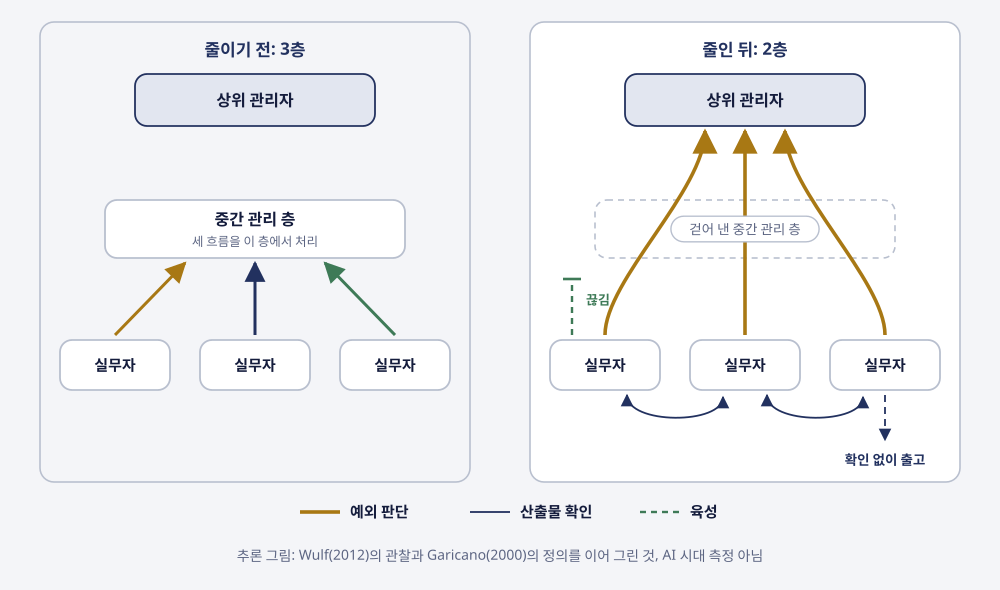
그림 2-1. 층을 줄인 뒤 예외·확인·육성이
가는 경로(Wulf의 관찰을 도식화한 이 책의 추론 그림)
그림 2-1은 왼쪽에서 오른쪽으로 읽는다. 중간 층이 빠진 오른쪽 그림에서
예외 판단은 위로 몰리고, 확인은 실무자 사이를 돌거나 확인 없이 나가고,
육성은 닿을 곳 없이 끊긴다. 화살표의 방향은 이 책의 추론이고, 측정한
값은 없다.
이 빈칸을 그대로 둔 채 조정을 마치면 난감한 일이 생길 수 있다. 몇 달
뒤 상위 관리자의 결재함이 넘치고, 실무자는 누구에게 물어야 할지 몰라
같은 질문을 단체 채팅방에 올린다. 그때 가서 원인을 찾으려 해도 조정 전에
그 층이 무엇을 하고 있었는지 적어 둔 기록이 없다. 이 장면은 앞의 추론을
그려 본 것이고, 측정된 사례는 아니다.
삽화. 중간 층을 줄이고 몇 달 뒤, 받을 사람을 정하지 않은
예외 판단이 상위 관리자의 결재함으로 몰린다. 상상으로 그린 장면으로,
특정 인물이나 조직이 아니다.
감축 자체가 성과를 만들어 주지도 않는다. Gartner가 2026년 5월 낸 자체
조사(2025년 3분기, 연매출 10억 달러 이상 기업 가운데 자율 기술을
시범·배치한 조직의 경영진 350명)에서 응답 조직의 약 80%가 인력 감축을
보고했다. 그런데 투자 대비 수익이 높은 조직과 그렇지 않은 조직의
감축률은 “nearly equal”, 거의 같았다. Gartner의 Helen Poitevin은 이렇게
정리했다. “Workforce reductions may create budget room, but they do not
create return.” 감축은 예산에 여유를 만들 수는 있어도 수익을 만들지는
않는다는 말이다. 리서치 기관의 자체 조사이고, 관리 층만 따로 본 조사가
아니라는 점은 감안하고 읽자. 줄이는 것만으로 결과가 갈리지 않는다면,
줄인 뒤 일이 어디로 갔는지가 결과를 가른다고 보는 편이 자연스럽다(이
책의 추론).
이제 누가 무엇을 정하는지 나눠 보자. 5가지 일을 누가 받을지 정하는
것은 임원이다. 받는 사람의 시간이 어디서 나오는지까지 결정해야 효력이
있기 때문이다. 그 결정을 내릴 수 있게 5가지 일을 표로 정리하는 것은 HR의
몫이다. 팀장은 자기 시간이 5가지 가운데 어디에 쓰이고 있었는지를 숫자로
들고 온다.
줄인 층에 있던 사람은 어디로 가나
층을 줄이는 결정이 정하는 것이 하나 더 있다. 그 층에 있던 사람의 다음
자리다. 앞에서 본 Google의 보도에서는 직함을 내려놓은 관리자 상당수가
실무자로 남았다. 3장에서 다룰 한 대형 기술 기업은 반대 방향의 일을
겪었다. 관리자 한 사람이 50명을 맡도록 새로 꾸린 조직에서, 몇 달 뒤 일부
실무자에게 관리자로 돌아올 뜻을 물었다는 보도다. 이 장면 2개를 함께 보면
관리자 직함은 회사 사정에 따라 몇 달 만에 다시 필요해질 수 있는 자리라는
점이 드러난다.
해고와 재배치 가운데 무엇을 고르느냐도 남은 사람들의 반응을 바꿀 수
있다. 한 익명 직장인 커뮤니티 플랫폼이 인도 대형 기술기업 재직자를
대상으로 자체 조사한 결과에서, 관리자를 직접 해고한 회사의 응답자는
관리자를 실무자로 재배치한 회사의 응답자보다 부정적 영향을 답한 비율이
높았다(커뮤니티 플랫폼 자체 설문, 오차 범위와 가중치 미공개). 방향을
참고할 정도의 자료다. Amazon이 준 사내 재지원 90일은 재배치 쪽 문을
얼마나 열어 둘지를 숫자로 적은 사례다.
직함을 내려놓는 사람에 대해 HR이 정해야 할 것은 4가지다. 직급을
그대로 두는가, 관리 수당 같은 보상은 어떻게 하는가, 다음 평가는 무엇을
기준으로 받는가, 다시 관리자로 돌아올 길은 열려 있는가. 4가지 가운데
무엇이든 비어 있으면 그 사람은 강등으로 읽고, 옆에서 지켜본 다른
관리자도 같은 결론을 내린다.
이 4가지는 서로 묶여 있다. 직급을 유지해도 다음 평가를 실무 산출로만
받으면, 관리 일을 해 온 사람은 첫해 평가에서 불리해지기 쉽다. 그러니
직함을 내려놓은 첫해의 평가 기준을 따로 정해 두는 편이 낫다. 예를 들어
첫해에는 새 역할의 산출과 함께, 옮기기 전에 맡았던 사람들의 인계가
잘됐는지를 함께 본다. 복귀 경로도 마찬가지다. “필요하면 다시 부른다”는
말로는 경로가 되지 않는다. 관리자 자리가 다시 열릴 때 직함을 내려놓았던
사람에게 먼저 알리는지, 복귀할 때 관리 경력을 어떻게 인정하는지를 문서로
적어 두어야 비로소 경로라고 부를 수 있다. 이런 설계가 사람을 붙잡아
둔다는 효과 연구는 아래에서 보듯 찾지 못했다. 이 문단 전체가 이 책의
제안이다.
이 4가지의 설계는 HR이 하고, 결정과 공표는 임원이 한다. 보상이 줄거나
직무가 바뀌는 결정은 노동자 대표·법무와 함께 정할 일이다. 해외에는 이런
결정을 노사 협의 대상으로 둔 제도 사례가 있지만, 국내 적용은 법무 확인이
필요하다.
여기까지 오면 무엇이 아직 비어 있는지 모아 둘 때가 됐다. 2026년 11월
14일까지 이 책의 리서치는 AI 시대에 층을 줄인 뒤 예외 처리와 확인이
어디서 막히는지 측정한 연구를 찾지 못했다. 직함을 내려놓은 관리자의
경로, 이른바 이중 경력 경로가 사람을 붙잡아 두는지에 대한 효과 연구도 이
책의 레퍼런스에는 없다. 평탄화를 공식적으로 되돌렸다고 1차 자료로 발표한
회사도 찾지 못했다. 그래서 아래 심사서의 질문 5개와 이관표는 이 책의
제안이다. 근거가 받치는 것은 질문이 왜 필요한지까지이고, 질문에 답하면
결과가 좋아진다는 것까지는 아니다.
다음 분기에 쓸 제도 도구: 관리 층 조정 사전 심사서
팀장이 들고 올 것: 1장 리더 시간 점검표의 범주별
합계(4주분).
이 심사서는 관리 층을 줄이는 조직 변경안이 경영 회의에 오를 때 그
안건에 붙는 문서다. 임원판과 HR판, 2가지로 되어 있다. 임원판은 질문
5개이고, 안건을 올리는 임원이 답을 적는다. HR판은 줄이는 층의 일 5가지를
받는 사람과 자리로 옮기는 이관표다. 질문 ①과 ②의 답은 이관표의 해당 행을
가리키면 된다.
쓰는 순서는 이렇게 권한다. HR이 조정 대상 조직의 팀장들에게서 시간
점검표 합계를 받아 이관표의 “현재 누가 하나” 칸을 먼저 채운다. 그다음
안건을 올리는 임원이 질문 5개에 답한다. 경영 회의는 답이 빈 질문이
하나라도 있으면 안건을 다음 회의로 넘긴다. 이 규칙을 둘지는 임원이
정한다.
처음 쓸 때 흔히 생기는 일이 2가지 있다. 하나는 이관표의 “받는 사람”
칸에 사람 대신 조직 이름을 적는 것이다. “사업부가 받는다”고 적으면 받는
사람이 정해지지 않은 것과 같다. 팀 코드와 직책까지 적게 하자. 다른
하나는 “받는 사람의 시간 출처” 칸을 비워 두는 것이다. 예외 판단을 상위
관리자가 받기로 했다면 그 관리자가 지금 하는 일 가운데 무엇을 줄여
시간을 낼지까지 적게 하자. 이 칸이 빈 이관표대로 조정하면 받는 사람의
일만 늘어난다.
질문 가운데 관리 범위에 관한 것은 이 심사서에 넣지 않았다. 남은
관리자 한 사람이 몇 명을 맡게 되는지는 3장에서 다룰 분포 점검표로 따로
본다. 1년 뒤 무엇으로 이 결정을 다시 볼지는 이관표의 마지막 열에 적고,
그 열은 26장에서 다룰 임원 의사결정 사안 목록의 행이 된다.
표 2-2. 관리 층 조정 사전 심사서 (임원판: 질문
5개)
번호
질문
답을 적는 곳
누가 정하나
근거 수준
①
줄이는 층이 하던 예외 판단은 누가 받나?
이관표 “예외 판단” 행
(다) 임원
추론(Garicano의 정의에서)
②
그 층이 하던 산출물 확인은 어디로 가나?
이관표 “산출물 확인” 행
(다) 임원
추론
③
줄이는 방식은 해고인가 재배치인가? 사내 재지원 기간은 얼마인가?
심사서 본문
(다) 임원, (라) 노동자 대표·법무(국내 적용은 법무 확인 필요)
근거(회사 사례, 방향만) + 제안
④
관리자 직함을 내려놓는 사람의 직급·보상·평가와 다시 관리자로 돌아올
경로는 무엇인가?
이관표 “직함을 내려놓는 사람” 행
(나) HR 설계, (다) 임원 결정, 보상 변경은 (라)
제안(효과 연구 없음)
⑤
줄인 뒤 결정이 위로 몰리는지 무엇으로 볼 것인가?
이관표 “1년 뒤 다시 볼 지표” 열
(다) 임원
근거(Wulf, AI 이전) + 추론
표 2-3. 이관표 (HR판)
줄이는 층의 일
현재 누가 하나 / 받는 사람·자리 (실명 대신 팀 코드로 적는다)
받는 사람의 시간 출처
누가 정하나
근거 수준
1년 뒤 다시 볼 지표
예외 판단
(다) 임원
추론
상위 결재 건수(조정 전 분기 대비)
산출물 확인
(다) 임원
추론
확인 없이 나간 건수, 확인 담당 한 사람당 건수
육성·1on1
(다) 임원, 운영은 (나) HR
제안
실무자 1on1 주기
위아래 정보 전달
(나) HR
제안
(회사가 정한다)
평가 의견 작성
(나) HR
제안
평가권자 한 사람당 평가 인원
직함을 내려놓는 사람
직급 / 보상 / 평가 기준 / 복귀 경로
해당 없음
(나) 설계, (다) 결정, 보상 변경은 (라)
제안
직함을 내려놓은 사람의 1년 유지
시범 범위
조정 대상 본부 하나에서 한 분기 먼저 쓴다
(다) 임원
제안
운영 부담
담당: HR 조직 설계 담당 / 주기: 조정 1건당 1회 / 저장: 인사 시스템의
조직 변경 기록에 첨부
(나) HR
제안
이 심사서를 처음 쓰는 회사라면 질문 5개 가운데 ⑤에서 가장 오래 멈출
것이다. 결정이 위로 몰리는지 보려면 줄이기 전의 숫자가 있어야 하는데,
대개는 그 숫자를 적어 둔 적이 없다. 그러니 조정안이 아직 없는 본부에서도
상위 결재 건수와 실무자 1on1 주기는 지금 한 번 적어 두자. 줄이고 난
뒤에는 줄이기 전으로 돌아가 측정할 방법이 없다. 그리고 경영 회의에서
이관표의 5개 행이 다 채워졌다고 해서 질문이 끝나지는 않는다. 예외 판단과
확인을 받을 사람이 정해지면, 그 사람이 직접 맡는 인원도 대개 함께
늘어난다. 이관표는 일을 누구에게 보낼지 정하지만, 받은 사람의 팀이
얼마나 커지는지는 보여 주지 않는다. 층을 줄였다면 남은 관리자 한 사람은
몇 명을 맡게 되나? 그리고 그 사람에게 사람을 기를 시간은 남아
있을까?
3장. 관리 범위는 가장 큰 팀과 육성 시간으로 점검한다
임원의 자리
관리자 한 사람에 직원 50명. 2026년 3월 Fortune은 WSJ 보도를 인용해
Meta의 새 응용 AI 엔지니어링 조직이 “50-to-1”의 직원 대 관리자 비율로
운영될 것이라고 전했다. 6개월 뒤인 9월, Business Insider는 사정을 아는
익명 소식통 4명을 인용해 Meta가 그 조직의 일부 실무자에게 관리자 역할로
돌아올 뜻이 있는지 물었다고 보도했다. 보도 표현으로는 “whether they
would like to transition back into manager roles”다. 본인이 고르는
선택이었고, 그 조직에 한정된 일이었다. Meta는 논평을 거부했다.
보도 2건을 이어 읽으면 “Meta가 평탄화를 되돌렸다”는 문장이 쉽게
떠오른다. 보도가 받치는 것은 거기까지 가지 않는다. 몇 명에게 물었는지,
몇 명이 돌아갔는지 숫자가 없고, 회사는 왜 물었는지 설명하지 않았다. 50대
1도 실제로 도달한 비율로 보도된 것이 아니고, 운영하겠다고 알려진
방침이다. 근거가 받치는 문장은 이 정도다. 새로 꾸린 한 조직이 관리자 한
사람이 50명을 맡는 비율로 운영하겠다고 알려졌고, 몇 달 뒤 그 조직의 일부
실무자에게 관리자로 돌아올 뜻을 물었다(2차 보도).
이 장면에서 HR이 먼저 볼 대목은 숫자보다 질문의 형식이다. 관리자로
돌아올 뜻을 물었다는 것은, 그 조직에 관리자 자리로 돌아오는 길이 적어도
한 번은 열렸다는 뜻이다. 돌아오는 사람의 직급과 보상, 평가 기준은 그때
정해져 있었을까? 보도는 거기까지 말하지 않는다. 2장에서 직함을 내려놓는
사람의 복귀 경로를 사전 심사서 질문으로 둔 이유가 여기에 있다. 맡는
인원을 넓히는 결정과 관리자 자리를 다시 여는 결정은 같은 회사 안에서 몇
달 간격으로 내려질 수 있다.
임원에게도 이 장면은 쓸모가 있다. 관리자 한 사람이 맡는 직속 인원, 즉
관리 범위(span of control)를 넓히는 결정은 한 번 내리고 끝나는 결정이
아닐 수 있다는 것을 보여 주기 때문이다. 넓힌 뒤에 무엇을 보고 있었다면
몇 달 뒤의 질문을 더 일찍, 덜 급하게 던질 수 있었을지는 보도로 알 수
없다. 넓힌 뒤에 볼 숫자를 미리 정해 두는 것이 이 장 끝 점검표의
목적이다.
측정된 것과 주장된 것
관리 범위에 관해 나오는 숫자는 많지만, 무엇을 측정했는지는 숫자마다
다르다. 1장이 본 대로, Gallup의 조사에서 미국 관리자 한 사람의 평균 직속
인원은 2024년에서 2025년 사이 늘었고, 같은 시기 전 세계 관리자의 업무
몰입도는 떨어졌다. Gallup은 이 변화를 AI의 결과라고 주장하지 않는다.
관리 범위에 관한 글에서 AI를 언급한 문장은 AI가 팀 규모와 직원 관리에
미칠 영향의 불확실성이 압박을 더할 수 있다는 한 줄뿐이다. 같은 글이 내린
결론은 오히려 관리자 쪽을 가리킨다. 1장에서 옮긴 “Manager talent trumps
span of control.”이 Gallup 자신의 정리다. 측정 방식에도 단서가 있다.
페이지의 방법론 설명은 2022~2024년 패널 조사를 적고 있고, 2025년 수치의
표본 설명은 따로 찾지 못했다. 평균이 늘었다는 사실은 받아들이되, 그
숫자로 우리 회사의 적정선을 정하지는 말자.
표 3-1은 이 장에서 쓰는 출처 4개를 측정 대상과 출처 성격, AI 인과
주장 여부로 나눠 놓은 것이다. 표를 오른쪽 끝 열부터 읽어 보자. AI가 관리
범위를 바꿨다고 주장하는 출처는 하나도 없다. 측정치는 AI와 무관하게
측정됐거나(Gallup), 한 조직의 운영 방침을 보도한 것이거나(Meta), 현실
자료가 아닌 이론 모형이거나(Xu 외), 관리 범위를 측정하지 않은
실험이다(Dell’Acqua 외).
표 3-1. 관리 범위 관련 측정과 주장
출처
측정 대상
시점
출처 성격
AI 인과 주장
Gallup
미국 관리자 평균 직속 인원(10.9명 → 12.1명), 관리자 업무 몰입(27% →
22%, 전 세계)
2024~2025년
1차(조사 기관 원문)
없음. 평탄화가 몰입 하락에 기여했을 수 있다는 추정 표현만 있음
Meta(보도)
한 조직의 직원 대 관리자 비율 방침(50대 1), 이후 관리자 복귀 의사
문의
2026년 3월, 9월
2차(보도, 익명 소식통)
회사 설명 없음
Xu 외
생성형 AI 성능이 오를 때 관리 범위가 바뀌는 경로
arXiv v2, 2026년 3월
이론 모형
모형 안의 예측. 현실 측정 아님
Dell’Acqua 외
P&G 직원 776명, AI를 쓴 개인과 AI 없는 2인 팀의 과제 성과
2025년 4월
1차(무작위 실험)
관리 범위를 측정하지 않음
비고: 적정 관리 범위에 대한 실무자 경험칙은 크게 갈린다. 기술팀 1차
관리자는 5명 안팎이 맞다는 목소리와, 유럽 여러 나라에서는 12~15명도 적은
편이고 30명도 흔하다는 목소리가 함께 있다(Hacker News, 커뮤니티
의견).
이 표가 임원에게 주는 메시지는 단순하다. 지금 회사 밖에서 들어오는
숫자로는 우리 회사의 관리 범위를 몇 명으로 둘지 정할 수 없다. 그 숫자는
회사 안에서 측정할 수밖에 없다.
이론 모형은 곧게 뻗지 않는 경로를 그린다
현실 자료가 얇을 때 이론은 무엇을 말할까? 1장에서 병목 경고로 만난
Xu와 동료들의 이론 모형은 2026년 3월 개정판(v2) 초록에서 경로를 이렇게
예측한다. “the span of control initially contracts before eventually
expanding.” 생성형 AI의 성능이 좋아지면서 관리 범위는 처음에는
좁아졌다가 나중에 넓어진다는 것이다. 모형이 다룬 배치 방식 4가지
모두에서 같은 모양이 나왔다고 초록은 적었다. 실무자 층을 자동화하는
배치에서는 조직이 “fewer but more skilled workers who validate AI
outputs”, 더 적지만 더 숙련된, AI 산출물을 검증하는 사람들로 바뀐다고도
했다.
초록은 경로의 모양까지만 말한다. 처음에 좁아지는 이유를 이 책은
이렇게 읽는다. AI를 막 들인 시기에는 AI가 낸 결과를 사람이 확인하고
고치는 일이 늘어, 관리자 한 사람이 감당할 수 있는 인원이 오히려 줄 수
있다. AI가 더 믿을 만해진 뒤에야 넓어진다(이 책의 추론). 이 읽기가
맞는지는 모형이 아닌 회사의 숫자로 확인할 일이다.
Ide와 Talamàs는 2025년 12월 Journal of Political Economy에 실은 이론
논문에서 다른 각도를 보탰다. “Autonomous AI primarily benefits the most
knowledgeable individuals; non-autonomous AI benefits the least
knowledgeable. However, output is higher with autonomous AI.” 스스로
일을 끝내는 자율 AI는 지식이 가장 많은 사람에게 주로 이득을 주고, 사람을
거드는 비자율 AI는 지식이 가장 적은 사람에게 이득을 준다는 것이다. 다만
전체 산출은 자율 AI 쪽이 높다. 고객 문의를 에이전트가 끝까지 처리하게
하는 팀과, 상담원이 에이전트의 초안을 보고 답하게 하는 팀을 떠올려 보자.
앞의 팀에서는 숙련자가 에이전트의 예외를 받아 처리하고, 뒤의 팀에서는
신입이 초안에 기대어 일한다. 같은 회사의 같은 업무라도 관리자가 누구에게
시간을 써야 하는지가 달라진다(이 책의 추론).
이론 모형 2편 모두 현실 회사를 측정한 결과가 아니다. 그래도 임원이
읽어 둘 대목이 있다. Xu 외의 모형을 그대로 받아들이면 관리 범위는 한
방향으로 곧게 넓어지지 않는다. 지금 넓힌 범위가 몇 년 뒤에도 맞는
범위라는 보장이 없다는 뜻이다. Ide와 Talamàs의 모형에서는 에이전트를
자율로 돌릴지 보조로 둘지에 따라 이득을 보는 사람이 바뀐다. 이 책은
이것을 조직 설계 결정으로 읽는다. 자율 AI를 쓰는 팀과 보조 AI를 쓰는
팀은 관리자가 시간을 쓰는 곳이 다를 수 있고, 관리 범위의 적정선도 다를
수 있다(이 책의 추론).
이 책의 조사 시점 기준으로 이 주제에는 이론 모형 3편과 간접 실증
2편이 있다. 생성형 AI와 관리 범위의 관계를 직접 측정한 연구는 이 책의
리서치가 찾지 못했다. 간접 실증 하나는 2장에서 본 계층 수 연구이고, 다른
하나는 29장에서 다룰 관리직 채용 공고 연구다. 둘 다 관리 범위 자체를
측정하지는 않았다.
맡는 사람이 늘 때 먼저 줄어드는 시간
관리 범위가 넓어질 때 관리자의 하루에서 무엇이 먼저 빠질까? 연구가
답하지 못하는 이 질문에 현장의 목소리는 비교적 한쪽으로 모인다. Hacker
News의 평탄화 토론에서 10년째 관리자라고 소개한 사람은 이렇게 썼다. “At
least for myself as a manager, it’s simply that I don’t have the time. …
I’m taking a sabbatical because of the burn-out.” 적어도 자기에게는
시간이 없다는 것이 이유이고, 번아웃 때문에 안식 휴가를 간다는 고백이다.
같은 토론의 다른 댓글은 다른 쪽에서 같은 지점을 짚었다. “Who supports
the junior engineer who is struggling?” 평평하고 빠른 구조는 실무자가
모두 혼자 일할 수 있는 숙련자라고 가정하는데, 헤매는 주니어는 누가 받쳐
주느냐는 물음이다(둘 다 커뮤니티 의견).
AI 때문에 관리자의 일 자체가 더 무거워졌다는 목소리도 있다. 관리자가
되지 말라는 다른 토론에서 한 사람은 2026년에 관리자가 되지 말아야 할
진짜 이유로 AI가 자기들의 일을 열 배는 어렵게 만든다는 점을 꼽았다(“The
real reason not to become an EM in 2026 is because AI makes our jobs 10x
harder.”). 같은 댓글은 AI 분야에서 일하지 않는 관리자라면 새 도구를 여가
시간에 따로 익혀야 한다고 적었다(커뮤니티 의견). 여기에 맡는 인원이 늘고
관리자도 직접 만들어 내라는 기대까지 겹치면, 여러 요구가 같은 사람의
같은 시간을 두고 다툰다는 것이 이 책의 추론이다. 그 다툼에서 일정표에
고정된 자리가 없는 육성이 먼저 밀린다는 것이 이 목소리들이 가리키는
방향이다. 대표성이 없는 일화이고 영어권 개발자 커뮤니티에 치우친
목소리라는 점은 감안하고 읽자. 사람을 기르는 일이 줄어드는데 아무도
그것을 측정하지 않고 있다면 찜찜한 일이다.
반대 방향의 오독도 있다. 관리 범위를 넓혀도 된다는 근거로 읽히기 쉬운
연구가 하나 있다. Dell’Acqua와 동료들이 P&G 직원 776명을 대상으로 한
별도 실험이다(NBER 워킹페이퍼, 2025년 4월). AI 유무와 개인·2인 팀을
무작위로 섞어 실제 제품 혁신 과제를 맡겼고, 초록은 “individuals with AI
matched the performance of teams without AI”라고 적었다. AI를 쓴 개인이
AI 없는 팀만큼 성과를 냈다는 것이다. 이 실험이 측정한 것은 하루짜리
과제의 산출이다. 관리자도 없고, 사람이 몇 달에 걸쳐 자라는 과정도 없다.
“팀이 필요 없다”나 “관리 범위를 2배로 넓혀도 된다”는 이 실험이 받치지
않는 문장이다.
관리 범위가 넓어지면 코칭과 피드백이 줄어드는지를 인과 설계로 측정한
동료 심사 연구도 이 책의 리서치는 찾지 못했다. 그러니 “관리 범위가
넓어지면 육성 시간이 준다”는 문장은 커뮤니티 목소리가 가리키는
방향까지다. 실증된 사실로 쓸 수 없다.
회사 안에는 이 방향을 확인해 볼 단서가 이미 있다. 1on1 일정, 이직
면담 기록, 신규 입사자의 첫해 유지율 같은 숫자다. 모두 HR이 이미 갖고
있거나 팀장에게 물으면 나오는 숫자이고, 따로 조사를 벌일 필요가 없다.
커뮤니티 목소리가 가리키는 방향이 우리 회사에서도 보이는지는 이 숫자들을
관리 범위와 나란히 놓아 보면 알 수 있다. 다만 이직 면담 기록은 개인
정보가 담긴 자료이니, 팀 단위 합계만 쓰는 편이 낫다.
점검은 분포의 꼬리에서 시작한다
근거가 이만큼 얇으니, 이 책은 회사 안의 숫자 2가지를 함께 보자고
제안한다. 하나는 관리 범위의 분포다. 회사 전체의 평균 하나 대신, 직속
인원이 많은 순서로 팀을 늘어놓고 기준선을 넘는 팀이 몇 개인지 본다. 다른
하나는 그 팀들의 육성 시간이다. 기준선을 넘는 팀 가운데 입사 2년 미만
직원의 비율이 높은 팀부터 1on1이 얼마나 자주 열리는지, 관리자가 사람을
기르는 데 쓰는 시간이 얼마인지를 확인한다.
삽화. 평균 하나 대신, 직속 인원이 많은 순서로 팀을 늘어놓고
기준선을 넘는 팀을 찾는다. 상상으로 그린 장면으로, 특정 인물이나 조직이
아니다.
그래서 이 책은 관리 범위를 가장 큰 팀과 그 팀의 육성 시간으로
점검하자고 제안한다. 효과가 검증된 처방은 아니다.
그림 3-1. 평균이 같고 꼬리가 다른 조직
2곳(예시 값)
그림 3-1의 조직 2곳은 평균 직속 인원이 같다. 위 조직에는 기준선을
넘는 팀이 없고, 아래 조직에는 3개 있다. 평균만 보고하는 경영 회의에서는
조직 2곳이 같아 보인다. 분포를 그려야 아래 조직의 3개 팀이 보이고, 그 팀
관리자들에게 무엇이 빠져 있는지 물을 수 있다.
왜 입사 2년 미만 비율을 함께 볼까? 같은 20명 팀이라도 숙련자가
대부분인 팀과 신입이 절반인 팀은 관리자가 쓰는 시간이 다르다. 앞의
실무자 목소리가 물은 것도 헤매는 주니어였다. 기준선을 넘는 팀 가운데
주니어 비율이 높은 팀은 육성이 가장 먼저 밀릴 수 있는 곳이다. 점검
순서를 정하는 기준일 뿐, 주니어가 많은 팀이 실제로 더 나빠진다는 측정은
없다.
기준선을 몇 명으로 둘지는 회사가 정할 값이다. 앞의 경험칙이 보여 주듯
직무와 지역마다 적정선이 크게 다르고, 그 값을 받치는 연구도 없다. 후보
값은 HR이 직무군별로 내고, 결정과 공표는 임원이 한다. 처음 한 해는 값이
틀릴 수 있다는 것을 전제로, 1년 뒤 다시 볼 날을 함께 정해 두자.
2장의 사전 심사서와 이 점검표는 이어서 쓰도록 만들었다. 이관표의
“육성·1on1” 행에서 줄이는 층의 육성을 받기로 한 관리자가 있다면, 그
관리자의 팀은 이 점검표에서 먼저 확인할 대상이다. 층을 줄이는 결정이
내려진 본부라면 조정 직전 분기와 직후 분기에 점검표를 한 번씩 뽑는 편이
낫다. 표 2장을 나란히 놓으면 조정이 꼬리를 얼마나 길게 만들었는지 볼 수
있다.
이 장의 처방은 하나도 효과가 확인되지 않았다는 점도 함께 적어 둔다.
관리 범위와 코칭의 인과, 관리 범위 기준선이 육성을 지킨다는 효과,
기준선을 넘는 팀에 육성 시간을 따로 배정했을 때의 결과는 2026년 11월
14일까지 이 책의 리서치가 찾지 못했다. 아래 점검표가 할 수 있는 일은
회사가 자기 숫자를 처음으로 측정하게 만드는 데까지다.
다음 분기에 쓸 제도 도구: 관리 범위 분포 점검표
팀장이 들고 올 것: 1장 리더 시간 점검표의 “사람
육성” 시간 비율, 14장 1on1 대화 카드의 실행 주기.
이 점검표는 계산표다. HR이 인사 시스템의 조직도에서 팀 코드별 직속
인원과 입사 연차를 뽑고, 팀장이 들고 온 육성 시간과 1on1 주기를 붙여 한
장으로 만든다. 행은 팀 하나, 마지막 줄은 집계다. 임원판은 이 표를 받아
내릴 결정 문장 2개다.
분기마다 같은 날 뽑는 것이 중요하다. 조직 개편 직후에 뽑으면 직속
인원이 일시적으로 출렁여 꼬리가 실제보다 길어 보인다. 1on1 주기와 관리자
실무 비중은 자기 보고이므로, 숫자 하나하나보다 분기 사이의 변화를 본다.
관리자 실무 비중 열은 관리자 평가 자료로 쓰지 않는다는 문장을 표 머리에
적어 두자. 평가에 쓰인다고 느끼는 순간 그 열은 정직하게 채워지지
않는다.
집계 줄을 다 채우고 나면 임원이 결정할 것은 기준선 초과 팀에 무엇을
해 줄지다. 육성 시간을 따로 배정한다는 결정 문장은 구체적인 조치로
내려와야 효력이 있다. 예를 들어 그 팀 관리자의 개인 실무 목표를
줄이거나, 주니어 1on1을 나눠 맡을 선임을 지정하거나, 팀을 나눌 시점을
정한다. 어느 조치를 고를지는 본부장과 HR이 팀마다 정하고, 고른 조치를
점검표의 마지막 열에 적는다. 다음 분기에 같은 표를 뽑았을 때 그 팀의
1on1 주기가 달라졌는지가 첫 번째 확인 지점이다. 이 조치들이 육성을
지킨다는 근거는 아직 없으니, 조치마다 1년 뒤 다시 볼 날을 함께
적는다.
표 3-2. 관리 범위 분포 점검표 (임원판: 결정 문장
2개)
결정 문장
누가 정하나
근거 수준
1년 뒤 다시 볼 지표
“관리 범위 기준선을 ○명으로 두고, 넘는 팀에는 육성 시간을 따로
배정한다.”
(다) 임원 결정, 직무군별 후보 값은 (나) HR
제안(기준선 값을 받치는 연구 없음)
기준선 초과 팀의 관리자 이직
“기준선을 넘는 팀 수를 분기마다 경영 회의 안건으로 올린다.”
(다) 임원
제안
기준선 초과 팀 수의 분기별 추이, 그 팀 주니어의 1년 유지
표 3-3. 관리 범위 분포 점검표 (HR판: 계산표)
팀 코드(실명 대신 팀 코드로 적는다)
직속 인원
그중 입사 2년 미만 비율
1on1 주기
관리자 실무 비중(자기 보고)
육성 시간 배정 여부
(팀마다 한 행)
집계
중앙값 / 최댓값 / 상위 10% 팀의 평균 / 기준선 초과 팀 수
기준선 초과 팀 안의 평균
기준선 초과 팀 안의 중앙값
기준선 초과 팀 안의 중앙값
배정한 팀 수
누가 정하나
기준선 값은 (다) 임원, 표 운영은 (나) HR
배정은 (다)
근거 수준
제안
제안
제안(커뮤니티 목소리가 가리키는 방향)
제안
제안
1년 뒤 다시 볼 지표
기준선 초과 팀의 관리자 이직
기준선 초과 팀 주니어의 1년 유지
시범 범위
본부 하나, 한 분기
운영 부담
담당: HR 분석 담당 / 주기: 분기 1회 / 저장: 인사 시스템 조직도
추출본과 함께 보관
다음 경영 회의 전에 해 볼 일이 하나 있다. 직속 인원이 가장 많은 팀
3곳을 골라, 그 팀의 1on1이 지난 분기에 몇 번 열렸는지 확인해 보자.
점검표를 다 만들 필요도 없다. 인사 시스템에서 직속 인원 순으로 정렬하고,
위의 팀장 3명에게 일정표를 물어보면 된다. 그 3줄을 경영 회의 자료 한
장에 올리면, 관리 범위가 처음으로 팀 코드와 1on1 횟수가 붙은 숫자로
보인다. 3개 팀 가운데 한 곳이라도 지난 분기 1on1이 한 번도 열리지
않았다면, 그 사실이 점검표를 만들 이유가 된다. 반대로 3개 팀 모두
꼬박꼬박 열렸다면 그 팀장들이 시간을 어디서 냈는지 물어볼 만하다. 다른
팀에 옮겨 쓸 방법이 그 답에 들어 있을 수 있다. 마지막으로 그 팀장들에게
이것도 물어 두면 좋다. 지난 분기에 AI로 아낀 시간이 있었다면 그 시간은
어디로 갔는가. 구조를 바꾼 뒤에 생기는 것은 시간이고, 그 시간의 갈 곳은
아직 누구도 정하지 않았다. 그 결정은 17장에서 임원의 회의로 다시
가져온다. 다만 아낄 시간은 회의실보다 먼저 실무자의 책상에서 생긴다.
다음 부는 에이전트에게 맡길 일을 고르는 실무자의 자리에서 시작한다.
2부. 직접 써 보고 맡길 일을 고르는 리더
1부는 관리 층이 줄어드는 자리에서 끝났다. 3장의 마지막 문장대로,
구조를 바꾼 뒤에 생기는 것은 시간이고 그 시간의 갈 곳은 아직 누구도
정하지 않았다. 1장의 리더 시간 점검표와 3장의 관리 범위 분포 점검표는
시간이 지금 어디로 가고 있는지를 보여 줬다. 그런데 갈 곳을 정할 시간은
누군가 일을 맡기고 바꾸고 없애야 생긴다. 2부는 그보다 앞의 결정으로
간다. 1부가 팀장과 임원의 자리에서 시작했다면, 2부는 에이전트에게 직접
일을 맡기는 실무자의 책상에서 시작해 팀장의 자리로 올라간다. 질문은
하나다. 무엇을 맡기고, 무엇을 바꾸고, 무엇을 없앨지를 무엇으로
고르는가?
실무자는 자기 업무 목록에서 고른다. 4장은 맡길 일을 확인할 수 있는
일부터 고르고, 업무 목록 한 줄마다 맡김·함께·직접·보류 가운데 하나를
표시하는 경계 기록표를 만든다. 5장은 맡김 칸에 동그라미를 친 줄 하나를
끝나는 조건과 멈출 조건이 적힌 맡김 메모로 옮긴다. 6장은 여러
에이전트에게 한꺼번에 맡길 때 무엇부터 확인할지 순서를 정하고, 맡김
메모를 확인 대기열의 카드로 잇는다. 세 장 모두 결과가 돌아오기 전에 할
일이다.
팀장은 팀의 업무 목록에서 고른다. 다만 고르기 전에 자기 손으로 먼저
겪는다. 7장은 리더가 2주 동안 직접 맡겨 보며 쓰는 일지와, AI가 틀린
일까지 팀에 이야기하는 공개에서 시작한다. 8장은 바꿀 일을 고르는 사람과
기준을 정한다. 우선순위 기여와 AI의 경계라는 두 기준으로 팀 업무를 네
영역으로 나누고, 질문지의 답을 결정 기록으로 남긴다. 9장은 바꾸기 전에
없앨 일을 먼저 고른다. 자동화는 없애거나 합치거나 줄일 수 없을 때 맨
마지막에 고른다.
두 자리가 고르는 목록의 크기는 다르지만 기대는 근거는 같다. 직접 맡겨
본 기록이다. 실무자의 경계 기록표도, 팀장의 직접 사용 일지도 예상과
결과를 나란히 적게 하고, 그 기록이 경계 안과 밖을 가른다. 경계는 도구가
바뀔 때마다 움직이니 두 기록 모두 한 번 쓰고 끝나지 않는다. 실무자라면
4장부터, 팀장이라면 7장부터 읽어도 된다. 팀장이 4장부터 6장까지를 먼저
읽어 두면, 팀원이 맡김 칸에 동그라미를 칠 때 무엇을 따지는지 알고 8장의
질문지를 함께 채울 수 있다.
4장. 맡길 일은 확인할 수 있는 일부터 고른다
실무자의 자리
경계 밖 과업에서 AI를 쓴 컨설턴트는 AI를 쓰지 않은 컨설턴트보다
정답을 낼 가능성이 19% 낮았다. 2023년 작업논문으로 먼저 나왔고 2026년
3월 학술지 Organization Science에 실린 Dell’Acqua와 동료들의 실험
결과다(게재본 초록 기준). 이 장은 학술지에 실린 게재본의 표현을
따른다.
숫자보다 눈여겨볼 것은 그 숫자가 나온 자리다. 같은 컨설턴트들이 같은
AI를 썼다. 어떤 과업에서는 AI 덕분에 더 많이, 더 빨리, 더 잘 해냈고,
다른 과업 하나에서는 AI를 쓴 쪽이 더 자주 틀렸다. 사람도 도구도
그대로인데 결과만 갈렸다. 실무자의 하루도 다르지 않다. 아침에 맡긴
요약은 흠잡을 데 없이 돌아오고, 오후에 맡긴 비슷한 정리는 그럴듯한 틀린
답으로 돌아온다. 둘 다 같은 도구에, 같은 손으로 맡겼다. 그렇다면 내 업무
목록에서 맡길 일은 무엇으로 골라야 할까?
삽화. 같은 도구에 같은 손으로 맡긴 두 일인데, 하나는 흠잡을
데 없이 돌아오고 다른 하나는 그럴듯한 틀린 답으로 돌아온다. 상상으로
그린 장면으로, 특정 인물이나 조직이 아니다.
비슷해 보이는 두 일
실험의 얼개부터 보자. 연구진은 BCG 컨설턴트 758명을 대상으로 사전
등록한 실험을 했다. AI가 잘 해낼 것으로 본 범위 안의 과업 18개에서는
AI를 쓴 쪽이 과업을 12.2% 더 많이 끝냈고, 25.1% 더 빨리 끝냈으며, 품질도
크게 좋아졌다(게재본 초록). 범위 밖에 두려고 고른 과업은 경영 판단이
필요한 복합 과업 하나였다. 정답을 낼 가능성이 19% 낮아진 곳이 바로
여기다.
연구진은 AI가 잘하는 일과 못하는 일 사이의 선을 들쭉날쭉한
경계(jagged technological frontier)라고 불렀다. 겉으로 비슷해 보이는 두
과업 가운데 하나는 경계 안에 있고 다른 하나는 밖에 있을 수 있다는
뜻이다. 실무자에게 이 말은 꽤 불편하게 들린다. 우리는 보통 “쉬운 일은
맡기고 어려운 일은 내가 한다”는 식으로 고른다. 그런데 어려워 보이는 일과
AI가 틀리는 일은 서로 다른 목록이다. 사람에게 쉬운 일을 AI가 틀리기도
하고, 사람이 며칠 걸릴 일을 AI가 금방 해내기도 한다. 난이도라는 익숙한
잣대로는 경계가 보이지 않는다.
더 마음에 걸리는 대목은 경계 밖에서 일어난 일이다. AI를 쓴 쪽은 AI를
쓰지 않은 쪽보다 나빴다. 도움을 받지 못한 정도에서 그치지 않고 손해를
봤다. 경계 밖의 일을 경계 안이라고 믿고 맡기면, 혼자 했을 때보다 결과가
나빠질 수 있다는 이야기다. 맡길 일을 고르는 판단에 이득과 손해가 함께
걸려 있는 이유가 여기 있다.
한 가지 더 짚어 두자. 연구진은 그 과업을 경계 밖에 두려고 미리
골랐다. 실험을 설계한 사람들이 일부러 AI가 틀릴 만한 과업을 찾아 넣은
것이다. 실무자에게는 그런 사전 선별이 없다. 내 업무 목록의 어느 줄이
경계 밖에 있는지 누구도 미리 표시해 주지 않는다. 결과가 그럴듯해 보이면
더 그렇다. 경계 밖의 결과도 겉모습은 경계 안의 결과와 크게 다르지 않을
수 있고, 차이는 내용을 따져 볼 때에야 드러난다. 그래서 이 장의 질문은
“무엇이 어려운가”에서 “무엇을 내가 확인할 수 있는가”로 옮겨 간다.
이 숫자에는 시점이 붙어 있다. 실험에 쓰인 AI는 2023년 4월 무렵의
GPT-4였다. 모델이 바뀌면 경계의 위치도 움직인다. 2023년에 경계 밖이던
과업이 지금은 안쪽에 있을 수 있고, 지금 안쪽이라고 믿는 일이 다음
도구에서 다른 식으로 틀릴 수도 있다. 이 실험이 오래 남겨 줄 것은 19%라는
값보다 경계가 들쭉날쭉하다는 구조다. 그 구조는 도구가 바뀌어도 그대로
남을 가능성이 높다.
내 감각도 틀린다
경계가 들쭉날쭉하다면, 써 보면서 감을 익히면 되지 않을까? 몇 번 맡겨
보면 어디서 잘 되고 어디서 틀리는지 손에 익을 것 같다. 아쉽게도 연구는
그 감에 조심하라고 말한다.
Fügener와 동료들은 2022년 Information Systems Research에 실린 논문
초록에 이렇게 적었다. “Humans, on the other hand, are poor judges of
their metaknowledge and are not good at delegating knowledge work to
AI”. 사람은 자기가 무엇을 알고 무엇을 모르는지, 곧 자기 메타지식을 잘
판단하지 못하고, 그래서 지식 노동을 AI에게 맡기는 일도 잘하지 못한다는
뜻이다. 실험 내용은 7장이 다루니 이 장은 초록의 결론만 가져온다. 맡길
일을 고르려면 내가 그 일을 얼마나 잘하는지부터 알아야 하는데, 바로 그
판단이 흔들린다.
체감과 측정이 얼마나 어긋날 수 있는지는 METR의 2025년 실험이 보여
준다. 숙련된 오픈소스 개발자 16명이 자기가 잘 아는 저장소의 과제 246개를
풀었고, 과제마다 AI를 쓸 수 있는지를 무작위로 정했다. 도구는 2025년
2월부터 6월 사이의 것이었다. 개발자들은 시작 전에 AI를 쓰면 완료 시간이
24% 줄 것이라고 예상했다. 실험을 마친 뒤에는 20% 줄었다고 느꼈다. 측정해
보니 AI를 쓴 과제가 19% 더 오래 걸렸다. METR은 뒤에 이 결과를 발표한
페이지에 “These results are out of date.”라는 문구를 붙였다.
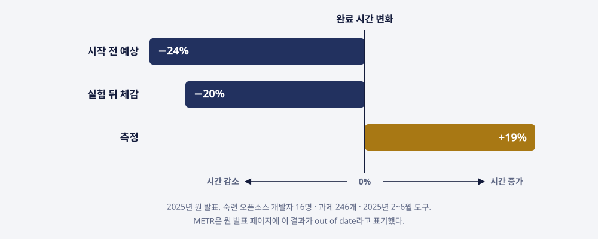
그림 4-1. 예상, 체감, 측정: METR 2025
실험의 완료 시간 변화
이 결과에는 단서가 둘 붙는다. 첫째, 결과가 낡았다는 표시다. METR은
2026년 2월에 낸 갱신 공지에서 지금은 개발자들이 그때보다 더 빨라졌을
가능성이 높다고 보면서도, 그 크기에 대해서는 자기 데이터가 아주 약한
증거라고 적었다. AI 없이 일하기 싫다며 실험 참여를 거절하는 개발자가
크게 늘어 추정이 아래로 치우칠 수 있다는 이유도 밝혔다. 둘째, 표본이
16명이고 숙련자가 익숙한 저장소에서 일한 조건이다. 그러니 이 실험에서
“AI가 일을 느리게 만든다”는 결론을 끌어낼 수는 없다. 이 책이 가져오는
것은 하나다. 숙련된 사람조차 자기 체감만으로는 AI가 얼마나 도움이
되었는지 맞히지 못했다.
두 연구를 나란히 놓으면 맡길 일을 고르는 사람의 처지가 보인다. 경계는
눈에 보이지 않고, 그 경계를 더듬는 내 감각도 믿기 어렵다. 써 본 경험이
쌓여도 기록이 없으면 그 경험은 체감으로만 남는다. METR의 개발자들은
과제를 다 끝낸 뒤에도 빨라졌다고 믿었다. 일을 마친 사람의 체감조차
측정과 어긋날 수 있다는 뜻이다.
실무에서 이 어긋남은 흔한 대화로 나타난다. 옆자리 동료가 “써 보니
확실히 빠르더라”고 말한다. 나도 비슷하게 느낀다. 그런데 무엇과 견줘
빠르다는 걸까? 맡기기 전에 이 일이 얼마나 걸릴 것 같았는지 적어 둔
사람은 드물다. 결과를 고치는 데 든 시간을 따로 센 사람은 더 드물다. 그런
말을 듣거나 내가 그렇게 느낄 때는 비교할 기록이 있는지부터 물어보자. 이
책의 제안이다. 기록이 없다면 그 말은 아직 확인되지 않은 말로 남는다.
함께하면 늘 나은가
그렇다면 아예 혼자 고르지 말고 늘 AI와 함께 하면 어떨까? 사람과 AI가
같이 하면 각자의 약점을 메워 줄 것 같다. 이 기대에 가장 넓은 근거로 답한
연구가 Vaccaro, Almaatouq, Malone의 2024년 Nature Human Behaviour
논문이다. 연구진은 사전 등록한 체계적 문헌 고찰과 메타분석으로 실험 연구
106편에서 효과 크기 370개를 모았다.
결과는 기대와 달랐다. 평균적으로 사람과 AI의 조합은 사람 혼자나 AI
혼자 가운데 더 나은 쪽보다 성과가 낮았다(Hedges’ g = -0.23). g는 여러
연구의 차이를 같은 척도로 맞춘 효과 크기이고, 음수는 조합이 더 나은
단독보다 못했다는 뜻이다. 조건에 따라서는 갈렸다. 사람이 AI보다 잘하는
과업에서는 조합이 이득을 냈고, AI가 사람보다 잘하는 과업에서는 조합이
손실을 냈다. 과업 종류로 보면 무언가를 결정하는 과업에서 손실이,
콘텐츠를 만드는 과업에서 이득이 나타났다. 연구진은 출판 편향이 있을 수
있다는 점도 함께 적었다. 분석에 들어간 연구는 2020년 1월부터 2023년 6월
사이에 출판된 것이라 지금의 에이전트와는 거리가 있다.
비개발 업무로 옮겨 보면 감이 온다. 고객 문의에 보낼 답변 초안을 쓰는
일은 만드는 일이고, 그 문의를 환불 대상으로 볼지 정하는 일은 판단하는
일이다. 같은 문의를 두고도 두 일은 메타분석의 서로 다른 칸에
들어간다.
여기서부터는 이 책의 추론이다. Dell’Acqua 외와 Vaccaro 외는 서로 다른
질문을 던졌지만, 두 결과를 잇는 다리가 하나 있어 보인다. “나는 이 일을
AI보다 잘하는가”라는 질문이다. 내가 더 잘하는 일이라면 AI와 함께 해도 내
판단이 결과를 끌어올릴 여지가 있다. AI가 더 잘하는 일에 내가 어설프게
손을 대면 결과를 끌어내릴 수 있다. 원문이 이렇게 잇지는 않았다. 다만
맡길 일을 고를 때 이 질문 하나를 앞에 세워 두면, 경계를 더듬는 감각이
조금 덜 막연해진다.
이 추론에서 실무자가 챙길 것이 하나 더 있다. “함께 하면 안전하다”는
생각 자체를 의심해 보자는 것이다. 맡기기가 불안할 때 우리는 흔히 중간에
자주 끼어들고 결과를 이리저리 고치는 쪽을 고른다. 내가 그 일을 잘 아는
경우라면 그 개입이 쓸모 있다. 내가 잘 모르는 일이라면 개입이 오히려
결과를 흐릴 수 있다. 그런 일은 중간에 손대기보다 결과를 확인할 수단을
먼저 마련하는 편이 낫다. 확인할 수단마저 없다면 어떻게 할까? 그 질문은
이 장의 뒤쪽에서 “보류”라는 칸으로 다시 만난다.
현장이 고르는 기준
연구실 밖의 사람들은 실제로 무엇을 맡길까? Anthropic은 2025년 8월
자사 엔지니어와 연구자 132명을 설문하고 53명을 심층 면담한 결과를 2025년
12월에 공개했다. 한 회사가 자기 직원에게 한 조사라는 점을 먼저 밝혀
둔다. 응답자 대부분이 AI를 자주 쓴다고 했지만, 절반 넘는 응답자가 “fully
delegate”, 곧 완전히 맡길 수 있다고 답한 몫은 자기 일의 0~20%였다. 글은
응답자마다 “완전히 맡긴다”를 다르게 해석했을 수 있다는 단서도 달았다.
그러니 이 숫자를 일반 직장인의 평균으로 읽기는 어렵다. AI를 만드는
회사의 엔지니어들도 맡기는 몫은 작게 잡았다는 정도로 읽는 편이 낫다.
같은 조사의 면담에서 한 사람은 이렇게 말했다. “It’s absolutely
amazing for everything where validation effort isn’t large in comparison
to creation effort.” 확인하는 수고가 만드는 수고보다 크지 않은 일이라면
무엇이든 정말 훌륭하다는 뜻이다. 응답자 한 사람의 말이고, 회사가 내린
결론으로 읽으면 곤란하다. 그래도 맡길 일을 고르는 기준을 이만큼 짧게
담은 문장은 드물다.
맡기는 결정에 무엇이 작용하는지를 묻는 연구도 있다. Lubars와 Tan은
2019년 NeurIPS 발표에서 맡김 결정에 영향을 주는 네 요인으로 동기,
난이도, 위험, 신뢰를 들었다. 과업 100개를 두고 한 설문에서 사람들은 AI가
전부 하는 방식보다 사람이 앞에서 이끄는 방식을 훨씬 선호했고, 네 요인
가운데 신뢰가 사람들의 선호와 가장 강하게 관련됐다. 사람들이 무엇을
원하는지 물은 조사이지 맡긴 결과의 성과를 측정한 연구는 아니고, 지금의
언어 모델이 나오기 전 연구라는 점은 감안하자.
개발자 커뮤니티에도 같은 감각을 담은 댓글이 있다. 2026년 3월 Hacker
News에서 자기가 잘 아는 인프라 구성 작업을 맡기는 한 개발자는 “Works
perfectly 95% of the time and I know where it will go wrong so I watch
for that.”이라고 썼다. 대부분 잘 되고, 어디서 틀릴지 알기 때문에 그곳을
지켜본다는 것이다. 95%는 그 사람의 체감이다. 눈여겨볼 곳은 뒷부분이다.
그는 어디서 틀릴지 안다.
이 셋을 엮어 이 책은 맡길 일을 두 가지 예상으로 고르자고 제안한다.
하나는 확인하는 비용이 만드는 비용보다 작은가, 다른 하나는 내가 이 일을
AI보다 잘하는가다. 두 예상을 축으로 놓으면 네 칸이 생긴다. AI가 더
잘하는데 확인이 싸면 맡긴다. 내가 더 잘하고 확인도 싸면 함께 한다. 내가
더 잘하는데 확인이 만드는 일보다 비싸면 직접 한다. AI가 더 잘할 것
같은데 확인할 방법이 마땅치 않으면 보류한다. 확인할 방법이 없다면 아직
맡길 때가 아니다. 이 문장은 이 책의 제안이다. 가로축은 한 사람의 면담
응답에서, 세로축은 앞 절의 추론에서 가져왔고, 네 칸의 이름은 맡김 요인
연구가 말한 사람이 이끄는 방식을 참고해 붙였다. 이 기준을 시험한 실험은
아직 없다.
칸마다 뜻을 조금 더 풀어 두자. 맡김은 결과만 확인 수단으로 보는
칸이다. 중간 과정에 손대지 않고, 돌아온 결과를 원본과 대조하거나 합계를
맞추거나 직접 돌려 보는 식으로 확인한다. 함께는 내가 앞에서 이끄는
칸이다. 방향과 뼈대는 내가 정하고 AI에게 부분을 맡기며, 앞의 개발자처럼
내가 아는 약한 곳을 지켜본다. 직접은 이 일의 결과를 내 손으로 낸다는
뜻이다. 자료를 찾거나 문장을 다듬는 데 AI를 곁들일 수는 있지만 판단은 내
손에 둔다. 보류는 지금은 맡기지 않고 기다리는 칸이다. 확인할 수단이
생기거나, 확인을 도와줄 사람이 생기거나, 내가 그 일을 더 알게 되면 다른
칸으로 옮긴다.
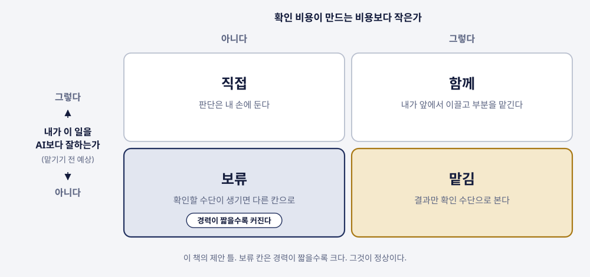
그림 4-2. 맡길 일을 고르는 두 가지
예상
여기까지 본 근거를 한 표에 모으면 다음과 같다. 성격과 한계 열을 함께
읽어 두자.
표 4-1. 맡길 일을 고르는 근거 비교
연구
대상
시점
결과
성격
한계
Dell’Acqua 외 (Organization Science 2026)
BCG 컨설턴트 758명
GPT-4(2023년 4월)
경계 안 과업 18개: 12.2% 더 많이, 25.1% 더 빨리, 품질 향상. 경계 밖
과업: 정답 가능성 19% 낮음
사전 등록 현장 실험, 게재본 초록
컨설팅 과업, 모델 시점에 묶인 수치
Fügener 외 (Information Systems Research 2022)
실험 참가자(실험 내용은 7장)
2022년 게재
사람은 자기 메타지식을 잘 판단하지 못하고 AI에 일을 잘 맡기지
못한다
실험 연구, 초록
좁은 과업에서 나온 결과
METR
숙련 오픈소스 개발자 16명, 과제 246개
2025년 2~6월 도구
예상 24% 단축, 체감 20% 단축, 측정 19% 증가
무작위 대조 실험, 프리프린트
표본이 작고, METR 스스로 낡은 결과로 표기
Vaccaro 외 (Nature Human Behaviour 2024)
실험 연구 106편, 효과 크기 370개
2020년 1월~2023년 6월 출판 연구
조합이 더 나은 단독보다 평균적으로 낮음(g = -0.23). 사람이 더 잘하면
이득, AI가 더 잘하면 손실
표의 마지막 줄은 본문에서 다루지 않았지만 균형을 위해 넣었다. AI가
어떻게 동작하는지 알게 되면 맡기는 판단은 나아지는데, 더 쓰고 싶은
마음은 줄 수 있다. 경계를 아는 일이 곧 더 많이 맡기는 일로 이어지지는
않는다는 뜻이다.
경력이 짧다면 보류 칸이 크다
그림 4-2에는 찜찜한 구석이 하나 있다. 두 축이 모두 자기 판단이다.
내가 이 일을 AI보다 잘하는지, 확인이 만드는 일보다 싼지는 결국 내가
정한다. 그런데 앞에서 본 Fügener 외는 사람이 바로 그 판단에 서툴다고
했다. 같은 장 안에서 근거와 제안이 서로 부딪힌다.
이 책은 이 충돌을 이렇게 다루자고 제안한다. 두 판단을 결론으로 적지
말고 “맡기기 전 예상”으로 적는다. 그리고 몇 주 동안 실제 결과를 옆에
적어 예상을 고친다. 예상은 가설이고 기록은 그 가설을 시험하는 장치다.
처음 표시한 칸이 틀렸다면 그것은 이 도구가 제대로 돌고 있다는
신호다.
경력이 짧은 독자에게는 이 표시가 더 막막할 수 있다. 신입이나 주니어는
대부분의 일에서 AI보다 잘한다고 자신하기 어렵고, 결과가 맞는지 확인할
방법도 아직 배우는 중이다. 그래서 업무 목록의 많은 줄이 보류 칸으로
간다. 그것이 정상이다. 보류는 “손대지 말라”는 표시와 다르다. 확인을
배우는 중인 일은 선배의 확인과 짝을 지어 맡겨 볼 수 있다. 내가 결과를
먼저 보고 어디가 의심스러운지 적은 다음, 선배에게 같은 결과를 보여 주고
내가 놓친 곳을 듣는 식이다. 또는 12장에서 다룰 “배우는 쓰기”로 넘길 수
있다. 답을 받아 쓰는 대신 힌트를 받아 가며 스스로 푸는 방식이다. 둘 다
이 책의 제안이다. 예를 들어 입사 첫 달의 영업 지원 담당자라면, 고객사
공개 자료 요약은 맡김 칸에 두더라도 그 요약을 근거로 제안서 방향을
정하는 일은 보류 칸에 두고 선배와 함께 보는 편이 낫다. 개발 쪽이라면
처음 보는 코드베이스에서 버그 원인을 짚는 일이 비슷한 자리에 놓인다.
짝을 지어 맡길 때 한 가지 요령이 있다. 선배에게 결과를 보여 주기 전에
내가 의심한 곳을 먼저 적어 두는 것이다. 선배가 짚은 곳과 내가 적은 곳을
견주면, 내가 무엇을 볼 줄 알고 무엇을 아직 못 보는지가 드러난다. 이렇게
겹친 곳이 늘어나는 일은 그 일이 보류 칸에서 함께 칸으로 옮겨 갈 때가
되었다는 표시로 쓸 수 있다. 몇 번이면 충분한지 정해 둔 연구는 없으니
기준은 선배와 함께 정하자. 보류 칸이 크다고 조급해할 필요는 없다. 그
칸에 든 줄들이 곧 지금 내가 배우는 중인 일의 목록이다.
경계는 움직인다는 점도 이 칸들을 다시 보게 만든다. 앞에서 본 실험의
수치는 2023년 4월의 GPT-4와 2025년 2~6월의 도구에 묶여 있다. 회사가
도구를 바꾸거나 모델이 새로 나오면 지난달 보류 칸에 있던 일이 맡김
칸으로 옮겨 갈 수 있고, 거꾸로 움직이는 일도 생긴다. 그래서 경계는
기억보다 기록으로 붙잡아 두자고 이 책은 제안한다. 도구가 바뀐 날을 적어
두고, 그날 이후 처음 맡기는 일은 예상 칸부터 다시 채운다. 목록 전체를 한
번에 다시 볼 필요는 없다. 지난번에 경계 밖으로 적었던 줄 몇 개와 보류
칸의 줄 몇 개를 골라 새 도구로 한 번씩 맡겨 보면, 경계가 어느 쪽으로
움직였는지 첫 윤곽이 잡힌다. 경계 안이라고 믿었던 줄도 하나쯤 섞어 두자.
새 도구가 예전에 잘하던 일을 다른 식으로 틀리는 경우도 있기
때문이다.
마지막으로 한 가지를 구분해 두자. 경계를 꾸준히 기록하면 자기
메타지식이 길러진다는 생각은 그럴듯하지만, 그것을 직접 측정한 연구는
이번 조사에서 찾지 못했다. 이 부분은 이 책의 추론이다. 기록이 적어도
체감을 결과와 나란히 놓게 해 준다는 점만은 METR의 개발자들이 보여 준
어긋남에서 끌어낼 수 있다.
다음 주에 쓸 도구: 경계 기록표
사용 일지는 리더가 아니어도 누구든 쓸 수 있다. 이 책의 제안이다.
7장에서 리더가 쓰는 2주 직접 사용 일지가 그 예다. 경계 기록표는 그
일지를 날짜 순서에서 업무 목록 순서로 돌려 세운 양식이다. 일지는 오늘
맡긴 일을 적고, 기록표는 내가 늘 하는 일 한 줄마다 그 일이 경계 어디쯤에
있는지 적는다.
쓰는 법은 단순하다. 지난 2주 동안 실제로 한 일을 10줄쯤 적는다.
줄마다 맡김·함께·직접·보류 가운데 하나를 고르고, Lubars·Tan의 네
요인(동기·난이도·위험·신뢰)을 상·중·하로 표시한다. 동기는 이 일을 내가
직접 하고 싶은 정도, 위험은 틀렸을 때 생기는 손해의 크기, 신뢰는 이
일에서 AI 결과를 믿는 정도다. 그다음 두 예상 열을 채운다. 예상 열은
가설이다. 결과가 쌓이면 분류를 고친다. 이 규칙 하나만은 지키자.
두 예상 열에는 “그렇다·아니다·모르겠다” 셋 가운데 하나만 적어도 된다.
모르겠다가 많은 줄은 그 자체로 정보다. 확인 비용 열에는 무엇으로
확인할지를 괄호 안에 함께 적어 두자. 원본과 대조한다, 합계를 맞춰 본다,
직접 돌려 본다, 아는 사람에게 묻는다처럼 짧게 쓰면 된다. 무엇으로
확인할지 한 단어도 떠오르지 않는다면 그 줄은 보류 칸에 가까울 가능성이
높다.
결과 열은 실제로 맡겨 본 뒤에 경계 안이었는지 밖이었는지를 적는
칸이다. 밖이었다면 무엇이 틀렸는지 한 줄을 덧붙인다. 이 칸은 20장에서
실패 카드를 쓸 때 출처로 다시 쓰인다. 고친 분류 열은 결과를 보고 칸을
옮겼을 때만 채운다. 마지막 표시한 날 열은 도구가 바뀐 날과 견주어 보기
위한 칸이다. 그날보다 오래된 표시는 다시 볼 차례라는 뜻이다.
표 4-2. 경계 기록표
업무
분류
동기·난이도·위험·신뢰
내가 AI보다 잘하는가(예상)
확인 비용 대 만드는 비용(예상)
결과(경계 안·밖)
고친 분류
마지막 표시한 날
예: 지난달 고객 문의를 유형별로 세어 표로 만들기
맡김
하·하·중·중
아니다
확인이 싸다(원본 건수와 합계 대조)
예: 바뀐 함수에 맞춰 테스트 코드 초안 쓰기
함께
중·중·중·중
그렇다
확인이 싸다(직접 돌려 본다)
예: 다음 분기 우선순위를 정하는 메모 쓰기
직접
상·상·상·하
그렇다
확인이 더 비싸다
이 도구의 근거: Lubars·Tan의 맡김 네 요인, Vaccaro 외(사람이 더 잘할
때 조합 이득), Anthropic 조사의 면담 응답(확인 수고 대 만드는 수고) /
근거 수준: 유비 + 이 책의 제안
이번 주에 해 볼 일은 하나다. 업무 목록 10줄을 적고, 줄마다
맡김·함께·직접·보류 가운데 하나를 표시해 보자. 10줄이 다 같은 종류의
일이라면 종류가 다른 일을 몇 줄 섞는다. 요약만 적으면 요약의 경계만
보인다. 고민이 길어지는 줄이 있다면 그 줄은 일단 보류에 두면 된다. 예상
열을 채울 때는 맞히려고 애쓰지 말자. 틀린 예상이 한 주 뒤에 드러나야 이
표가 쓸모를 얻는다.
다 표시했다면 칸마다 줄 수를 세어 보자. 맡김이 하나도 없다면 너무
조심스러운 것일 수 있고, 보류가 하나도 없다면 너무 낙관적인 것일 수
있다. 어느 쪽이든 정답은 없다. 이 숫자는 다음 달 같은 날 다시 세어 볼
기준점이다. 그다음 맡김 칸에 들어간 줄 가운데 이번 주에 실제로 맡길 일
하나에 동그라미를 친다. 그 일을 어떻게 적어서 넘길지는 아직 정하지
않았다. 표시만 해도 내 업무 목록이 처음으로 경계라는 눈으로 보이기
시작한다.
5장. 끝나는 조건과 멈출 조건을 적어 맡긴다
실무자의 자리
흔히 맡긴다는 것은 일을 남의 손에 넘기는 것이라고 한다. 넘기고 나면
그 일은 내 손을 떠난다고 여긴다. 에이전트에게 맡겨 본 사람이라면 이
그림이 조금 어긋난다는 것을 안다. 맡긴 일이 엉뚱한 모양으로 돌아온다.
끝났다고 보고했는데 열어 보면 덜 되어 있다. 반대로 언제 멈춰야 할지 몰라
계속 돌다가 내가 원하지 않은 데까지 손을 댄다. 이것은 에이전트 탓일까,
맡기는 글 탓일까?
둘 다일 수 있다. 다만 맡기는 쪽이 손댈 수 있는 것은 맡기는 글뿐이다.
모델을 바꾸는 일은 대개 내 권한 밖이고, 도구가 다음 판에서 나아지기를
기다리는 동안에도 일은 맡겨야 한다. 맡기는 글은 오늘 바로 고칠 수 있다.
그 글에서 가장 자주 빠지는 것은 어디서 끝나고 언제 멈추는지다. 무엇을 해
달라는지는 누구나 쓴다. 무엇이 되면 그만해도 되는지, 무엇을 만나면 손을
멈추고 돌아와야 하는지는 잘 쓰지 않는다. 그래서 맡김을 다시 정의해 보자.
맡긴다는 것은 일을 넘기는 것이 아니라 끝을 정해 주는 것이다. 이 책이
제안하는 정의다. 4장의 경계 기록표에서 맡김 칸에 동그라미를 친 줄이
있다면 그 줄을 옆에 두고 읽어 가자. 장 끝에서 그 줄 하나를 한 장짜리
메모로 쓴다.
삽화. 일을 맡기기 전에, 어디서 끝나고 언제 멈춰야 하는지를
맡기는 글에 먼저 적는다. 상상으로 그린 장면으로, 특정 인물이나 조직이
아니다.
공식 가이드 넷이 겹치는 곳
에이전트에게 일을 맡기는 법에 대해서는 AI를 만드는 회사들이 낸 공식
가이드가 여럿 있다. 대부분 에이전트를 만드는 개발자를 위한 문서다. 이
책은 그 문서들의 사용법을 옮기지 않는다. 대신 회사가 달라도 되풀이되는
원칙 문장만 빌려 온다.
Anthropic은 2025년 6월 자사의 다중 에이전트 조사 시스템을 소개하는
글에서, 상위 에이전트가 하위 에이전트에게 일을 나눌 때 필요한 것을
이렇게 적었다. “Each subagent needs an objective, an output format,
guidance on the tools and sources to use, and clear task boundaries.”
목표, 출력 형식, 쓸 도구와 출처에 대한 안내, 분명한 작업 경계가
필요하다는 뜻이다. Google Workspace의 한국어판 안내는 프롬프트를 쓸 때
고려할 네 영역으로 페르소나, 작업, 맥락, 형식을 든다. 제품을 알리는
자료이니 원칙으로만 읽자. OpenAI가 낸 에이전트 구축 가이드는 일의
단계마다 구체적인 행동이나 출력이 대응하도록 하라고 권한다. Anthropic의
프롬프트 문서는 모델을 대하는 태도를 이렇게 권한다. “Think of Claude as
a brilliant but new employee who lacks context on your norms and
workflows.” 똑똑하지만 우리 팀의 규범과 일하는 방식을 모르는 신입
직원으로 생각하라는 것이다.
이 비유는 실무자에게 특히 쓸모가 있다. 신입은 시키는 일을 해낼 능력은
있지만, 우리 팀에서 “보고서”라고 하면 몇 쪽짜리를 말하는지, 어떤 표현을
쓰지 않는지, 누가 그 결과를 읽는지는 모른다. 말해 주지 않은 것은 자기가
아는 일반적인 방식으로 채운다. 에이전트가 엉뚱한 모양의 결과를 돌려줄 때
그 엉뚱함은 대개 이 빈칸에서 나온다고 보면, 고칠 곳이 어디인지가
보인다.
네 문서를 겹쳐 놓으면 공통분모가 보인다. 무엇을 위해 하는가(목표),
어떤 모양으로 돌려받는가(출력 형식), 무엇을 보고 하는가(쓸 자료),
어디까지 하는가(경계). 여기서부터는 이 책의 종합이다. 이 넷은 사람에게
일을 맡길 때 쓰는 업무 요청서의 칸과 거의 겹친다. 새로 들어온 동료에게
보고서 작업을 부탁할 때도 왜 필요한지, 어떤 양식으로 받고 싶은지, 무엇을
참고하면 되는지, 어디는 건드리지 말아야 하는지를 말한다. 에이전트에게
맡기는 글이 특별한 기술처럼 보이지만, 뼈대는 이미 아는 것에 가깝다.
표 5-1. 공식 가이드 비교
발행처
날짜
원래 대상
핵심 내용
이 책이 옮긴 항목
Anthropic, 다중 에이전트 조사 시스템 글
2025-06-13
에이전트를 만드는 개발자
하위 에이전트마다 목표, 출력 형식, 도구와 출처 안내, 작업 경계가
필요하다
목표, 출력 형식, 쓸 자료, 경계
Anthropic, 효과적인 에이전트 구축 글
2024-12-19
에이전트를 만드는 개발자
가장 단순한 해법에서 시작한다. 최대 반복 횟수 같은 멈춤 조건을 두고,
확인 지점이나 막힌 곳에서 사람에게 돌아온다
상한, 멈출 조건
Anthropic, 맥락 설계 글
2025-09-29
에이전트를 만드는 개발자
신호가 강한 최소한의 맥락을 준다. 맥락이 길수록 정확히 떠올리는
능력이 떨어진다
쓸 자료 고르기
Anthropic, 개발 도구 공식 문서
날짜 표기 없음(2026-11 열람)
개발 도구 사용자
무인 실행 전에 끝이 어떤 모습인지, 스스로 확인할 수단, 손댈 범위,
횟수·비용 상한, 사람의 최종 승인을 갖춘다
끝나는 조건, 확인 수단, 상한, 되돌릴 수 없는 행동
Anthropic, 프롬프트 공식 문서
날짜 표기 없음(2026-11 열람)
모델을 쓰는 개발자
맥락을 모르는 신입처럼 대한다. 지시의 이유를 준다. 맥락 없는
동료에게 보여 주는 시험
목표(왜), 마지막 줄
OpenAI, 에이전트 구축 가이드
PDF에 날짜 표기 없음
에이전트를 만드는 개발자·기업
기존 업무 문서에서 출발하고 작게 쪼갠다. 단계마다 구체적 행동이나
출력. 되돌릴 수 없는 고위험 행동은 사람이 감독
쓸 자료, 출력 형식, 되돌릴 수 없는 행동
Google Workspace, 프롬프트 작성 안내(한국어판)
날짜 표기 없음
업무용 AI 사용자
페르소나, 작업, 맥락, 형식의 네 영역. 쓰기 전에 답이 정확한지
검토
출력 형식, 쓸 자료
표의 마지막 열이 이 책이 한 일이다. 왼쪽 열들은 원문이 말한 것이고,
오른쪽 열은 그 원칙을 실무자의 맡김 메모 항목으로 옮긴 이 책의 적용이다.
가운데 몇 줄이 다른 줄과 다르다는 것도 눈여겨보자. 목표나 형식보다 끝과
멈춤과 상한을 말하는 줄들이다. 실무자가 가장 자주 빼먹는 칸이 바로
그쪽이다.
끝나는 조건과 멈출 조건
두 말을 먼저 갈라 두자. 끝나는 조건은 무엇이 되면 이 일이 끝났다고
보는가다. 멈출 조건은 언제 일을 멈추고 나에게 돌아와야 하는가다. 끝나는
조건은 일이 잘 풀렸을 때의 도착점이고, 멈출 조건은 일이 꼬였을 때의
비상구다.
끝나는 조건은 확인할 수 있는 말로 써야 쓸모가 있다. “깔끔하게 정리해
줘”는 끝나는 조건이 되지 못한다. 깔끔함은 다 된 결과를 본 뒤에야 판단할
수 있는 말이고, 에이전트는 그 판단을 자기 기준으로 내린다. “열 4개가
모두 채워진 표 하나”, “고객에게 보낼 수 있는 답변 초안 3개, 각 200자
이내”처럼 셀 수 있거나 대조할 수 있는 말로 쓰자. 개발 쪽이라면 “기존
테스트가 모두 통과하고 새 함수에 대한 테스트가 하나 이상 있을 것”이 같은
역할을 한다. 끝을 이렇게 적어 두면 돌아온 결과가 끝난 것인지 아닌지를
나도 에이전트도 같은 잣대로 볼 수 있다.
Anthropic은 2024년 12월 에이전트 구축 글에서 통제를 유지하려고 최대
반복 횟수 같은 멈춤 조건을 넣는 일이 흔하다고 적었고, 에이전트가 확인
지점에서나 막혔을 때 멈추고 사람의 의견을 받을 수 있다고 썼다. 개발
도구의 공식 문서는 사람이 지켜보지 않는 실행을 앞두고 갖출 것을 이렇게
정리했다. “make sure it knows what done looks like, can check its own
work, and can only touch what it should. Give it a cap on turns or
spend, and have a person approve the result at the end.” 끝이 어떤
모습인지 알게 하고, 스스로 확인할 수단을 주고, 손대야 할 것만 손대게
하고, 횟수나 비용에 상한을 두고, 마지막 결과는 사람이 승인하라는 뜻이다.
문장 하나에 이 장의 메모 항목 절반이 들어 있다.
이 가운데 상한은 실무자가 가장 낯설어하는 칸이다. 사람에게 일을
부탁하면서 “10번까지만 시도해”라고 말하는 일은 드물기 때문이다. 하지만
에이전트는 지치지 않으니, 멈추라는 말이 없으면 같은 방향으로 계속 갈 수
있다. 상한은 세 가지로 적을 수 있다. 시간 상한은 “30분이 지나도 끝나지
않으면 그때까지의 결과를 들고 돌아올 것”이다. 횟수 상한은 “검색은
5번까지”나 “초안은 한 번만”처럼 쓴다. 비용 상한은 쓰는 도구가 사용량만큼
돈이 드는 경우에 필요하다. 숫자를 얼마로 정할지에 정답은 없다. 처음에는
작게 잡고, 상한에 걸려 돌아온 결과를 보며 늘리는 편이 낫다. 가장 단순한
방식에서 시작해 필요할 때만 복잡도를 올리라는 같은 구축 글의 원칙과도
맞는다.
끝과 멈춤이 빠지면 무슨 일이 생길까? 연구용 시스템에서 나온 숫자가
하나 있다. Cemri와 동료들은 NeurIPS 2025에 발표한 논문에서 공개된 다중
에이전트 시스템 7개의 실행 기록 1,642개를 분석해 실패 유형 14가지를
분류했다. 분류된 실패 가운데 과업 요구를 따르지 않은 실패가 11.8%,
과업이 끝났다는 것을 알아차리지 못한 실패가 12.4%였다. 모르는 것을 묻지
않고 잘못된 가정으로 그냥 진행한 실패도 6.8%였다. 한 시스템에서는
에이전트의 역할 명세만 고쳐도 한 과제 묶음의 성공률이 25.0%에서 34.4%로,
9.4%포인트 올랐다.
이 숫자를 실무자의 맡김에 그대로 옮기면 곤란하다. 연구용 오픈소스
시스템에서 에이전트끼리 일을 주고받은 기록이고, 사람이 에이전트에게 맡긴
장면과는 다르다. 비유로 옮긴다면 이렇다. 끝을 모르는 에이전트와 묻지
않고 짐작하는 에이전트가 실패의 적지 않은 몫을 차지했고, 무엇을 할지
적은 글을 고치는 것만으로 결과가 달라진 경우가 있었다. 이 책이 맡김
메모에 끝나는 조건과 “모르면 멈추고 물을 것”을 따로 칸으로 두는
이유다.
비개발 업무에서 두 조건을 써 보면 이렇다. 지난 분기 보도자료 10건을
표로 정리하는 일을 맡긴다면, 끝나는 조건은 “10건 모두 날짜·제목·핵심
수치 열이 채워진 표”다. 멈출 조건은 “원문에 수치가 없는 보도자료가
나오면 짐작해서 채우지 말고 그 줄을 비워 둔 채 알려 줄 것”이다. 두 줄을
적는 데는 1분이면 충분하다. 그런데 이 두 줄이 없으면 수치 칸이 그럴듯한
숫자로 채워져 돌아올 수 있다. 그 숫자를 하나씩 원문과 대조하는 일은 훨씬
오래 걸린다.
넣지 않을 정보와 되돌릴 수 없는 행동
실무자가 맡김에서 가장 먼저 다치는 지점은 결과가 돌아오는 순간보다
맡기는 순간이다. 붙여 넣은 자료에 고객 연락처가 섞여 있었다면?
에이전트에게 메일을 보낼 수 있는 권한까지 열어 둔 채 “정리해서 보내
줘”라고 썼다면? 결과를 확인하기도 전에 일이 벌어진다. 생각만 해도
아찔하다.
그래서 이 책은 맡김 메모의 자료 항목을 둘로 나누자고 제안한다. 하나는
쓸 자료, 다른 하나는 넣지 않을 정보다. 넣지 않을 정보에는 보통 회사
기밀, 고객 정보, 개인정보, 비밀번호나 키 같은 인증 정보가 들어간다. 다만
어디까지가 넣으면 안 되는 정보인지는 회사 규정이 정한다. 같은 자료라도
회사가 열어 준 도구에는 넣어도 되고 개인 계정의 도구에는 넣으면 안 되는
경우가 있다. 이 범위는 회사 제도가 정할 일이다. 실무자가 할 수 있는 일은
둘이다. 메모를 쓸 때마다 이 칸을 비워 두지 않는 것, 그리고 범위가
헷갈리면 넣기 전에 팀장이나 담당 부서에 묻는 것이다. “이 자료를 회사가
연 이 도구에 넣어도 되나요?”라는 질문 하나면 충분하다.
상한 항목에도 한 줄을 더하자. 보내기, 지우기, 결제처럼 되돌릴 수 없는
행동은 내가 승인한 뒤에만 하게 한다. 앞에서 본 개발 도구 문서의 마지막
구절, 결과는 사람이 승인하라는 원칙을 실무자의 언어로 옮긴 것이다.
OpenAI 가이드도 민감하거나 되돌릴 수 없거나 걸린 것이 큰 행동은
에이전트에 대한 신뢰가 쌓일 때까지 사람의 감독을 거치게 하라고 권한다.
메일 초안은 맡겨도 발송 버튼은 내가 누른다. 파일 정리는 맡겨도 삭제
목록은 내가 본다. 일정 조율을 맡겨도 초대장을 보내기 전에는 내가 한 번
읽는다. 특정 제품에서 이 권한을 어떻게 설정하는지는 이 책이 다루지
않는다. 도구마다 다르고 자주 바뀐다. 메모에 적어 둘 것은 원칙 한
줄이다.
넣지 않을 정보 칸을 채우다 보면 자연스럽게 다음 질문이 생긴다. 꼭
필요한 자료에 넣으면 안 되는 정보가 섞여 있다면? 이 책은 가릴 수 있는
것은 가린 뒤에 넣자고 제안한다. 고객 이름을 “고객 A”로, 담당자 이름을
역할로, 계약 금액을 범위로 바꿔도 일이 되는 경우가 많다. 인사 담당자가
면담 기록에서 자주 나온 주제를 뽑는 일을 맡긴다면, 이름과 소속을 지운
문장만 넣어도 주제는 뽑힌다. 가린 뒤에도 일이 안 된다면, 그 일은 이
도구로 맡길 일이 아닐 가능성이 높다. 4장의 경계 기록표로 돌아가 그 줄을
직접이나 보류로 옮기자. 그리고 이렇게 가리는 방식이 회사 규정에 맞는지도
처음 한 번은 확인해 두는 편이 낫다. 가렸다고 생각한 정보도 다른 자료와
함께 보면 누구 이야기인지 짐작될 수 있기 때문이다.
맥락은 많을수록 좋은가
넣지 않을 정보를 빼고 나면 반대 방향의 유혹이 생긴다. 나머지는 많이
넣을수록 좋지 않을까? 관련 문서를 통째로 붙이고, 지난 회의록도 다 넣고,
비슷한 예전 결과물도 붙인다.
Anthropic은 2025년 9월 맥락 설계에 관한 글에서 에이전트에게 줄 맥락을
“smallest possible set of high-signal tokens”라고 표현했다. 신호가 강한
것만 골라 가능한 한 작게 묶으라는 뜻이다. 같은 글은 맥락이 길어질수록
모델이 그 안의 정보를 정확히 떠올리는 능력이 떨어진다고 적었다. 많이
넣는 것이 안전해 보이지만, 정작 중요한 한 줄이 묻힐 수 있다.
그렇다면 무엇을 골라 넣을까? 공식 문서들에서 세 가지 실마리를 얻을 수
있다. 첫째, 지시의 이유를 함께 준다. Anthropic의 프롬프트 문서는 왜 그런
행동이 중요한지 설명해 주면 모델이 목표를 더 잘 알게 된다고 쓴다. 둘째,
이미 있는 업무 문서에서 출발한다. OpenAI 가이드는 기존 운영 절차나 정책
문서를 바탕으로 지시를 만들고, 빽빽한 자료는 더 작고 분명한 단계로 쪼개
주라고 권한다. 셋째, 붙이는 문서도 필요한 대목으로 줄인다. 예를 들어
고객 문의 답변 초안을 맡길 때는 응대 지침 전체보다 이 문의 유형에
해당하는 절과 금지 표현 목록을 붙이는 편이 낫다.
다 썼다면 시험을 하나 해 보자. 같은 문서는 이렇게 권한다. “Show your
prompt to a colleague with minimal context on the task and ask them to
follow it. If they’d be confused, Claude will be too.” 이 일에 대해 아는
것이 거의 없는 동료에게 지시문을 보여 주고 그대로 따라 해 보라고 했을 때
동료가 헷갈린다면 모델도 헷갈린다는 뜻이다. 실제로 동료를 붙잡지 않아도
된다. 메모를 쓴 뒤 “이 일을 처음 보는 사람이 이것만 보고 할 수 있나”를
한 번 자문하는 것으로도 빠진 칸이 보인다.
개발자 커뮤니티의 습관도 이 방향을 받친다. 2025년 12월 Hacker News의
한 토론에서는 실행을 시키기 전에 계획이 마음에 들 때까지 먼저 주고받고,
한 대화에는 한 가지 일만 맡기라는 조언이 나왔다. 2026년 11월의 다른
토론에서는 “Be very specific about what you want it to come back with
once it’s done.”이라는 댓글이 달렸다. 끝났을 때 무엇을 가져와야 하는지
아주 구체적으로 말하라는 것이다. 모두 개발자들의 의견이다. 그래도 끝나는
조건과 출력 형식을 먼저 정하라는 공식 문서의 원칙과 같은 쪽을
가리킨다.
메모가 실패했을 때의 습관도 하나 정해 두자. 같은 것을 두 번 고쳐
달라고 했는데도 여전히 틀린다면 어떻게 할까? 개발 도구 문서는 그럴 때 세
번째 수정 요청은 이미 실패한 시도 두 번이 담긴 대화에 말을 보탤 뿐이라고
적고, 대화를 비운 뒤 배운 점을 담은 새 지시로 다시 시작하라고 권한다.
실무자의 말로 옮기면 이렇다. 세 번째로 고쳐 달라고 하기 전에 맡김 메모를
고친다. 두 번의 실패가 알려 준 빈칸, 예를 들어 빠진 경계나 모호한 끝나는
조건을 메모에 채운 다음 새로 맡긴다. 같은 대화에서 계속 고치는 일은
번거롭기도 하지만, 무엇이 빠져 있었는지를 메모에 남기지 못한다는 점이 더
아깝다. 고친 메모는 다음에 같은 일을 맡길 때 그대로 쓸 수 있다.
사람에게 맡길 때와 다른 점
지금까지 본 항목은 사람에게 맡길 때와 많이 겹친다. 그렇다면 다른 점은
없을까?
사람 사이의 맡김을 연구한 Yukl과 Fu는 1999년 논문에서 관리자들이 어떤
부하에게 더 많이 맡기는지를 조사했다. 유능하고, 리더와 과업 목표를
공유하고, 그 관리자와 오래 일한 부하에게 더 많이 맡겼다. 관리자들은
부하를 기르고 스스로 일할 힘을 주는 것이 맡기는 중요한 이유라고
인정했다. 그러면서도 많은 관리자가 중요한 결정에 대한 통제를 내려놓거나
중요한 과업을 경험이 적은 부하에게 맡기기를 꺼렸다.
이 결과를 맡김 메모 옆에 놓으면 흥미로운 겹침이 보인다. 관리자들이 더
많이 맡긴 부하의 조건 가운데 셋, 곧 유능함, 목표 공유, 오래 함께 일한
경험은 맡김 메모의 칸과 대응한다. 유능함은 4장의 경계 기록표가 일마다
따져 본 것이고, 목표 공유는 메모의 첫 칸인 “목표(왜)”가 하는 일이다.
오래 함께 일한 경험이 주는 것, 말하지 않아도 아는 팀의 방식은
에이전트에게 저절로 쌓인다고 기대하기 어려우니, 쓸 자료와 경계 칸에 매번
적어 주는 편이 안전하다. 이 대응은 연구가 보인 것이 아니고 이 책이 옮겨
놓은 비유다.
한 걸음 더 나아가 추론해 보자. 사람에게 맡길 때는 일이 잘되는 것과
함께 그 사람이 자라는 것이 이유가 된다. 그래서 일부러 조금 버거운 일을
맡기기도 하고, 실패를 감수하기도 한다. 에이전트에게 맡길 때는 그런
이유가 없다. 기르려고 맡기는 일이 없으니, 맡김 메모는 오로지 결과를 위해
쓰인다. 경험이 쌓일 때까지 기다려 줄 이유도 없으니, 메모에 적지 않은
것은 그냥 빠진 채로 돌아온다고 보는 편이 안전하다. 14장은 팀장 자리에서
이 같은 점과 다른 점을 정리한다. 실무자 쪽에서 이 대비가 다시 중요해지는
자리는 27장이다. 에이전트에게 맡겨 본 경험과 사람을 이끄는 일 사이에
무엇이 같고 무엇이 남는지를 그때 정리할 것이다.
한 가지를 더 구분해 두자. 맡김 메모에는 “확인 수단” 칸이 있다.
무엇으로 맞는지 볼 것인가를 적는 칸이다. 10장에서는 여기에 “확인 기준”,
곧 무엇이면 통과인가를 더할 것이다. 확인 수단은 그 기준을 세울 재료다.
이 장에서는 수단까지만 적어 두자.
다음 주에 쓸 도구: 맡김 메모
맡김 메모는 한 장짜리 양식이다. 4장의 경계 기록표에서 맡김이나 함께로
표시한 일을 실제로 맡기기 직전에 쓴다. 항목은 9개이고, 맨 아래에 점검 한
줄이 붙는다. 처음에는 칸을 모두 채우는 데 10분쯤 걸릴 수 있다. 같은
종류의 일을 두세 번 맡기고 나면 지난 메모를 고쳐 쓰는 것으로
충분해진다.
몇 칸은 비워도 된다. 출력 형식이 자명한 일도 있고, 건드리지 말 것이
따로 없는 일도 있다. 다만 세 칸은 비우지 말자. 넣지 않을 정보, 끝나는
조건, 멈출 조건이다. 앞의 둘은 맡기는 순간을, 마지막 하나는 일이 꼬였을
때를 지켜 준다. 상한 칸의 되돌릴 수 없는 행동 줄도 해당하는 일이 있다면
빠뜨리지 말자. 메모는 대화창에 그대로 붙여 넣어도 되고, 맡기기 전에 혼자
적어 보는 점검표로만 써도 된다. 같은 종류의 메모가 쌓이면 팀의 업무 문서
옆에 두고 다른 사람이 고쳐 쓰게 할 수도 있다.
결과가 돌아오면 메모를 버리지 말고 결과 옆에 붙여 두자. 메모의 끝나는
조건과 확인 수단은 결과를 볼 때 곧바로 쓰인다. 끝나는 조건을 채웠는지,
확인 수단으로 보니 맞았는지를 메모 옆에 한 줄씩 적으면 된다. 그 결과를
다른 사람에게 넘길 때도 메모는 쓸모가 있다. 무엇을 맡겼고 무엇을 넣지
않았는지가 거기 적혀 있기 때문이다. 11장에서 결과를 넘길 때 붙이는
메모를 다룰 때 이 메모가 다시 나온다.
지금은 9개 항목으로 시작하자. 10번째 항목인 불확실한 곳 표시는
10장에서 더한다.
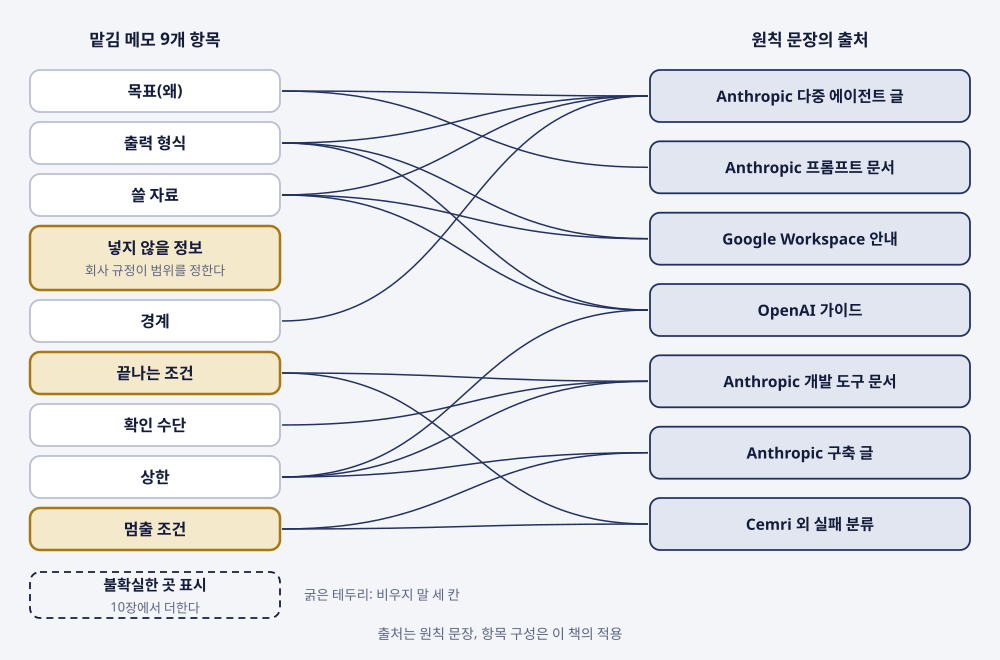
그림 5-1. 맡김 메모의 9개 항목은 어디에서
왔나
그림은 왼쪽의 항목에서 오른쪽의 출처로 읽는다. 항목마다 원칙 문장을
빌려 온 공식 문서가 선으로 이어지고, 굵은 테두리의 세 칸이 비우지 말아야
할 넣지 않을 정보와 끝나는 조건과 멈출 조건이다. 출처는 원칙 문장이고,
9개 항목으로 엮은 것은 이 책의 적용이다.
표 5-2. 맡김 메모
항목
적을 것
예: 지난 분기 보도자료 정리
목표(왜)
이 결과를 어디에 쓰는가
다음 주 분기 회고 회의 자료의 한 쪽
출력 형식
어떤 모양으로 돌려받는가
표 하나. 열은 날짜·제목·핵심 수치·원문 위치
쓸 자료
무엇을 보고 하는가
붙인 보도자료 10건, 회의 자료 양식
넣지 않을 정보
넣으면 안 되는 것(범위는 회사 규정)
아직 공개하지 않은 내부 실적 자료
경계
건드리지 말 것
보도자료 문구를 고쳐 쓰지 말 것
끝나는 조건
무엇이 되면 끝인가
10건 모두 네 열이 채워진 표
확인 수단
무엇으로 맞는지 볼 것인가
핵심 수치 열을 원문 위치와 대조
상한
시간·횟수·비용, 되돌릴 수 없는 행동은 내 승인 뒤에만
한 번에 끝내기. 메일 발송·파일 삭제는 하지 않음
멈출 조건
모르면 멈추고 물을 것
원문에 수치가 없으면 비워 두고 알려 줄 것
점검
맥락 없는 동료가 이 메모만 보고 따라 할 수 있는가
예 / 아니오
이 도구의 근거: Anthropic 공식 글과 문서(목표·출력 형식·도구와
출처·경계, 멈춤 조건과 확인 지점, 끝의 모습·상한·사람의 승인, 맥락 없는
동료 시험), OpenAI 가이드(기존 업무 문서, 고위험 행동의 사람 감독),
Cemri 외(끝을 알아차리지 못한 실패, 묻지 않고 가정한 실패) / 근거 수준:
공식 문서 원칙 + 이 책의 제안
메모를 한 장 써 보면 생각보다 많은 것이 정리된다. 무엇이 되면 끝인지
적다 보면, 내가 이 일에서 정말 원하는 것이 무엇이었는지가 처음으로
문장이 된다. 언제 멈춰야 하는지 적다 보면, 이 일에서 어디가 위험한지가
보인다. 넣지 않을 정보를 적다 보면, 무심코 붙이려던 자료를 한 번 더 보게
된다. 다음 주에 이 메모를 몇 번 써 보면 어떤 칸을 자주 비우는지도 알게
될 것이다. 다만 이 메모는 한 번에 한 일을 맡기는 장면을 전제로 한다. 한
대화에는 한 가지 일만 맡기라는 조언도 있었다. 실제 일은 동시에 여럿
온다. 그때는 어떻게 해야 할까?
6장. 여러 에이전트에게 맡길 때는 확인할 순서부터 정한다
실무자의 자리
2025년 10월 말 국내 개발자 커뮤니티에 올라온 한 게시글의 댓글란에
짧은 댓글이 하나 있었다. 화면 쪽, 서버 쪽, 데이터 쪽 작업을 에이전트
3개에게 나눠 맡기는 것까지는 되는데, 그 이상은 머리가 따라가지 못한다는
취지였다. 같은 글에는 다른 방향의 댓글도 있었다. 개발자 팀원처럼
굴기보다 PM처럼 생각하고 병렬로 돌리면 대체로 맞더라는 취지의
이야기였다.
두 댓글이 붙잡은 것은 같은 장면이다. 에이전트를 하나만 쓰던 사람이
둘, 셋으로 늘려 본다. 처음 몇 시간은 일이 몇 배로 빨라진 것 같다. 그러다
어느 순간부터 무엇을 어디까지 맡겼는지, 어느 결과를 아직 안 봤는지가
헷갈리기 시작한다. 한 사람은 그 지점을 셋이라는 숫자로 말했고, 다른
사람은 일하는 자리를 바꾸면 대체로 된다고 말했다. 개발자가 아니어도 이
장면은 낯설지 않다. 보고서 자료 조사를 한 창에 맡기고, 회의록 정리를
다른 창에 맡기고, 메일 초안을 또 다른 창에 맡겨 둔 오후를 떠올려 보자.
창이 3개를 넘어가면 어느 창에 무엇을 맡겼는지부터 다시 확인하게 된다.
에이전트 3개를 동시에 돌리면 일이 3배 빨라질까? 그렇지 않다면 실제로
막히는 곳은 어디일까?
삽화. 에이전트 여럿에게 나눠 맡긴 뒤, 아직 보지 않은 결과가
무엇인지부터 헷갈리기 시작한다. 상상으로 그린 장면으로, 특정 인물이나
조직이 아니다.
몇 개까지인가에 대한 답은 아직 없다
먼저 이 장이 어떤 근거 위에 서 있는지 밝혀 두자. 사람이 에이전트를 몇
개까지 동시에 다룰 수 있는지를 측정한 연구는 이번 조사에서 찾지 못했다.
이 장은 네 종류의 재료를 엮는다. 개발자 커뮤니티의 논쟁은 의견이다.
자동화에 관한 인간공학 연구는 에이전트가 나오기 훨씬 전의 것이다.
에이전트를 만드는 회사들의 공식 가이드는 개발 맥락에서 쓰였다. 다중
에이전트 실패 분류는 사람이 끼지 않은 연구용 시스템에서 나왔다. 어느
것도 이 장의 질문에 곧바로 답하지 않는다. 그래서 이 장의 처방은 대부분
이 책의 제안이고, 적정한 병렬 수를 숫자로 내놓지 않는다.
커뮤니티의 논쟁부터 보자. 2026년 6월 Hacker News에는 AI로 코딩할 때
어떻게 몰입하느냐는 질문이 올라왔다. 한 사람은 맥락을 바꾸는 일이 흐름을
깬다고 썼다. 다른 사람은 AI가 던지는 설계 질문에 답하고 나서 다른
기능으로 옮겨 가는 방식을 설명한 뒤 이렇게 털어놓았다. “It’s pretty
exhausting to be honest.” 솔직히 꽤 지친다는 고백이다. 같은 토론에는
반대쪽 증언도 있었다. 세션을 5개에서 15개, 에이전트를 10개에서 12개까지
동시에 돌린다는 사용자들이다. 2026년 11월의 다른 토론에서는 아예 더 많이
돌리라는 조언이 나왔다. “make sure you’re working on at least five
different things.” 적어도 5가지 일을 동시에 돌려야 에이전트 하나를
기다리며 앉아 있지 않는다는 이유였다.
표 6-1. 병렬 운영 논쟁 비교
관점
대표 증언(요지)
출처
성격
이 책이 가져가는 것
3개 안팎이 한계
3개까지는 되지만 그 이상은 머리가 따라가지 못한다는 취지
국내 개발자 커뮤니티(게시글 2025-10)
커뮤니티 의견, 간접화법
따라갈 수 있는 수는 사람마다 다르다
지친다
맥락을 바꾸면 흐름이 깨진다, 솔직히 지친다(두 사람의 댓글)
Hacker News(2026-06)
커뮤니티 의견
병렬은 확인하는 사람의 주의를 쓴다
많이 돌린다
세션 5~15개, 에이전트 10~12개를 돌린다
Hacker News(2026-06, 같은 토론)
커뮤니티 의견
일의 종류와 확인 방식에 따라 감당할 수가 달라진다
최소 5가지
적어도 5가지 일을 돌려야 한 에이전트를 기다리지 않는다
Hacker News(2026-11)
커뮤니티 의견
기다리는 시간도 비용이다
일하는 자리를 바꾼다
PM처럼 생각하고 병렬로 돌리면 대체로 맞더라는 취지
국내 개발자 커뮤니티(게시글 2025-10)
커뮤니티 의견, 간접화법
쟁점은 수보다 관리 방식에 있다
이 증언들만으로 누가 맞는지 가리기는 어렵다. 많이 돌린다는 사람들이
결과를 어디까지 확인하는지, 그 일에 자동으로 돌아가는 테스트 같은 확인
수단이 있는지는 댓글에 드러나지 않는다. 몇 개를 돌린다는 숫자도 각자
말한 것이고, 그런 글을 올리는 사람이 어떤 사람들인지도 알 수 없다.
테스트가 결과를 대신 봐 주는 개발 작업과, 사람이 문장마다 읽어야 하는
보고서 작업은 같은 병렬 수로 견줄 수 없을 가능성이 높다. 이 부분은 이
책의 추론이다.
표의 5줄은 서로 부딪히는 것처럼 보이지만, 오른쪽 열을 세로로 읽으면
한 방향으로 모인다. 몇 개가 맞는지는 사람과 일에 따라 다르고, 그 수를
정하는 것은 에이전트의 능력보다 결과를 받아 보는 사람의 주의와 관리
방식이다. 그 주의는 여럿을 동시에 볼 때 어떻게 달라질까?
자동화를 지켜보는 사람에 관한 연구는 에이전트보다 훨씬 오래되었다.
Parasuraman과 Manzey는 2010년 Human Factors에 실은 논문에서 자동화
안주(complacency)가 어떤 조건에서 생기는지를 정리했다. 손으로 하는
과업과 자동화된 과업이 사람의 주의를 두고 다투는 여러 과업 부하 조건에서
안주가 생긴다. 초보자에게도 전문가에게도 나타나고, 단순히 연습한다고
극복되지 않는다. 같은 논문은 자동화가 내놓은 답을 그대로 따르는 자동화
편향도 초보와 전문가 모두에게 나타나며, 훈련이나 지시로 막을 수 없다고
적었다. 13장이 팀장 자리에서 다시 인용하는 연구다.
이 연구를 여러 에이전트를 돌리는 실무자에게 옮기는 것은 이 책의
연결이다. 원문은 자동화 일반을 다뤘고, 언어 모델 에이전트를 본 적이
없다. 그래도 장면은 낯설지 않다. 에이전트 3개가 동시에 결과를 돌려주고,
나는 그사이에 내 손으로 하던 일도 붙잡고 있다. 첫 번째 결과는 꼼꼼히
본다. 두 번째 결과는 앞의 결과가 괜찮았으니 이것도 괜찮겠지 싶어 빠르게
넘긴다. 세 번째 결과가 돌아올 무렵에는 주의가 이미 바닥나 있다. 여러
과업 부하에서 안주가 생긴다는 연구 결과가 이 장면에도 들어맞는다면, 병렬
수가 늘수록 처리량과 함께 내가 덜 보고 넘긴 결과도 늘어날 수 있다.
연습으로 극복되지 않는다는 대목은 특히 기억해 두자. 익숙해지면 여럿도
꼼꼼히 볼 수 있으리라 기대하기 쉽다. 연구가 맞다면 익숙함은 답이 되기
어렵다. 그렇다면 주의를 늘리려 애쓰기보다 주의를 쓰는 순서를 정하는 편이
현실적이다.
그 전에 스스로 해 볼 점검이 하나 있다. 여럿에게 맡긴 날 저녁, 그날
확인한 결과들을 떠올려 보자. 마지막으로 본 결과를 첫 번째 결과만큼
들여다봤는가? 첫 번째 결과에서는 출처를 하나하나 눌러 봤는데 세 번째
결과에서는 제목만 훑었다면, 그날 내 확인은 이미 느슨해져 있었다. 이
점검은 이 책이 권하는 습관이고, 연구로 효과를 확인한 방법은 아직 없다.
그렇지 못한 날이 잦다면 병렬 수를 줄일 신호로 읽자.
나누기 전에 하나로
에이전트를 만드는 회사들의 가이드는 의외로 여럿에게 나누는 일에
조심스럽다. OpenAI의 에이전트 구축 가이드는 일반적인 권고로 에이전트
하나의 능력을 먼저 최대한 끌어내라고 쓴다. 여러 에이전트로 나누는 것은
그다음이다. Anthropic의 2024년 12월 구축 글도 가장 단순한 해법을 찾고
필요할 때만 복잡도를 올리라고 권한다.
Anthropic이 2025년 11월에 공개한 긴 작업 실험 기록은 그 이유를 보여
준다. 에이전트는 한 번에 너무 많은 일을 하려 들었고, 앱 전체를 한 번에
만들어 내려는 경향을 보였다. 다음 판에서는 한 번에 기능 하나만 작업하게
바꿨다. 같은 회사의 다중 에이전트 조사 시스템 글은 나눠 맡길 때의
어려움을 이렇게 적었다. 자세한 작업 설명이 없으면 에이전트들이 같은 일을
겹쳐 하거나, 빈틈을 남기거나, 필요한 정보를 찾지 못했다. 같은 글은 다중
에이전트 시스템이 일반 대화보다 토큰을 약 15배 쓴다고 적었다. 이 수치는
Anthropic이 자사 시스템에서 측정한 값이라 일반 업무의 비용으로 옮기면
곤란하다. 여럿에게 나누면 그만큼 비용이 따른다는 방향만 가져오자.
실무자의 말로 옮기면 이렇다. 동시에 여럿에게 맡기기 전에, 한
에이전트에게 한 번에 하나씩 맡기는 방식으로 이 일이 되는지부터 보자.
5장의 맡김 메모 한 장으로 끝나는 일이라면 나눌 이유가 없다. 나누고
싶어지는 순간은 대개 기다리기 싫을 때 찾아온다. 기다리는 시간이 아까운
것은 맞다. 하지만 나눈 만큼 맡김 메모도 늘고, 돌아올 결과도 늘고,
결과끼리 맞춰 보는 일도 생긴다. 이 셋이 기다리는 시간보다 작을 때만
나누는 쪽이 이득이다.
비개발 업무에서도 같다. 행사 준비를 하면서 장소 후보 조사, 참가자
안내문 초안, 예산표 정리를 에이전트 3개에게 동시에 맡긴다고 해 보자.
셋은 서로 기대고 있다. 장소가 정해져야 안내문의 일시와 위치가 확정되고,
예산표의 대관료 칸이 채워진다. 이런 일은 동시에 맡겨도 결과를 맞춰 보는
데 시간이 더 든다. 서로 기대지 않는 일, 예를 들어 지난 행사 설문 요약과
다음 분기 일정표 정리처럼 결과가 따로 쓰이는 일이 동시에 맡기기에
낫다.
나눠 맡긴 일이 틀어지는 곳
그래도 나눠야 할 때가 있다. 나눠 맡긴 일은 어디서 틀어질까? 5장에서
본 Cemri와 동료들의 실패 분류가 큰 그림을 준다. 공개된 다중 에이전트
시스템 7개에서 실패율은 41%에서 86.7%까지였다. 실패를 세 범주로 묶으면
시스템 설계 문제가 44.2%, 에이전트 사이의 어긋남이 32.3%, 작업 검증
문제가 23.5%였다. 연구진은 최종 단계의 낮은 수준 점검에만 기대는
검증으로는 부족하고 여러 단계의 검증이 필요하다고 적었다. 5장에서처럼
이것은 연구용 시스템에서 에이전트끼리 일을 주고받은 기록이다. 비유로
옮긴다면, 나눠 맡긴 일은 나누는 설계에서, 조각끼리 맞지 않는 데서,
그리고 마지막에 한 번만 보는 확인에서 틀어진다.
현장의 운영 증언도 같은 지점을 짚는다. 2026년 3월 Hacker News에서
여러 에이전트를 업무에 쓰는 한 개발자는 에이전트들이 서로 직접 대화하지
않고 공유 문서 저장소를 통해 조율한다고 설명했다. 그리고 다음 단계로
넘어가기 전에 모든 결과를 자기가 본다고 했다. “Manual trigger, manual
review, manual approval.” 시작도, 검토도, 승인도 손으로 한다는 뜻이다.
그는 완전 자동화도 시도해 봤다고 썼다. 그러자 에이전트들이 실제 일을
멈추고 서로에게 보낼 거대한 상태 보고서를 만들기 시작했다. 그의 결론은
이랬다. “The coordination overhead ate all the productivity.” 조율에
드는 비용이 생산성을 다 먹어 버렸다는 것이다.
앞의 2026년 11월 토론에서는 작업 상태를 에이전트의 대화 기억 대신
바깥의 카드에 적어 둔다는 운영 방식도 나왔다. 대화가 길어지면 기억이
압축되니, 무엇이 어디까지 되었는지는 대화 밖에 두는 편이 안전하다는
것이다. 어떤 저장 도구를 쓰는지는 중요하지 않다. 원칙은 상태를 대화 밖에
적어 두는 것이다.
두 증언은 개발자 한두 사람의 운영 방식이다. 그래도 이 장의 질문에
쓸모 있는 단서를 준다. 여럿에게 맡길수록 사람이 하는 일은 결과 사이를
잇고 확인하는 쪽으로 몰린다. 그 확인을 빼면 조율 비용이 커지고, 확인을
붙잡으면 내가 볼 수 있는 만큼만 돌아간다. 어느 쪽이든 병목은 사람의
확인에 있어 보인다.
병렬의 병목은 확인이다
이제부터 적는 것은 이 책의 추론이다. 병렬로 몇 개를 돌리느냐보다,
돌아온 결과를 어떤 순서로 확인하느냐가 실제 쟁점으로 보인다. 결과가
동시에 여럿 돌아오면 우리는 보통 먼저 도착한 것이나 보기 쉬운 것부터
연다. 그 순서가 늘 맞지는 않는다.
가상 사례. 한 기획 실무자가 오후 1시에 에이전트
3개에게 일을 나눠 맡겼다. 하나는 경쟁 서비스들의 공개 자료 조사, 하나는
지난달 설문 결과 표 정리, 하나는 그 둘을 바탕으로 한 기획안 초안이었다.
2시 무렵 셋 다 결과가 돌아왔다. 그는 가장 보기 쉬운 표부터 열어 합계를
맞췄다. 그사이 팀장이 초안을 먼저 보고 싶다고 했고, 그는 초안을 훑어본
뒤 보냈다. 4시쯤 조사 결과를 확인하다가, 초안이 경쟁 서비스의 특징으로
든 기능 하나가 조사 자료의 어느 출처에도 없다는 것을 알았다. 초안은 이미
팀장의 손에 있었다. 난감한 오후다.
이 장면에서 어긋난 것은 확인의 순서다. 남에게 넘어갈 초안이 가장 먼저
확인되어야 했고, 그 초안이 기대는 조사 결과는 그보다도 먼저였다. 합계만
맞춰 보면 되는 표는 나중에 묶어서 봐도 늦지 않았다. 그래서 이 책은
결과를 확인할 순서에 세 가지 규칙을 제안한다. 첫째, 되돌리기 어려운 것
먼저 본다. 승인하면 바로 보내지거나 지워지거나 결제되는 결과가 여기에
든다. 둘째, 남에게 넘어갈 것 먼저 본다. 다른 사람의 일이 될 결과와, 그
결과가 기대는 결과가 여기에 든다. 셋째, 확인 비용이 작은 것은 묶어서 한
번에 본다. 합계 대조나 형식 점검처럼 몇 분이면 끝나는 확인은 모아
두었다가 한꺼번에 처리한다.
규칙끼리 부딪힐 때도 있다. 남에게 넘어갈 초안과 승인하면 바로
발송되는 안내 메일이 동시에 기다린다면 무엇부터 볼까? 이 책은 되돌리기
어려운 것을 앞에 두자고 제안한다. 초안은 넘긴 뒤에도 고쳐 다시 보낼 수
있지만, 발송된 메일은 거둘 수 없다. 남에게 넘어갈 결과가 둘이라면 그
결과가 기대는 결과부터 본다. 위의 가상 사례라면 조사 결과가 초안보다
먼저다.
순서를 정하고 나면 병렬 수를 정하는 기준도 달라진다. 동시에 돌릴
에이전트 수는 내가 오늘 확인할 수 있는 결과 수에 맞춘다. 이 문장은
연구로 확인된 기준이 아니다. 앞에서 본 안주 연구와 현장 증언을 엮어 이
책이 내놓는 제안이다. 결과를 확인할 시간이 오늘 2건 분량이라면,
에이전트를 5개 돌려도 오늘 끝나는 일은 2건이다. 나머지 3건은 확인을
기다리는 결과로 쌓인다.
책임은 나눠지지 않는다
여럿에게 나눠 맡기면 책임도 나눠지는 것 같은 착각이 든다. 조사를 맡은
에이전트가 틀렸고, 초안을 맡은 에이전트가 그것을 그대로 옮겼다. 그렇다면
틀린 곳은 누구의 몫일까?
2026년 5월 IT 매체 CIO에 실린 Paul Barker의 기사가 이 질문에 쓸 만한
문장을 모았다. 문서 편집을 에이전트에게 여러 번 맡기는 실험(10장에서
다시 볼 프리프린트)을 소개한 기사다. 기자는 Greyhound Research의 분석가
Sanchit Vir Gogia의 경고를 전했다. AI가 계약서, 회계 기록, 정책,
코드베이스, 이사회 자료 같은 중요한 문서를 편집하더라도 손해는 여전히
회사가 진다는 것이다. Gogia는 이렇게 말했다. “It shows that AI changes
the human layer from production to supervision, validation, and
accountability.” AI가 사람의 몫을 만드는 일에서 감독하고, 검증하고,
책임지는 일로 옮겨 놓는다는 뜻이다. 그리고 그 검증에 대해 “That requires
knowledgeable review, not casual inspection.”이라고 덧붙였다. 알고 보는
검토가 필요하고 대충 훑어보는 것으로는 모자라다는 말이다.
같은 기사에서 Info-Tech Research Group의 Brian Jackson은 하나는
편집하고 다른 하나는 오류를 찾아 고치는 식으로 역할이 다른 에이전트
여럿을 쓰는 방법을 제안했다. 다만 그는 소개된 논문이 오히려 손상을 키운
다중 에이전트 구성 하나를 보여 준다는 점도 함께 짚었다. 확인을 맡은
에이전트를 하나 더 두는 일이 사람의 확인을 대신하지는 못한다는 뜻으로
읽힌다. 두 사람 모두 업계 분석가이고, 이것은 연구 결과가 아닌 분석가의
의견이다. 그래도 실무자에게 남기는 말은 분명하다. 셋에게 나눠 맡겨도
결과를 넘기는 사람은 하나다.
받는 사람의 자리에서 보면 이 말은 더 또렷해진다. 팀장이 받은 초안에는
에이전트 3개의 이름 대신 그 초안을 보낸 실무자의 이름이 붙어 있다. 틀린
기능 하나가 회의에서 발견되면 질문은 실무자에게 간다. 그래서 여럿에게
맡길수록 내가 확인한 것과 확인하지 못한 것을 구분해 두는 일이
중요해진다. 결과를 넘길 때 그 구분을 어떻게 적어 보낼지는 11장에서 다룰
것이다. 이 장에서는 확인한 순서와 시간을 기록해 두는 데까지 가자.
다음 주에 쓸 도구: 확인 대기열
확인 대기열은 칸 셋짜리 보드다. 왼쪽부터 기다리는 결과, 확인 중, 넘김
완료다. 종이에 선을 그어도 되고, 화이트보드에 메모지를 붙여도 되고, 쓰던
할 일 관리 도구에 열 3개를 만들어도 된다. 에이전트에게 일을 맡길 때마다
카드를 한 장 만들어 기다리는 결과 칸에 붙인다.
카드에는 네 가지를 적는다. 되돌리기 어려운 결과인가, 누구에게
넘어가는가, 확인에 얼마나 걸릴 것 같은가, 그리고 어느 맡김 메모에서
나왔는가. 마지막 줄은 5장에서 쓴 메모를 가리키는 짧은 이름이면 충분하다.
결과가 돌아오면 카드를 바로 확인 중으로 옮기지 말고, 앞에서 본 세
규칙으로 순서를 정한 다음 하나씩 옮긴다. 되돌리기 어려운 것, 남에게
넘어갈 것과 그것이 기대는 것이 먼저다. 확인 비용이 작은 카드는 기다리는
결과 칸에 모아 두었다가 한꺼번에 처리한다.
규칙은 하나다. 확인 중 칸의 카드가 정한 수를 넘으면 새로 맡기지
않는다. 처음에는 2로 시작하자. 한 주를 써 보고 확인 중 칸이 늘 비어
있었다면 3으로 늘리고, 늘 가득 차 있었다면 그대로 둔다. 카드의 예상 확인
시간 칸은 비워 두지 말자. 실제로 걸린 시간을 옆에 적어 두면, 11장에서
확인 시간을 넘김 메모에 적을 때 그 기록을 그대로 쓸 수 있다.
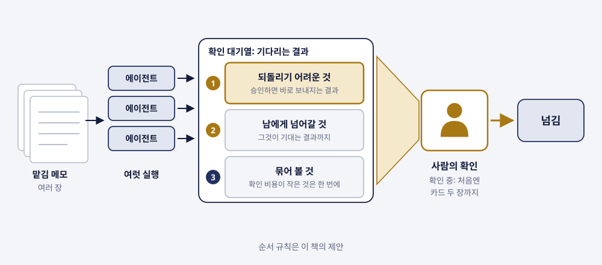
그림 6-1. 맡김 메모에서 넘김까지, 확인
대기열의 흐름
그림은 왼쪽에서 오른쪽으로 읽는다. 에이전트 여럿이 돌려준 결과가
대기열에 쌓이고, 사람의 확인을 지나는 자리에서 길이 좁아진다. 대기열
안의 번호가 확인할 순서다.
표 6-2. 확인 대기열 카드
카드(맡긴 일)
맡김 메모
되돌리기 어려운가
누구에게 넘어가나
예상 확인 시간
실제 확인 시간
지금 칸
예: 경쟁 서비스 공개 자료 조사
조사 메모
아니다
기획안 초안이 기댄다
30분
기다리는 결과
예: 기획안 초안
초안 메모
아니다
팀장
20분
기다리는 결과
예: 설문 결과 표 정리
표 메모
아니다
나
10분(묶어 볼 것)
기다리는 결과
예: 참가자 안내 메일 발송 목록
발송 메모
그렇다(승인하면 발송)
참가자 전원
15분
확인 중
이 도구의 근거: OpenAI 가이드(에이전트 하나를 먼저), Anthropic 긴
작업 실험 기록(한 번에 기능 하나), Parasuraman·Manzey(여러 과업
부하에서의 안주, 유비), 개발자 커뮤니티의 병렬 운영 논쟁 / 근거 수준: 이
책의 제안
대기열을 한 주 써 보면 숫자 하나가 눈에 들어온다. 기다리는 결과 칸에
쌓인 카드 수다. 그 수가 매일 조금씩 늘고 있다면, 맡기는 속도가 확인하는
속도를 앞지르고 있다는 뜻이다. 이때 할 수 있는 일은 둘이다. 새로 맡기는
것을 멈추거나, 확인하는 방식을 바꾸는 것이다. 앞의 것은 오늘 당장 할 수
있다. 카드를 한 장 더 붙이기 전에 확인 중 칸부터 비우자. 어느 쪽이든
미루지 말자. 확인하지 않은 결과가 쌓이는 동안 늘어나는 것은 내가 모르는
채로 넘긴 일이다. 여기까지 세 장은 실무자 한 사람의 책상에서 내린
결정이었다. 같은 결정을 팀 전체에 내려야 하는 팀장은 무엇부터 해야
할까?
7장. 리더가 먼저 써 본다
팀장의 자리
Block에서 오픈소스 DevRel을 이끌었던 Rizèl Scarlett은 2026년 9월
dev.to에 올린 글에서 그 시절을 돌아보며 이렇게 적었다. 「Even though I
was a leader, I continued to build.」 리더가 된 뒤에도 계속 만들었다는
뜻이다. 그는 자신이 팀의 실행 기준을 정하는 사람이라고 보았다. 그리고
제품의 마찰을 직접 겪지 않고서는 “콘텐츠를 더 만들자” 이상의 전략적
방향을 줄 수 없다고 썼다. 앞 책 「DevRel Next」 7장은 이 문장을 DevRel이
먼저 가 보는 일의 예로 인용했다.
DevRel이라는 직무에서 나온 말이지만 리더 일반에 옮겨도 무리가 없다.
리더라는 직함을 단 뒤에도 자기 손으로 먼저 겪어 봐야 팀에 줄 방향이
생긴다는 이야기다. 자리가 흔들리는 리더가 무엇부터 할지에 대해 이 문장은
한 가지 출발점을 보여 준다. 리더 자신이 먼저 쓰는 것이다. 4장부터
6장까지 실무자가 자기 책상에서 한 일, 곧 맡길 일을 고르고 끝을 적어
맡기고 확인할 순서를 정하는 일을 팀장이 팀보다 먼저 자기 손으로 겪어
보는 것이다. 이 장은 리더가 직접 써 보는 일이 팀에 어떤 차이를 만드는지,
써 본 것을 팀에 어떻게 드러낼지를 차례로 본다.
시범을 보인 리더의 팀에서
먼저 숫자부터 보자. Microsoft의 2026 Work Trend Index는 관리자가 AI
사용을 적극적으로 시범해 보일 때 직원들이 보고한 AI의 가치가 17포인트
높았다고 적었다. 비판적 사고는 22포인트, 에이전트에 대한 신뢰는 30포인트
높았다고 했다. Microsoft 자체 조사이고, 1장에서 본 다른 수치들처럼
상관관계다. 리더가 시범을 보여서 가치가 높아졌는지, 가치를 이미 느끼던
팀이라 리더가 시범을 보이기 쉬웠는지는 이 조사로 가를 수 없다. 그래도
방향은 1장의 세 기관 조사와 같다.
같은 보고서의 다른 숫자 하나도 함께 보자. 조사에 응한 AI 사용자
가운데 자기 회사 리더들이 AI에 대해 분명하고 일관되게 같은 방향을 보고
있다고 답한 사람은 26%였다. BCG의 2026년 조사도 비슷한 그림을 보였다.
현장 직원 가운데 리더십이 AI에 대해 분명하게 소통한다고 답한 사람은 33%,
리더의 말과 조직의 실제가 잘 맞는다고 본 사람은 28%였다. 리더가 AI를
말하는 것과 직원이 리더에게서 보는 것 사이에 간격이 있다는 뜻이다. 말과
실제가 어긋나 보이면 직원은 리더가 실제로 무엇을 하는지를 보고 판단하기
쉽다. 리더가 직접 쓰는 모습은 말보다 실제에 가깝다. 시범이 효과와 함께
나타났다는 조사 결과를 이 간격과 나란히 놓고 보면, 왜 그런 연관이
나왔는지 짐작할 수 있다. 짐작이지 검증은 아니라는 점은 기억해 두자.
그렇다면 시범은 구체적으로 무엇일까? 시범이라고 해서 거창할 필요는
없다. 리더가 회의 자료를 만들며 AI를 쓰는 모습을 화면 공유로 보여 주는
일, 1on1에서 “이 부분은 AI로 정리해 봤는데 여기가 틀렸더라”고 말하는 일,
팀 채널에 리더가 맡겨 본 일과 결과를 짧게 올리는 일이 모두 시범이다.
공통점은 리더가 실제로 쓰고 있다는 것이 팀원 눈에 보인다는 점이다.
리더가 쓰는지 안 쓰는지 팀원이 모른다면, 리더가 아무리 많이 써도 팀에는
시범이 없는 셈이다.
그런데 리더들은 이미 직원들보다 앞서 있지 않나? 조사들은 리더와 직원
사이에 큰 인식 차이가 있다고 말한다.
표 7-1. 리더와 직원의 인식 격차
조사
발행
리더 쪽
직원 쪽
라벨
Microsoft WTI 2025
2025년 4월
에이전트에 익숙하다 67%
40%
벤더 자체 조사
Section AI Proficiency Report 2026
2026년 1월
C-suite가 AI에 들떠 있다 82%
개인 기여자 30%
벤더 자체 조사, 보도 경유
Microsoft WTI 2026
2026년 5월
새 일하는 방식을 제안해도 안전하다 81%
67%
벤더 자체 조사
세 조사 모두 AI 관련 제품이나 교육을 파는 회사가 한 것이라 그 점을
감안하고 읽어야 한다. 그래도 그림은 한쪽으로 기운다. 리더는 에이전트를
더 잘 안다고 답하고, AI에 더 들떠 있고, 새로운 방식을 꺼내도 안전하다고
더 많이 느낀다. 조사마다 리더와 직원이 서로 다른 AI를 보고 있다는 그림이
반복된다. Section 보고서에는 개인 기여자의 24%가 AI로 아낀 시간이 전혀
없다고 답했다는 대목도 있다(보도 경유).
여기서 한 가지 의문이 생긴다. 리더가 에이전트에 “익숙하다”고 답할 때
그 익숙함은 무엇일까? 기사를 많이 읽고 데모를 많이 본 익숙함일 수도
있고, 자기 일을 직접 맡겨 보고 틀린 결과를 고쳐 본 익숙함일 수도 있다.
앞의 것만으로는 팀원이 겪는 일을 알기 어렵다. 리더가 들떠 있는데 팀원은
시간을 하나도 아끼지 못했다고 느낀다면, 그 사이에는 리더가 직접 겪어
보지 않은 무언가가 있다. 그 무언가를 아는 가장 빠른 길은 리더가 먼저 써
보는 것이다.
리터러시는 경계 감각이다
리더가 써 보며 얻어야 할 것을 흔히 AI 리터러시라고 부른다. 그런데 이
말은 쓰는 사람마다 뜻이 다르다. 프롬프트를 잘 쓰는 능력을 말하는 사람도
있고, 에이전트를 직접 만드는 능력을 말하는 사람도 있다.
현장에서 리더들이 자주 묻는 질문이 여기에 걸려 있다. 모든 직원이 AI
에이전트를 직접 만들어야 하나? 이 질문은 종합편 「코드 너머에서 에이전트
성적표까지」의 부록 FAQ가 이미 다뤘다. 만드는 역량과 AI로 성과를 내는
역량은 다르고, 모두가 만들 필요는 없다는 것이 그 대답의 요지다. 이 장은
그 질문을 리더 쪽에서만 다시 본다. 리더는 무엇을 알아야 하나?
학술 쪽 정의부터 보자. Long과 Magerko는 2020년 CHI 학회 논문에서
문헌을 검토해 AI 리터러시를 정의했다. AI가 무엇인지, 무엇을 할 수
있는지, 어떻게 작동하는지, 어떻게 써야 하는지, 사람들이 AI를 어떻게
받아들이는지를 이해하고 평가하고 활용하는 역량이다. 이 정의 안에 만드는
능력은 들어 있지 않다. 리터러시와 제작 역량은 다른 이름으로 불러야 할
만큼 다르다.
리더에게 가장 쓸모 있는 부분은 그 가운데 “무엇을 할 수 있는지”를 아는
일이다. 여기에 대해 가장 많이 인용되는 실험이 4장에서 본 Dell’Acqua와
동료들의 BCG 컨설턴트 실험이다. AI가 잘하는 범위 안의 과업에서는 AI를 쓴
집단이 더 많이, 더 빨리, 더 잘 해냈고, 그 범위 밖의 과업, 경영 판단이
필요한 복합 과제에서는 AI를 쓴 집단이 정답을 낼 가능성이 19%포인트
낮았다(2023년 작업논문 초록 기준). 4장이 따른 2026년 게재본 초록은 같은
결과를 “19% 낮았다”로 적는다. 두 표기는 바꿔 쓸 수 없고, 이 책은 장마다
그 장이 따른 판의 표기를 둔다. 퍼센트포인트는 두 집단의 정답률을 그대로
뺀 차이이고, 퍼센트는 한쪽이 다른 쪽보다 얼마만큼의 비율로 낮은지를
나타낸다.
이 실험에는 리더가 눈여겨볼 관찰이 하나 더 있다. 연구진은 AI와 일하는
방식이 크게 두 갈래로 나뉜다고 보았다. 하나는 일을 사람 몫과 AI 몫으로
나눠 맡기는 “켄타우로스(Centaurs)”형이고, 다른 하나는 과업 안에서 사람과
AI가 수시로 주고받으며 섞여 일하는 “사이보그(Cyborgs)”형이다. 어느 쪽이
옳다기보다, 같은 팀 안에서도 사람마다 일하는 방식이 다를 수 있다는
관찰이다. 리더가 자기 방식만 기준으로 삼으면 팀원의 방식을 잘못 읽기
쉽다.
4장에서 본 대로 연구진은 그 범위의 경계를 “들쭉날쭉한 경계(jagged
technological frontier)”라고 불렀고, 경계 밖에서 AI를 믿으면 AI를 쓰지
않았을 때보다 결과가 나빠졌다. 경계를 모르고 쓰면 오히려 손해를 볼 수
있다.
앞 책 「코드 너머의 직업들」 3부 도입은 AI 위에서 생기는 새 직업들이
공통으로 기대는 능력을 이 실험에서 끌어내 이렇게 이름 붙였다. 「경계를
그리는 능력.」 리더에게도 같은 이름이 맞는다. 리터러시는 에이전트를
만드는 능력이 아니라 맡겨도 되는 경계를 아는 감각이다. 경계 감각이 왜
저절로 생기지 않는지를 보여 주는 연구도 있다. Fügener와 동료들은 2022년
Information Systems Research에 실은 실험에서 이미지 분류 과제를 두고
사람이 AI에게 일을 넘기는 경우와 AI가 사람에게 넘기는 경우를 비교했다.
AI는 성과가 낮은 사람에게 일을 넘겨도 전체 성과가 올랐다. 사람은 달랐다.
무엇을 넘길지 잘 고르지 못했고, 넘겨서 얻은 이득도 없었다. 연구진은
원인을 AI에 대한 거부감보다 메타지식 부족에서 찾았다. 자기가 무엇을
잘하고 못하는지를 정확히 모르니 무엇을 넘길지도 정하지 못한다는 것이다.
과제가 단순한 이미지 분류였다는 한계는 있다. 그래도 맡길 일을 고르는
감각이 저절로 생기지 않는다는 점은 리더에게도 그대로 해당한다.
그 감각은 우리 팀의 일을 실제로 맡겨 보고, 어디서 잘 되고 어디서
틀리는지를 겪으면서 생긴다. 8장에서 무엇을 바꿀지 고를 때 이 감각이 바로
쓰인다. 경계 안에 있는 일과 밖에 있는 일을 구분하지 못하면 고르는 일이
감에 기대게 된다.
써 보는 것만으로는 모자라다
직접 써 보기만 하면 경계를 알게 된다고 기대하기 쉽다. 여기에 조심할
연구가 하나 있다. 4장에서 본 METR의 2025년 7월 실험이다. 숙련된 개발자
16명은 AI를 쓰면 24% 빨라질 것이라고 예상했지만 AI를 허용한 쪽이 19% 더
오래 걸렸고, 실험이 끝난 뒤에도 20% 빨라졌다고 믿었다.
4장에서 짚은 단서에 하나를 더 보태 두자. 연구진 스스로 대형의 성숙한
코드 저장소에서 2025년 초의 도구로 한 실험이라 다른 상황으로 넓히는 것을
경계했다. 이 책이 이 연구에서 가져오는 것은 숙련된 사람도 자기
체감만으로는 효과를 정확히 알기 어려웠다는 점 하나다. AI가 일반적으로
일을 느리게 만든다는 결론까지 끌어낼 근거는 되지 못한다.
이 점은 리더 자신에게도 그대로 적용된다. 리더가 2주 동안 AI를 써 보고
“꽤 도움이 된다”고 느꼈다면, 그 느낌은 기록과 함께 있을 때 더 믿을
만해진다. 그래서 이 장의 도구에는 일을 맡기기 전에 결과와 걸릴 시간을
먼저 적어 두는 열을 넣었다. 맡기기 전의 예상과 맡긴 뒤의 결과를 나란히
놓으면, 체감과 기록이 어디서 갈리는지 스스로 볼 수 있다. 팀원에게 “AI 써
보니 어때?”라고 물을 때도 같은 원칙을 쓰면 좋다. 느낌을 묻기 전에 기록을
함께 보자고 하는 편이 낫다.
써 보면서 바뀌는 것이 하나 더 있다. Microsoft Research와 카네기멜런대
연구진(Lee 외)은 2025년 CHI 학회에 지식노동자 319명을 설문한 연구를
냈다. 생성형 AI에 대한 확신이 높을수록 비판적 사고를 덜 했고, 자기
능력에 대한 확신이 높을수록 더 했다. 그리고 생성형 AI는 비판적 사고가
쓰이는 자리를 옮겨 놓았다. 정보를 직접 찾고 만드는 데서, AI가 내놓은
정보를 확인하고, 여러 응답을 하나로 묶고, 과업 전체를 관리하는 쪽으로
옮겨 갔다는 것이다.
리더가 직접 써 봐야 하는 이유가 여기서 하나 더 생긴다. 팀원에게
요구할 역량이 바뀌고 있는데, 그 바뀐 역량을 리더가 겪어 보지 않으면
팀원에게 무엇을 기대해야 할지 말할 수 없다. 확인하고 묶고 관리하는 일이
얼마나 품이 드는지, 어디서 실수가 나는지는 직접 해 봐야 안다. 이
이야기는 13장에서 확인하는 사람들을 이끄는 일로 이어진다.
그렇다면 2주 동안 무엇을 맡겨 봐야 할까? 몇 가지 기준을 두면 써 보는
시간이 덜 헛돈다. 첫째, 결과가 맞는지 리더 스스로 판단할 수 있는 일부터
맡기자. 회의록에서 결정 사항을 뽑는 일, 지난 분기 보고서 두 개를
비교하는 일처럼 원본을 리더가 이미 알고 있는 일이 좋다. 틀린 곳을 알아챌
수 있어야 경계를 그릴 수 있다. 둘째, 종류가 다른 일을 섞자. 요약만 2주
내내 하면 요약의 경계만 알게 된다. 초안 쓰기, 비교하기, 계획 세우기,
자료 찾기를 고루 맡겨 보면 어떤 종류에서 잘 되고 어떤 종류에서
틀리는지가 드러난다. 셋째, 팀원이 실제로 하는 일을 하나 이상 넣자.
리더의 일만 맡겨 보면 팀원이 겪는 경계를 알 수 없다. 팀원의 주간 업무
하나를 골라 같은 입력으로 리더가 직접 맡겨 보면, 팀원이 “AI로 해 봤는데
잘 안 된다”고 할 때 무슨 말인지 알아들을 수 있다.
하나 덧붙이자. 회사가 허용한 도구와 데이터 범위 안에서 써야 한다.
고객 정보나 외부에 공개되지 않은 자료를 개인 계정의 AI 도구에 넣는 일은
리더가 먼저 하지 않아야 할 일이다. 리더의 시범은 좋은 습관뿐 아니라 나쁜
습관도 퍼뜨린다. 어떤 자료를 어디에 넣어도 되는지 모르겠다면, 그 질문
자체를 기록해 두었다가 24장에서 IT에 물을 질문 목록에 넣자.
공개하면 손해, 숨기면 더 손해
써 보는 것까지는 리더 혼자 할 수 있다. 어려운 것은 그다음이다. 써 본
것을 팀에 드러낼 것인가?
드러내는 데는 비용이 있다. Reif, Larrick, Soll은 2025년 PNAS에 사전
등록한 실험 4개(참가자 총 4,439명)의 결과를 냈다. 직장에서 AI 도움을
받은 사람은 다른 종류의 도움을 받은 사람보다 더 게으르고, 덜 유능하고,
덜 성실하다고 평가받았다. AI를 쓰는 사람들도 이런 평가를 예상하고
있었다. Schilke와 Reimann이 같은 해 Organizational Behavior and Human
Decision Processes에 낸 연구는 13개 실험에서 비슷한 방향을 보였다. AI
사용을 밝힌 사람은 밝히지 않은 사람보다 덜 신뢰받았다. 공개 방식이나
자발적이었는지와 상관없이 나타났고, 남이 폭로했을 때는 본인이 밝혔을
때보다 신뢰가 더 크게 떨어졌다.
두 연구를 함께 놓으면 팀원 한 사람이 처한 상황이 보인다. 공개하면 덜
유능해 보이고 덜 믿음직해 보인다. 숨겼다가 들키면 더 크게 신뢰를 잃는다.
개인에게 맡겨 두면 어떻게 될까? 많은 사람이 일단 숨기는 쪽을 고를
것이다. 숨긴 사용은 서로 배울 기회를 없앤다. 누가 무엇을 어떻게 맡겨서
잘 됐는지, 어디서 틀렸는지가 팀에 쌓이지 않는다. 리더는 팀원들이 AI를
얼마나 쓰는지조차 정확히 알 수 없게 된다.
이 딜레마를 개인의 용기로 풀기는 어렵다. 규범을 바꿔야 한다. 그리고
팀의 규범을 바꾸는 가장 싼 수단은 리더가 먼저 공개하는 것이다. 표
7-1에서 본 것처럼 리더는 새 방식을 꺼내도 안전하다고 느끼는 비율이
직원보다 높다. 안전하다고 느끼는 쪽이 먼저 드러내면, 덜 안전하다고
느끼는 쪽의 비용이 줄어든다. 여기서부터는 두 연구에서 끌어낸 이 책의
추론이다. 리더의 공개가 팀원의 공개 비용을 얼마나 낮추는지 측정한 연구는
이번 조사에서 찾지 못했다.
회사 단위에서 이 방향을 문장으로 적은 예가 있다. 2025년 4월 7일
Shopify의 CEO Tobi Lütke는 사내 메모가 밖으로 새고 있다는 말을 듣고
전문을 X에 직접 올렸다. 보도로 널리 옮겨진 그 메모는 “Reflexive AI usage
is now a baseline expectation at Shopify.”라고 적어 반사적으로 AI를 쓰는
것을 기본 기대치로 두었다. 그리고 끝 쪽에 “This applies to all of us,
including me and the executive team.”이라고 덧붙였다. 그 기대치가 CEO
자신과 경영진에게도 적용된다는 문장이다. 메모의 다른 대목, 인력을 더
요청하기 전에 AI로는 왜 안 되는지 먼저 보이라는 대목과 AI 사용을 평가에
넣겠다는 대목은 9장과 22장에서 다시 꺼낸다.
다만 메모와 공개는 다르다. 메모는 리더도 쓰겠다는 약속이고, 공개는
리더가 무엇을 맡겼고 무엇이 틀렸는지를 보여 주는 일이다. 팀원이 숨기는
쪽을 고르는 이유가 틀릴까 봐, 게을러 보일까 봐라면, 리더가 보여 줄 것은
성공담보다 틀린 경험이다. AI에 맡겼다가 틀린 결과를 받았고 그것을 어떻게
알아챘는지를 리더가 먼저 말하면, 틀린 경험을 말하는 것이 팀에서 안전한
일이 된다.
공개하는 방식도 조금 신경 쓰는 편이 좋다. 우선 리더의 공개가 팀원에게
공개를 요구하는 신호로 읽히지 않게 하자. “나도 했으니 너희도 다
밝혀라”로 들리면 공개는 감시가 된다. 리더가 먼저 말하고, 팀원은 말하고
싶은 사람부터 말하게 두는 편이 낫다. 다음으로 성공과 실패를 같은 무게로
말하자. 시간을 얼마나 아꼈는지만 말하면 팀원은 그 숫자에 맞춰야 한다는
압박을 받는다. 틀린 결과, 고치는 데 든 시간, 차라리 직접 하는 편이
나았던 일도 함께 말해야 한다. 마지막으로 AI가 만든 결과물을 팀 문서나
보고서에 쓸 때 그 사실을 어떻게 표시할지 팀의 약속을 정하자. 약속이
없으면 사람마다 다르게 표시하거나 아무도 표시하지 않는다. 약속이 있으면
표시하는 일이 개인의 고백이 아니라 팀의 절차가 된다.
리더가 되어서도 계속 만든다
이 장 첫머리의 Scarlett은 리더가 된 뒤에도 “계속” 만들었다고 적었다.
리더가 써 보는 일이 한두 번의 시범으로 끝나지 않는다는 뜻으로 읽을 수
있다. 그는 그 이유를 팀의 실행 기준을 정하는 사람의 책임에서 찾았다.
제품이 바뀌면 마찰도 바뀌고, 그 마찰을 겪지 않은 리더의 방향은 금세
낡는다.
이 문장을 이 책의 맥락으로 옮기면 이렇게 된다. 리더가 직접 써 보는
일은 AI를 처음 들일 때 한 번 치르고 끝낼 행사로 두기 어렵다. 도구는 몇
달마다 바뀌고, 경계도 그에 따라 움직인다. Stanford AI Index 2026이 적은
대로 에이전트가 컴퓨터 작업을 수행하는 벤치마크(OSWorld)의 성공률은 짧은
기간에 크게 올랐다. 지난 분기에 경계 밖이던 일이 이번 분기에는 경계
안으로 들어왔을 수 있다. 거꾸로 경계 안이라고 믿었던 일에서 새 버전이
다른 실수를 할 수도 있다. 리더가 경계를 안다는 것은 지도를 계속 고쳐
그리는 일에 가깝다. 한 번 그린 지도는 몇 달이면 낡는다.
리더가 계속 써 보는 일에는 함정도 하나 있다. 표 7-1의 Section
조사에서 C-suite의 82%가 AI에 들떠 있다고 답했지만 개인 기여자는
30%였다. 리더가 직접 써 보고 신이 나면 그 열기가 팀에 압박으로 내려가기
쉽다. “내가 해 보니 30분이면 되던데”라는 말은 리더에게는 경험담이지만
팀원에게는 새로운 기준이 된다. 리더가 경계 안의 일만 골라 써 보고 그
결과로 팀원의 일을 가늠하면 더 곤란하다. 기록하는 습관이 여기서도 도움이
된다. 일지에 틀린 날과 고친 시간이 함께 적혀 있으면, 리더 자신의 열기를
기록으로 식힐 수 있다.
써 보기 전에 예상을 적고, 결과와 경계를 기록하고, 팀에 공개하고,
그렇게 팀의 규범이 바뀌면 다음에 써 볼 일이 달라진다. 이 순환을 리더가
먼저 돌리기 시작하면 팀원들도 같은 순환에 들어올 수 있다.
그림 7-1. 리더가 먼저 돌리는 직접 사용
순환
맨 위의 ’예상을 먼저 적는다’에서 시작해 시계 방향으로 읽는다. 마지막
칸에서 처음으로 돌아오는 화살표는 경계가 움직일 때마다 이 순환을 새로
돌려야 한다는 뜻이다.
시간은 어디서 낼까? 1장의 시간 점검표를 다시 꺼내 보자. 행정·당면
문제 범주에 들어간 시간 가운데 회의록 정리, 보고서 취합, 자료 비교처럼
AI에 맡겨 볼 만한 일이 있다면 그 일부터 일지에 올리면 된다. 따로 시간을
내기보다 이미 하고 있는 일을 맡겨 보는 쪽이 오래간다. 하루 30분이면
근무일 기준 2주에 5시간이다. 그 정도 시간으로 우리 팀의 일에서 경계가
어디쯤 있는지 첫 윤곽을 잡을 수 있다면 해 볼 만한 투자다.
다음 주에 쓸 도구: 리더 2주 직접 사용 일지
1장의 시간 점검표에서 “직접 AI 사용” 범주가 비어 있었다면, 이 일지로
그 범주를 채워 보자. 기간은 2주다. 하루에 하나 이상, 리더 자신의 실제
업무를 AI에 맡기고 아래 열을 채운다. 연습용 과제보다 실제 업무가 낫다.
경계는 우리 팀의 일에서 그려야 쓸모가 있다.
삽화. 직접 맡겨 본 일에서 어디까지 믿을 수 있었는지
기록한다. 상상으로 그린 장면으로, 특정 인물이나 조직이
아니다.
표 7-2. 리더 2주 직접 사용 일지
날짜
맡긴 일
맡기기 전 내가 적은 예상(결과·걸릴 시간)
실제 결과
경계 안·밖
고친 시간
팀에 공개했나
예: 지난달 회의록 다섯 개에서 결정 사항만 모아 표로
15분 안에 쓸 만한 표가 나올 것
열마다 쓰는 법을 짧게 정리해 두자. “맡기기 전 내가 적은 예상”은
반드시 맡기기 전에 적는다. 결과를 본 뒤에 적으면 METR 실험의
개발자들처럼 기억이 체감 쪽으로 기운다. “경계 안·밖”은 결과를 보고
판단한다. 고친 데 드는 시간이 직접 했을 때보다 길었거나, 틀린 것을
알아채는 데 전문 지식이 필요했다면 경계 밖에 가깝다고 적자. “고친
시간”은 AI 결과를 쓸 수 있게 만들기까지 든 시간이다. 이 열이 쌓이면 어떤
일에서 고치는 비용이 큰지가 보인다. “팀에 공개했나”는 예·아니오로 적고,
공개했다면 어디서 어떻게 했는지 한 줄을 덧붙인다.
이 일지는 13장에서 다룰 인지 강제 장치를 리더 자신에게 먼저 적용하는
양식이기도 하다. 인지 강제 장치는 AI의 결과를 보기 전에 먼저 스스로
판단하게 만드는 장치다. 팀원에게 같은 장치를 권하기 전에 리더가 먼저 써
보면, 그 장치가 왜 번거롭고 그런데도 왜 필요한지를 자기 말로 설명할 수
있다.
첫 주가 끝나는 금요일에는 일지를 한 번 훑어보자. 맡긴 일이 한 종류에
몰려 있다면 둘째 주에는 다른 종류를 섞는다. 예상 열이 비어 있는 날이
많다면 맡기는 순간에 적는 습관이 아직 안 붙은 것이다. 맡기기 직전에 한
줄만 적어도 충분하다. 고친 시간이 늘 0이라면 결과를 너무 쉽게 받아들이고
있지 않은지 의심해 보자. 정말 고칠 곳이 없었는지, 고칠 곳을 찾지
않았는지는 원본과 한 번 대조해 보면 알 수 있다.
2주가 끝나면 일지를 다시 읽으며 세 가지를 세어 보자. 예상과 결과가
크게 갈린 날이 며칠인가. 경계 밖으로 적은 일은 어떤 종류였나. 공개한
날은 며칠인가. 이 숫자들은 8장에서 팀의 업무 지도를 그릴 때 “경계
안인가”를 판단하는 근거로 그대로 쓰인다. 일지는 리더 혼자 쓰는 도구다.
팀장이 권한 밖의 승인을 받을 필요는 없다.
이 장을 덮기 전에 과제 하나를 건넨다. 이번 주 팀 회의에서 5분만 내어,
지난 며칠 동안 AI에 맡긴 일 하나와 AI가 틀린 일 하나를 팀에 이야기하자.
잘된 일만 말하면 시범이 되고, 틀린 일까지 말해야 공개가 된다. 어디서
틀렸는지, 어떻게 알아챘는지, 고치는 데 얼마나 걸렸는지를 숨기지 않는
것이 이 과제의 전부다. 처음 한두 번은 어색할 것이다. 리더가 틀린
이야기를 꺼내는 것이 낯선 팀이라면 더 그렇다. 그래도 두 번째 회의부터는
팀원 가운데 누군가가 자기가 맡겨 본 일을 꺼낼 가능성이 생긴다. 그렇게
직접 써 보고 경계를 안 리더가 팀에 가져갈 첫 결정은 무엇이어야 할까?
8장. 바꿀 일을 고르는 사람과 기준을 정한다
팀장의 자리
업무 선택은 흔히 “어디에 AI를 붙일까”로 읽힌다. 하지만 리더가 실제로
내리는 결정은 “올해 무엇을 하지 않을까”에 더 가깝다.
이상하게 들릴 수 있다. AI를 붙일 곳을 고르는 일이 왜 하지 않을 일을
고르는 일이 될까? 팀의 시간과 사람은 정해져 있다. 한 분기에 바꿀 수 있는
일은 두세 개, 많아야 몇 개다. 그 몇 개를 고르는 순간 나머지는 이번
분기에 손대지 않기로 한 일이 된다. 고르는 일은 언제나 버리는 일과 짝을
이룬다. 바꿀 일 목록이 길어질수록 무엇을 버렸는지가 흐려지고, 아무것도
제대로 바뀌지 않은 채 분기가 끝난다.
하지 않을 일을 고르는 것은 생각보다 어렵다. 팀이 하는 일에는 저마다
사연이 있다. 누군가 공들여 시작했고, 그 일로 평가를 받아 온 사람은 일이
없어지면 자기 자리가 흔들린다고 느낀다. 그래서 바꿀 일 목록은 쉽게
길어지고, 하지 않을 일 목록은 좀처럼 만들어지지 않는다. AI가 들어오면 이
경향이 더 강해진다. 모든 일을 조금씩 빠르게 할 수 있을 것처럼 보이니
굳이 무엇을 내려놓을 이유가 없어 보인다. 그렇게 모든 일에 AI를 조금씩
붙인 팀은 바쁘기만 하고 달라진 것은 잘 보이지 않는다.
경계를 직접 겪어 본 리더가 팀에 가져갈 첫 결정도 여기서 시작한다.
무엇을 바꿀지, 그리고 그 결정을 누가 어떤 절차로 내릴지다. 현장에서
리더들이 묻는 질문 가운데 이 장과 가장 가까운 것은 이렇다. 무엇을
바꿀지는 누가 정하나? 이 장은 그 질문을 따라간다.
종합편이 멈춘 곳에서 시작한다
이 질문은 종합편 「코드 너머에서 에이전트 성적표까지」의 부록 FAQ가
한 번 다뤘다. 그 대답의 요지는 일을 가장 잘 아는 현업이 정하고 기술을
아는 사람이 돕는 편이 낫다는 것이다. AI 전담 팀을 따로 만들어 자동화를
통째로 맡기는 방식으로는 일이 바뀌지 않는다는 국내 커뮤니티의 경고도
함께 소개했다. 검색·요약·초안·분류·실행처럼 AI와 협업할 지점을 고를 때
무엇을 더 봐야 하는지도 FAQ가 다뤘다. 동작을 고른 뒤에 그 동작을 맡겨도
되는지를 한 번 더 보라는 것이다.
이 장은 FAQ의 대답을 되풀이하지 않는다. 대신 그 대답이 멈춘 곳에서
시작한다. 현업이 정한다고 할 때 현업 안에서 정확히 누가 정하는지,
팀원인지 팀장인지 그 위의 임원인지는 FAQ가 다루지 않았다. 어떤 기준과
절차로 결정하고 그 결정을 어디에 적어 둘지도 마찬가지다. 이 질문들은
기술 쪽보다 조직 쪽에 가깝다. 그리고 대답은 리더의 자리에 따라 달라진다.
팀장이 자기 팀 안에서 정할 수 있는 일이 있고, 옆 팀과 함께 정해야 하는
일이 있고, 임원이 정해야 하는 일이 있다. 팀장이 이 차이를 모르고
시작하면 정할 수 없는 것을 정했다고 믿게 되고, 임원이 이 차이를 모르면
팀에 맡길 결정까지 위에서 붙들고 있게 된다. 현장에서 리더들이 이 질문을
꺼낼 때 덧붙이는 말이 있다. 무엇을 바꿀지 고르는 일에는 기술보다 전략과
우선순위가 먼저 걸려 있다는 것이다. 이 장은 그 말을 출발점으로
삼는다.
선택은 우선순위다
업무 선택이 우선순위의 문제라는 근거는 컨설팅 보고서와 조사에서 먼저
나왔다.
Bain은 2024년 8월 「Zero-Based Redesign」이라는 보고서를 냈다.
문제의식은 단순하다. 생성형 AI로 개인의 생산성은 올라가는데 회사의
비용은 왜 줄지 않을까? 보고서 첫머리의 문장이 그 진단이다. “Productivity
gains alone won’t create ROI for companies investing in generative AI.”
생산성 향상만으로는 투자 수익이 생기지 않는다는 것이다. Bain은 기업들이
일의 내용과 방식을 함께 바꿔야 한다고 보았다. 기존 업무를 그대로 두고
조금씩 빠르게 하는 데서 그치면 아낀 시간은 흩어지고 비용은 그대로라는
진단이다.
그래서 Bain이 내놓은 방법이 제로 기반 재설계(ZBR)다. 보고서는 이렇게
정의했다. “ZBR uses a company’s strategic priorities to fundamentally
reassess and reconstruct business processes from the ground up.” 회사의
전략 우선순위에서 출발해 업무 절차를 바닥부터 다시 짠다는 뜻이다.
눈여겨볼 곳은 출발점이다. 질문의 첫머리에 놓인 것은 회사가 올해 무엇을
이뤄야 하는지이고, 어떤 업무에 AI를 붙일 수 있는지는 그 뒤에 온다.
Bain은 업무 절차를 처음부터 끝까지 다시 짜면서 생성형 AI 도구를 함께
들인 선도 기업은 최대 25%의 비용 절감을 바라보고 있는 반면, 생산성과
절감 사이의 간극을 크게 겪는 기업은 5% 이하에 그치는 경우가 흔하다고
적었다. 25%는 앞으로의 비용 절감 전망치다. 컨설팅 회사가 자기 방법론을
소개하며 낸 숫자라 그 점을 감안해 읽어야 한다.
1장에서 본 BCG의 2026년 AI at Work 조사도 같은 쪽을 가리킨다.
보고서는 이렇게 정리했다. “Rethinking work end-to-end is a prerequisite
for creating value.” 일을 처음부터 끝까지 다시 생각하는 것이 가치를
만드는 전제 조건이라는 뜻이다. McKinsey의 State of AI 2025(2025년
11월)를 전한 보도에 따르면, AI로 높은 성과를 낸 기업은 다른 기업보다
개별 업무 흐름을 근본적으로 재설계했다고 답할 가능성이 3배 가까이
높았다. 원문은 대조하지 못했고 상관관계이니 방향으로만 읽자.
Bain이 장벽으로 꼽은 것 가운데 하나도 여기서 쓸모가 있다. 처음부터
비용 목표를 정하지 않는 것이다. 무엇을 얼마나 줄이거나 늘리려는지 정하지
않고 바꿀 일을 고르면, 나중에 그 선택이 잘된 것인지 아무도 말할 수 없다.
우선순위에서 출발하라는 말에는 무엇으로 성공을 볼지도 고르기 전에
정하라는 뜻이 들어 있다.
세 자료는 같은 쪽을 가리킨다. BCG와 Bain은 일을 다시 짜야 가치가
난다고 보고, McKinsey 조사에서는 AI로 성과를 낸 조직일수록 업무 흐름을
재설계했다고 답했다. 그 재설계의 출발점을 Bain은 전략 우선순위에 둔다.
세 자료가 직접 증명한 것은 아니지만, 여기서 이 책은 이렇게 추론한다.
업무 선택은 기술 판단이 아니라 우선순위 판단이다. 물론 기술 판단도
필요하다. 고른 일이 AI로 바뀔 수 있는지는 기술을 아는 사람이 봐야 한다.
다만 그 판단은 두 번째 순서다. 무엇을 고를지의 첫 번째 질문은 “이 일이
올해 우리 팀의 목표에 얼마나 걸려 있나”다.
우선순위 판단이라면 누가 내려야 할까? 팀의 우선순위를 아는 사람이다.
팀원 한 사람은 자기 업무의 병목을 가장 잘 안다. 그러나 팀 전체에서 그
병목이 얼마나 중요한지, 이번 분기 목표와 얼마나 이어지는지는 팀장이 더
잘 안다. 팀의 목표가 회사 전체의 어떤 우선순위와 이어지는지는 그 위의
임원이 안다. 그러니 업무 선택은 한 사람이 혼자 내리기 어렵다. 일을 아는
사람과 우선순위를 아는 사람이 함께 내려야 한다. 이 장 뒤쪽의 결정 절차는
이 둘을 한자리에 모으는 방법이다.
여기서 팀장이 부딪히는 현실적인 문제가 하나 있다. 팀의 우선순위가
분명하지 않은 경우다. 위에서 내려온 목표가 열 개쯤 되고 그중 무엇이
먼저인지 아무도 말해 주지 않는다면, 업무 선택의 기준이 흔들린다. 1장에서
본 Gallup 조사에서 조직이 AI를 업무에 통합할 계획을 분명히 전했다고 답한
직원은 25%였다. 계획이 흐릿하면 우선순위도 흐릿하기 쉽다. 이럴 때 이
책은 팀장이 우선순위를 짐작해 정하기보다 위에 묻기를 제안한다. 올해 우리
팀이 반드시 해내야 할 것 세 가지가 무엇인지, 그 가운데 하나를 포기해야
한다면 무엇인지 묻자. 이 질문은 팀장이 임원에게 올려야 하는 질문이고,
임원은 이 질문에 대답할 책임이 있다. 우선순위를 정해 주지 않은 채 AI로
성과를 내라고 하면, 팀장은 쉬운 일을 고를 수밖에 없다.
쉬운 일을 고르면 생기는 일
우선순위에서 출발하지 않으면 어떤 일이 생길까? 대개 쉬운 일부터
고르게 된다. AI로 해 보기 쉬운 일, 데모가 잘 나오는 일, 누군가 이미 해
본 일이다. 쉬운 일부터 시작하는 것 자체가 나쁘지는 않다. 작은 성공은
팀에 자신감을 주고, AI를 처음 쓰는 팀원에게 시작할 이유를 준다. 7장에서
리더가 결과를 스스로 판단할 수 있는 일부터 맡겨 보라고 한 것도 같은
이유다. 다만 연습으로 고르는 일과 팀의 바꿀 일로 고르는 일은 기준이
달라야 한다. 문제는 쉬운 일을 팀의 바꿀 일로 고를 때, 그리고 그 쉬운
일이 병목이 아닐 때 생긴다.
Hacker News의 한 토론에서 이 문제를 짚은 의견이 있다. “If code
generation speeds up by 5x while those bottlenecks don’t, you’ve mostly
increased the team’s work queue rather than its throughput.” 코드 작성이
다섯 배 빨라져도 다른 병목이 그대로라면, 팀의 처리량은 늘지 않고 작업
대기열만 길어진다는 뜻이다. 같은 글은 한 사람에게는 생산성 향상으로
보이는 것이 팀 전체에는 생산성 손실이 될 수 있다고 덧붙였다. 개발 팀
이야기지만 다른 팀에도 그대로 옮길 수 있다. 보고서 초안을 AI로 열 배
빨리 써도, 그 보고서를 검토하고 결재하는 단계가 그대로라면 결재 대기함만
불어난다. 초안을 쓴 사람은 빨라졌다고 느끼지만 팀이 내놓는 결과는
그대로다.
앞 책 「코드 너머의 시대」 6장은 이 변화를 한 문장으로 적었다. 「이제
병목은 “무엇을 만들어야 하는가”로 옮겨갔습니다.」 만드는 속도가 빨라지면
무엇을 만들지 고르는 일이 병목이 된다는 뜻이다. 리더의 업무 선택도 같다.
AI가 일을 빠르게 해 줄수록, 어떤 일을 빠르게 할지 고르는 결정의 무게가
커진다. 엉뚱한 일을 빠르게 하는 비용도 함께 커진다.
쉬운 일을 고르는 함정은 한 가지 더 있다. Anthropic이 2026년 1월
공개한 Economic Index 보고서는 자사 Claude 사용 데이터를 두 갈래로 나눠
보여 줬다. 개인이 Claude.ai 화면에서 쓰는 대화는 사람과 AI가 함께 일하는
증강형이 52%로 다시 많아졌다. 반면 기업이 API로 연결해 쓰는 경우는 업무
관련 비율이 74%(Claude.ai는 46%), 지시형 비율이 64%(Claude.ai는 32%)로
훨씬 높았다. 같은 AI라도 개인 화면에서 쓸 때와 회사의 업무 흐름 안에
넣어 쓸 때 쓰임이 다르다는 뜻이다. Anthropic 자사 데이터라는 점은
감안해야 한다.
이 차이가 업무 선택에 주는 시사점은 이렇다. 팀원 각자가 자기 화면에서
AI를 쓰는 일과, 팀의 업무 흐름 하나를 AI가 끼어드는 흐름으로 다시 짜는
일은 크기가 다른 결정이다. 팀원이 혼자 AI를 써 보는 일은 스스로 정할 수
있다. 팀의 업무 흐름을 바꾸려면 그 흐름을 함께 쓰는 사람들과 우선순위를
정해야 한다. 리더가 고르는 “바꿀 일”은 대개 이쪽이다. 쉬운 일만 고르면
개인의 사용만 늘어나고 팀의 흐름은 그대로일 가능성이 크다. Anthropic의
사용 데이터에서 팀의 업무 선택으로 건너가는 이 연결은 이 책의
추론이다.
고르는 방식 셋
그렇다면 실제로 조직은 바꿀 일을 어떻게 고를까? 흔히 볼 수 있는
방식은 크게 셋이고, 장단점이 뚜렷하게 갈린다.
첫째는 현장 공모형이다. 구성원에게 AI로 바꾸고 싶은 일을 제안받고 그
가운데서 고른다. 앞 책 「디지털 워커의 시대」 1장은 쓸 만한 에이전트의
씨앗이 현장의 바텀업 실험에서 나온다고 보았다. 일을 가장 잘 아는 사람이
후보를 올리니 실제 병목이 드러나기 쉽다. 단점은 후보가 너무 많아진다는
것이다. 제안은 쌓이는데 무엇을 먼저 할지 정하는 관문이 없으면, 제안한
사람은 기다리다 지치고 고르는 사람은 목록에 묻힌다. 그래서 그 책은
위에서 하는 일을 바꾸자고 했다. 과제를 내려보내는 대신, 올라온 씨앗을
거두고 고르는 체계를 세우자는 것이다.
둘째는 기술팀 주도형이다. AI를 잘 아는 팀이 할 수 있는 일을 찾아
고른다. 기술적으로 성공할 가능성이 높은 일을 고르기 쉽다는 장점이 있다.
단점은 만들 수 있는 것을 고르기 쉽다는 데 있다. 기술팀은 어떤 일이 AI로
잘 될지는 알지만, 그 일이 현업의 우선순위에서 몇 번째인지는 잘 모른다.
그래서 잘 만들어진 도구를 현업이 받지 않는 일이 생긴다. 종합편 FAQ가
소개한 국내 커뮤니티의 경고도 이 방식의 위험을 가리킨다. 전담 조직을
따로 세워 자동화를 통째로 맡기면 실패하기 쉽다는 지적이다.
셋째는 리더 우선순위형이다. 올해의 목표에서 거꾸로 따져 바꿀 일을
고른다. 리더가 팀의 목표를 몇 개로 줄이고, 각 목표를 가로막는 병목이
어디인지 보고, 그 병목 가운데 AI로 바뀔 만한 것을 고른다. 우선순위와
바꿀 일이 바로 이어진다는 것이 장점이다. 단점은 리더가 현장의 병목을
잘못 알고 있을 수 있다는 것이다. 리더의 눈에 보이는 병목과 팀원이 매일
부딪히는 병목이 다를 수 있다. 7장에서 리더가 직접 써 봐야 한다고 한
이유가 여기서도 쓰인다.
표 8-1. 바꿀 일을 고르는 방식 셋
방식
누가 고르나
장점
흔한 실패 모습
맞는 상황
현장 공모형
구성원이 제안, 관문에서 선택
실제 병목이 드러남
후보가 쌓이고 관문이 없어 아무것도 진행되지 않음
구성원이 AI를 이미 꽤 써 본 조직
기술팀 주도형
AI를 아는 팀
기술적으로 성공 가능성 높음
만들 수 있는 것을 만들었는데 현업이 받지 않음
기술 기반을 먼저 다져야 하는 초기
리더 우선순위형
목표에서 역산하는 리더
우선순위와 바로 이어짐
리더가 아는 병목이 현장의 병목과 다름
목표가 분명하고 리더가 현장을 아는 팀
어느 쪽이 나을까? 상황에 따라 다르다. 다만 표를 보면 한 가지가 눈에
띈다. 세 방식의 실패는 모두 “고르는 사람”과 “일을 아는 사람”과
“우선순위를 아는 사람”이 서로 떨어져 있을 때 생긴다. 현장 공모형은
우선순위를 아는 사람의 관문이 없을 때, 기술팀 주도형은 일을 아는 사람이
빠질 때, 리더 우선순위형은 현장의 목소리가 빠질 때 실패한다. 그렇다면
하나의 방식을 고르기보다 세 방식의 장점을 한 절차 안에 넣는 편이 낫다.
현장이 후보를 올리고, 리더가 우선순위로 거르고, 기술을 아는 사람이
가능성을 확인하는 식이다. 세 방식을 한 절차로 섞은 효과를 비교한 연구는
찾지 못했다. 이 절차는 이 책의 제안이다.
이 흐름을 팀의 달력에 얹어 보면 이렇다. 후보는 언제든 올릴 수 있게 팀
문서 하나를 열어 둔다. 올리는 사람은 과업 이름과 이유 한두 줄만 적으면
된다. 분기가 시작될 때 한 번, 팀장과 후보를 올린 사람들이 모여 이 장의
질문지로 후보를 거른다. 이때 기술을 아는 사람을 한 명 부르자. 사내 AI
담당이어도 좋고, 팀 안에서 AI를 가장 많이 써 본 팀원이어도 좋다. 그
사람의 몫은 고르는 것보다 “이건 지금 도구로는 어렵다”, “이건 비슷한 걸
다른 팀이 해 봤다”처럼 가능성에 대한 정보를 주는 것이다. 이렇게 하면 세
방식의 장점이 한 회의 안에 들어온다.
흔한 오해가 하나 있다. 리더 우선순위형이라고 하면 리더가 위에서 정해
내려보내는 방식으로 들리기 쉽다. 그렇게만 읽으면 절반을 놓친다.
우선순위를 정하는 것은 리더의 몫이지만, 그 우선순위를 가로막는 병목이
어디인지는 현장에 물어야 안다. 리더가 할 일은 무엇을 바꿀지 혼자 정하는
것보다, 무엇을 기준으로 고를지를 먼저 밝히는 것에 가깝다.
어떤 방식으로 고르든 후보마다 볼 기준은 둘이다. 올해 우선순위에
얼마나 기여하는가, 그리고 AI의 경계 안에 있는가. 두 기준을 겹치면 네
영역이 나온다.
표 8-2. 두 기준으로 나눈 네 영역
AI 경계 안
AI 경계 밖
우선순위 기여 높음
먼저 바꾼다
작게 실험한다
우선순위 기여 낮음
없앨지 먼저 본다
그대로 둔다
누가 올리고 누가 정하나
바꿀 일을 고르는 결정은 네 단계로 나눌 수 있다. 누가 후보를 올리는가,
누가 우선순위를 매기는가, 누가 최종 결정하는가, 그 결정을 어디에
적는가.
후보를 올리는 사람은 일을 하는 사람이다. 팀원 누구나 올릴 수 있게
하자. 다만 올릴 때 한두 줄의 이유를 함께 적게 하는 편이 좋다. 이 일이 왜
바뀌어야 하는지, 바뀌면 누구의 무엇이 나아지는지다. 이유를 적다 보면
단순히 귀찮은 일과 실제로 팀을 막는 일이 저절로 갈린다.
우선순위를 매기는 사람은 팀장이다. 팀의 올해 목표 몇 가지를 기준으로
후보마다 어느 목표와 이어지는지, 병목인지를 본다. 이때 이 장의 도구인
질문지를 쓴다. 팀장 혼자 매기기보다 후보를 올린 사람과 함께 보자. 리더가
아는 병목과 현장의 병목이 다를 수 있기 때문이다.
최종 결정은 그 일에 걸린 범위에 따라 다르다. 팀 안에서 끝나는 일이면
팀장이 결정할 수 있다. 다른 팀과 이어진 업무 흐름이면 그 흐름에 걸린
팀장들이 함께 결정하거나, 그 위의 임원이 결정해야 한다. 회사의 업무
시스템이나 데이터에 손을 대야 하는 일이면 IT와 보안 담당이 결정에
들어와야 한다. 여기서 리더가 놓치기 쉬운 것이 있다. 자기 권한으로 결정할
수 없는 일을 팀 안에서 정한 것처럼 시작하면, 중간에 위나 옆에서 멈춰
세우는 일이 생긴다. 결정할 사람이 누구인지 먼저 확인하는 것도 절차의
일부다.
마지막으로 결정을 적는다. 누가, 언제, 무엇을 바꾸기로 했고, 언제 다시
볼지를 한 줄로 적어 둔다. 사소해 보이지만 이 한 줄이 없으면 3개월 뒤
아무도 그 결정이 왜 내려졌는지 기억하지 못한다.
절차가 없을 때 어떤 일이 생기는지 세 가지 상황을 가정해 보자. 설명을
위해 가정한 장면이다.
첫째, 데모가 잘 된 것을 고르는 경우다. 한 팀이 AI 도입 후보를 세 개
놓고 고민하다가 시연에서 가장 그럴듯한 결과를 낸 일을 골랐다고 해 보자.
데모에서는 깔끔한 보고서가 나왔다. 그런데 실제 업무에 넣어 보니 입력
자료가 매번 형식이 달라서 AI가 자주 틀렸다. 데모는 경계 안쪽의 깨끗한
자료로 한 것이었다. 4장에서 본 들쭉날쭉한 경계가 여기서 문제를 일으킨다.
데모의 성공은 그 일이 우선순위에 얼마나 걸려 있는지도, 실제 자료에서
경계 안에 있는지도 말해 주지 않는다.
둘째, 결정권자가 없어 파일럿이 끝없이 이어지는 경우다. 팀 하나가 AI로
업무 하나를 바꾸는 파일럿을 시작했다고 해 보자. 3개월 동안 쓸 만한
결과가 나왔는데, 이것을 정식으로 바꿀지 그만둘지 정할 사람이 없다.
팀장은 위의 승인이 필요하다고 보고, 임원은 팀에서 알아서 정할 일로 본다.
파일럿은 계속 파일럿인 채로 이어지고, 참여한 팀원은 원래 일과 파일럿
일을 함께 짊어진다. Bain 보고서가 제로 기반 재설계의 장벽으로 꼽은 셋
가운데 하나가 약한 내부 후원이었다. 처음부터 비용 목표를 정하지 않는 것,
낡은 업무 흐름을 그대로 두는 것과 함께였다. 결정권자가 없는 파일럿은
Bain이 말한 약한 내부 후원이 팀 단위에서 나타난 모습으로 볼 수 있다.
셋째, 기술팀이 고른 일을 현업이 받지 않는 경우다. 사내 AI 팀이 여러
부서에서 쓸 만한 도구를 만들었다고 해 보자. 기술적으로는 잘 돌아가는데,
정작 쓰기로 한 팀에서는 “이건 우리 일과 안 맞는다”며 기존 방식대로
일한다. 도구를 만드는 동안 그 팀의 누구도 결정에 들어가지 않았다. 표
8-1의 기술팀 주도형이 실패하는 모습 그대로다.
세 장면은 설명을 위해 만든 것이라 이런 실패가 얼마나 흔한지는 말해
주지 못한다. 다만 어디서 어긋날 수 있는지는 보여 준다. 고르는 기준이
없었거나, 결정할 사람이 없었거나, 일을 아는 사람이 결정에서 빠졌다.
그래서 이 장의 도구 마지막에 결정한 사람과 날짜와 다시 볼 날을 적는 한
줄을 두었다.
팀 업무 지도를 그린다
절차를 돌리려면 재료가 필요하다. 팀이 하는 일이 무엇인지부터 한눈에
보여야 후보를 올리고 우선순위를 매길 수 있다. 여기서 쓸모 있는 생각이
하나 있다. 일을 직무보다 작은 과업 단위로 보는 것이다.
삽화. 동료에게 일을 넘기는 지점을 따라가며 먼저 바꿀 과업을
고른다. 상상으로 그린 장면으로, 특정 인물이나 조직이
아니다.
경제학자 Acemoglu와 Autor는 2011년 노동경제학 핸드북에 실은 연구에서
직업 대신 과업을 분석 단위로 삼는 틀을 정리했다. 기술은 직업 하나를
통째로 바꾸기보다, 직업을 이루는 과업 가운데 일부를 사람에게서 기계로
옮긴다. 이 틀을 팀에 옮기면 이렇게 된다. “영업 지원 업무”라는 이름으로는
AI로 무엇을 바꿀지 고를 수 없다. 그 업무를 이루는 과업, 예를 들어 고객
문의 분류, 견적서 초안 작성, 계약 조건 비교, 월간 실적 정리로 쪼개야
어느 과업이 바뀔 수 있는지 보인다.
한 영업 지원 팀이 이 작업을 해 본다고 해 보자. 팀의 일을 적어 보니
과업이 스무 개 남짓 나왔다. 고객 문의를 받아 담당자에게 넘기는 일,
견적서 초안을 쓰는 일, 경쟁사 가격을 비교하는 일, 계약서의 표준 조건과
다른 곳을 찾는 일, 매주 실적 표를 만들어 위로 올리는 일, 분기마다 고객
만족도 설문을 정리하는 일 같은 것들이다. 직무 이름으로는 하나였던 일이
과업으로 쪼개자 서로 성격이 아주 다르다는 것이 보인다. 어떤 과업은
고객과 직접 이어져 틀리면 바로 문제가 되고, 어떤 과업은 팀 안에서만
돌고, 어떤 과업은 누가 받아 보는지조차 분명하지 않다.
과업을 쪼갠 뒤에는 각 과업이 AI와 어떻게 협업할 수 있는지를 붙인다.
흔히 쓰는 분류가 있다. 검색, 요약·정리, 초안 생성, 분류, 비교·검토,
계획, 작업 연결, 도구 실행, 예외·이상 감지다. 과업마다 이 가운데 어떤
동작이 들어 있는지 적어 두면, 같은 동작이 여러 과업에 반복되는 곳이
보인다. 다만 동작의 이름만으로 맡길지를 정하지는 말자. 종합편 FAQ가
짚었듯 검색처럼 다시 하면 되는 동작과 도구 실행처럼 시스템에 바로
반영되는 동작은 확인의 무게가 다르고, 겉으로 같은 동작도 속은 다를 수
있다.
그다음은 경계다. 쪼갠 과업 가운데 어느 것이 AI의 경계 안에 있고 어느
것이 밖에 있는지 표시한다. 여기서 7장의 일지가 쓰인다. 리더가 2주 동안
직접 맡겨 본 일 가운데 이 과업과 닮은 것이 있다면, 그 기록이 경계
안·밖을 판단하는 근거가 된다. 일지에 없는 과업은 팀원에게 물어보거나
짧게 시험해 보고 표시하자. 감으로 표시한 항목이 많을수록 지도는 믿기
어려워진다.
과업마다 맡겨도 되는지 판단할 때 쓸 질문은 앞 책 「AX를 만들다」
4장이 세 개로 정리해 두었다. 「그 task에 사람만 아는 맥락이 필요한가,
틀렸을 때 책임이 걸리는가, 되돌리기 어려운가.」 그 책은 이 셋 가운데
하나라도 그렇다면 사람이 쥐거나 최소한 사람이 마지막 확인을 끼우라고
했다. 업무 지도에 이 세 질문의 결과를 함께 적어 두면, 바꿀 후보 가운데
어디에 사람의 확인을 끼울지도 미리 보인다.
지도라고 해서 거창한 그림일 필요는 없다. 스프레드시트 한 장이면
충분하다. 행에는 과업을 하나씩 적고, 열에는 다섯 가지를 둔다. 그 과업에
들어 있는 협업 동작, 경계 안·밖과 그 근거, 세 질문(맥락·책임·되돌리기)에
걸리는지, 이어지는 우선순위, 그리고 이 과업의 결과를 받아 쓰는 사람이다.
마지막 열은 처음엔 쓸데없어 보일 수 있다. 그런데 막상 채워 보면 이 열이
비어 있는 과업이 생각보다 자주 나온다. 결과를 받아 쓰는 사람이 떠오르지
않는 과업이다. 그 행에는 따로 표시를 해 두자. 이 장 끝에서 다시
쓴다.
이렇게 그린 지도 위에서 표 8-2의 네 영역을 다시 보자. 우선순위 기여가
높고 경계 안에 있는 과업은 먼저 바꿀 후보다. 우선순위 기여가 높은데 경계
밖에 있는 과업은 작게 실험해 볼 후보다. 우선순위 기여가 낮은 과업은 경계
안이든 밖이든 서두를 이유가 없다. 그런데 이 가운데 하나는 따로 표시해
두자. 우선순위 기여가 낮고, 하지 않아도 아무것도 멈추지 않는 과업이다.
이런 과업은 AI로 빠르게 할 후보로 보기 전에 다른 질문을 먼저 받아야
한다.
그림 8-1. 우선순위 기여와 AI 경계로 나눈
네 영역
왼쪽 위 칸이 먼저 바꿀 후보다. 왼쪽 아래 칸에서 나가는 점선은 하지
않아도 아무것도 멈추지 않는 과업을 9장의 없앨 후보로 보내는 길이다.
다음 주에 쓸 도구: 업무 선택 질문지
업무 지도에서 바꿀 후보를 몇 개 골랐다면, 후보마다 이 질문지를 채워
보자. 질문은 일곱 개다. 질문마다 0점(아니다·낮다), 1점(일부·중간),
2점(그렇다·높다) 가운데 하나를 매기고, 근거를 한 줄 적는다. 점수를
매기는 이유는 후보끼리 비교하기 위해서다. 점수가 높다고 기계적으로
고르지는 말고, 근거 한 줄을 함께 읽자. 일곱 질문과 점수 기준은 검증된
척도가 아니라 이 책이 제안하는 양식이다. 팀의 사정에 맞게 질문을
고치거나 더해도 좋다.
표 8-3. 업무 선택 질문지
번호
질문
점수(0·1·2)
근거 한 줄
1
올해 우리 팀 우선순위 몇 번과 이어지나? (이어지는 우선순위가 없으면
0)
2
이 과업이 팀의 병목인가? 빨라지면 팀이 내놓는 결과가 늘어나나?
3
AI의 경계 안인가? (7장 일지 또는 짧은 시험의 근거)
4
틀렸을 때 비용이 감당할 만한가? (감당하기 어려우면 0)
5
사람만 아는 맥락·책임·되돌리기 어려움 가운데 걸리는 것이 적은가?
(「AX를 만들다」 4장의 세 질문)
6
이 일을 바꿀 결정권이 누구에게 있나? 팀장 권한 안이면 2, 옆
팀·임원과 함께면 1, 회사 시스템 변경이 필요하면 0
7
이 일을 하지 않으면 무엇이 멈추나?
합계
/14
결정 기록: 결정한 사람 ______ / 결정한 날 ______ /
다시 볼 날 ______ / 결정: 바꾼다 · 실험한다 · 보류 · 9장 없앨 후보로
질문 6은 점수보다 정보에 가깝다. 점수가 낮다고 그 일을 버리라는 뜻은
아니다. 팀장 혼자 시작할 수 없으니 누구를 먼저 만나야 하는지 알려 주는
질문이다. 0점이 나오면 결정 기록의 “결정한 사람”에 팀장 이름 대신 그
결정을 내릴 사람의 이름을 적자.
질문 7이 이 질문지에서 가장 중요하다. 대부분의 후보는 “고객 응대가
늦어진다”, “월말 마감이 밀린다”처럼 멈추는 무언가가 있다. 그런데 가끔 이
질문 앞에서 말문이 막히는 후보가 있다. 매주 만들어 위로 올리는데 누가
읽는지 모르는 보고서, 몇 년 전 어떤 이유로 시작했는데 지금은 그 이유가
사라진 점검 절차 같은 것이다. 질문 7에 “아무것도”라는 대답이 나오면, 그
후보는 이 질문지의 합계와 상관없이 바꿀 일 목록에서 떼어 9장의 없앨 후보
목록으로 보내자.
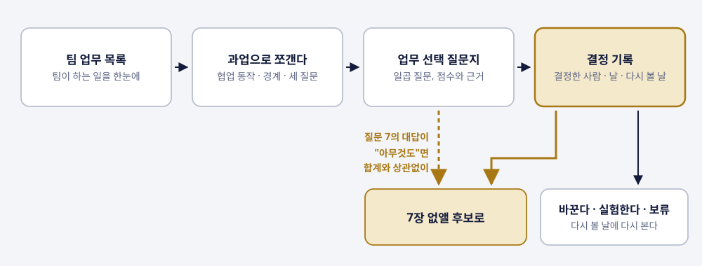
그림 8-2. 팀 업무 목록에서 결정
기록까지
위 줄은 왼쪽에서 오른쪽으로 읽는다. 질문지에서 바로 내려가는 점선은
질문 7에 ’아무것도’가 나온 후보가 합계와 상관없이 9장의 없앨 후보로 가는
길이다.
앞의 영업 지원 팀 예로 하나만 채워 본다. “견적서 초안 작성”을 후보로
올렸다고 해 보자. 올해 우선순위 가운데 “신규 고객 응대 시간 단축”과
이어지니 질문 1은 2점이다. 견적이 늦어 고객이 기다리는 일이 잦다면
병목이니 질문 2도 2점이다. 리더가 일지에서 비슷한 초안을 맡겨 봤더니
표준 품목은 잘 맞추고 특수 조건에서 자주 틀렸다면 질문 3은 1점이다. 틀린
견적이 고객에게 나가면 손해가 크니 질문 4는 1점, 할인 조건 같은 사람만
아는 맥락이 걸리니 질문 5도 1점이다. 견적 양식이 팀 안에서 정해진다면
질문 6은 2점이다. 질문 7에는 “고객 응대가 늦어진다”가 들어가니 2점으로
보면 합계는 11점이다. 이 정도면 특수 조건 견적에는 사람의 확인을 두고
표준 품목부터 바꾸는 결정을 내릴 만하다. 점수보다 이 결정 문장이 결정
기록에 들어가야 한다.
질문지를 채우는 자리에는 후보를 올린 팀원을 함께 부르자. 리더 혼자
채우면 질문 2와 3에서 현장의 병목과 경계를 잘못 읽기 쉽다. 결정 기록은
팀이 함께 볼 수 있는 곳에 두는 편이 좋다. 다시 볼 날이 왔을 때 그 결정을
꺼내 보는 사람이 있어야 기록이 쓸모를 가진다. 질문지는 분기마다 한 번
돌리는 정도가 적당하다. 7장에서 말했듯 경계는 도구가 바뀔 때마다
움직이니, 지난 분기에 질문 3에서 0점을 받은 후보가 이번 분기에는 다른
점수를 받을 수 있다.
이 질문지를 팀 업무 목록 전체에 돌려 보면 재미있는 일이 생긴다. 바꿀
후보를 고르려고 시작했는데, 목록 맨 아래쪽에 질문 1부터 0점이 나오고
질문 7에서 아무도 대답하지 못하는 행이 하나쯤 있다. 오래전부터 해 왔지만
AI 도입 후보 회의에서 한 번도 거론되지 않은 일이다. 누가 시작했는지 아는
사람도 이제 팀에 없을지 모른다. 팀 업무 목록마다 그런 행이 하나쯤은 숨어
있다고 가정해도 좋다. 그 행에는 이 질문지와는 다른 질문이 필요하다.
9장. 자동화하기 전에 없앨 일을 고른다
팀장의 자리
AI가 10분 만에 써 주는 그 주간 보고서는, 원래 누가 읽고 있었을까?
팀 업무 목록을 앞에 두고 자동화 후보를 고르다 보면 이 질문을 피하기
어렵다. 주간 보고서를 자동화 후보 맨 위에 올린 팀을 생각해 보자. 형식이
정해져 있고, 재료가 여기저기 흩어져 있고, 쓰는 사람이 지루해한다. AI에게
맡기기에 이보다 좋은 일이 없어 보인다.
한 팀이 이 보고서를 자동화했다고 해 보자. 메신저와 일정표와 업무 관리
도구에서 재료를 모아 AI가 초안을 쓰고, 담당 팀원이 숫자를 확인해 금요일
오후에 보낸다. 2시간 걸리던 일이 20분으로 줄었다. 팀장은 이 사례를 AI
활용 우수 사례로 올린다. 여기까지는 모두가 만족스럽다.
그런데 그 보고서를 받는 쪽으로 가 보면 사정이 다를 수 있다. 받은
사람이 끝까지 읽는지, 읽고 무언가를 결정하는지, 아니면 받았다는 사실만
확인하고 다음 메일로 넘어가는지 물어본 사람은 드물다. 아무도 읽지 않는
보고서를 AI로 빠르게 만들면, 아무도 읽지 않는 보고서가 더 빨리, 더
매끄럽게 쌓인다. 20분도 아무도 읽지 않는 문서에 쓴 시간이라면, 줄어든
것은 낭비의 크기뿐이다.
삽화. 이 보고서를 마지막으로 읽고 결정을 내린 사람은
누구였을까? 상상으로 그린 장면으로, 특정 인물이나 조직이
아니다.
앞 장의 업무 선택 질문지에는 “하지 않으면 무엇이 멈추나”라는 마지막
질문이 있었다. 이 장은 거기에 “아무것도”라고 적힌 행을 들여다본다.
현장에서 리더들이 자주 묻는 질문 가운데 이런 것이 있다. “자동화하지
말고, 일을 없애면 안 될까?” 종합편 부록 FAQ가 아직 비어 있는 질문의
첫째로 꼽은 것도 이 질문이다. 일을 없애는 판단은 누가, 어떤 기준으로
내리는가. 그리고 일을 없애는 일과 사람을 줄이는 일은 어떻게 떼어
놓는가.
36년 전에도 같은 질문이 있었다
이 질문에는 오래된 선례가 있다. 1990년 Harvard Business Review에
Michael Hammer가 쓴 글의 제목이 바로 「Reengineering Work: Don’t
Automate, Obliterate」였다. 자동화하지 말고 없애라는 뜻이다. Hammer는
정보기술에 큰돈을 쓰고도 결과가 실망스러운 이유를 이렇게 진단했다.
회사들이 기술을 낡은 일하는 방식을 기계화하는 데 썼고, 기존 절차는
그대로 둔 채 컴퓨터로 속도만 높였다는 것이다. 그리고 지금까지 자주
인용되는 문장을 적었다.
“It is time to stop paving the cow paths. Instead of embedding
outdated processes in silicon and software, we should obliterate them
and start over.” (Hammer, HBR 1990)
소가 다니던 길에 포장을 깔지 말자는 말이다. 길이 왜 거기로 났는지
묻지 않고 아스팔트부터 붓는 일은, 주간 보고서를 AI로 빠르게 쓰는 일과
무척 닮았다.
Hammer가 든 사례는 Ford의 외상매입금(accounts payable) 부서다.
북미에서만 500명 넘게 일하던 부서였다. 경영진은 절차를 정리하고 새
컴퓨터 시스템을 들이면 인원을 20%쯤 줄일 수 있다고 봤다. 그런데 Mazda의
같은 부서를 보고 생각이 바뀐다. Mazda의 외상매입금 조직은 모두
5명이었다. 회사 규모 차이를 감안해도 설명되지 않는 격차였다. Ford는 기존
절차를 빠르게 하는 대신 절차 자체를 다시 짰다. 예전에는 돈을 내기 전에
송장·구매 주문서·입고 기록 사이에서 14개 항목을 맞춰야 했다. 새
방식에서는 구매 부서가 주문을 온라인 데이터베이스에 입력하고, 물건이
들어오면 입고 담당이 그 주문과 맞는지 확인해 시스템에 올린다. 대조는
부품 번호·단위·공급사 코드 세 항목만 자동으로 하고, 공급사에는 송장을
보내지 말라고 했다. Hammer는 이것을 “invoiceless processing”이라고
불렀다. 새 절차를 들인 곳에서 얻은 결과는 원문 그대로 옮기면 “a 75%
reduction in head count, not the 20%”였다. 20%를 목표로 시작한 일이
75%로 끝났다.
숫자의 크기보다 숫자가 갈린 지점을 보자. 20%는 “지금 하는 일을 어떻게
더 빨리 할까”라는 질문에서 나온 목표였다. 75%는 “이 일을 왜 하고
있나”라는 질문에서 나왔다. 같은 회사, 같은 시기였는데 질문이 달라지자
결과의 크기가 달라졌다. 75%를 낸 질문은 외상매입금 부서를 넘어
구매·입고까지 이어진 흐름 전체를 다시 보게 했다. 팀 단위로 옮겨도
마찬가지다. 주간 보고서 작성 시간을 2시간에서 20분으로 줄이는 것은 앞의
질문이 낼 수 있는 최선이다. 그 보고서가 필요한지 묻는 것은 뒤의
질문이고, 그 질문은 2시간을 통째로 돌려줄 수도 있다.
Hammer가 이 사례에서 끌어낸 원칙 가운데 하나가 “Organize around
outcomes, not tasks.”다. 일을 과업 목록으로 묶지 말고 그 일이 내는
결과로 묶으라는 뜻이다. 또 하나 눈여겨볼 대목이 있다. Hammer는 모든
회사가 말로 적힌 적 없는 규칙을 아주 많이 따르며 일한다고 썼다(“Every
company operates according to a great many unarticulated rules.”).
Ford에서는 “송장을 받으면 돈을 낸다”는 규칙을 누구도 말로 적어 둔 적이
없었지만, 그 규칙이 외상매입금 절차 전체의 모양을 정하고 500명의 일을
떠받치고 있었다. Ford는 이 규칙을 “물건을 받으면 돈을 낸다”로 바꿨다.
주간 보고서도 비슷하다. 누가 왜 요구했는지 적힌 곳은 없는데 매주 누군가
그것을 쓴다. 처음 요구한 사람은 이미 다른 자리로 옮겼을지도 모른다.
여기서부터는 연구가 아니라 이 책의 추론이다. Hammer의 진단은 1990년의
정보기술에 대한 것이었다. 생성형 AI가 같은 함정에 빠진다는 직접 증거는
없다. 다만 지금 많은 팀이 AI를 붙이는 첫 자리가 보고서·요약·회의록처럼
기존 절차의 산출물이라는 점, 그리고 그 산출물이 정말 필요한지 묻는
단계가 대개 건너뛰어진다는 점은 Hammer가 본 장면과 겹친다. 형식이 정해진
일일수록 AI가 잘 해내니, 없애야 할 일을 가장 매끄럽게 자동화하게 된다.
그 점이 찜찜하다.
없애기가 감원으로 바뀐 날
Ford 사례의 결말을 다시 보자. 일을 없앤 결과가 “인원 75% 감축”으로
적혀 있다. 이 문장에서는 무엇이 사라졌는지가 흐려진다. 송장을 맞춰 보던
일이 사라졌는가, 그 일을 하던 사람이 사라졌는가? Hammer의 글은 둘을 한
문장에 담았고, 이후 리엔지니어링 운동은 그 둘을 점점 구분하지 않게
됐다.
1995년, 리엔지니어링을 함께 이끌었던 Thomas Davenport가 「The Fad
That Forgot People」이라는 글을 쓴다. 사람을 잊은 유행이라는 제목이다.
본문 원문은 이번 조사에서 직접 확인하지 못했으니 제목과 널리 알려진
요지만 옮긴다. 리엔지니어링이 대규모 해고의 명분으로 쓰이면서 원래 뜻을
잃었다는 자성이다. 일을 없애자는 주장이 사람을 줄이자는 주장으로 읽히기
시작하자, 현장은 더 이상 없앨 일을 먼저 꺼내지 않았다.
2025년, 비슷한 경고가 다시 나왔다. Forrester는 2025년 11월에 낸
2026년 일의 미래 예측에서 이렇게 적었다.
“We expect half of AI-attributed layoffs to be quietly reversed, with
jobs returning offshore or at lower wages.” (Forrester, 2025-11-12)
AI를 이유로 든 해고의 절반이 해외 이전이나 더 낮은 임금으로 조용히
되돌려질 것이라는 예측이다. 예측이고, 2026년 11월 현재 이 예측을 검증한
자료는 이번 조사에서 찾지 못했다. 하지만 이 문장이 그리는 장면은
분명하다. 일이 정말 사라지지 않았는데 사람만 먼저 사라졌다면, 그 일은
다른 곳에서 다른 값으로 다시 생긴다. 예측이 맞다면, 일을 들여다보지 않은
감원은 비용을 줄인 것처럼 보이다가 다시 그 비용을 부르는 셈이다.
Forrester는 같은 글에서 성숙한 AI 애플리케이션 없이 재무적 감축을 AI로
포장하는 일을 경계했다. 이름이 바뀌었을 뿐 Davenport가 30년 전에 본
장면과 같다. 일은 그대로 두고 사람만 줄인 다음, 그 결정에 새 기술의
이름을 붙이는 것이다.
두 문헌을 나란히 놓으면 리더가 지켜야 할 경계가 보인다. 일을 없애는
판단, 일을 자동화하는 판단, 사람을 줄이는 판단은 서로 다른 결정이다.
무엇이 사라지는지도, 누가 정하는지도, 되돌릴 수 있는지도 다르다. 그런데
팀원이 보기에는 셋이 한 신호로 읽히기 쉽다. 아래 표가 그 차이를
정리한다.
표 9-1. 일 없애기·자동화·감원은 다른 결정이다
구분
무엇이 사라지나
누가 정하나
되돌릴 수 있나
팀이 읽는 신호
일 없애기
일 자체(결과를 아무도 쓰지 않는 일)
결과를 쓰는 사람·결과 책임자·수행자가 함께, 리더가 소집
쉽다. 시험 중단 기간을 두면 다시 시작하면 된다
“이 일은 안 해도 된다”
자동화
사람이 하던 손작업(일은 계속된다)
팀장과 수행자, 기술 지원
대체로 쉽다. 다만 확인 노동이 새로 생긴다
“같은 일을 다른 방식으로”
감원
사람의 자리
임원·인사
어렵다. 사람과 경험이 함께 떠난다
“다음은 내 차례인가”
표의 맨 오른쪽 열이 문제다. 리더가 첫째 행을 하려고 해도 팀원은 셋째
행을 먼저 떠올린다. 그 연상을 끊지 못하면 없앨 일 목록은 언제까지나 비어
있다.
팀원들이 셋째 행을 먼저 떠올리는 데는 이유가 있다. 커뮤니티에서는
감원의 진짜 이유는 따로 있고 AI는 그때그때 가져다 쓰는 명분일 뿐이라는
냉소가 자주 보인다(Hacker News의 생산성 이득 토론, 커뮤니티 의견). 이런
냉소가 맞는지는 회사마다 다르겠지만, 팀원이 그렇게 읽을 수 있다는 사실은
리더가 감안해야 할 조건이다. 리더가 “이 일 없애 보자”고 말하는 순간
팀원의 머릿속에서는 그 말이 표의 어느 행에 해당하는지 번역이 일어난다.
그 번역을 리더가 미리 해 주지 않으면 팀원은 가장 나쁜 행으로
번역한다.
증명 책임을 뒤집은 메모들
2025년 봄, 두 회사의 CEO 메모가 이 문제를 정면으로 건드렸다. 보도로
알려진 내용을 기준으로 보자.
7장에서 본 Tobi Lütke의 Shopify 메모, 리더도 예외가 아니라고 적은 그
메모에는 이런 문장도 있었다. “Before asking for more Headcount and
resources, teams must demonstrate why they cannot get what they want
done using AI.” 사람이나 자원을 더 달라고 하기 전에, AI로 해낼 수 없는
이유를 먼저 보이라는 요구다. 증명 책임을 뒤집은 셈이다. 예전에는 “왜
사람이 더 필요한가”를 설명하면 됐다. 이제는 “왜 AI로 안 되는가”까지
설명해야 한다. 메모에는 이런 질문도 들어 있었다. “What would this area
look like if autonomous AI agents were already part of the team?”
Lütke는 이 질문이 꽤 재미있는 토론과 프로젝트로 이어질 수 있다고
덧붙였다.
같은 달 Duolingo CEO Luis von Ahn도 비슷한 메모를 냈다. 팀이 자기
일을 더 자동화할 수 없을 때만 인원을 배정하겠다는 내용이었다. 반응은
거셌다. 몇 주 뒤 그는 이렇게 해명했다(보도 기준). “When I released my AI
memo a few weeks ago, I didn’t do that well.” 직원을 대체하려는 뜻이
아니었다고 덧붙였지만, 메모가 이미 보낸 신호를 거두기는 어려웠다.
두 메모가 가리키는 방향은 같다. 그런데 한쪽은 질문으로 기억되고 다른
쪽은 해명으로 기억된다. 두 회사의 반응 차이를 메모 문장만으로 설명할
수는 없으니, 보도로 확인되는 범위는 여기까지로 해 두자. 리더가 이
메모들에서 빌려 올 만한 것은 증명 책임이라는 장치 자체다. 다만 질문을
옮겨 쓸 필요가 있다. Shopify의 질문은 “사람을 더 달라”는 요청 앞에 서
있다. 그래서 어떻게 다듬어도 인원의 언어로 읽힌다. 같은 장치를 일 앞에
세워 보면 어떨까?
“이 일을 AI로 할 수 없는 이유를 보여라” 대신 “이 일이 아직 필요한
이유를 보여라”로 묻는 것이다. 질문의 대상이 사람에서 일로 옮겨 간다. 이
질문은 일을 하는 사람을 겨누지 않는다. 그 일을 요구한 쪽, 그 결과를 받아
쓰는 쪽을 향한다. 주간 보고서라면 증명할 쪽은 보고서를 받는 사람이다.
쓰는 팀원에게는 “이번 주에도 썼나”를 묻지 않는다.
이렇게 질문을 옮기면 대화의 온도가 달라진다. 보고서를 받는 상위
리더에게 “이 보고서가 아직 필요하십니까?”라고 묻는 것은 무례하게 들릴 수
있다. 그러니 묻는 방식을 조금 바꾸는 편이 낫다. “이 보고서에서 가장 자주
보시는 부분이 어디입니까? 나머지는 4주쯤 빼 보려고 합니다.” 이 질문에는
대개 구체적인 대답이 돌아온다. 그리고 그 대답이 보고서의 진짜 결과가
무엇인지 알려 준다.
팀 안에서도 같은 질문을 쓸 수 있다. 팀 회의에서 “우리가 매주 만드는
것 가운데 받는 사람이 없어도 아무도 모를 것 같은 게 있나?”라고 물어보자.
처음에는 조용할 수 있다. 자기 일을 스스로 깎아 내리는 말처럼 들리기
때문이다. 이때 리더가 자기 몫의 일부터 꺼내 놓으면 분위기가 달라진다.
리더가 매주 위로 올리는 현황 메일 가운데 회신을 받아 본 적이 없는 것,
리더가 소집하지만 결정이 나오지 않는 정례 회의 같은 것들이다. 리더의
일이 먼저 목록에 올라가면, 이 질문이 팀원을 겨누지 않는다는 점이 말보다
빨리 전달된다.
없애는 대상은 사람이 아니라 일이다. 말로는 쉽다. 이 문장이 팀 안에서
믿기려면 결정의 순서와 자리가 따로 있어야 한다.
참고로 오래 쌓인 보고서가 왜 조직의 지식이 되지 못하는가 하는 질문은
종합편 부록 FAQ가 이미 다뤘다. 이 장에서 정기 보고서는 없앨 후보의 대표
예로만 쓴다.
누가 없앨 수 있나
이제 가장 어려운 질문으로 가 보자. 일을 없애는 결정은 누가
내리는가?
먼저 정직하게 말해 둘 것이 있다. 이 질문에 대한 실증 연구는 이번
조사에서 찾지 못했다. 일을 없애는 판단을 누가 어떻게 내릴 때 결과가
좋은지 비교한 연구가 없다. 그러니 이 절의 처방은 이 책의 제안이다.
이 책은 세 자리를 한자리에 부르자고 제안한다. 첫째는 그 일의 결과를
쓰는 사람, 즉 요구자다. 주간 보고서라면 보고서를 받는 상위 리더나 다른
팀이다. 둘째는 그 결과에 책임지는 사람이다. 보고서에 담긴 수치가 틀렸을
때 누가 곤란해지는가를 물으면 찾을 수 있다. 셋째는 그 일을 실제로 하는
사람이다. 이 셋은 대개 다른 사람이고, 서로 다른 것을 안다. 요구자는 그
결과를 왜 원했는지 안다. 책임자는 그 결과가 빠지면 무엇이 위험한지 안다.
수행자는 그 일에 실제로 얼마가 드는지, 그리고 결과 가운데 정말 쓰이는
부분이 어디인지 안다.
리더의 몫은 이 셋을 부르고, 두 가지를 정하는 것이다. 하나는 시험 중단
기간이다. 바로 없애지 말고 4주쯤 멈춰 본다. 그동안 누가 그 일을 찾는지
본다. 아무도 찾지 않으면 없애도 된다는 꽤 좋은 신호다. 누군가 찾는다면
그 사람이 진짜 요구자다. 다른 하나는 되돌릴 조건이다. 무엇이 일어나면
다시 시작할지를 미리 적는다. “분기 실적 회의에서 이 수치를 찾는 사람이
나오면 다시 만든다”처럼.
주간 보고서로 4주를 따라가 보자. 첫 주에는 요구자에게 “이번 주부터
4주 동안 보고서를 보내지 않고, 필요하면 바로 만들어 드리겠다”고 알린다.
몰래 멈추지 않는 것이 요령이다. 몰래 멈췄다가 누군가 찾으면 신뢰를 잃고,
그다음 시험은 허락받기 어려워진다. 둘째 주와 셋째 주에는 그 보고서를
찾는 연락이 오는지, 온다면 누가 어떤 항목을 찾는지 적는다. 넷째 주에 세
사람이 다시 모여 기록을 본다. 찾은 사람이 없으면 없앤다. 특정 항목만
찾았다면 그 항목만 두는 쪽으로 줄인다. 이 과정에서 리더가 할 일은 많지
않다. 다만 기록이 실제로 쌓이는지 확인하고, 넷째 주 모임을 잊지 않게
일정에 박아 두는 일은 리더 몫이다.
결정이 꼭 “없앤다”일 필요는 없다. 심사해 보면 다섯 갈래가 나온다.
아무도 쓰지 않으면 없앤다. 비슷한 결과를 내는 일이 둘이면 합친다. 결과
가운데 일부만 쓰인다면 그 부분만 두고 줄인다. 결과는 꼭 필요한데 손이
많이 간다면 그때 자동화한다. 그리고 결과가 필요하고 사람이 하는 편이
나은 일은 그대로 둔다. 순서가 중요하다. 자동화는 앞의 셋을 지나고 나서
고르는 갈래다. 앞에서 살펴본 주간 보고서라면, 상위 리더가 “지난주와
달라진 위험 항목”만 본다는 대답을 들었을 때 보고서 전체를 자동화하는
대신 위험 항목 세 줄로 줄이는 쪽이 낫다.
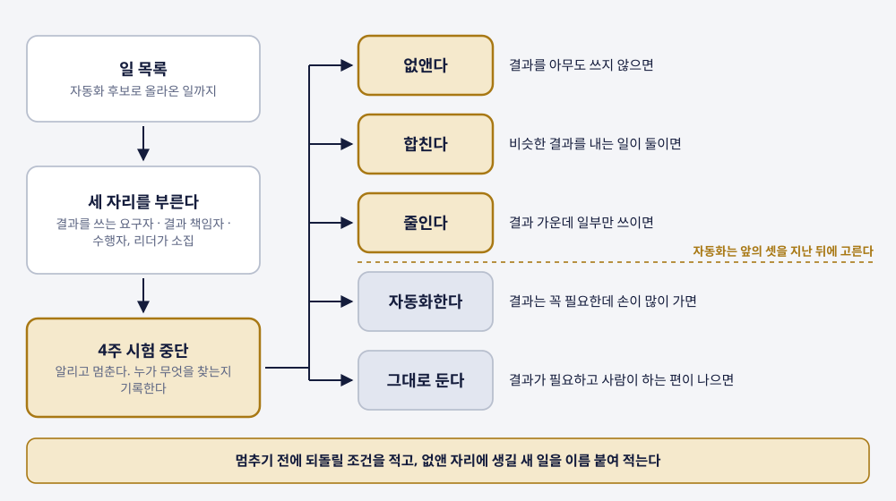
그림 9-1. 없앨 일 심사의 흐름과 다섯
갈래
왼쪽 세 단계를 지나면 오른쪽 다섯 갈래 가운데 하나로 간다. 점선 위의
세 갈래를 먼저 따져 본 뒤에야 자동화를 고른다.
이 방식은 앞 책의 처방과도 맞닿는다. 종합편은 에필로그에서 15권의
공통 처방 하나를 이렇게 적었다. 「맡기기 전에 끝을 정해 둔다」.
에이전트를 운영에 올리기 전에 되돌릴 수 있는지, 누가 이어받는지, 언제
내리는지를 적어 두자는 말이었다. 일을 없앨 때도 순서는 같다. 멈추기 전에
다시 켤 조건을 적어 둔다.
왜 리더가 혼자 정하면 안 될까? 리더는 대개 세 자리 가운데 어느 것도
온전히 차지하지 못한다. 요구자의 사정은 짐작할 뿐이고, 수행자가 실제로
쓰는 시간은 모른다. 혼자 정하면 판단이 틀리기 쉽고, 틀렸을 때 팀은
“위에서 일방적으로 없앴다”고 기억한다. 그러면 다음 번에 없앨 일을 꺼낼
사람이 줄어든다. 반대로 수행자 혼자 정하게 두는 것도 난감하다. 자기가
하던 일을 스스로 없애자고 말하는 것은, 표 9-1의 셋째 행이 두려운
사람에게는 자기 자리를 내놓는 일처럼 느껴진다.
하나 더 짚어 두자. 일을 없애자고 먼저 말한 팀원을 리더가 어떻게
대하는가가 다음 없애기의 속도를 정한다. 그 팀원이 아낀 시간을 어디에
쓰게 되는지, 평가에 그 기여가 잡히는지는 16장과 22장에서 다시
다룬다.
없앤 자리에 생기는 일
일을 없애면 그 자리는 비는가? 경제학은 대개 그렇지 않다고 본다.
Daron Acemoglu와 Pascual Restrepo는 2019년 논문에서 자동화를 두
힘으로 나눠 봤다. 기술이 사람이 하던 과업을 대체하는 힘, 그리고 새
과업을 만들어 노동 수요를 되살리는 힘이다. 둘이 어떻게 균형을 이루느냐가
고용 결과를 좌우한다. 이 틀을 팀 단위로 옮기면 질문이 하나 생긴다. 우리
팀에서 사라진 과업 옆에 새로 생겨야 할 과업은 무엇인가? 아무도 새 과업을
만들지 않으면 대체만 일어난다.
Sharon Parker와 Gudela Grote는 2022년 논문에서 같은 문제를 직무 설계
쪽에서 봤다. 기술의 효과는 정해져 있지 않고, 조직이 직무를 어떻게
설계하느냐에 달려 있다는 것이다. 이 논지를 일 없애기에 대어 보면 경고가
하나 나온다. 손으로 하던 일을 없애고 자동화한 뒤 사람에게 확인하는 일만
맡기면, 그 직무는 판단할 거리도 배울 거리도 없는 빈 직무가 될 수 있다.
확인만 하는 사람이 겪는 문제는 13장에서 따로 다룬다.
현장에서 리더들이 묻는 질문 가운데 이런 문장도 있다. “모든 리더는
AI가 대신할 일과 사람이 새로 해야 할 일을 설계할 수 있어야 한다.” 앞
절이 앞쪽 절반, 무엇을 없앨지를 다뤘다면 이 절은 뒤쪽 절반이다. 없앤 일
옆에는 새 일이 적혀야 한다. 주간 보고서를 줄였다면 그 자리에 무엇이
들어가는가? 보고서를 쓰던 팀원이 그 시간에 고객 문의 가운데 반복되는
유형을 분류해 제품팀에 넘긴다고 해 보자. 그쪽이 보고서보다 결과에 가까운
일이다. 이렇게 새 일을 적어 두지 않으면 없앤 시간은 다른 일로 흩어진다.
그 과정이 어떻게 일어나는지는 16장의 주제다.
새 일은 거창할 필요가 없다. 대개 세 방향 가운데 하나다. 하나는
Hammer가 말한 결과에 더 가까운 일이다. 보고서를 쓰던 시간에 보고서가
다루던 문제 자체를 들여다보는 쪽이다. 또 하나는 확인이다. 다른 일을
자동화했다면 그 결과를 보는 사람이 필요하다. 마지막은 배우는 일이다.
7장에서 리더가 직접 써 보며 경계를 익혔듯, 팀원에게도 써 보고 틀려 볼
시간이 있어야 한다. 어느 쪽을 고르든 심사표에 이름을 붙여 적자. “시간
나는 대로”라고 적힌 새 일은 아직 정해지지 않은 일이다.
그렇다면 일 없애기를 감원과 어떻게 떼어 놓을까? Davenport의 자성과
Forrester의 예측이 함께 가리키는 원칙이 있다. 일 없애기 회의와 인력 조정
회의를 같은 자리에서 열지 않는 것이다. 같은 회의에서 다루면 첫째 결정이
셋째 결정의 근거로 읽힌다. 팀원은 다음 회의에 없앨 일을 들고 오지
않는다.
여기서 팀장이 부딪히는 문제가 있다. 팀장 대부분은 인력 조정 권한이
없다. “없앤 일을 감원 근거로 쓰지 않겠다”고 팀에 약속하고 싶어도, 그
약속을 지킬 힘이 팀장에게 없을 수 있다. 약속했다가 위에서 뒤집히면
처음부터 약속하지 않은 것보다 나쁘다. 그래서 이 책은 권한을 세 줄로 나눠
보자고 제안한다.
(가) 팀장이 직접 약속할 수 있는 것: 팀 안의 업무 배분, 없앤 일의
시간을 팀 안에서 어디에 쓸지, 평가 의견에 그 기여를 적는 일.
(나) 팀장이 위에 요구해야 하는 것: 없앤 일과 아낀 시간을 인력 조정
근거로 쓰지 않는다는 약속, 그리고 그 약속의 기한. 팀장은 이 약속을 직접
할 수 없다. 대신 위에 묻고 받아 와야 한다. “이번 분기에 없앤 일을 인력
조정 근거로 쓰지 않는다는 약속을, 언제까지 받을 수 있습니까?”
(다) 임원이 선언해야 효력이 생기는 것: 회사 단위로 “일 없애기와
감원은 다른 회의에서 다룬다”는 원칙. 이 선언은 팀장 여럿이 각자 할 수
없다.
규칙은 하나다. 팀장이 (나)를 받아 오지 못했다면 팀에 (나)를 약속하지
않는다. 대신 (가) 범위 안에서 할 수 있는 것을 분명히 말하고, (나)를
요구하고 있다는 사실을 팀에 알린다. 임원이라면 (다)를 먼저 선언해 두는
편이 낫다. 그 선언이 없으면 팀장들은 (나)를 받으러 올 때마다 같은 질문을
따로따로 하게 된다. 그리고 선언에는 기한을 넣자. 기한 없는 약속은 다음
예산 회의까지만 믿긴다.
임원이 할 일은 선언 하나로 끝나지 않는다. 일 없애기는 대개 팀 경계를
넘는다. 한 팀이 만드는 보고서를 다른 팀이 요구하고, 그 결과를 또 다른
조직이 받아 쓴다. 팀장끼리는 서로의 요구를 거두라고 말하기 어렵다.
요구자가 상위 조직일 때는 더 그렇다. 그래서 여러 팀에 걸친 일은 임원이
직접 세 자리를 부르는 편이 낫다. 임원이 자기 조직에서 정기적으로 받는
보고 가운데 하나를 골라 4주 시험 중단을 먼저 해 보이면, 그 아래 팀장들은
어디까지 해도 되는지 말로 듣는 것보다 정확히 알게 된다.
아직 아무도 확인하지 못한 것
이 장의 처방에는 분명한 한계가 있다. 일을 없애는 판단을 누가 내릴 때
결과가 좋은지 실증한 연구는 이번 조사 범위에서 찾지 못했다. 재설계가
성과를 낸다는 것을 조직 단위로 입증한 실험도 없다. 앞 책도 같은 결론에
이르렀다. 「조직 에이전트 2027」 8장은 업무 흐름 하나를 처음부터 다시
짜는 데 예산을 쓰자고 제안하면서 바로 이렇게 덧붙였다. 「재설계가 성과를
낸다는 것을 입증한 조직 단위 실험은 이번 조사 범위에서 찾지
못했다.」
컨설팅 회사의 조사가 방향을 보여 주기는 한다. 8장에서 본 Bain의
2024년 8월 보고서는 업무 흐름을 처음부터 다시 짜면서 생성형 AI를 들이는
선도 기업이 최대 25% 절감을 바라본다고 적었다. 다만 25%는 달성한
수치보다 전망에 가깝고, 컨설팅 회사가 자기 방법론을 소개하며 낸
숫자이며, 표본이나 조사 설계도 공개되지 않았다. 무엇을 없앴는지, 누가
정했는지까지 보여 주지는 않는다.
현장의 목소리도 얇다. “자동화 말고 없애자”를 직접 다룬 커뮤니티
토론은 이번 조사에서 거의 찾지 못했다. 가장 가까운 것은 Hacker News의 한
댓글이다. 개발팀이 시간 대부분을 부수적인 일에 쓰고 있다면 해고를 고민할
대상은 개발자들보다 “whoever put in place a system where so much time is
spent on overhead”라는 말이다(커뮤니티 의견). 부수적인 일에 시간이
그렇게 많이 들도록 일을 짜 놓은 쪽에 책임을 묻는다는 점에서, 이 장의
증명 책임과 같은 방향을 본다.
그래서 이 장을 읽는 리더는 두 가지를 구분해 두자. Hammer의 사례,
Davenport의 자성, Forrester의 예측, 대체와 새 과업이라는 틀은 근거가
있는 부분이다. 세 자리를 부르는 방식, 4주 시험 중단, 다섯 갈래의 순서,
권한 세 줄은 실증이 없는 이 책의 제안이다. 해 보고, 무엇이 일어났는지
적어 두자. 몇 개 팀의 그런 기록이 모이면, 이 공백을 메우는 첫 자료가
된다.
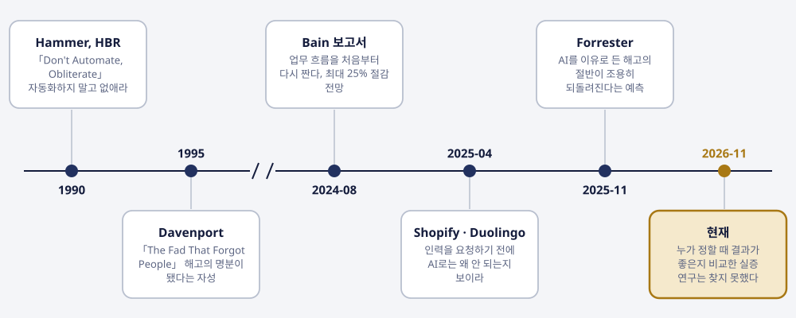
그림 9-2. 없애라는 질문의 연표,
1990년부터 2026년 11월까지
1995년과 2024년 사이의 끊김 표시는 그 사이를 줄여 그렸다는 뜻이다.
오른쪽 끝 칸은 아직 채워지지 않은 자리이고, 이 장의 처방이 이 책의
제안으로 남는 이유도 여기에 있다.
기록할 것은 많지 않다. 무엇을 멈췄는지, 4주 동안 누가 그것을
찾았는지, 최종 결정이 다섯 갈래 가운데 무엇이었는지, 그리고 3개월 뒤 그
일이 다시 생겼는지. 마지막 항목이 특히 중요하다. 없앤 일이 다른 이름으로
다시 생겼다면 처음 판단이 틀렸거나, 그 일을 요구하는 암묵 규칙이 아직
살아 있다는 뜻이다. Hammer가 말한 “unarticulated rules”는 한 번에
사라지지 않는다. 다시 나타날 때마다 적어 두면 그 규칙이 어디서 나오는지
조금씩 보인다.
이 기록은 22장에서 다시 쓰인다. 일을 없앤 기여가 평가에 잡히려면
무엇을 없앴고 그 뒤 어떻게 됐는지가 적혀 있어야 한다. 기록이 없으면 일을
없앤 사람은 일을 덜 한 사람과 구별되지 않는다.
다음 주에 쓸 도구: 없앨 일 심사표
8장의 업무 선택 질문지에서 “하지 않으면 무엇이 멈추나”에
“아무것도”라고 적힌 행을 이 표로 옮긴다. 질문지가 없다면 팀 업무
목록에서 정기적으로 만드는 산출물(보고서·회의록·현황표·주간 공유
메일)부터 적어 보자. 한 번에 다섯 행이면 충분하다.
표는 세 부분으로 되어 있다. 첫째는 행별 심사표다. “요구한 자리”
열에는 사람 이름 대신 자리를 적는다. 이름을 적으면 심사가 사람에 대한
평가처럼 읽힌다. “없앤 자리에 생길 새 일” 열은 비워 두지 않는 것이 좋다.
새 일을 적지 못하겠다면 그 행은 아직 없앨 준비가 덜 된 것이다.
둘째는 결정 권한 표다. 행마다 요구자·결과 책임자·수행자를 적고,
리더가 언제 이 셋을 부를지 정한다. 셋째는 권한 세 줄을 팀 상황으로
채우는 부분이다. (나)에 받아 온 약속이 없다면 “요구 중, 요구한 날짜”를
적고, 팀에는 그 상태를 그대로 알린다. 이 부분은 팀장이 쓰고, 임원이라면
(다) 행을 회사 단위로 채운다.
처음 채울 때는 30분짜리 팀 회의 하나로 시작해 보자. 리더가 자기 몫의
후보 한 행을 먼저 적고, 팀원들이 한 행씩 보탠다. 그 자리에서 결정까지
하지 않아도 된다. 요구자와 결과 책임자를 적는 데서 멈추고, 세 자리를
부를 날짜만 정한다.
표 9-2. 없앨 일 심사표 (행별 심사)
일
이 일의 결과
요구한 자리
요구자는 지금도 그 결과를 쓰나
없애면 누가 무엇을 잃나
4주 시험 중단(시작일)
되돌릴 조건
없앤 자리에 생길 새 일
예: 주간 현황 보고서
팀 진행 상황 요약
상위 조직 리더
일부만(지난주와 달라진 위험 항목)
상위 리더가 회의 전 훑어볼 자료
분기 회의에서 빠진 수치를 찾는 사람이 나오면 재개
반복 문의 유형을 분류해 제품팀에 전달
표 9-3. 결정 권한 표
일
요구자(자리)
결과 책임자(자리)
수행자
리더가 소집할 날짜
결정(없앤다 / 합친다 / 줄인다 / 자동화한다 / 그대로 둔다)
표 9-4. 권한 세 줄
권한
우리 팀 상황
(가) 팀장이 직접 약속할 수 있는 것
예: 없앤 일의 시간은 팀 안에서 ○○에 쓴다. 평가 의견에 기여를
적는다
(나) 팀장이 위에 요구해야 하는 것
인력 조정 근거로 쓰지 않는다는 약속: 받음(기한 ○○) / 요구 중(요구한
날짜 ○○)
(다) 임원이 선언해야 효력이 있는 것
회사 단위 원칙의 유무: 있음 / 없음
결정 열의 다섯 갈래 가운데 “자동화한다”는 맨 마지막에 고르자.
없애거나 합치거나 줄일 수 없을 때만 자동화로 간다. 순서를 지키는
것만으로도 소가 다니던 길에 포장을 까는 일을 꽤 줄일 수 있다.
이 표를 팀과 함께 채울 때 오래 기억되는 것은 표의 내용보다 처음 없앤
일 하나가 어떻게 다뤄졌는가다. 주간 보고서를 줄인 팀원이 그 시간에
무엇을 하게 됐는지, 다음 인력 계획 회의에서 그 보고서가 어떤 숫자로
등장했는지를 팀은 지켜본다. 팀원들은 리더의 말보다 그 회의록을 믿는다.
그리고 그 회의록은 생각보다 빨리, 생각보다 넓게 읽힌다. 한 팀에서 일어난
일은 옆 팀의 다음 심사표에도 영향을 준다. 없앤 일이 한 번이라도 감원의
근거로 읽히고 나면, 그 팀의 심사표에는 다시는 새 행이 올라오지 않는다.
없애지 않고 남긴 일 가운데 에이전트에게 맡긴 일은 이제 결과가 되어
돌아온다. 그 결과를 무엇으로 받아들일지는 다시 실무자의 책상에서
시작한다.
3부. 에이전트의 결과를 확인하는 리더
2부는 무엇을 맡기고, 무엇을 바꾸고, 자동화하기 전에 무엇을 없앨지
고르는 일을 다뤘다. 고르고 맡기고 나면 결과가 돌아온다. 3부의 질문은
하나다. 에이전트가 낸 결과를 누가, 무엇을 기준으로, 얼마의 시간을 들여
확인하는가?
6장은 여러 에이전트를 돌릴 때 막히는 곳이 사람의 확인이라고 했다.
3부는 그 확인을 두 자리에서 차례로 본다.
실무자가 정하는 것은 셋이다. 결과를 받기 전에 무엇을 확인할지 적는
일(10장), 결과를 넘길 때 무엇을 확인했고 확인에 얼마나 걸렸는지 받는
사람에게 함께 건네는 일(11장), 그리고 맡길수록 약해질 수 있는 확인할
힘을 직접 해 보는 시간으로 지키는 일(12장)이다. 실무자 자리의 장들
가운데 연구가 가장 두껍게 받치는 곳이다. 그만큼 세 장은 무엇이 연구이고
무엇이 이 책의 제안인지를 자주 나눠 적는다.
팀장이 정하는 것은 확인하는 사람들을 어떻게 이끌지다. 확인은 잘하면
아무 일도 일어나지 않아서 가장 보이지 않는 노동이 된다. 13장은 그 확인
노동을 누구에게 얼마나 나눌지, 확인자가 반려할 수 있게 할지, 확인만 하다
무뎌질 수 있는 판단력을 어떻게 지킬지를 정한다. 14장은 사람과 에이전트가
섞인 팀으로 범위를 넓힌다. 범위와 기준과 중간 점검은 사람에게도
에이전트에게도 필요하지만, 육성·신뢰·방패·배치는 사람에게만 해야 하는
일이다.
순서는 실무자에서 팀장으로 간다. 10장부터 12장까지는 결과를 받고
넘기는 한 사람의 책상에서, 13장과 14장은 그런 사람들이 모인 팀에서
확인을 본다. 두 자리는 같은 시간을 서로 다른 곳에 적는다. 11장의 넘김
메모에는 “확인에 든 시간” 줄이 있고, 13장의 확인 노동 배분표에는 “확인에
쓴 시간” 칸이 있다. 팀장 자리의 독자라면 13장부터 읽어도 되지만, 팀원이
어떤 양식으로 확인을 넘겨 오는지 보려면 10장과 11장을 먼저 훑어보는 편이
낫다. 실무자 자리의 독자라면 12장까지 읽은 뒤 13장을 펴 보자. 내가 한
확인이 팀에서 어떻게 보이고 나뉘는지가 거기 있다. 그 팀을 사용량 대신
결과로 평가하는 일은 5부의 22장에서 이어진다.
10장. 확인 기준은 결과를 받기 전에 적는다
실무자의 자리
가상 사례. 금요일 오후 4시, 경쟁사 3곳의 가격 정책을
조사해 달라고 맡겨 둔 에이전트가 보고서를 보내왔다고 해 보자. 12쪽이다.
표지가 있고, 요약이 있고, 회사별 비교표와 그래프가 있다. 문장은 매끄럽고
수치는 소수점 아래까지 적혀 있다. 월요일 아침 회의에 이 보고서를 들고
들어가야 한다. 남은 시간은 2시간쯤이다.
어디서부터 보겠는가? 대개는 첫 쪽의 요약을 읽는다. 요약이 그럴듯하면
비교표로 넘어가고, 표가 깔끔하면 그래프를 훑는다. 그러다 눈에 걸리는
숫자 하나를 원출처에서 찾아본다. 맞으면 안심하고, 틀리면 그제야 나머지가
불안해진다. 그런데 그 불안은 어디까지 퍼져야 할까? 숫자 하나가 틀렸으면
보고서 전체를 다시 봐야 하나, 그 숫자만 고치면 되나? 기준이 없으니
판단은 그때그때의 기분과 남은 시간이 정한다. 금요일 오후 6시가
가까울수록 “대체로 괜찮아 보인다”는 결론이 쉬워진다.
이 장면에는 확인할 기준이 빠져 있다. 그리고 그 기준은 보고서가 도착한
뒤에 정하면 늦다.
삽화. 두툼한 보고서를 열기 전에, 무엇을 확인할지부터 종이에
적어 둔다. 상상으로 그린 장면으로, 특정 인물이나 조직이
아니다.
길고 그럴듯할수록 더 믿는다
왜 늦을까? 사람은 결과를 본 뒤에는 결과에 끌려가기 때문이다. 이
끌림은 생각보다 크고, 결과가 길고 매끄러울수록 더 커진다.
Steyvers 외의 연구(Nature Machine Intelligence, 2025)는 대형 언어
모델의 답과 그 답에 붙은 설명을 사람들에게 보여 주고, 사람들이 그 답이
맞을 가능성을 얼마로 짐작하는지 측정했다. 결과는 두 가지였다. 기본
설명이 붙어 있으면 사람들은 답의 정확도를 실제보다 높게 짐작했다. 그리고
설명이 길수록 확신이 커졌는데, 늘어난 길이가 답을 더 정확하게 만들지
않았는데도 그랬다. 이 실험의 과업은 객관식과 단답형 질문이었다. 12쪽짜리
보고서를 읽는 일과는 거리가 있다. 다만 가리키는 쪽은 분명하다. 길이와
매끄러움은 정확도의 신호처럼 읽히지만, 실제로는 정확도와 따로 움직일 수
있다.
금요일 오후의 보고서로 돌아가 보자. 표지, 요약, 비교표, 그래프,
소수점 아래까지 적힌 수치. 이것들은 모두 공들인 보고서의 모양이다.
사람이 쓴 보고서라면 이런 모양은 대개 들인 시간과 함께 왔다. 표를
만들려면 자료를 모아야 했고, 소수점까지 적으려면 원자료를 봤어야 했다.
그래서 우리는 오랫동안 모양을 보고 공을 짐작해 왔다. 에이전트가 만든
보고서에서는 이 짐작이 맞지 않을 수 있다. 모양을 만드는 비용이 거의 0에
가까워졌기 때문이다. 소수점 아래 두 자리는 원자료를 본 흔적일 수도,
그럴듯하게 만들어진 숫자일 수도 있다. 모양만으로는 둘을 가를 수 없다. 이
대목은 Steyvers 외의 결과를 보고서 확인에 옮긴 이 책의 해석이다.
자동화 연구는 이 현상에 오래전부터 이름을 붙여 왔다. 자동화된
시스템의 판단을 확인 없이 따르는 경향을 자동화 편향이라고 부른다.
6장에서 본 Parasuraman과 Manzey의 논문은 자동화 편향도 초보자와 전문가
모두에게 나타나고, 훈련이나 지시만으로는 막을 수 없다고 적었다. 안주가
여러 일을 동시에 볼 때 주의가 흩어지며 생기는 문제라면, 자동화 편향은
하나의 결과를 볼 때도 생긴다. 두 경향은 짝을 이룬다.
여기서 “훈련이나 지시만으로는 막을 수 없다”는 대목을 눈여겨보자.
“꼼꼼히 보자”고 스스로 다짐하는 것은 지시에 해당한다. 원문의
정리대로라면 다짐만으로는 부족하다. 그렇다면 무엇이 도움이 될까?
학술 문헌은 목표를 이렇게 적는다. 자동화를 너무 믿지도, 너무 안
믿지도 않고 실제 능력에 맞게 기대는 것, 즉 적절한 의존이다. 이 개념의
출처와 관련 연구들은 표 10-1에 모아 두었다. 이 장에서 쓸 말은 하나다.
적절한 의존은 마음가짐보다 절차에서 나온다. 결과를 열기 전에 무엇을 볼지
정해 두는 절차가 그 가운데 가장 단순한 것이다. 이 연결은 연구가 직접
보여 준 것은 아니고, 아래에서 살펴볼 장치 연구들에서 이 책이 끌어낸
정리다.
적절한 의존에는 반대쪽 실패도 들어 있다는 점을 놓치지 말자. 너무 믿는
것만큼 너무 안 믿는 것도 비용이다. 오프닝의 장면에서 2시간 동안 12쪽
전부를 원출처와 하나하나 대조하려 들면, 확인은 끝나지 않고 월요일 회의
준비는 밀린다. 결과를 다 다시 보는 사람은 결과를 대충 훑는 사람과 다른
방향으로 같은 문제를 겪는다. 무엇을 확인하고 무엇을 확인하지 않을지
정하지 못한 것이다. 확인 기준은 이 두 실패를 함께 막는다. 기준에 적은
것은 끝까지 보고, 적지 않은 것은 이번에는 보지 않기로 미리 정하는 일이기
때문이다.
설명보다 생각하게 만드는 장치
AI가 이유를 설명해 주면 사람이 더 잘 확인하지 않을까? 직관적으로는
그럴 것 같다. 연구 결과는 그 직관을 그대로 받쳐 주지 않는다.
Buçinca 외(2021)의 실험부터 보자. 설명을 붙이는 것만으로는 과의존이
줄지 않는다는 앞선 연구들에서 출발해, 연구진은 사람이 먼저 생각하게
만드는 인지 강제 장치가 단순한 설명 방식보다 과의존을 더 줄인다는 것을
보였다. 다만 참가자들은 과의존을 가장 많이 줄인 설계를 가장 싫어했다.
효과가 있는 장치는 대개 불편하다는 것, 이 장에서도 계속 기억해 둘
대목이다.
이 장이 새로 더할 연구는 Kim 외(FAccT 2024)다. 사전 등록한 대규모
실험(N=404)에서 연구진은 AI가 답할 때 자기 불확실성을 1인칭으로 드러내게
했다. “I’m not sure, but…”(확실하지는 않지만) 같은 표현이다. 이런 표현이
붙자 참가자들은 시스템을 덜 확신했고, 시스템의 답에 동의하는 경향이
줄었고, 정확도는 올라갔다. 틀린 답에 대한 과의존도 줄었다. 다만 연구진은
줄었지만 완전히 없어지지는 않았다고 함께 적었다.
이 결과를 실무자의 맡김으로 옮겨 보자. 여기서부터는 이 책의 제안이다.
5장에서 만든 맡김 메모 끝에 10번째 항목을 더하자. “확실하지 않은 부분은
그렇다고 표시해 달라.” 에이전트가 이 요청을 얼마나 정직하게 따를지는
도구마다 다르고, 표시가 붙은 곳만 틀린다는 보장도 없다. 그래도 표시가
붙으면 12쪽 가운데 어디부터 볼지 실마리가 생긴다. Kim 외의 실험은 사람이
읽는 답에 불확실성 표현이 붙은 경우였고, 에이전트에게 그런 표시를
요청하는 방식을 시험한 것은 아니다. 효과가 같은 크기로 옮겨 온다고
기대하지는 말자.
두 연구를 나란히 놓으면 한 가지가 보인다. 설명을 덧붙이는 것만으로는
모자랐고, 사람을 멈춰 서게 만드는 장치가 도움이 됐다. 불확실성 표시는
사람을 멈춰 세우는 신호이고, 먼저 판단하게 하는 장치는 사람을 멈춰
세우는 절차다. 결과를 받기 전에 확인 기준을 적는 일도 절차 쪽에
속한다.
먼저 적어 둔 기준만 기준이 된다
그렇다면 어떤 기준을 적어야 할까? “정확할 것”, “꼼꼼할 것”은 기준처럼
보이지만 판정을 내려 주지 않는다. 보고서를 연 뒤에 “정확한가?”를 물으면,
그 답은 결국 결과의 인상이 정한다.
좋은 기준을 가늠할 시험이 하나 있다. Anthropic이 2026년 1월에 낸
에이전트 평가 안내 글은 좋은 평가 과제의 조건을 이렇게 적었다. “A good
task is one where two domain experts would independently reach the same
pass/fail verdict.” 그 분야를 아는 두 사람이 따로 봐도 같은 통과·실패
판정을 내리는 과제가 좋은 과제라는 뜻이다. 이 글은 에이전트 평가셋을
만드는 팀을 위한 것이다. 이 책은 그 시험을 실무자가 결과를 받기 전에
적는 기준에 빌려 쓴다. 이렇게 옮겨 쓰는 것은 이 책의 적용이다.
“보고서가 정확하다”는 이 시험을 통과하지 못한다. 두 사람이 다른
판정을 내릴 여지가 크다. “보고서에 나온 가격 수치 가운데 5개를 골라 각
회사의 공식 가격 페이지와 대조했을 때 모두 일치한다”는 통과한다. 누가
봐도 판정이 같다. 기준을 적을 때마다 이 질문을 한 번씩 던져 보자. 내
옆자리 동료가 이 줄만 보고 같은 판정을 내릴 수 있는가?
처음 기준을 적을 때는 무엇부터 써야 할지 막막할 수 있다. 기준은 대개
네 종류로 나눠 보면 쓰기 쉽다. 첫째는 형식 기준이다. 요구한 항목이
빠짐없이 같은 순서로 있는가, 분량이 정한 범위 안인가. 둘째는 대조
기준이다. 숫자·인용·날짜 가운데 무엇을 몇 개, 어느 원출처와 맞춰 볼
것인가. 셋째는 범위 기준이다. 맡기지 않은 것을 건드리지 않았는가, 정한
기간 밖의 자료를 쓰지 않았는가. 넷째는 표시 기준이다. 추정과 사실이
구분되어 있는가, 확실하지 않은 곳에 표시가 있는가.
일의 종류가 달라도 이 네 칸은 그대로 쓸 수 있다. 회의록 요약을
맡겼다면 결정 사항과 담당자가 모두 적혀 있는지가 형식 기준, 결정 사항
3개를 녹음이나 메모와 맞춰 보는 것이 대조 기준이 된다. 고객 문의 답변
초안이라면 회사 응대 지침에 없는 약속을 하지 않았는지가 범위 기준이다.
코드 변경이라면 바꾸기로 한 파일 밖을 건드리지 않았는지가 범위 기준,
기존 테스트가 모두 통과하는지가 대조 기준이다. 3줄이든 5줄이든, 네 종류
가운데 적어도 두 종류가 섞여 있으면 기준이 한쪽으로 쏠리지 않는다.
이런 기준을 미리 적어 두는 일에는 오래된 선례가 있다. 수술 안전
체크리스트를 8개 병원에 도입한 Haynes 외의 연구(NEJM, 2009)에서 도입 전
1.5%였던 사망률이 도입 뒤 0.8%로, 합병증은 11.0%에서 7.0%로 낮아졌다.
숫자가 인상적이지만 설계부터 보자. 이 연구는 도입 전과 후를 비교한
것이고 무작위로 나눈 실험은 아니어서, 저자들도 체크리스트가 결과와
“관련이 있었다(associated with)”고만 적었다. 체크리스트가 사망률을
낮췄다고 단정할 수는 없다. 이 책이 이 연구에서 가져오는 것은 형식이다.
할 일을 일이 시작되기 전에 짧은 목록으로 적어 두고, 그 목록으로 하나씩
확인하는 형식이다.
과학 연구에도 비슷한 관행이 있다. 2018년 PNAS에 실린 사전 등록에 관한
논문은 결과를 보기 전에 연구 질문과 분석 계획을 정해 두는 사전 등록을,
결과를 본 뒤 그럴듯한 해석을 고르게 되는 사후 편향을 피하는 방법으로
제안했다. 결과를 받기 전에 확인 기준을 적는 일은 그 개인판이라는 것이 이
책의 유비다. 연구자가 데이터를 보고 분석법을 바꾸고 싶어지듯, 실무자도
보고서를 보고 기준을 바꾸고 싶어진다. 먼저 적어 둔 기준은 그 유혹을 막는
울타리다.
확인 기준은 결과를 본 뒤에 고르는 것이 아니라, 결과를 보기 전에 적어
두는 것이다.
확인 수단이 없으면 내가 테스트가 된다
기준을 적었다면 그다음 질문은 무엇으로 그 기준을 볼 것인가다. 5장의
맡김 메모에 “확인 수단” 칸이 있었다. 무엇으로 맞는지 볼 것인가를 적는
칸이다. 확인 기준이 “무엇이면 통과인가”라면 확인 수단은 그 판정에 쓸
도구다. 둘이 짝을 이뤄야 확인이 돌아간다.
5장에서 본 Anthropic의 개발 도구 공식 문서는 확인 수단이 없을 때 무슨
일이 생기는지 짧게 적었다. 에이전트는 일이 끝난 것처럼 보이면 멈추는데,
정말 끝났는지 알려 줄 수단이 없으면 “끝나 보인다”는 것밖에 근거가 없다는
것이다. 그리고 이렇게 이었다. “In practice that makes you the test
suite, and every mistake sits there until you happen to notice it.” 결국
사람이 테스트 역할을 떠안게 되고, 모든 실수는 사람이 우연히 알아챌
때까지 그 자리에 남는다는 말이다. 개발 문서지만 비개발 업무에도 그대로
들어맞는다. 보고서의 수치를 대조할 원출처가 정해져 있지 않으면, 대조는
내 기억과 감이 한다.
같은 문서는 두 가지를 더 짚었다. 하나는 다른 눈의 쓸모다. 이미 일을
한 세션의 추론을 보지 않은 새 검토자는 도움이 되지만, 그것은 같은 일을
다시 맡기는 것과는 다른 일이라고 했다. 다른 하나는 검토의 함정이다. “A
reviewer that’s asked to find problems will always find
something.” 문제를 찾으라고 하면 검토자는 늘 무언가를 찾아낸다.
그 지적을 다 고치면 쓸데없는 군더더기가 쌓인다는 경고가 뒤따른다. 확인
기준이 있으면 이 함정을 피하기 쉽다. 기준에 걸리는 지적만 반려 사유가
되고, 기준 밖의 지적은 다음 기준에 더할지 따로 판단하면 된다.
에이전트가 스스로 끝났다고 판단하는 문제도 있다. Anthropic이 2025년
11월 공개한 긴 작업용 에이전트에 관한 엔지니어링 글은, 이어서 일을 맡은
에이전트가 진척이 있는 것을 보고 일이 끝났다고 선언해 버린 사례를
적었다. 진척이 있다는 것과 끝났다는 것은 다르다. 그 차이를 가르는 것이
끝나는 조건이고, 끝나는 조건을 사람이 판정하는 도구가 확인 기준이다.
개발자 커뮤니티에서도 같은 경고가 반복된다. Hacker News의 한
토론(2026년 1월, 커뮤니티 의견)에서 한 개발자는 이렇게 적었다. “The
failure mode here is letting the AI manage both the implementation and
the testing.” 구현과 테스트를 모두 AI에게 맡기는 것이 실패가 생기는
지점이라는 말이다. 다른 토론(2026년 2월, 커뮤니티 의견)에는 이 실패가
실제로 일어난 장면이 있다. AI가 쓴 코드에 널 포인터 오류가 있었는데,
같은 AI에게 단위 테스트까지 쓰게 했더니 테스트가 그 오류를 잡아내고는
정상 동작으로 받아들여 통과시켰다는 일화다. 테스트가 있었는데도 아무것도
지키지 못했다. 이런 장면을 보면 뒷맛이 찜찜하다. 테스트를 만든 손과
코드를 만든 손이 같으면, 테스트는 코드의 생각을 그대로 되풀이할
뿐이다.
비개발 업무로 옮기면 이렇게 된다. 시장 조사 보고서를 맡겼다면
“에이전트가 인용한 출처 목록”은 확인 수단이 되지 못한다. 보고서를 만든
쪽이 고른 출처이기 때문이다. 기준을 적을 때 대조할 원출처를 내가 먼저
정해 두는 편이 낫다. 가격은 각 회사의 공식 가격 페이지, 매출은 공시
자료, 이용자 수는 회사가 직접 발표한 자료처럼 말이다.
확인 수단을 정하다 보면 무엇을 보지 않을지도 함께 정하게 된다. 앞의
Hacker News 토론에서 어떤 개발자는 화면 쪽 코드라면 세부보다 함수의
모양과 전체 구조를 보고, 서버의 권한 코드는 한 줄씩 본다고
적었다(커뮤니티 의견). 모든 줄을 볼 수 없으니 볼 곳을 고른 것이다. 이
선택을 결과를 받은 뒤에 하면 그날의 피로가 범위를 정한다. 받기 전에 적어
두면 일의 위험이 범위를 정한다. 보지 않기로 한 곳은 11장에서 다룰 넘김
메모에 “확인하지 않은 것”으로 적으면 된다.
받은 뒤에는 기준과 대조하고 셋 가운데 하나를 고른다
이제 결과가 도착했다. 미리 적은 기준이 있다면 받은 뒤에 할 일은
단순해진다. 기준을 한 줄씩 대조하고, 결과를 통과·반려·직접 하기 가운데
하나로 보낸다. 그림 10-1이 그 흐름이다.
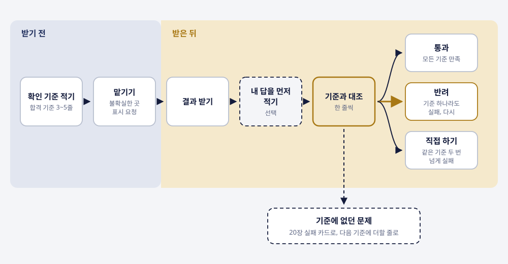
그림 10-1. 결과를 받기 전과 받은 뒤의
확인 흐름
통과는 모든 기준을 만족한 경우다. 반려는 기준 가운데 하나라도 실패한
경우인데, 이때 반려 사유는 “기준 2 실패, 수치 5개 가운데 2개가 원출처와
다름”처럼 기준 번호로 적으면 된다. 다시 맡길 때 무엇을 고쳐야 하는지
에이전트도 사람도 바로 안다. 직접 하기는 같은 기준에서 두 번 넘게
실패했거나, 고치는 데 드는 시간이 처음부터 하는 시간보다 길어 보일 때
고르는 길이다. 5장에서 본 대로, 같은 곳을 두 번 고쳐도 틀리면 세 번째
수정을 요청하기보다 메모를 고쳐 새로 맡기는 편이 낫다. 몇 번에서 손을
뗄지는 사람마다 다르겠지만, 미리 정해 두지 않으면 반려가 끝없이 이어지기
쉽다.
흐름 가운데 “내 답을 먼저 적기”는 선택으로 두었다. Buçinca 외의 인지
강제 장치를 개인 습관으로 옮긴 것이다. 보고서를 열기 전에 “3개 회사
가운데 가격이 가장 낮은 곳은 어디일 것 같은가” 같은 질문에 내 예상을 한
줄 적어 두는 식이다. 효과가 있는 장치였지만 사람들이 가장 싫어한
장치이기도 했다. 매번 하기 번거롭다면 중요한 결과에만 쓰자. 예상과
결과가 크게 갈린 경우가 바로 다시 볼 곳이다.
받은 뒤에 기준에 없던 문제를 발견하는 일도 있다. 기준에는 수치 대조만
있었는데, 막상 읽어 보니 한 회사의 정보가 2년 전 것이었다면? 이런 문제는
그 자리에서 반려 사유로 삼아도 좋다. 다만 그것으로 끝내지 말고 따로 적어
두자. 다음에 같은 일을 맡길 때 기준에 더할 줄이 되고, 20장에서 다룰 실패
카드의 재료가 된다. 기준은 처음부터 완벽할 수 없다. 받은 뒤 단에서 다음
기준을 고치는 것까지가 한 번의 확인이다.
표 10-1은 이 장에서 살펴본 연구와 함께, 과의존을 다룬 연구들을
장치별로 모은 것이다. 표 마지막 줄에는 장치 연구가 아닌 프리프린트
하나를 두었다. 긴 위임 끝에 문서가 조용히 손상된다는 결과로, 확인 기준을
왜 결과를 받기 전에 정해야 하는지 보여 주는 다른 각도의 근거다. 읽을
때는 “옮길 때의 한계” 열을 꼭 함께 보자. 대부분 실험실이나 온라인 과업,
의료 현장에서 나온 결과다.
표 10-1. 과의존을 줄인 장치와 관련 연구 비교
연구
장치 또는 주제
효과
대가·단서
과업 성격
옮길 때의 한계
Steyvers 외, Nature Machine Intelligence 2025
모델의 내부 확신을 반영하도록 설명 조정
기본 설명은 정확도 과대평가, 긴 설명은 확신만 키움. 설명을 확신에
맞추자 과대평가 간격이 줄었다
52개 전문 영역·310개 작업 환경, 19개 모델, 문서 편집 20번 위임.
프런티어 모델도 끝에는 문서 내용의 평균 25% 손상, 도구를 쓰는 에이전트
방식도 나아지지 않음. 오류는 드물지만 심각하고 조용히 쌓인다
문서가 클수록·상호작용이 길수록·방해 파일이 있을수록 나빠짐
시험용 문서 편집
25%를 실무 문서 일반의 손실률로 읽지 않는다
다음 주에 쓸 도구: 확인 기준 사전 작성표
이 장의 도구는 한 장짜리 양식이다. 위 단은 결과를 받기 전에, 아래
단은 받은 뒤에 채운다. 위 단을 채우는 데 5분, 아래 단을 채우는 데
5분이면 충분하도록 짧게 두었다.
받기 전 단의 핵심은 합격 기준 3~5줄이다. 줄마다 앞에서 말한 시험을
거치자. 옆자리 동료가 이 줄만 보고 같은 판정을 내릴 수 있는가? 그다음
줄에는 꼭 원출처와 대조할 것을 적는다. 숫자, 인용, 날짜, 고유명사처럼
틀리면 곤란해지는 것들이다. 대조할 원출처는 에이전트가 고른 출처 대신
내가 정한다. 내 예상 답은 선택 칸이다. 중요한 결과라면 한 줄 적어 두자.
마지막 줄은 맡김 메모에 불확실한 곳 표시를 요청했는지 확인하는
칸이다.
받은 뒤 단은 기준별로 통과와 실패를 적고, 기준에 없던 문제를 따로
적는 칸을 둔다. 그 칸이 채워지면 맨 아래 “다음 기준에 더할 줄”을 쓴다.
같은 종류의 일을 다시 맡길 때, 이전 작성표의 마지막 줄부터 읽고 시작하면
된다.
처음에는 모든 결과에 쓰지 말자. 이번 주에 받는 결과 가운데 남에게
넘어가거나 되돌리기 어려운 것 두세 건에만 써 보는 편이 낫다. 6장의 확인
대기열에서 앞쪽에 선 카드들이다.
표 10-2. 확인 기준 사전 작성표
단
항목
적을 내용
받기 전
맡긴 일
한 줄로. 맡김 메모가 있으면 연결
받기 전
합격 기준 (3~5줄)
줄마다 “두 사람이 같은 판정을 내릴 수 있는가”를 통과하게
받기 전
꼭 원출처와 대조할 것
숫자·인용·날짜·고유명사 가운데 무엇을, 어느 원출처와 (원출처는 내가
정한다)
받기 전
내 예상 답 (선택)
결과를 열기 전에 한 줄
받기 전
불확실한 곳 표시를 요청했나
예 / 아니오
받은 뒤
기준별 판정
기준 1 통과·실패 … 기준 5 통과·실패
받은 뒤
처리
통과 / 반려(실패한 기준 번호) / 직접 하기
받은 뒤
기준에 없던 문제
무엇이었나 (20장 실패 카드 후보)
받은 뒤
다음 기준에 더할 줄
다음에 같은 일을 맡길 때 첫 줄로
이 도구의 근거: Kim 외(불확실성 표현), Buçinca 외(먼저 판단하기),
Anthropic 에이전트 평가 안내 글(두 사람 같은 판정), Haynes
외(체크리스트, 연관) / 근거 수준: 연구 있음(장치 효과) + 이 책의
제안(개인 양식).
가상 사례. 다시 금요일 오후 4시로 돌아가 보자.
이번에는 목요일에 맡기면서 작성표 위 단을 채워 두었다고 해 보자. 기준은
5줄이었다. 3개 회사 모두 같은 항목 순서로 정리되어 있을 것. 가격 수치
가운데 5개를 골라 각 회사의 공식 가격 페이지와 대조했을 때 모두 일치할
것. 각 수치에 확인한 날짜가 붙어 있을 것. 추정한 내용에는 추정이라고
표시되어 있을 것. 요약의 주장마다 본문에 근거 문단이 있을 것.
12쪽짜리 보고서를 받은 뒤, 요약부터 읽는 대신 작성표를 펴고 기준
2부터 대조한다. 수치 5개 가운데 4개는 맞고 하나가 다르다. 기준 3에서
날짜가 빠진 표가 하나 나온다. 두 기준이 실패했으니 반려다. 반려 메모에는
“기준 2·3 실패”와 해당 쪽수를 적는다. 그리고 기준에 없던 문제 칸에
하나를 적는다. 한 회사의 할인 정책이 작년 자료였다는 것. 다음 기준에
더할 줄은 “모든 정보는 최근 3개월 안의 자료”다. 오후 4시 40분, 남은
시간은 아직 넉넉하다. 보고서의 매끄러움은 처음 열었을 때와 같다. 달라진
것은 그 매끄러움이 더는 판정을 대신하지 못한다는 것이다. 월요일 아침이
오면 이 보고서는 회의실에서 누군가의 손에 넘어간다.
11장. 결과를 넘길 때는 무엇을 확인했고 얼마나 걸렸는지 함께
적는다
실무자의 자리
2025년 10월 30일, 해외 익명 직장인 커뮤니티 Blind의 영어 게시판에
짧은 글 하나가 올라왔다. 팀 동료가 AI로 찍어 낸 문서를 계속 공유한다는
하소연이다. 글쓴이가 짚은 문제는 하나였다. 문서는 있는데, 그 안에 담긴
정보가 너무 적다는 것이다.
그 아래 달린 댓글 가운데 한 줄이 이 장의 출발점이다. “Summarizing
content that isn’t there doesn’t produce the content that is missing.”
없는 내용을 요약한다고 빠진 내용이 생기지는 않는다는 말이다. 받은 사람이
그 문서를 다시 AI에 넣어 요약해 봐도, 처음부터 비어 있던 자리는 채워지지
않는다. 결국 받은 사람이 빠진 것이 무엇인지 찾아내고, 보낸 사람에게
묻고, 때로는 직접 채워야 한다(커뮤니티 의견).
문서를 만든 사람은 아마 몇 분 만에 일을 끝냈다고 느꼈을 것이다. 그 몇
분은 어디서 아껴졌을까? 이 장면에서는 그 답이 보인다. 아낀 시간의 일부가
받은 사람의 책상으로 옮겨 갔다.
삽화. 몇 분 만에 끝낸 문서가 넘어간 뒤, 빠진 내용을 캐내는
일은 받은 사람의 책상에 남는다. 상상으로 그린 장면으로, 특정 인물이나
조직이 아니다.
아낀 시간은 받는 사람에게 간다
이 장면은 한 사람의 불평으로 끝나지 않는다. 비슷한 장면이 여러
커뮤니티에서 되풀이된다.
국내 개발자 커뮤니티의 한 토론(2026년 3월)에는 이런 댓글이 있었다.
동료가 파일이 수백 개씩 바뀐 변경 요청을 올려 놓고, 그것을 빨리 검토해
주지 않는다고 불평한다는 취지였다. 다른 댓글은 무엇이 빠졌는지를
구체적으로 짚었다. 어떤 흐름으로 구현했는지, 다른 방법은 무엇이 있었고
왜 그것을 택하지 않았는지, 왜 그 파일이 바뀌어야 했는지를 검토를
부탁하기 전에 먼저 말해야 하지 않느냐는 취지였다. 같은 토론에는 반대
방향의 댓글도 있었다. 문제의 뿌리는 도구보다 그 도구를 쓰는 사람들의
느슨한 소통 방식에 있다는 것이다.
두 댓글은 언뜻 엇갈려 보이지만, 이 책이 보기에는 같은 곳을 가리킨다.
문제가 생긴 자리는 결과를 넘기는 순간이다. 만든 쪽이 무엇을 왜 했는지를
함께 넘기지 않으면, 받은 쪽이 그것을 거꾸로 캐내야 한다. 원인을 도구에서
찾든 사람에게서 찾든, 비용을 치르는 쪽은 받은 사람이다.
왜 이런 일이 쉽게 생길까? 아래는 이 책의 추론이다. 에이전트가 오기
전에는 결과를 만드는 데 드는 시간이 결과를 확인하는 데 드는 시간보다
대개 길었다. 수백 개 파일을 바꾸려면 며칠이 걸렸고, 그 며칠 동안 만든
사람은 자기가 무엇을 왜 바꿨는지 저절로 알게 됐다. 지금은 만드는 시간이
크게 줄었는데, 확인하는 시간은 그만큼 줄지 않았다. 만든 사람이 저절로
알게 되던 것도 이제는 저절로 생기지 않는다. 그러다 보면 결과물은 있는데
그것을 설명할 사람은 없는 상태가 된다. 10장에서 본 것처럼 길고 매끄러운
결과는 받는 사람도, 만든 사람 자신도 믿게 만든다. 보낸 사람은 확인을
건너뛰었다는 사실조차 모를 수 있다.
해외 개발자 블로그 Dev.to에 2026년 9월 22일 올라온 한 글은 이 구조를
한 문장으로 적었다. “Somebody gets to feel productive while somebody
else inherits the cleanup.” 누군가는 생산적이라고 느끼고, 다른 누군가는
뒷정리를 물려받는다는 말이다. 글쓴이는 개발 자문 회사를 운영하는
사람이고, 이 글 역시 한 사람의 의견이다.
이 장면들을 받는 사람의 자리에서 다시 보자. 파일 수백 개가 바뀐 변경
요청에 설명이 몇 줄뿐이라면 무엇부터 봐야 할지 알 수 없다. 승인을
누르자니 찜찜하고, 다 보자니 하루가 간다. 받는 사람으로서는 난감한
자리다.
그렇다면 질문을 바꿔 보자. 내가 보내는 쪽이라면 어떨까? 에이전트에게
맡긴 결과를 동료에게, 팀장에게, 고객에게 넘기는 일은 이제 매일 일어난다.
내가 아꼈다고 느낀 30분은 받는 사람에게 몇 분이 되었을까?
받는 쪽이 붙인 이름, 워크슬롭
이런 결과물에는 이미 이름이 있다. 워크슬롭(workslop)이다. 코칭 서비스
회사 BetterUp이 2025년 9월 블로그에 적은 정의를 두 부분으로 나눠 옮기면
이렇다. 다듬어지고 완성된 것처럼 보이지만(“looks polished and
complete”), 실제로는 쓸모없거나 질이 낮거나 엉뚱한(“unhelpful,
low-quality, or off the mark”) AI 생성물이다.
같은 글에서 BetterUp은 자체 설문 결과로 직원의 40%가 지난 한 달 사이
워크슬롭을 받았다고 생각한다고 적었다. BetterUp이 발표한 자기 보고
설문이라는 점, 받았다고 “생각한다”는 응답이라는 점을 함께 읽어 두자. 이
설문에는 시간과 금액을 추정한 수치도 있지만, 계산 방식이 공개되지 않아
이 책에서는 쓰지 않는다.
13장은 이 현상을 확인하는 사람을 이끄는 리더 쪽에서 다룬다. 확인은
가장 보이지 않는 노동이고, 리더가 그것을 나누고 드러내야 한다는 것이다.
여기서는 같은 현상을 반대편, 결과를 보내는 실무자 쪽에서 보자. 받는 쪽이
붙인 이름을 보내는 쪽이 피하려면 무엇을 해야 하나?
정의를 다시 읽어 보면 실마리가 있다. 다듬어지고 완성된 것처럼
보인다는 앞부분은 보내는 사람의 눈에 보이는 모습이다. 쓸모없거나
엉뚱하다는 뒷부분은 받는 사람이 써 보고 나서야 아는 모습이다. 보내는
사람은 앞부분만 보고 넘기고, 받는 사람은 뒷부분을 겪는다. 그렇다면
보내는 쪽이 할 일은 넘기기 전에 뒷부분을 한 번 미리 겪어 보는 것이다. 이
결과로 받는 사람이 다음 일을 할 수 있는가, 무엇이 비어 있는가를 묻는
것이다. 그 질문의 답을 받는 사람에게 함께 건네는 장치가 뒤에서 볼 넘김
메모다.
한 가지는 미리 구분해 두자. 워크슬롭을 받은 사람이 보낸 사람을 낮게
본다는 응답은, 21장에서 다룰 AI 사용을 밝힌 사람이 받는 평판 비용과
겉보기에 비슷하다. 하지만 워크슬롭 반응은 결과물의 질에 대한 반응이고,
공개 비용은 AI를 썼다는 사실 자체에 대한 반응이다. 두 현상을 하나로 묶어
읽지 않는 편이 낫다.
받는 쪽이 이 문제를 스스로 풀기 어려운 이유도 있다. 앞의 Blind
게시글에는 이런 댓글도 달렸다. “we must adopt AI at all costs but if you
call out AI slop then you must also concede AI has failed.” 무슨 수를
써서라도 AI를 도입해야 한다는 분위기에서 AI로 만든 엉성한 결과물을
지적하면, AI가 실패했다고 인정하는 꼴이 된다는 말이다(커뮤니티 의견). AI
도입을 밀어붙이는 분위기에서는 받은 사람이 반려하기가 쉽지 않다. 반려가
동료에 대한 지적이면서 동시에 회사 방침에 대한 반대처럼 들릴 수 있기
때문이다. 받는 쪽이 돌려보내기 어렵다면, 확인을 드러내는 일은 보내는
쪽이 먼저 하는 편이 빠르다.
확인은 새로 생긴 일이다
받는 쪽의 피해가 커뮤니티의 장면이라면, 확인이 실제로 시간을 먹는다는
것은 연구와 조사가 보여 준다.
Mozannar 외의 연구(CHI 2024)는 프로그래머 21명이 코딩 보조 도구를
쓰며 과제를 하게 한 뒤, 참가자들이 자기 작업 세션을 돌아보며 매 순간
무엇을 하고 있었는지 분류하게 했다. 가장 많은 시간을 차지한 상태는
도구가 내놓은 제안을 확인하는 일로, 전체 시간의 22.4%였다. 연구진은
이렇게 덧붙였다. “Notably, this is a new programmer task introduced by
Copilot.” 이것은 도구가 프로그래머에게 새로 만들어 준 일이라는 뜻이다.
이 연구는 에이전트 이전 세대의 자동완성 도구를 쓴 21명의 기록이다.
숫자를 지금의 에이전트 업무에 그대로 옮길 수는 없다. 그래도 무엇이 새로
생겼는지는 보인다. 만드는 일 옆에 확인하는 시간이라는 새 항목이
생겼다.
규모가 큰 조사도 같은 방향을 가리킨다. 1장에서 본 BCG의 2026년 AI at
Work 조사(2026년 6월 발표한 자체 조사, n=11,749)에서 AI 결과를 검토하고
고치는 시간이 늘었다는 문항에 52%가 동의했다. 중립은 23%, 비동의는
25%였다. 자기 응답이고, 시간이 얼마나 늘었는지는 이 조사에 없다.
늘었다고 느끼는 사람이 절반을 넘는다는 것까지가 이 수치가 말하는
범위다.
확인을 건너뛰는 쪽의 숫자도 있다. 멜버른대·KPMG 조사(47개국 48,000명
이상, 2024년 11월~2025년 1월)에서는 이렇게 나왔다. 정확성을 따져 보지
않고 AI 결과에 기댄 적이 있다 66%, AI 때문에 일에서 실수한 적이 있다
56%(드물게 포함, 직장에서 AI를 쓰는 직원 기준). “드물게”까지 포함한
비율이라는 단서가 중요하다. 늘 그렇게 한다는 사람이 3분의 2라는 뜻이
아니다. 한 번이라도 그런 적이 있다는 사람이 그만큼이라는 뜻이다.
세 숫자를 나란히 놓으면 한 장면이 그려진다. 확인은 시간이 드는 새
일이다. 많은 사람이 그 시간이 늘었다고 느낀다. 그리고 꽤 많은 사람이
적어도 한 번은 그 일을 건너뛰었다. 건너뛴 확인은 사라지지 않는다. 앞
절의 장면처럼 받는 사람에게 넘어가거나, 실수가 되어 나중에 돌아온다.
여기까지 잇는 것은 이 책의 추론이다. 세 조사는 각각 다른 사람들에게 다른
질문을 했다.
표 11-1에 이 장의 숫자들을 모았다. 읽을 때는 “측정 방식”과 “쓸 수
있는 범위” 열을 먼저 보자. 같은 확인 시간을 말하는 것처럼 보여도, 어떤
숫자는 녹화한 시간이고 어떤 숫자는 느낌에 대한 응답이다.
표 11-1. 확인 시간에 관한 숫자 비교
출처
대상
시점
수치
측정 방식
성격
쓸 수 있는 범위
Mozannar 외, CHI 2024
프로그래머 21명
2024 발표, 코드 자동완성 도구
제안 확인 상태가 전체 시간의 22.4%로 가장 큼
녹화 세션을 본인이 사후 분류
동료 심사 연구
확인이 도구가 만든 새 일이라는 것. 에이전트 업무의 비율로 옮기지
않는다
BCG AI at Work 2026
11,749명
2026-06 발표
검토·수정 시간 증가 52% 동의, 23% 중립, 25% 비동의
설문 문항 동의 정도
컨설팅사 자체 조사, 자기 응답
늘었다고 느끼는 사람이 절반을 넘는다는 것. 시간의 크기는 없다
멜버른대·KPMG, 2025
47개국 48,000명 이상 중 직장에서 AI를 쓰는 직원
2024-11~2025-01 조사
정확성을 따지지 않고 기댄 적 있음 66%, AI 때문에 실수한 적 있음
56%
빈도 응답(“드물게” 포함 합산)
대학 주관 조사(KPMG 협력), 자기 응답
한 번이라도 그런 적이 있다는 비율. 습관의 비율로 쓰지 않는다
METR, 2025-07
숙련 오픈소스 개발자 16명, 과제 246개
2025년 2~6월 도구
체감 20% 빨라짐, 측정 19% 더 걸림
무작위 배정 과제의 완료 시간 측정과 사후 체감 응답
연구 기관 실험, METR 스스로 “out of date” 표기
체감과 측정이 어긋날 수 있다는 것. 지금 도구의 속도로 쓰지
않는다
BetterUp, 2025-09
미국 사무직 대상 설문
2025-09
지난 한 달 워크슬롭을 받았다고 생각함 40%
설문 응답
벤더 자체 조사, 자기 보고
받는 쪽이 이 현상을 겪는다는 것. 시간·금액 수치는 쓰지 않는다
느낀 시간은 기록이 아니다
확인 시간이 새로 생긴 일이라면, 내가 그 일에 얼마를 쓰는지는 알고
있을까? 아마 대략은 안다고 생각할 것이다. 4장에서 본 METR의 실험에서
개발자들은 20% 빨라졌다고 느꼈지만 측정된 시간은 19% 더 걸렸다(2025년
2~6월 도구, METR 스스로 낡은 결과로 표기). 남는 교훈은 속도에 관한
것보다 측정에 관한 것이다. 느낌과 기록은 다를 수 있다.
개발자 커뮤니티에서도 같은 경계가 나온다. 5년 전보다 20~50배 빨리
코드를 쓴다는 Hacker News 글(2025년 12월)에 달린 댓글 하나는 이렇게
받아쳤다. “providing numbers is rage-bait because we don’t know where
your baseline come from.” 기준선이 어디서 왔는지 모르는 숫자를 내놓는
것은 싸움을 거는 일이라는 말이다(커뮤니티 의견). 배수가 맞는지
틀리는지는 이 댓글도 모른다. 다만 기준선 없는 배수는 아무것도 증명하지
못한다는 지적은 정확하다.
이 두 장면을 확인 시간에 겹쳐 보자. “AI 덕분에 이 보고서를 30분 만에
끝냈다”는 말에는 대개 확인에 든 시간이 빠져 있다. 확인이 빠진 30분은
기준선 없는 배수와 비슷하다. 듣기에는 좋지만 기록으로는 쓸 수 없다.
그리고 그 30분 안에 확인이 정말로 빠져 있었다면, 빠진 확인은 어디로
갔을까? 앞 절의 장면들이 그 답이다.
그래서 이 책은 확인 시간을 따로 적자고 제안한다. 정밀하게 측정할
필요는 없다. 결과를 넘기기 직전에 “확인에 든 시간: 약 20분”이라고 한 줄
적는 정도면 된다. 그 한 줄이 쌓이면, 내가 느끼는 아낀 시간과 실제로
확인에 쓴 시간을 나란히 놓고 볼 수 있다. 그리고 그 한 줄을 받는 사람도
보게 하면, 확인 시간은 처음으로 남의 눈에 보이는 일이 된다.
무엇을 확인 시간으로 셀까? 정해진 정의는 없으니 이 책은 단순한 규칙
하나를 제안한다. 결과를 받은 뒤 넘기기 전까지, 그 결과를 들여다보느라 쓴
시간을 모두 센다. 원출처와 대조한 시간, 다시 읽은 시간, 틀린 곳을 고쳐
달라고 지시를 다시 쓴 시간, 반려하고 다시 받은 결과를 본 시간이 다
들어간다. 맡김 메모를 쓰는 데 든 시간은 넣지 않는다. 그것은 맡기는
시간이다. 시계를 따로 켤 필요도 없다. 확인을 시작할 때와 끝낼 때의
시각만 적어 두면 된다. 대략이라도 숫자가 있으면 느낌과 비교할 수 있고,
숫자가 없으면 느낌만 남는다.
보내는 쪽에서 확인을 보이게 한다
팀장 자리의 13장은 확인이 가장 보이지 않는 노동이라고 쓴다. 잘하면
아무 일도 일어나지 않으니 평가에도 회의에도 잡히지 않는다는 것이다.
13장이 다루는 것은 리더가 그것을 나누고 드러내는 길이다. 그렇다면 보내는
쪽이 스스로 확인을 드러낼 수는 없을까?
여기서부터는 이 책의 제안이다. 결과를 넘길 때 짧은 메모 네 줄을
붙이자. 이 책은 이것을 넘김 메모라고 부른다.
첫째 줄은 이렇게 만든 이유다. 어떤 흐름으로, 무엇을 근거로 이 결과를
만들었는지 한두 문장으로 적는다. 둘째 줄은 고려했다가 택하지 않은
것이다. 다른 방법이 있었다면 무엇이고 왜 택하지 않았는지 적는다. 셋째
줄은 확인한 것과 확인하지 않은 것이다. 수치 5개는 원출처와 대조했다,
3절의 해석은 확인하지 못했다, 하는 식으로 양쪽을 다 적는다. 넷째 줄은
확인에 든 시간이다.
앞 세 줄은 새로 만든 것이 아니다. 앞에서 본 국내 개발자 커뮤니티의
댓글들이 검토를 부탁하기 전에 먼저 말해 달라고 요구한 것, 즉 어떤
흐름으로 만들었고 다른 방법은 무엇이었고 왜 택하지 않았는지를 양식으로
옮긴 것이다. 넷째 줄은 Mozannar 외가 도구가 만든 새 일이라고 부른 확인을
받는 사람에게 보이게 하는 줄이다.
셋째 줄에서 “확인하지 않은 것”을 적는 데는 용기가 조금 필요하다.
확인하지 못한 곳이 있다고 밝히면 일을 덜 한 것처럼 보일까 걱정될 수
있다. 하지만 받는 사람에게는 그 줄이 가장 쓸모 있다. 어디부터 봐야 할지
알려 주기 때문이다. 확인하지 않은 곳이 적혀 있지 않으면, 받는 사람은
전부를 의심하거나 전부를 믿어야 한다. 둘 다 받는 사람에게 좋지 않다.
비개발 업무에서도 똑같이 쓸 수 있다. 상사에게 넘기는 분석 보고서라면
첫머리에 네 줄을 둔다. “지난 분기 고객 문의 기록을 유형별로 나눠 증가
원인을 찾았다. 월별 추이 분석도 고려했지만 자료가 2개월 치뿐이라 택하지
않았다. 유형 분류는 무작위 30건을 직접 대조했고, 원인 해석 부분은
확인하지 못했다. 확인에 약 40분이 들었다.” 상사는 이 네 줄을 읽고 원인
해석부터 보면 된다는 것을 안다.
네 줄이 늘 같은 길이일 필요는 없다. 동료에게 넘기는 작은 정리라면
넷째 줄 하나와 셋째 줄 한 구절이면 충분하다. 고객에게 나가거나 결정의
근거가 되는 결과라면 네 줄을 모두 적는 편이 낫다. 기준은 받는 사람이 그
결과로 무엇을 할 것인가다. 받은 사람이 그대로 다음 사람에게 넘길
결과라면, 넘김 메모도 함께 넘어가도록 결과 맨 앞에 붙이자. 메모가 따로
떨어져 있으면 두 번째 받는 사람에게는 닿지 않는다.
셋째 줄에 “초안은 AI가 썼다”는 말을 넣어야 할지 망설여질 수 있다.
넘김 메모는 무엇을 확인했는지를 적는 자리이고, 누가 혹은 무엇이
만들었는지를 밝히는 일은 또 다른 질문이다. 그 질문은 21장에서 따로
다룬다. 지금은 확인한 범위를 정직하게 적는 데 집중하자.
넘김 메모는 한 주가 끝날 때 한 번 더 쓰인다. 그 주에 붙인 메모의
사본을 모아 넷째 줄의 시간을 더해 보자. 그리고 그 옆에 내가 느낀 아낀
시간을 대략 적는다. 별도의 기록표를 만들 필요는 없다. 메모 사본 맨
아래에 합계 한 줄이면 충분하다. 두 숫자가 어떻게 다른지는 사람마다 다를
것이다. 다만 몇 주를 적어 보면, 어떤 일을 맡겼을 때 확인이 유난히 오래
걸리는지 보이기 시작한다. 그 일은 4장의 경계 기록표로 돌아가 분류를 다시
볼 후보다. 여럿에게 동시에 맡기고 있다면 6장의 확인 대기열에서 “넘김
완료” 열로 옮기는 카드마다 넘김 메모를 붙이면 된다. 대기열 카드의 실제
확인 시간 칸에 적은 숫자를 넷째 줄에 그대로 옮기면 되고, 예상 확인
시간과 어떻게 달랐는지도 함께 볼 수 있다.
이 메모가 받는 사람의 시간을 실제로 줄이는지를 측정한 연구는 없다.
넘김 메모는 커뮤니티가 공통으로 요구한 것과 확인이 새 일이라는 연구를
이어 붙인 이 책의 제안이다. 효과는 써 본 사람이 확인해야 한다.
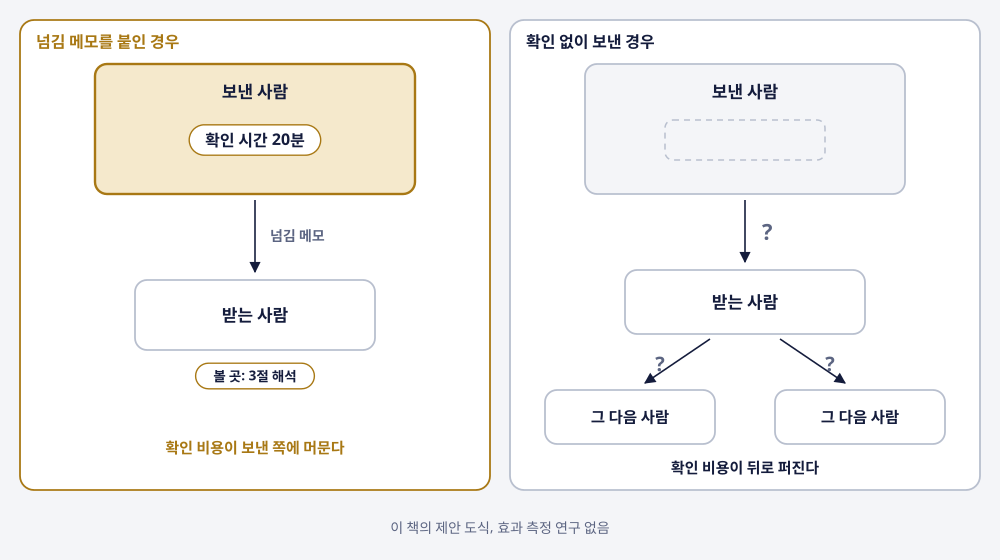
그림 11-1. 확인 비용이 어디로
가는가
다음 주에 쓸 도구: 넘김 메모
이번 주에 남에게 넘기는 결과 가운데 에이전트가 만든 것에 넘김 메모를
붙여 보자. 모든 결과에 붙일 필요는 없다. 받는 사람이 그 결과로 무언가를
결정하거나, 또 다른 사람에게 넘길 결과부터 시작하는 편이 낫다. 10장의
확인 기준 사전 작성표를 썼다면 셋째 줄은 거의 채워져 있다. 받은 뒤 단의
기준별 판정이 곧 확인한 것이고, 확인하지 못한 기준이 곧 확인하지 않은
것이다.
넷째 줄의 시간은 대략이면 된다. 분 단위로 정확할 필요는 없다. 중요한
것은 0이 아닌 숫자를 적는 습관이다. 확인에 든 시간을 적으려다 “거의 안
봤다”는 것을 알게 됐다면, 그것도 넘김 메모가 한 일이다. 그때는 넘기기
전에 확인을 더 하거나, 셋째 줄에 확인하지 않은 범위를 넓게 적자.
한 주가 끝나면 메모 사본을 모아 맨 아래 합계 줄을 채운다. 넘긴 건수,
확인 시간 합계, 내가 느낀 아낀 시간. 마지막 칸은 느낌이니 대략 적고,
앞의 두 칸과 나란히 놓고 보기만 하자.
넘김 메모를 붙이고 나면 받는 사람에게서 답이 오기도 한다. 확인하지
않았다고 적은 곳에서 문제가 나왔다는 답이라면 반가운 일이다. 메모가 제
역할을 한 것이다. 그 문제가 에이전트가 틀린 것이었다면 10장 작성표의
“기준에 없던 문제” 칸에 옮기고, 다음에 같은 일을 맡길 때 기준에 한 줄을
더하자. 반대로 확인했다고 적은 곳에서 문제가 나왔다면, 내 확인 수단이
무엇을 놓쳤는지 따로 적어 두자. 어느 쪽이든 그 한 건은 20장에서 다룰
실패 카드의 후보가 된다.
표 11-2. 넘김 메모 견본
줄
항목
견본 문장
1
이렇게 만든 이유
“지난 분기 고객 문의 기록을 유형별로 나눠 증가 원인을 찾았다.”
2
고려했다가 택하지 않은 것
“월별 추이 분석도 고려했지만 자료가 2개월 치뿐이라 택하지
않았다.”
3
확인한 것과 확인하지 않은 것
“유형 분류는 무작위 30건을 직접 대조했다. 원인 해석은 확인하지
못했다.”
4
확인에 든 시간
“약 40분”
표 11-3. 넘김 메모 주간 합계 줄
주
넘긴 건수
확인 시간 합계
내가 느낀 아낀 시간(대략)
확인이 유난히 길었던 일
이 도구의 근거: Mozannar 외(확인은 새 일), METR(체감과 측정의 차이),
국내외 개발자 커뮤니티의 공통 요구 / 근거 수준: 이 책의 제안.
22.4%라는 숫자로 돌아가 보자. 에이전트가 오기 전, 코드 자동완성
도구를 쓰던 프로그래머 21명의 하루에서 가장 큰 몫은 도구가 내놓은 제안을
확인하는 일이었다. 이 숫자는 오래된 도구와 작은 표본에서 나왔다. 지금
에이전트와 일하는 실무자의 몫이 그보다 클지 작을지는 아무도 측정하지
않았다. 그래도 이 숫자가 남긴 말은 여전히 유효하다. 확인은 도구가 만든
새 일이다. 새 일에는 시간이 든다. 넘김 메모의 넷째 줄은 그 시간을 받는
사람도 볼 수 있는 자리에 적어 두는 칸이다.
12장. 직접 해 보는 시간을 일정표에 넣어 판단력을 지킨다
실무자의 자리
튀르키예의 고등학생 약 1,000명이 수학 수업에서 GPT-4를 쓴 현장 실험이
있다(Bastani 외, PNAS 2025). 한 무리는 일반 채팅 화면을 흉내 낸
기본형을, 다른 무리는 학습을 지키도록 설계한 지시(안전장치)를 넣은
튜터형을 썼다. 문제를 푸는 동안에는 둘 다 성적이 올랐다. 기본형은 48%,
튜터형은 127%였다. 그런데 AI 접근을 뺀 뒤 혼자 풀게 하자, 기본형을 쓰던
학생들은 한 번도 AI를 쓰지 않은 학생들보다 성적이 17% 낮았다. 튜터형을
쓴 학생들에게서는 이 손실이 대체로 줄었다. 그러니 이 실험이 말하는 것은
“AI를 쓰면 성적이 떨어진다”가 아니다. 어떤 방식으로 썼느냐에 따라 AI가
빠진 뒤에 남는 실력이 달랐다는 것이다.
연구진은 안전장치가 없을 때 학생들이 연습 문제를 푸는 동안 GPT-4를
목발처럼 썼고, 그 뒤 혼자서는 더 못했다고 적었다. 목발을 짚고 걸으면
그동안은 잘 걷는다. 목발을 치우면 다리가 약해져 있다.
이 장면이 왜 실무자에게 중요할까? 10장과 11장에서 우리는 확인하는
법을 다졌다. 결과를 받기 전에 기준을 적고, 확인한 것과 확인에 든 시간을
넘겼다. 그런데 확인을 잘하려면 그 일을 할 줄 알아야 한다. 수치가
틀렸는지 알아보려면 그 수치가 어디서 나오는지 알아야 하고, 코드의 버그를
찾으려면 코드를 짤 줄 알아야 한다. 그 능력이 맡길수록 약해진다면, 확인은
무엇에 기대야 하나?
감독의 역설은 오래된 이야기다
이 걱정은 새롭지 않다. 팀장 자리에서는 13장의 절 「확인자의 판단력을
지킨다」가 확인자를 지키는 리더 쪽에서 이 역설을 적고, 14장의 절
「맡기며 잃는 이해」는 맡기는 사람의 이해가 닳을 수 있다고 추론한다. 그
역설의 뿌리부터 거슬러 올라가 보자.
뿌리는 1983년에 나온 짧은 논문이다. Bainbridge는 공정 제어실과 조종실
같은 자동화 현장을 다룬 「자동화의 역설(Ironies of Automation)」에서,
제어 시스템이 발전할수록 사람 운전자의 기여가 오히려 더 결정적일 수
있다고 썼다. 그런데 사람의 기술은 쓰지 않으면 녹슨다. 같은 논문은 몸에
익은 기술이 쓰이지 않으면 무뎌지고, 기억에서 지식을 꺼내는 능력도 얼마나
자주 쓰느냐에 달려 있다고 적었다. Bainbridge는 이렇게 적었다. “a
formerly experienced operator who has been monitoring an automated
process may now be an inexperienced one.” 자동화된 공정을 감시만 하던
숙련 운전자가 어느새 미숙한 운전자가 되어 있을 수 있다는 말이다.
40년 넘게 지나 같은 말이 다시 나왔다. 4장에서 본 Anthropic의 자사
엔지니어·연구자 조사(2025년 12월 공개)다. 이 글은 코딩 기술이 녹스는
것이 걱정스러운 이유로 “paradox of supervision”, 감독의 역설을 들었다.
회사 글은 그 내용을 이렇게 풀었다. “effectively using Claude requires
supervision, and supervising Claude requires the very coding skills that
may atrophy from AI overuse.” AI를 잘 쓰려면 감독이 필요하고, 감독하려면
바로 그 기술이 필요한데, 그 기술은 AI를 너무 많이 쓰면 녹슬 수 있다는
것이다.
같은 조사에는 면담 응답자 한 사람의 말도 실려 있다. 결과물을 만드는
일이 이렇게 쉽고 빨라지니, 무언가를 배우는 데 시간을 들이기가 점점
어려워진다는 것이다. 회사의 결론이 아니라 한 사람의 응답이다. 하지만 이
말이 가리키는 장면은 낯설지 않다. 답이 몇 초 만에 나오는데, 왜 그런지
이해하려고 30분을 들이기는 쉽지 않다.
두 글 사이에 40년이 있다. 하나는 공정 제어실, 하나는 코딩 에이전트다.
그런데 구조는 같다. 맡기면 감독이 남고, 감독에는 맡긴 그 능력이
필요하다.
이 구조를 앞 장들에 겹쳐 보면 더 분명해진다. 10장에서 결과를 받기
전에 확인 기준을 적자고 했다. 그런데 좋은 기준을 적는 일 자체가 그 일을
아는 사람의 일이다. 보고서의 어느 수치가 틀리기 쉬운지, 코드의 어느
부분이 깨지기 쉬운지 알아야 그 자리에 기준을 세울 수 있다. 판단하는 힘이
약해지면 기준은 형식 쪽으로 기운다. 항목이 다 있는가, 분량이 맞는가
같은, 누구나 볼 수 있는 기준만 남는다. 그런 기준은 통과하기 쉽고, 통과한
결과는 11장의 넘김 메모를 달고 다음 사람에게 넘어간다. 확인의 형식은
남았는데 내용이 비는 것이다. 여기까지는 이 책의 추론이지만, 감독의
역설이 실무자의 하루에서 어떤 모양으로 나타날지 짐작하게 해 준다.
먼저 녹스는 것은 판단이다
그렇다면 맡기면 무엇이 먼저 약해질까? 손기술일까, 머리일까? 항공 연구
하나가 흥미로운 답을 준다.
Casner 외(Human Factors, 2014)는 여객기 조종사 16명에게 보잉 747-400
시뮬레이터로 평범한 비행 장면과 이례적인 비행 장면을 날게 하며 수동 비행
기술이 얼마나 남아 있는지 살폈다. 결과는 예상과 조금 달랐다. 계기를
훑어보고 조종간을 다루는 손기술은 대체로 남아 있었다. 조종사들이 평소
거의 연습하지 않는다고 답한 경우에도 그랬다. 문제는 다른 곳에서 더 자주,
더 크게 나타났다. 수동 비행에 필요한 인지 과업이었다. 이 책은 이것을
비행 상황을 머릿속으로 따라가며 다음 행동을 정하는 일로 읽는다. 연구진은
이 인지 기술이 남아 있느냐는, 조종사가 자동화를 감독하는 동안 얼마나
적극적으로 관여하느냐에 달려 있을 수 있다고 적었다.
이 결과를 지식 노동으로 옮겨 보자. 여기서부터는 유비다. 조종사 16명의
시뮬레이터 결과가 보고서를 쓰는 실무자에게 같은 방식으로 일어난다는
증거는 아직 없다. 다만 옮겨 놓으면 이렇게 읽힌다. 문서를 다듬는 손, 표를
만드는 손은 오래 남을지 모른다. 먼저 녹스는 것은 이 결과가 맞는지,
다음에 무엇을 확인해야 하는지를 스스로 따라가는 판단일 수 있다. 확인에
가장 필요한 것이 바로 그 판단이다.
의료 현장에서도 비슷한 방향의 관찰이 나왔다. Budzyń 외(Lancet
Gastroenterology & Hepatology, 2025)는 폴란드의 내시경 센터 4곳에서,
AI 보조 도구가 들어오기 전과 후에 의사들이 AI 없이 한 표준 대장내시경의
기록을 비교했다. 선종 발견율이 도입 전 28.4%에서 도입 뒤 22.4%로
낮아졌다. 아찔한 숫자다. 다만 이 연구는 과거 기록을 거슬러 본 관찰
연구이고, 저자들도 AI에 계속 노출되는 것이 발견율을 낮출 “수
있다(might)”고만 적었다. 다른 이유가 끼어들었을 가능성을 지우지 못한다.
그래도 도구를 끈 뒤의 실력이 도구를 쓰기 전과 같지 않을 수 있다는
걱정을, 의사의 눈이라는 구체적인 숫자로 보여 준 연구다.
개인의 실력만 녹는 것도 아니다. 사람들이 같은 AI 조언을 함께 따르면
각자의 정확도는 오르지만 사람마다 가진 고유한 지식은 줄어든다는
실험·시뮬레이션 연구도 있다. 이 책의 말로 옮기면, 팀 전체가 같은 답을
따를 때 그 답이 틀렸다면 다르게 볼 사람이 줄어든다는 뜻이다. 이 연구를
포함해 지금까지의 근거를 표 12-1에 모았다.
표 12-1. 숙련 저하 근거 비교
연구·문서
영역
설계
대상
결과
옮길 때의 한계
Bainbridge, Automatica 1983
공정 제어·조종실
이론 논문
해당 없음
감시만 하던 숙련 운전자가 미숙해질 수 있다
실증 연구가 아닌 이론
Casner 외, Human Factors 2014
항공
시뮬레이터 실험
여객기 조종사 16명
손기술은 대체로 유지, 다음을 판단하는 인지 과업에서 문제가 더
잦음
16명, 시뮬레이터
FAA SAFO 13002, 2013
항공
안전 권고(규제 아님)
항공사 운영자
부하가 낮을 때 수동 비행 기회, 부하가 높을 때 자동화
권고 문서, 효과 측정 아님
Budzyń 외, Lancet Gastroenterol Hepatol 2025
의료(내시경)
후향 관찰
폴란드 4개 센터 환자 1,443명(도입 전 795명, 후 648명)
AI 없는 표준 내시경의 선종 발견율 28.4%→22.4%
관찰 연구, 원문도 “might”
Bastani 외, PNAS 2025
교육(고등학교 수학)
현장 실험
튀르키예 고등학생 약 1,000명
사용 중 성적 향상(기본형 48%, 튜터형 127%), 접근을 뺀 뒤 기본형 17%
낮음, 튜터형은 손실 대체로 완화
학생 대상, 직장인 일반화는 유비
Fügener 외, MIS Quarterly 2021
실험 과업
실험 + 시뮬레이션
실험 참가자
집단의 개인 정확도가 오를수록 사람 고유의 지식은 줄었다
군중 효과는 시뮬레이션 결과
Anthropic 자사 조사, 2025-12
소프트웨어 개발
설문·면담
자사 엔지니어·연구자(설문 132명, 면담 53명)
“감독의 역설”을 걱정으로 제시
한 회사, 자기 보고, 벤더
배우는 쓰기와 답을 받는 쓰기
이 장의 근거 가운데 신입·주니어에게 가장 가까운 것은 첫머리의
고등학생 실험이다. 아직 배우는 중이라는 점에서 직장의 첫 몇 년은 학생
시절과 닮았다. 그리고 이 실험은 쓰지 말라는 답을 주지 않았다. 어떻게
쓰느냐가 결과를 갈랐다.
기본형과 튜터형의 차이를 다시 보자. 기본형은 일반 채팅 화면처럼 묻는
대로 쓰게 두었고, 튜터형에는 학습을 지키도록 설계한 지시를 넣었다.
앞에서 본 대로, 안전장치가 없던 쪽의 학생들은 AI를 목발처럼 썼다. 쓰는
동안의 성적은 튜터형이 더 크게 올랐고, AI를 뺀 뒤의 손실도 튜터형에서
대체로 줄었다. 답을 받는 쓰기와 배우는 쓰기가 다른 결과를 낸 것이다.
다만 튜터형을 쓴 학생들이 AI를 뺀 뒤 정확히 얼마였는지는 논문 초록에
나와 있지 않다. “대체로 줄었다”까지만 읽자.
원문이 말한 것은 여기까지다. 이 책은 실무자가 에이전트를 쓰는 방식도
이 두 가지로 나눠 볼 수 있다고 추론한다. 이미 할 줄 아는 일을 빨리
끝내려고 맡길 때는 답을 받는 쓰기가 맞다. 아직 배우는 중인 일을 맡길
때는 배우는 쓰기가 맞다. 문제는 대부분의 맡김 메모가 그 구분 없이
쓰인다는 것이다. 배우는 중인 일도 “이거 해 줘”로 맡기면, 에이전트는
기본형처럼 답을 준다.
4장에서 경력이 짧을수록 경계 기록표의 “보류” 칸이 크다고 했고, 확인을
배우는 중인 일은 이 장의 배우는 쓰기로 넘기자고 했다. 그 “넘긴다”가
무엇인지 여기서 구체적으로 적자. 배우는 중인 일은 맡김 메모에 두 문장을
넣는다. 하나는 “바로 답하지 말고, 다음 단계로 가는 힌트부터 달라”이다.
다른 하나는 “내가 설명해 볼 테니, 틀린 곳을 질문으로 짚어 달라”이다.
예를 들어 처음 맡은 정산 업무를 배우는 2년 차 실무자라면, 결산표를
통째로 만들어 달라고 하는 대신 다음에 대조할 항목이 무엇인지 힌트만
달라고 할 수 있다.
이 두 문장은 Bastani 외의 튜터형을 흉내 낸 것이다. 개발자 커뮤니티의
습관에서도 같은 모양을 찾을 수 있다. 기술이 녹스는 것을 어떻게 막느냐는
Hacker News 토론(2026년 6월, 커뮤니티 의견)에서 한 개발자는 에이전트에게
소크라테스식으로 자기에게 문제를 내게 한다고 썼고, 다른 개발자는 새로 한
일을 블로그 글이나 동료에게 보내는 메모로 요약한다고 적었다. 질문을
받고, 받은 것을 자기 말로 다시 쓰는 습관이다. 고등학생 실험의 결과가
직장인의 이런 습관에서 같은 크기로 나타나는지는 아무도 측정하지 않았다.
그래도 두 습관이 가리키는 쪽은 같다.
국내 개발자 커뮤니티에는 학생 때부터 LLM을 접한 주니어들이 걱정된다는
취지의 댓글도 있었다. 걱정은 이해가 된다. 다만 앞의 실험을 따르면
갈림길은 어떻게 쓰느냐에 있다. 주니어에게 필요한 것은 배우는 쓰기를 고를
수 있는 문장 두 개다.
녹슬지 않는다는 목소리도 있다
여기까지만 보면 맡길수록 녹스는 것이 정해진 일처럼 보인다. 공정하게
보려면 반대 목소리도 들어 보자.
같은 Hacker News 토론에서 다른 개발자는 이렇게 썼다. “For every skill
that may atrophy, I feel like I am developing experience in 10 new
ones.” 녹슬지도 모르는 기술 하나마다 새로운 기술 10가지의 경험을 쌓고
있는 것 같다는 말이다. 국내 개발자 커뮤니티에도 오히려 공부할 것이 크게
늘어서 즐겁다는 취지의 댓글이 있었다. 둘 다 한 사람의 체감이지만, 무시할
목소리는 아니다. 에이전트를 맡기고 확인하는 일 자체가 새 기술이고, 그
기술이 자라는 동안 다른 기술이 조금 녹는 것을 손해로만 볼 수는 없다.
숙련 저하를 다룬 다른 Hacker News 토론(2026년 1월, 커뮤니티 의견)에는
녹스는 기술은 어차피 쓰지 않던 기술이라는 댓글도 있었다. 흥미롭고 손이
가는 부분을 LLM에게 넘겼다면 그것은 도구 탓이 아니라 자기 탓이라는 말이
이어진다. 이 말에도 일리가 있다. 다만 확인에 필요한 기술은 평소에는 쓰지
않다가 에이전트가 틀린 순간에만 갑자기 필요해진다는 점에서, 이 주장이
가장 들어맞지 않는 기술일 수 있다.
녹슨다는 쪽의 목소리도 있다. 한 달 전 팀이 코드를 100% AI로 생성하는
방식으로 바꿨다는 개발자는 Hacker News 댓글(2026년 11월, 커뮤니티
의견)에 이렇게 적었다. “i realized my knowledge acquisition has nearly
frozen.” 새로 배우는 것이 거의 멈췄다는 것을 깨달았다는 말이다. 국내
개발자 커뮤니티에는 하루 업무 대부분을 대화로 처리하고 코드를 한 줄도
직접 쓰지 않는 날이 많았는데도 번아웃이 왔다는 취지의 댓글이 있었다.
직접 만들지 않으니 덜 지칠 것 같은데, 남이 만든 것을 따라가며 확인하는
일이 오히려 지치게 했다는 고백으로 읽힌다.
두 쪽을 가르는 학술 연구는 이번 조사에서 찾지 못했다. 녹슨다는 쪽에는
앞에서 본 항공·의료·교육 연구가 있지만 모두 다른 영역이고, 녹지 않는다는
쪽은 커뮤니티의 체감뿐이다. 지식 노동자를 무작위로 나눠 몇 달 뒤 실력을
비교한 연구는 아직 없다. 그러니 이 장의 결론은 “반드시 녹는다”가 될 수
없다.
다만 두 목소리에 공통점은 있다. 녹지 않는다는 사람들은 새 기술을
배우고 있다고 말하고, 녹는다는 사람들은 배우는 것이 멈췄다고 말한다. 둘
다 무엇을 직접 이해하려 하느냐를 말하고 있다. 이 공통점에서 이 책의
제안이 나온다. 녹지 않게 하려면, 내가 확인하는 일 가운데 하나는 직접
이해하는 시간을 따로 두자.
부하가 낮은 날 직접 해 본다
그 시간은 언제 두면 좋을까? 항공 분야의 권고 하나가 실마리를
준다.
미국 연방항공청(FAA)은 2013년 1월 항공사 운영자에게 보내는 안전 권고
SAFO 13002를 냈다. 규제가 아닌 권고 문서다. 비행 기록 분석에서 수동 조작
오류가 늘어난 것이 확인됐다는 내용으로 시작해, 자동 비행 장치를 계속
쓰는 것은 수동 비행 지식과 기술을 강화하지 않는다고 적었다. 그리고 두
가지를 권했다. 업무 부하가 낮은 상황에서 조종사가 수동 비행 기술을 쓸
기회를 정책으로 보장할 것, 그리고 부하가 높은 상황처럼 언제 자동화를
써야 하는지를 조종사가 이해하게 할 것.
이 구분을 실무자의 일정표로 옮겨 보자. 비유로 옮기는 것이니 항공과
같은 효과를 기대하지는 말자. 마감이 몰린 주에는 에이전트에게 맡기고
확인에 집중한다. 그 대신 일정이 비교적 한가한 날에, 내가 평소 확인하는
일 가운데 하나를 처음부터 직접 해 본다. 매주 보는 주간 지표 보고서라면
한 번은 원자료부터 직접 집계해 보고, 매일 확인하는 고객 문의 답변이라면
까다로운 한 건을 직접 써 본다. 바쁜 날 직접 하겠다고 다짐하면 지키기
어렵다. 한가한 날을 미리 골라 일정표에 넣어 두는 편이 낫다.
직접 해 볼 때 가장 중요한 기록은 막힌 곳이다. 어디서 막혔는가, 무엇을
몰랐는가, 무엇을 다시 찾아봐야 했는가. 그 막힌 곳이 바로 확인할 때
놓치기 쉬운 곳이다. 직접 집계하다가 원자료의 한 항목 정의를 헷갈렸다면,
에이전트의 보고서에서도 그 항목이 틀려도 알아채지 못했을 가능성이 높다.
막힌 곳을 적어 두면 다음 확인 기준에 한 줄을 더할 수 있다. 10장의
작성표로 이어지는 길이다.
삽화. 한가한 날, 평소 확인만 하던 집계를 원자료부터 직접 해
보며 막힌 곳을 적어 둔다. 상상으로 그린 장면으로, 특정 인물이나 조직이
아니다.
직접 할 과제는 어떻게 고를까? 이 책은 세 가지를 보라고 제안한다. 내가
가장 자주 확인하는 일인가. 틀렸을 때 곤란해지는 일인가. 혼자서 한두 시간
안에 끝낼 수 있는 크기인가. 셋을 모두 만족하는 일이 하나도 없다면, 큰
일의 한 조각을 떼어 내자. 월간 보고서 전체 대신 핵심 지표 하나의 집계만,
계약서 검토 전체 대신 위약 조항 하나의 해석만 직접 해 보는 식이다.
해 보려는데 아예 손이 나가지 않는 경우도 있을 것이다. 무엇부터 해야
할지 모르겠다면, 그것도 이 계획표가 찾으려던 신호다. 그 일은 지금 내가
확인할 힘이 가장 약한 일이다. 그럴 때는 4장의 경계 기록표에서 그 일의
분류를 “맡김”에서 “함께”로 옮겨 보자. 다음 몇 번은 에이전트의 결과를
받기 전에 내가 먼저 일부를 해 보고, 그다음에 결과와 맞춰 보는 것이다. 그
일을 잘 아는 동료에게 한 번 같이 해 보자고 청하는 것도 방법이다.
그림 12-1은 이 장의 구조를 하나의 순환으로 그린 것이다. 더 맡길수록
직접 하는 일이 줄고, 직접 하는 일이 줄면 판단하는 힘이 약해지고,
판단하는 힘이 약해지면 확인이 얕아지고, 확인이 얕아지면 더 맡기게 된다.
이 순환을 연구가 하나로 보여 준 것은 아니다. 다른 영역의 연구 조각들을
이어 붙인 이 책의 도식이다. 끊는 지점은 하나만 그렸다. 부하가 낮은 날
직접 해 보는 시간이다.
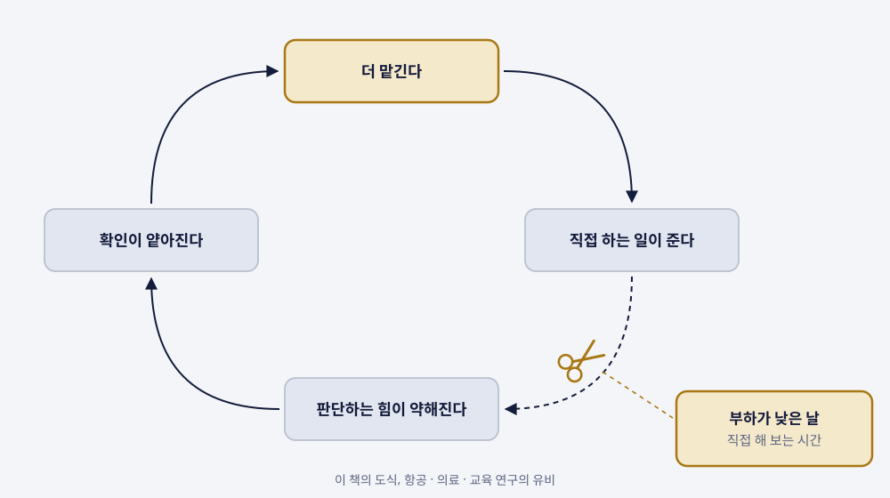
그림 12-1. 맡길수록 확인이 얕아지는
순환과 끊는 지점
다음 주에 쓸 도구: 직접 해 보는 시간 계획표
이 장의 도구는 종이 한 장짜리 4주 달력이다. 화면 대신 종이를 권하는
이유는 단순하다. 직접 해 보는 시간에 관한 계획을 에이전트 옆 화면에
두면, 막히는 순간 그 화면으로 손이 가기 쉽다.
주마다 한 줄을 채운다. 먼저 그 주에 부하가 낮을 것 같은 날을 하나
고른다. 그다음 내가 확인하는 일 가운데 직접 할 과제 하나를 고른다.
과제는 작은 편이 낫다. 한두 시간 안에 끝날 크기여야 4주를 이어 갈 수
있다. 직접 해 본 뒤에는 걸린 시간과 막힌 곳을 적고, 마지막 칸에 그 막힌
곳이 확인할 때 무엇을 놓치게 할 수 있는지 한 줄로 적는다. 이 마지막 칸이
계획표의 핵심이다. 직접 해 본 경험을 확인의 언어로 바꾸는 칸이기
때문이다.
계획표 아래에는 배우는 중인 일을 맡길 때 쓸 두 문장을 적어 둔다. 맡김
메모를 쓸 때마다 이 일이 이미 할 줄 아는 일인지, 배우는 중인 일인지 먼저
묻고, 배우는 중이라면 두 문장을 붙이자. 4주가 지나면 막힌 곳 열을 한
번에 읽어 보자. 같은 종류의 막힌 곳이 되풀이된다면, 그 일은 당분간
맡김보다 함께나 직접으로 분류를 옮겨 볼 후보다.
표 12-2. 직접 해 보는 시간 계획표 (4주)
주
부하가 낮은 날
직접 할 과제 하나 (내가 확인하는 일 가운데)
걸린 시간
막힌 곳
그 막힌 곳이 확인할 때 놓치게 할 수 있는 것
1주
2주
3주
4주
배우는 중인 일을 맡길 때 맡김 메모에 넣을 두 문장: 1. “바로 답하지
말고, 다음 단계로 가는 힌트부터 달라.” 2. “내가 설명해 볼 테니, 틀린
곳을 질문으로 짚어 달라.”
이 도구의 근거: FAA SAFO 13002(부하가 낮을 때 수동 비행, 비유),
Bastani 외(튜터형의 안전장치), 개발자 커뮤니티의 습관(질문을 받고
요약하기) / 근거 수준: 유비 + 이 책의 제안.
이 장을 덮기 전에 반례 하나를 그대로 두자. 앞의 Hacker News 토론에는
이런 댓글도 있었다. “It’s like skiing or biking, it comes back quickly.”
기술은 스키나 자전거처럼 금방 돌아온다는 것이다(커뮤니티 의견). 그 말이
맞을 수도 있다. 이 장이 든 근거는 모두 조종석과 내시경실과 고등학교
교실에서 왔고, 사무실에서 몇 달을 맡긴 사람의 판단이 어떻게 변하는지
측정한 연구는 아직 없다. 어느 쪽이 맞는지 확인할 방법은 지금으로서는
하나다. 4주 뒤 계획표의 막힌 곳 열을 읽어 보는 것이다. 그 열이 비어
있다면 반례가 맞은 것이고, 채워져 있다면 그 칸들이 내 확인의 빈틈이다.
다만 어느 쪽이든, 그 칸에 적지 않은 막힌 곳은 대화창을 닫는 순간 함께
사라진다.
여기까지가 결과를 받고 넘기는 실무자 한 사람의 확인이다. 13장부터는
자리를 팀장으로 옮긴다. 확인하는 사람이 여럿인 팀에서는 질문이 하나 더
생긴다. 그 확인은 누구의 일로 적혀 있는가?
13장. 확인하는 사람들을 이끈다
팀장의 자리
직원이 올린 보고서에 업무와 상관없는 내용이 들어 있었다. 왜 이런
내용이 들어갔느냐고 묻자, 그 보고서를 쓴 직원은 ChatGPT가 그렇게 써 줘서
그대로 냈다고 대답했다. 2026년 6월 국내 언론이 보도한 한 직장인 커뮤니티
글의 장면이다.
글쓴이는 팀장이었다. 그의 팀은 실무자부터 과장급까지 ChatGPT로 업무
대부분을 처리하고 있었고, 회사도 AI 사용을 권장하던 참이었다. 팀장은
AI를 쓰는 것 자체는 괜찮다고 했다. 다만 내용을 확인한 뒤에 보고하는 것은
당연하지 않으냐고 물었다. 직원 쪽 생각은 달랐다고 한다. 잘못된 부분을
고쳐 주는 것이 팀장이 하는 일 아니냐는 것이었다. 팀장은 할 말을 잃었고,
어떻게 이야기해야 할지 모르겠다며 글을 올렸다.
댓글은 대체로 팀장 편이었다. 일을 맡은 것은 끝까지 사람이라는 말,
AI도 엑셀 같은 업무 도구라는 말, 검수조차 하지 않는다면 그 직원은 왜
필요하냐는 말이 이어졌다고 기사는 전한다. 읽다 보면 고개가 끄덕여진다.
그런데 잠시 멈추고 생각해 보자. 이 팀에서 누가 무엇을 확인하기로 되어
있었나? 직원은 팀장이 볼 것이라고 믿었고, 팀장은 직원이 봤을 것이라고
믿었다. 둘 다 확인이 누군가의 일이라고 생각했지만, 그것이 누구의
일인지는 어디에도 적혀 있지 않았다.
이 장면에서 잘못한 사람을 고르는 일은 어렵지 않다. 어려운 것은 같은
일이 다음 주에 다시 일어나지 않게 하는 쪽이다. 종합편 부록 FAQ는 “무엇을
AI에 맡기고 무엇을 사람이 책임질까”라는 질문에 이미 대답했다. 이 장이
다루는 것은 그다음, 사람에게 둔 판단을 맡은 사람들을 이끄는 일이다.
종합편이 아직 비어 있는 질문의 둘째로 적은 바로 그 문장, 일을 맡기고
확인하는 사람들을 이끄는 리더의 일이다.
승인과 확인과 감독
먼저 앞 책들이 이미 내린 결론에서 출발하자. 종합편은 에필로그에서
15권을 정리하며 이렇게 적었다. 「승인 버튼을 누르는 것만으로는 감독이
되지 않는다.」 이 결론 뒤에는 오래된 연구 계보가 있다. 6장과 10장에서 본
Parasuraman과 Manzey의 2010년 리뷰는 자동화 편향이 초보자뿐 아니라
전문가에게도 나타나고, 훈련이나 여러 사람의 감독으로도 쉽게 막히지
않는다는 연구들을 정리했다. Ben Green은 2022년 사람의 감독을 요구하는
정책 41건을 살펴보고, 사람들이 기대한 감독 기능을 수행하지 못한다는
증거와 함께 그런 정책이 오히려 결함 있는 알고리즘 사용을 정당화한다고
지적했다. 4장에서 본 Vaccaro 등의 2024년 메타분석은 사람과 AI의 조합이
평균적으로 둘 가운데 나은 쪽 단독보다 성과가 낮았고, 특히 의사결정
과업에서 그랬다고 보고했다.
「디지털 워커의 시대」 7장은 Green의 지적을 실무 언어로 옮겨 이렇게
불렀다. 「실무 언어로 옮기면 책임 세탁이다.」 형식상 책임자를 세워 두고
실제 책임은 흐리는 일이라는 뜻이다. 이 계보는 그 책과 이 책 부록의 「더
읽을 곳」에서 더 찾아볼 수 있다. 여기서는 결론만 전제로 삼고
넘어가자.
다만 이 장에서 쓸 말 셋은 구분해 두는 편이 낫다. 일상에서는 섞어
쓰지만, 섞어 쓰면 누가 무엇을 했는지가 흐려진다.
표 13-1. 승인·확인·감독은 다른 일이다
구분
누가
무엇을
기록
흔한 실패 모습
승인
결재선의 한 사람
버튼을 누르거나 서명한다
승인 여부와 시각
읽지 않고 누른다. 누른 사람이 책임을 진 것처럼 보인다
확인
산출물을 실제로 보는 사람
내용·수치·출처가 맞는지 본다
무엇을 봤고 무엇을 고쳤는지(적혀 있다면)
아무에게도 배정되지 않는다. 가장 꼼꼼한 사람에게 쏠린다
감독
조직(리더가 설계)
확인이 누구에게 얼마나 가고 어떻게 기록되는지 정한다
배정·건수·반려·감사 결과
규정만 있고 운영하는 사람이 없다
앞 장면에 대어 보면 그 팀에는 승인은 있었다. 보고서는 팀장에게
올라갔다. 확인은 누구에게도 배정되지 않았다. 감독은 아예 없었다. 그 팀에
필요했던 것은 더 꼼꼼한 직원이나 더 엄한 팀장보다, 확인이 누구의 일인지
적어 두는 장치였다.
이 구분은 에이전트가 일하는 팀에서 더 중요해진다. 에이전트는 사람에게
승인을 자주 요청한다. 파일을 지워도 되는지, 이 메일을 보내도 되는지, 이
결제를 진행해도 되는지. 그 요청에 “예”를 누르는 것은 승인이다. 요청
화면에 보이는 정보만으로 그 행동이 맞는지 판단할 수 있는 경우는 생각보다
드물다. 정말 확인하려면 에이전트가 무엇을 근거로 그 행동을 고르게 됐는지
따라가 봐야 한다. 그 일에는 시간이 들고, 그 시간을 누가 낼지는 대개
정해져 있지 않다. 그래서 승인 요청이 많아질수록 승인은 늘고 확인은
줄어들기 쉽다. 이 연결을 직접 측정한 연구는 찾지 못했으니 이 책의
추론으로 읽자. 리더가 설계할 감독은 이 간격을 메우는 일이다.
확인은 가장 보이지 않는 노동이다
확인이라는 일에는 묘한 성질이 있다. 잘하면 아무 일도 일어나지 않는다.
틀린 수치가 걸러지고, 엉뚱한 문단이 빠지고, 보고서는 아무 문제 없이
올라간다. 산출물에는 쓴 사람의 이름만 적힌다. 확인한 사람의 이름은
어디에도 없다. 그래서 확인은 평가에도 회의에도 잘 잡히지 않는다. 확인에
하루 2시간을 쓰는 사람과 확인을 전혀 하지 않는 사람이 주간 회의에서는
똑같이 보인다.
삽화. 보고서가 올라가기 전, 누군가가 두 숫자를 대조했다.
상상으로 그린 장면으로, 특정 인물이나 조직이 아니다.
11장에서 실무자 자리의 시선으로 본 것처럼, 아낀 시간의 일부는
확인으로 간다. 그 시간은 어디서 어떻게 쓰이고 있을까? 대개는 누구의
기록표에도 적히지 않은 채 쓰인다.
이 장에서는 이 일을 확인 노동이라고 부르자. 팀원이 AI나 동료가 만든
산출물을 보고 고치는 데 쓰는 일과 시간이다. 이름을 붙이는 이유는
단순하다. 이름이 없는 일은 나눌 수도 셀 수도 없기 때문이다.
이름 없는 노동은 한쪽으로 쏠리기 쉽다. 확인을 누가 할지 정하지 않은
팀이라면 확인은 가장 꼼꼼한 사람, 가장 경력 많은 사람에게 가기 쉽다. 그
사람이 보면 실수가 적다는 것을 모두 알기 때문이다. 이 쏠림을 측정한
연구는 이번 조사에서 찾지 못했으니 여기서부터는 이 책의 추론이다.
처음에는 고마운 일이다. 몇 달이 지나면 그 사람의 하루는 남의 산출물을
보는 일로 채워지고, 자기 일은 저녁으로 밀린다. 그 사람이 지쳐 떠나면,
팀은 그제야 그 사람이 얼마나 많은 것을 막고 있었는지 알게 된다.
AI는 이 쏠림을 키울 수 있다. 만드는 비용은 크게 줄었는데 확인하는
비용은 그만큼 줄지 않았기 때문이다(이 책의 추론). 11장에서 본
워크슬롭(workslop)이 그 모습이다. 그럴듯해 보이지만 일을 진전시키지
못해서, 받는 사람에게 해석과 재작업을 넘기는 AI 산출물이다. 이 이름을
붙인 HBR 2025년 9월 글의 연구진은 BetterUp Labs와 Stanford의
연구자들이었다. 보도에 따르면 2025년 9월 미국 정규직 사무직 1,150명을
조사한 결과 약 40%가 지난 한 달 동안 워크슬롭을 받았다고 답했다. 자기
보고 설문이고, HBR 본문을 대조하지 못해 보도를 거친 수치다. 11장에서
짚었듯 BetterUp은 코칭 서비스를 파는 회사다. 워크슬롭은 누군가의 확인
노동으로 바뀐다. 보낸 사람의 시간은 줄고 받은 사람의 시간은 는다.
현장의 목소리도 같은 방향을 가리킨다. 한 개발자는 AI를 쓰는 동료들과
일하면서 읽고 리뷰하는 일이 훨씬 힘들어졌다고 썼다. 업무 티켓에 의미
없는 내용이 예전의 다섯 배쯤 들어 있고, 모두가 생산성이 크게 올랐다고
보고하는데 자기 팀이 더 많이 출시하는 것 같지는 않다는 것이다. 다른
댓글은 이런 동료가 원래 일에 더해 들어오는 자료에서 오염된 부분을 걸러
내는 일까지 떠안게 만든다고 표현했다(둘 다 Hacker News, 커뮤니티
의견).
에이전트가 늘면 그 크기는 더 커진다. 한 실무 블로그의 계산 예를 빌려
보자. 에이전트 50개가 각각 시간당 도구 호출을 20번 하면 시간당
1,000건이다. 그 가운데 10%만 사람에게 확인을 맡겨도 시간당 100건이 된다.
숫자 자체는 가정이다. 하지만 이 100건이 한 사람에게 쏠리는 팀을 상상해
보면 아찔하다.
그래서 확인은 개인의 꼼꼼함에 맡길 일이 아니라 리더가 나누고 지켜야
하는 노동이다. 나눈다는 것은 확인을 누가 몇 건 했는지 보이게 하는 데서
시작한다. 보이게 하면 쏠림이 드러나고, 드러나면 돌릴 수 있다. 여기서 이
책은 두 가지를 제안한다. 한 사람이 하루에 맡는 확인의 상한을 정하고,
확인 담당을 순환시키자는 것이다. 상한을 몇 건으로 할지, 순환 주기를
얼마로 할지에 대한 실증 연구는 없다. 팀의 일에 맞춰 정하고, 4주 뒤
기록을 보고 고치자. 상한이 있다는 사실만으로도 “이 사람에게 보내면
되겠지”라는 습관에 브레이크가 걸린다.
보이게 하는 방법은 거창하지 않아도 된다. 주간 회의 첫 5분에 지난주
누가 몇 건을 확인했는지 한 줄씩 읽는 것만으로도 시작이 된다. 처음 몇
주는 어색할 수 있다. 확인한 건수를 말하는 것이 생색처럼 들릴까 봐
망설이는 사람도 있다. 그럴수록 리더가 그 숫자를 성과처럼 다뤄 주자.
“이번 주 ○○ 님이 열두 건을 봐 줘서 고객사 보고가 한 번에 나갔다”는 한
문장이 확인 노동에 이름을 붙여 준다. 이름이 붙은 노동은 다음 주에
나누자고 말하기도 쉽다.
반려할 권리
확인 노동을 나눴다고 해 보자. 그다음 문제는 확인자가 “이건 다시 해
와”라고 말할 수 있느냐다.
Hacker News의 한 토론에서 관리자 한 사람이 이런 고민을
털어놓았다.
“I’m supposed to make sure everyone is using AI as much as possible,
after all. So, rejecting someone’s output for being low-effort AI slop
and asking for a ‘less AI’ version of it might mark me as a silly old
fashioned guy who doesn’t believe in AI.” (Hacker News, 커뮤니티
의견)
AI를 최대한 쓰게 하라는 지시를 받은 관리자가, 성의 없는 AI 산출물을
반려하면 AI를 믿지 않는 구식 관리자로 찍힐까 걱정하는 장면이다.
관리자조차 반려를 망설인다면, 그 아래에서 동료의 산출물을 확인하는
팀원은 어떨까? 동료의 결과물을 돌려보내는 일은 위로 올리는 반려보다 더
불편하다. 내일도 같이 일해야 하는 사람이기 때문이다.
커뮤니티에서는 이 문제에 대한 단순한 원칙도 자주 보인다. “Our company
heavily encourages AI use, but the work you create with it is your
responsibility.”(Hacker News, 커뮤니티 의견) AI를 적극 권하지만,
그것으로 만든 결과의 책임은 만든 사람에게 있다는 회사의 원칙이다. 앞
장면의 댓글들이 한목소리로 말한 것도 이것이었다. 맞는 말이다. 다만 이
원칙이 작동하려면 확인자가 그 책임을 되돌려 보낼 수 있어야 한다. 책임이
만든 사람에게 있다고 선언해 놓고 반려할 길을 열어 두지 않으면, 실제
책임은 다시 확인자에게 고인다.
반려가 없는 확인은 반쯤 비어 있다. 확인자가 문제를 봤는데 돌려보낼 수
없다면, 고를 수 있는 길은 둘이다. 자기가 고치거나, 못 본 척하거나. 앞의
것은 확인 노동을 더 키우고, 뒤의 것은 확인을 승인으로 되돌린다. 어느
쪽이든 리더가 원한 결과는 아니다.
Amy Edmondson은 1999년 연구에서 대인 위험을 감수해도 안전하다는 팀의
공유된 믿음, 즉 심리적 안전이 학습 행동을 거쳐 팀 성과로 이어진다고
보고했다. Edmondson이 조사한 것은 팀의 심리적 안전과 학습 행동이고, AI가
쓴 산출물을 돌려보내는 장면까지 다룬 것은 아니다. 다만 반려도 대인
위험을 지는 행동이다. 반려한 사람이 불이익을 걱정하는 팀이라면, 오류를
보고도 말하지 않을 수 있다. 이 책은 이것을 각 팀에서 확인해 볼 가설로
둔다.
그렇다면 리더는 무엇을 할 수 있을까? 이 책은 세 가지를 제안한다.
첫째, 반려를 기록하게 한다. 반려 사유를 짧게 적는 곳을 두면 반려가
개인의 기분보다 팀의 절차로 보인다.
반려 대화가 실제로 어떻게 흘러가는지 생각해 보자. 팀원 둘이 서로의
산출물을 확인하는 팀이라고 해 보자. 한 사람이 동료의 시장 조사 요약에서
출처가 없는 수치 셋을 찾았다. 이 팀에 반려 사유를 적는 곳이 없다면, 그
사람은 메신저로 조심스럽게 묻거나, 직접 출처를 찾아 고치거나, 그냥
넘긴다. 반려 사유를 적는 곳이 있다면 “출처 없는 수치 3개, 출처 확인 후
다시”라고 한 줄 적고 돌려보내면 된다. 같은 지적인데 두 번째 방식이 훨씬
덜 불편하다. 지적이 사람 대신 절차에서 나오기 때문이다.
둘째, 반려한 사람이 불이익을 받지 않는다는 것을 리더가 먼저 보인다.
리더 자신의 초안이 반려되었을 때 어떻게 반응하는지를 팀은 가장 유심히
본다. 고맙다고 말하고, 고친 판을 다시 보내는 모습을 한 번 보이는 것이
규칙을 열 번 말하는 것보다 낫다.
셋째, 반려를 AI 반대와 떼어 놓는다. “AI를 덜 쓰라”는 말 대신 “이
부분은 확인이 덜 됐다”는 말로 반려하게 하자. 반려의 대상이 도구를 쓴
여부보다 산출물의 상태라는 것을 팀이 알면, 그 관리자가 걱정한 낙인도
약해진다.
확인자의 판단력을 지킨다
확인을 잘 나누고 반려할 권리도 지켰다. 그런데 오래 확인만 하는
사람에게는 또 다른 문제가 생긴다. 판단력이 무뎌지는 것이다.
9장에서 본 Parker와 Grote의 경고처럼, 손으로 하던 일을 자동화하고
사람에게 확인만 맡기면 그 직무는 판단할 거리도 배울 거리도 줄어든 빈
직무가 될 수 있다. 7장에서 본 Lee 등의 지식노동자 319명 설문 연구(CHI
2025)는 생성형 AI가 비판적 사고의 무게를 정보 검증, 응답 통합, 과업 관리
쪽으로 옮긴다고 보고했다.
여기서부터는 두 연구를 이어 붙인 이 책의 추론이다. 두 연구 모두
확인을 오래 한 사람의 판단력을 직접 추적하지는 않았다. 다만 나란히
놓으면 역설이 보인다. 확인을 잘하려면 직접 해 본 경험에서 나온 판단력이
필요하다. 그런데 확인만 하다 보면 직접 해 볼 기회가 줄어든다. 확인자의
판단력은 확인을 거듭할수록 쌓이기보다 닳을 수 있다.
무엇이 도움이 될까? 10장에서 본 Buçinca 등의 2021년 실험이 실마리다.
AI의 추천을 보기 전에 먼저 스스로 판단을 적게 하는 인지 강제 장치는
과의존을 줄였지만, 사용자들은 이 장치를 덜 좋아했다. 효과는 있는데
귀찮다. 이 긴장이 리더의 운영 과제가 된다.
확인자의 판단력을 지키는 방법으로 이 책이 권하는 것은 둘이다. 하나는
확인자에게 직접 만드는 일을 일정 비율 계속 맡기는 것이다. 이번 주에 열
건을 확인했다면 한두 건은 처음부터 직접 해 보게 한다. 예를 들어 고객
응대 초안을 확인하는 팀원이 있다고 해 보자. 그 팀원이 일주일 내내
에이전트의 초안만 고치는 대신, 화요일 하루는 까다로운 문의 몇 건을
처음부터 직접 쓴다. 그 하루가 다음 주 확인의 기준점이 된다. 직접 써 본
사람은 초안에서 무엇이 빠졌는지 더 빨리 알아본다. 비율에 대한 근거
수치는 없다. 다만 확인만 하는 주가 몇 주씩 이어지지 않게 배분표에서
보이게 하자. 다른 하나는 AI 결과를 보기 전에 판단을 먼저 적는 습관을
리더부터 보이는 것이다. 7장에서 리더가 쓴 직접 사용 일지에는 “맡기기
전에 적은 예상” 열이 있었다. 그것이 바로 리더 자신에게 먼저 적용한 인지
강제 장치다. 리더가 그 습관을 이야기하면 팀원이 따라 할 이유가
생긴다.
판단력이 무뎌지는 것을 리더는 어떻게 알아챌까? 정해진 지표는 없다.
다만 배분표와 반려 기록에서 읽을 수 있는 신호는 있다. 한 확인자의 반려가
몇 주째 한 번도 없고, 확인에 쓰는 시간은 점점 줄어드는데 건수는 늘고
있다면 그 사람은 확인보다 승인에 가까워지고 있을 수 있다. 반려 사유가
“이상함”, “다시”처럼 점점 짧아지는 것도 신호다. 무엇이 틀렸는지 말로
설명하기 어려워졌다는 뜻일 수 있기 때문이다. 이런 신호가 보이면 그
사람을 다그치기보다 직접 만드는 일을 더 맡기는 편이 낫다. 판단력은 다시
해 볼 때 돌아온다.
목표가 무엇인지도 분명히 해 두자. 10장에서 적절한 의존의 출처로 든
Lee와 See는 2004년 논문에서 자동화에 대한 신뢰가 너무 높으면 오용이,
너무 낮으면 불사용이 생긴다고 하고, 신뢰를 시스템의 실제 능력에 맞추는
것을 목표로 삼았다. 리더의 목표도 팀의 신뢰를 실제 능력에 맞추는 데
둔다. 확인자의 판단력은 그 맞추는 일의 도구다.
리더가 확인 부담을 아래로 내릴 때
여기까지 읽고 “우리 팀원들에게 확인을 잘하라고 해야겠다”고 생각했다면
잠깐 거울을 보자. 확인 노동을 가장 많이 만드는 사람이 리더 자신일 수도
있다.
Hacker News의 워크슬롭 토론에는 이런 글이 있다.
“My manager has Claude leave a two-page worthless comment on every
single PR we submit, uses copilot to write 20-line ‘summaries’ of 5-line
changesets, and once sent my coworker and I a Claude-generated document
that was so unclear in its purpose that we both replied ‘what even is
this’ after which the manager just ghosted the slack thread and
pretended it never even happened. I’m looking for a new job.” (Hacker
News, 커뮤니티 의견)
관리자가 모든 코드 리뷰에 쓸모없는 두 쪽짜리 AI 댓글을 달고, 다섯 줄
변경에 스무 줄 요약을 붙이고, 목적을 알 수 없는 AI 문서를 보낸 뒤 질문을
받자 대화를 피했다는 이야기다. 글쓴이는 이직을 알아보고 있다고 썼다.
리더가 보낸 워크슬롭은 팀원이 보낸 것보다 무겁다. 팀원은 리더의 문서를
반려하기 어렵다. 읽고, 해석하고, 리더의 뜻을 짐작해야 한다. 그 시간은
누구의 배분표에도 적히지 않는다.
이 책은 작은 규칙 하나를 제안한다. 리더가 AI로 만든 초안을 팀에 보낼
때 “무엇을 확인했는지” 한 줄을 붙이자. “수치는 원 자료와 대조함, 3절의
제안은 아직 내 판단 전” 정도면 충분하다. 이 한 줄이 있으면 받는 사람은
어디부터 봐야 할지 안다. 그리고 리더가 확인을 아래로 내리지 않는다는
신호가 된다. 이 장의 체크리스트 마지막 사람 항목이 바로 이것이다.
리더가 왜 이런 실수를 하기 쉬운지도 짚어 두자. 1장과 11장에서 본
BCG의 2026년 조사에서 일주일에 하루 이상을 아낀다고 답한 비율은 리더
쪽이 60%로 현장 직원보다 높았다. 이 조사에서 리더는 현장 직원보다 시간을
더 많이 아낀다고 답한 쪽이고, 대개 더 바쁜 쪽이기도 하다. 아낀 시간이
확인에 쓰이지 않으면 확인은 받는 사람에게 넘어간다. 리더의 문서는 대개
여러 사람에게 한꺼번에 가니, 넘어가는 확인도 여러 배가 된다. 리더가
초안에 붙이는 한 줄은 그 곱셈을 막는 싼 방법이다.
하나 더 해 볼 만한 것이 있다. 팀원이 리더의 문서에 대해 “이건 무슨
뜻인가요?”라고 물을 수 있는 통로를 열어 두는 것이다. 그 Hacker News 글의
관리자는 질문을 받고 대화를 피했다. 그 순간 팀원들은 리더의 문서를
반려할 수 없다는 것을 배웠다. 질문을 받은 리더가 “확인이 덜 된
초안이었다, 다시 보내겠다”고 말하는 장면을 한 번 보여 주면, 앞 절에서
이야기한 반려할 권리가 위쪽으로도 작동한다는 것을 팀이 알게 된다.
체계 쪽 장치는 최소한으로
사람을 이끄는 일이 이 장의 중심이지만, 체계 쪽 장치도 몇 가지는
필요하다. BCG는 2026년 보고서에서 업무 흐름에 에이전트를 통합한 비율이
2025년보다 두 배 넘게 늘었지만 “governance (oversight, accountability)
still lags far behind the tech”라고 적었다. 감독과 책임을 정하는 일이
기술을 따라가지 못하고 있다는 말이다. 앞 책들이 자세히 다뤘으니 여기서는
리더가 점검할 최소한만 적는다. 산출물마다 위험 등급을 적어 두고, 등급이
높은 것만 사람에게 올리는 에스컬레이션. 확인을 통과한 것 가운데 일부를
정해진 주기로 다시 보는 표본 감사. 확인 결과에 동의하지 않는 사람이
이의를 제기할 수 있는 경로. 그리고 확인 기록을 확인한 사람이 아닌 다른
사람도 읽을 수 있게 적어 두는 것.
각각을 팀 언어로 옮겨 보자. 위험 등급은 “틀렸을 때 누가 곤란해지나”를
세 단계쯤으로 나눈 표시면 된다. 팀 내부 메모와 고객에게 나가는 문서와
돈이 움직이는 처리는 같은 무게로 확인할 필요가 없다. 표본 감사는 확인을
통과한 것 가운데 한 달에 몇 건을 다른 사람이 다시 보는 일이다. 확인자의
실수를 잡으려는 것보다 확인 기준이 사람마다 어긋나는지 보려는 것이다.
이의 제기 경로는 확인 결과에 동의하지 않는 사람이 누구에게 말하면 되는지
정해 두는 것이다. 기록은 “확인함” 한 단어보다 “무엇을 봤는지” 한 줄이
낫다. 종합편 에필로그도 확인한 내용을 다른 사람이 읽을 수 있게 적는
데까지를 사람의 일로 봤다.
소비자 제품도 같은 설계를 한다. Meta가 2026년 9월 내놓은 개인
에이전트 Muse는 별도의 승인 에이전트(Sentinel)가 허락해야 행동이
인터넷에 닿고, 이메일 발송이나 구매 같은 민감한 행동 전에는 사람에게
다시 묻는다. 승인과 확인을 제품의 일부로 설계한 셈이다. 회사 안의 팀이
이것보다 느슨하다면 생각해 볼 일이다.
확인 노동을 평가에 어떻게 잡을지는 22장에서 다룬다. 배분표의 건수와
반려 기록이 그때 근거 자료가 된다.
그림 13-1. 확인 노동의 흐름, 배정에서
기록과 평가까지
확인자 배정에서 세 갈래로 나뉜 뒤 모두 기록으로 모인다. 위쪽 점선은
통과한 것 가운데 일부를 다시 보는 표본 감사다.
다음 주에 쓸 도구: 확인 노동 배분표 + 체크리스트
도구는 두 부분이다. 주간 배분표는 확인 노동을 보이게 하고,
체크리스트는 그 노동이 지켜지는지 본다.
배분표는 한 주에 한 번, 확인자마다 한 줄씩 채운다. 건수는 대략이어도
된다. 중요한 것은 한 사람에게 쏠리는지, 반려가 실제로 일어나는지, 다음
순환이 정해져 있는지다. 처음 2주는 팀장이 직접 채워 보고, 그다음부터는
팀원이 각자 자기 줄을 적게 하자. 이 배분표는 14장 1on1 대화 카드의
“확인에 쓴 시간” 항목에서 다시 쓰이고, 22장 평가에서 근거 기록이
된다.
체크리스트는 사람 항목 여섯, 체계 항목 넷이다. 사람 항목은 팀장이
매주, 체계 항목은 한 달에 한 번 보면 된다. 체계 항목은 팀장이 혼자 바꿀
수 없는 것이 많다. 그런 항목에 “아니오”가 나오면 위나 IT에 요청할
목록으로 옮긴다.
표 13-2. 확인 노동 주간 배분표
확인자
이번 주 확인 건수
반려 건수
확인에 쓴 시간
이번 주 직접 만든 일
다음 순환
표 13-3. 확인 노동 체크리스트
구분
항목
예 / 아니오
사람
1. 확인자가 반려 사유를 적을 곳이 있나
사람
2. 확인이 한 사람에게 50% 넘게 쏠렸나
사람
3. 반려가 몇 번 있었고, 반려한 사람이 불이익을 받지 않았나
사람
4. 확인자가 AI 결과를 보기 전에 자기 판단을 적나
사람
5. 확인자에게 직접 만드는 일이 아직 있나
사람
6. 리더가 보낸 초안에 “무엇을 확인했는지” 한 줄이 붙어 있나
체계
7. 산출물마다 위험 등급이 적혀 있나
체계
8. 표본 감사의 비율과 주기가 정해져 있나
체계
9. 확인 결과에 이의를 제기할 경로가 있나
체계
10. 확인 기록을 확인한 사람이 아닌 다른 사람이 읽을 수 있나
2번의 50%는 실증 근거가 있는 기준이 아니다. 이 책이 출발점으로
제안하는 수치다. 팀 규모와 일의 성격에 맞게 고쳐 쓰자. 세 명인 팀과 열
명인 팀에서 같은 50%가 같은 의미일 리 없다.
4주쯤 채운 뒤 배분표를 한 번에 펼쳐 보자. 확인할 질문은 셋이다. 확인
건수가 가장 많은 사람이 4주 내내 같은가. 반려 건수가 0인 주가
이어지는가. 직접 만든 일 열이 비어 있는 사람이 있는가. 첫째가 “예”라면
순환이 작동하지 않는 것이다. 둘째가 “예”라면 산출물이 정말 좋아졌을 수도
있지만, 반려를 못 하고 있을 가능성부터 의심해 보자. 셋째가 “예”라면 그
사람은 빈 직무로 가고 있다. 세 질문 모두 리더가 배분을 다시 하라는
신호다. 팀원 개인의 문제로 읽지 말자.
그 팀장의 팀으로 돌아가 보자. 그 팀에 이 배분표가 있었다면, 그 주의
보고서 줄에는 무엇이 적혀 있었을까? 확인자 열에 직원의 이름이 있었다면
직원은 그 내용을 읽었어야 했다. 팀장의 이름이 있었다면 팀장은 보고가
올라온 뒤에야 그 내용을 발견하는 대신 처음부터 그 일을 자기 몫으로 알고
읽었을 것이다. 어느 이름이든 하나만 적혀 있었다면, 고쳐 주는 것이 팀장의
일 아니냐는 대꾸는 나오지 않았을 것이다. 그 줄이 비어 있었다는 것이 그
팀의 진짜 사고였다. 그리고 그 줄에 적힐 이름은 모두 사람이다. 사람에게는
확인 말고도 리더가 해 줘야 할 일이 있다.
14장. 사람과 에이전트를 함께 이끈다
팀장의 자리
2026년 1월, Hacker News에서 Ethan Mollick의 글 「Management as AI
superpower」를 두고 토론이 벌어졌다. 한 참여자가 에이전트 워크플로를
운영해 본 경험을 이렇게 요약했다. 효과가 있었던 방식은 에이전트를 신입
팀원처럼 대하는 것이었다고. 범위를 분명히 주고, 성공 기준을 명시하고,
중간에 결과를 점검할 지점을 두라는 것이다. 사람을 잘 관리하는 기술이
에이전트를 잘 관리하는 기술과 같다는 주장이었다. 그는 글 첫머리에 이렇게
적었다. “The limiting factor at work isn’t writing code anymore. It’s
deciding what to build and catching when things go sideways.” 이제 일의
병목은 코드를 쓰는 데 있지 않고, 무엇을 만들지 정하고 일이 어긋날 때
알아채는 데 있다는 말이다. 8장과 13장에서 본 두 가지, 고르는 일과
확인하는 일이 한 문장에 들어 있다.
같은 토론에 이런 반박이 달렸다.
“Part of being a good manager of (junior) people is teaching them
soft skills … Clear specifications and validating output is only a part
of good people management, but is 100% of good agent management.”
(Hacker News, 커뮤니티 의견)
신입을 잘 관리하는 일에는 그들에게 소프트 스킬을 가르치는 일이 들어
있다. 명확한 명세와 결과 검증은 좋은 사람 관리의 일부일 뿐이지만, 좋은
에이전트 관리의 전부다.
두 댓글은 서로 반박하는 것처럼 보이지만 실은 같은 그림의 두 면을
그린다. 사람 관리와 에이전트 관리에는 겹치는 부분이 있다. 그리고 겹치지
않는 부분이 있다. 섞인 팀, 즉 사람과 에이전트가 함께 일하는 팀의
리더에게 중요한 것은 어느 쪽이 맞느냐보다 그 경계가 어디냐다. 경계를
모르면 두 가지 실수가 생긴다. 에이전트를 사람처럼 대하며 막연히 믿는
실수, 그리고 사람을 에이전트처럼 대하며 명세와 검증만으로 이끄는 실수다.
앞의 실수는 13장에서 다뤘다. 이 장은 뒤의 실수를 다룬다.
리더의 일이 옮겨 가는 방향
먼저 이 변화가 얼마나 와 있는지 보자. 1장에서 본 BCG의 「AI at Work
2026」에서 응답자의 “nearly half”가 자기 역할이 일을 직접 하는 쪽에서
AI를 관리하고 지시하는 쪽으로 옮겨 갔다고 답했다. 이제 진짜 과제는
조직과 관리의 문제라는 것이 그 보고서의 정리였다.
Microsoft는 2025년 Work Trend Index에서 한 걸음 더 나간 예상을
내놓았다. 리더들은 5년 안에 자기 팀이 에이전트를 훈련(41%)하고
관리(36%)하게 될 것으로 내다봤고, 관리자의 51%는 AI 훈련과 역량 향상이
5년 안에 자기 팀의 핵심 책임이 될 것이라고 답했다. Microsoft는 여기서
“human-agent ratio”, 즉 사람 대 에이전트 비율이라는 새 지표가 필요하다고
주장했다. 어떤 역할과 과업에 에이전트가 몇 개 필요하고, 그 에이전트를
이끌 사람은 몇 명 필요한가를 묻는 지표다.
이 수치들도 1장에서 짚은 대로 Microsoft의 자체 조사이고, Microsoft는
에이전트 도구를 파는 회사다. 사람 대 에이전트 비율이라는 개념도
비판적으로 읽을 필요가 있다. 이 비율은 사람과 에이전트를 같은 단위로
세는 것처럼 보이게 한다. 에이전트 열 개를 이끄는 사람 한 명이라는 그림은
깔끔하지만, 그 한 사람이 다른 사람들과 맺는 관계, 그 사람이 기르는 후배,
그 사람이 막아 주는 위쪽의 압력은 이 비율에 들어가지 않는다. 이 장이
하려는 이야기는 바로 그 들어가지 않는 부분이다.
한 팀장의 한 주가 어떻게 바뀌는지 상상해 보자. 작년까지 이 팀장은
월요일 오전에 팀원 다섯과 주간 계획을 나누고, 화요일과 목요일에 1on1을
두 번씩 했다. 올해 팀에 에이전트 몇 개가 들어왔다. 고객 문의 초안을 쓰는
에이전트, 주간 지표를 모으는 에이전트, 계약서 조항을 대조하는 에이전트.
처음 몇 주는 이 에이전트들의 결과를 보고 지시문을 고치는 데 시간이 꽤
든다. 결과가 바로 나아지니 재미도 있다. 그러다 어느 날 달력을 보면
화요일 1on1 두 개가 “다음 주로”라는 메모와 함께 밀려 있다. 이 팀장이
나태해진 것은 아니다. 급해 보이는 일이 늘었을 뿐이다. BCG가 말한 역할
이동은 이런 식으로 조용히 일어난다.
앞 책도 이 자리를 그린 적이 있다. 「코드 너머의 직업들」 부록 A는
새로 생길 직업 가운데 하나로 Hybrid Manager를 꼽으며 이렇게 정의했다.
「사람 부하 직원 5~10명과 에이전트 5~10개를 동시에 관리하는 매니저.」
사람에게는 코칭과 평가를, 에이전트에게는 프롬프트 조정과 도구 권한
설정을 하는 자리다. 이 정의가 출발점으로 좋은 이유는 두 대상의 숫자가
같다는 데 있다. 사람 다섯과 에이전트 다섯. 그렇다면 리더의 시간도 반씩
나누면 될까? 이 장은 그렇지 않다고 본다.
에이전트 다섯에 드는 리더의 시간은 결과를 확인하고 지시문을 고치는
시간이다. 이 시간은 도구와 절차로 줄일 수 있다. 13장에서 본 위험 등급과
표본 감사가 그런 장치다. 사람 다섯에 드는 시간은 그렇게 줄지 않는다. 한
사람과 신뢰를 쌓는 대화는 다른 사람과의 대화로 대신할 수 없고, 한 번에
몰아서 할 수도 없다. 에이전트 쪽 시간은 설계로 줄일 수 있지만, 사람 쪽
시간은 줄이면 그만큼 관계가 얇아진다. 섞인 팀의 리더가 시간을 나눌 때
출발점은 이 비대칭이다.
겹치는 것: 범위·기준·점검
겹치는 부분부터 정리하자. 사람에게 일을 맡기든 에이전트에게 맡기든
좋은 위임에는 공통점이 있다. 무엇을 해야 하는지 범위를 정해 주고, 무엇이
잘된 결과인지 기준을 알려 주고, 중간에 확인할 지점을 둔다. Hacker News
토론의 첫 댓글이 말한 것이 이것이다. 그 댓글은 한 가지를 덧붙였다.
에이전트에게 위임을 잘못하면 사람에게라면 몇 주 걸려 드러날 실패가 몇 분
만에 드러난다는 것이다. 피드백이 그만큼 빠르다.
이 대목은 리더에게 좋은 연습 기회가 된다. 앞 책 「코드 너머의 조직」
6장은 이 변화를 이렇게 적었다. 「에이전트가 동료가 되면, 매니저의 일은
기능 분장에서 질문 설계로 옮겨간다.」 누구에게 어떤 기능을 나눠 줄지
정하던 일이, 어떤 질문을 어떻게 던질지 설계하는 일로 바뀐다는 뜻이다.
에이전트에게 범위와 기준을 적어 주는 연습은 사람에게 질문을 설계해 주는
연습이기도 하다.
다만 같은 일을 맡길 때도 사람에게 건네는 지시와 에이전트에게 건네는
지시는 길이가 다르다. 경쟁사 세 곳의 신제품 가격을 정리하는 일을
맡긴다고 해 보자. 에이전트에게는 대상 회사, 비교할 항목, 출처를 적는
형식, 끝낼 조건을 주면 된다. 사람에게는 여기에 두 가지가 더 필요하다. 왜
이 일을 하는지, 그리고 이 일로 그 사람이 무엇을 배우게 될지. 이 비교가
다음 분기 가격 회의의 근거가 된다는 것을 아는 팀원은 표를 채우다가
이상한 숫자를 발견했을 때 멈춘다. 이 일이 처음으로 경쟁사 가격 구조를
들여다볼 기회라는 것을 아는 팀원은 표 밖의 것까지 본다. 이 두 줄은
에이전트에게는 군더더기지만 사람에게는 일의 절반이다.
그런데 이 연습이 생각보다 어렵다. 7장에서 본 Fügener 등의 실험(ISR
2022)이 그 이유를 보여 준다. 사람이 AI에게 일을 넘길 때는 위임으로
이득을 거의 보지 못했고, 원인은 AI에 대한 거부감보다 자기가 무엇을
잘하고 못하는지 아는 능력, 즉 메타지식의 부족이었다. 무엇을 맡길지
고르려면 자기 능력의 경계를 알아야 하는데, 사람은 그것을 잘 모른다.
여기서부터는 이 책의 추론이다. 이 실험은 개인이 AI에게 위임하는
장면이었다. 리더가 팀원과 에이전트 사이에 일을 나누는 장면은 더
복잡하다. 리더는 자기 능력의 경계뿐 아니라 팀원 각자의 경계와 에이전트의
경계까지 알아야 한다. 7장에서 리더가 직접 써 보며 경계를 익히자고 한 것,
8장에서 업무를 과업 단위로 쪼개 경계 안·밖을 적어 보자고 한 것은 이
메타지식을 기르는 일이다.
같은 토론의 다른 댓글도 비슷한 지점을 짚었다. AI를 잘 다룬 사람들의
진짜 강점은 일반적인 관리 기술보다 틀린 결과를 빨리 알아보는 도메인
전문성이었을 것이라는 지적이다(커뮤니티 의견). 또 다른 참여자는 사람들이
AI를 쓰면 이제 도구를 이해하지 않아도 된다고 기대하지만, 실제로는 기계가
어떻게 돌아가는지 깊이 이해하는 일이 더 중요해진다고 썼다. 위임을
잘하려면 맡기는 대상을 더 잘 알아야 한다는 이야기다. 사람에게 맡길 때도
마찬가지다. 팀원 한 명 한 명이 어디까지 할 수 있는지 아는 리더가 일을 잘
나눈다.
사람에게만 해야 하는 일
이제 겹치지 않는 부분, 이 장의 중심으로 가 보자. 명세와 검증은
에이전트 관리의 전부지만, 사람 관리에서는 일부일 뿐이다. 그렇다면
나머지는 무엇인가?
커뮤니티에서 관리자가 AI로 대체될지를 두고 벌어진 토론을 보면 꽤
일관된 목록이 나온다. 2025년 5월 Hacker News의 “When will managers be
replaced by AI?” 스레드에서 사람들이 AI가 하기 어려운 관리자의 일로 꼽은
것은 책임지기, 방패 되기, 사람을 배치하고 동기를 주는 일이었다. 1장에서
본, 위에서 쏟아지는 불길로부터 팀을 막아 주는 방패 이야기도 이
스레드에서 나왔다(커뮤니티 의견).
이 책은 이 목록에서 책임을 방패에 묶고 육성과 신뢰를 더해, 사람에게만
해야 하는 일을 넷으로 본다. 육성, 신뢰, 방패, 배치다. 넷 다
에이전트에게는 하지 않아도 되거나 할 수 없는 일이다. 1장에서 본 대로
같은 토론에는 AI가 정의상 책임을 대신 질 수 없다는 지적도
있었다(커뮤니티 의견). 책임을 지는 일은 방패가 되는 일과 맞닿아
있다.
육성은 사람이 내일 더 잘하게 돕는 일이다. 에이전트는 다음 버전이
나오면 바뀌지만, 사람은 리더가 무엇을 가르쳤느냐에 따라 바뀐다. 신뢰는
실수를 털어놓아도 괜찮다고 믿게 하는 일이다. 13장에서 반려할 권리를
다루며 심리적 안전을 이야기했다. 여기서는 같은 이야기를 반복하지 않고,
범위를 넓혀 두자. 반려에 더해 “모르겠다”, “이건 AI에 맡기기 싫다”, “이번
주는 지쳤다”를 말할 수 있는 관계가 신뢰다. Edmondson이 심리적 안전이라고
부른 것, 대인 위험을 감수해도 괜찮다는 팀의 믿음이 섞인 팀에서는 이런
말들로 드러난다. 방패는 위에서 내려오는 압력, 예를 들어 근거 없는 AI
사용 목표나 갑작스러운 일정을 팀이 다 맞지 않도록 리더가 먼저 받아 내는
일이다. 배치는 누구에게 어떤 일을 맡겨야 그 사람이 자라고 팀이
굴러가는지 정하는 일이다.
넷을 한 장면씩 그려 보자. 육성부터. 에이전트가 초안을 쓰니 신입
팀원은 처음부터 문서를 써 볼 기회가 줄었다. 리더가 일주일에 한 건은
신입이 직접 쓰고 선배가 함께 고치게 정한다. 신뢰가 필요한 순간은 실수를
털어놓을 때 온다. 한 팀원이 에이전트에게 맡긴 계약 조항 대조에서 한 건을
놓쳤다고 1on1에서 먼저 말한다. 리더가 누구 잘못인지 따지기 전에 “어디서
놓쳤는지 같이 보자”고 말한다면, 다음 실수도 먼저 들을 수 있다. 방패가
되는 장면은 대개 위에서 시작된다. 위에서 다음 달까지 팀원 전원의 AI 사용
시간을 두 배로 늘리라는 목표가 내려온다. 리더가 그 목표를 그대로
전달하는 대신 “사용 시간 대신 무엇을 바꿨는지로 보고하겠다”고 위와 먼저
협상한다. 배치는 쏠림을 푸는 데서 드러난다. 확인을 가장 잘하는 팀원이 몇
달째 확인만 하고 있다. 리더가 다음 분기 새 일 하나를 그 사람에게 맡기고
확인 담당을 돌린다.
표 14-1. 사람 관리와 에이전트 관리
활동
사람
에이전트
리더가 놓치기 쉬운 것
범위·기준 정하기
필요
필요
사람에게는 이유까지 설명해야 한다
중간 점검·결과 확인
필요
필요
사람의 결과를 에이전트 결과처럼 숫자로만 본다
육성
핵심
해당 없음(다음 버전으로 바뀐다)
바쁠 때 가장 먼저 빠진다
신뢰
핵심
신뢰를 “맞추는” 대상(13장)
에이전트를 믿는 방식으로 사람을 믿거나 의심한다
방패
핵심
해당 없음
위의 AI 사용 압력을 그대로 내려보낸다
배치
핵심
등록·권한·소유자 관리(24장)
사람 배치를 에이전트 배치처럼 효율로만 정한다
이 표의 위 두 줄에서 아래 네 줄로 내려갈 때, 리더가 쓰는 도구가
바뀐다. 위 두 줄은 문서와 체크리스트로 할 수 있다. 아래 네 줄은 대화로만
할 수 있다.
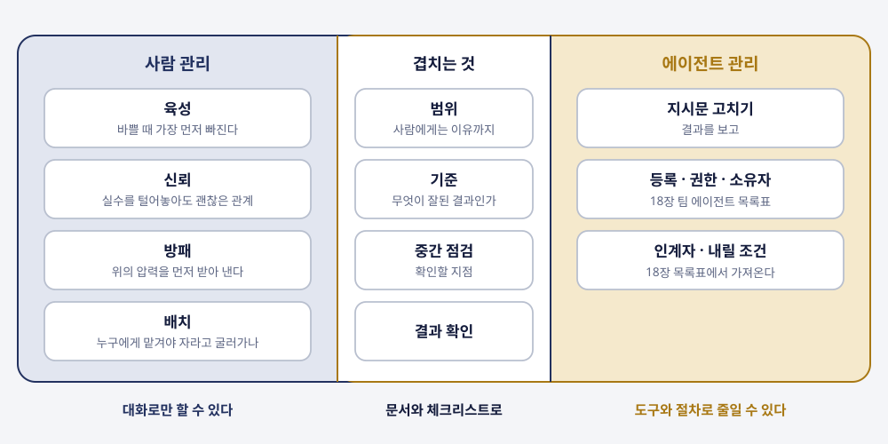
그림 14-1. 사람 관리와 에이전트 관리가
겹치는 곳과 갈리는 곳
가운데 흰 띠가 둘이 겹치는 활동이다. 맨 아래 줄은 각 영역의 일을
무엇으로 해내는지 적은 것으로, 왼쪽 영역의 일은 대화로만 할 수 있다.
에이전트를 관리하던 방식으로 사람을 관리하면 무슨 일이 생길까?
Kellogg·Valentine·Christin은 2020년 리뷰에서 알고리즘이 노동자를
통제하는 방식을 정리했다. 일을 제한하고, 추천하고, 기록하고, 점수를
매기고, 대체하고, 보상하는 여러 기제가 있었다. 저자들은 이 여섯을 일을
지시하는 기제(제한·추천), 평가하는 기제(기록·점수), 규율하는
기제(대체·보상)로 묶고 6R이라고 불렀다. 그리고 노동자들이 이런 통제에
다양한 방식으로 저항한다는 것도 함께 정리했다. 여기서부터는 이 책의
추론이다. 섞인 팀의 리더는 에이전트를 관리하려고 로그와 대시보드와
점수를 만든다. 그 도구가 편하다 보면 사람에게도 같은 도구를 쓰고
싶어진다. 누가 몇 건을 처리했는지, 응답 시간이 얼마였는지를 사람에게도
매기기 시작하면, 그 팀은 Kellogg 등이 정리한 알고리즘 통제의 장면에
가까워진다. 사람들은 점수를 맞추는 쪽으로 움직인다. 22장에서 다룰 사용량
순위표가 바로 그 사례다.
맡기며 잃는 이해
사람에게만 해야 하는 일 가운데 섞인 팀에서 새로 생기는 것이 하나
있다. 에이전트에게 맡기며 팀원이 잃는 것을 함께 보는 일이다.
Meta가 2026년 9월 개인 에이전트 Muse를 공개했을 때 Hacker News에는
700개 넘는 댓글이 달렸다. 그 가운데 한 사람의 실패담이 눈에 띈다. 가족
일정을 에이전트로 달력에 넣으려다 잘 안 돼서 씨름하는 동안 아내가 손으로
일정을 다 넣어 버렸다는 이야기다. 그는 손으로 넣은 덕분에 오히려 부부가
달력의 일정들을 더 잘 알게 됐다고 덧붙였다(커뮤니티 의견).
웃고 넘길 수 있는 이야기지만 리더에게는 생각할 거리가 있다. 손으로
하는 일에는 그 일을 아는 과정이 들어 있다. 맡기면 그 과정도 함께
넘어간다. 같은 시기 다른 Hacker News 토론에서 한 개발자는 AI에 맡겨 네
줄짜리 수정을 하는 데 토큰값 25달러와 자기 시간 1시간쯤을 썼다고 했다.
예전 같으면 직접 찾아서 고쳤을 일이었다. 그는 그 결과로 자기가 맡은
코드베이스를 더 잘 알게 되기는커녕 조금 덜 알게 됐다고 썼다(커뮤니티
의견).
이것이 항상 나쁜 것은 아니다. 모든 일을 손으로 알 필요는 없고, 맡겨서
생긴 시간에 더 중요한 것을 배울 수도 있다. 문제는 무엇을 잃는지 아무도
묻지 않을 때다. 13장에서 확인자의 판단력이 확인을 거듭하며 닳을 수
있다고 했다. 여기서부터는 두 일화에서 이어 간 이 책의 추론이다. 맡기는
사람의 이해도 같은 방식으로 닳을 수 있고, 그것은 점수나 로그에 잘 보이지
않는다. 본인도 모르는 사이에 줄어든다.
다시 손으로 해 볼 일은 어떻게 고를까? 이 책은 기준 둘을 제안한다.
하나는 틀렸을 때 그 팀원이 알아채야 하는 일이다. 에이전트의 결과를
확인하는 사람이 그 일을 직접 해 본 지 오래됐다면, 확인의 기준점이
흐려진다. 다른 하나는 그 팀원의 다음 자리에 필요한 일이다. 지금은 맡겨도
되지만 1~2년 뒤 그 사람이 팀을 이끌게 된다면 직접 알아야 할 일이 있다.
두 기준 어디에도 해당하지 않는 일은 맡긴 채로 두어도 괜찮다. 다시 손으로
할 일은 이 둘이면 충분하다. 나머지는 무엇을 손에서 놓았는지 알고 놓으면
된다.
그래서 리더가 1on1에서 물어볼 만한 질문이 생긴다. 이번 주에
에이전트에게 맡긴 일 가운데, 맡긴 뒤로 오히려 잘 모르게 된 것이 있는가?
그리고 그것이 다시 손으로 해 봐야 할 만큼 중요한가? 사람에게만 할 수
있는 질문이고, 리더가 묻지 않으면 대개 아무도 묻지 않는다.
실제 대화는 이런 식으로 흘러갈 수 있다. 팀원이 요즘 주간 지표 정리를
에이전트에게 맡기니 편하다고 말한다. 리더가 묻는다. 지난달 지표가 갑자기
꺾였던 주가 있었는데, 그 원인을 바로 설명할 수 있느냐고. 팀원이 잠시
머뭇거린다. 예전에는 직접 숫자를 모으면서 어느 거래처 주문이 빠졌는지
저절로 알았는데, 지금은 에이전트가 낸 표를 보고서야 안다고. 이 대화에서
누가 잘못한 것은 없다. 다만 둘은 함께 결정할 거리가 하나 생겼다. 지표
정리는 계속 맡기되, 한 달에 한 번은 팀원이 원 데이터를 직접 훑어보는
시간을 두기로.
섞인 팀의 한 주
그렇다면 섞인 팀의 리더는 한 주를 어떻게 써야 할까? 정해진 시간표는
없다. 다만 이 책은 순서 하나를 제안한다. 사람과의 1on1을 먼저 일정에
박고, 에이전트 점검은 그다음 자리로 보내자.
왜 이 순서일까? 에이전트 점검은 급해 보이고, 결과가 바로 보인다. 실행
실패처럼 로그에 드러나는 에이전트 오류는 빠르게 알아차릴 수 있다. 반면
팀원이 어떤 판단에서 막혔는지는 시간을 내어 물어야 알 수 있고, 그 대화의
결과도 늦게 보인다. 이번 주 1on1을 건너뛰어도 당장 무너지는 것은 없다.
그래서 바쁜 주에는 1on1이 먼저 밀린다. 그렇게 몇 주가 지나면 리더의 한
주는 에이전트를 돌보는 시간으로 채워진다. 1장에서 본 Deloitte 조사의
관리자 시간 배분, 사람 육성에 쓰는 시간이 13%에 그쳤다는 수치가 섞인
팀에서는 더 줄어들 수 있다. 1장의 시간 점검표를 섞인 팀 버전으로 다시 써
보면 그 흐름이 보일 것이다.
삽화. 팀원의 말을 듣기로 한 시간을 일정에 먼저 잡는다.
상상으로 그린 장면으로, 특정 인물이나 조직이 아니다.
이 책이 제안하는 한 주의 모양은 이렇다. 주 초에 팀원 1on1을 먼저
달력에 고정한다. 팀원이 다섯이라면 30분씩 다섯 번, 2시간 30분이다. 이
시간은 에이전트 문제가 생겨도 옮기지 않는다. 에이전트 점검은 주 중반에
한 번 묶어서 한다. 결과 표본을 보고, 지시문을 고칠지 정하고, 목록표에서
바꿀 것을 적는다. 주 끝에는 13장의 배분표를 보며 확인이 어디로 쏠렸는지
확인한다. 그리고 다음 주 1on1에서 그 이야기를 꺼낸다. 이렇게 하면
에이전트 쪽에서 본 것이 사람과의 대화로 다시 돌아온다. 순서를 거꾸로
하면 사람과의 대화가 에이전트 점검이 끝나고 생기는 빈 시간에 끼어
들어가게 된다.
위에서 사람 대 에이전트 비율 같은 숫자를 요구해 올 때도 있다. 팀에
에이전트가 몇 개이고 사람은 몇 명인지, 그 비율을 다음 분기까지 얼마로
올릴지 보고하라는 식이다. 팀장으로서는 꽤 난감한 요구다. 숫자를 올리기는
쉽다. 에이전트를 몇 개 더 등록하면 된다. 그런데 그 숫자가 올라가는 동안
1on1이 밀리고 확인 노동이 한 사람에게 쏠린다면, 보고서의 비율은 좋아지고
팀은 나빠진다. 이럴 때 방패가 된다는 것은 요구를 거절하는 것보다 숫자
옆에 다른 줄을 함께 적어 올리는 일에 가깝다. 이번 분기 1on1을 몇 번
했는지, 확인이 한 사람에게 얼마나 쏠렸는지. 그 두 줄이 비율이 놓친 것을
보여 준다.
에이전트 쪽 점검, 즉 어떤 에이전트가 팀에서 돌고 있고 누가 소유하며
떠날 때 누가 이어받는지, 언제 내릴지는 24장에서 팀 에이전트 목록표로
따로 다룬다. 이 장에서는 그 목록표에서 가져온 한 줄을 1on1 카드에 연결해
두는 데까지만 하자.
하나 더 짧게 가리켜 둘 것이 있다. 현장에서 리더들이 자주 묻는 질문
가운데 “AI 전문가 코칭을 받아도 왜 일이 안 풀리나”가 있다. 업무와 기술
사이를 번역하는 역할이 없기 때문이라는 대답은 종합편 부록 FAQ가 이미
했다. 섞인 팀에서는 그 번역을 리더가 직접 할지, 팀 안의 누군가에게
맡길지를 정해야 한다. 맡긴다면 그 사람의 번역 시간도 13장의 배분표에
적어 두자. 번역도 확인처럼 보이지 않는 노동이 되기 쉽다.
다음 주에 쓸 도구: 섞인 팀 1on1 대화 카드
1on1을 이미 하고 있는 리더라면 이 카드는 질문 몇 개를 더하는 도구다.
하지 않고 있다면 이 카드로 시작해 보자. 한 번에 30분이면 충분하다.
카드는 앞뒤 두 면이다. 앞면은 사람으로서의 일을 묻는다. 배운 것, 막힌
것, 확인에 쓴 시간, 리더가 막아 줄 것. 앞의 세 질문은 팀원이 대답하고,
마지막 질문은 리더가 약속하는 자리다. “리더가 막아 줄 것”에 무엇이
적혔는지가 이 카드에서 가장 중요하다. 방패가 리더의 일이라면, 이 항목에
적힌 것이 다음 주 리더의 할 일 목록 첫 줄이 된다. 확인에 쓴 시간은
13장의 배분표에서 가져온다.
뒷면은 에이전트와 함께 일한 사람으로서의 일을 묻는다. 맡겨서 놓친
것과 새로 할 수 있게 된 것, 다시 손으로 해 볼 일 하나, 그리고 팀
에이전트 목록(24장)에서 바꿀 것. 뒷면은 앞면보다 짧게 다루어도 된다.
다만 매번 빼먹지 말자. 뒷면이 비어 있는 주가 이어진다면 팀원이
에이전트에게 맡기는 일이 없거나, 맡긴 일에 대해 생각할 여유가 없다는
뜻이다. 둘 다 리더가 알아야 할 신호다.
표 14-2. 섞인 팀 1on1 대화 카드
면
항목
메모
앞면(사람의 일)
이번 주에 배운 것
앞면(사람의 일)
막힌 것
앞면(사람의 일)
확인에 쓴 시간(13장 배분표)
앞면(사람의 일)
리더가 막아 줄 것
뒷면(에이전트와 일한 사람)
맡겨서 놓친 것
뒷면(에이전트와 일한 사람)
맡겨서 새로 할 수 있게 된 것
뒷면(에이전트와 일한 사람)
다음 주에 다시 손으로 해 볼 일 하나
뒷면(에이전트와 일한 사람)
팀 에이전트 목록(24장)에서 바꿀 것
카드를 쓰다 보면 리더가 대답해야 할 것이 생긴다. “리더가 막아 줄
것”에 적힌 항목을 다음 1on1 첫머리에서 어떻게 됐는지 먼저 이야기하자. 그
한 마디가 카드를 설문지에서 대화로 바꾼다.
처음 몇 번은 팀원이 무엇을 적어야 할지 몰라 머뭇거릴 수 있다. 그럴
때는 리더가 자기 카드를 먼저 보여 주자. 이번 주 리더가 배운 것, 막힌 것,
맡겨서 놓친 것을 한 줄씩. 리더도 같은 질문에 대답한다는 것을 보이면
카드는 점검표보다 대화 재료가 된다. 카드는 매주 다 채울 필요가 없다.
앞면은 매번, 뒷면은 격주로 다뤄도 충분하다.
카드에 쌓인 메모는 리더의 기록이 된다. 몇 달 뒤 이 팀원이 무엇을
배웠는지, 어떤 일을 다시 손으로 익혔는지, 리더가 무엇을 막아 줬는지가
거기 적혀 있다. 이 기록을 평가에 그대로 옮기지는 말자. 다만 평가 대화를
할 때 기억 대신 기록을 보고 말할 수 있게 해 준다.
이번 주 1on1에 들어가기 전에 질문 하나를 건넨다. 카드에 없는
질문이다. 이번 1on1에서 에이전트 이야기를 모두 빼고 나면, 우리는 무슨
이야기를 하게 될까? 그 시간이 길게 이어진다면 그 팀원과의 관계는 아직
사람의 일 위에 서 있다. 금방 할 말이 떨어진다면, 그 팀원에게 리더는
어느새 에이전트를 함께 점검하는 동료가 되어 있다. 그렇게 쌓인 대화를
바탕으로 리더는 언젠가 이 사람이 잘했는지를 말해야 한다. 그때 무엇을
근거로 삼을지는 5부의 22장에서 다룬다. 그 전에 4부는 실무자의 자리로
돌아가, 15장에서 옆 사람을 도울 때 상한을 정하고 직접 해 보게 나누는
일부터 본다.
4부. 아낀 시간과 도운 일을 성과로 잇는 리더
3부는 에이전트의 결과를 확인하는 사람들과, 사람과 에이전트가 섞인
팀을 이끄는 팀장의 자리에서 끝났다. 구조를 바꾸고 도구를 들이면 두
가지가 생긴다. 하나는 시간이다. 각자의 일정에서 조금씩 비는 시간이
생긴다. 다른 하나는 부탁이다. AI를 잘 쓴다고 알려진 사람에게 옆 사람과
옆 팀의 부탁이 몰린다. 4부는 이 둘의 갈 곳을 묻는다. 아낀 시간과 도운
일은 왜 조직의 성과로 잡히지 않는가, 그리고 무엇을 정해 두어야
잡히는가.
세 자리가 정하는 것은 다르다.
실무자는 15장에서 돕는 일 기록표를 쓴다. 맨 위에 이번 주에 돕는 데 쓸
시간의 상한과 맡지 않는 일 세 줄을 적고, 요청이 들어올 때마다 한 줄씩
더한다. 결과를 대신 만들어 주기보다 옆 사람이 직접 해 보게 나누고, 1~2주
뒤 그 사람의 일에서 무엇이 바뀌었는지를 그 사람의 말로 적는다.
팀장은 16장에서 아낀 시간 사용처 선언문과 4주 기록표를 쓴다. 팀
안에서 쓰는 시간은 팀장이 정하고, 가격·인력·다른 팀 지원처럼 팀 밖으로
가져가는 결정은 언제, 누가 내리는지를 위에 묻는다. 기록표는 팀이 함께
보는 진단 기록으로 두고 평가에 쓰지 않는다.
임원은 세 가지를 정한다. 17장에서는 아낀 시간의 사용처를 어느
회의에서 무엇을 기준으로 정할지를 회사 규정으로 적는다. 18장에서는 그
시간이 다른 팀으로 건너가는 통로인 사내 인재 시장을, 사람을 내주는
관리자의 손익과 회사가 세는 숫자의 정의로 설계한다. 19장에서는 그 통로로
간 사람이 한 일, 곧 도운 일을 받은 팀이 쓴 결과 기록으로 평가 자료에
붙인다.
장 순서는 기록이 위로 올라가는 길을 따른다. 실무자의 기록표는 한 달쯤
쌓이면 팀장과 대화할 재료가 된다(15장). 팀장의 4주 기록표는 분기 경영
회의가 사용처를 정할 때 팀장이 들고 오는 자료가 된다(16장, 17장). 회의가
다른 팀 지원으로 보내기로 한 시간은 사내 인재 시장을 거쳐 옆 팀에
닿고(18장), 거기서 한 일은 받은 팀의 카드로 돌아와 도운 사람과 보낸
관리자의 평가 자료에 붙는다(19장). 5개 장 모두 지금은 회사 기록표 밖에서
일어나는 일을 기록표 안으로 들이는 이야기다.
근거의 두께는 장마다 다르다. 돕는 일의 득과 실, 측정 단위가 커질수록
작아지는 생산성 숫자, 사내 이동의 경로에 관한 연구는 꽤 두껍지만, 대부분
상관 연구이거나 생성형 AI 이전의 자료다. 선언문과 기록표, 규정과
규칙표와 카드는 모두 이 책의 제안이다. 그 경계를 해당 대목마다
밝힌다.
15장. 옆 사람을 도울 때는 상한을 정하고 직접 해 보게 나눈다
실무자의 자리
4장과 12장에서 본 Anthropic의 자사 직원 조사(2025년 12월 공개)에는 이
장의 출발점이 될 응답도 하나 있다. 면담에서 한 시니어 엔지니어는 이렇게
말했다.
“It’s been sad that more junior people don’t come to me with
questions as often, though they definitely get their questions answered
more effectively and learn faster.”
주니어들이 예전만큼 질문하러 오지 않아 서운하다는 말이다. 그런데
문장은 거기서 끝나지 않는다. 그는 주니어들이 질문에 대한 답을 분명히 더
잘 얻고 있고 더 빨리 배운다고 덧붙였다. 같은 글은 예전에 동료에게 가던
질문이 이제 Claude에게 먼저 간다는 것을 면담에서 두드러진 주제로
꼽았다.
뒷절을 빼고 읽으면 이 응답은 AI 때문에 후배가 덜 배운다는 이야기처럼
들린다. 원문은 그렇게 말하지 않았다. 주니어는 답을 잘 얻고 있고, 줄어든
것은 시니어에게 오는 질문이다. 이제부터 적는 것은 원문에 없는 이 책의
추론이다. 질문은 선배가 후배의 일을 들여다보는 몇 안 되는 창이었다. 답은
AI가 해 주더라도 질문이 덜 오면, 선배가 후배가 어디서 막히는지 볼 기회는
줄어든다. 사람을 기르는 일이 일부러 만들지 않으면 생기지 않는 일이 되어
간다는 뜻이다.
흥미로운 것은 반대쪽이다. AI를 잘 쓴다고 알려진 실무자에게는 부탁이
몰리기 쉽다. 22장의 절 「잘한다는 이유로 일만 늘지 않게」가 팀장 쪽에서
그 장면을 다룬다. 다만 이쪽으로 오는 말은 “이건 왜 이렇게 되나요?”보다
“그거 저희 것도 해 주실 수 있어요?”에 가깝다. AI를 쓴 범위와 확인한 것을
함께 밝히는 사람에게는 어떻게 했느냐는 질문과 부탁도 따라오기 쉬울
것이다. 이 책의 예상이다. 그 질문과 부탁을 어떻게 맞을지 차례로
보자.
잘 쓴다고 알려진 뒤
먼저 이 장이 기대는 근거의 지도를 펼쳐 두자. 남을 돕는 일이 돕는
사람의 경력에 무엇이 되는지는 연구가 있다. 대부분 상관 연구이고 생성형
AI 이전의 직장에서 나왔다. 반면 생성형 AI를 쓰는 관행이 동료 사이에
퍼진다는 것을 인과로 보인 연구는 이번 조사에서 찾지 못했다. 그래서 돕는
일의 득과 실을 다루는 앞부분은 근거가 비교적 두껍고, 나누면 옆 사람의
일이 바뀌는지를 다루는 뒷부분은 얇다. 상한을 적는 법, 요청 경로, 직접 해
보게 나누는 순서, 기록표는 모두 이 책의 제안이다.
이제 장면 하나를 보자.
가상 사례. 마케팅 팀의 한 실무자가 팀 회의에서 지난
분기 캠페인 반응을 AI로 정리한 분석을 발표했다. 발표가 끝나자 팀장은
다른 팀에도 보여 주자고 했다. 다음 날 옆 팀 담당자가 같은 방식으로 자기
팀 자료도 정리해 줄 수 있느냐고 메시지를 보냈다. 그 주가 끝나기 전에
비슷한 부탁이 다른 팀에서도 왔다. 하나하나는 반나절이면 끝나는 일이었다.
그는 부탁을 다 들어줬고, 원래 맡은 일은 저녁으로 밀렸다. 부탁을 들어준
일은 누구의 기록에도 남지 않았다.
이 장면에서 실무자가 한 일은 모두 대신 해 주기였다. 옆 팀 담당자는
결과를 받았지만 다음 분기에도 같은 부탁을 할 것이다. 도움이 끝나도 옆
팀의 일하는 방식은 그대로이기 때문이다. 돕는 사람의 시간은 계속 나가는데
남는 것이 없다. 찜찜한 구조다.
장면을 한 걸음씩 다시 보면 갈림길이 몇 번 있었다. 팀장이 다른 팀에도
보여 주자고 했을 때, 무엇을 보여 줄지는 정하지 않았다. 결과를 보여 줄
수도 있었고 만드는 방법을 보여 줄 수도 있었다. 옆 팀의 첫 메시지가 왔을
때, 요청은 팀장을 거치지 않고 실무자에게 바로 왔다. 팀장은 자기 팀원의
한 주가 어디로 갔는지 몰랐다. 부탁이 계속 들어올 때, 언제까지 얼마나
도울지 정한 사람이 없었다. 실무자 혼자 그때그때 판단했다. 세 갈림길 모두
실무자가 먼저 한마디를 꺼낼 수 있는 자리였다. 이 장의 처방은 그 한마디를
미리 준비해 두는 일이다.
돕는 사람이 치르는 비용이 시간만은 아니다. 11장에서 본 Blind 게시글의
댓글은, AI 도입을 밀어붙이는 분위기에서 질 낮은 AI 결과물을 지적하면
AI가 실패했다고 인정하는 꼴이 된다고 푸념했다. 해외 개발자 커뮤니티
Hacker News에서도 2026년 2월, 품질을 고집하는 엔지니어가 진행을 막는
사람으로 찍혀 부정적인 평가를 받고, 승진에서도 밀리면서 다른 사람이 넣은
AI 코드를 떠받쳐야 한다는 댓글이 나왔다. 둘 다 커뮤니티의 한 사람
목소리이고 측정된 사실은 아니다. 두 댓글은 돕는 일을 말하지 않았다. 이
두 댓글을 돕는 사람의 비용으로 읽는 것은 이 책의 해석이다. 잘 아는
사람에게 확인과 뒷수습이 몰리면 그 사람이 어떤 자리에 설 수 있는지
짐작하게 해 줄 뿐이다.
돕는 일은 경력에 득인가 실인가
맡은 일 밖에서 동료와 조직을 돕는 행동을 연구자들은 조직 시민
행동이라고 부른다. 이 장에서는 줄여서 돕는 일이라고 하자. 돕는 일이 돕는
사람의 경력에 득인지 실인지에 대해서는 방향이 다른 연구가 나란히
있다.
손해 쪽부터 보자. Bergeron과 동료들의 연구는 바로 다음 16장의 절
「남은 시간을 옆 팀으로 보내는 길」도 다른 두 연구와 함께 쓴다(그 두
연구는 표 15-1에 있다). 한 전문 서비스 회사 직원 3,680명의 기록에서,
자기 과업에 쓴 시간을 같게 놓고 봐도 돕는 일에 시간을 더 쓴 직원은
연봉이 덜 오르고 승진이 느렸다(Journal of Management 2013, 저자들은 이
결과가 가설을 “어느 정도” 지지한다고 표현했다).
이 장이 더하는 것은 반대 방향의 결과다. Podsakoff와 동료들은 168개
독립 표본, 51,235명을 아우른 메타분석에서 조직 시민 행동이 관리자가
매기는 성과 평가, 보상 배분 결정과 관련됐다고 보고했다(Journal of
Applied Psychology 2009). 메타분석에 들어간 연구는 대부분 상관 연구다.
그래서 돕는 사람이 좋은 평가를 받는 경향이 있다는 것까지는 말할 수
있어도, 도왔기 때문에 좋은 평가를 받았다고까지 말하기는 어렵다.
둘 가운데 어느 쪽이 맞을까? 두 결과를 함께 놓고 이 책은 이렇게
정리한다. 연구가 직접 보인 것이 아니라 이 책의 종합이다. 관리자의 눈에
보이는 도움은 평가에 반영되고, 시간만 잡아먹고 기록에 남지 않는 도움은
경력에 손해가 될 수 있다. Bergeron 외는 자기 과업 시간을 같게 놓았을 때
돕는 데 들어간 시간이 경력을 늦췄다는 결과였고, Podsakoff 외가 모은
결과는 관리자가 매긴 평가와의 관계였다. 앞의 것은 시간이라는 비용 쪽을,
뒤의 것은 보이는 행동이라는 평가 쪽을 봤다.
이 정리에 두 가지를 더 얹어 두자. 하나는 조직이 받쳐 준다고 느끼지
못할 때 돕는 일이 피로로 더 쉽게 이어진다는 연구이고, 다른 하나는 모두가
다른 누군가 해 주기를 바라는 일이 특정한 사람들에게 더 몰린다는 연구다.
둘 다 표 15-1에 정리했다. 앞의 가상 사례로 돌아가면, 그 실무자는 손해 쪽
조건을 거의 다 갖췄다. 시간은 저녁으로 밀렸고, 도운 일은 아무도 보지
못했고, 부탁은 계속 늘었다.
그렇다면 실무자는 무엇을 할 수 있을까? 돕지 않는 것은 답이 되기
어렵다. 이 장 첫머리의 인터뷰 응답처럼 사람에게 오는 질문이 줄어드는
곳이라면, 그나마 오는 부탁은 사람을 기를 몇 안 되는 기회이기도 하다.
남는 길은 돕는 시간에 선을 긋고, 도운 일이 보이게 남기는 것이다.
상한과 맡지 않는 일을 먼저 적는다
선을 긋는 방법을 회사 쪽에서 적어 둔 문서가 있다. Microsoft는 사내 AI
챔피언 프로그램을 운영하는 회사에 역할과 헌장을 정하는 안내를
내놓았다(벤더 문서, 날짜 표기 없음, 2026년 11월 14일 열람). 챔피언은
AI를 먼저 실험해 보고 동료에게 그 쓸모를 보여 주는 사람이다. 이 문서에서
실무자가 눈여겨볼 문장은 이것이다. “Champions don’t replace IT,
compliance, training, or Copilot adoption program teams.” 챔피언은 IT,
컴플라이언스, 교육, 도입 프로그램 팀을 대신하지 않는다는 말이다. 헌장에
넣을 항목도 적혀 있다. 챔피언이 맡지 않는 일(IT 지원, 라이선스, 보안과
컴플라이언스 승인, 정식 교육, 도입 전략, 사업 성과), 지원과 에스컬레이션
경로, 참여 기대치(예상 시간, 모임 참여, 기여 빈도)다. 예상 시간을 몇
시간으로 잡으라는 숫자는 문서에 없다.
이 문서는 제도를 설계하는 쪽에 건넨 것이다. 그래도 항목을 뜯어보면
실무자가 자기 쪽에서 먼저 적을 수 있는 것들이다. 22장의 절 「잘한다는
이유로 일만 늘지 않게」는 팀장에게 두 가지를 권한다. 새 과제를 맡기면
기존 업무를 실제로 줄이고, 옆 팀의 요청은 그 직원에게 바로 가지 않고
팀장을 거치게 하라는 것이다. 그 처방은 팀장이 움직여야 시작된다. 팀장이
먼저 움직이지 않는다면 실무자가 먼저 꺼낼 수 있다.
아래 네 가지는 연구가 검증한 처방이 아닌 이 책의 제안이다. 차례로 해
보자.
첫째, 이번 주에 돕는 데 쓸 시간의 상한을 적는다. 몇 시간이 맞는지는
근거가 없다. 처음에는 내 일정표에서 원래 일을 밀지 않고 비울 수 있는
만큼을 적자. 5장의 맡김 메모에 적은 상한을 내 시간에도 적는 것이다.
상한을 넘는 부탁은 다음 주로 넘기거나 거절한다.
둘째, 맡지 않는 일 세 줄을 적는다. 헌장의 “맡지 않는 일” 항목과
겹치는 것부터 고르면 쉽다. 계정이나 권한, 설치 같은 IT 지원, 어떤 정보를
AI에 넣어도 되는지에 대한 판단과 보안 승인, 정식 교육 과정 운영 같은
것이다. 이 일들은 내가 잘 알아도 맡지 않는 편이 낫다. 잘못 답했을 때의
책임이 나에게 오고, 원래 그 일을 맡은 팀의 자리를 흐리게 만든다.
셋째, 옆 팀의 요청이 팀장을 거쳐 오게 해 달라고 팀장에게 요청한다.
문장은 이 정도면 된다. “옆 팀에서 AI로 자료를 정리해 달라는 요청이 최근
여러 번 왔습니다. 앞으로 이런 요청은 팀장님을 거쳐 오게 해 주실 수
있을까요? 제가 돕는 시간은 주에 ○시간까지로 잡고, 도운 내용은 기록표에
적어 공유하겠습니다.” 팀장을 거치면 팀장이 그 요청을 보게 되고, 보인
도움은 평가에 들어갈 기회를 얻는다. 앞 절의 정리를 내 쪽에서 실행하는
방법이다.
넷째, 회사가 연 공식 통로가 있으면 그 통로로 받는다. 사내 지원 요청
창구일 수도 있고, 16장이 사내 인재 시장이라는 이름으로 소개하고 18장이
운영 규칙을 정하는 장치일 수도 있다. 통로를 거친 요청에는 대개 기록이
남는다.
거절하는 말도 미리 준비해 두면 덜 어렵다. 상한을 넘은 부탁에는 “이번
주는 정해 둔 시간을 다 썼다. 다음 주 화요일에 30분 같이 보자”처럼 날짜를
함께 건네자. 맡지 않는 일에 해당하는 부탁에는 “그건 보안 담당 팀이
정하는 일이라 거기로 묻는 편이 정확하다”처럼 갈 곳을 알려 주자. 거절이
문을 닫는 말로 들리지 않으려면 대신 열어 줄 문을 함께 말하는 편이 낫다.
처음 몇 번은 어색해도, 상한을 미리 말해 둔 상태라면 상대도 사정을
이해하기 쉽다.
어디까지가 실무자의 몫인지도 적어 두자. 도운 일을 평가에 어떻게
반영할지, 돕는 사람에게 어떤 보상을 줄지, 공식 통로를 어떻게 설계할지는
회사 제도가 정할 일이다. 이 부의 임원 자리 장들(17~19장)이 그 몫을
맡는다. 실무자가 할 수 있는 것은 상한과 맡지 않는 일을 먼저 적고, 요청이
보이는 길로 오게 해 달라고 말하는 데까지다.
나눈다고 옆 사람의 일이 바뀌나
상한을 정했으면 남은 질문은 그 시간에 무엇을 하느냐다. 결과를 대신
만들어 주지 않고 내 방식을 나누면 옆 사람의 일이 바뀔까? 이 질문의
근거는 앞 절보다 얇다. 있는 것부터 보자.
먼저 볼 연구는 Brynjolfsson, Li, Raymond의 고객 상담원 연구다. 16장도
쓰는 연구인데, 판에 따라 수치가 다르니 두 판을 나란히 적는다. 2023년
작업논문 개정판 초록 기준으로는 상담원 5,179명의 자료에서 생성형 AI 대화
도우미를 쓰게 된 뒤 시간당 해결 건수가 평균 14% 올랐고, 신참과 저숙련
상담원은 34% 올랐으며, 숙련자에게는 효과가 미미했다. 2025년 QJE 게재본
초록은 상담원 5,172명, 평균 15%로 적었고, 경험이 적은 상담원은 속도와
품질이 함께 올랐지만 가장 숙련된 상담원은 속도가 조금 오르고 품질이 조금
떨어졌다고 적었다.
이 장에 중요한 것은 작업논문판 초록의 한 문장이다. “We provide
suggestive evidence that the AI model disseminates the best practices of
more able workers.” AI 모델이 더 유능한 상담원의 관행을 퍼뜨린다는
시사적 증거가 있다는 것이다. 이 문장은 작업논문판 초록에만 있다. 저자들
스스로 “suggestive”라고 표현했고, 퍼뜨린 주체도 사람이 아니고 숙련자의
관행이 담긴 도구다. 사람이 사람에게 나눈 경우를 시험한 연구는
아니다.
도구만 나눠 줬을 때의 결과도 있다. Dillon과 동료들은 66개 기업의 지식
노동자 7,137명을 대상으로 한 현장 실험을 프리프린트로 냈다(동료 심사 전,
Microsoft 소속 연구자 포함). 도구를 쓴 직원은 이메일에 쓰는 시간이 주당
2시간 줄었다. 하지만 개인에게 AI를 준 것만으로는 일의 양이나 구성이
바뀌는 것을 발견하지 못했다. 한 사람의 이득이 팀으로 번지지 않는다는
현장의 목소리도 있다. Hacker News의 2026년 8월 스레드 「The AI
Productivity Gap」에는 한 엔지니어에게 생산성 이득으로 보이는 것이 팀
전체에는 생산성 손실이 될 수 있다는 문장이 나온다.
나누는 자리를 회사가 만든 사례도 있다. 국내 한 핀테크 기업은 2026년
4월부터 6월까지 12주 동안 계열사 전 직원을 대상으로 AI 실습 프로그램을
열었다고 발표했다(2026년 7월 회사 자체 발표). 직원이 주제를 제안하고
워크숍을 열고 자기 실험을 공유하는 방식이었고, 동아리 509개가 생기고 팀
안에서 AI를 퍼뜨리는 역할을 맡은 사람 142명을 정했다. 다만 발표가 내놓은
성과 지표는 참여자 만족도 하나(5점 만점에 4.9)뿐이다. 이 프로그램이
직원들의 일을 실제로 바꿨는지는 이 발표로 알 수 없다.
벤더 조사도 하나 있다. Microsoft의 Work Trend Index 2026은 10개
시장에서 AI를 쓰는 지식 노동자 20,000명을 조사했다(벤더 자체 조사, 자기
응답). 자기 응답으로 분류한 “Frontier Professional”은 나머지보다 AI 팁,
새 에이전트, 배운 것과 실수를 나눈다는 응답이 많았다(61% 대 36%). 그런데
이 분류의 기준 자체에 개인을 넘어 퍼질 수 있는 관행에 참여한다는 항목이
들어 있다. 나누는 사람이 애초에 나누는 쪽으로 분류되니, 이 수치는 나누면
앞서 나간다는 근거로 쓸 수 없다.
생산성 높은 동료의 눈에 띄는 자리에서 일하면 사람이 달라진다는 오래된
연구도 있다. 생산성 높은 동료가 자기를 볼 수 있는 자리에 있을 때
계산원의 노력이 늘었고, 그 동료를 바라볼 수만 있는 계산원에게서는 그렇지
않았다는 슈퍼마켓 연구다(표 15-1). 그러나 그 기제는 서로를 의식하는
사회적 압력이었고, 기술 관행이 퍼지는 과정을 본 연구는 아니다. 나눔의
비유로는 쓸 수 있어도 근거로 쓰기는 어렵다.
모아 보면 이렇다. 숙련자의 관행이 도구를 거쳐 신참에게 퍼졌다는
시사적 증거가 있다. 도구만 나눠 줘서는 일의 구성이 바뀌지 않았다는
결과가 있다. 사람이 사람에게 관행을 나눴을 때 일이 바뀐다는 인과 증거는
없다. 그래서 나누는 방식을 따로 정할 필요가 있다는 것이 이 책의
판단이다.
표 15-1. 돕는 일의 득과 실, 관행 확산에 관한
연구
연구
대상
결과
원문 표현의 강도
한계와 성격
Bergeron 외 (JOM 2013)
전문 서비스 회사 직원 3,680명
자기 과업 시간을 같게 놓아도 돕는 일에 시간을 더 쓴 직원의 연봉
인상이 낮고 승진이 느렸다
“some support”
한 회사의 기록 자료, AI 이전
Bolino 외 (JAP 2015)
직원 273명과 동료
조직의 지원이 낮다고 느낄 때 돕는 일과 피로의 관계가 더 강했고,
피로는 이후 돕는 행동을 줄였다
초록 진술
상관, AI 이전
Babcock 외 (AER 2017)
실험
모두가 다른 누군가 해 주기를 바라는 일에 여성이 남성보다 더
자원하고, 더 요청받고, 더 수락했다
표를 읽을 때는 셋째 열보다 넷째와 다섯째 열을 먼저 보자. 결과만
읽으면 돕고 나누는 일이 득이라는 이야기로 모이는 것 같지만, 강도와 한계
열을 보면 그 득이 어디까지 확인됐는지가 보인다.
직접 해 보게 나누는 순서
무엇을 어떻게 나눌까? 이 절의 순서도 이 책의 제안이다. 나누는 것은
완성된 결과물보다 그 결과를 만든 재료 쪽이 좋다. 5장의 맡김 메모, 10장의
확인 기준 사전 작성표, 4장의 경계 기록표 가운데 상대의 일과 닮은
부분이다. 나누기 전에 고객 정보, 회사 기밀, 개인정보, 인증 정보는
지운다. 5장에서 맡김 메모의 “넣지 않을 정보”로 적은 범위와 같다.
순서는 네 걸음이다.
첫째, 받는 사람의 일 하나를 고른다. 고르는 곳은 그 사람의 업무
목록이다. 가상 사례의 옆 팀 담당자라면 “우리 팀 자료도 정리해 달라”는
부탁 대신 “다음 분기 보고 자료를 직접 정리해 본다”가 고를 일이다.
둘째, 내 메모와 기준을 보여 주고 그 사람이 자기 일에 맞게 고쳐 쓰게
한다. 내 맡김 메모를 그대로 복사해 쓰게 하면 그 사람의 일에 맞지 않는
줄이 남는다. 무엇을 지우고 무엇을 더할지 고르는 과정이 배움이다.
셋째, 그 사람이 직접 맡기고 직접 확인한다. 돕는 쪽은 옆에서 본다.
막히면 답을 주기보다 어디를 보면 될지 힌트를 준다. 12장에서 에이전트에게
받자고 한 힌트를, 여기서는 돕는 쪽이 옆 사람에게 건넨다. 대신 해 주는
편이 몇 배는 빠를 것이다. 그래도 손을 떼고 기다리자.
넷째, 1~2주 뒤 무엇이 바뀌었는지 그 사람에게 묻고 그 사람의 말로
적는다. 바뀐 것이 없으면 없다고 적는다. 내 말로 적으면 기록이 부풀기
쉽다. 내가 보기에는 많이 도와준 것 같아도 그 사람의 일은 그대로일 수
있다.
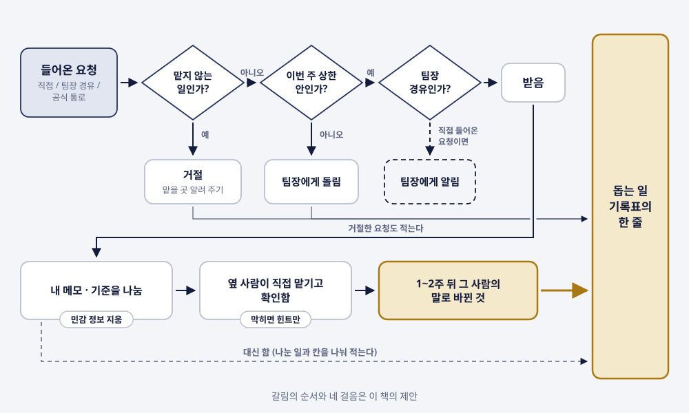
그림 15-1. 들어온 요청이 돕는 일 기록표의
한 줄이 되기까지
그림은 왼쪽의 요청에서 오른쪽의 기록표로 읽는다. 맡지 않는 일과
상한을 먼저 거르고, 받은 요청은 네 걸음을 지나 그 사람의 말로 기록표에
남는다. 거절한 요청과 대신 해 준 일도 기록표에 닿는다는 점이 이 순서에서
놓치기 쉬운 곳이다. 갈림의 순서는 이 책의 제안이다.
네 걸음 가운데 가장 지키기 어려운 것은 셋째 걸음이다. 시간이 급하면
대신 해 주고 싶어지고, 상대도 대신 해 주기를 바란다. 그럴 때 기준이 하나
있으면 버티기 쉽다. 이 책이 제안하는 기준은 이렇다. 옆 사람이 직접 해
보지 않았다면 아직 나눈 것이 아니다. 대신 해 준 일도 기록표에는 적되,
나눈 일과 칸을 나눠 적자.
삽화. 대신 해 주는 편이 빠르더라도 손을 떼고, 옆 사람이 직접
맡기고 확인하는 것을 지켜본다. 상상으로 그린 장면으로, 특정 인물이나
조직이 아니다.
가상 사례(이어서). 옆 팀 담당자의 첫 메시지에
실무자가 결과 대신 이렇게 답했다고 해 보자. 내가 캠페인 자료를 정리할 때
쓴 맡김 메모와 확인 기준을 고객 정보를 지우고 보내 줄 테니, 다음 분기
자료는 직접 맡겨 보고 막히는 곳이 있으면 30분 같이 보자고. 옆 팀
담당자는 처음 한 번은 더 오래 걸린다. 메모의 어느 줄을 자기 팀 자료에
맞게 바꿔야 하는지 몰라 한두 번 되물을 것이다. 대신 다음 분기에는 같은
부탁을 하지 않을 수 있다. 실무자의 기록표에는 나눈 메모 한 장과 함께 본
30분이 남는다. 결과가 그렇게 된다는 보장은 없다.
이 기준이 앞의 상한과도 맞물린다. 대신 해 주는 도움은 부탁할 때마다
같은 시간이 든다. 직접 해 보게 나눈 도움은 처음에는 시간이 더 들지만
같은 부탁이 다시 오지 않을 가능성이 생긴다. 상한 안에서 오래 버티려면
뒤쪽을 늘리는 편이 낫다. 이것도 검증된 효과가 아닌 이 책의 예상이다.
다음 주에 쓸 도구: 돕는 일 기록표
이 장의 도구는 한 주에 한 장씩 쓰는 기록표다. 맨 위에는 이번 주
상한과 맡지 않는 일 세 줄을 적는다. 그 아래에 요청이 들어올 때마다 한
줄을 더한다.
열은 7개다. 날짜, 요청한 사람(이름 대신 역할로), 들어온 경로(직접,
팀장 경유, 공식 통로), 처리(받음, 거절, 팀장에게 돌림), 무엇을
나눴나(맡김 메모, 확인 기준, 경계 기록표 가운데 무엇을, 민감 정보를
지우고), 쓴 시간, 그 사람의 일에서 바뀐 것. 마지막 열은 요청을 받은 날
채우지 않는다. 1~2주 뒤 그 사람에게 물어서 그 사람의 말로 채운다.
거절한 요청도 적자. 거절한 줄이 쌓여야 상한이 실제로 지켜졌는지
보이고, 맡지 않는 일로 돌려보낸 요청이 어느 팀으로 갔는지도 남는다. 대신
해 준 일은 “무엇을 나눴나” 칸에 “대신 함”이라고 적는다. 그 줄이 늘어나면
앞 절의 순서로 바꿀 때가 된 것이다.
한 주가 끝나면 쓴 시간을 더해 상한과 비교한다. 상한을 넘었다면 다음
주 상한을 고치지 말고 먼저 왜 넘었는지 한 줄 적자. 한 달쯤 쓰면 기록표를
들고 팀장에게 가 보자. 요청이 어떤 경로로 들어오는지, 어떤 요청을
거절했는지, 누구의 일이 바뀌었는지를 보여 주면 셋째 제안이던 요청 경로
이야기를 훨씬 구체적으로 꺼낼 수 있다. 기록표는 팀장과 대화할 재료다.
평가에 쓸지는 회사 제도가 정할 일이다.
표 15-2. 돕는 일 기록표 (주간)
맨 위
적을 것
이번 주 상한
주 ○시간
맡지 않는 일 1
계정·권한·설치 같은 IT 지원
맡지 않는 일 2
AI에 넣어도 되는 정보에 대한 판단과 보안 승인
맡지 않는 일 3
정식 교육 과정 운영
날짜
누구(역할로)
들어온 경로
처리
무엇을 나눴나
쓴 시간
그 사람의 일에서 바뀐 것(그 사람의 말로)
예: ○월 ○일
옆 팀 기획 담당
팀장 경유
받음
맡김 메모와 확인 기준(고객 정보 지움)
1시간
(2주 뒤) “주간 보고 초안을 직접 맡기고, 수치는 기준표로
대조한다”
예: ○월 ○일
다른 팀 신입
직접
팀장에게 돌림
예: ○월 ○일
다른 팀 담당
공식 통로
거절(맡지 않는 일 2)
해당 없음
예: ○월 ○일
같은 팀 동료
직접
받음
대신 함
30분
없음
이 도구의 근거: Bergeron 외·Podsakoff 외(돕는 일의 득과 실이 함께
있다), Microsoft 챔피언 헌장 안내(맡지 않는 일과 참여 기대치 항목),
Brynjolfsson 외(관행 확산의 시사적 증거, 작업논문판) / 근거 수준: 이
책의 제안
옆 사람에게 쓰는 법을 설명해 주는 일은 한동안 계속될 것이다. 남는
선택은 그 일을 어떻게 할지다. 상한 없이 대신 해 주며 저녁을 내줄 수도
있고, 상한 안에서 옆 사람이 직접 해 보게 나누고 그 사람의 말을 기록표에
남길 수도 있다. 뒤의 길은 처음 몇 주 더 느리다. 그 대신 몇 주가 지나면
기록표의 마지막 열에 다른 사람의 말이 한 줄씩 쌓인다. 주간 보고를 직접
맡기게 됐다는 말, 수치는 이제 기준표로 대조한다는 말 같은 것들이다.
2026년 2월 Hacker News의 한 댓글은, 적어도 도구에 따로 투자하지 않은
회사에서는 이 일이 여전히 이렇다고 적었다. “explaining reasonably easy
ways to get good outcomes out of Codex or Claude Code is still necessary
evangelism” 좋은 결과를 얻는 비교적 쉬운 방법을 설명해 주는 일은 여전히
필요한 전도라는 말이다. 그렇게 쌓인 기록표를 들고 찾아갈 팀장의 자리에는
질문이 하나 더 있다. 팀원들이 AI로 아낀 시간은 어디로 가는가. 다음
16장이 그 질문을 다룬다.
16장. 개인이 아낀 시간을 조직의 성과로 잇는다
팀장의 자리
AI를 정기적으로 쓰는 현장 직원 가운데 42%는 일주일에 하루 이상을
아낀다. 1장과 13장에서도 짧게 본 BCG의 「AI at Work 2026」(2026년 6월
발표)의 수치다. 이 조사를 자세히 읽는 곳은 이 장이다. 만약 같은 팀 다섯
명이 모두 하루씩 아꼈다면 합계는 매주 5인일이다. 이것은 가정이다. 조사는
정기 사용자의 42%가 그렇다고 답했다는 것이고, 한 팀의 다섯 명이 모두
그렇다는 뜻은 아니다. 각자의 일정에서 조금씩 비는 시간을 팀이 한 가지
일에 모아 쓸 수 있는지도 별개의 문제다. 그런데 같은 보고서의 바로 다음
문장이 이렇다.
“But 66% still receive limited or no guidance on what to do with time
they save, and more than half don’t redirect it to strategic work.”
(BCG, AI at Work 2026)
현장 직원 가운데 66%는 아낀 시간을 어디에 쓸지 지침을 거의 또는 전혀
받지 못했다. 그리고 58%는 그 시간을 더 전략적인 일로 돌리지 않는다고
답했다. 리더 쪽은 이 비율이 36%다. 시간 절약에 관한 이 수치들은
정기적으로 AI를 쓰는 응답자 8,989명을 기준으로 한 것이다.
보고서는 이 대목에 제목을 붙여 두었다. “The time individuals save
doesn’t automatically translate into value.” 개인이 아낀 시간은 저절로
가치가 되지 않는다는 말이다. 너무 당연해서 그냥 지나치기 쉬운 문장이다.
하지만 9장에서 일을 없애고 줄이는 데 공을 들인 리더라면 이 문장이 꽤
아프게 읽힌다. 줄여 놓은 시간이 어디로 갔는지 모른다면, 줄인 일은 무엇을
위한 것이었을까?
같은 보고서에는 리더 쪽 숫자도 있다. “Leaders have the biggest AI
payoff, with 60% saving at least a workday per week.” 리더의 60%가
일주일에 하루 이상을 아낀다고 답했다. 현장 직원보다 높은 비율이다.
그렇다면 질문을 리더 자신에게 먼저 돌려 볼 수 있다. 지난주 리더가 아낀
하루는 어디로 갔는가? 1장의 시간 점검표를 써 본 리더라면 이 질문에 어느
정도 대답할 수 있을 것이다. 대답하기 어렵다면, 팀원에게 같은 질문을 하기
전에 리더 자신의 기록표부터 채워 보자.
현장에서 리더들이 묻는 질문에도 이것이 있다. “AI가 시간을 절반으로
줄이면 남은 시간에 팀원은 무엇을 하나.” 종합편 부록 FAQ는 이 질문에
사용처를 나눠 대답했다. 이 장은 그 내용을 다시 쓰지 않는다. 대신 그
앞뒤를 본다. 아낀 시간은 왜 조직의 숫자에 잘 잡히지 않는가. 사용처를
선언한 뒤 그것이 지켜지는지는 무엇으로 보는가. 그리고 그 시간을 팀
밖으로 가져가는 결정은 누구의 몫인가.
개인의 효과와 조직의 숫자 사이
먼저 크기를 보자. 개인이나 과업 단위로 측정한 연구들은 꽤 큰 효과를
보고한다. Noy와 Zhang이 2023년 Science에 실은 실험에서는 대졸 전문직
453명이 직무 관련 글쓰기 과제를 할 때 ChatGPT를 쓴 쪽의 소요 시간이 40%
줄고 품질은 18% 올랐다. 15장에서 두 판을 나란히 적은
Brynjolfsson·Li·Raymond의 고객 상담원 연구는 작업논문 기준으로 평균 14%,
경험이 적은 상담원은 34% 올랐다. 이 장에서 눈여겨볼 점은 효과가 고르지
않았다는 것이다. 숙련도가 가장 높은 상담원은 속도가 조금 올랐을 뿐이고
품질은 오히려 조금 떨어졌다. 같은 도구를 같은 팀에 줘도 아끼는 시간은
사람마다 다르다. 팀 평균 하나로 “우리 팀은 몇 퍼센트 빨라졌다”고 말하면
이 차이가 지워진다. 누가 많이 아끼고 누가 거의 아끼지 못하는지가
리더에게는 평균보다 쓸모 있는 정보다.
그런데 측정 단위를 조직이나 경제 전체로 넓히면 숫자가 작아진다.
Bick·Blandin·Deming이 미국 세인트루이스 연방준비은행에 낸 분석은 2024년
11월 조사에서 생성형 AI 사용자가 근무시간의 평균 5.4%를 절약한다고
추정한다. 비사용자까지 합치면 전체 근로자 기준 1.4%다. 덴마크의 Humlum과
Vestergaard는 AI에 노출된 11개 직종의 노동자 2만 5,000명과 사업장
7,000곳을 행정 자료와 연결해 봤다. 2026년 3월 개정판에서 이들은 ChatGPT
출시 2년 뒤 임금과 근로시간에 대해 “ruling out effects larger than
2%”라고 적었다. 2%보다 큰 효과는 없다고 볼 수 있다는 뜻이다.
표의 숫자들을 한 줄로 비교하기는 어렵다. 실험 과제와 실제 직무, 체감
조사와 행정 자료는 측정하는 대상이 다르다. 다만 방향은 일관된다. 단위가
커질수록 숫자가 작아진다. 개인의 책상에서 분명히 생긴 시간이 팀과 회사의
성과 기록에 도착하기 전에 어딘가로 흩어진다.
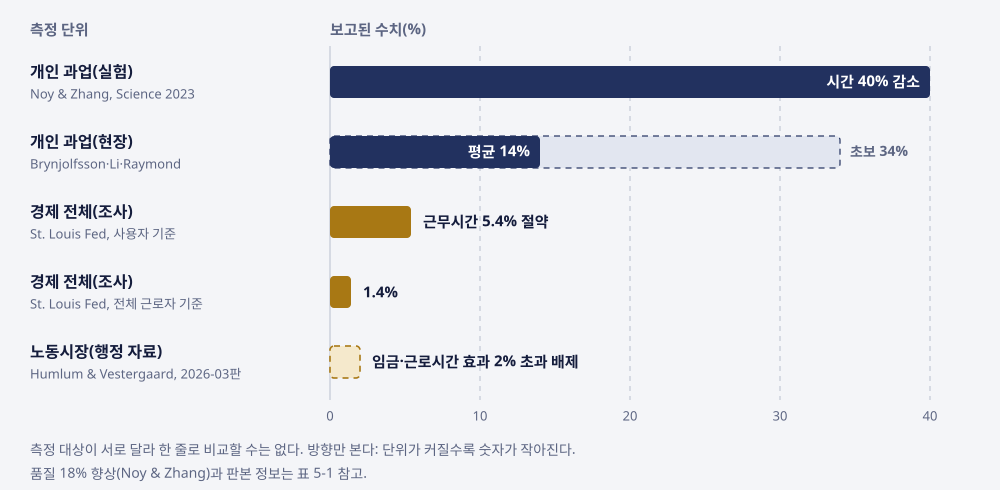
그림 16-1. 측정 단위가 커질수록 작아지는
숫자
막대의 길이를 서로 견주기보다 위에서 아래로 내려가며 숫자가 줄어드는
방향을 보자. 맨 아래 점선 막대는 2%보다 큰 효과는 없다고 볼 수 있다는
상한이다.
세인트루이스 연준의 두 숫자가 벌어지는 이유 하나는 단순하다. 쓰는
사람만 아끼고, 쓰지 않는 사람은 아끼지 않는다. 사용자 5.4%가 전체 1.4%로
줄어드는 것은 아직 쓰지 않는 사람이 많기 때문이다. 팀 단위로 옮기면
이렇다. 팀원 다섯 가운데 둘이 매일 쓰고 셋은 가끔 쓴다면, 팀장이
체감하는 변화는 매일 쓰는 둘의 이야기다. 그 둘이 아낀 시간이 팀의 성과로
보이려면 그 시간이 나머지 셋의 일과 어딘가에서 만나야 한다. 혼자 빨라진
사람은 혼자 기다리게 된다.
어디로 흩어질까? 리서치에서 반복해 보이는 경로는 셋이다.
첫째, 새 기준이 된다. 더 빨리 해낸 만큼 기대치가 올라간다. 국내
언론(2026-09-10)이 전한 BBC 보도에서, 스페인의 한 마케팅 직원은 AI로
일을 줄여도 이틀을 쉬게 되거나 임금이 40% 오르지는 않는다고, 더 높은
생산량이 그냥 새 기준이 될 뿐이라고 말했다(BBC 원문은 대조하지 못했고
국내 보도를 거쳐 확인한 발언이다). Upwork의 2024년 자체 조사에서는 AI를
쓰는 직원 77%가 이 도구들이 오히려 업무량을 늘렸다고 답했다. 해결책을
파는 회사의 조사라는 점을 감안해도 무시하기 어려운 숫자다.
둘째, 대기열이 는다. 한 사람이 빨라져도 그 뒤의 검토·승인·협의가
그대로면 일은 다음 단계에 쌓인다. 8장에서 본 Hacker News 토론의 말대로,
다른 병목이 그대로인 채 앞 단계만 빨라지면 처리량은 늘지 않고 작업
대기열만 길어진다(커뮤니티 의견). 개인의 생산성 향상이 팀 전체로는
손실이 될 수도 있다.
셋째, 숨긴다. 아낀 시간을 드러내지 않는 것이다. 이 경로는 리더가 가장
직접 바꿀 수 있는 것이라 절을 따로 두자.
시간을 숨기는 두 가지 이유
팀원이 AI로 아낀 시간을 말하지 않는 이유는 크게 둘로 보인다.
하나는 평판이다. 7장에서 리더가 먼저 공개해야 하는 이유로 본
Reif·Larrick·Soll의 실험(PNAS 2025)에서, AI 도움을 받은 직원은 다른
도움을 받은 직원보다 더 게으르고 덜 유능하다고 평가받았다. 같은 결과로
시간을 숨기는 이유도 짐작할 수 있다. “AI로 이걸 30분 만에 했어요”라고
말하는 순간 그 팀원은 덜 애쓴 사람으로 보일 위험을 진다. 그러니 30분
만에 끝낸 일을 2시간짜리 일처럼 제출하는 편이 개인에게는 합리적이다.
팀장 자리에서는 이 장면이 어떻게 보일까? 한 팀원이 보고서 초안을 마감
하루 전에 낸다고 해 보자. 품질은 괜찮다. 팀장은 그 팀원이 이틀 동안 이
일에 매달렸다고 생각한다. 실제로는 AI와 함께 오전에 끝내고 나머지 시간에
다른 일을 했거나, 쉬었거나, 다음 일을 미리 해 두었을 수 있다. 어느
쪽이든 팀장은 모른다. 팀장이 모르는 시간은 팀이 함께 쓸 수 없다. 숨긴
시간은 팀이 함께 정할 수 없는 시간이 된다.
다른 하나는 일자리다. BCG의 2025년 조사에서 업무 흐름을 포괄적으로
재설계 중인 회사의 직원 46%가 향후 10년 안에 일자리를 잃을까 걱정했다.
그렇지 않은 회사에서는 34%였다. 재설계가 활발한 곳일수록 불안도 크다.
Pew Research Center의 조사(2024년 10월 실시, 2025년 2월 발행)에서도 미국
근로자의 52%가 직장의 AI 사용에 대해 걱정한다고 답했고 희망적이라는 답은
36%였다. 2년 전 조사라 지금은 숫자가 달라졌을 수 있지만, 걱정이 희망보다
앞서 있었다는 출발점은 지금도 참고할 만하다.
앞 책은 이 두 번째 이유를 가장 날카롭게 짚었다. 「디지털 워커의
시대」 9장은 책에서 가장 중요한 문장이라며 이렇게 적었다. 「절감이 곧
감원으로 읽히는 순간, 현장은 성과를 숨긴다.」 아낀 시간을 보고하는 일이
자기 자리를 줄이는 근거를 대 주는 일로 느껴지면 아무도 보고하지 않는다.
그러면 조직이 보는 숫자는 실제보다 작아지고, 리더는 AI 투자의 효과가
없다고 오해한다.
이 두 이유는 팀원의 불안을 다루는 방식도 바꾼다. Wang과 Wang이 개발한
AI 불안 척도는 불안을 여러 갈래로 나눈다. 그 가운데 리더가 현장에서 자주
마주칠 것은 둘이다. “배우기 어렵다”는 학습 불안과 “내 일이 없어진다”는
대체 불안이다. 둘은 처방이 다르다. 학습 불안에는 시간과 연습이 듣는다.
여기서부터는 척도 연구가 아니라 이 책의 추론이다. 척도는 불안을 나눴을
뿐 처방의 효과를 시험하지 않았다. 대체 불안에는 교육이 잘 듣지 않을
것이다. 잘 배울수록 자기 자리를 줄이는 데 기여하는 것처럼 느껴질 수 있기
때문이다. 대체 불안에 필요한 것은 아낀 시간이 어디로 가는지에 대한
약속이고, 그 약속이 지켜진다는 증거다.
평판 쪽 이유는 리더가 상대적으로 쉽게 다룰 수 있다. 7장에서 본 대로
리더가 먼저 자기 사용을 공개하면 공개가 팀의 규범이 된다. 일자리 쪽
이유는 그렇지 않다. 리더가 “걱정하지 말라”고 말하는 것으로는 부족하고,
그 말을 지킬 권한이 리더에게 있는지가 먼저 문제다. 이 대목에서 팀장이 할
수 있는 일과 위에 요구해야 하는 일이 다시 갈린다.
선언문만으로는 부족하다
그렇다면 리더는 무엇부터 할까? 앞 책들이 이미 내린 결론부터 확인하자.
「디지털 워커의 시대」 9장은 선택지를 이렇게 정리했다. 「확보한 시간의
사용처는 셋뿐이다.」 다른 일에 다시 쓰거나, 품질과 처리량을 높이거나,
사람을 줄이는 것이다. 그리고 측정하기 전에 그 숫자를 어디에 쓰지
않을지부터 선언하자고 했다. 종합편 부록 FAQ도 같은 처방을 전한다. 이
장은 이 결론을 전제로 받아들이고 다음 질문으로 간다.
선언을 한 다음이 문제다. BCG의 66%를 다시 보자. 이 숫자는 지침이 없는
현장 직원의 비율이다. 그러면 지침을 받았다는 나머지 34%의 현장 직원은
시간을 잘 쓰고 있을까? 보고서는 그것까지 알려 주지 않는다. 선언문을
돌리기보다 그 선언이 3개월 뒤에도 살아 있는지 확인하기가 훨씬 어렵다.
선언문만으로는 부족하다. 선언이 지켜지는지 보여 주는 기록표가 함께
있어야 한다.
물론 선언문도 잘 써야 한다. 흔한 실패는 선언이 너무 넓은 것이다.
“아낀 시간은 더 가치 있는 일에 쓴다”는 문장은 누구도 반대하지 않지만,
아무것도 정하지 않는다. 쓸 만한 선언에는 이름과 양이 있다. “아낀 시간
가운데 주 2시간은 9장 심사표에 적은 새 일, 반복 문의 분류에 쓴다”처럼.
이름이 있어야 기록표에서 그 줄을 찾을 수 있고, 양이 있어야 지켜졌는지 볼
수 있다. 처음부터 정확할 필요는 없다. 4주 뒤 기록표를 보고 고치면
된다.
이 책은 주 단위의 가벼운 기록표를 제안한다. 팀원 각자가 한 주에 한
번, 네 가지를 적는다. 그 주에 AI로 아낀 시간이 대략 얼마인지, 그 시간을
어디에 썼는지, 선언한 곳에 쓰지 못했다면 왜인지, 그리고 팀 밖으로 간
시간이 있다면 누가 그것을 정했는지. 4주쯤 쌓이면 패턴이 보인다. 아낀
시간이 매주 “급한 요청 대응”으로 사라진다면, 그 팀에는 사용처 선언보다
먼저 막아야 할 요청 경로가 있다. “쓰지 못한 이유”가 매번 같다면 그
이유가 이 팀의 진짜 병목이다.
기록표를 읽는 법도 간단히 정해 두자. 4주 뒤 팀 회의에서 볼 것은 세
가지면 된다. 선언한 곳에 쓴 시간이 아낀 시간 가운데 대략 어느 정도인지,
쓰지 못한 이유 가운데 가장 자주 나온 것이 무엇인지, 팀 밖으로 간 시간이
있었다면 그것을 누가 정했는지. 첫째가 낮으면 선언이 현실과 맞지 않거나
막는 요인이 있다는 뜻이다. 둘째는 리더가 치울 장애물 목록이다. 셋째는
다음 절의 질문, 즉 아낀 시간의 주인 문제로 이어진다.
이 기록표에는 분명한 한계가 있다. 아낀 시간은 자기 보고다. 사람은
자기 시간을 정확히 기억하지 못한다. 4장에서 본 METR의 무작위 실험에서
숙련 개발자들은 AI를 쓴 과제에서 실제로는 19% 더 오래 걸렸는데도 작업을
마친 뒤 20% 빨라졌다고 믿었다. 이 연구를 모든 직무로 넓혀 읽을 수는
없다. 다만 체감과 측정이 어긋날 수 있다는 일반 원칙은 기록표를 쓰는
리더도 알아 둬야 한다. 기록표의 “아낀 시간” 숫자를 성과의 증거로 쓰지
말자. 기록표가 보여 주는 것은 시간의 정확한 양보다 시간이 흘러간
방향이다.
그리고 기록표의 숫자를 평가에 쓰지 않는다. 기록표에 아낀 시간을 많이
적은 사람이 좋은 평가를 받는다면, 모두가 숫자를 부풀린다. 반대로 많이
적은 사람의 일이 줄어든다면, 모두가 숫자를 줄인다. 어느 쪽이든 기록표는
쓸모를 잃는다. 기록표는 팀이 함께 보는 진단 기록으로 두고, 평가는
22장에서 다룰 결과 기준으로 한다. 이 원칙은 기록표를 시작하는 첫날 팀에
말해 두자.
아낀 시간의 주인은 누구인가
여기까지는 팀 안의 이야기였다. 그런데 아낀 시간에는 팀 밖에서도
주인이 나타난다.
삽화. 각자 아낀 시간을 모으면 팀은 무엇을 함께 할 수 있을까?
상상으로 그린 장면으로, 특정 인물이나 조직이 아니다.
Hacker News의 워크슬롭 토론에 한 관리자가 이런 글을 올렸다. 스스로를
“I was that manager.”라고 소개한 컨설팅 회사 관리자였다. 몇 달 동안
경영진이 “이제 우리는 AI 퍼스트 회사”라고 외친 뒤, 그는 꽤 합리적인
질문을 했다고 썼다. “so am I going to offer lower prices to my clients,
or am I going to see much higher achieved margins on projects I sell?”
고객에게 더 낮은 가격을 제시하게 되는지, 아니면 프로젝트 마진이 크게
오르는지를 물은 것이다. 돌아온 반응을 그는 한 단어로 적었다. “crickets.”
아무 대답이 없었다는 뜻이다(커뮤니티 의견).
이 장면이 난감한 이유는 질문이 틀려서가 아니다. 그 질문에 대답할
권한이 그 관리자에게도, 그가 물은 자리에도 정해져 있지 않았기 때문이다.
아낀 시간을 고객 가격으로 돌릴지, 마진으로 가져갈지, 다른 팀 지원으로
보낼지, 인력 계획에 반영할지는 팀장이 정할 수 있는 일이 아니다. 그런데
정해지지 않으면 시간은 앞에서 본 세 경로로 흩어진다.
그래서 아낀 시간을 두 층으로 나눠 보자. 팀 안에서 쓰는 시간은 팀장이
정할 수 있다. 확인에 더 쓸지, 배우는 데 쓸지, 9장에서 적은 새 일에 쓸지.
팀 밖으로 가져가는 결정, 즉 가격·인력·다른 팀 지원으로 돌리는 결정은
임원의 몫이다. 팀장이 할 일은 그 결정이 언제, 누구에 의해 내려지는지를
위에 묻는 것이다. 임원이 할 일은 그 질문이 오기 전에 기준과 시점을 먼저
밝히는 것이다. 기준 없이 시간이 위로 불려 올라가기 시작하면, 팀은 다음
달부터 아낀 시간을 기록표에 적지 않는다.
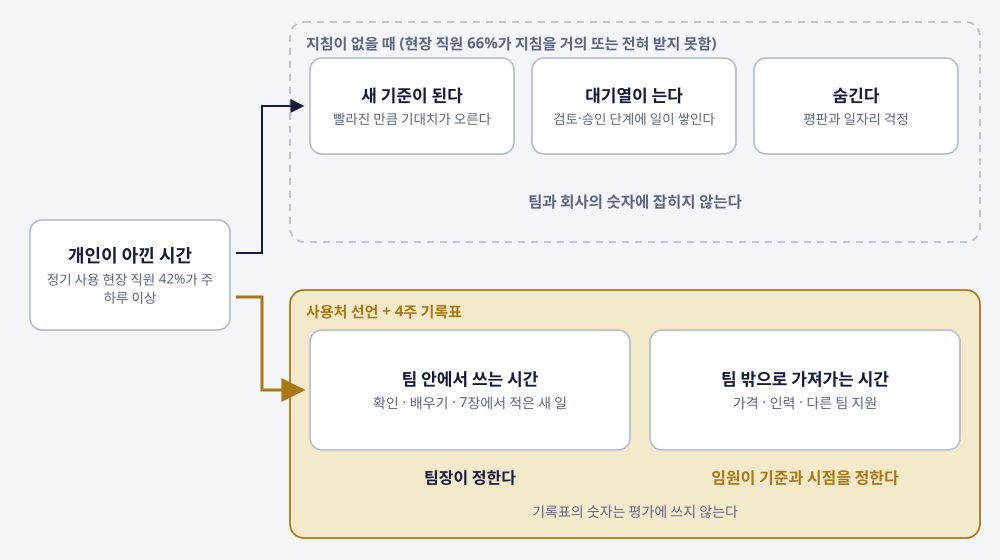
그림 16-2. 아낀 시간이 흩어지는 길과
기록표로 남는 길
위쪽 점선 상자는 지침이 없을 때 시간이 흩어지는 세 경로이고, 아래쪽
상자는 선언과 기록표를 둔 뒤 시간이 나뉘는 두 층이다. 아래 상자의 오른쪽
칸이 임원의 몫이다.
임원의 몫을 조금 더 구체적으로 적어 두자. 임원이 정할 것은 셋이다.
하나는 팀 밖으로 가져가는 결정을 어느 회의에서 내리는가다. 팀장 개인에게
그때그때 묻지 말고, 분기 경영 회의처럼 정해진 자리에서 정해진 자료를
놓고 정하는 편이 낫다. 또 하나는 그 결정의 근거로 무엇을 보는가다. 4주
기록표가 쌓이기 전에 결정하면 팀은 기록표가 결정을 위한 사전
작업이었다고 읽는다. 마지막은 결정 결과를 팀에 어떻게 알리는가다. “아낀
시간의 일부를 다른 조직 지원으로 보낸다”는 결정이 내려졌다면 그 이유와
기간을 팀이 들어야 한다. 그래야 다음 기록표도 정직하게 채워진다.
커뮤니티에서는 이 결정을 두 가지 관리자 유형으로 나누는 말도 보인다.
생산성이 오르면 “이제 개발자가 덜 필요하다”고 보는 쪽과, “피드백 고리를
줄이고 지금 인원으로 더 많은 개선을 하자”고 보는 쪽이다(Hacker News,
커뮤니티 의견). 이렇게 둘로 나누는 것은 지나친 단순화지만, 어느 쪽으로
정하든 정하는 자리가 있어야 한다는 점은 분명하다. 정하는 자리가 없는
조직에서는 그 관리자가 들은 것처럼 아무 대답도 돌아오지 않는다.
팀 안에서 쓰는 시간에는 새 일이 하나 생긴다. Humlum과 Vestergaard는
개정판에서 고용주들이 일을 재조직하면서 콘텐츠 생성, AI 감독, AI 통합
같은 새 과업이 생겼다고 보고했다. 경제 전체의 근로시간 효과는 작았지만
일의 내용은 바뀌고 있었다는 말이다. 현장 질문 “남은 시간에 팀원은 무엇을
하나”에 대한 대답 하나가 여기에 있다. AI가 낸 결과를 감독하고 일에
통합하는 일이다. 다르게 말하면 아낀 시간의 일부는 다시 확인으로
돌아간다. 얼마나 돌아가는지는 측정한 연구가 없다. 팀마다 기록표로 봐야
하는 숫자다.
남은 시간을 옆 팀으로 보내는 길
그림 16-2의 오른쪽 칸에는 다른 팀 지원이 있다. 그 결정은 임원의
몫이라고 적었다. 그런데 결정만 내려서는 시간이 옆 팀에 닿지 않는다. 누가
어느 팀의 무슨 일을 얼마 동안 도울지 이어 주는 길이 따로 있어야
한다.
앞 책 「코드 너머의 조직」 9장은 그 길을 사내 인재 시장이라고 불렀고,
같은 개념을 스킬 마켓플레이스라는 이름으로 함께 썼다. 직원이 자기 부서
일을 유지한 채 다른 부서의 짧은 프로젝트나 멘토링을 신청해 맡는 회사
안의 시장이다. 이미 이 길을 내 본 회사가 있다. Schneider Electric은
2020년 사내 플랫폼 Open Talent Market을 전 세계 사무직 직원에게 열었다.
회사가 낸 2021년 People Report는 그해 말 대상 직원의 71%가 플랫폼에
등록했고, 한 해 동안 이 플랫폼에서 멘토링 관계 3,229건이 맺어지고
파트타임 프로젝트 역할 3,248건이 배정됐다고 적었다. Unilever는 미국
증권거래위원회에 낸 2021년 연차보고서에서 사내 플랫폼 Flex로
“reprioritise more than 110,000 hours to around 1,350 critical projects
in 2021”이라고 밝혔다. 11만 시간이 넘는 시간을 약 1,350개 핵심
프로젝트로 돌렸다는 뜻이다. 플랫폼 공급사의 사례 자료에는 이보다 훨씬 큰
시간과 비용 수치가 돌지만, 무엇을 어떻게 셌는지가 공개되어 있지 않아 이
책은 쓰지 않는다. 두 회사 모두 생성형 AI가 퍼지기 전에 이 시장을
열었다는 점도 적어 두자. 아낀 시간을 위해 만든 길은 아니었다. 그래도
아낀 시간이 갈 곳을 찾는 지금, 먼저 길을 내 본 사례다.
길이 없으면 시간은 어디로 갈까? 이 책은 부탁으로 흐르기 쉽다고 본다.
22장의 「잘한다는 이유로 일만 늘지 않게」에서 다시 다룰 장면이 그렇고,
15장의 가상 사례가 실무자 쪽에서 본 장면이기도 하다. AI를 잘 쓰게 된
직원에게 칭찬 뒤에 요청이 이어졌고, 그 가운데에는 옆 팀이 쓸 도구도
있었다. 부탁으로 흐르는 도움에는 두 가지 문제가 있다. 잘하는 몇 사람에게
몰리고, 기록에 남지 않는다. 남지 않는 도움은 돕는 사람에게 비용이 된다.
15장에서 본 Bergeron과 동료들의 연구가 그 비용을 원문으로 이렇게 적었다.
“controlling for time spent on task performance, employees who spent
more time on OCB had lower salary increases and advanced more slowly.”
자기 과업 시간을 같게 놓아도 돕는 일(OCB)에 시간을 더 쓴 직원은 연봉이
덜 오르고 승진이 느렸다(Journal of Management, 2013). 표 15-1에 있는
Babcock과 동료들의 연구는 보고서 쓰기나 위원회 참여처럼 승진에 덜 도움이
되는 일(low promotability)을 다루며, 그런 일을 “a task that everyone
prefers be completed by someone else”라고 정의했다(American Economic
Review, 2017). 모두가 다른 누군가가 해 주기를 바라는 일이다. 부탁으로
흐르는 도움도 이런 일이 되기 쉽다. 15장에서 본 Bolino와 동료들의
연구대로, 조직이 받쳐 준다고 느끼지 못하면 돕는 일은 지침으로 이어지기
쉽고 지친 직원은 이후에 덜 돕는다(Journal of Applied Psychology,
2015).
보내는 쪽의 문제도 있다. 28장에서 다시 볼 Haegele의 연구는 팀 성과로
평가받는 관리자에게 유능한 직원을 붙잡아 둘 유인이 있다고 보고했다. 이
연구는 2026년 8월 American Economic Review에 실렸고, 초록에는 “Talent
hoarding is self-reported by three-fourths of managers”라는 문장이 있다.
한 대기업의 자료이긴 하지만, 관리자 4명 중 3명이 붙잡아 둔 적이 있다고
스스로 답한 셈이다. 시장을 열어도 팀장이 팀원의 시간을 내주지 않으면
시장은 빈다.
그래서 시장만으로는 부족하다. 도운 일이 성과로 잡히고, 내준 팀장이
손해를 보지 않게 하는 체계가 함께 있어야 한다. 여기서부터는 이 책의
제안이다. 앞의 연구들은 남지 않는 도움이 돕는 사람에게 비용이 된다는
것과 팀 성과만 보는 평가가 붙잡아 두기를 부른다는 것까지를 받친다. 아래
장치가 그 문제를 줄인다는 것을 직접 검증한 연구는 이 책의 리서치에서
찾지 못했다. 정하는 사람은 임원이다.
첫째, 도운 결과는 도움받은 팀이 적는다. 적는 것은 그 팀의 일에서
무엇이 바뀌었는지이고, 쓴 시간은 적지 않는다. 그 기록을 도운 사람의 평가
자료에 붙인다. 22장에서 사용량 대신 결과로 평가하자고 할 것과 같은
원리다. 이 장의 4주 기록표는 평가에 쓰지 않는다는 약속도 그대로 둔다.
기록표에 적은 시간은 평가에 들어가지 않고, 도움받은 팀이 적은 결과만
들어간다.
둘째, 내준 팀장의 몫도 적는다. 28장에서는 팀원이 다른 팀으로 옮겨
가면 옮긴 뒤 1년의 성과 한 줄을 원래 리더의 평가 자료에도 붙이자고
제안한다. 같은 장치를 짧은 프로젝트에도 쓰자. 팀원의 시간을 내준 팀장이
손해만 본다면, 앞의 연구가 보여 준 대로 팀장은 내주지 않는다.
셋째, 한 사람이 시장에 내놓는 시간에 상한을 둔다. 상한이 몇
퍼센트여야 하는지는 근거가 없으니 회사마다 정할 일이다. 4주 기록표의
마지막 열, 팀 밖으로 간 시간이 그 숫자를 정할 첫 자료가 된다. 상한은
잘하는 사람에게 일이 몰리는 것을 막는 장치이기도 하다.
넷째, 참여하지 않아도 불이익이 없어야 한다. 앞 책은 이 대목에서
플랫폼 노동 연구를 경고로 들었다. Vallas와 Schor는 플랫폼을 “permissive
potentates that externalize responsibility and control over economic
transactions while still exercising concentrated power”라고
불렀다(Annual Review of Sociology, 2020). 거래의 책임과 통제는 밖으로
넘기면서 힘은 한곳에 쥐고 있는 관대한 군주라는 뜻이다. 회사 밖 플랫폼을
연구한 말이니 사내 시장에 그대로 옮기는 것은 유추다. 다만 경고로는 읽을
만하다. 누가 어떤 일을 받을지는 시스템이 정하고 결과의 책임은 개인이
지는 사내 긱 노동으로 사내 시장이 바뀌지 않게 하라는 경고다.
팀장이 할 수 있는 일은 이렇다. 회사에 이런 시장이 없다면 임원에게
아낀 시간을 다른 팀 지원으로 보낼 길이 있는지 묻는다. 시장이 있다면
기록표의 마지막 열에 시장을 통해 간 시간을 따로 적는다. 그리고 팀원이 옆
팀에서 부탁을 받으면 그 부탁을 시장으로 돌려 세운다. 부탁이 시장을
거치면 상한이 걸리고, 결과가 기록되고, 내준 팀장의 몫이 남는다. 22장에서
옆 팀의 요청이 팀장을 거치게 하자고 할 처방, 15장에서 실무자가 먼저
팀장에게 요청해 보자고 한 그 길을 조직 단위로 넓힌 모습이다. 이 시장의
운영 규칙은 18장에서 임원의 자리에서 정한다.
다음 주에 쓸 도구: 아낀 시간 사용처 선언문과 4주 기록표
이 도구는 두 판의 선언문과 기록표 하나로 되어 있다. 선언문은 짧을수록
좋다. 팀장판도 임원판도 세 문단이면 충분하다.
팀장판은 팀장이 직접 약속할 수 있는 것과 위에서 받아 와야 하는 것을
나눠 적는다. 두 번째 문단이 중요하다. 인력 조정 근거로 쓰지 않는다는
약속은 팀장이 팀에 할 수 있는 약속이 아니다. 9장의 권한 세 줄과 같다.
그래서 팀장판에는 그 약속을 “위에서 받아 오는 질문”으로 적고, 받았는지
아닌지를 그대로 쓴다. 임원판은 팀장들이 받으러 올 그 약속을 미리 적어
두는 문서다. 기한을 넣고, 팀 밖으로 가져가는 결정의 기준과 시점을 함께
적는다.
기록표는 4주 동안 매주 한 줄씩 채운다. 4주가 지나면 팀 회의에서 함께
보고, 선언문을 고칠지 정한다. 기록표를 평가에 쓰지 않는다는 문장은
선언문 안에 넣어 두자.
기록표를 처음 꺼낼 때는 목적부터 말하는 편이 낫다. “누가 얼마나
아꼈는지 비교하려는 게 아니다. 아낀 시간이 어디로 새는지 같이 보려는
것이다.” 그리고 리더가 자기 줄부터 채운다. 리더가 아낀 시간을 어디에
썼는지, 선언한 곳에 쓰지 못했다면 왜인지를 리더가 먼저 적으면 팀원도
솔직하게 적기 쉬워진다. 숫자는 대략이어도 된다. 30분 단위로 반올림해도
4주 뒤 방향을 읽는 데는 충분하다. 1장의 리더 시간 점검표를 써 봤다면 그
기록과 나란히 놓아 보자.
임원판은 쓰는 방식이 조금 다르다. 팀장들에게 돌리는 문서이므로 짧게,
기한과 결정 자리를 분명히 적는다. 임원판이 먼저 나가 있으면 팀장판의
둘째 문단은 “받음(기한 ○○)”으로 채워진다. 그 한 줄이 팀장이 팀 앞에서 할
수 있는 말의 범위를 넓혀 준다.
표 16-2. 사용처 선언문 (팀장판)
문단
쓸 내용
예시
1. 팀 안에서 쓰는 곳
아낀 시간을 팀 안에서 어디에 먼저 쓸지
“아낀 시간은 먼저 확인과 학습에 쓴다. 9장 심사표의 새 일 ○○에 주
2시간을 배정한다.”
2. 위에서 받아 올 약속
팀장이 약속할 수 없는 것, 그것을 묻는 질문과 상태
“이 시간을 인력 조정 근거로 쓰지 않는다는 약속을 언제까지 받을 수
있나? (상태: 요구 중, 요구한 날 ○○)”
3. 다시 보는 날
기록표를 함께 보고 선언을 고칠 날짜
“4주 뒤 ○○일 팀 회의. 기록표 숫자는 평가에 쓰지 않는다.”
표 16-3. 사용처 선언문 (임원판)
문단
쓸 내용
예시
1. 쓰는 곳
조직 단위 기본 용도
“확보한 시간의 기본 용도는 재투자(확인·학습·재설계)다.”
2. 쓰지 않는 곳
인력 조정 근거로 쓰지 않는다는 약속과 기한
“○○년 ○월까지 이 수치를 인력 조정 근거로 쓰지 않는다.”
3. 팀 밖으로 가져가는 결정
기준·시점·결정하는 자리
“가격·인력·다른 팀 지원으로 돌리는 결정은 분기 경영 회의에서, 기록표
4주 이상 누적 후 내린다.”
표 16-4. 4주 기록표
주
아낀 시간(자기 보고)
쓴 곳
선언한 곳에 쓰지 못한 이유
팀 밖으로 간 시간과 결정한 자리
1주
2주
3주
4주
BCG의 66%로 돌아가 보자. 이 숫자는 다른 회사의 평균이지만, 리더가
물어볼 질문은 하나다. 우리 팀은 그 66% 안에 있는가? 지난달 팀원이 아낀
시간이 어디로 갔는지 리더가 한 문장으로 말할 수 없다면, 그 팀은 아마
안쪽에 있다. 기록표를 4주 채워 보면 숫자 하나가 더 보일 것이다. 아낀
시간 가운데 일부가 다른 사람이나 에이전트가 만든 결과를 확인하는 데
들어가고 있다는 숫자다. 그 몫이 얼마인지는 팀마다 다르다. 분명한 것은 그
확인을 누가 하고 있는지 아직 아무도 적지 않았다는 사실이다. 그 확인을
누가 맡고 어떻게 이끄는지는 13장에서 봤다. 남는 것은 팀 밖으로 가져갈
몫이다. 그 몫을 어느 회의에서 무엇을 기준으로 정할지는 다음 17장에서
임원의 자리에서 본다.
17장. 아낀 시간의 사용처는 정해진 회의에서 정해진 기준으로
결정한다
임원의 자리
덴마크의 AI 노출 직종에서 챗봇을 쓰는 노동자 10명 중 8명 이상이 아낀
시간을 다른 업무에 썼다고 답했다. 그 업무는 누가 정했을까?
본인이 정했을 수도 있고, 팀장이 그때그때 일을 얹었을 수도 있다.
회사가 정했을 가능성은 낮아 보인다. 아낀 시간을 어디에 쓸지 정한 회사
규정을 공개한 곳을 이 책의 리서치는 찾지 못했기 때문이다. 질문을 회사
쪽으로 돌려 보자. 지난 분기 우리 회사에서 AI로 아낀 시간은 몇
시간이었고, 그 가운데 몇 시간이 어디로 갔는가? 공개 자료로 보면 이
질문에 답할 수 있는 회사는 드물어 보인다. 답할 수 없다면, 아낀 시간은
회사 기록표 밖에서 이미 누군가의 결정에 따라 쓰이고 있다.
AI 도입 성과 보고는 흔히 사용률과 “직원 1인당 주 ○시간 절감” 같은
숫자로 시작한다. 그런데 그다음 장에는 대개 아무것도 없다. 아낀 시간이
어떤 일로 바뀌었는지, 그 일이 회사에 무엇을 가져다주었는지를 적은 장이
없다. 시간을 아꼈다는 보고만 있고, 그 시간을 쓴 곳에 대한 보고는 빠져
있다.
아낀 시간은 다른 업무로 스며들었다
출발점의 숫자는 16장에서 임금·근로시간 효과로 본 Humlum과
Vestergaard의 연구에서 나왔다(NBER 워킹페이퍼, 2025년 5월 초판, 2026년
3월 개정판). 이 장이 보는 것은 같은 연구의 노동자 설문 쪽이다. 본문에
따르면 챗봇을 쓰는 사람들은 평균적으로 근무 시간의 약 3%를 아꼈다고
답했다(“about 3% of their work hours”). 아낀 시간의 사용처를 물었더니
사용자의 85%가 다른 업무에 썼다고 답했다. 휴식이나 여가에 썼다는 답은
10% 미만이었고, 약 30%는 시간을 아꼈던 바로 그 과업에 더 많은 시간을
썼다고 답했다. 여러 답을 함께 고를 수 있는 문항이라 이 숫자들을 더해
100%로 맞출 수는 없다.
행정 자료로 본 임금과 기록된 근로시간에는 16장에서 본 대로 ChatGPT가
나온 지 2년 뒤까지 노동자와 사업장 어느 단위에서도 2%보다 큰 효과가
없었다. 시간 절감은 설문으로, 임금과 근로시간은 행정 자료로 측정한
것이니 숫자 2개를 한 문장으로 엮어 비교하지는 말자. 사용자 자신이 답한
임금 효과도 직종과 사업장의 챗봇 도입 정책에 따라 0~0.5% 수준이었고,
저자들은 이것이 시간 절감보다 열 배쯤 작다(“an order of magnitude
smaller than the time savings”)고 적었다. 아낀 시간이 일하는 사람의
임금으로 건너간 몫은 아주 작았다는 말이다.
단서도 적어 두자. 시간 절감과 재배분은 모두 노동자의 자기 보고다.
덴마크는 임금이 주로 단체협약으로 정해지는 나라라 생산성 변화가 임금으로
전달되는 속도가 느린 맥락일 수 있다. 그래도 이 연구가 받치는 문장은
분명하다. 아낀 시간은 대부분 쉬는 데 쓰이지 않았고, 다른 업무 속으로
흡수됐다고 사용자들이 답했다. 여기서부터는 이 책의 추론이다. 흡수된
시간은 개인의 하루 안에서 사라지고, 회사가 셀 수 있는 기록표에는 남지
않는다.
도구를 나눠 주는 것만으로는 일이 바뀌지 않았다
그렇다면 회사가 도구를 더 넓게 나눠 주면 아낀 시간이 저절로 쓸모 있는
곳으로 갈까? 15장에서 실무자의 자리에서 짧게 본 Dillon과 동료들의 무작위
실험이 이 질문에 가장 가깝다(NBER 워킹페이퍼, 현행판 2025년 11월 개정).
여기서는 설계까지 자세히 보자. 66개 기업의 지식노동자 7,137명에게 업무
앱에 통합된 생성형 AI 사용 권한을 무작위로 주고 6개월을 지켜봤다. 현행판
초록에 따르면 실험 후반 석 달 동안 도구를 실제로 쓴 사람(처치군의 80%)은
이메일에 매주 2시간을 덜 썼고, 근무 시간 밖에 일하는 시간도 줄었다.
초록의 다음 문장이 이 장에 더 중요하다. “Apart from these individual
time savings, we do not detect shifts in the quantity or composition of
workers’ tasks resulting from individual-level AI provision.” 개인
단위의 시간 절감을 빼면, 개인에게 AI를 나눠 준 것만으로는 노동자가 하는
과업의 양과 구성에 변화가 보이지 않았다는 것이다. 개인의 이메일 시간은
줄었는데, 그 사람이 하는 일의 묶음은 그대로였다.
초록은 그 이유를 말하지 않는다. 이 책은 이유를 이렇게 추론한다. 한
사람이 맡는 일의 묶음은 그 사람이 혼자 정하지 않는다. 팀장이 배분하고,
직무 기술서가 정하고, 다른 팀과의 약속이 묶는다. 이메일 2시간을 아낀
사람이 그 시간에 새 일을 맡으려면 누군가 그 일을 그 사람 몫으로 정해
줘야 한다. 정해 주는 사람이 없으면 2시간은 기존 일 사이사이로
흩어진다.
이 연구는 회사가 사용처를 정했을 때를 비교하지 않았다. 그래서 다음
문장은 연구가 아닌 이 책의 해석이다. 아낀 시간의 사용처가 움직이려면
조직 차원의 결정이 필요하다. 도입률 대시보드가 100%를 가리켜도 일의
구성이 바뀌지 않았다면, 회사는 아낀 시간을 아직 한 시간도 쓰지 않은 것일
수 있다.
그 결정이 고르는 것은 아낀 시간을 보낼 곳이다. 이 책은 그곳을 네
갈래로 나눈다. 첫째는 재투자다. 같은 팀이 확인, 학습, 일 재설계처럼 전에
시간이 없어 못 하던 일에 쓴다. 둘째는 가격이다. 같은 일을 더 적은 시간에
하게 된 만큼 고객에게 받는 값이나 납기를 바꾼다. 셋째는 인력이다. 충원을
미루거나 줄이고, 다른 직무로 옮긴다. 넷째는 다른 팀 지원이다. 아낀
시간의 일부를 일손이 모자란 다른 팀에 보낸다. 네 갈래는 정하는 사람이
다르다. 재투자는 팀장이 팀 안에서 정할 수 있지만, 가격과 인력, 다른 팀
지원은 팀 밖의 손익과 사람을 움직이는 결정이라 임원의 몫이다. 노사
협의가 필요한 갈래도 있다. 인력 갈래가 그렇다.
과업의 이득은 출시까지 가며 줄었다
아낀 시간을 인력 계획에 반영하고 싶은 임원이라면 숫자 하나를 더 함께
보는 편이 낫다. 과업 단위에서 측정한 이득이 최종 산출까지 그대로
가느냐는 것이다. Demirer와 동료들은 공개 코드 저장소 플랫폼의 개발자
50만 명 이상의 활동과 AI 사용 기록을 맞춰 이 질문을 봤다(NBER
워킹페이퍼, 2026년 5월, 2026년 9월 개정판). 자율 코딩 에이전트를 쓴
개발자의 커밋은 누적으로 240% 늘었다. 그런데 초록에 따르면 이 240%는
프로젝트 수로는 80%, 실제 출시로는 30%로 줄었다(“the 240% cumulative
effect falls to 80% for the number of projects, and to 30% for actual
releases”). 앱 마켓에서도 새 앱의 수는 크게 늘었지만 전체 사용량은 늘지
않았다고 적었다. 같은 초록은 AI와 사람의 노력 사이 대체탄력성을 0.23으로
추정하고 “strong complementarities”, 강한 보완 관계를 뜻한다고 적었다.
AI가 사람의 노력을 대신하기보다 함께 있어야 산출이 난다는 추정이다. 이
숫자를 인력 결정에 옮기면, 사람을 줄인 만큼 AI가 그 몫을 메우리라는
가정은 개발 업무에서 맞지 않을 수 있다(이 책의 추론).
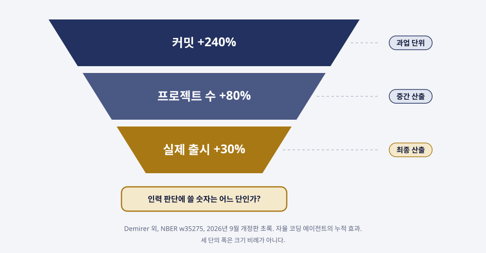
그림 17-1. 과업 이득은 최종 산출로 가며
줄었다: 커밋 240%, 프로젝트 80%, 출시 30%(Demirer 외, 2026년 9월 개정판,
자율 코딩 에이전트의 누적 효과)
그림 17-1은 위에서 아래로 읽는다. 단이 하나 내려갈 때마다 같은
에이전트 사용의 누적 효과가 줄어, 맨 아래 출시 단의 30%는 맨 위 커밋 단
240%의 8분의 1이다.
이 숫자는 개발자의 일에서 나왔다. 다른 직무에서도 같은 비율로
줄어든다는 근거는 없다. 다만 방향은 기억해 둘 만하다. 과업 단위의 이득은
최종 산출로 가면서 크게 줄 수 있고, 과업 이득으로 아낀 시간을 계산해
인력 판단에 쓰면 최종 산출이 받쳐 주지 않는 결정을 내리게 된다. 그래서
이 책은 아낀 시간을 회사 밖으로 가져가는 결정, 특히 인력에 관한 결정은
최종 산출 지표로 확인한 뒤에 내리자고 제안한다. 이 순서 자체는 Demirer
외의 숫자에 기댄 이 책의 추론이다.
표 17-1은 이 장에서 쓰는 실증 4편을 표본과 측정 대상, 판본으로 정리한
것이다. 개인 과업의 효과를 보여 준 연구들, 예컨대 글쓰기 과제나 고객
상담에서 측정한 생산성 향상은 16장 표 16-1에 있다. 이 표는 그 표에 없던
연구를 중심으로 모았다. Humlum·Vestergaard는 그 표에도 있지만, 거기서는
임금·근로시간 효과를 봤고 여기서는 아낀 시간의 사용처를 본다. 맨 아래
행은 무작위 현장 실험에서 완료 과업이 늘었다는 개인 단위 결과로,
깔때기의 맨 위 단에 해당하는 숫자다.
표 17-1. 아낀 시간과 조직 산출 사이의 실증 4편
연구
표본
측정 대상과 결과
판본
Humlum·Vestergaard
덴마크 AI 노출 11개 직종 노동자 설문 + 행정 자료
근무 시간 약 3% 절감(자기 보고), 사용자 85%가 다른 업무에
재배분(자기 보고, 중복 응답 가능)
NBER w33777, 2026년 3월 개정판
Dillon 외
66개 기업 지식노동자 7,137명, 무작위 배정 6개월
이메일 주 2시간 감소, 과업의 양과 구성은 변화 없음
NBER w33795, 현행판(2025년 11월 개정). 15장 표의 arXiv 프리프린트와
같은 연구
Demirer 외
GitHub 개발자 50만 명 이상 + AI 사용 기록
커밋 누적 240% → 프로젝트 80% → 출시 30%(자율 코딩 에이전트)
NBER w35275, 2026년 9월 개정판
Cui 외
3개 무작위 현장 실험, 개발자 4,867명
완료 과업 26.08% 증가(표준오차 10.3%), 경력이 짧은 개발자의 도입률과
이득이 더 큼
Management Science 72(11), 2026년 11월
회사들은 결과만 말하고 결정의 자리는 말하지 않았다
연구가 개인의 하루를 봤다면, 회사들은 공개 발언으로 결과를 말했다.
아낀 시간이나 줄어든 일의 사용처에 대해 공개적으로 말한 회사 가운데
3곳을 차례로 보자.
Klarna는 2024년 2월 27일 보도자료에서 고객 상담 AI 어시스턴트가 “the
equivalent work of 700 full-time agents”, 정규 상담원 700명분의 일을
하고 있다고 밝혔다. 어떻게 계산한 700명분인지, 함께 밝힌 이익 개선
추정치는 어떻게 산정했는지는 공개하지 않았다. 보도자료는 해고나 재배치,
외주 축소에 대해 아무것도 말하지 않는다. “700명을 해고했다”는 서술은
원문에 없다. 2025년 5월에는 CEO가 언론 인터뷰에서 사람 상담의 품질에
투자하는 것을 앞으로의 길로 꼽았다(“Really investing in the quality of
the human support is the way of the future for us.”, 2차 보도).
700명분이라는 숫자와 사람 상담 투자 사이에 무엇이 결정됐는지는 어디에도
적혀 있지 않다.
IBM의 Arvind Krishna CEO는 2025년 5월 무렵 인터뷰에서 HR 업무 일부를
AI로 대체했지만 총인원은 오히려 늘었다고 말했다. “Our total employment
has actually gone up, because what [AI] does is it gives you more
investment to put into other areas.”(2차 보도) AI가 다른 분야에 투자할
여력을 주기 때문에 총인원이 늘었다는 설명이고, 늘어난 분야로 소프트웨어
엔지니어링·마케팅·영업을 들었다. 대체된 HR 인원은 보도마다 수치가
달랐다. 그 자리의 사람들이 다른 직무로 옮겨 갔는지, 다른 분야에서 새
사람을 뽑았는지는 발언에서 구분되지 않는다.
Salesforce의 Marc Benioff CEO는 2025년 9월 팟캐스트에서 고객 지원
인력을 “from 9,000 heads to about 5,000”으로 줄였다고 말했다(2차 보도).
회사 대변인은 “redeployed hundreds of employees into other areas”, 수백
명을 다른 분야로 재배치했다고 설명했다. 줄어든 약 4,000명 가운데
재배치된 사람은 수백 명이고, 나머지에 대해서는 지원 엔지니어 자리를 더
이상 적극적으로 채우지 않는다는 설명이 있었다.
회사 3곳의 말을 나란히 놓으면 공통점이 하나 보인다. 모두 결과를
말했다. 700명분, 총인원 증가, 9,000에서 약 5,000. 임원이 다른 회사
사례에서 정작 알고 싶은 것은 그 숫자에 이른 과정이다. 무엇을 근거로 몇
명분이라고 셌는지, 아낀 일을 어디로 보낼지 누가 정했는지, 사람을 옮길지
충원을 멈출지를 어떤 기준으로 갈랐는지, 그 결정을 직원에게 언제
알렸는지다. 회사 3곳 모두 이 과정을 공개하지 않았다. 결과를 누가, 어느
회의에서, 무엇을 기준으로 정했는지가 빠져 있다. 아낀 일을 가격으로
돌릴지, 인력 계획에 반영할지, 다른 분야 투자로 돌릴지를 정하는 자리와
기준은 이 책의 리서치가 찾은 공개 자료 어디에도 없었다.
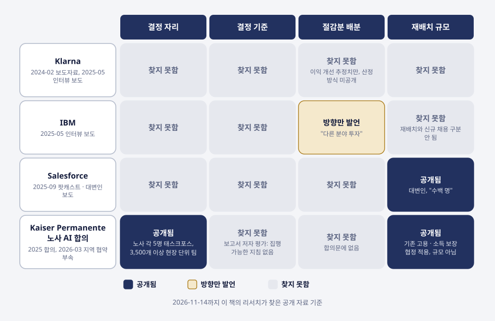
그림 17-2. 결정이 공개된 것과 공개되지
않은 것
그림 17-2의 격자에서 결정 기준 열은 4줄 모두 비어 있다. 공개된 칸은
Salesforce의 재배치 규모, Kaiser Permanente의 결정 자리와 고용 보장 조항
정도다.
회사 3곳이 자리와 기준을 공개하지 않았다는 관찰에서 이 책은 한 걸음
더 나간다. 아낀 시간의 사용처는 개인이 고르는 문제라기보다 회사가 정할
자리를 만들지 않은 문제다(이 책의 추론). 공개하지 않았다고 해서 그런
자리가 회사 안에 없었다고 단정할 수는 없다. 다만 바깥에서 배울 수 있는
형태로 남은 것은 없다.
자리와 기준이 적혀 있지 않으면 회사 자신도 나중에 배울 것이 없다.
Klarna의 발언 2건 사이에는 1년 남짓한 시간이 있었다. 2024년의 결정이
어떤 예상 위에서 내려졌는지, 2025년에 사람 상담 투자로 무게를 옮길 때
무엇이 예상과 달랐는지를 적어 둔 기록이 있었다면, 그 기록은 다른
회사보다 그 회사 자신에게 가장 쓸모 있었을 것이다. 그런 기록이 실제로
있었는지는 공개 자료로 알 수 없다. 결정을 내릴 때의 근거와 예상을 적어
두고 1년 뒤 정해진 자리에서 다시 보는 장치는 26장에서 다룰 임원 의사결정
사안 목록의 몫이고, 이 장의 규정은 그 사안 목록에 올라갈 첫 행을
만든다.
대체를 먼저 말하면 생기는 일
결정 자리가 정해지지 않은 채 “몇 명분”이라는 숫자가 먼저 나오면
현장의 관리자는 다르게 반응할 수 있다. Merritt와 동료들은 미국과 영국의
관리자 2,000명을 대상으로 사전 등록한 설문 실험을 했다(영국 재정연구소
워킹페이퍼, 2026년 3월). 관리자들은 AI의 생산성 이득을 보여 주는 영상,
AI가 일자리를 대체할 수 있다는 영상, 위약 영상 가운데 하나를 무작위로
봤다. 대체 가능성 정보를 본 관리자는 AI 도입·옹호 의향이 0.4~0.5
표준편차 줄었고, 인력 채용 의향도 0.2 표준편차 줄었다. 생산성 이득
정보는 평균적으로 유의한 효과가 없었다. 저자들의 정리는 이렇다. 대체
가능성 정보는 관리자가 사람 대신 AI 쪽으로 옮겨 가게 만들지 않았고, AI
도입 계획과 채용 계획을 함께 줄이게 했다.
회사 안으로 옮겨 보면 이런 장면이 된다. 경영진이 사내 공지에서 “AI로
몇 명분의 업무를 절감했다”고 알린다. 공지를 읽은 팀장은 자기 팀의 절감
시간이 다음 인력 계획에 어떻게 쓰일지 먼저 계산한다. 도입을 더 밀어붙일
이유가 줄어드는 것이다. 이 장면은 실험 결과를 회사 공지에 옮겨 본 이
책의 추론이고, 실제로 이렇게 움직인다는 측정은 없다.
단서가 2가지 있다. 측정한 것은 실제 행동이 아닌 의도다. 그리고 이
실험은 “아낀 시간을 인력 조정 근거로 쓰지 않는다”는 약속의 효과를
측정하지 않았다. 그러니 다음 문장은 실험 결과를 넘어선 추론이다. 임원이
사용처를 정하지 않은 채 대체 가능성부터 말하면 중간관리자의 도입 의향이
떨어질 수 있고, 인력 조정에 쓰지 않는다는 약속은 그 하락을 막는 쪽으로
작용할 수 있다. 약속이 실제로 그렇게 작용하는지는 아무도 측정하지
않았다.
현장의 목소리는 같은 방향을 더 날것으로 말한다. 한 개인 블로그 글은
이렇게 적었다. “You are much more likely to hide a gain if it results in
you losing your job.” 아낀 시간이 내 자리를 없애는 근거가 된다면 그
이득을 숨길 가능성이 훨씬 커진다는 것이다(커뮤니티 의견). 숨긴 이득은
기록표에 오르지 않는다. 기록표에 오르지 않은 시간은 사용처를 정할
대상조차 되지 못한다. 임원이 보는 도입 성과 보고서가 실제보다 낮게
나오는데 그 이유를 아무도 말하지 않는다면, 임원은 틀린 숫자로 다음
결정을 내리게 된다.
결정 자리를 제도로 둔 사례
결정 자리를 제도로 만든 곳도 있다. 이 책이 찾은 가장 구체적인 사례는
의료 기업 Kaiser Permanente와 노조 연합(Alliance of Health Care
Unions)의 AI 합의다. 하위 합의는 2025년 8월 승인됐고, 2026년 3월 지역
단위 협약이 비준되면서 각 지역 협약의 부속서로 들어갔다. 합의 과정을
정리한 MIT Sloan 보고서(Kochan·Kelly·Minster, 2026년 7월)에 따르면
구조는 2가지다. 노사 각 5명으로 이루어진 10명의 전국 AI 태스크포스를
비준 뒤 120일 안에 꾸려 기술 도입 정보를 공유하고, 교육과 권고를 맡고,
채용·성과 평가 같은 인사 기능에서 AI를 쓰는 문제를 논의한다. 그리고 이미
있던 3,500개 이상의 현장 단위 노사 팀을 AI 아이디어를 발굴하는 단위로
삼는다.
부속서에는 이런 문장도 있다. “The employer will inform the union, per
local practice, of any new AI technology that will be implemented for
monitoring productivity and/or performance.” 생산성이나 성과를
모니터링하는 새 AI 기술을 도입할 때는 회사가 노조에 알린다는 조항이다.
기존의 고용·소득 보장 협정과 인력 계획 조항도 그대로 적용된다.
이 장의 질문으로 보면 빈 곳도 분명하다. 보고서 저자들은
공급사·개발사와 함께 만들어 낼 가치와 절감분이 “discussed in the
subgroup but not explicitly included in the agreements”, 하위 협의체에서
논의만 되고 합의문에는 들어가지 않았다고 적었다. 서문이 공유 가치를
담았지만 명확하고 집행 가능한 지침은 세우지 않았다는 평가도 함께 실었다.
한 가지 더 밝혀야 할 것이 있다. 보고서의 저자 Kochan은 이 회사 노사
파트너십에 관한 책을 함께 쓰고 교섭 전에 협상 틀을 직접 발표한 당사자다.
정리하면 이 합의는 결정 과정에 노동자가 참여할 자리를 만들었지만, 그
자리에서 아낀 시간과 절감분을 어떻게 나눌지는 정하지 않았다. 자리는
있었고, 기준은 비어 있었다(이 책의 추론).
이 사례는 미국 노사 관계 안에서 나온 제도다. 국내 회사가 아낀 시간의
사용처를 정하는 자리에 노동자 대표를 어떻게 참여시킬지, 그것이 법적으로
어떤 협의 대상인지는 이 책이 다루지 않는다. 국내 적용은 법무 확인이
필요하다.
16장에서 본 대로, 팀 안에서 아낀 시간을 확인과 학습, 일 재설계에 다시
쓰는 결정은 팀장이 할 수 있다. 가격·인력·다른 팀 지원처럼 팀 밖으로
가져가는 결정은 임원의 몫이고, 그 결정은 팀장에게 그때그때 묻는 대신
정해진 회의에서 정해진 자료로 내리는 편이 낫다는 것이 그 장의
결론이었다. 같은 장은 Humlum과 Vestergaard의 개정판이 보고한 새 과업도
짚었다. AI를 감독하고 업무에 통합하는 일이다. 아낀 시간의 일부는 다시
확인으로 돌아간다는 뜻이다. 이 장은 그 “정해진 회의”를 회사 규정의
조항으로 만드는 데까지 간다.
먼저 공백을 모아 두자. 2026년 11월 14일까지 이 책의 리서치는 다음을
찾지 못했다. 아낀 시간의 사용처를 조직이 정했을 때와 개인에게 맡겼을
때를 비교한 연구. 회사가 재투자·가격·인력·다른 팀 지원의 비율이나 규칙을
미리 공개한 사례. “아낀 시간을 인력 조정 근거로 쓰지 않는다”는 약속의
효과를 측정한 연구. AI 절감분을 나누는 방식을 명시한 노사 협약. 아래
규정의 조항은 대부분 이 빈자리를 채우려고 이 책이 내놓는 제안이다.
다음 분기에 쓸 제도 도구: 아낀 시간 사용처 결정 규정
팀장이 들고 올 것: 16장의 4주 기록표(주별 아낀 시간,
쓴 곳, 팀 밖으로 간 시간과 결정한 자리).
이 도구는 2부분으로 되어 있다. 하나는 경영 회의가 승인하는 규정 조항
5개이고, 다른 하나는 분기마다 그 규정에 따라 채우는 안건지다. 규정은 한
번 만들어 두고 해마다 고친다. 안건지는 분기 경영 회의의 정기 안건으로
올라간다.
첫 분기는 이렇게 돌려 보자. 분기 마지막 달 첫 주에 HR이 시범 본부
팀장들에게 4주 기록표를 받는다. 경영기획은 기록표의 아낀 시간을 갈래별로
묶고, 제2조가 정한 최종 산출 지표를 붙여 안건지 초안을 만든다. 분기 경영
회의는 안건지의 행마다 결정과 이유를 적고, 회의 뒤 일주일 안에 결정을
팀장들에게 알린다. 팀장은 그 결정을 다음 4주 기록표의 첫 줄에 옮겨
적는다. 이렇게 한 바퀴를 돌면 기록표와 규정이 처음으로 같은 숫자를 보게
된다.
삽화. 분기 경영 회의가 안건지를 행마다 짚어 가며 아낀 시간을
어느 갈래로 보낼지 정하고 이유를 적는다. 상상으로 그린 장면으로, 특정
인물이나 조직이 아니다.
조항 가운데 제4조가 가장 무겁다. 16장의 임원판 선언문은 이 약속을
「○○년 ○월까지 이 수치를 인력 조정 근거로 쓰지 않는다.」라는 한 줄로
적었다. 선언문의 한 줄을 규정 조항으로 옮기면 정해야 할 것이 늘어난다.
어떤 수치를 말하는가(팀 기록표의 아낀 시간인가, 도입률인가), 어떤 인력
조정을 말하는가(감원인가, 충원 중단인가, 재배치인가), 기한이 끝나면
어떻게 되는가. 이 조항은 인력 조정과 연결되는 약속이므로 노동자
대표·법무와 함께 정하고, 국내 적용은 법무 확인이 필요하다.
제2조의 근거 자료에는 최종 산출 지표를 넣는다. 과업 단위 이득으로
계산한 시간만 들고 인력 판단을 하지 않도록 하는 장치이고, 앞에서 본
깔때기에 기댄 이 책의 추론이다. 제3조의 네 갈래 가운데 다른 팀 지원은
사람의 시간이 실제로 다른 팀으로 건너가는 통로가 필요하다. 그 통로의
규칙은 18장에서 다룰 사내 인재 시장 운영 규칙표를 따르게 한다.
표 17-2. 아낀 시간 사용처 결정 규정 (임원판: 조항
5개)
조항
정할 내용
누가 정하나
근거 수준
1년 뒤 다시 볼 지표
제1조 결정 자리
어느 회의에서 정하나(예: 분기 경영 회의), 누가 참석하나, 노동자
대표가 참여하는가
(다) 임원. 노동자 대표 참여는 (라)(국내 적용은 법무 확인 필요)
제안(해외 노사 합의 사례가 출발점)
규정에 따라 안건이 상정된 분기 수
제2조 근거 자료
팀 기록표를 몇 주 이상 누적한 뒤 쓰나, 과업 이득 대신 볼 최종 산출
지표는 무엇인가
(나) HR·경영기획이 준비, (다) 임원이 승인
추론(과업 이득이 최종 산출로 가며 줄었다는 연구에서)
기록표 제출률
제3조 네 갈래 기준
재투자를 기본값으로 두는가, 가격·인력·다른 팀 지원으로 보낼 때의
조건은 무엇인가. 다른 팀 지원은 18장에서 다룰 규칙표를 따른다
(다) 임원
제안
재투자 시간이 만든 결과, 다른 팀 지원 시간
제4조 인력 조정 비사용 약속
어떤 수치를, 어떤 인력 조정에, 언제까지 쓰지 않는가. 기한 뒤에는
어떻게 하는가
(라) 노동자 대표·법무와 함께(국내 적용은 법무 확인 필요), 선언은
(다)
제안(대체 정보가 도입 의향을 낮춘다는 실험이 출발점, 약속의 효과는
측정되지 않음)
기한 안에 약속과 다른 결정이 있었는가
제5조 결정 결과 알리기
결정의 이유와 기간을 언제, 누구에게, 어떤 형식으로 알리나
(다) 임원이 선언, (나) HR이 운영
제안
결정을 알린 날과 결정한 날 사이의 간격
시범 범위
본부 2곳에서 2개 분기 먼저 운영한다
(다)
제안
운영 부담
담당: 경영기획·HR 공동 / 주기: 분기 1회 / 저장: 경영 회의 자료와
함께 보관
(나)
제안
표 17-3. 분기 안건지 (HR판)
갈래
이번 분기 시간(팀 기록표 누적, 팀 코드별 합계)
결정
이유
알린 날
1년 뒤 다시 볼 지표
재투자(확인·학습·일 재설계)
재투자 시간이 만든 결과
가격
인력
제4조 약속과의 일치
다른 팀 지원
다른 팀 지원 시간
정하지 못한 시간
다음 분기로 넘김 / 재투자로 둠
기록표 제출
제출 팀 수 / 대상 팀 수
기록표 제출률
안건지의 다섯째 행 “정하지 못한 시간”은 일부러 둔 행이다. 근거 자료가
모자라 갈래를 정하지 못한 시간을 빈칸으로 두지 말고, 다음 분기로
넘기는지 재투자로 두는지 적어 두자. 이 행이 분기마다 커진다면 제2조의
근거 자료가 제대로 모이지 않고 있다는 신호다. 안건지의 시간 열은 팀
코드별 합계로만 적는다. 개인별 시간은 이 안건지에 올리지 않는다.
이 도구에도 게임이 생길 수 있다. 인력 갈래의 결정이 기록표의 아낀
시간을 근거로 내려진다고 느끼면, 팀장은 기록표의 숫자를 낮춰 적는다.
반대로 재투자 시간이 많은 팀이 예산을 더 받는다고 느끼면 숫자를
부풀린다. 그래서 제2조가 기록표 대신 최종 산출 지표를 근거 자료로 함께
보게 하고, 제4조가 기한 안에는 기록표를 인력 조정 근거로 쓰지 않는다고
못 박는다. 1년 뒤에는 기록표의 아낀 시간과 최종 산출 지표가 같은
방향으로 움직였는지 나란히 놓아 보자. 숫자 2개가 크게 벌어진다면
기록표가 정직하게 채워지지 않았을 가능성부터 의심해 보자.
이 규정을 만들지 않은 채 한 해를 보내는 회사도 많을 것이다. 규정이
없어도 일은 돌아가고, 도입률은 오르고, 성과 보고서의 절감 시간은 해마다
커진다. 그 한 해 동안에도 아낀 시간은 쓰인다. 다른 업무로 스며들고,
팀장이 얹은 일로 채워지고, 일부는 숨겨진다. 네 갈래 가운데 가장 먼저
비는 곳은 다른 팀 지원이다. 재투자는 팀 안에서 저절로 일어나고 가격과
인력은 임원이 언젠가 정하지만, 사람의 시간을 다른 팀으로 보내는 일은
규정 제3조에 한 줄 적는 것만으로는 시작되지 않는다. 다음 해 예산
회의에서 누군가 “AI로 아낀 시간은 어디에 썼나”라고 묻는 날이 온다. 결정
자리를 정하지 않은 채 한 해가 지나면, 그날 회사가 꺼낼 수 있는 사용처
기록은 하나도 남아 있지 않다.
18장. 사내 인재 시장은 보내는 관리자의 손익부터 설계한다
임원의 자리
16장에서 아낀 시간을 옆 팀으로 보내는 길로 처음 본 사내 인재 시장은
흔히 매칭 플랫폼으로 소개된다. 직원이 자기 기술과 관심사를 적어 두면
시스템이 다른 부서의 짧은 프로젝트나 멘토링, 빈자리를 골라 보여 주고,
직원은 지금 맡은 일을 유지한 채 그 일을 신청한다. 이렇게 소개하면 회사가
설계할 것은 추천이 얼마나 정확한지, 몇 명이 등록했는지 정도로
보인다.
사내 이동을 연구한 문헌이 들여다보는 곳은 그보다 앞이다. 빈자리가
생겼을 때 그 자리에 갈 사람을 누가 고르는가. 관리자가 마음에 둔 사람을
직접 지명하는가, 자리를 공개로 게시하고 지원을 받는가. 화면에 뜨는
추천은 같아도 사람이 지나가는 경로가 다르면 결과가 달라졌다는 것이 이
연구들의 보고다.
17장의 사용처 결정 규정은 제3조에서 아낀 시간을 다른 팀 지원으로 보낼
때 이 장의 규칙표를 따르게 했다. 결정이 내려진 시간과 사람이 실제로 옆
팀에 닿는 통로가 사내 인재 시장이다. 그 통로를 설계하는 일은 사람을
내주는 관리자가 무엇을 잃고 무엇을 얻는지 적는 데서 출발해, 사람이
지나가는 경로와 회사가 세는 숫자의 정의로 이어진다. 하나씩 보자.
지명 배치와 공개 게시
Keller는 미국의 한 대형 의료 서비스 기업에서 일어난 사내 채용
8,107건을 분석해 두 경로를 비교했다(Administrative Science Quarterly,
2018). 하나는 공개 게시(posting)다. 관리자가 빈자리를 공고하고 관심 있는
사람의 지원을 받는다. 다른 하나는 지명 배치(slotting)다. 관리자가 원하는
사람을 직접 골라 그 자리에 앉힌다. 결과는 한쪽으로 기울었다. 지명으로
들어온 직원과 비교하면, 공개 게시로 자리에 들어온 직원은 성과 평가가
높았고, 급여가 높았고, 회사를 떠날 가능성이 낮았다. Keller는 공개 게시가
후보의 폭을 넓히고 관리자가 쓰는 평가 정보에 규율을 준다는 기제를
제시했다. 쉽게 말하면 관리자가 혼자 아는 사람 가운데서 고르던 자리에,
지원한 사람들을 놓고 비교하는 절차가 들어선다는 설명이다.
이 연구를 읽을 때 범위를 하나 짚어 두자. Keller가 비교한 것은
빈자리에 사람을 들이는 사내 채용이다. 사내 인재 시장의 상당 부분을
차지하는 몇 주짜리 프로젝트나 멘토링에 같은 차이가 나는지는 이 연구가
보지 않았다. 그래도 설계할 지점은 같다. 공개 게시가 이름만 남지 않으려면
무엇이 있어야 할까? 이 책은 4가지를 제안한다. 게시 기간을 정해 두고,
지원 자격을 게시문에 적고, 선발 기준을 미리 밝히고, 선발 결과를
지원자에게 알린다. 4가지 가운데 하나라도 빠지면 이미 마음에 둔 사람을
형식상 게시하는 일이 생기기 쉽다.
사내 이동과 외부 채용을 비교한 연구도 같은 쪽을 가리킨다. Bidwell은
미국 한 금융 서비스 기업 투자은행 부문의 2003~2009년 인사 자료로 내부
승진자와 외부 채용자를 비교했다(Administrative Science Quarterly, 2011).
회사 안에서 승진해 자리를 맡은 사람은 비슷한 자리에 밖에서 들어온
사람보다 첫 2년의 성과가 좋았고, 자발적 퇴사와 비자발적 퇴사가 모두
적었다. 그런데도 외부 채용자는 처음에 약 18% 더 받았다. 같은 자리를
채우면서 첫 2년 성과가 낮았던 쪽에 더 많이 낸 셈이다.
이 결과를 지금의 회사에 옮겨 보자(이 책의 추론). AI 도입으로 필요한
기술이 바뀌면 회사는 그 기술을 가진 사람을 밖에서 데려오고 싶어진다. 그
판단이 맞을 때도 있다. 다만 같은 자리를 안에서 채울 길이 있었는지, 그
길이 공개되어 있었는지를 묻지 않고 외부 채용으로 가면, Bidwell이 본 비용
차이를 확인도 하지 않고 치르게 된다. 사내 인재 시장의 비용과 편익을 따질
때 비교 대상으로 외부 채용을 함께 놓자는 이유다.
보내는 관리자 쪽에서 이동을 본 연구도 있다. Keller와 Dlugos는 직전
해에 부하를 많이 승진시킨 관리자의 공고에 사내 지원이 더 몰렸다고
보고했다(Academy of Management Journal, 2023). 이 책은 그 연구의 수치를
원문으로 확인하지 못해 방향만 옮긴다.
관리자가 사람을 어디로 옮기느냐가 그 사람의 경력을 오래 바꾼다는
연구도 있다. Minni는 한 다국적 기업의 100개국 화이트칼라 20만 명과
관리자 3만 명을 11년 동안 따라간 자료로 이렇게 썼다. “good managers
cause workers to reallocate within the firm through lateral and vertical
transfers and generate large and persistent gains in workers’ career
progression and productivity.” 좋은 관리자는 부하가 회사 안에서
수평·수직으로 자리를 옮기게 하고, 그 이득은 경력과 생산성에 크고 오래
남았다는 것이다(Quarterly Journal of Economics, 2026 게재).
연구 4편 모두 생성형 AI가 퍼지기 전의 자료라는 점은 분명히 적어 두자.
이 연구들을 지금의 사내 인재 시장에 옮기는 것은 이 책의 추론이다. 연구
4편을 나란히 놓으면 사내 인재 시장의 설계 대상은 추천 화면보다 사람이
지나가는 경로다. 관리자가 지명하는 길을 그대로 두고 그 위에 플랫폼을
얹으면, 플랫폼은 이미 내려진 지명을 뒤늦게 옮겨 적는 기록표가 되기 쉽다.
AI로 아낀 시간을 옆 팀으로 보내는 통로로 시장을 쓰려 한다면 이 위험은 더
커질 수 있다. 몇 주짜리 프로젝트일수록 관리자가 아는 사람을 바로 부르는
편이 빠르기 때문이다.
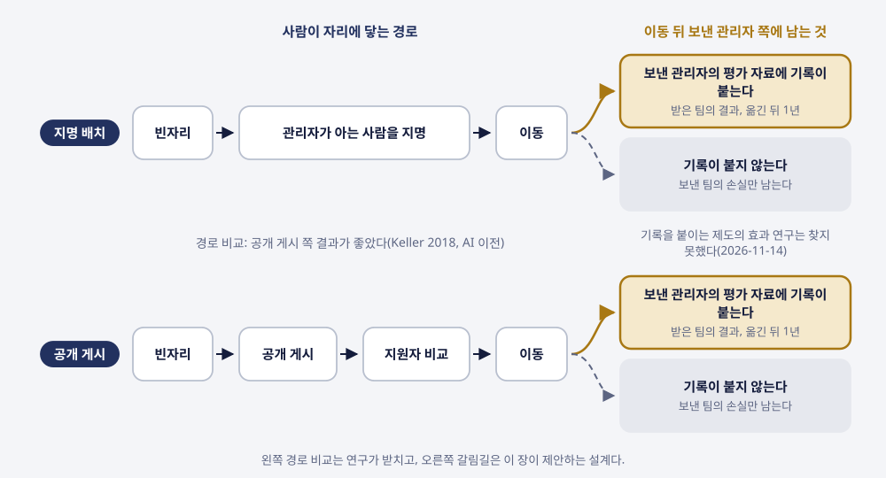
그림 18-1. 지명 배치 경로와 공개 게시
경로, 그리고 보낸 관리자의 평가 자료
위 줄과 아래 줄은 사람이 자리에 닿는 두 경로이고, 오른쪽 갈림길은 그
뒤에 보낸 관리자 쪽에 무엇이 남는지를 가른다. 왼쪽의 경로 비교는 연구가
받치고, 오른쪽 갈림길은 이 장이 제안하는 설계다.
내주는 관리자의 손익표
16장은 이 통로를 팀장의 자리에서 보았다. 그 장의 결론은 시장을 여는
것만으로는 부족하고 장치 4가지가 함께 있어야 한다는 것이었다. 도운
결과는 받은 팀이 적고, 팀원의 시간을 내준 팀장의 몫을 적고, 한 사람이
내놓는 시간에 상한을 두고, 참여하지 않아도 불이익이 없게 한다. 보내는
관리자 쪽 근거로 그 장이 든 것은 Haegele의 연구였다. 그 초록은 이렇게도
적는다. “managers who are evaluated on team performance have an
incentive to hoard workers.” 팀 성과로 평가받는 관리자에게는 사람을
붙잡아 둘 유인이 있다는 것이다. 그 장은 플랫폼 공급사가 내는 시간·비용
수치를 무엇을 어떻게 셌는지 공개되지 않았다는 이유로 쓰지 않았고, 이
장도 같은 원칙을 따른다.
그 결론을 회사 제도로 옮기려면 질문을 하나 더 해야 한다. 팀원 한
사람을 옆 팀 프로젝트에 3개월 보낸 팀장은 무엇을 잃고 무엇을 얻나?
잃는 것은 분명하다. 그 기간 팀의 산출이 줄고, 남은 사람의 일이 는다.
평가가 팀 성과만 본다면 그 손실은 고스란히 팀장의 평가표에 남는다. 얻는
것은 지금의 제도에서 대개 보이지 않는다. 보낸 사람이 옆 팀에서 낸 결과는
받은 팀의 성과로 잡히고, 그 사람이 돌아와 팀에 가져온 것도 따로 적히지
않는다. 손익표의 한쪽 칸만 채워져 있다. 이런 평가표를 그대로 둔 채
팀장들에게 시장에 사람을 내놓으라고 권하면, 팀장에게는 손해를 감수하라는
말로 들린다. 붙잡아 두기를 고치려는 회사가 먼저 들여다볼 곳은 이
손익표다.
삽화. 팀원을 옆 팀의 일에 내준 팀장 앞에는, 그 기간 비어
있는 자리와 늘어난 일이 남는다. 상상으로 그린 장면으로, 특정 인물이나
조직이 아니다.
빈 칸에 무엇이 들어갈 수 있을까? 앞 절의 연구에 단서가 있다. Minni의
연구는 좋은 관리자 밑에서 부하가 회사 안의 다른 자리로 더 많이 옮겨 갔고
그 이득이 오래 남았다고 보고했다. 그렇다면 부하를 다른 자리로 보낸
기록은 관리자를 평가할 자료의 하나가 될 수 있다(이 책의 추론). Keller와
Dlugos가 본 방향도 같다. 부하를 올려 보낸 관리자에게 지원자가 더
몰렸다면, 사람을 보낸 기록이 관리자에게 손해로만 남지는 않을 수 있다.
다만 연구 2편 모두 보낸 관리자에게 보상을 주는 제도를 시험한 것은
아니다. 그런 제도의 효과를 측정한 연구는 이 책의 리서치가 찾지
못했다.
그래서 아래는 제안이다. 이 책은 보낸 관리자 기록을
이렇게 정의하자고 제안한다. 팀원이 사내 인재 시장을 거쳐 다른 팀의 일을
맡았다면, 받은 팀이 적은 결과 기록을 보낸 관리자의 평가 자료에도 한 줄
붙인다. 받은 팀이 쓰는 결과 기록의 양식은 다음 19장에서 다룬다. 팀원이
아예 다른 팀으로 자리를 옮겼다면, 옮긴 뒤 1년 동안 그 사람이 받은 평가
결과를 보낸 관리자의 평가 자료에 붙인다. 29장에서 다룰 승진 심사는 이
기록을 사람을 기른 증거의 한 행으로 쓸 것이다. 이 정의를 언제 어떤 평가
자료에 붙일지는 임원이 정하고, 기록을 모으고 붙이는 일은 HR이 운영한다.
팀장이 할 수 있는 것은 보낸 사람과 받은 팀을 HR에 알리는 일까지다.
등록률과 이동률은 다른 숫자다
통로를 설계했으면 그 통로가 쓰이는지 볼 숫자가 필요하다. 회사들이
공개한 숫자부터 보자.
16장에서 2021년 보고서의 숫자로 본 Schneider Electric의 Open Talent
Market(OTM)은 연차 인사 보고서에 지표가 계속 공개되어 온 사례다. 출시
연도부터 보고서마다 다르게 적혀 있다. 2021년 보고서는 2020년에
출시했다고 쓰고, 2023년 보고서는 2019년 출시 이후라고 쓴다. 2023년 인사
보고서는 그해 말 직원의 85% 이상이 OTM에 있고, 한 달 평균 약 20,000명이
플랫폼을 찾았으며, 약 4,000건의 멘토링 관계가 맺어지고 약 3,000명이 사내
프로젝트에 참여했다고 밝혔다. 회사가 목표로 관리한 지표는 직원 개발
상호작용 건수다. 2020년 기준선 5,019건을 2025년까지 4배로 늘리겠다는
목표였고, 보고서가 적은 진척은 2021년 2.1배, 2023년 1.5배였다. 진척이
오르내렸고, 두 해의 지표 정의가 같은지는 보고서만으로 확인되지
않는다.
Mastercard는 2024년 5월 회사 뉴스룸에서 사내 인재 시장 Unlocked에
전체 인력의 90%가 등록했고 누적 프로젝트 시간이 500,000시간을 넘었다고
밝혔다. 이 프로젝트 시간이 배정된 시간인지 실제로 일한 시간인지는
공개되지 않았다. 같은 숫자라도 그 가운데 무엇이냐에 따라 뜻이 크게
달라진다. 배정 시간이라면 계획을, 실제 투입 시간이라면 일어난 일을 센
것이다.
표 18-1. 회사 3곳이 공개한 사내 인재 시장 지표
회사
공개한 지표
정의 공개 여부
연도별 변화
출처 성격
Schneider Electric(OTM)
직원 등록 비율 85% 이상, 월평균 방문 약 20,000명, 멘토링 약 4,000건,
사내 프로젝트 참여 약 3,000명, 직원 개발 상호작용 KPI
KPI 진척 2021년 2.1배, 2023년 1.5배(2020년 기준선 5,019건, 2025년
목표 4배). 2024·2025년 보고서는 이 책이 확보하지 못함
회사 연차 인사 보고서(1차)
Mastercard(Unlocked)
등록 90%, 누적 프로젝트 시간 500,000시간(2024-05)
“프로젝트 시간”이 배정 시간인지 실제 투입 시간인지 미공개
그 뒤 수치는 이 책이 원문으로 확인하지 못함
회사 뉴스룸(1차)
Unilever(Flex)
FY2020·FY2021 연차보고서에 사내 인재 시장 이용 실적
그 수치의 정의 대조는 이 책의 범위 밖
FY2022~FY2025 연차보고서 본문에 “Flex” 0건(2026-11-14 검색
기준)
미국 증권거래위원회 제출 연차보고서 20-F(1차)
표를 가로로 읽으면 공개된 숫자의 성격이 보인다. 회사 3곳이 낸 숫자는
대부분 등록 비율, 방문자 수, 상호작용 건수다. 사람이 실제로 다른 팀의
일을 맡았는지, 맡은 뒤 무엇이 달라졌는지를 보여 주는 숫자는 드물다.
마지막 줄은 아예 숫자가 멈춘 경우인데, 이 장의 끝에서 다시 보자.
등록률과 이동률을 왜 따로 세야 할까? 등록률은 시장에 문이 몇 개
열렸는지를 알려 주고, 이동률은 그 문으로 실제 누가 지나갔는지를 알려
준다. 앞 절의 연구가 결과의 차이를 본 곳은 문을 지나가는 경로였다.
등록률이 90%여도 실제 배정이 관리자 지명으로 이루어진다면, 시장은 지명
배치의 새 이름일 뿐이다. 이 책은 HR이 두 숫자를 같은 보고서에 따로 적고,
이동은 다시 공개 게시를 거친 것과 지명으로 된 것으로 나눠 세자고
제안한다. 프로젝트 시간도 배정 시간과 실제 투입 시간을 다른 열에 둔다.
숫자의 정의를 이렇게 정하는 일은 HR의 몫이고, 그 숫자를 경영 회의와 외부
보고에 어떤 이름으로 올릴지는 임원이 정한다.
회사가 스스로 낸 숫자도 이렇다면 공급사가 낸 숫자는 어떨까? 사내 인재
시장을 들이려는 회사는 공급사 제안서부터 받게 된다. 제안서에는 대개 큰
숫자가 실려 있다. 몇십만 시간을 되찾았다거나 채용 비용을 얼마 줄였다는
식이다. 이 책은 정의와 산정 방식이 공개되지 않은 그런 수치를 쓰지
않는다. 그 숫자를 받은 HR이 물을 질문으로 이 책은 4가지를 제안한다.
첫째, 시간의 정의다. 그 시간은 배정된 시간인가, 실제로 일한 시간인가,
아니면 아꼈다고 추정한 시간인가? Mastercard의 사례에서 보듯 회사 스스로
낸 숫자도 이 정의가 빠져 있곤 하다. 둘째, 산정 방식이다. 누가 어떤
자료로 셌고, 시간을 금액으로 바꿨다면 시간당 얼마로 계산했나? 셋째, 비교
기준이다. 도입 전과 비교했나, 도입하지 않은 부서와 비교했나, 외부 채용
비용과 비교했나? 외부 채용과 비교한 숫자라면 Bidwell의 연구처럼 같은
자리의 성과와 이직까지 함께 보았는지 묻는 편이 낫다. 넷째, 표본이다.
어느 회사의 몇 명을 어느 기간에 셌고, 스스로 참여한 사람만 센 것은
아닌가?
이 질문에 답을 받지 못한 숫자는 내부 보고서에 옮기지 않는 것이
바람직하다. 한번 경영 회의 자료에 오른 숫자는 정의 없이도 다음 해 목표의
기준선이 되기 때문이다. 공급사 수치를 검토하는 일은 HR이 하고, 정의를
받지 못한 숫자를 도입 근거로 쓰지 않는다는 원칙은 임원이 정한다.
아낀 시간이 통로에 들어오는 순서
규칙을 적기 전에, 17장의 결정이 이 통로에 어떻게 닿는지 순서를 그려
보자. 연구가 받치는 순서가 아니므로 아래는 전부 이 책의 제안이다.
출발점은 17장의 사용처 결정 규정이다. 분기 경영 회의가 아낀 시간
가운데 일부를 다른 팀 지원으로 보내기로 정하면, 그 결정은 “어느 본부가
분기에 몇 시간을 내놓는다”는 공급 쪽 숫자로 내려온다. 그다음은 수요
쪽이다. 도움이 필요한 팀이 무엇을 언제까지 얼마 동안 해 줄 사람이
필요한지 시장에 공개로 게시한다. 공급 쪽 숫자만 있고 게시된 요청이
없으면 시간은 다시 부탁으로 흘러간다. 지원한 사람 가운데 한 사람이
정해지면, 배정 전에 2가지를 확인한다. 보낸 팀장이 그 기간을 승인했는가,
그 사람의 도운 시간 기록이 상한 안에 있는가. 일이 끝나면 받은 팀이 결과
기록을 쓰고, 그 기록이 도운 사람의 평가 자료와 보낸 관리자의 평가 자료에
각각 붙는다.
순서마다 정하는 사람이 다르다. 다른 팀 지원으로 보낼 시간의 크기는
임원이 17장의 회의에서 정한다. 요청을 게시하는 일은 받는 팀의 팀장이,
기간을 승인하는 일은 보낸 팀장이 한다. 게시의 형식, 상한 확인, 기록을
붙이는 일은 HR이 운영한다. 이렇게 적어 놓고 보면 사내 인재 시장의
소프트웨어가 맡는 것은 이 순서의 일부, 곧 게시와 지원과 기록의 저장이다.
나머지는 회사가 규칙으로 정해야 하는 일이다.
보내는 관리자의 손익을 규칙으로 적는다
이제 통로의 규칙을 적을 차례다. 사내 인재 시장의 규칙표는 보내는
관리자의 평가 자료에 무엇이 붙는지부터 적는다. 붙잡아 두기의 유인이
거기서 생기기 때문이다. 이 책은 규칙 6개를 제안한다. 첫째와 둘째 규칙은
경로와 보낸 관리자를, 셋째와 넷째는 참여하는 사람을, 다섯째와 여섯째는
평가와 숫자를 다룬다.
첫째 규칙은 공개 게시를 기본으로 하는 것이다. 사내 인재 시장의
프로젝트와 빈자리는 공개로 게시하고, 지명으로 배치할 때는 사유를 적어
HR에 남긴다. 급한 일까지 모두 공개 게시를 거치게 할 필요는 없다. 다만
지명이 기본값이 되지 않게, 지명에 사유를 다는 쪽이 번거롭도록 설계해
두자. 근거는 Keller의 비교이고, AI 이전 자료다. 공개 게시 비율을 몇 %로
둘지에는 근거가 없으니 회사가 정한다.
둘째는 앞 절에서 정의한 보낸 관리자 기록을 보낸 관리자의 평가 자료에
붙이는 것이다.
셋째는 한 사람이 시장에 내놓는 시간의 상한이다. 시간 상한은 이 장의
규칙표 한곳에서만 정한다. 19장의 결과 기록 카드와 챔피언 역할 헌장도 이
행을 따른다. 상한을 주 몇 시간, 또는 근무 시간의 몇 %로 둘지는 근거가
없다. 이 책의 리서치는 상한 수준을 받치는 연구를 찾지 못했다. 그러니
처음 숫자는 회사가 정하고, 1년 뒤 초과 건수를 보고 고친다. 첫 숫자를
정할 자료로는 팀장들이 16장의 4주 기록표에 적어 온 “팀 밖으로 간 시간”이
가장 가깝다. 상한을 넘겨야 할 때는 보낸 팀장과 받는 팀장이 함께 승인하고
HR이 기록한다. 상한을 관리하려면 시간을 적어야 하는데, 그 기록을
도운 시간 기록이라고 부르자. 도운 시간 기록은 상한을
관리하는 데만 쓰고 평가 자료에 붙이지 않는다. 저장 위치는 인재 시장
시스템으로 하고, 평가 시스템과 연결하지 않는다. 자기 보고로 채우는
시간이 평가에 들어가는 순간 부풀기 쉽다는 점은 23장에서 다룰 사용량
지표와 같은 문제다.
넷째는 참여하지 않아도 불이익이 없다는 규칙이다. 시장에 나서지 않은
것을 평가나 배치에서 불리하게 쓰지 않는다. 셋째 규칙이 잘하는 사람에게
일이 몰리는 것을 막는다면, 넷째 규칙은 시장 참여가 사실상의 의무로
바뀌는 것을 막는다.
다섯째는 관리자를 팀 성과만으로 평가하지 않는다는 규칙이다. 관리자
평가에는 팀 성과와 함께 보낸 관리자 기록을 넣는다. 팀 성과를 볼 때도
사람을 보낸 기간은 따로 표시해 두자. 3개월 동안 한 사람을 내준 팀의 분기
목표를 그대로 두고 성과를 비교하면, 앞에서 본 손익표의 손실 칸은 그대로
남는다. 목표를 얼마나 조정할지는 회사마다 다르겠지만, 조정했는지 여부는
평가 자료에 남기는 편이 낫다. Haegele의 초록이 받치는 것은 팀 성과
평가가 붙잡아 둘 유인을 만든다는 데까지이고, 이 규칙이 그 유인을
줄인다는 것은 이 책의 추론이다.
여섯째는 공개 지표의 정의를 함께 공개하는 것이다. 사내 보고든 외부
보고든 시장 지표를 낼 때는 무엇을 언제 어떻게 셌는지 함께 적는다. 표
18-1이 보여 준 빈칸을 자기 회사 보고서에서는 만들지 않는 규칙이다.
권한을 나눠 두자. 규칙 6개를 채택할지는 임원이 정하고, 양식과 기록은
HR이 운영한다. 시장 참여가 근무 시간 밖으로 넘어가거나 겸직에 가까운
형태가 된다면 근로 조건의 문제가 되므로 노동자 대표와 법무가 함께 정할
일이다(국내 적용은 법무 확인 필요).
규칙마다 근거의 두께는 다르다. 공개 게시가 지명보다 결과가 좋았다는
것은 동료 심사를 거친 실증이지만 AI 이전 자료다. 회사들이 공개한 숫자가
등록률과 건수에 몰려 있다는 것은 공시 관찰이다. 2026년 11월 14일까지 이
책의 리서치가 찾지 못한 것은 4가지다. 사내 인재 시장 자체의 효과를
독립적으로 측정한 연구, 보낸 관리자에게 보상을 준 제도의 효과 연구, 시간
상한 수준의 근거, 참여하지 않은 사람의 평가를 보호한 제도의 효과 연구다.
규칙표의 「근거 수준」 열이 행마다 다른 이유다.
다음 분기에 쓸 제도 도구: 사내 인재 시장 운영 규칙표
팀장이 들고 올 것: 16장 「남은 시간을 옆 팀으로
보내는 길」에 따라 팀장이 적어 온 팀별 지원 가능 시간과 4주 기록표의 “팀
밖으로 간 시간” 열.
이 도구는 임원판 규칙 체크리스트와 HR판 운영 양식으로 되어 있다.
임원판은 규칙 6개를 한 줄씩 놓고 채택, 보류, 사유를 적는 표다. 6개를
한꺼번에 채택하지 않아도 된다. 보류한 규칙에는 보류 사유와 다시 볼
날짜를 적어 두자. 26장에서 다룰 임원 의사결정 사안 목록은 이 사유를
그대로 옮겨 1년 뒤 다시 보게 된다.
HR판은 4부분이다. 운영 지표 정의표는 등록률과 이동률을 나누고
프로젝트 시간을 배정과 실제 투입으로 나눈다. 도운 시간 기록은 셋째
규칙의 상한을 관리하는 양식이다. 공급사 수치 검토 질문 4개와 게이밍 점검
행은 숫자를 받거나 낼 때 쓴다. 게이밍 점검 행은 이 규칙표 자체가 지표가
되었을 때 생길 일을 미리 묻는다. 이동률을 목표로 삼으면 짧고 형식적인
이동이 늘 수 있고, 공개 게시 비율을 목표로 삼으면 이미 지명한 사람을
형식상 게시하는 일이 생길 수 있다. 시범 범위는 직군 하나, 기간은 두
분기로 잡는다. 양식 예시와 회의 자료의 사람 칸에는 실명 대신 팀 코드로
적는다.
표 18-2. 사내 인재 시장 운영 규칙표 (임원판)
규칙
결정 문장 (예시)
채택·보류·사유
누가 정하나
근거 수준
1년 뒤 다시 볼 지표
1. 공개 게시 우선
“사내 인재 시장의 프로젝트와 빈자리는 공개 게시를 기본으로 하고,
지명 배치는 사유를 적어 HR에 남긴다.”
(다) 임원 결정, (나) HR 운영
근거(Keller 2018, AI 이전). 비율은 제안
공개 게시를 거친 이동 비율
2. 보낸 관리자 기록
“팀원을 보낸 관리자의 평가 자료에 받은 팀의 결과 기록을, 자리를 옮긴
경우 옮긴 뒤 1년의 평가 결과를 붙인다.”
(다) 임원 결정, (나) HR 운영
추론(Minni, Keller·Dlugos), 제도는 제안
보낸 관리자 기록이 붙은 평가 건수
3. 한 사람 시간 상한 (기준 행)
“한 사람이 시장에 내놓는 시간은 주 ○시간(또는 근무 시간의 ○%)을 넘지
않는다. 넘을 때는 보낸 팀장과 받는 팀장이 함께 승인하고 HR이
기록한다.”
(다) 상한 수준 결정, (나) 기록
제안(상한 수준의 근거 없음)
상한 초과 건수, 초과가 몰린 사람 수
4. 불참 불이익 없음
“시장에 참여하지 않은 것을 평가와 배치에서 불리하게 쓰지
않는다.”
(다) 임원 결정
제안
참여한 사람과 참여하지 않은 사람의 평가 분포
5. 팀 성과만으로 관리자를 평가하지 않음
“관리자 평가에는 팀 성과와 함께 보낸 관리자 기록을 본다.”
(다) 임원 결정
근거(Haegele, 붙잡아 둘 유인), 규칙의 효과는 추론
팀 성과 외 항목이 들어간 관리자 평가 비율
6. 공개 지표의 정의 공개
“사내외에 내는 시장 지표에는 무엇을 언제 어떻게 셌는지 함께
적는다.”
(나) HR, 외부 공개는 (다) 임원
근거(회사 3곳 공개 지표 관찰), 규칙은 제안
정의를 함께 낸 지표 비율
표 18-3. 운영 지표 정의표와 도운 시간 기록
(HR판)
항목
정의
세지 않는 것
주기
등록률
시장에 등록한 직원 ÷ 대상 직원
등록을 이동으로 세지 않는다
월 1회
이동률
실제로 다른 팀의 일을 맡은 직원 ÷ 대상 직원
신청만 한 경우
월 1회
공개 게시 이동 비율
공개 게시를 거친 배정 ÷ 전체 배정
게시 기간이 형식에 그친 경우는 따로 표시
월 1회
프로젝트 시간 (배정)
배정 당시 약속한 시간
실제 투입으로 보고하지 않는다
월 1회
프로젝트 시간 (실제 투입)
받은 팀이 확인한 실제 투입 시간
배정 시간으로 대신 채우지 않는다
월 1회
도운 시간 기록
사람별로 시장에 내놓은 시간. 셋째 규칙의 상한 관리에만 쓴다
평가 자료에 붙이지 않는다. 저장은 인재 시장 시스템, 평가 시스템과
연결하지 않는다
월 1회
표 18-4. 공급사 수치 검토 질문과 게이밍 점검
(HR판)
구분
질문
답을 받지 못하면
공급사 수치 1
그 시간은 배정 시간인가, 실제 투입 시간인가, 아꼈다고 추정한
시간인가?
내부 보고서에 옮기지 않는다
공급사 수치 2
누가 어떤 자료로 셌나? 금액으로 바꿨다면 시간당 얼마로
계산했나?
내부 보고서에 옮기지 않는다
공급사 수치 3
무엇과 비교했나(도입 전, 미도입 부서, 외부 채용)?
비교 없는 수치로 표시한다
공급사 수치 4
어느 회사의 몇 명을 어느 기간에 셌나? 스스로 참여한 사람만
셌나?
표본 미공개로 표시한다
게이밍 점검 1
이동률을 올리려 짧고 형식적인 이동이 늘고 있나?
이동 기간 분포를 함께 본다
게이밍 점검 2
공개 게시가 지명 뒤의 형식 게시로 바뀌고 있나?
게시 기간과 지원자 수 분포를 함께 본다
표 18-5. 공통 행
항목
내용
근거 수준
1년 뒤 다시 볼 지표
공개 게시를 거친 이동 비율, 보낸 관리자 기록이 붙은 평가 건수, 상한
초과 건수
제안
시범 범위
직군 하나, 두 분기
제안
운영 부담
HR 인재 담당, 월 1회 지표 집계, 인재 시장 시스템과 인사 시스템에
저장
제안
16장에서 11만 시간이라는 숫자로 본 Unilever는 미국 증권거래위원회에
내는 연차보고서(20-F)에서 FY2020과 FY2021에 사내 인재 시장 Flex를
내세웠다. 그런데 FY2022부터 FY2025까지의 연차보고서 본문에는 “Flex”라는
말이 한 번도 나오지 않는다. FY2023 보고서는 직원의 경력 개발을 돕는 다른
이름의 사내 프로그램 Shape Your Own Adventure를 적는다. 공시에서 더
보고하지 않았다고 플랫폼을 접었다고 볼 근거는 없다. 이 책이 확인한 것은
회사가 무엇을 더는 숫자로 내놓지 않았는가까지다. 그래도 이 공백 앞에서는
한 가지를 묻게 된다. 사람은 보내졌는데, 보내진 사람이 그곳에서 한 일은
어디에 적혔을까? 이 장의 규칙표는 보낸 관리자 쪽 칸을 채운다. 받은 팀 쪽
칸은 아직 비어 있다.
19장. 도운 일은 받은 팀이 쓴 결과 기록으로 평가 자료에 붙인다
임원의 자리
한 개발자 블로그 글을 두고 Hacker News에서 벌어진 토론에, 승진 문서에
관한 댓글이 하나 달렸다. 쓴 사람은 빅테크와 그 주변 회사들의 직급 기준이
모두 ‘scope’, ‘impact’, ’dealing with ambiguity’로 모인다고 적은 뒤
이렇게 끝맺었다. “You can’t put anything related to glue work on your
promo doc.”(2025-01, 커뮤니티 의견) 남이 막힌 곳을 풀어 주고 새로 온
사람이 빨리 일하게 돕는 일, 곧 glue work는 승진 문서의 어느 칸에도 적을
자리가 없다는 말이다.
한 사람의 경험담이지만, 이 댓글이 가리키는 빈칸은 임원과 HR에게
낯설지 않을 것이다. 승진 문서와 평가 양식은 대개 그 사람이 맡아서 낸
결과를 묻는다. 그 사람 덕분에 다른 사람이 낸 결과를 적는 칸은 드물다.
18장의 사내 인재 시장으로 옆 팀에 간 사람이 한 일도 이 빈칸에 떨어지기
쉽다. 받은 팀의 성과로는 잡히지만, 도운 사람의 승진 문서에는 남지
않는다.
AI가 들어온 뒤 이 빈칸은 더 넓어질 수 있다. 동료가 에이전트에게 맡긴
산출물을 대신 확인해 주는 일, 잘 돌아가는 업무 흐름을 팀이 따라 쓸 수
있게 정리하는 일, 회사 공용 에이전트가 틀린 사례를 모아 운영 조직에
보내는 일이 새로 생긴다. 셋 다 그 사람의 산출물로는 잘 보이지 않는다.
이런 일은 어떤 조건에서 생기고, 회사는 어떤 형식으로 인정해야 할까?
도운 일이라는 말의 범위
이 장에서 도운 일은 자기 산출물 밖에서 다른 사람이나 다른 팀의 일을
낫게 만든 일을 가리킨다. glue work라는 말을 풀어 쓴 글로 Tanya Reilly의
「Being Glue」(2019년 발표)가 있다. 그는 이 글에서 팀에서 누가 막혀
있는지 알아채고 풀어 주는 일(“noticing when other people in the team are
blocked and helping them out”), 새로 온 사람을 더 빨리 일하게 만드는
일(“onboarding the new people and making them productive faster”) 같은
일을 늘어놓은 뒤 “I call all of this glue work.”라고 적었다. 학술 문헌의
이름은 15장에서 본 조직 시민 행동(OCB)이다. 이 장은 glue work와 조직
시민 행동을 합쳐 도운 일이라고 부른다.
기록되지 않는 도움이 돕는 사람에게 비용이 된다는 연구들은 15장과
16장에서 이미 보았다. 돕는 데 시간을 더 쓴 직원의 연봉 인상과 승진이
늦었다는 Bergeron 외(2013), 조직의 받침이 없을 때 돕는 일이 피로로
이어졌다는 Bolino 외(2015)다. 16장은 이 비용을 줄이는 장치로, 도움받은
팀이 무엇이 바뀌었는지를 적고 쓴 시간은 적지 않는 기록을 제안했다. 이
장은 그 장치를 회사의 평가 자료에 붙는 양식으로 만든다. 그 전에 15장과
16장이 보지 않은 질문 2개를 먼저 보자. 도운 일은 애초에 어떤 조건에서
생기는가, 그리고 어떤 말로 인정받아야 하는가.
기여는 언제 생기나
Wasko와 Faraj는 한 법률 전문가 협회가 운영하는 온라인 실무
네트워크에서 사람들이 왜 자기 지식을 내놓는지 분석했다(MIS Quarterly,
2005). 초록의 결론은 이렇다. “people contribute their knowledge when
they perceive that it enhances their professional reputations, when they
have the experience to share, and when they are structurally embedded in
the network.” 사람들은 기여가 자기의 전문가 평판을 높인다고 느낄 때,
나눌 경험이 있을 때, 그 네트워크 안에 구조적으로 자리 잡고 있을 때
지식을 내놓았다는 것이다. 두 연구자가 “Surprisingly”라는 말로 덧붙인
발견도 있다. 기여는 남에게서 돌려받을 것이라는 기대나 네트워크에 대한
높은 헌신과 상관없이 일어났다.
이 결과는 도운 일을 설계하려는 회사에 구체적인 단서를 준다. 이 3가지
조건 가운데 회사가 손댈 수 있는 조건은 평판이다. 경험은 사람마다 다르고
네트워크 안의 자리는 시간이 쌓여야 생기지만, 평판은 누가 무엇을 했는지
다른 사람이 보고 기억할 때 쌓인다. 돌려받을 기대가 없어도 기여가
일어났다는 발견은 거꾸로 읽을 수도 있다. 도운 사람에게 같은 크기의
도움을 되갚게 하는 장치보다, 그 사람이 한 일을 남들이 알게 하는 장치가
더 중요할 수 있다. 셋째 조건인 네트워크 안의 자리도 회사가 아주 손댈 수
없는 것은 아니다. 18장의 사내 인재 시장으로 다른 팀의 일을 맡아 본
사람은 그 팀과 이어진다. 통로를 여는 일은 다음 기여의 조건을 만드는
일이기도 하다. 여기까지가 이 책의 추론이다. Wasko와 Faraj가 본 곳은 회사
밖 전문가 네트워크의 자발적 기여였고, AI 이전이다.
AI 이후의 변화를 직접 본 연구도 있다. del Rio-Chanona, Laurentsyeva,
Wachs는 ChatGPT 공개 뒤 6개월 안에 개발자 질의응답 사이트 Stack
Overflow의 활동이 러시아어·중국어 대응 사이트에 비해 25% 줄었다고
보고했다(PNAS Nexus, 2024). 연구진은 이 숫자를 줄어든 크기의 하한으로
해석했고, 게시물의 품질은 달라지지 않았다고 적었다. 공개된 곳에서 서로
묻고 답하던 일의 일부가 AI와의 대화로 옮겨 갔을 수 있음을 보여 주는
숫자다. 이 해석은 이 책의 것이고, 연구가 사람들이 어디로 옮겨 갔는지를
직접 추적한 것은 아니다.
연구 2편을 회사 안으로 옮겨 보면 이렇다(이 책의 추론). 회사 안에서도
동료에게 묻던 질문 가운데 상당수가 에이전트로 옮겨 갈 수 있다. 그러면
사람 사이에 남는 도움은 에이전트가 대신하기 어려운 일, 예컨대 맥락을
아는 사람의 확인이나 팀이 따라 쓸 방식의 정리 쪽으로 옮겨 갈 수 있다.
그런 일일수록 결과가 남의 산출물 안에 녹아들어 보이지 않는다. 평판이
쌓일 자리가 없으면, Wasko와 Faraj가 찾은 첫째 조건이 비게 되고 기여가 줄
수 있다. 이 연결을 직접 측정한 연구는 이 책의 리서치가 찾지 못했다.
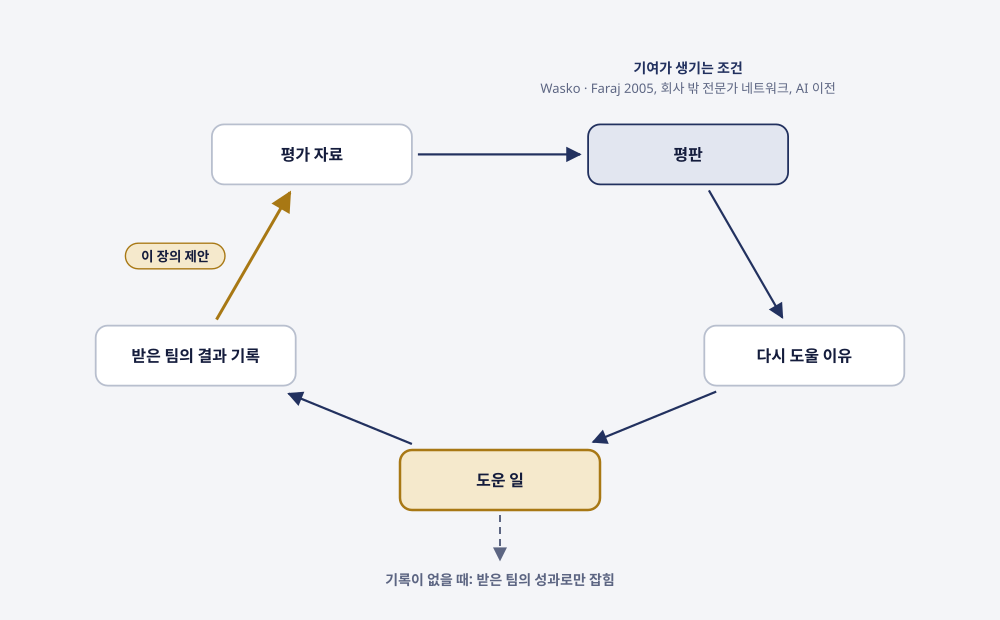
그림 19-1. 도운 일이 다시 도울 이유로
돌아오는 고리
그림 19-1의 고리에서 연구가 받치는 칸은 평판이 기여를 부른다는 마지막
구간뿐이다. 받은 팀의 결과 기록을 평가 자료에 붙이는 앞의 두 화살표는 이
장의 제안이다. 고리 아래로 빠져나가는 점선은 지금 많은 회사에서 도운
일이 가는 길이다.
표 19-1. 도운 일과 기여에 관한 연구
구분
연구
표본·맥락
발견
AI 이전 여부
15·16장
Bergeron 외(Journal of Management, 2013)
전문 서비스 기업 직원 3,680명, 결과로 통제하는 조직
동료를 돕는 데 시간을 더 쓴 직원의 연봉 인상이 작고 승진이
느렸다
AI 이전
15·16장
Bolino 외(Journal of Applied Psychology, 2015)
직원 273명과 동료, 여러 시점
조직 지원을 낮게 느낄 때 돕는 일과 피로의 관계가 강했고, 피로는 이후
돕는 일을 줄였다
AI 이전
15·16장
Babcock 외(American Economic Review, 2017)
모두가 남이 해 주길 바라는 과제의 배분(초록 기준. 16장은 정의만
인용)
모두가 남이 해 주길 바라는, 승진에 덜 도움이 되는 일에 여성이 더
자원하고, 더 요청받고, 요청을 더 받아들였다
AI 이전
이 장
Wasko·Faraj(MIS Quarterly, 2005)
법률 전문가 협회의 온라인 실무 네트워크 1곳
평판이 높아진다고 느낄 때, 나눌 경험이 있을 때, 네트워크에 자리
잡았을 때 기여했다. 돌려받을 기대와는 상관없었다
AI 이전
이 장
del Rio-Chanona 외(PNAS Nexus, 2024)
개발자 질의응답 사이트와 러시아어·중국어 대응 사이트 비교
ChatGPT 공개 뒤 6개월 안에 활동이 25% 줄었다(하한 해석), 게시물 품질
변화 없음
AI 이후
앞의 3행은 기록되지 않는 도움의 비용을, 뒤의 2행은 기여가 생기고
줄어드는 조건을 본다. 연구 5편 가운데 회사가 도운 일을 평가에 공식으로
반영했을 때 무엇이 달라지는지 본 연구는 없다.
어떤 말로 인정하나
평판이 쌓이려면 누군가 도운 일을 알아보고 말해 주어야 한다. 그렇다면
어떤 말로 인정해야 할까? Reilly는 「Being Glue」에서 관리자에게 이렇게
조언했다. “If you see this situation, where a glue person is the only
reason something launched, publicly give them credit!” 어떤 일이 출시된
이유가 그 사람뿐이라면 공개적으로 공을 돌리라는 것이다. 바로 이어지는
문장이 더 중요하다. “And not for helping, but for leading.” 도와준 공이
아니라 이끈 공으로 인정하라는 말이다. 같은 글은 이런 경고도 담았다. “In
fact, doing glue work too early can be career limiting, or even push
people out of the industry.” 경력 초기에 glue work를 너무 일찍 하면
경력이 막히거나 업계를 떠나게 될 수도 있다는 것이다.
이 경고는 회사가 따로 챙길 대목이다. 도운 일이 기록되지 않는
회사에서는 그 일을 떠맡은 사람이 손해를 보는데, Reilly의 말대로라면 그
손해는 경력 초기에 더 크다. 15장과 16장에서 본 Babcock 외의 연구는
모두가 남이 해 주길 바라는 일을 여성이 더 자주 요청받고 더 자주 맡았다는
것도 보였다(표 19-1). 그래서 이 책은 카드가 누구에게 붙는지만큼 누가
요청을 받는지도 함께 보자고 제안한다. 연차가 낮은 사람에게 요청이
몰리는데 그 사람의 카드는 적다면, 도운 일은 일어나고 있지만 기록은 비어
있다는 신호다.
Reilly의 조언을 평가 양식으로 옮기면 2가지가 보인다. 하나는 인정이
공개되어야 한다는 점이다. 개인 면담에서 고맙다고 하는 말은 평판으로
쌓이지 않는다. 다른 하나는 인정의 문장이 결과를 주어로 삼아야 한다는
점이다. “옆 팀을 많이 도왔다”는 문장은 승진 문서에서 약하다. “이 사람이
맡은 확인 덕분에 옆 팀의 ○○가 예정대로 나갔다”는 문장은 ‘impact’ 칸에
들어갈 수 있다. 이 해석은 이 책의 것이다. Reilly의 글은 실무자 발표를
글로 옮긴 것이고, 효과를 측정한 연구가 아니다.
모든 도운 일이 같은 무게는 아니라는 목소리도 같은 Hacker News 토론에
있었다. 한 댓글은 glue work가 보상받지 못한다는 데는 동의하면서, 어떤
glue work를 먼저 할지 셋으로 나눠 보라고 권했다. 기술 명세처럼 매번
제대로 해야 하는 일, 기술 부채처럼 관리자가 알아볼 만한 문제가 될 때까지
뒤로 미뤄 두는 일, 온보딩 문서처럼 자기 일을 편하게 하려고 하는
일이다(커뮤니티 의견). 원 글의 주장과 다른 관점으로, 자기 노력은 한 사람
몫만큼 늘지만 모두의 노력을 낫게 하는 일은 곱셈으로 늘어나니 glue work는
들인 노력보다 큰 보상을 얻는 가장 좋은 방법 가운데 하나라는 댓글도
있었다(커뮤니티 의견). 두 댓글은 서로 다른 말을 하는 것 같지만 회사가 쓸
교훈은 하나로 모인다. 무엇을 도운 일로 기록할지 범위를 정해 두지 않으면,
기록은 모든 일을 담으려다 아무것도 구별하지 못하게 된다.
이 책은 범위를 이렇게 정하자고 제안한다. 기록 대상은 다른 팀이나 다른
사람이 요청했고, 그 결과가 받은 쪽의 일에 남은 도움이다. 자기 팀 안의
일상적인 협업은 평소 평가에서 보고, 아무도 요청하지 않았고 결과도
확인되지 않는 도움은 카드로 만들지 않는다. 범위를 이렇게 좁혀야 다음
절의 카드가 쓸 만한 분량으로 남는다.
받은 팀이 쓰는 카드
이 책은 도운 일의 기록을 받은 팀이 쓰자고 제안한다.
왜 도운 사람의 자기 서술로는 부족할까? 이유는 3가지다. 첫째, 도운
일의 결과는 받은 팀의 일 안에 있다. 도운 사람은 자기가 무엇을 했는지는
알지만, 그 덕분에 받은 팀에서 무엇이 바뀌었는지는 받은 팀만큼 알지
못한다. 둘째, 자기 서술은 평가 시즌마다 쓰는 사람의 부담이 되고, 쓰는
솜씨에 따라 같은 일이 다르게 읽힌다. 셋째, 평판은 남이 알아볼 때
쌓인다는 앞의 발견과도 맞는다. 받은 팀이 쓴 한 줄은 그 자체로 남이
알아본 기록이다. 셋째 이유는 이 책의 추론이다.
삽화. 도운 사람이 아니라 도움을 받은 팀이, 그 결과 자기 팀의
일에서 무엇이 바뀌었는지를 카드에 적는다. 상상으로 그린 장면으로, 특정
인물이나 조직이 아니다.
카드에는 시간을 적지 않는다. 도운 사람이 몇 시간을 썼는지는 18장
규칙표의 셋째 행, 한 사람 시간 상한을 관리하는 도운 시간 기록에만
적는다. 그 기록은 평가 자료에 붙지 않는다. 카드에 시간 칸을 두면 시간을
많이 쓴 도움이 좋은 도움처럼 읽히고, 자기 보고로 채우는 시간이 평가에
들어간다. 23장에서 다룰 사용량 지표의 문제가 카드 안에서 되풀이된다.
카드의 항목은 6개다. 요청한 팀(팀 코드), 도운 사람, 받은 것, 그 결과
바뀐 것, 다시 요청할지, 받은 팀의 확인자. 핵심은 “그 결과 바뀐 것”
칸이다. Reilly의 조언대로 결과를 주어로 적는다. 확인자는 요청한 팀에서
그 결과를 책임지는 사람이 맡는다. 카드는 도운 사람의 평가 자료에 붙고,
18장에서 정의한 대로 보낸 관리자의 평가 자료에도 한 줄 붙는다.
카드를 평가 자료의 어느 항목에 붙일지는 임원이 정한다. 결과 항목 옆에
둘 수도 있고, 협업이나 기여를 보는 항목을 따로 둘 수도 있다. 어느 쪽이든
평가자가 카드 수를 점수로 바꾸지 않는다는 원칙은 함께 정해 두는 편이
낫다. 카드 3장이 1장보다 낫다는 식으로 읽히는 순간 카드는 사용량과 같은
길을 걷는다.
그 길은 멀지 않다. 23장에서 다룰 연구들은 세기 쉬운 숫자에 보상이
걸리면 사람들이 그 숫자를 만든다는 것을 보여 준다. 카드도 세기 시작하면
지표가 된다. 그래서 HR은 카드를 받을 때 3가지를 점검하는 것이 좋다.
특정한 팀 한 쌍이 서로에게만 카드를 써 주고 있지 않은가. 카드가 평가
직전, 분기 말에 몰리고 있지 않은가. 확인자가 요청한 팀에서 그 결과를
실제로 책임지는 사람인가, 아니면 형식상 서명만 하는 사람인가. 질문 3개
모두 카드 하나만 봐서는 답할 수 없고 분포를 봐야 보인다. 카드를 평가
시스템에 첨부해 모으자는 이유가 여기에 있다.
권한을 나눠 보자. 카드를 평가 자료의 어느 항목에 붙일지, 카드 수를
점수로 쓰지 않는다는 원칙은 임원이 정한다. 양식과 점검은 HR이 운영한다.
팀장이 할 수 있는 일은 받은 팀의 팀장으로서 카드를 쓰는 일, 그리고 옆
팀에서 팀원에게 직접 온 부탁을 18장의 시장으로 돌리는 일이다.
카드와 헌장이 어디까지 근거 위에 서 있는지 짚어 두자. 기여가 평판이
쌓일 때 일어났다는 것, AI 이후 공개 지식 공유 활동이 줄었다는 것은 동료
심사를 거친 연구가 받친다. 인정의 형식은 실무자 글과 커뮤니티 의견이다.
도운 일을 평가에 공식 반영한 회사의 1차 규정, 그런 반영의 효과 연구,
받은 팀이 쓰는 기록과 자기 서술을 비교한 연구, 그리고 다음 절의 챔피언
역할이 효과가 있는지 본 연구는 2026년 11월 14일까지 이 책의 리서치가
찾지 못했다. 카드와 점검 질문과 헌장은 모두 제안이다.
챔피언 역할 헌장
도운 일은 고르게 퍼지지 않는다. AI를 잘 쓰게 된 사람에게 요청이
몰리고, 원래 하던 일은 그대로인 채 요청만 늘어난다. 22장 「잘한다는
이유로 일만 늘지 않게」가 팀장의 자리에서 보는 장면이고, 15장이 실무자의
자리에서 본 장면이다. 회사 단위에서는 이 쏠림을 아예 공식 역할로 만드는
선택이 있다. 챔피언, 곧 사내 확산을 맡는 사람을 지정하는 것이다. 공식
역할로 만들면 요청이 몰리는 사람에게 이름과 자리가 생긴다. 그런데 헌장
없이 이름만 붙이면 몰리던 요청이 공식 업무로 바뀔 뿐이다.
이 안내와 앞에서 본 연구들을 합쳐, 이 책은 헌장에 항목 5개를 적자고
제안한다. 첫째, 시간 약속은 18장 규칙표의 셋째 행, 한 사람 시간 상한을
따른다. 챔피언이라고 상한을 따로 두면 기준이 2개가 되고, 결국 높은 쪽이
기준이 된다. 둘째, 맡지 않는 일을 적는다. IT 지원 창구, 보안·법무 판단,
공식 교육 과정 운영, 도입 실적 집계는 챔피언의 일에서 뺀다. 셋째, 임기와
교대다. 임기를 정하고 다음 사람에게 넘기는 시점을 미리 적어 두면 한
사람에게 역할이 굳지 않는다. 앞에서 본 피로 연구를 생각하면 교대는 돕는
사람을 지키는 장치이기도 하다(이 책의 추론). 넷째, 평가 반영은 카드와
같은 경로로 한다. 챔피언이 도운 결과는 받은 팀이 카드에 적고, 챔피언
활동 횟수나 모임 개최 수를 따로 세지 않는다. 다섯째, 그만둘 때의 인계다.
챔피언이 만든 자료와 운영하던 모임을 누구에게 넘기는지 적는다.
챔피언을 두지 않는 선택도 있다. 요청이 몇 사람에게 몰리지 않고 여러
팀에 고르게 퍼져 있다면, 공식 역할을 만들기보다 카드와 18장의 상한만으로
충분할 수 있다. 몇 사람에게 몰리는지는 카드 분포와 도운 시간 기록을 한
분기쯤 모아 보면 보인다. 몰림이 확인되기 전에 챔피언부터 지정하면,
이름이 붙은 사람에게 요청이 더 몰리는 일도 생길 수 있다(이 책의
추론).
챔피언을 공식 역할로 둘지, 그 평가를 어느 경로로 반영할지는 임원이
정한다. 헌장 양식과 교대 일정은 HR이 운영한다. 챔피언 한 사람이 자기
시간을 어떻게 지키고 요청을 어떻게 거절하는지는 개인의 일하는 법이라
15장의 몫이다. 이 장은 회사가 그 사람에게 무엇을 약속하는지만
다룬다.
다음 분기에 쓸 제도 도구: 도운 일 결과 기록 카드와 챔피언 역할
헌장
팀장이 들고 올 것: 16장을 따라 팀장이 적어 둔,
팀원이 옆 팀으로 가서 한 일의 목록.
이 도구는 받은 팀이 쓰는 한 장짜리 카드와 한 쪽짜리 챔피언 헌장으로
되어 있다. 임원판은 결정 문장 3개다. 카드를 평가 자료의 어느 항목에
붙일지, 챔피언을 공식 역할로 둘지, 챔피언의 평가를 어느 경로로 반영할지.
시간 상한은 이 도구에서 정하지 않는다. 18장 규칙표의 셋째 행을
따른다.
HR판은 카드 양식, 카드 점검 질문 3개, 챔피언 헌장 항목으로 되어 있다.
카드를 처음 돌릴 때는 팀장들이 들고 온 목록에서 지난 분기의 일 하나를
골라 받은 팀에게 시험 삼아 써 달라고 해 보자. 첫 카드 몇 장을 놓고 “그
결과 바뀐 것” 칸이 결과를 주어로 쓰였는지 함께 읽어 보면, 양식을 고칠
곳이 빨리 보인다. 예시 값으로 한 장을 적어 보면 이렇다. 받은 것은 “고객
응대 에이전트의 답변을 검수하는 기준 초안”, 그 결과 바뀐 것은 “검수에서
다시 쓰는 답변이 줄었고, 기준을 팀 전원이 같은 문서로 쓰게 됐다”, 다시
요청할지는 “예, 기준을 고칠 때”. 이 카드에는 몇 시간이 들었는지가
없지만, 평가자가 읽을 것은 다 있다. 시범은 본부 하나에서 한 평가 주기
동안 돌린다. 카드의 팀 칸에는 실명 대신 팀 코드로 적는다.
표 19-2. 결정 문장 (임원판)
결정
결정 문장 (예시)
누가 정하나
근거 수준
1년 뒤 다시 볼 지표
카드를 붙일 자리
“도운 일 결과 기록 카드는 평가 자료의 ○○ 항목에 붙이고, 평가자는
카드 수를 점수로 바꾸지 않는다.”
(다) 임원 결정, (나) HR 운영
근거(Wasko·Faraj, 평판과 기여). 카드 제도는 제안
카드가 붙은 평가 건수, 카드 분포
챔피언을 공식 역할로 둘지
“AI 챔피언을 공식 역할로 두고, 헌장 없이 지정하지 않는다.” (또는
“두지 않는다.”)
(다) 임원 결정
벤더 안내(Microsoft 헌장 문서), 역할의 효과 근거 없음
챔피언 수, 교대율
챔피언의 평가 반영
“챔피언의 평가는 받은 팀이 쓴 카드로 하고, 활동 횟수는 세지
않는다.”
(다) 임원 결정, (나) HR 운영
제안
챔피언 평가에 붙은 카드 건수
표 19-3. 도운 일 결과 기록 카드 (HR판)
항목
쓰는 사람
적는 법
요청한 팀
받은 팀
실명 대신 팀 코드로 적는다
도운 사람
받은 팀
평가 시스템의 대상자 지정으로 연결한다
받은 것
받은 팀
무엇을 받았는지 한 문장
그 결과 바뀐 것
받은 팀
받은 팀의 일에서 바뀐 결과를 주어로 쓴다
다시 요청할지
받은 팀
예 / 아니오 / 조건부, 이유 한 줄
받은 팀 확인자
받은 팀
그 결과를 책임지는 사람
(시간 칸 없음)
시간은 18장의 도운 시간 기록에만 적는다
표 19-4. 카드 점검 질문 (HR판)
질문
보는 자료
걸리면
특정한 팀 한 쌍이 서로에게만 카드를 써 주고 있는가?
팀 쌍별 카드 분포
두 팀의 팀장과 카드 내용을 함께 확인한다
카드가 평가 직전, 분기 말에 몰리는가?
분기 시점별 카드 분포
카드는 일이 끝난 달에 쓰도록 안내한다
확인자가 요청한 팀의 결과 책임자인가?
확인자 직무
확인자를 바꿔 다시 받는다
표 19-5. 챔피언 역할 헌장 항목 (HR판)
항목
적을 내용
근거 수준
시간 약속
18장 규칙표 셋째 행의 상한을 따른다. 모임 참여 주기를 적는다
벤더 안내(항목), 수준은 제안
맡지 않는 일
IT 지원 창구, 보안·법무 판단, 공식 교육 과정 운영, 도입 실적
집계
벤더 안내(대신하지 않는 팀), 목록은 제안
임기와 교대
임기, 다음 사람에게 넘기는 시점
제안
평가 반영
받은 팀이 쓴 카드로 한다. 활동 횟수는 세지 않는다
제안
그만둘 때 인계
만든 자료와 운영하던 모임을 넘길 사람
제안
표 19-6. 공통 행
항목
내용
근거 수준
1년 뒤 다시 볼 지표
카드 분포(팀 쌍별, 분기 시점별), 카드가 붙은 평가 건수, 챔피언
교대율
제안
시범 범위
본부 하나, 한 평가 주기
제안
운영 부담
HR 평가 담당, 평가 주기마다 집계, 평가 시스템에 첨부해 저장
제안
처음의 승진 문서로 돌아가 보자. ‘scope’, ‘impact’, ‘dealing with
ambiguity’로 짜인 그 문서에 받은 팀이 쓴 카드 한 장이 붙는다. 카드에는
시간이 없다. 요청한 팀의 코드와, 그 팀의 일에서 바뀐 것 한 줄과, 그
결과를 책임지는 사람의 확인이 있다. 그러면 ’impact’ 칸에는 그 사람이
직접 낸 결과 옆에 그 사람 덕분에 남이 낸 결과가 함께 적힌다. 문서의
형식은 그대로인데 적을 수 있는 것이 달라진다. 남은 질문은 그 문서를 읽는
쪽에 있다. 평가자가 들여다보는 숫자가 대시보드의 토큰 사용량이라면,
카드는 문서 맨 뒤의 첨부로 남는다. 평가자가 사용량 대신 무엇을 봐야
하는지는 5부의 22장과 23장이 다룬다. 5부는 그 앞에서 실무자의 책상으로
돌아가, 에이전트가 틀린 일을 한 건씩 적어 두는 데서 시작한다.
5부. 기록하고 밝히고 결과로 평가하는 리더
19장은 받은 팀이 쓴 카드 한 장을 승진 문서에 붙이는 데서 끝났다. 남은
질문은 그 문서를 읽는 쪽에 있었다. 평가자가 들여다보는 숫자가 대시보드의
토큰 사용량이라면, 카드는 문서 맨 뒤의 첨부로 남는다. 5부는 그 질문을
기록을 남기는 사람에게서 시작해 평가 제도를 정하는 사람에게서 마친다.
에이전트와 함께 한 일은 어떤 기록으로 남는가, 그리고 그 기록을 평가가
읽게 하려면 무엇을 바꿔야 하는가.
실무자의 자리에서 출발하자. 대화창을 닫으면 그 안에서 본 것도 함께
닫힌다. 20장은 에이전트가 틀린 일을 한 건씩 실패 카드로 남겨, 같은
실수를 다른 사람이 다시 치르지 않게 한다. 21장은 AI를 썼다는 사실을 받는
사람에게 밝힐 때 무엇을 확인했는지 함께 적는다. 두 장의 근거는 얇다.
20장이 기댈 동료 심사 연구는 이번 조사에서 찾지 못했다. 21장에는 밝힌
사람이 받는 평가를 다룬 실험이 있지만, 무엇을 함께 밝히면 그 비용이
줄어드는지 검증한 연구는 없다. 그래서 두 장 모두 무엇이 연구이고 무엇이
이 책의 제안인지 더 자주 표시한다.
팀장은 그 기록을 평가에서 어떻게 읽을지 정한다. 22장은 사용량 순위표
대신 결과로 팀을 평가하는 길을 다룬다. 결과 옆에 확인 노동, 일을 없앤
공로, 관행 공유의 기록을 함께 놓고, AI를 써서 낸 결과도 그 사람의 결과로
본다. 다만 팀장이 바꿀 수 있는 것은 자기 팀의 평가 의견까지다. 회사
단위의 사용량 지표를 평가 제도에서 뺄지는 임원이 정한다.
임원은 그 결정을 문서로 만든다. 23장은 평가 제도에서 사용량 지표를
빼는 결정과, 그 자리에 무엇을 넣고 무엇을 쓰지 않을지, 바뀐 평가가
보상으로 넘어가는 규칙, 회사의 AI 사용 공개 정책을 한 문서에 적는다.
팀장들이 22장의 평가 항목 다시 쓰기 표에서 회사 제도 수준이라고 표시해
올린 항목이 그 문서의 입력이다. 같은 물음, 곧 무엇을 맡겼고 무엇을
확인했는가가 21장에서는 공개 문구로, 22장에서는 평가 의견의 문장으로,
23장에서는 공개 정책의 조항으로 다시 나온다. 그 평가로 누구를 리더로
올릴지는 7부의 29장에서 다룬다.
20장. 에이전트가 틀린 일은 한 건씩 실패 카드로 적어 둔다
실무자의 자리
지난달 에이전트가 틀린 일을, 지금 기억하는 사람은 누구인가?
아마 그때 그것을 발견한 사람 한 명뿐일 것이다. 그 사람도 정확히
기억하지는 못한다. 어떤 일이었는지는 대충 떠오르지만, 무엇을 넣었을 때
무엇이 틀렸는지, 그것이 어느 도구의 어느 판이었는지는 흐릿하다. 그 일이
있었던 대화창은 이미 닫혔다. 틀린 결과는 그 자리에서 고쳐졌고, 고친
결과만 다음 사람에게 넘어갔다. 틀렸다는 사실은 어디에도 남지 않았다.
이번 달 옆 팀의 누군가가 같은 에이전트에게 비슷한 일을 맡긴다면, 같은
곳에서 틀리고도 처음 겪는 일로 여길 것이다. 지난달의 발견은 없었던 일이
된다. 생각해 보면 꽤 아까운 일이다. 누군가 이미 치른 비용을 다른
누군가가 한 번 더 치른다.
10장에서는 확인 기준을 미리 적었고, 11장에서는 확인한 것을 넘김
메모로 넘겼고, 12장에서는 직접 해 보며 막힌 곳을 적었다. 그런데 이
기록들은 대부분 그 일이 끝나면 함께 덮인다. 에이전트가 틀린 순간을 따로
떼어 남겨 두는 자리는 아직 없다. 그 자리를 하나 만들어 보자.
얇은 근거와 이미 손에 있는 일지
먼저 이 장의 근거가 얼마나 얇은지부터 밝혀 두자. 개인이 작업 기록이나
사용 일지를 남기면 일이 나아진다는 것을 측정한 동료 심사 연구는 이번
조사에서 찾지 못했다. 이 장이 기대는 근거는 두 갈래뿐이다. 하나는
Anthropic이 에이전트 평가셋을 만드는 팀을 위해 쓴 엔지니어링 글들이다.
이 글들은 실무자 개인이 아니라 평가를 설계하는 사람들에게 하는 조언이다.
다른 하나는 개발자 커뮤니티에서 에이전트 작업 기록을 남길지 말지를 두고
오간 논쟁과 그 안의 경험칙이다. 실무자 한 사람이 실패를 카드로 적고 회사
에이전트를 맡은 팀에 보내는 일은, 이 두 갈래를 엮어 이 책이 내놓는
제안이다. 효과가 검증된 방법으로 읽지 말고, 써 보고 고칠 양식으로
읽자.
근거가 얇은데도 이 장을 두는 이유는 하나다. 앞 장들에서 이미 기록이
쌓이고 있기 때문이다. 4장의 경계 기록표에는 “결과” 열이 있어서, 맡긴
일이 경계 안에서 끝났는지 밖으로 나갔는지 적었다. 10장의 확인 기준 사전
작성표에는 “기준에 없던 문제” 칸이 있었다. 이 두 곳이 이미 일지다. 새로
일지를 만들 필요는 없다. 매일 한 줄씩 쓰는 일지를 하나 더 두면 대개
2주를 넘기지 못한다.
이 책의 제안은 이렇다. 두 곳에 쌓인 기록 가운데, 경계 밖으로 나간 한
건을 골라 카드 한 장으로 옮기자. 모든 실패를 카드로 만들 필요는 없다.
같은 실패가 두 번 나왔거나, 남에게 넘어간 뒤에 발견됐거나, 고치는 데
시간이 오래 걸린 한 건이면 충분하다. 한 주에 한 장이어도 좋다.
삽화. 경계 밖으로 나간 한 건을 골라, 다음 사람이 같은 곳에서
틀리지 않도록 카드 한 장으로 옮긴다. 상상으로 그린 장면으로, 특정
인물이나 조직이 아니다.
카드에 적지 않을 것도 처음부터 정해 두자. 회사 기밀, 고객 정보,
개인정보, 비밀번호나 인증 정보는 적지 않는다. 5장의 맡김 메모에서 “넣지
않을 정보”로 정한 것과 같은 범위다. 실패를 재현하려면 입력이 필요하지만,
그 입력은 민감한 부분을 지우거나 비슷한 가짜 자료로 바꿔 적는다. 정확히
어디까지가 넣지 않을 정보인지는 회사 규정이 정한다. 규정이 없다면
팀장에게 먼저 물어보는 편이 낫다.
남길까, 증류할까, 버릴까
무엇을 남길지는 개발자 커뮤니티에서도 논쟁거리다. AI가 코드를 쓴다면
그 작업 세션도 커밋에 포함해야 하느냐는 Hacker News 토론(2026년 3월,
커뮤니티 의견)에서 의견은 세 갈래로 나뉘었다.
남기자는 쪽은 나중에 왜 이렇게 됐는지를 알 수 있게 하자고 했다.
오래된 코드를 다룰 때 가장 큰 어려움은 대개 ’이게 왜 이 모양인가’라는
질문이라는 것이다. 세션과 계획 파일이 있으면 사람이든 AI든 무슨 일이
있었는지 따라갈 수 있다. 버리자는 쪽은 세션에 쓸모없는 것이 너무 많다고
했다. 한 사람은 세션에 “noise, incorrect implementations, and red
herrings”, 즉 잡음과 잘못된 구현과 엉뚱한 단서가 가득하다고 적었다.
그것을 남기면 다음 사람이 그 잡음까지 읽어야 한다. 그 사이에 증류하자는
쪽이 있었다. 세션 전체를 남기는 대신 “have the Agent distill it down to
an ADR.”라고 했다. 에이전트에게 세션을 아키텍처 결정 기록(ADR) 하나로
줄여 쓰게 하자는 것이다.
같은 토론에는 기록 자체의 한계를 짚은 댓글도 있었다. 계획 파일은 “end
up in an outdated state by the time the implementation is done.” 구현이
끝날 즈음이면 이미 낡아 있다는 것이다. 기록은 남기는 순간부터 현실과
어긋나기 시작한다.
이 논쟁은 코드 이야기처럼 들리지만, 비개발 업무에서도 똑같이
일어난다. 에이전트와 한 시간 동안 시장 조사 자료를 다듬었다고 해 보자.
그 대화 전체를 남겨 두면 나중에 왜 그 결론이 나왔는지 따라갈 수 있지만,
중간에 버린 가설과 틀린 수치까지 함께 남는다. 대화를 버리면 깔끔하지만,
에이전트가 어디서 엉뚱한 출처를 끌어왔는지도 함께 사라진다. 결론만 한
장으로 줄이면 읽기 좋지만, 그 한 장에는 틀린 시도가 남지 않는다. 어느
쪽을 골라도 무언가를 잃는다.
세 갈래에 한계까지 놓고 보면 무엇을 고르게 될까? 표 20-1에 장점과
위험을 나란히 적었다.
표 20-1. 작업 기록 세 갈래 비교
갈래
장점
위험
출처
이 책의 선택
남기기 (세션·계획 파일 전체)
왜 이렇게 됐는지 나중에 따라갈 수 있다
잡음과 잘못된 구현이 섞인다. 구현이 끝날 즈음 낡는다
Hacker News 토론, 2026-03 (커뮤니티 의견)
고르지 않는다. 대화 전체는 남기지 않는다
증류하기 (결정 기록으로 줄이기)
결정과 이유만 남아 읽기 쉽다
줄이는 과정에서 틀린 시도가 빠진다
같은 토론 (커뮤니티 의견)
일부 고른다. 실패 한 건은 줄여서 남긴다
버리기
기록 관리 비용이 없다
같은 실패를 다른 사람이 되풀이한다
같은 토론 (커뮤니티 의견)
고르지 않는다
(덧붙임) 맥락 밖 메모와 정해진 칸
대화가 길어지거나 끝나도 상태가 남는다
칸 밖의 내용은 잃는다
Anthropic 엔지니어링 글, 2025-09·2025-11
원리를 빌린다. 실패 카드는 정해진 칸만 채운다
이 책이 고르는 것은 증류다. 다만 세션 전체를 줄이는 대신, 에이전트가
틀린 한 건만 골라 줄인다. 틀린 시도를 빼고 결정만 남기는 일반적인
증류와는 방향이 반대다. 실패 카드에는 오히려 틀린 시도가 주인공이다.
표의 마지막 줄은 Anthropic 엔지니어링 글들에서 빌린 원리다. 5장에서
본 2025년 9월 맥락 설계 글은 에이전트가 대화의 맥락 바깥에 메모를 꾸준히
남기게 하는 방식을 소개했고, 6장과 10장에서 본 2025년 11월 긴 작업 글은
긴 작업의 진척을 적는 파일에서 에이전트가 정해진 칸(통과 여부)만 고치게
했다고 적었다. 둘 다 에이전트를 만드는 사람을 위한 글이다. 이 책이
빌리는 것은 원리 하나다. 상태를 대화 밖에 두고, 정해진 칸에만 적는다.
커뮤니티에도 같은 원리가 있다. 사람이 지켜보지 않는 에이전트에게는 매일
상태와 판단 이유를 짧은 글로 쓰게 하면 따라가기 좋다는 Hacker News
댓글(2026년 11월, 커뮤니티 의견)이다. 실패 카드는 이 원리를 사람 쪽으로
옮긴 것이다. 대화창이 닫혀도 카드는 남고, 카드에는 정해진 칸만 있다.
실패 한 건이 평가 문항이 되기까지
카드 한 장이 그 사람의 기억을 대신하는 데서 끝나면 아쉽다. 회사가 연
에이전트라면, 그 카드는 에이전트를 맡은 팀에게 가장 쓸모 있는 재료가 될
수 있다.
10장에서 두 사람 같은 판정의 시험을 빌려 온 Anthropic의 에이전트 평가
안내 글(2026년 1월)은 평가셋을 만드는 팀에게 몇 가지를 권했다. 첫째는
출처다. “Source realistic tasks from the failures you see.” 실제로 본
실패에서 현실적인 과제를 뽑으라는 것이다. 팀장 자리의 24장에서 다시 옮길
문장, 실제 실패에서 뽑은 간단한 과제 20~50개면 좋은 출발이라는 문장도
같은 방향이다. 둘째는 판정이다. 10장에서 빌린 그 시험, 그 분야를 아는 두
사람이 따로 봐도 같은 판정을 내릴 수 있어야 좋은 과제라는 기준이다.
셋째는 기록이다. 이 글은 채점이 제대로 되는지 알려면 실행 기록을 많이
읽어야 한다면서 짧게 외쳤다. “Read the transcripts!” 기록을 읽으라는
것이다. 2025년 9월에 나온 다른 엔지니어링 글도, 평가 과제는 실제
사용에서 영감을 받고 현실적인 자료에 기대야 하며, 도구 호출까지 포함한
원래 기록을 살피라고 적었다.
앞에서 밝혔듯 이 글들은 평가셋을 만드는 팀을 위한 조언이다. 이 책이
하는 일은 그 조언의 반대편에 서는 것이다. 평가셋을 만드는 팀이 실제
실패를 원한다면, 실제 실패를 가장 먼저 보는 사람은 에이전트를 매일 쓰는
실무자다. 그 실무자가 실패 한 건을 두 사람이 같은 판정을 내릴 수 있는
형태로 적어 두면, 그 카드는 평가 문항의 초안이 된다. 이 연결은 원문이
직접 말한 것은 아니고, 이 책이 두 자리를 이어 붙인 제안이다.
평가셋을 어떻게 만들고 채점하는지는 이 책이 다루지 않는다. 그
이야기는 「에이전트 성적표」 10장 「평가셋은 현업과 만든다」에 있다.
팀장이 이 흐름을 팀 안에서 어떻게 돌릴지는 24장의 절 「쓰는 팀에서
고치는 팀으로」가 다룬다. 여기서는 그보다 한 단계 아래, 카드 한 장을
쓰는 데까지만 보자.
좋은 실패 카드의 조건
카드 한 장에 무엇이 있어야 할까? 앞의 평가 안내 글이 좋은 과제에
요구한 것을 이 책이 실무자 쪽에서 거꾸로 읽어 내면 다섯 가지가
남는다.
첫째, 재현할 수 있는 입력이다. 무엇을 맡겼을 때 틀렸는지 다른 사람이
같은 입력을 다시 넣어 볼 수 있어야 한다. 앞에서 말한 대로 민감한 부분은
지우거나 바꿔 적는다. 지우다 보면 실패가 재현되지 않을 수도 있는데,
그렇다면 그 사실도 카드에 적어 두자. 둘째, 기대한 결과다. 맞았다면
무엇이 나왔어야 했는지를 적는다. 셋째, 실제 결과다. 무엇이 나왔는지,
어디가 틀렸는지를 적는다. 해석은 줄이고 보이는 그대로 적는 편이
낫다.
넷째, 통과와 실패를 가르는 기준이다. 이 칸이 카드의 품질을 정한다.
“요약이 부정확했다”는 기준이 되지 못한다. “원문 3조 2항의 이월 조건이
요약에 들어 있으면 통과”는 기준이 된다. 10장에서 기준마다 던진 질문을
여기서도 던지자. 옆자리 동료가 이 줄만 보고 같은 판정을 내릴 수 있는가?
다섯째, 날짜와 도구의 판이다. 4장에서 경계는 움직인다고 했다. 모델이나
도구가 바뀌면 같은 입력에서 다른 결과가 나올 수 있다. 언제, 어떤 판에서
틀렸는지 적혀 있어야, 나중에 그 실패가 고쳐졌는지 다시 시험해 볼 수
있다.
비개발 업무에서 예를 들면 이런 카드다. 회사 에이전트에게 사내 휴가
규정 문서를 요약하게 했더니, 다음 해로 휴가를 넘기는 조건이 요약에서
빠졌다. 입력에는 규정 문서의 해당 부분을, 기대한 결과에는 이월 조건이
들어간 요약을, 실제 결과에는 이월 조건이 빠진 요약을, 기준에는 “이월
조건 두 가지가 모두 요약에 있으면 통과”를 적는다. 날짜와 도구 판을 적고,
출처 칸에는 경계 기록표의 몇째 줄에서 왔는지 적는다. 이 카드를 받은
사람은 같은 문서를 넣어 보고, 같은 기준으로 판정할 수 있다.
카드를 다 쓴 뒤에는 한 번 소리 내어 읽어 보자. 이 일을 전혀 모르는
사람이 이 카드만 보고 실패를 재현하고 판정할 수 있을까? 어딘가에서 “그때
상황을 알아야 한다”는 생각이 든다면, 그 칸이 아직 덜 채워진 것이다.
처음 카드를 쓰면 흔히 몇 가지 실수가 나온다. 하나는 감정이 앞서는
제목이다. “또 엉망으로 요약함” 같은 제목은 쓴 사람의 기분은 전하지만
무엇이 틀렸는지는 전하지 않는다. 다른 하나는 입력을 빼먹는 것이다. 실제
결과만 적혀 있고 무엇을 넣었는지가 없으면 받은 사람은 재현할 수 없다.
셋째는 한 카드에 실패를 여러 개 담는 것이다. 요약도 틀리고 형식도 틀리고
출처도 틀렸다면, 카드도 3장으로 나누는 편이 낫다. 판정 기준이
하나씩이어야 두 사람이 같은 판정을 내릴 수 있기 때문이다.
하나 더 조심할 것이 있다. 실패 카드는 에이전트가 틀린 일의 기록이다.
그 에이전트에게 일을 맡긴 동료를 탓하는 기록이 되지 않게 하자. 옆 사람이
넘겨준 결과에서 틀린 곳을 찾았다면, 카드에는 에이전트가 무엇을 받고
무엇을 내놓았는지만 적는다. 누가 그것을 확인하지 않고 넘겼는지는 카드의
칸이 아니다. 카드가 누군가를 탓하는 도구로 쓰이기 시작하면, 사람들은
실패를 숨기기 시작한다.
보낼 곳이 있을 때와 없을 때
카드를 쓴 다음에는 어디로 보낼까? 답은 회사마다 다르다.
회사 에이전트를 맡은 팀이 있고, 실패 사례를 받는 창구가 있다면
보내자. 창구가 공식 양식을 쓴다면 그 양식에 카드의 다섯 가지를 옮겨
적으면 된다. 보낸 날을 카드에 적어 두고, 한 달쯤 지나 반영됐는지
물어보자. 받은 실패를 평가 문항으로 넣었는지, 다음 판에서 다시
시험했는지 기록하는 일은 받는 쪽의 몫이다. 24장이 팀장 쪽에서 받는 쪽이
결과를 적자고 하는 것도 이 때문이다. 그 기록을 어떤 제도로 남기고 기여를
어떻게 인정할지는 회사 제도가 정할 일이고, 임원 자리의 25장이 그 몫을
다룬다.
창구가 없거나, 회사 에이전트 없이 상용 도구만 쓰는 경우도 많을
것이다. 그래도 카드는 쓸모가 있다. 먼저 카드는 내 경계 기록표를 고치는
근거가 된다. 같은 종류의 일에서 카드가 두세 장 쌓이면, 그 일은
“맡김”에서 “함께”나 “직접”으로 분류를 옮길 후보다. 다음으로, 도구가 바뀔
때 카드의 입력을 새 도구에 다시 넣어 보자. 같은 실패가 되풀이되는지 보는
것만으로도 경계를 다시 표시할 수 있다. 그리고 팀장에게 한 가지를
물어보자. 이런 실패를 어디로 보내면 되는지. 답이 “모르겠다”여도 그
질문은 남는다. 같은 질문이 여러 사람에게서 나오면, 창구는 그렇게
생기기도 한다.
팀장에게 물을 때는 카드 한 장을 함께 보여 주는 편이 낫다. “이런
실패를 적어 두고 있는데, 회사 에이전트를 맡은 팀에 보낼 길이 있을까요?”
정도면 충분하다. 막연히 “AI가 자주 틀린다”고 말하는 것보다, 재현할 수
있는 한 건을 보여 주는 쪽이 듣는 사람이 움직이기 쉽다. 팀을 옮기거나
쓰는 도구가 바뀌어도 카드는 버리지 말자. 새 도구에 같은 입력을 넣어 보는
첫 시험지가 되기 때문이다.
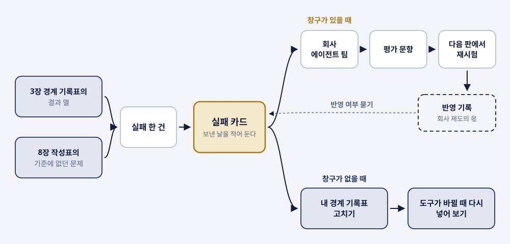
그림 20-1. 실패 한 건이 카드가 되어 가는
두 갈래
그림은 왼쪽에서 오른쪽으로 읽는다. 기록표와 작성표에서 나온 실패 한
건이 카드가 되고, 보낼 곳이 있으면 위 갈래로, 없으면 아래 갈래로 간다.
위 갈래 끝의 반영 기록은 회사 제도의 몫이라 점선으로 두었고, 보낸 사람이
반영 여부를 묻는 길도 점선으로 돌아온다.
다음 주에 쓸 도구: 실패 카드
이번 주에 4장 경계 기록표의 결과 열과 10장 작성표의 “기준에 없던
문제” 칸을 훑어보자. 경계 밖으로 나간 결과가 있었다면 한 건을 골라
카드로 옮긴다. 아무것도 없었다면 이번 주는 쓰지 않아도 된다. 카드는
실패가 있을 때 쓰는 것이지, 실패를 찾아서 만드는 것이 아니다.
카드를 쓸 때는 제목 한 줄부터 정하자. “휴가 규정 요약에서 이월 조건
누락”처럼, 제목만 읽어도 무엇이 틀렸는지 알 수 있게. 그다음 칸을
위에서부터 채운다. 입력 칸을 채울 때 민감 정보를 한 번 더 확인하고, 기준
칸을 채울 때 두 사람 같은 판정을 한 번 더 시험하자. 이 두 번의 확인이
카드를 쓰는 데 드는 시간의 절반쯤 된다.
웹 도구로 만든다면 카드를 목록으로 모아 보게 만든다. 종이나 문서로
쓴다면 카드마다 번호를 붙여 경계 기록표 옆에 두자. 카드가 10장쯤 쌓이면
한 번에 펼쳐 보자. 같은 종류의 일, 같은 도구, 같은 종류의 틀림이
되풀이되는지 보인다.
표 20-2. 실패 카드
항목
적을 내용
예시
제목 한 줄
무엇이 어떻게 틀렸나
휴가 규정 요약에서 이월 조건 누락
입력 (민감 정보 제거)
맡긴 내용과 넣은 자료
규정 문서의 휴가 조항 부분(사내 고유 정보는 지움)
기대한 결과
맞았다면 나왔어야 할 것
이월 조건 두 가지가 들어간 요약
실제 결과
나온 것, 틀린 곳
이월 조건이 빠진 요약
통과·실패 기준
두 사람이 같은 판정을 내릴 수 있게
이월 조건 두 가지가 모두 요약에 있으면 통과
날짜와 도구 판
언제, 어떤 도구·판에서
(날짜) / (도구 이름과 표시된 판)
출처
경계 기록표 몇째 줄, 또는 작성표
경계 기록표 7번째 줄
보낸 곳·보낸 날·반영 여부
보낼 곳이 없으면 “기록표 고침”
(회사 에이전트 팀 / 날짜 / 반영 확인 전)
이 도구의 근거: Anthropic 에이전트 평가 안내 글(평가셋을 만드는 팀
대상: 실제 실패에서 과제 뽑기, 두 사람 같은 판정, 기록 읽기) / 근거
수준: 이 책의 제안.
한 달 뒤 새 판의 에이전트가 이월 조건을 또 빠뜨리는지 끝까지 물어볼
수 있는 사람은, 카드를 보낸 사람뿐이다.
21장. AI를 썼다고 밝힐 때는 무엇을 확인했는지 함께 밝힌다
실무자의 자리
11장에서 만든 넘김 메모를 다시 꺼내 보자. 결과를 넘길 때 붙이는 네
줄이었다. 이렇게 만든 이유, 고려했다가 택하지 않은 것, 확인한 것과
확인하지 않은 것, 확인에 든 시간. 셋째 줄을 채우는 일은 어렵지 않다.
표에 든 수치 12개 가운데 9개는 원자료와 대조했고, 나머지 3개는 출처를
찾지 못했다고 적으면 된다. 그런데 그 줄을 쓰다 보면 손이 한 번 멈추는
자리가 있다. 초안을 AI가 썼다는 사실도 여기에 적어야 할까?
삽화. 넘김 메모의 한 줄 앞에서, AI로 초안을 만들었다고
적을지 손이 한 번 멈춘다. 상상으로 그린 장면으로, 특정 인물이나 조직이
아니다.
적지 않아도 메모는 제 역할을 한다. 받는 사람이 알고 싶은 것은 결과가
맞는지이고, 첫 문장을 누가 썼는지는 관심 밖일 수도 있다. 반대로 적으면
같은 표가 달리 읽힐지 모른다. “AI가 만든 표”라는 말이 붙는 순간 덜
믿음직해 보일 수 있기 때문이다. 이 망설임에는 근거가 있다. 밝힌 사람이
실제로 낮게 평가받는다는 실험이 있고, 그래서 밝히지 않는 사람이 많다는
조사가 있다. 두 가지를 차례로 보고 나서, 밝히기로 했다면 무엇을 함께
적을지 정해 보자.
밝힌 사람이 받는 평가
AI를 썼다고 밝히면 정말 손해를 볼까? 이 질문에는 비교적 단단한 실험
연구가 있다. 7장에서 리더가 먼저 공개해야 하는 이유로 본 두 연구다. 연구
설계는 7장에 맡기고, 여기서는 실무자에게 필요한 결과 두 가지만
꺼내자.
첫째, AI를 쓴 사람은 덜 유능하고 덜 성실해 보이고, 밝힌 사람은 덜
신뢰받는다. Reif, Larrick, Soll의 실험(PNAS 2025)에서 직장에서 AI를 쓰는
사람은 능력과 의욕에 대해 부정적인 평가를 예상했고, 실제로도 그런 평가를
받았다. 그 평가는 채용 후보를 판단하는 데까지 영향을 줬다. 참가자는
온라인 실험 참여자였고 상황은 가상 시나리오였다는 점도 함께 적어 두자.
초록에는 이런 문장이 있다. “Although AI can enhance productivity, its
use carries social costs.” AI가 생산성을 높일 수는 있어도 쓰는 데는
사회적 비용이 따른다는 말이다.
Schilke와 Reimann의 13개 실험(Organizational Behavior and Human
Decision Processes 2025)에서도 AI 사용을 밝힌 사람은 밝히지 않은
사람보다 덜 신뢰받았다. 밝히는 문구를 바꿔도, 스스로 밝히든 규정 때문에
밝히든 이 효과는 남았다. 기술에 호의적이고 AI가 정확하다고 믿는
평가자에게서는 줄었지만 없어지지는 않았다.
둘째, 들키는 쪽이 더 나쁘다. 같은 연구는 스스로 밝혔을 때의 신뢰
하락이 제3자가 드러냈을 때보다 작았다고 적었다. 원문 표현으로는
“comparatively weaker”다. 스스로 밝혀도 신뢰는 떨어지지만, 숨겼다가 남의
입으로 드러날 때보다는 덜 떨어진다는 뜻이다.
두 결과를 함께 놓으면 실무자의 처지가 또렷해진다. 밝히면 깎이고,
숨겼다가 들키면 더 깎인다. 7장은 이 처지를 팀장이 풀어 줄 문제로 보고
리더가 먼저 밝히자고 했다. 그런데 내 팀장이 아직 그렇게 하지 않는다면?
실무자는 그 사이에서 자기 넘김 메모의 한 줄을 스스로 정해야 한다. 어느
쪽으로도 편하지 않은 자리다.
이 결과를 실무자의 하루에 옮길 때 조심할 점도 있다. Reif 외의
평가자는 가상 시나리오 속 인물을 판단한 온라인 참가자였다. 매주 함께
일하는 팀장이나 동료는 내 결과를 여러 번 받아 보며 판단한다. 같은 방향의
깎임이 그런 관계에서도 같은 크기로 나타나는지는 이번에 확인한 초록들이
보여 주지 않는다. 그래도 방향은 기억해 둘 만하다. 처음 협업하는 다른 팀,
채용이나 평가처럼 한 번의 인상으로 판단이 내려지는 자리에서는 이 깎임이
더 직접적으로 작동할 수 있다. 이 연결은 이 책의 추론이다.
그래서 많은 사람이 숨긴다
평가가 깎인다면 숨기는 쪽을 고르는 사람이 많을 것이다. 실제로 얼마나
숨길까? 먼저 적어 둘 것이 있다. 회사에 알리지 않고 AI를 쓰는 숨겨 쓰기가
얼마나 흔한지를 측정한 동료 심사 연구는 이번 조사에서 찾지 못했다.
아래는 벤더와 컨설팅사가 참여한 조사 둘, 그리고 비율 대신 배경을 보여
주는 연구 둘이다.
Microsoft와 LinkedIn의 Work Trend Index 2024는 31개 시장의
31,000명에게 물은 벤더 자체 조사다(2024년 2~3월 자료). AI 사용자 가운데
78%가 자기 AI 도구를 직장에 가져와 쓴다고 답했다. 분모는 직장인 전체가
아닌 AI 사용자라는 점을 놓치지 말자. 같은 조사에서 직장에서 AI를 쓰는
사람의 52%는 가장 중요한 일에 AI를 썼다고 인정하기를 꺼렸고, 53%는
중요한 일에 AI를 쓰면 대체 가능한 사람으로 보일까 걱정했다.
11장에서 본 멜버른대·KPMG 조사에는 더 직접적인 문항도 있다. 직장에서
AI를 쓰는 직원의 57%가 AI가 만든 내용을 자기 것처럼 내거나 AI를 썼다는
사실을 밝히지 않은 적이 있다고 답했다(드물게 포함). 이 문장의 “거나”와
“적이 있다”를 흘려 읽지 말자. 두 행위 가운데 하나라도, 한 번이라도
했다면 이 57%에 든다. 같은 조사에서 AI 교육을 받았다는 직원은 47%,
직장에 생성형 AI 정책이나 지침이 있다는 직원은 40%였다. 생성형 AI를
어떻게 쓸지 정해 둔 직장에 있다고 답한 직원이 절반에 못 미친다는 뜻이다.
다만 조사가 두 수치를 숨겨 쓰기의 원인으로 이은 것은 아니다.
비율 대신 배경을 보여 주는 연구도 있다. 16장과 17장에서 행정 자료와
이은 연구로 본 Humlum과 Vestergaard는, AI 노출이 큰 11개 직종의 덴마크
노동자 18,000명을 설문한 연구도 냈다(PNAS 2025). 노동자들은 ChatGPT의
생산성 잠재력을 크게 보면서도, 고용주의 제한과 교육이 필요하다는 인식
때문에 쓰지 못하는 경우가 많았다. 여성은 남성보다 업무에 써 본 비율이
16%포인트 낮았다. 이 연구는 숨겨 쓰기 비율을 측정하지 않았다. 회사가
막는 곳에 쓰고 싶은 사람이 많다면 거기서 숨길 이유가 생긴다는 연결은 이
책의 해석이다.
Yang과 동료들의 프리프린트(동료 심사 전)는 공개 정책을 직접 다뤘다.
이들은 법적 위험이 조직 안에서 AI 사용을 숨기게 만든다고 보고, 공개
정책이 무엇을 바꾸는지 살폈다. “While disclosure policies reduce
information asymmetry, they do not significantly lower overall agency
costs due to managers undervaluing analysts’ contributions with GPT
use.” 공개 정책은 누가 AI를 썼는지 모르는 문제를 줄였지만, 관리자가
GPT를 쓴 분석가의 기여를 낮게 보아서 전체 비용은 크게 줄지 않았다는
것이다. 동료 심사 전인 연구 한 편의 결과지만, 밝히게 하는 규칙만으로는
평가 쪽의 깎임이 사라지지 않을 수 있다는 신호다.
표 21-1. 공개에 따르는 평가 비용과 숨겨 쓰기
조사
출처
성격
대상과 분모
시점
이 책이 쓸 수 있는 문장
Reif·Larrick·Soll (PNAS 2025)
사전 등록 실험 4개
온라인 참가자 4,439명, 가상 시나리오
2025
AI를 쓴 사람은 능력·의욕 평가에서 깎이고, 쓰는 사람도 그것을
예상한다
Schilke·Reimann (OBHDP 2025)
실험 13개
참가자 수는 초록에 없어 쓰지 않는다
2025
밝히면 덜 신뢰받지만, 제3자에게 들킬 때보다는 덜 깎인다
Microsoft·LinkedIn WTI 2024
벤더 자체 조사, 자기 응답
31개 시장 31,000명 / AI 사용자, 직장에서 AI를 쓰는 사람
2024년 2~3월
AI 사용자의 78%가 자기 도구를 가져온다, 52%가 중요한 일에 썼다고
인정하기를 꺼린다
멜버른대·KPMG
대학 주관 조사(KPMG 협력), 자기 응답
47개국 48,000명 이상 / 직장에서 AI를 쓰는 직원
2024년 11월~2025년 1월
57%가 자기 것처럼 내거나 밝히지 않은 적이 있다(드물게 포함)
Humlum·Vestergaard (PNAS 2025)
설문 연구
덴마크 11개 직종 18,000명
2023~2024 조사
고용주 제한과 교육 필요가 사용을 막았다. 숨겨 쓰기 비율은 측정하지
않았다
Yang 외 (arXiv 2025)
프리프린트, 동료 심사 전
관리자와 분석가(표본 크기는 보도 경유라 쓰지 않는다)
2025-04
공개 정책은 정보 비대칭을 줄였지만 전체 비용은 크게 줄이지
못했다
표의 맨 오른쪽 열만 읽으면 이 장의 근거가 어디까지인지 보인다. 밝히면
깎인다는 것과 많은 사람이 숨긴다는 것까지다. 어떻게 밝혀야 덜 깎이는지는
이 표 어디에도 없다.
세 갈래를 나란히 놓으면
넘김 메모의 그 한 줄 앞에서 고를 수 있는 길은 셋이다. 숨기기, 사실만
밝히기, 확인한 내용과 함께 밝히기. 차례로 따져 보자.
숨기는 길은 당장은 깎이지 않는다. 대신 들킬 위험을 계속 안고 간다.
앞의 실험이 보인 대로 들켰을 때 잃는 신뢰가 더 크다. 들키는 경로도
생각보다 많다. 받는 사람이 같은 도구를 써 보다가 문체가 닮았다는 것을
알아챌 수도 있고, 20장의 실패 카드처럼 내가 남긴 기록에 맡긴 일이 적혀
있을 수도 있다. 비용이 하나 더 있다. 받는 사람은 이 결과가 어떻게
만들어졌는지 모르니 어디를 의심해야 할지도 모른다. AI가 쓴 초안에서 자주
틀리는 곳과 사람이 쓴 초안에서 자주 틀리는 곳은 다를 수 있는데, 그
단서가 메모에서 빠진다. 이 대목은 연구에서 나온 말이 아니고 이 책의
추론이다.
사실만 밝히는 길은 정직하다. “AI 사용” 한 줄을 붙이면 들킬 위험은
사라진다. 하지만 앞의 연구가 보인 평가 비용은 그대로 받는다. 받는
사람에게 남는 정보도 꼬리표 하나다. 이 결과의 어디까지를 믿어도 되는지는
여전히 알 수 없다. 꼬리표만 보고 결과 전체를 의심하는 사람도 있고,
반대로 꼬리표가 붙었으니 누군가 확인했겠거니 하고 넘기는 사람도 있다.
어느 쪽이든 받는 사람의 확인이 엉뚱한 곳으로 간다.
셋째 길은 AI를 쓴 범위, 확인한 것, 확인하지 않은 것을 함께 적는
길이다. 앞의 표로 돌아가 보면 이렇게 된다. “표 정리는 AI가 했다. 수치
12개 가운데 9개는 원자료와 대조했고, 3개는 출처를 찾지 못해 표시해
두었다.” 받는 사람은 표시된 3칸만 다시 보면 된다. 이 책은 이 길을
제안한다. 받치는 근거는 하나다. 들키는 것이 스스로 밝히는 것보다
나쁘다는 결과는 숨기지 말자는 쪽을 받친다. 그다음 걸음, 확인 내역을 함께
적으면 평가 비용이 줄어든다는 것을 검증한 연구는 없다. 그러니 이 길을
고르는 이유는 받는 사람이 결과를 제대로 쓰게 하는 데 있다고 보는 편이
정직하다. 물어야 할 것은 결국 밝힐지 말지가 아니라 무엇과 함께
밝힐지다.
그림 21-1. 숨길 때, 사실만 밝힐 때, 들킬
때의 평가 방향과 확인 내역을 함께 밝히는 길
왼쪽 세 칸은 Schilke·Reimann 실험이 보인 평가의 방향만 옮긴 것이다.
수치는 넣지 않았다. 오른쪽 상자는 이 책이 제안하는 길이고, 그것이 평가
비용을 줄이는지는 검증되지 않았다.
흔히 빠지는 오해가 둘 있다. 하나는 밝히기만 하면 할 일을 다 했다고
여기는 것이다. 꼬리표만 붙이면 앞의 둘째 길과 같다. 다른 하나는 확인
내역이 길수록 좋다고 여기는 것이다. 받는 사람이 세 문단짜리 고지를 읽고
나서야 결과를 볼 수 있다면, 그 고지가 새 짐이 된다. 세 요소를 한두 줄에
담는 편이 낫다.
11장의 워크슬롭과 이 장의 평가 비용을 하나로 묶지 않도록 주의하자.
워크슬롭은 겉은 그럴듯한데 내용이 비어 있는 결과물이 받는 쪽에 일을
떠넘기는 문제였다. 이 장의 평가 비용은 내용이 같아도 AI를 썼다는 사실
하나로 생기는 반응이다. 확인 내역을 적는 일은 앞의 문제에는 직접
답하지만, 뒤의 반응을 누그러뜨리는지는 아직 모른다.
밝힐 자리 세 곳
어디에 적을까? 결과를 받은 사람이 그 결과로 무언가를 정하는 자리라면
적는 편이 낫다. 실무자가 자주 만나는 자리는 셋이다.
첫째는 보고서의 첫머리다. 보고서는 읽는 사람이 결론부터 보고 판단에
쓰는 문서다. 맨 앞 한 줄에 AI가 맡은 범위와 내가 대조한 것, 대조하지
못한 것을 적어 두면, 읽는 사람이 어느 절을 더 꼼꼼히 볼지 정할 수
있다.
둘째는 회의 발표다. 발표는 말로 지나가서 나중에 고치기 어렵다. 첫
슬라이드 아래쪽에 한 줄을 두는 편이 깔끔하다. 질문이 나왔을 때 “그
부분은 확인하지 못했다”고 말할 근거가 슬라이드에 미리 있으면 답하기도
편하다.
셋째는 동료에게 넘길 때다. 여기에는 이미 11장의 넘김 메모가 있다.
셋째 줄 “확인한 것과 확인하지 않은 것”에 AI가 맡은 범위를 한 구절 더하면
된다. 새 양식을 만들 필요가 없다. 넷째 줄의 확인에 든 시간과 나란히
놓이면, 받는 사람은 이 결과에 내가 얼마나 손을 댔는지까지 한눈에
본다.
세 자리의 공통점이 있다. 모두 결과가 내 손을 떠나 다른 사람의 판단에
들어가는 순간이다. 내 노트에 남기는 초안이나 혼자 보는 정리에는 이런
줄이 필요 없다. 반대로 결과가 고객, 임원, 다른 팀으로 한 번 더 넘어갈
예정이라면 첫 번째 받는 사람이 그 줄을 지우지 않고 다음 사람에게 넘길 수
있게 문장을 짧게 쓰자. 고지가 중간에서 사라지면 마지막에 받는 사람은
다시 꼬리표 없는 결과를 받는다.
비개발 업무로 옮겨 보자. 고객에게 보낼 제안서 초안을 팀장에게
넘긴다고 하자. 이렇게 적을 수 있다. “제안서 문장은 AI가 초안을 쓰고 내가
고쳤다. 가격표와 납기는 계약 조건 문서와 대조했다. 경쟁 제품 비교 문단은
출처를 확인하지 못해 노란색으로 표시해 두었다.” 팀장은 이 3줄만 보고도
어디를 먼저 볼지 안다. 고객에게 나가기 전에 비교 문단 하나만 다시 보면
된다.
모든 일에 적을 필요는 없다. 맞춤법을 고치거나 문장을 다듬는 정도라면
받는 사람의 판단이 달라지지 않는다. 그런 경우까지 일일이 적으면 고지가
소음이 된다. 어디부터 적을지는 받는 사람이 그 사실을 알았을 때 결과를
다르게 쓸지로 가늠하자. 이 기준 역시 이 책의 제안이다.
회사 정책이 있을 때와 없을 때
회사에 AI 사용 공개 정책이 있다면 정책이 먼저다. 어떤 문서에 어떤
표시를 하는지, 고객에게 나가는 문서는 따로 정했는지, AI에 넣어도 되는
정보의 범위는 어디까지인지 정책이 정한 대로 따른다. 이 장의 문구는
정책이 정하지 않은 빈칸을 채우는 데 쓰자.
정책이 없다면 어떻게 할까? 앞의 멜버른대·KPMG 조사에서 직장에 생성형
AI 정책이나 지침이 있다고 답한 직원은 40%였다. 정책이 없는 직장에 있는
독자가 적지 않을 것이다. 그때는 혼자 정하지 말고 팀장에게 묻는 편이
낫다. 물을 것은 세 가지면 된다. 우리 팀은 AI를 쓴 결과물에 그 사실을
어떻게 표시하나? 고객이나 다른 팀에 나가는 문서는 표시 방식이 다른가?
AI를 썼다고 적은 결과물을 평가할 때 무엇을 보나?
마지막 질문은 꺼내기 망설여질 수 있다. 하지만 이 질문에 대한 답이
있어야 넘김 메모의 그 한 줄을 편하게 쓸 수 있다. 답을 들었다면 팀
채널이나 팀 문서에 한 줄로 남겨 두자. “우리 팀은 AI를 쓴 결과물에 사용
범위와 확인한 것을 함께 적는다” 정도면 된다. 팀장이 정해 준 약속이 글로
있으면 표시하는 일이 개인의 고백처럼 느껴지지 않는다. 답을 듣지 못했다면
그 사실도 적어 두자. 언제 물었고 무엇이 정해지지 않았는지가 다음에 다시
물을 근거가 된다.
팀장이 이 질문을 받고 고민한다면, 바로 다음 22장의 절 「공개를 벌주지
않는 평가」가 팀장 쪽에서 참고할 곳이다. 공개 정책을 어떻게 설계할지,
공개한 사람을 평가에서 어떻게 대할지는 회사 제도가 정할 일이다. 임원
자리의 23장이 그 몫을 맡는다. 실무자가 지금 할 수 있는 것은 질문 세 개를
들고 가는 데까지다.
다음 주에 쓸 도구: 공개 문구 견본
이 장의 도구는 자리별로 쓸 문구 견본 셋이다. 종이 한 장에 적어 책상
옆에 두거나 자주 쓰는 문서 양식 맨 위에 붙여 두자. 견본마다 들어가는
요소는 셋으로 같다. AI를 쓴 범위, 확인한 것, 확인하지 않은 것.
쓰는 순서는 이렇다. 이번 주에 넘길 결과 가운데 하나를 고르고, 그
결과가 가는 자리에 맞는 견본을 꺼낸다. 세 칸을 채운 뒤 2줄 안으로
줄인다. 줄이다 보면 “확인하지 않은 것” 칸이 가장 쓰기 싫어진다. 그래도
이 칸을 비우지 말자. 모든 것을 확인했다면 “확인하지 않은 부분은 없다”고
적는다. 이 칸이 있어야 받는 사람이 내 확인을 어디까지 믿을지 정할 수
있다.
“AI의 도움을 받았다” 같은 두루뭉술한 표현은 피하는 편이 낫다. 무엇을
맡겼는지가 빠지면 사실만 밝히는 길과 다르지 않다. “초안 작성”, “표
정리”, “자료 요약”처럼 맡긴 일을 이름으로 적자.
한 주 동안 써 본 뒤에는 받은 사람의 반응을 한 줄씩 남겨 두면 좋다.
어느 자리에서 문구가 도움이 됐는지, 어디서 불필요했는지. 그 기록은
팀장에게 팀의 공개 방식을 물을 때 쓸 재료가 된다. 견본의 수치와 절
번호는 예시일 뿐이니, 실제 문서에 맞게 바꿔 쓰자.
“자료 요약과 도표 초안은 AI로 만들었다. 도표 숫자는 원자료와
대조했고, 요약에서 빠진 자료가 있는지는 확인하지 못했다.”
동료에게 넘길 때 (넘김 메모 셋째 줄에 넣은 형태)
초안과 표 정리
표의 합계와 날짜를 원본과 대조
부서 이름 표기
“확인한 것과 확인하지 않은 것: 초안과 표 정리는 AI가 했다. 표의
합계와 날짜는 원본과 대조했다. 부서 이름 표기는 확인하지 않았다.”
이 도구의 근거: Schilke·Reimann(스스로 밝힐 때가 제3자에게 들킬
때보다 덜 깎인다) / 근거 수준: 이 책의 제안(확인 내역을 함께 밝히는 것이
평가 비용을 줄이는지는 검증되지 않았다)
넘김 메모의 그 한 줄로 돌아가자. 이제 앞에 놓인 길은 둘이다. 하나는
적지 않는 길이다. 이번 주에는 아무 일도 일어나지 않을 것이다. 대신
언젠가 누군가 그 표가 어떻게 만들어졌는지 알게 되는 날의 위험을 안고
간다. 다른 하나는 AI가 맡은 범위와 내가 확인한 것을 함께 적는 길이다. 이
길이 평가에서 덜 깎인다는 보장은 없다. 다만 받는 사람이 결과의 어디를
믿고 어디를 다시 볼지 알게 된다. 그리고 내가 무엇을 확인하는 사람인지가
조금씩 기록에 남는다. 앞의 길은 비용을 미래로 미루고, 뒤의 길은 지금
조금 치른다. 어느 쪽을 고를지는 각자의 몫이다.
22장. 사용량 대신 결과로 평가한다
팀장의 자리
팀 채널에 지난주 토큰 사용량 순위표가 올라왔다고 해 보자. 올린 사람은
팀의 의욕을 북돋우려는 생각이었다. 설명은 따로 없고 이름과 숫자,
막대그래프가 전부다. 1위는 요즘 결과물이 크게 달라진 것 같지 않은
팀원이고, 지난달 아무도 읽지 않던 주간 보고서 하나를 통째로 없애자고
제안한 팀원은 중간쯤에 있다. 그 팀원은 이 순위표를 보고 무엇을 배울까?
다음에도 일을 없애자고 말할까, 아니면 이번 달 남은 주에는 에이전트를 몇
번 더 돌려 볼까?
Hacker News에 이런 댓글이 있다. “when managers are posting token
usage leaderboards each week with no further explanation, we take the
hint.”(관리자가 매주 설명 없이 토큰 사용 순위표를 올리면, 우리는 눈치를
챈다. 2026-05, 커뮤니티 의견) 댓글을 쓴 사람의 회사는 사용량을 평가에
쓴다고 공식적으로 말한 적이 없었다고 한다. 그래도 사람들은 숫자가 무엇을
원하는지 알아챈다. 순위표를 올린 리더는 평가표를 한 줄도 고치지
않았는데, 팀은 평가 기준이 이미 바뀌었다고 읽는다.
14장 끝에서 1on1의 첫 질문을 하나 건넸고, 바로 앞 21장에서는 실무자가
AI를 썼다고 밝히는 한 줄을 정했다. 그 대화와 기록이 몇 주 쌓이면 다음
물음이 생긴다. 사람과 에이전트가 섞여 일하는 팀에서 누가 잘했는지는
무엇으로 아는가. 가장 손쉬운 숫자는 사용량이다. 대시보드에 이미 있고,
사람마다 하나씩 붙어 있고, 매주 바뀐다. 손쉬운 숫자를 평가에 넣었던
회사들이 어떤 길을 걸었는지부터 살펴보자.
사용을 평가에 넣은 회사들
2025년 한 해 동안 여러 회사가 AI 사용을 평가의 일부로 공식화했다.
대부분 사내 메모가 언론에 보도된 것이라 원문은 공개되지 않았고, 아래
문장은 보도가 인용한 표현이다.
시작은 2025년 4월 Shopify였다. 7장과 9장에서 본 CEO Tobi Lütke의
메모에는 AI 사용을 성과 평가와 동료 평가 설문에 넣겠다는 대목도
있었다(CNBC 등 보도, 2025-04-07). 7장에서 본 대로 이 메모는 경영진을
포함한 전원에게 적용된다고 밝혔다. 같은 달 Duolingo의 AI 우선 메모도
성과 평가에 AI 사용을 반영하겠다고 했다. 반발이 커져 CEO가 해명에 나선
일은 9장에서 보았다(Entrepreneur 2025-05-23, Fortune 2025-08-18 보도).
2025년 6월에는 Microsoft 임원 Julia Liuson의 메모가 보도됐다. “Using AI
is no longer optional”이라는 문장과 함께, 관리자들이 AI 사용을 개인
성과에 대한 종합적인 평가에 반영하게 했다는 내용이다(Business Insider
최초 보도, 2025-06).
2025년 8월 Coinbase의 Brian Armstrong은 엔지니어들에게 주말까지 AI
코딩 도구를 쓰기 시작하라고 지시했다. 따르지 않은 사람들을 토요일 회의에
불렀고, 그 가운데 사유가 없던 일부를 해고했다고 팟캐스트에서 말했다. 그
자신도 그 조치가 “heavy-handed”였다고 인정했다(TechCrunch, 2025-08-22).
2025년 11월 Meta는 2026년부터 “AI-driven impact”를 직원의 핵심 기대치로
삼겠다는 메모를 냈다. 다만 2025년 평가에는 개인 사용량 지표를 넣지
않는다고 했다(HR Grapevine 등 보도, 2025-11-17).
다섯 회사를 한 줄로 묶으면 같은 흐름처럼 보이지만, 강도와 대상은 꽤
다르다. Shopify와 Microsoft는 쓰는 것 자체를 기대치로 삼았고, Coinbase는
기한을 정해 강제했다. Meta의 표현은 결이 조금 다르다. 사용량보다 영향을
보겠다고 했고, 개인 사용량은 평가에서 빼겠다고 명시했다. 평가 항목을
다시 쓰려는 리더에게는 이 차이가 중요하다. “얼마나 썼는가”를 묻는 항목과
“무엇이 달라졌는가”를 묻는 항목은 같은 시기, 같은 업계의 메모 안에서도
섞여 있었다.
이런 결정을 내린 리더들의 사정도 짐작은 간다. 도입 초기에 조직이 정말
쓰고 있는지 확인할 길이 사용량 말고는 마땅치 않다. 결과가 나오려면 몇
달이 걸리고, 그 사이 위에서는 진척을 묻는다. 같은 Hacker News 토론에서
한 사람은 이 상황을 관리자판 파스칼의 내기라고 불렀다. 대세를 거부했다가
틀리면 시대에 뒤떨어진 사람처럼 보이니, 속으로 어떻게 생각하든
각자에게는 따라가는 편이 합리적이라는 진단이다(Hacker News, 커뮤니티
의견). 측정하기 쉬운 숫자가 먼저 평가표에 들어간 데는 이런 계산도 섞여
있었을 것이다. 문제는 그다음에 생겼다.
점수가 생기면 게임이 생긴다
사용량을 평가에 넣은 회사의 직원들은 어떻게 반응했을까? 2026년 5월,
Amazon 직원들이 AI 도구 사용 압박 때문에 토큰을 일부러 많이 쓴다는
기사를 두고 Hacker News에서 긴 토론이 벌어졌다. 한 댓글은 이렇게 적었다.
“You reward me for wasting tokens and punish me for not wasting them, I
will maximally waste them.”(토큰 낭비에 상을 주고 아끼면 벌을 주면, 나는
최대한 낭비하겠다) 같은 스레드에는 내부 지표를 맞추는 도구가 따로 돈다는
익명 증언도 있었고, 한 사람의 불평처럼 읽힌다는 반박도 함께 달렸다. 회사
내부 사정에 대한 익명 증언은 사실로 단정할 수 없다. 그래도 사람들이
숫자에 어떻게 반응하는지는 충분히 보여 준다.
이 현상을 짧게 부르는 문장이 같은 토론에 있다. “Once you have a
score, you have a game. Once you have a game, people will do whatever it
takes to win.”(점수가 생기면 게임이 생긴다. 게임이 생기면 사람들은
이기려고 무엇이든 한다. Hacker News, 2026-05, 커뮤니티 의견) 새로운
장면도 아니다. 다른 댓글은 영업 직원이 건 통화 수를 세던 대시보드를
떠올렸다. 1위인 직원은 아마 같은 고객에게 여러 번 전화했을 것이라고
썼다. 무엇을 세든, 세는 것이 결과와 떨어져 있으면 사람들은 세는 것을
만든다. 경제학에서는 이 현상을 영국 경제학자 찰스 굿하트의 이름을 따
굿하트의 법칙이라 부른다. 흔히 “지표가 목표가 되면 더 이상 좋은 지표가
아니다”라는 문장으로 알려져 있는데, 이 문장은 인류학자 Marilyn
Strathern이 그 법칙을 다시 정리한 표현이다. 사용량은 이 법칙이 특히 빨리
작동하는 지표다. 결과와 떨어져 있을 뿐 아니라, 버튼 몇 번으로 부풀릴 수
있기 때문이다. 영업 통화 수를 부풀리려면 그래도 전화를 걸어야 했지만,
토큰은 에이전트에게 같은 일을 몇 번 더 시키는 것으로 충분하다.
Meta 직원들의 불만을 다룬 New York Times 기사(2026-05)를 두고 벌어진
Hacker News 토론에서는 더 기묘한 대목이 인용됐다. 기사는 일부 직원들의
말을 빌려 사용량 대시보드가 동료와 경쟁하게 만드는 압박 수단이었다고
전했고, 그 바람에 에이전트가 너무 많이 만들어져 에이전트를 찾는
에이전트와 에이전트를 평가하는 에이전트까지 생겼다고 익명의 두 사람이
말했다고 적었다(Hacker News 댓글이 옮긴 기사 문장 기준). 웃고 넘기기
어려운 이야기다. 만든 에이전트 수를 세기 시작하면 에이전트가 늘어나고,
늘어난 에이전트를 관리하는 일까지 사람의 몫으로 돌아온다.
찜찜한 점은 이 게임이 악의에서 나오지 않는다는 데 있다. 성실한
사람일수록 숫자가 가리키는 쪽으로 움직인다. 리더가 순위표를 올린 순간
팀원은 둘 중 하나를 고르게 된다. 숫자를 맞추거나, 숫자를 무시하고
평가에서 불리해질 위험을 지거나. 어느 쪽도 팀의 일을 낫게 만들지 않는다.
공식 평가에 쓰지 않는다는 말도 큰 위안이 되지 못한다. 앞의 토론에서 한
사람은 평가에 쓰지 않는다는 말이 각 단계의 관리자가 그 숫자를 자주
들여다보지 않는다는 뜻은 아니라고 꼬집었다. 순위표는 리더가 팀원과
나눠야 할 대화를 대신하는 장치가 되기 쉽다.
앞 책도 같은 경고를 했다. 「AX를 만들다」 5장은 생산량을 세는 대신
생산물이 검증을 통과해 끝까지 버텨 냈는지를 보자고 하며 이렇게 썼다.
「성과는 토큰이 아니라 검증이다.」 숫자가 목적이 되는 장면은 「나는 이
게임을 안다」 15장도 성숙도 등급을 두고 길게 다뤘다. 토큰 순위표는 그
장면이 개인 단위로 내려온 형태에 가깝다.
그 뒤의 소식도 있다. Duolingo CEO는 2026년 4월 AI 사용을 성과 평가
지표에서 뺐다고 밝혔다. 실제 결과보다 무언가를 밀어붙이는 데 책임을 묻는
것처럼 느껴졌다는 이유였다(Fortune, 2026-04-13 보도). Amazon에서는
직원들이 만든 비공식 사용량 순위표가 부풀리기에 쓰이자 2026년 5월
중단됐고, 회사는 그 순위표가 사용 자체를 장려하려던 것이 아니었다고
했다(Financial Times 최초 보도). 회사의 공식 평가 제도와는 별개로
직원들이 만든 도구였다는 점은 짚어 둘 만하다. Meta는 2026년 9월 엔지니어
평가에서 AI 대시보드와 토큰 사용량을 쓰는 대신 결과물의 품질과 속도,
해결한 문제의 복잡성을 보겠다는 내부 메모를 냈다고 보도됐다(The
Information 보도, 2026-09). 사용량 평가는 도입부터 되돌림까지 1년 안팎이
걸린 셈이다. 회사 이름보다 순서가 눈에 들어온다. 쓰게 하려고 세기
시작했고, 세자 부풀리기가 생겼고, 부풀린 숫자로는 아무것도 판단할 수
없게 되자 거둬들였다.
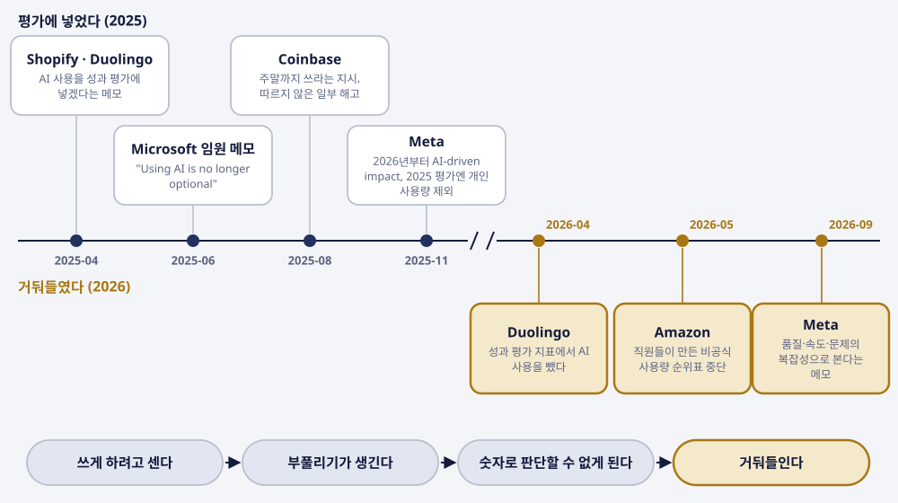
그림 22-1. 사용량 평가의 도입과
되돌림(보도 기준)
선 위는 2025년에 AI 사용을 평가에 넣은 메모들이고, 선 아래는 2026년에
거둬들인 소식이다. 맨 아래 띠는 그 사이에 일어난 순서를 네 칸으로 줄인
것이다.
사용량이 쓸모 있는 자리
그렇다면 사용량은 아예 보지 말아야 할까? 그렇게까지 할 필요는 없다.
「DevRel Next」 9장은 사용량에도 쓸 데가 있다고 짚었다. 도구를 한 번도
열어 보지 않은 사람이 몇 명인지는 확산을 맡은 사람이 알아야 할 정보다.
문턱이 어디서 높은지 알려 주기 때문이다. 그 장의 문장은 짧다. 「사용량은
진단에 쓰는 숫자다.」 같은 장은 사용량을 보고할 때 그 숫자로 무엇을
고칠지 함께 적자고 덧붙였다.
진단과 평가는 숫자를 쓰는 방향이 다르다. 진단에 쓰는 숫자는 리더가
무엇을 고칠지 찾는 데 쓰인다. 한 팀원이 도구를 거의 쓰지 않는다고 해
보자. 진단으로 읽는 리더는 그 사람이 맡은 일이 애초에 AI와 맞지 않는지,
권한이나 데이터가 막혀 있는지, 써 보고 실망한 적이 있는지를 묻는다. 세
경우 모두 처방이 다르다. 맞지 않는 일이면 그대로 두면 되고, 막혀 있으면
24장에서 다룰 질문을 IT에 보내야 하고, 실망했다면 7장의 사용 일지를 함께
들여다볼 일이다. 평가로 읽는 리더는 그 사람을 순위표 아래쪽에 둔다. 같은
사용량이 진단으로 쓰일 때는 대화를 열고, 평가로 쓰일 때는 대화를
닫는다.
진단으로 쓰려면 숫자를 보여 주는 방식부터 바꾸는 편이 낫다. 이 책은
두 가지를 제안한다. 팀 회의에서는 사람별 순위 대신 팀 전체의 분포만 보여
주자. “이번 달 도구를 한 번도 열지 않은 사람이 셋, 매일 쓰는 사람이 넷”
정도면 충분하고, 이름은 붙이지 않는다. 사람별 숫자는 1on1에서 본인과
함께 볼 때만 꺼낸다. 그 자리에서 숫자는 “왜 적은가”를 따지는 데 쓰지
말고 “어디서 막혔나”를 묻는 데 쓴다.
사용량이 쓸모 있는 자리가 하나 더 있다. 비용이다. 2026년 가을 Hacker
News에는 기업들이 AI 사용 예산을 조이기 시작했다는 토론이 이어졌고, 반복
업무는 가장 싼 모델로 돌리지 않으면 비용을 감당할 수 없다는 경험담이
올라왔다(커뮤니티 의견). 비용을 관리하려면 어떤 일에 얼마가 드는지
알아야 하고, 그때 사용량은 일 단위로 읽힌다. 사람별로 쪼개 볼 이유는
거의 없다.
하나 더 구분해 둘 것이 있다. 앞 책들 가운데 「디지털 워커의 시대」
8장은 에이전트가 낸 산출을 사람의 근무 시간으로 환산하는 체계를
제안했다. 「AX를 만들다」 5장이 경고한 것은 사람을 투입량으로 줄 세우는
평가다. 앞의 것은 에이전트의 산출을, 뒤의 것은 사람의 평가를 다룬다.
둘을 섞으면 “에이전트가 몇 사람분을 했으니 그 에이전트를 쓴 사람은 몇 배
일한 것”이라는 계산이 나오는데, 두 책 어느 쪽도 그런 계산을 하지 않았다.
사람을 평가하는 표에는 사람이 한 일이 들어가야 한다.
표 22-1은 흔히 쓰이는 투입 지표와 그 자리에 놓을 수 있는 결과 지표를
나란히 둔 것이다. 오른쪽 두 열에 차이가 드러난다. 투입 지표는 어떻게
게임이 되는지 뻔히 보이고, 결과 지표는 측정에 시간이 들고 기록이 있어야
한다.
표 22-1. 투입 지표와 결과 지표
구분
예
게임화 위험
측정 방법
투입
토큰 사용량, 사용 시간, 호출 수, 만든 에이전트 수
높음. 반복 호출·불필요한 에이전트로 쉽게 부풀린다
대시보드 자동 집계
투입
AI 교육 이수, 사용 의무 준수율
중간. 이수 자체가 목표가 된다
인사 기록
결과
일의 결과가 달라졌는가(기한·품질·고객 반응)
낮음. 결과를 꾸미면 받는 사람이 알아챈다
업무 기록, 고객·동료 의견
결과
확인 노동의 양과 질(확인 건수, 반려와 그 사유)
중간. 건수만 세면 부풀린다. 반려 사유를 함께 본다
13장 확인 노동 배분표
결과
재설계·일 없애기 기여
낮음. 없앤 일은 심사 기록에 제안자와 함께 적힌다
9장 없앨 일 심사표
결과
관행 공유와 다른 사람 육성
중간. 공유 횟수만 세면 부풀린다. 받은 사람의 변화를 본다
공유 기록, 팀원 의견, 28장 리더 평가 기준표
무엇으로 평가하나
평가할 것은 AI를 얼마나 썼느냐가 아니라 AI로 무엇을 바꿨느냐다.
말로는 쉽지만, 평가표에 옮기려면 질문이 두 개 생긴다. “무엇을
바꿨느냐”를 어떤 항목으로 적고, 무엇을 증거로 삼을까? 앞 장들에서 만든
기록이 그 재료가 된다.
삽화. 평가 면담에서 팀원이 실제로 개선한 결과를 함께 살핀다.
상상으로 그린 장면으로, 특정 인물이나 조직이 아니다.
먼저 일의 결과다. AI 이전에도 평가하던 것이다. 달라진 점은 결과를 낸
과정에 에이전트가 끼면서, 결과만 보고는 그 사람이 무엇을 했는지 보이지
않게 됐다는 것이다. 그럴듯해 보이는 산출물도 조심해야 한다. 11장과
13장에서 본 워크슬롭이 그런 예다(Niederhoffer 외, HBR 2025-09). 산출물의
양으로 결과를 보면 워크슬롭을 많이 낸 사람이 앞에 선다. 그래서 결과 옆에
다음 두 가지가 붙어야 한다.
하나는 확인 노동이다. 13장에서 확인 노동 배분표를 만들었다. 거기에는
누가 무엇을 몇 건 확인했고, 무엇을 반려했고, 그 사유가 무엇이었는지가
적힌다. 에이전트가 초안을 쓰는 팀에서 품질을 지킨 사람은 대개 이 표에
이름이 있다. 이 노동이 평가에 잡히지 않으면 확인을 맡은 사람은 손해를
보고, 13장에서 본 쏠림이 다시 생긴다. 확인을 많이 한 사람이 자기
산출물이 적다는 이유로 평가에서 밀린다면, 그 팀에서 확인을 맡겠다는
사람은 줄어든다.
다른 하나는 재설계와 일 없애기 기여다. 9장의 없앨 일 심사표에는 누가
어떤 일을 없애자고 제안했고 심사 결과가 어땠는지가 적힌다. 일을 없앤
공로가 평가에 잡히지 않으면 아무도 일을 없애지 않는다. 사용량 순위표에서
중간에 있던, 주간 보고서를 없애자고 한 팀원이 이 항목에서는 맨 위에
온다. 그 보고서를 만드는 데 들던 팀 전체의 시간과 그것을 읽던 사람의
시간이 함께 사라졌기 때문이다.
여기에 관행 공유를 더하자. 15장에서 본 Microsoft의 Work Trend Index
2026(Microsoft 자체 조사)은 에이전트로 여러 단계의 일을 하고, 업무
흐름을 계속 다시 짜고, 그 방식을 팀이 반복해 쓸 수 있게 나누는 사용자를
“Frontier Professional”이라 부르고 AI 사용자의 16%로 집계했다. 이
정의에서 눈여겨볼 것은 마지막 특징이다. 혼자 잘 쓰는 것과 남이 따라 쓸
수 있게 만드는 것을 따로 센다. 평가표에도 이 둘을 따로 적을 자리를 두자.
다른 사람 육성은 28장에서 리더를 평가할 때 한 행으로 다시 다룬다.
예를 하나 들면 이렇다. 같은 분기에 고객 제안서를 여섯 건씩 낸 팀원
둘이 있다고 해 보자. 한 사람은 초안을 에이전트에게 맡기고, 수치와 고객사
사정을 직접 대조하느라 건마다 반나절을 썼다. 그 과정에서 에이전트가 자주
틀리는 대목을 정리해 팀 위키에 올렸다. 다른 한 사람은 에이전트를 거의
쓰지 않은 채 예전 방식대로 썼다. 사용량 순위표로 보면 앞사람이
압도적으로 위다. 결과만 보면 둘이 같다. 앞에서 말한 기록을 함께 놓으면
그림이 달라진다. 앞사람은 확인 노동의 기록과 관행 공유의 기록을 갖고
있다. 뒷사람의 제안서도 좋은 결과지만, 팀이 다음 분기에 가져다 쓸 것은
앞사람의 정리다. 평가표가 이 차이를 담으려면 결과 열 옆에 확인과 공유를
적을 열이 있어야 한다. 사용량 열은 이 차이를 담지 못한다.
같은 조사에는 지금의 평가 제도가 어디서 막히는지 보여 주는 숫자도
있다. AI로 일을 다시 짜는 시도가 결과를 내지 못해도 보상받는다고 응답한
AI 사용자는 13%였다. 그리고 Frontier Professional을 이끄는 관리자 가운데
83%가 AI 작업의 품질 기준을 세웠다고 답했는데, 그렇지 않은 쪽은
57%였다(Microsoft WTI 2026, 2026-05-05, 벤더 자체 조사). 이 대비는
연관을 보여 줄 뿐, 품질 기준을 세우면 사람들이 그렇게 된다는 인과를 보여
주지는 않는다. 다만 결과로 평가하려는 리더가 먼저 할 일이 무엇인지는
가리킨다. 무엇이 좋은 결과인지 글로 적어 두는 일이다.
결과로 평가하다 보면 측정할 수 없는 항목이 꼭 생긴다. 관행을 나눈
효과가 언제 나타날지, 반려한 산출물이 어떤 사고를 막았는지는 깔끔한
숫자로 나오지 않는다. 그럴 때 그 항목을 지우거나 대충 숫자를 지어 넣고
싶어진다. 둘 다 피하는 편이 낫다. 「측정하지 못함」이라고 적고 사유를
함께 적자. 측정하지 못했다는 기록은 다음 분기에 무엇을 기록해야 할지
알려 준다.
공개를 벌주지 않는 평가
결과로 평가하는 표를 만들어도 함정이 하나 더 있다. 7장에서 리더가
먼저 써 보고 공개하자고 했다. 그런데 평가표가 공개를 벌주면 어떻게
될까?
7장에서 보고 21장에서 실무자의 자리로 다시 읽은 두 연구,
Reif·Larrick·Soll(PNAS 2025)과 Schilke·Reimann(OBHDP 2025)이 개인에게
남기는 선택은 난처하다. 밝히면 깎이고, 숨겼다가 드러나면 더 깎인다. 이
경향이 평가표에 들어오면 일이 꼬인다. “그건 AI가 한 거잖아”라는 한마디로
결과의 몫이 깎이는 팀에서는 아무도 어떻게 일했는지 말하지 않을 것이다.
말하지 않으면 확인 노동도, 관행 공유도 기록에 오르지 않는다. 결과 평가가
기대는 기록이 비어 버린다.
그래서 평가 항목을 다시 쓸 때 문장 하나를 함께 적어 두기를 권한다.
AI를 써서 낸 결과도 그 사람의 결과로 본다, 대신 무엇을 맡겼고 무엇을
확인했는지 함께 적는다. 평가를 받는 사람에게 묻는 질문도 바꾸자. “AI를
썼는가”는 숨길 이유를 만들고, “무엇을 맡겼고 무엇을 확인했는가”는 적을
이유를 만든다. 공개를 개인의 용기에 맡기는 대신 팀의 규칙으로 정해 두는
것이다.
평가 의견에 실제로 적는 문장으로 옮기면 이런 모양이다. “고객 제안서
초안 여섯 건을 에이전트에 맡겼고, 수치 대조에서 두 건을 반려해 다시
썼다. 반려 사유를 팀 체크리스트에 추가했다.” 이 문장에는 AI를 썼다는
사실이 숨김없이 들어 있지만 깎일 데가 없다. 맡긴 것과 확인한 것, 그리고
팀에 돌려준 것이 함께 적혀 있기 때문이다. 반대로 “AI 활용도 높음”이라는
한 줄은 칭찬처럼 보여도 아무것도 말해 주지 않는다. 다음 평가 때 그
사람이 무엇을 더 잘해야 하는지 알려 주지 못한다.
이 규칙은 리더가 먼저 보여 줄 때 자리를 잡는다. 리더가 자기 보고서에
“이 초안은 에이전트가 쓰고 내가 수치를 대조했다”고 적어 두면, 팀원은
그렇게 적어도 괜찮다는 신호를 받는다. 리더 자신은 AI를 쓴 사실을
감추면서 팀원에게만 밝히라고 하면 규칙은 오래가지 못한다. 7장에서 리더가
먼저 써 보고 공개하자고 한 이유가 평가표에서 한 번 더 확인되는
셈이다.
16장에서 만든 아낀 시간 기록표도 같은 주의가 필요하다. 그 기록표는
아낀 시간을 어디에 쓰겠다는 선언이 지켜지는지 보려는 것이다. 기록표의
숫자가 평가에 들어가는 순간 팀원들은 아낀 시간을 크게 적을 이유가
생긴다. 자기 보고로 채우는 숫자는 그 숫자로 평가받는다고 느끼는 순간
부풀기 쉽다. 기록표는 평가표와 떼어 두자. 팀에 그렇게 말해 두는 것은
팀장이 직접 할 수 있는 약속이다.
잘한다는 이유로 일만 늘지 않게
공개에 따르는 비용에는 평판 말고 일의 양도 있다. 2026년 11월에 올라온
한 링크드인 글이 그 과정을 그린다. 교육을 받는 동안 자기 업무를 분석해
실제로 돌아가는 도구를 만들어 낸 직원이 눈에 띈다. 처음에는 팀장의
칭찬이 오고, 얼마 뒤 업무 자동화와 옆 팀 도구까지 요청이 이어진다. 원래
하던 일은 그대로다. 글쓴이는 그 직원의 역량이 어느새 조직의 “공짜 개발
자원”처럼 쓰이기 시작한다고 적었다. 그러면 직원은 역량을 드러내지
않거나, 그 역량을 제대로 인정해 주는 다른 조직을 찾기 시작할 수도 있다고
본다. 드러낸 사람이 손해를 보는 팀이라면 다음 사람은 드러내기를 망설이기
쉽다. 앞 절의 두 연구가 본 평판 비용과 같은 방향이지만, 이 연결은 이
책의 추론이다.
글쓴이는 보상만으로는 쉽게 풀리지 않는다고 본다. 우수 사례 포상이나
특별 프로젝트는 대개 한 번으로 끝나기 때문이다. 글의 처방은 AI를 잘 쓰는
직원을 기존 팀장 혼자 관리하게 두지 말라는 것이다. 팀장은 당장의 팀
성과를 위해 그 직원에게 자동화를 더 맡기고 싶어지는데, 회사 전체로 보면
그 직원이 더 큰 문제를 풀며 오래 성장하는 편이 낫고, 두 이해가 늘 같지는
않다는 이유다. 그래서 인사 조직과 AI 혁신 조직이 함께 그 직원의 일과
성장을 보자고 제안한다. 팀장에게는 불편한 말이다. 이 글의 장면에서도
요청은 팀장의 칭찬 뒤에 이어졌고, 그 가운데에는 옆 팀이 쓸 도구도
있었다.
글은 이 처방을 인사 조직과 AI 혁신 조직에 건넸지만, 그 가운데 팀장이
바로 할 수 있는 것이 하나 있다. 새 AI 과제를 맡기면 기존 업무를 실제로
줄이는 것이다. 여기서부터는 이 책의 제안이다. 맡길 때 무엇을 빼 줄지
함께 적자. 빼 줄 것이 없다면 맡기지 않는 편이 낫다. 옆 팀의 요청은 그
직원에게 바로 가지 않고 팀장을 거치게 하자. 그 직원이 만든 도구와 그
도구를 쓰는 팀은 평가 의견에 그 사람의 결과로 적는다. 일회성 포상 대신
경력 기회와 보상을 꾸준히 잇는 일, 성장 방향의 선택권을 주는 일은 팀장
혼자 약속할 수 없다. 이 일은 회사 제도의 몫이고, 다음 절에서 보듯 제도를
바꾸는 권한은 임원에게 있다.
글은 출발점이 될 원칙 하나를 내놓는다. “AI를 잘한다는 사실이 그
직원에게 불이익이 되어서는 안 된다.” 당연해 보이는 이 원칙조차
현장에서는 지키기 어렵다고 글쓴이는 덧붙였다. 평가 항목을 다시 쓰는
팀장이라면 앞 절에서 적어 둔 문장 옆에 이 원칙도 함께 적고, 다시 쓴 항목
하나하나가 이 원칙을 어기지 않는지 대조해 보자.
회사 제도는 임원이 바꾼다
여기까지 읽은 팀장이라면 이런 생각이 들 수 있다. 우리 회사 평가
제도에 이미 AI 사용률이 들어가 있다면 팀장이 무엇을 할 수 있나?
권한을 나눠 보자. 회사 단위의 사용량 지표, 예컨대 전사 순위표나 의무
사용률을 평가 제도에서 뺄지는 임원이 정한다. 팀장이 팀에 약속할 수 있는
일이 아니다. 팀장이 할 수 있는 것은 자기 팀의 평가 의견에서 사용량을
근거로 쓰지 않는 것, 그리고 결과·확인·재설계 기록을 근거로 적는
것까지다. 회사 제도를 바꾸는 일은 팀장이 위에 요구해야 한다. 요구할 때는
이 장의 도구로 다시 쓴 평가 항목과 그 근거 기록을 들고 가면 이야기가
훨씬 구체적이 된다. 순위표를 없애 달라는 요청보다 이 기록으로
평가하겠다는 제안이 받아들여지기 쉽다.
임원이 이 결정을 미루기 쉬운 이유도 있다. 사용률은 위로 보고하기 좋은
숫자다. 도입이 잘되고 있다는 신호를 주고, 대개 매달 오른다. 그 숫자를
평가 제도에서 빼면 보고서의 그 줄이 빈다. 하지만 앞의 되돌림 보도가
사실이라면, 사용량을 평가에 넣은 회사들은 보고서의 그 숫자마저 믿기
어렵게 됐다. 이 책은 사용률을 진단 보고에 두고 평가 제도에서는 빼자고
제안한다. 대신 평가 제도에 무엇을 넣을지를 함께 선언하는 편이 낫다.
빼기만 하면 현장은 무엇을 기대받는지 다시 짐작해야 한다.
9장에서 본 권한 세 줄도 여기서 다시 쓰인다. 일 없애기 기여를 평가에
넣으려면, 없앤 일과 아낀 시간이 인력 조정의 근거로 쓰이지 않는다는
보장이 먼저 있어야 한다. 그 보장 없이 “일을 없앤 사람을 높게 평가한다”고
하면, 팀원은 자기 자리를 줄이는 일에 점수를 받는 셈이 된다. 누가 그런
점수를 받으려 할까? 이 보장은 팀장이 할 수 있는 약속이 아니므로 임원이
선언해야 효력이 있다. 평가 제도를 바꾸는 임원이라면 두 가지를 한 문서에
함께 적자. 무엇으로 평가하는지, 그리고 그 평가에 쓰인 기록을 무엇에 쓰지
않는지. 그리고 이 기준은 리더를 평가할 때도 그대로 쓰인다. 팀원의 평가
항목을 결과형으로 다시 쓴 팀장이, 자기 평가에서는 팀 사용률로 줄
세워진다면 어색한 일이다. 리더를 무엇으로 평가할지는 28장의 기준표에서
다시 다룬다.
임원 자신도 이 기준으로 평가받는다는 점을 밝혀 두는 것이 좋다.
Shopify 메모가 경영진을 포함한 전원에게 적용된다고 쓴 대목을 앞에서
보았다. 결과로 평가하는 제도도 같다. 임원이 위로 보고하는 숫자가
사용률뿐이라면, 팀장들은 아래로도 사용률을 내려보낼 것이다. 임원
보고서의 첫 줄에 무엇을 놓을지가 회사 전체의 평가표를 사실상 정한다.
다음 주에 쓸 도구: 평가 항목 다시 쓰기 표
이 표는 지금 쓰는 평가 항목을 한 줄씩 옮겨 적고, 그 항목이 투입을
보는지 결과를 보는지 가린 다음, 결과형 문장으로 다시 쓰는 변환 표다.
회사 평가 양식을 바꿀 권한이 없어도 쓸 수 있다. 팀장이 평가 의견을 쓸 때
무엇을 근거로 삼을지 정하는 데 먼저 쓰고, 회사 제도에 걸린 항목은 마지막
열에 표시해 위에 가져갈 목록으로 삼는다.
쓰는 순서는 이렇다. 현재 평가 양식이나 팀 목표에서 AI와 관련된 항목을
모두 옮겨 적는다. 각 항목이 투입형인지 결과형인지 적는다. 투입형이면
결과형 문장으로 다시 쓰고, 그 결과를 무엇으로 보여 줄지 근거 기록을
적는다. 근거 기록은 앞 장의 도구에서 고르면 된다. 측정할 수 없으면 그
사유를 적는다. 마지막으로 이 항목을 바꿀 권한이 팀장 의견 수준인지 회사
제도 수준인지 적는다. 아래 예시 세 줄은 출발점일 뿐이니 팀의 항목으로
바꿔 쓰자.
표 22-2. 평가 항목 다시 쓰기 표 (예시)
현재 항목
투입형인가 결과형인가
다시 쓴 문장
근거 기록
측정하지 못하면 그 사유
이 항목을 바꿀 권한
AI 도구를 주 3회 이상 사용한다
투입형
맡은 업무 가운데 하나 이상의 흐름을 AI와 함께 다시 짜고 그 결과를
보여 준다
9장 없앨 일 심사표, 업무 결과 기록
재설계 효과가 분기 안에 드러나지 않으면 「측정하지 못함」과 예상
시점
회사 제도 (위에 요구)
팀 AI 사용량 순위 상위
투입형
팀이 맡긴 산출물의 품질을 지켰다(확인·반려와 그 사유)
13장 확인 노동 배분표
반려가 막은 문제의 크기는 측정하지 못함, 사유 적기
팀장 의견
AI 교육 과정 이수
투입형
배운 방식을 팀원이 따라 쓸 수 있게 나눴다
공유 기록, 받은 팀원의 의견
효과가 늦게 나타나면 「측정하지 못함」
팀장 의견 (이수 의무 자체는 회사 제도)
열이 여섯이라 처음엔 번거롭게 느껴질 것이다. 근거 기록 열에는 그
평가를 뒷받침할 기록을 적는다. 적을 기록이 없다면 팀원에게 그 일을
어떻게 확인할 수 있을지 묻는다. 근거 기록이 없는 결과형 문장은 평가
시즌이 되면 다시 인상 평가로 돌아간다. 표를 다 채웠으면 팀원 한두 명과
함께 읽어 보자. 다시 쓴 문장이 그 사람이 실제로 한 일을 담는지, 근거
기록 열에 적은 기록이 지금 팀에 정말 있는지 확인하는 데는 당사자의 눈이
가장 빠르다. 평가 시즌 직전에 처음 꺼내면 늦다. 시즌보다 한 분기쯤 앞서
팀과 함께 다시 쓴 항목을 공유해 두면, 팀원은 그 분기 동안 무엇을
기록해야 할지 알 수 있다. 기록이 쌓일 시간을 주는 것까지가 이 도구의
쓰는 법이다.
순위표를 올린 리더에게도 선택지는 있다. 그 게시물을 내리고, 이어지는
주부터 지난주 반려된 산출물과 그 사유, 없애기로 한 일 하나를 팀 채널에
올리는 것이다. 사람들은 리더가 무엇을 세는지 보고 무엇을 할지 정한다.
세는 것을 바꾸려면 셀 재료가 먼저 있어야 하고, 그 재료는 팀이 매주 쓰는
기록뿐이다.
23장. 평가 제도에서 사용량을 빼려면 무엇을 넣을지 함께 정한다
임원의 자리
2026년 5월, AI 사용을 늘리라는 압박을 받은 Amazon 직원들이 일을
지어내고 있다는 기사를 두고 Hacker News에 댓글 400개가 넘는 토론이
붙었다. 한 사람은 자기 회사 이야기를 이렇게 적었다. “management wants us
to use all of our tokens before they expire.” 토큰이 만료되기 전에 다
쓰라는 지시가 내려와서, 문서 정리 같은 자잘한 일을 돌려 토큰을 먹인다고
했다.
다른 사람은 더 정교한 방법을 적었다. 에이전트에게 프로젝트의 모든
파일을 훑어 파일마다 버그를 최대 10개씩 찾게 하고, 그 내용을 파일 이름에
’bugfix’를 붙인 마크다운으로 쓰게 한다. 2시간쯤 걸린다고 했다. 그다음이
이렇다. “Then I delete all the files with the suffix ‘bugfix’ and then
do it again.” 만든 파일을 모두 지우고 같은 일을 다시 시킨다는 것이다. 세
번째 댓글은 다른 회사 직원들에게서 들었다며, 토큰 순위표마다 붙어 있다는
문구를 옮겼다. 순위표마다 ’this doesn’t count toward your performance
review’라는 면책 문구가 있지만, 그 뒤에는 ’nudge nudge, wink wink’가
따라붙는다고 했다(모두 2026-05, 커뮤니티 의견).
댓글 3개는 서로 다른 세 사람이 쓴 것이고, 셋째는 남에게서 들은
이야기다. 어느 회사 이야기인지도 확인할 수 없다. 그래도 장면은 찜찜하다.
2시간짜리 작업을 만들고 지우고 다시 하는 동안 회사의 일은 한 줄도
나아가지 않는다. 대시보드의 숫자만 오른다. 셋째 댓글이 전하는 대로라면,
평가에 쓰지 않는다는 문구가 붙어 있어도 그 문구를 곧이듣는 사람은 많지
않았다. 평가 제도를 맡은 임원과 HR에게 이 장면이 묻는 것은 2가지다.
사용량을 평가에서 빼기로 한다면 그 결정은 어떤 문서로 내려야 하나?
그리고 빈자리에는 무엇을 넣어야 하나?
순위표가 생긴 회사들에서 보도된 것
바로 앞 22장이 본 회사 메모들은 2025년에 AI 사용을 직원 평가의
기대치로 올렸다. 그 장은 팀장의 자리에서 3가지를 정리했다. 사용률은
무엇이 막혔는지 찾는 진단에 쓰고 평가에서는 뺀다. 일을 없앤 공로를
평가에 넣으려면 없앤 일과 아낀 시간이 인력 조정 근거로 쓰이지 않는다는
보장이 먼저 있어야 한다. 그리고 이 기준은 임원 자신에게도 적용된다. 회사
단위의 사용량 지표를 평가 제도에서 뺄지는 그 장이 임원의 몫으로 넘긴
결정이다. 이 장은 그 결정을 문서로 만든다.
그 사이 사용량을 평가에서 거둬들였다는 보도가 이어졌다는 것도
22장에서 보았다(Duolingo 2026-04, Amazon 2026-05, Meta 2026-09, 모두
2차). 제도를 문서로 만들 사람이 눈여겨볼 문장은 그 보도들 안에 몇 개 더
있다. Duolingo CEO는 팟캐스트에서 그 이유를, 직원들이 실제 결과에
책임지게 하는 대신(“rather than being held accountable for the actual
outcome”) 일에 맞지 않는 것까지 밀어붙이는 것처럼 느껴졌다고
말했다(Fortune 2026-04-13 보도). Amazon 대변인은 내려간 비공식 순위표가
“not a formal or approved company tool”이었다고 설명했다(Financial Times
2026-05 말 보도, 재보도 기준). 그 뒤 회사가 정규화된 배포 수를 본다는
보도도 나왔다. Meta의 메모는 임원 2명의 내부 메모로, AI 도입 대시보드와
토큰 수를 영향 평가에 쓰지 않고 결과물의 품질, 속도, 문제의 복잡성에
더해 맡은 범위를 보라고 했다고 보도됐다(The Information 보도, InfoWorld
2026-09-04 재보도).
같은 시기에 순위표가 어떻게 생기고 사라졌는지 보여 주는 보도도 있다.
2026년 4월 Meta에서는 직원 한 사람이 스스로 만든 토큰 사용 순위표
“Claudeonomics”가 보도 이틀 뒤 내려갔다. Meta는 “Meta did not request
this action”이라고 밝혔다. 순위표를 내린 쪽은 회사가 아닌, 그것을 만든
직원이었다는 설명이다(Fortune 2026-04-09 보도). 2026년 5월 중순에는
Amazon이 내부 리더보드로 토큰 소비를 추적하며 개발자의 80% 이상이 매주
AI를 쓰도록 목표를 두었다는 보도가 나왔다. 직원들이 사내 에이전트
플랫폼을 불필요한 작업에 돌려 숫자를 올렸다는 증언도 함께 실렸다. 그
보도에는 문장 2개가 나란히 놓여 있다. 보도는 “Officially, the numbers
don’t factor into performance reviews.”라고 적었고, 한 직원은 “Managers
are looking at it.”이라고 말했다(FT 경유 2차). 이 리더보드가 앞에서 본
비공식 순위표와 같은 것인지는 보도만으로 확인되지 않는다.
Amazon은 2026년 10월 27일 개발자 역할에 관한 엔지니어링 리더십의
지침을 회사 공식 뉴스로 공개했다. 이번에는 1차 원문이다. 지침은 토큰
사용량, 도구 도입률, 코드 변경 수 같은 지표를 두고 “We are all aware of
how deeply flawed these metrics are, primarily because they are
disconnected from what matters.”라고 썼다. 그 지표들이 중요한 것과
떨어져 있어서 깊은 결함이 있다는 것이다. 다음 문장도 있다. “If your work
does not benefit from current AI tooling, that is a finding, not a
failing.” 지금의 AI 도구가 그 일에 도움이 되지 않는다면 그것을 실패 대신
발견으로 본다는 말이다. 다만 이 지침은 성과 평가를 언급하지 않는다.
Amazon이 평가에서 사용량을 뺐다고 읽을 근거는 이 원문에 없다.
여기까지를 근거의 강도로 정리하면 이렇다. 이 책의 리서치는 사용량
지표를 평가에서 뺀다고 회사가 공식 문서로 발표한 사례를 찾지 못했다.
CEO의 공개 발언(Duolingo)과 내부 메모 보도(Meta)는 있다. Amazon은 공개
지침에서 사용량 지표의 한계를 적었지만 평가 반영 여부는 말하지
않았다.
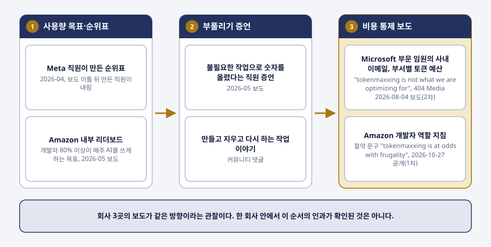
그림 23-1. 사용량 목표와 순위표 뒤에
보도된 일의 순서
그림 23-1은 회사 3곳에 관한 보도를 순서대로 놓은 것이다. 같은 방향을
가리키는 보도들이 모인 것일 뿐, 어느 한 회사 안에서 목표가 부풀리기를
낳고 부풀리기가 비용 통제를 낳았다는 인과가 확인된 것은 아니다. 셋째
칸에는 비용 쪽 기록 2건이 놓였다. 하나는 Microsoft의 한 부문 임원이 사내
이메일에서 부서별 토큰 예산을 알리며 “tokenmaxxing is not what we are
optimizing for”라고 썼다는 보도다(404 Media 2026-08-04, 2차). 다른
하나는 앞에서 본 Amazon의 2026년 10월 지침으로, 토큰 부풀리기가 절약
원칙과 어긋난다는 문구(“tokenmaxxing is at odds with frugality”)가 들어
있다(1차). 둘 다 비용과 예산 관리의 맥락이고, 평가 제도를 바꾼 이야기는
아니다. 그래도 순서는 눈여겨볼 만하다. 이 책의 읽기로는, 세기 시작한
숫자가 부풀자 적어도 이 두 회사는 그 숫자를 평가 기준보다 비용 항목으로
다루기 시작했다.
표 23-1은 공식 설명과 현장의 말이 같은 보도 안에 함께 나온 두 사례다.
Microsoft 쪽 임원 메모는 22장에서 본 Julia Liuson의 메모다. 왼쪽 열만
읽으면 사용량은 평가와 상관이 없고, 오른쪽 열을 함께 읽으면 그렇게만
읽히지 않는다.
표 23-1. 공식 설명과 반대 발언이 함께 나온 사례
회사
공식 쪽 문장
현장 쪽 문장
출처 성격
Microsoft (2025-06)
대변인: “there is no formal review of an employee’s AI usage”
임원 메모: 관리자가 AI 사용을 “holistic reflections on an
individual’s performance and impact”에 반영하게 했다
2차(Business Insider 보도)
Amazon (2026-05)
보도 문장: “Officially, the numbers don’t factor into performance
reviews.”
직원: “Managers are looking at it.”
2차(FT 경유 보도)
측정하기 쉬운 쪽으로 노력이 옮겨 간다
순위표 주변에서 생긴 일은 AI에서 처음 나타난 현상이 아니다. 조직이
무엇을 세고 무엇에 보상하느냐가 사람들의 노력을 어디로 보내는지는 오래된
연구 주제다. 연구 4편을 차례로 보자.
먼저 Kerr의 1975년 논문이다. 제목이 원리를 거의 다 말한다. “On the
Folly of Rewarding A, While Hoping for B.” B를 바라면서 A에 보상하는
어리석음. 흔히 인용되는 요지는 조직이 바라는 행동과 실제로 보상하는
행동이 어긋나면 사람들은 보상받는 쪽을 한다는 것이다. 이 책은 이 논문의
본문을 원문으로 확인하지 못했으므로 제목을 원리로만 쓴다.
Holmström과 Milgrom의 1991년 다중 과업 모형은 그 어긋남이 어디서
생기는지를 더 정확히 짚는다. 이 모형은 보통 이렇게 요약된다. 한 사람이
여러 과업을 맡을 때 측정하기 쉬운 과업에 강한 인센티브를 걸면, 측정하기
어려운 과업에서 노력이 빠져나간다. 그래서 여러 과업이 섞인 자리에서는
약한 인센티브가 나을 수 있다.
Bevan과 Hood는 영국 공공 의료의 목표 관리를 분석했다(Public
Administration, 2006). 응급실에서 4시간 안에 환자를 처리한다는 목표의
공식 달성률은 2004/05년에 96%였다. 같은 시기 환자 설문에서는 77%였다.
구급차 응답 시간 자료에서는 목표 시간인 8분 지점에 기록이 몰리는 분포가
나타났다. 두 연구자는 이런 현상을 “hitting the target and missing the
point”라고 불렀다. 목표는 맞히고 요점은 놓친다는 뜻이다. 공정하게 적어
두어야 할 대목도 있다. 같은 연구는 목표제가 실제 대기 시간을 줄인 효과도
함께 보고했다. 목표가 쓸모없었다는 이야기로 읽으면 이 연구를 잘못 옮기는
것이다. 이 연구가 남기는 교훈은 공식 수치만 보지 말고 분포와 다른 경로의
수치를 함께 보라는 데 있다.
Berger, Harbring, Sliwka는 실험실에서 상대 평가, 곧 강제 배분을
시험했다(Management Science, 2013). 평가자가 평가를 매기고 그 평가로
보너스가 정해지는 실험에서, 강제 배분을 쓰면 생산성이 약 6~12% 높았다.
그런데 참가자가 기준 조건을 먼저 겪어 본 경우에는 효과가 덜 분명했고,
서로 방해할 수 있는 간단한 방법이 주어지자 강제 배분은 해로워졌다.
이 연구들은 각자 다른 질문에 답하지만, 평가 제도를 맡은 사람에게는
하나의 점검 순서로 읽힌다. 먼저 바라는 것과 보상하는 것이 같은지
본다(Kerr). 다음으로 그 자리가 측정하기 어려운 과업을 얼마나 많이 품고
있는지 본다(Holmström·Milgrom). 많다면 측정하기 쉬운 한 숫자에 강한
보상을 거는 설계는 피하는 편이 낫다. 숫자를 정했다면 공식 수치 하나만
보지 말고 분포를 본다(Bevan·Hood). 구급차 응답 시간의 8분 지점처럼
기준선 바로 아래에 기록이 몰리는지, 분기 말에 몰리는지가 보이는 곳이
분포다. 마지막으로 평가 방식이 동료를 서로 경쟁자로 만드는지 본다(Berger
외). 상대 평가 실험에서 이미 다른 방식을 겪어 본 참가자에게 효과가 덜
분명했다는 대목도 눈여겨볼 만하다. 평가 제도를 바꾸는 회사의 직원은 모두
옛 제도를 겪어 본 사람들이다. 실험실의 결과를 그대로 기대하기 어렵다는
뜻일 수 있다(이 책의 추론).
표 23-2. 제도 설계 연구 4편과 이 책이 옮기는
범위
연구
맥락
발견
이 책이 옮기는 범위
Kerr (Academy of Management Journal, 1975)
조직 사례 논문
바라는 행동과 보상하는 행동이 어긋나면 보상받는 쪽을 한다(통상 인용,
원문 미확인)
제목을 원리로만
Holmström·Milgrom (Journal of Law, Economics, and Organization,
1991)
이론 모형
측정하기 쉬운 과업에 강한 인센티브를 걸면 측정하기 어려운 과업의
노력이 줄어든다(통상 요약)
AI 사용량에 적용하는 것은 이 책의 추론
Bevan·Hood (Public Administration, 2006)
영국 공공 의료 목표제
응급실 공식 달성률 96% 대 환자 설문 77%, 구급차 응답 시간 8분 지점의
분포 쏠림. 대기 시간 단축 효과도 보고
분포와 다른 경로의 수치를 함께 보는 점검
Berger 외 (Management Science, 2013)
실험실 실험
강제 배분으로 생산성 약 6~12% 상승. 서로 방해할 수 있으면
해로움
협업이 핵심인 팀의 상대 평가 위험, 이 책의 추론
모두 AI 이전이고, 일반 조직이나 공공 부문, 실험실의 자료다. 이
연구들을 AI 사용량 지표에 옮기면(이 책의 추론) 그림이 선명해진다. 회사가
바라는 것(B)은 일의 결과가 나아지는 것인데, 보상이 걸리는 것(A)이 토큰
수라면 사람들은 토큰을 만든다. 앞의 댓글이 보여 준 장면이 그렇다. 다중
과업 모형으로 보면 빠져나가는 노력이 어디인지도 보인다. 동료의 에이전트
산출물을 확인하는 일, 팀이 따라 쓸 방식을 정리하는 일, 19장에서 본 도운
일처럼 측정하기 어려운 일이다. 상대 평가 실험은 한 가지를 더 경고한다.
19장의 카드가 도운 일을 평가에 붙이려는 장치라면, 같은 평가에 강제
배분이 걸려 있을 때 동료를 돕는 일은 내 순위를 낮추는 일이 된다. 두
제도를 함께 두려는 회사라면 이 충돌부터 풀어야 한다. AI 사용량 지표를
평가에 넣은 조직과 뺀 조직을 직접 비교한 연구는 이 책의 리서치가 찾지
못했다.
평가에서 보상으로 넘어가는 자리
평가 항목을 바꿨다고 해 보자. 사용률 항목을 지우고 결과와 확인 품질을
넣었다. 그런데 연봉 인상률과 성과급을 정하는 산식은 그대로라면 어떻게
될까?
삽화. 평가 항목을 바꿔도 연봉 인상률과 성과급을 정하는
산식은 다른 문서에 남아 있다. 상상으로 그린 장면으로, 특정 인물이나
조직이 아니다.
임원과 HR은 평가와 보상을 한 몸처럼 말하지만, 실제 제도에서는 평가와
보상이 서로 다른 문서에 있는 경우가 많다. 평가표는 무엇을 볼지를 정하고,
보상 규정은 평가 결과의 어느 부분을 얼마의 돈으로 바꿀지를 정한다. 이
책은 이 두 번째 규칙을 보상 연결이라고 부른다. 평가 결과가 연봉 인상,
성과급, 승급으로 넘어가는 규칙이다. 평가표에서 사용량을 뺐는데 성과급
산식에 사용률 목표 달성 가산이 남아 있거나, 개인 처리 건수처럼
에이전트로 쉽게 늘릴 수 있는 개인 산출량이 그대로 묶여 있다면, Kerr의
제목이 말하는 어긋남이 평가표 한 장 아래에서 그대로 이어진다. 사람들은
평가표의 문장보다 돈이 걸린 숫자를 먼저 읽는다. Holmström과 Milgrom의
모형을 따르면 측정하기 쉬운 숫자에 강한 보상이 걸릴수록 이 쏠림은 커질
것이다. 이 문단은 두 고전을 보상 연결에 옮긴 이 책의 추론이다.
그렇다면 보상을 아예 기술과 학습에 잇는 길은 어떨까? 스킬 기반
보상에는 고전 실증이 있다. 다만 이 책은 그 결과 수치를 원문으로 확인하지
못해 옮기지 않는다. AI 시대의 스킬 기반 보상을 실증한 연구도 찾지
못했다. 직원 쪽의 선호를 보여 주는 조사는 있다. Mercer의 Global Talent
Trends 2026(약 12,000명 대상, 2025년 9~10월 조사, 2026-02-25 발표)은
“63% of employees said they would trade a raise for opportunities to
upskill in AI and digital skills”라고 적었다. 응답한 직원의 63%가
AI·디지털 기술을 익힐 기회와 임금 인상을 바꿀 수 있다고 답했다는 것이다.
이 숫자는 벤더 자체 조사이고, 실제 행동이 아니라 응답이다. 기업이 스킬
기반 보상을 얼마나 도입했는지는 이 발표에 없다. 그러니 이 숫자는 학습
기회를 보상의 한 형태로 검토할 이유는 되지만, 임금 인상을 학습 기회로
바꿔도 된다는 근거로 쓰기는 어렵다.
이 책은 보상 연결을 평가 항목과 같은 문서에서 정하자고 제안한다. 새
평가 항목마다 3가지 가운데 하나를 고른다. 잇는다는 그
항목의 결과를 이번 주기부터 보상 산식에 넣는 것이다.
진단만은 항목을 평가 자료에 기록하되 보상에는 아직 쓰지
않는 것이다. 새 항목이 어떻게 분포하는지, 어디서 부풀리는지 한 주기 동안
보는 단계다. 보류는 측정 방식이 정해지지 않아 기록도
미루는 것이다. 처음 도입하는 항목은 진단만으로 한 주기를 보내는 편이
낫다. 근거가 있는 처방은 아니고, 앞의 Bevan과 Hood가 보인 분포 점검을
보상 전에 한 번 해 보자는 제안이다.
HR이 첫 분기에 할 일은 지금의 보상 제도에서 숫자가 돈으로 바뀌는
자리를 모두 적어 보는 것이다. 개인 성과급 산식, 팀 단위 인센티브, 승급
심사의 점수, 분기마다 주는 특별 포상, 그리고 임원 성과 계약의 지표까지.
이 가운데 어디에 사용률이나 도입률, 에이전트로 쉽게 늘릴 수 있는 개인
처리 건수가 들어 있는지 표시하면, 평가표에서 지운 숫자가 어디로 숨어
있는지 보인다. 특히 임원 성과 계약에 AI 도입률 목표가 남아 있다면, 그
목표는 아래로 내려가며 팀 단위 사용률 목표로 바뀌기 쉽다. 이 목록 작업은
앞의 고전들이 가리키는 자리를 확인하는 절차다. 효과가 검증된 처방은
아니다.
권한을 적어 두자. 보상 연결의 큰 틀, 곧 어느 항목을 언제부터 돈에
잇는지는 임원이 정한다. 산식과 시뮬레이션은 HR 보상 담당이 설계한다.
보상 산식을 바꾸는 일이 근로 조건의 변경에 해당해 노동자 대표와 함께
정할 일인지도 따져 보자(국내 적용은 법무 확인 필요).
회사의 AI 사용 공개 정책
평가에서 사용량을 빼도 남는 질문이 있다. 직원이 AI를 써서 일했다는
사실을 평가는 어떻게 다뤄야 할까?
7장에서 처음 보고 21장과 22장에서 다시 읽은 실험 연구는, 평가자가 AI
사용을 알게 되면 그 사람의 유능함과 동기를 낮게 본다고 보고했다. 그
연구를 회사 제도로 옮기면, 공개 여부가 평가에 닿는 순간 공개는 불이익이
된다(이 책의 추론). 공개가 불이익이 되면 사람들은 맡긴 것과 확인한 것을
말하지 않고, 그러면 결과 평가가 기대는 기록이 빈다.
그래서 이 책은 회사의 AI 사용 공개 정책에 4가지를 적자고 제안한다.
첫째, 공개 여부를 평가 항목으로 넣지 않는다. “AI를 적극 활용했다”도 “AI
없이 해냈다”도 점수가 되지 않는다. 둘째, 공개의 형식을 정한다. 무엇을
맡겼고 무엇을 확인했는지를 적게 한다. 이 형식은 숨길 이유를 줄이고, 확인
품질이라는 평가 항목에 쓸 재료를 남긴다. 셋째, 공개 기록을 평가 자료와
분리한다. 업무 기록에는 맡긴 것과 확인한 것을 남기되, 평가 자료로 넘길
때는 확인한 내용과 결과만 넘기고 사용 여부 표시는 넘기지 않는다.
평가자가 사용 사실을 완전히 모르게 할 수는 없다. 확인한 내용에 이미 맡긴
일이 드러나기 때문이다. 이 셋째 정책이 노리는 것은 사용 여부가 평가의 한
축으로 서지 않게 하는 데까지다. 넷째, 이 장 도구의 선언문 「쓰지 않을
데이터」 열에 공개 여부를 적는다.
정책에 함께 적어 둘 경우가 하나 더 있다. 직원이 AI를 쓴 사실을 밝히지
않았는데 나중에 드러났을 때다. 이 책은 2가지를 나눠 다루자고 제안한다.
공개하지 않았다는 사실 자체는 평가 감점 사유로 쓰지 않는다. 다만 회사가
허용하지 않은 도구에 고객 정보나 기밀 자료를 넣었다면, 그 일은 정보 보호
규정에 따라 평가와 따로, 보안·법무가 정한 절차로 다룬다. 공개와 정보
보호를 한데 섞으면 직원은 공개가 곧 조사의 시작이라고 읽는다. 그러면
첫째 정책이 지키려던 공개가 다시 줄어든다.
이 정책은 HR이 문구를 쓰고 임원이 선언한다. 임원 보고서도 같은 형식을
따르게 해 두면, 정책이 직원에게만 걸린 규칙으로 읽히지 않는다. 개인이
언제 어떤 말로 밝힐지는 21장이 실무자의 자리에서 다뤘다. 이 장이 정하는
것은 회사가 그 공개를 어떻게 다룰지다.
무엇을 넣고 무엇을 쓰지 않나
이 책은 평가에서 사용량을 빼는 문서에 빼는 목록보다 넣을 항목과 쓰지
않을 데이터를 먼저 적자고 제안한다.
왜 빼는 목록만으로는 부족할까? 앞에서 본 보도 가운데 평가에 관한 것은
대개 무엇을 보지 않겠다는 말이었다. Meta의 메모 보도는 그 가운데 드물게
무엇을 볼지도 함께 적었다. 품질, 속도, 문제의 복잡성, 맡은 범위다.
사용량만 지우고 빈자리를 비워 두면 현장은 무엇을 기대받는지 다시
짐작해야 하고, 짐작은 대개 가장 보기 쉬운 숫자로 돌아간다. 여기까지는 이
책의 추론이다.
넣을 항목부터 보자. 첫째는 일의 결과다. AI 이전에도 평가하던
것이지만, 에이전트가 낀 일에서는 결과만으로 그 사람이 한 일이 보이지
않을 수 있다. 그래서 둘째로 확인 품질을 넣는다. 맡긴 산출물을 무엇으로
확인했고 무엇을 반려했는지다. 셋째는 재설계 기여, 곧 일의 흐름을 다시
짜거나 없앤 공로다. 이 항목에는 전제가 있다. 없앤 일과 아낀 시간이 인력
조정 근거로 쓰이지 않는다는 약속, 17장 사용처 결정 규정의 제4조가 먼저
있어야 한다. 그 약속 없이 일을 없앤 공로에 점수를 주면, 직원에게는 자기
자리를 없앨수록 점수가 오르는 제도로 읽힌다. 넷째는 도운 일이다. 19장의
결과 기록 카드가 그 자료다. 그리고 측정하지 못한 항목은 지우거나 숫자를
지어 넣지 말고 “측정하지 못함”과 그 사유를 적는다.
항목마다 근거로 삼을 기록도 함께 정한다. 확인 품질은 반려 기록과 확인
기준 문서로, 재설계 기여는 17장 규정의 분기 안건지에 남은 결정으로, 도운
일은 받은 팀의 카드로 본다. 앞에서 본 Amazon 지침의 한 문장도 여기서
쓸모가 있다. 지금의 도구가 도움이 되지 않는 일이라는 것을 확인했다면, 그
확인도 기록할 만한 결과다. 평가 양식에 “AI를 시도했으나 이 일에는 맞지
않았다, 그 이유”를 적을 자리를 두면, 사용량을 채우려 맞지 않는 일에
도구를 돌릴 이유가 하나 줄어든다. 이 연결은 이 책의 제안이다. 그 지침은
평가 양식을 말하지 않았다.
쓰지 않을 데이터는 3가지다. 첫째, 사용량이다. 토큰, 세션, 호출 수,
사용률은 진단 보고로 옮기고 평가 자료에 넣지 않는다. 둘째, 앞 절의 AI
사용 공개 여부다. 셋째, 에이전트 감사 기록이다. 감사 기록을 평가에
쓸지는 25장 규정에 따른다. 18장의 도운 시간 기록도 같은 이유로 평가
자료에 붙지 않는다는 점을 선언문에 함께 적어 두면 18장과 이 장의 규칙이
한 문서에서 맞물린다.
성과를 모니터링하는 데이터나 감사 기록을 평가에 쓰는 문제는 해외에서
노동자 대표와 함께 정하는 사례가 있다. 그 사례는 25장에서 다룬다. 이
책은 그 해외 조문을 국내 의무처럼 옮기지 않는다(국내 적용은 법무 확인
필요).
선언문의 마지막 줄은 임원이다. 이 기준은 임원 평가에도 적용한다고
적는다. 앞 절에서 임원 성과 계약에 남은 도입률 목표까지 찾아보자고 한
것도 이 줄 때문이다. 직원의 평가표와 임원의 성과 계약이 서로 다른 숫자를
보면, 선언문은 아래로만 내려간 문서가 된다.
이 장의 처방 가운데 무엇이 근거 위에 있고 무엇이 아닌지 나눠 보자.
측정하기 쉬운 쪽에 걸린 인센티브가 다른 노력을 줄인다는 것, 공식 수치와
체감이 갈릴 수 있다는 것, 서로 방해할 수 있으면 상대 평가가 해롭다는
것은 고전 이론과 동료 심사 연구가 받친다. 다만 모두 AI 이전의 일반
문헌이다. 회사 사례는 Amazon의 2026년 10월 지침을 빼면 전부 2차 보도다.
2026년 11월 14일까지 이 책의 리서치가 찾지 못한 것은 5가지다. 사용량
지표를 평가에서 공식으로 뺐다고 1차 문서로 발표한 회사, 넣은 조직과 뺀
조직의 비교, 영향을 어떻게 측정하는지 공개한 회사, AI 시대 스킬 기반
보상의 실증, 결과 지표로 바꾼 뒤 생긴 게임화 사례다. 마지막 공백은 가장
빨리 채워질 공백이기도 하다. 결과 지표도 세기 시작하면 같은 압력을
받는다. 아래 도구에 게이밍 점검 질문을 함께 두는 이유다.
다음 분기에 쓸 제도 도구: 평가 항목 교체 선언문
팀장이 들고 올 것: 22장의 「평가 항목 다시 쓰기
표」. 팀장들이 회사 제도 수준이라고 표시해 위로 올린 항목이 이 선언문의
입력이다.
이 도구는 4열 선언문과 게이밍 점검 질문으로 되어 있다. 임원판
선언문은 뺄 것, 넣을 것, 쓰지 않을 데이터, 보상에 잇는가의 4열을 한
문서에 적는다. 4열을 한 문서에 두는 것이 이 도구의 요점이다. 빼는 결정과
넣는 결정과 돈에 잇는 결정이 다른 문서, 다른 시점에 내려지면 그 사이의
틈으로 옛 숫자가 돌아온다. 맨 아래에는 이 기준을 임원 평가에도
적용한다는 줄을 둔다.
HR판은 새 항목마다 붙이는 게이밍 점검 질문 4개와 공개 정책 문구로
되어 있다. 시범은 한 평가 주기 동안 새 항목을 진단만으로 병행해
기록하고, 분포를 본 뒤 다음 주기에 적용한다. 사람 칸은 18장 양식과 같이
팀 코드로 적는다.
선언문을 내는 순서도 적어 두자. HR이 초안을 쓰고, 노동자 대표가 있는
회사라면 그 의견을 듣고, 효력일을 선언문에 적는다. 효력일 전에 평가
주기가 이미 시작됐다면 그 주기에는 진단만을 적용한다. 주기 중간에 기준이
바뀌면 직원은 이미 한 일을 새 기준으로 평가받게 되고, 그 불신은 다음
선언문까지 따라간다.
표 23-3. 평가 항목 교체 선언문 (임원판)
열
적을 내용
결정 문장 (예시)
누가 정하나
근거 수준
1년 뒤 다시 볼 지표
뺄 것
사용량 지표(토큰, 세션, 호출 수, 사용률)
“사용량 지표는 평가 자료에서 빼고 진단 보고로 옮긴다.”
(다) 임원 결정
근거(게이밍·다중 과업 문헌, AI 이전), AI 적용은 추론
진단 보고 사용률 추이
넣을 것
결과, 확인 품질, 재설계 기여, 도운 일(19장 카드), 측정하지 못한
항목의 표기
“평가는 결과, 확인 품질, 재설계 기여, 도운 일로 하고, 측정하지 못한
항목은 사유와 함께 적는다. 재설계 기여는 17장 규정 제4조가 선언된 뒤
적용한다.”
(다) 임원 결정, (나) HR 양식
제안
새 항목 분포, 측정하지 못함 표기 비율
쓰지 않을 데이터
사용량, AI 사용 공개 여부, 에이전트 감사 기록(25장 규정에 따른다),
18장의 도운 시간 기록
“위 데이터는 평가와 보상 자료에 쓰지 않는다.”
(다) 임원 선언. 감사 기록·모니터링 데이터는 (라) 노동자
대표·법무(국내 적용은 법무 확인 필요)
근거(평가자 편향 실험), 정책은 제안
평가 이의 건수
보상에 잇는가
새 항목마다 잇는다 / 진단만 / 보류
“새 항목은 첫 주기에 진단만으로 기록하고, 다음 주기부터 ○○ 항목을
보상 산식에 잇는다.”
(다) 임원 결정, (나) HR 보상 담당 설계
제안
보상 연결 항목의 분포
맨 아래 줄
임원 평가에도 같은 기준
“이 기준은 임원 평가에도 적용한다.”
(다) 임원 선언
제안
임원 평가표의 항목 구성
표 23-4. 새 항목마다 붙이는 게이밍 점검 질문
(HR판)
질문
보는 자료
근거
측정하기 쉬운 쪽으로 노력이 빠지고 있는가?
항목별 기록량과 확인·도운 일 기록의 변화
Holmström·Milgrom(통상 요약), 적용은 추론
분포를 보면 공식 수치와 체감이 갈리는가?
항목 점수 분포, 직원 설문, 평가 이의
Bevan·Hood
서로 방해할 유인이 생기는가?
상대 평가 여부, 카드 분포, 협업 요청 거절
Berger 외(실험실)
평가자가 AI 사용 여부를 알고 판단하는가?
평가 자료에 사용 여부 표시가 남아 있는지
평가자 편향 실험, 적용은 추론
표 23-5. AI 사용 공개 정책 문구 (HR판, 예시)
조항
문구 예시
평가 항목
“AI 사용 여부와 사용 정도는 평가 항목으로 쓰지 않는다.”
공개 형식
“AI에 맡긴 일은 무엇을 맡겼고 무엇을 확인했는지 업무 기록에
적는다.”
평가 자료 분리
“평가 자료에는 확인한 내용과 결과만 옮기고, 사용 여부 표시는 옮기지
않는다.”
적용 범위
“이 정책은 임원 보고서에도 같은 형식으로 적용한다.”
표 23-6. 공통 행
항목
내용
근거 수준
1년 뒤 다시 볼 지표
새 항목 분포, 진단 보고 사용률 추이, 평가 이의 건수, 보상 연결
항목의 분포
제안
시범 범위
한 평가 주기는 진단만으로 병행, 다음 주기부터 적용
제안
운영 부담
HR 평가·보상 담당, 평가 주기마다 점검, 평가 시스템과 보상 시스템에
저장
제안
Bevan과 Hood가 본 응급실의 4시간 목표로 돌아가 보자. 공식 집계는
96%였고, 같은 해 환자들에게 물은 설문은 77%였다. 목표제가 대기 시간을
줄인 것도 사실이었으니, 두 숫자 가운데 하나가 거짓이었다고 말하기는
어렵다. 다만 공식 숫자만 보는 사람에게는 그 사이의 19%포인트가 보이지
않는다. 이 장의 선언문으로 평가표를 바꾼 회사도 1년 뒤에는 새 항목의
공식 분포를 받아 들게 된다. 그 옆에 직원들이 체감한 숫자를 함께 놓지
않으면, 바뀐 평가표도 96%만 보는 평가표가 된다.
6부. 조직 에이전트와 결정을 기록하는 리더
5부까지는 사람이 한 일을 기록하고 밝히고 결과로 평가하는 이야기였다.
사람에 관한 제도를 정한 뒤에도 남는 기록이 2가지 있다. 하나는 회사가
직원에게 열어 주는 에이전트 창구와 그 안에서 공용으로 돌아가는
에이전트의 기록이고, 다른 하나는 임원의 결정 자체의 기록이다. 이 부의
질문은 하나다. 회사가 연 에이전트와 임원이 내린 결정은 누가 적어 두고,
누가 다시 보는가?
팀장과 임원은 이 질문에서 서로 다른 것을 정한다. 팀장은 창구 앞에서
묻는 사람이다. 창구를 들이는 회의에서 IT 부서가 보안 인증과 연동 목록과
요금제를 설명할 때, 팀장은 우리 팀 에이전트가 누구의 권한으로 일하는지,
창구가 멈추면 팀이 어떻게 일하는지, 감사 기록을 누가 보고 어디에 쓰지
않는지, 문제를 일으킨 에이전트를 누가 멈출 수 있는지를 묻는다. 팀장이
직접 정할 수 있는 것은 팀 에이전트마다 소유자와 인계자와 내릴 조건을
적은 목록표다. 넘으면 안 되는 바닥선은 위에 요구할 수 있을 뿐이다.
임원은 그 요구를 회사 규정으로 만드는 사람이다. 공용 에이전트를 누가
등록하고, 소유자가 떠나면 누가 이어받고, 누가 멈추는지, 쓰는 팀이 보탠
기여를 어디에 적을지를 HR과 함께 정한다. 그리고 자기 결정을 결과보다
먼저 적어 두고 1년 뒤 정해진 자리에서 다시 본다.
장 순서는 이렇다. 24장은 팀장의 자리에서 회사가 연 에이전트 창구에
물을 질문 8개와 팀 에이전트 목록표를 정리한다. 25장은 임원의 자리로
옮겨, 24장이 바닥선이라고 부른 것을 조직 에이전트의 최소 규칙으로
바꾸고, 감사 기록을 개인 평가에 쓰지 않을 범위와 쓰는 팀의 기여를 적을
기여자 열을 한 장짜리 규정에 담는다. 26장은 임원의 결정 자체를 기록한다.
결정 당시의 근거와 예상을 결과보다 먼저 적고, 다시 볼 날짜 옆에 그
자리를 여는 사람과 결과를 공개할 곳까지 적는 의사결정 사안 목록이다.
임원 자리의 장들이 도구마다 붙여 온 「1년 뒤 다시 볼 지표」가 26장에서
그 사안 목록의 행으로 모인다.
세 장은 하나의 길로 이어진다. 24장에서 팀장이 채운 목록표는 25장
규정에 팀장이 들고 오는 자료가 되고, 25장 규정의 1년 뒤 지표는 26장 사안
목록의 한 행으로 옮겨 간다. 팀장의 질문이 임원의 규정이 되고, 그 규정이
다시 볼 결정으로 남는 길을 차례로 따라가 보자.
24장. 회사가 연 에이전트 창구에 리더가 먼저 묻는다
팀장의 자리
2026년 10월, Meta의 개인 에이전트 Muse를 “사생활과 보안의 쓰레기통
화재”라고 부른 Techdirt의 글을 두고 Hacker News 토론이 길게 붙었다.
이메일과 일정과 브라우저를 한 회사의 에이전트에 맡겨도 되느냐는 불안이
댓글을 채웠다. 그 가운데 이런 반론이 있었다. “any agent with FDA [Full
Disk Access] can do the exact same thing. Claude, Codex, DeepSeek, any
of them.”(디스크 전체 접근 권한을 받은 에이전트라면 어느 것이든 똑같은
일을 할 수 있다. Claude든 Codex든 DeepSeek이든. Hacker News, 2026-10,
커뮤니티 의견)
이 댓글은 질문의 방향을 바꾼다. 어느 회사의 에이전트를 믿을 수
있느냐보다 그 에이전트에 어디까지 권한을 줬느냐가 먼저라는 것이다.
개인의 컴퓨터에서 오간 이 논쟁은 회사 안에서도 그대로 되풀이된다. 회사가
직원에게 하나의 에이전트 창구를 열어 주면, 그 창구가 무엇에 접근하고
무엇을 실행하고 무엇을 기록하는지가 팀의 일을 정하기 시작한다.
22장은 결과로 평가하려면 기록이 있어야 한다는 데서 멈췄고, 23장은
평가 제도에서 사용량을 빼는 자리에 무엇을 넣을지를 임원의 결정으로
옮겼다. 그 기록이 쌓이는 곳, 그리고 에이전트에게 권한을 내주는 곳이 점점
회사의 창구 하나로 모이고 있다. 그 창구를 들이는 회의에서 IT 부서가 기술
사양을 따질 때, 팀을 이끄는 사람은 무엇을 물어야 할까?
창구와 그 뒤의 모양
먼저 창구가 어떻게 생겼는지 보자. 공개 문헌에서 이 방향을 가장
분명하게 말한 것은 Google이다. 2025년 10월 9일 Google Cloud는 Gemini
Enterprise를 발표하면서 이 제품이 “acts as a single front door for AI in
the workplace”라고 설명했다(Google Cloud 블로그, 2025-10-09). 직원
모두에게 하나의 채팅 화면을 일터에서 AI로 들어가는 정문으로 주고, 그
뒤에서 모델, 노코드 작업 도구, 미리 만든 에이전트, 사내외 데이터 연결,
중앙 거버넌스, 파트너 생태계 여섯 가지를 묶는 방식이다. 이 장에서 하나의
에이전트 창구라고 부르는 것이 이런 모양이다. 같은 날 AWS도 Amazon Quick
Suite를 정식 출시하며 MCP로 1,000개 넘는 외부 앱에 연결된다고 알렸다(AWS
발표, 2025-10-09, 보도로 확인).
창구의 뒤쪽에서는 에이전트를 한곳에서 관리하는 장치가 생겼다.
Microsoft는 2026년 5월 1일 Agent 365를 정식 출시하며 이를 “the control
plane for governing, observing, and securing AI agents at scale”이라고
소개했다(Microsoft 365 블로그, 2026-05-01). 회사 안팎의 에이전트를
등록하고 관찰하고 통제하는 통제면(control plane)이다. 단독으로는
사용자당 월 15달러, 이를 포함한 상위 묶음 E7은 사용자당 월 99달러로
나왔다. 사람 수에 붙던 비용 위에 에이전트를 관리하는 비용이 한 줄 더
붙는다는 뜻이다.
더 뒤쪽, 회사의 기록 시스템(SoR)도 모양이 바뀌고 있다. Salesforce는
2026년 4월 15일 개발자 행사 TDX에서 Headless 360을 발표하며 “No Browser
Required”라는 문구를 내걸었다(Salesforce 발표, 2026-04). 사람이
로그인해서 쓰던 고객 관리 시스템을, 에이전트가 API나 MCP로 불러 쓰는
기반으로 열겠다는 방향이다. 에이전트를 시스템에 잇는 연결 규격인 MCP는
2025년 12월 9일 Linux Foundation 산하 Agentic AI Foundation으로
넘어갔다. 발표 시점에 공개 MCP 서버가 10,000개를 넘었다고
했다(Anthropic, 2025-12-09). 연결 방식이 특정 회사의 것에서 중립
표준으로 옮겨 간 셈이다.
국내에서도 같은 변화가 실무 수준에서 보인다. 한 국내 커머스 기업의
엔지니어링 블로그(2026-09)는 직원과 팀이 저마다 MCP를 찾아 설정해 쓰던
상태에서 생긴 보안 걱정을 적었다. 그 회사는 검증한 MCP만 목록에 올리고,
공통 진입점과 사내 인증 흐름, 감사 기록을 한곳에서 제공하는 게이트웨이를
세웠다. 눈여겨볼 대목은 역할 분담이다. 게이트웨이는 입구와 기록을 맡고,
실제 데이터와 자원에 접근해도 되는지는 여전히 각 서비스가 책임지도록
나눴다. 창구가 하나로 모여도 권한의 최종 판단은 뒤쪽 여러 곳에 흩어져
있다는 이야기다.
기대만 있는 것은 아니다. Gartner는 2025년 6월 25일, 2027년 말까지
에이전트형 AI 프로젝트의 40% 넘게 취소될 것이라고 예측했다. 늘어나는
비용, 불분명한 사업 가치, 부족한 위험 통제를 이유로 들었고, 에이전트가
아닌 제품에 에이전트 이름을 붙여 파는 “agent washing”도 경고했다(Gartner
보도자료, 보도 기준). 같은 자료에 실린 설문은 2025년 1월 웨비나 참석자
3,412명의 투표라 대표 표본은 아니다. 그래도 취소 사유 목록은 리더에게
쓸모가 있다. 비용과 가치와 위험 통제는 기술 사양표에는 잘 드러나지
않는다. 그 일을 하는 팀이 가장 잘 아는 것들이다.
이 흐름을 팀장 자리에서 다시 읽어 보면 한 가지가 눈에 띈다.
발표문들은 거의 모두 회사 전체를 단위로 말한다. 몇 개의 앱에 연결되는지,
몇 개의 에이전트를 관리할 수 있는지, 사용자당 얼마인지. 정작 그 창구로
들어오는 요청이 어떤 일에서 나오고, 그 결과를 누가 받아 쓰는지는
발표문에 없다. 그 부분은 팀마다 다르기 때문이다. 창구 도입 회의에 팀장이
앉아 있어야 하는 이유가 여기에 있다. 회사가 산 것은 입구와 관리
장치이고, 그 입구로 무엇을 들여보낼지는 아직 아무도 정하지 않았다.
개인 에이전트에 권한을 맡기는 일
창구 이야기를 회사 쪽에서만 하면 놓치는 것이 있다. 많은 리더가 이미
개인 차원에서 같은 결정을 내려 봤다는 점이다.
새 컴퓨터를 받아 예전 작업 환경을 되살려야 하는 상황을 생각해 보자.
서문의 장면 같은 일이다. 설정 파일을 옮기고, 도구를 깔고, 계정을 다시
잇는 일을 AI에게 도와 달라고 하면 많은 경우 AI가 그 컴퓨터에서 명령을
실행하도록 허락하게 된다. 명령마다 확인하며 허락하는 방식도 있고,
한꺼번에 허락하는 방식도 있다. 어느 쪽이든 편의를 얻는 대신 권한을
내준다는 점은 같다.
소비자용 개인 에이전트를 두고 벌어진 논쟁도 같은 질문이다. 14장에서
들른 2026년 9월 Muse 출시 때의 Hacker News 스레드는 점수 666점, 댓글
742개가 달릴 만큼 붐볐다. 한쪽은 그 정도 데이터를 맡기기에 이 회사만큼
믿기 어려운 곳도 드물다고 했고, 다른 쪽은 누구나 개인 비서를 갖고 싶어
한다고 했다(Hacker News, 2026-09, 커뮤니티 의견). Meta도 이 불안을 알고
있었다. 13장에서 본 승인 에이전트(Sentinel) 설명을 출시 발표의 앞자리에
두었고, Muse는 사람의 비밀번호나 결제 수단을 볼 수 없다는 문장도 같은
발표에 넣었다(Meta, 2026-09-08). 승인과 확인 설계를 제품 소개의 일부로
삼은 것이다.
같은 무렵 OpenAI도 각자의 클라우드 컴퓨터에서 계속 일하는 상시형
에이전트를 내놓았다고 보도됐다(SiliconANGLE 등, 2026-09-29). 개인
에이전트는 묻는 말에 대답하는 도구에서, 사람이 자리를 비운 사이에도 일을
계속하는 쪽으로 옮겨 가고 있다. 그럴수록 권한 질문은 한 번 허락하고
끝나는 질문이 되기 어렵다. Techdirt 글을 둘러싼 토론에서 한 사람은
자기가 정한 범위 안에서 자기를 위해 일하는 컴퓨터를 원한다고 썼다(Hacker
News, 2026-10, 커뮤니티 의견). 이 댓글이 바라는 것은 에이전트를 끊는
일보다 범위를 자기가 정하는 일이다.
회사의 창구에서도 질문은 같다. 다만 판돈이 다르다. 개인이 내준 권한은
대개 그 사람의 컴퓨터와 계정에 머문다. 회사 창구를 통해 에이전트가 받는
권한은 고객 데이터, 결재 흐름, 다른 팀의 시스템에 닿는다. 앞 책들은 이
권한의 원칙을 두 가지로 적었다. 「조직 에이전트 2027」 4장은 에이전트가
만든 사람의 권한과 1:1로 일해야 한다고 했고, 「에이전트가 사는 곳」
12장은 에이전트가 만들거나 연결한 사람의 권한을 넘지 않게 하자고 했다.
앞의 것은 권한을 그대로 대응시키고, 뒤의 것은 상한을 둔다. 리더가 IT에
물을 때 이 둘을 구분해 두면 질문이 선명해진다. “우리 팀 에이전트는
누구의 권한으로 일하는가, 그리고 그 권한보다 더 많이 쥘 수 있는가?” (두
책 모두 저자가 원고 전문을 검토하기 전의 초안 판본이다.)
에이전트의 관리자는 누구인가
에이전트가 권한을 쥐고 일한다면, 누군가는 그 에이전트를 관리해야
한다. 그게 누구일까?
NVIDIA의 Jensen Huang은 2025년 CES에서 “the IT department of every
company is going to be the HR department of AI agents”라고 말했다고
보도됐다(Fortune, 2025-01-09 보도). 회사의 IT 부서가 에이전트의 인사
부서가 된다는 말이다. 실제로 제품들이 그 방향으로 나왔다. Workday는
2025년 2월 에이전트를 사람처럼 등록하고 역할을 정하고 성과와 비용을
관리하는 Agent System of Record를 발표했고, 이후 정식 출시했다(Workday
발표 2025-02-11, Workday 블로그). ServiceNow는 2025년 5월 모든
에이전트와 모델과 업무 흐름을 한곳에서 통제한다는 AI Control Tower를
내놓았다(ServiceNow, 2025-05-06). 앞에서 본 Agent 365까지 합치면, 회사
단위의 에이전트 등록부는 이미 여러 회사가 파는 물건이 됐다.
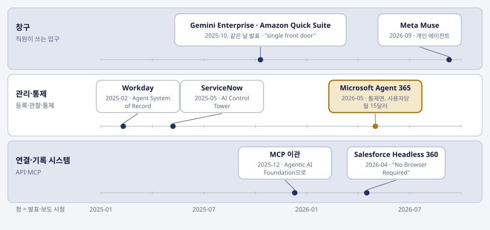
그림 24-1. 창구·통제면·연결 규격의 발표
연표(2025-02~2026-09)
세 줄은 앞에서 본 창구와 그 뒤의 모양을 앞에서 뒤 순서로 나눈 것이다.
2025년 10월 이후 세 줄 모두에서 발표가 이어졌다.
그렇다면 팀 리더는 손을 놓아도 될까? 회사가 등록부를 갖추더라도
등록부가 대신 정해 주지 못하는 것이 있다. 이 에이전트가 우리 팀에서 어떤
일을 하는지, 그 결과를 누가 책임지는지, 만든 사람이 떠나면 누가
이어받는지, 어떤 일이 생기면 내리는지다. 등록부는 항목을 채우라고 요구할
수는 있어도 그 항목에 들어갈 판단을 대신하지는 못한다.
이 가운데 인계가 가장 자주 빠진다. 팀원이 혼자 만들어 쓰던 에이전트가
그 사람의 이동과 함께 주인을 잃는 일은 흔히 상상할 수 있다. 다른
팀원들이 그 에이전트의 출력을 매일 받고 있었는데 아무도 그 설정을
모른다면 난감한 상황이 된다. 「조직 에이전트 2027」 4장은 퇴사할 때 PC를
반납해야 절차가 끝나는 것처럼 하자며 이렇게 썼다. 「자기가 만든
에이전트를 인계해야 떠날 수 있게 하자는 것이 내 주장이다.」 이 책은 이
원칙을 팀 단위로 내려 받자고 제안한다. 회사 제도가 생기기 전에도 팀장은
팀 에이전트마다 소유자와 인계자를 적어 둘 수 있다. 회사 안에 이미 어떤
에이전트가 돌고 있는지 목록부터 만들자는 제안은 「조직 에이전트 2027」
2장이 먼저 했다.
내릴 조건도 함께 적어 두자. 에이전트는 사람과 달리 지쳐서 그만두지
않는다. 아무도 내리지 않으면 아무도 쓰지 않는 출력을 계속 만들고, 권한을
계속 쥐고, 비용을 계속 쓴다. 틀린 결과가 몇 번 나오면 멈출지, 결과를
받는 사람이 없어지면 언제 내릴지를 처음 등록할 때 정해 두는 편이 낫다.
시작할 때 끝을 적어 두지 않은 에이전트는 팀이 바뀐 뒤에도 혼자 돈다.
14장에서 사람 관리와 에이전트 관리를 나란히 놓고, 에이전트 쪽 점검은
이 장의 목록표에서 가져오자고 했다. 그 점검에서 가장 쓸모 있는 두 항목은
합격 기준과 최근 틀린 사례다. 합격 기준은 이 에이전트의 출력을 받아도
된다고 판단하는 선이다. “상위 다섯 건에 누락이 없으면 된다”처럼 결과를
보기 전에 글로 적어 둔다. 최근 틀린 사례는 그 선을 넘지 못한 일을 적는
곳이다. 이 항목이 몇 달째 비어 있다면, 에이전트가 정말 틀리지 않았는지
아무도 확인하지 않았는지부터 따져 보자. 13장의 확인 노동 배분표와 이
목록표가 서로를 비추는 이유가 여기에 있다.
리더가 IT와 플랫폼에 물을 것
창구 도입 회의에서 IT 부서는 보통 보안 인증, 연동 목록, 요금제를
설명한다. 그 설명이 끝났을 때 팀을 이끄는 사람이 물어야 할 질문은 따로
있다. 질문마다 왜 리더의 몫인지 살펴보자.
삽화. 창구를 하나로 모아도, 그 뒤에서 열 수 있는 문은
권한마다 다르다. 상상으로 그린 장면으로, 특정 인물이나 조직이
아니다.
첫째는 권한의 범위다. 우리 팀 사람이 창구를 통해 에이전트에게 일을
맡기면, 그 에이전트는 누구의 권한으로 무엇에 접근하는가. 앞 절의 두 원칙
가운데 회사가 어느 쪽을 택했는지, 그 권한을 사람이 한눈에 볼 수 있는지
묻는다. 기술적인 질문처럼 보이지만, 우리 팀의 고객 데이터와 결재 흐름을
아는 사람은 리더다. 여기에 하나를 덧붙인다. 고객에게 나가는 메일, 금액이
걸린 결재처럼 사람이 반드시 확인해야 하는 행동을 팀이 지정할 수 있는가.
13장에서 본 Muse가 민감한 행동 전에 사람에게 묻도록 만든 것처럼, 회사
창구에서도 어떤 행동이 민감한지는 그 일을 하는 팀이 가장 잘 알 수
있다.
둘째는 한 지점이 멈췄을 때다. 모든 에이전트가 창구 하나를 거치면
편하지만, 그 지점에 문제가 생기면 영향도 한꺼번에 퍼진다. 「에이전트가
사는 곳」 5장은 게이트웨이를 누가 쥐느냐를 다룬 뒤 이렇게 적었다. 「어느
쪽이 쥐든 한 지점에 모은 이상 그 지점이 멈추면 그 뒤의 일이 함께
멈춘다.」 리더가 물을 것은 그 시간 동안 팀의 일이 어떻게 굴러가느냐다.
손으로 할 수 있는 일과 기다려야 하는 일을 미리 나눠 두지 않으면, 멈춘 날
팀은 아무것도 못 한다.
셋째는 비용이다. 좌석당 요금에 에이전트 관리 요금이 붙고, 기록 시스템
쪽에서는 에이전트가 API로 부르는 호출을 따로 과금하려는 움직임도 있다.
Salesforce는 Headless 360의 이런 호출을 새 수익원으로 보고 가격을 정하는
중이라고 했다(The Register, 2026-05-28 보도). 리더가 알고 싶은 것은 우리
팀이 쓰는 방식으로 쓰면 한 달에 얼마가 드는지, 사용량이 늘면 누가 예산을
정하는지다. 22장에서 사용량을 사람 평가가 아니라 일 단위 비용 진단에
쓰자고 한 것도 여기서 쓸모가 생긴다.
넷째는 감사 기록이다. 창구는 누가 무엇을 맡겼고 에이전트가 무엇을
했는지 기록을 쥔다. 그 기록을 누가 볼 수 있는가? 팀 리더가 볼 수 있다면
22장의 결과 평가와 13장의 확인 노동 기록에 쓸 수 있다. 볼 수 없다면 팀은
같은 기록을 따로 또 써야 한다. 반대로 그 기록이 팀원 개인의 사용 감시에
쓰인다면 22장에서 본 순위표가 다른 모양으로 돌아온다. 기록을 볼 권한과
기록을 쓰지 않을 곳을 함께 물어야 한다.
다섯째는 팀이 만든 에이전트의 등록과 인계다. 회사 등록부에 팀
에이전트를 올리는 절차가 있는지, 만든 사람이 떠날 때 인계가 어떻게
처리되는지 묻는다. 여섯째는 창구가 팀원의 화면에서 일을 돕는 것인지,
뒤쪽에서 일을 대신 처리하는 것인지다. 8장에서 본 Anthropic Economic
Index 2026년 1월 보고서(Anthropic 자사 데이터)를 다시 떠올려 보자.
개인이 Claude.ai에서 나눈 대화는 AI와 함께 일하는 증강형이 앞섰지만,
기업이 API로 쓴 경우는 업무 관련 비율과 지시형 비율이 훨씬 높았다. 같은
AI라도 직원의 화면에서는 돕는 쪽으로, 회사의 파이프라인에서는 맡겨
처리하는 쪽으로 쓰인다. 창구가 어느 쪽에 가까운지에 따라 팀원의 일이
늘어나는지 사라지는지가 갈린다. 어떤 업무가 뒤쪽으로 옮겨질 예정인지
미리 들어 두지 않으면, 팀원은 어느 날 자기 일이 줄어든 것을 대시보드를
보고 알게 된다. 그런 식으로 알게 된 변화는 사람을 불안하게 만든다.
마지막 질문은 누가 멈출 수 있느냐다. 어떤 에이전트가 이상한 메일을
보내거나 같은 요청을 끝없이 반복할 때, 그것을 멈추는 버튼은 누구에게
있는가. IT 운영팀에만 있다면 팀은 문제를 발견하고도 티켓을 넣고 기다려야
한다. 그 사이 에이전트는 계속 일한다. 팀 리더가 자기 팀 에이전트를 멈출
수 있는지, 멈춘 뒤 누구에게 알리는지까지 물어 두자. 질문 목록 전체는 이
장 끝의 도구에 여덟 개로 정리해 두었다.
표 24-1은 창구의 구성 요소마다 IT가 대답할 것과 팀이 스스로 정할 것을
나눠 본 것이다. 가운데 열은 회의에서 받아 적을 내용이고, 오른쪽 열은
회의가 끝난 뒤 팀이 할 숙제다.
표 24-1. 창구 구성 요소별 리더 질문
요소
IT·플랫폼이 대답할 것
팀이 정할 것
창구(채팅 화면)
어떤 에이전트와 데이터에 연결되나, 누가 쓸 수 있나
팀의 어떤 일을 창구로 옮기고 어떤 일은 옮기지 않을지
통제면(등록·관찰)
에이전트를 어떻게 등록하고 무엇을 관찰하나
팀 에이전트마다 소유자·인계자·내릴 조건
권한
에이전트는 누구의 권한으로 일하나, 상한이 있나
고객 데이터·결재처럼 사람이 확인할 행동 목록
감사 기록
무엇이 기록되고 누가 볼 수 있나
기록을 평가·확인에 쓸 곳과 쓰지 않을 곳
기록 시스템 연결(API·MCP)
어떤 시스템이 에이전트에게 열리나, 인가는 누가 하나
화면에서 하던 일 가운데 사라질 일(9장 심사표로)
비용
좌석·에이전트·사용량 과금 구조
팀 사용 방식의 월 비용 추정과 예산 결정권자
멈춤
한 지점이 멈추면 어떻게 되나
멈춘 동안 손으로 할 일과 기다릴 일
창구가 바꾸는 팀의 일
창구가 들어오면 팀의 일은 어떻게 달라질까? 한 가지는 분명하다. 사람이
화면에서 하던 일 가운데 일부가 API 뒤로 들어간다. 시스템 세 개를 오가며
숫자를 옮겨 적던 일, 정해진 양식에 맞춰 요청을 넣던 일은 에이전트가
뒤쪽에서 처리하게 될 가능성이 크다.
이때 리더가 할 일은 9장과 16장의 도구를 다시 펴는 것이다. 창구가 대신
처리하게 될 일은 없앨 일 심사표에 올려 볼 만하다. 처리하는 주체가 바뀌는
김에 그 일이 애초에 필요한지 물을 기회가 생기기 때문이다. 에이전트가
숫자를 옮겨 주는 보고서가 정작 아무도 읽지 않는 보고서라면, 옮기는 일을
자동화할 이유도 없다. 그래도 줄어든 시간이 생긴다면 아낀 시간 기록표에
적는다. 창구 도입으로 줄어든 시간이 어디로 가는지 적어 두지 않으면,
16장에서 본 대로 개인의 시간은 조직의 성과로 잡히지 않는다.
사라지는 일을 맡던 팀원이 있다면 리더의 일이 하나 더 생긴다. 숫자를
옮겨 적는 일로 하루의 상당 부분을 보내던 팀원을 떠올려 보자. 창구가 그
일을 가져가면 그 사람의 시간이 빈다. 그 빈자리에 무엇이 들어갈지는
9장에서 심사표에 “없앤 자리에 생길 새 일” 열을 둔 이유와 같은 질문이다.
에이전트가 옮긴 숫자를 확인하는 일일 수도 있고, 그동안 숫자를 옮기느라
못 하던 분석일 수도 있다. 어느 쪽이든 리더가 정해 주지 않으면 그 사람은
자기 자리가 줄어든다고 읽는다. 창구 도입 일정이 나오면 일정표 옆에
팀원별로 무엇이 바뀌는지 한 줄씩 적어 두는 편이 낫다.
창구가 하나로 모인다고 판단까지 하나로 모이지는 않는다. 같은 창구를
쓰는 두 팀을 떠올려 보자. 한 팀은 고객 응대 초안을 에이전트에게 맡기고
사람이 모든 건을 확인하기로 정했다. 다른 팀은 같은 기능을 쓰면서 금액이
걸린 건만 확인하기로 했다. 창구는 두 팀에게 같은 버튼을 줬지만, 무엇을
확인할지는 팀이 정했다. 이 결정은 등록부에도, 통제면의 대시보드에도
저절로 생기지 않는다. 8장에서 본 업무 선택, 9장의 없앨 일, 13장의 확인
기준이 모두 팀 단위의 판단이다.
회사 쪽에서 보면 이 차이는 비효율처럼 보일 수 있다. 창구를 하나로
모았으니 규칙도 하나로 모으고 싶어진다. 그런데 모든 팀에 같은 확인
기준을 내리면 어떤 팀에게는 지나치게 무겁고 어떤 팀에게는 위험할 만큼
가볍다. 이 책은 회사가 바닥선(넘으면 안 되는 권한, 반드시 사람이 확인할
행동)을 정하고, 그 위의 기준은 팀이 정해 등록부에 적게 하자고 제안한다.
팀장은 그 기준을 정하고 적을 수 있다. 바닥선을 정하는 일은 임원과 IT의
몫이다.
임원이 정할 것은 바닥선 말고도 있다. 창구의 감사 기록을 개인 평가에
쓸지 말지, 팀 리더에게 자기 팀 에이전트를 멈출 권한을 줄지, 팀이 만든
에이전트를 회사 등록부에 올리는 절차를 얼마나 가볍게 할지다. 등록 절차가
무거우면 팀은 등록을 건너뛴 채 에이전트를 쓴다. 회사 바깥의 개인
계정으로 돌리는 에이전트가 늘어나면, 창구를 하나로 모은 의미가 흐려진다.
팀장은 이 세 가지를 위에 요구할 수 있고, 요구할 때 이 장의 목록표를
근거로 들고 갈 수 있다. 우리 팀에 이런 에이전트가 이만큼 있고, 이 가운데
몇 개는 등록 절차가 없어 밖에서 돈다는 기록이 있으면 이야기가
빨라진다.
쓰는 팀에서 고치는 팀으로
창구 이야기를 하나 더 해 두자. 회사가 연 에이전트는 들여온 날 그대로
우리 팀 일에 맞지 않는다. 우리 팀의 양식, 우리 팀이 자주 받는 예외, 우리
팀이 정한 확인 기준을 회사 에이전트는 처음에 모른다. 그 차이를 메우는
방법은 둘이다. 팀이 각자 우회로를 만들어 쓰거나, 쓰는 팀이 회사
에이전트를 고쳐 가는 데 기여하는 것이다. 앞의 것은 빠르지만 팀 안에
머물고, 뒤의 것은 느리지만 회사 전체가 나아질 수 있다.
기여는 거창하지 않다. 첫째는 틀린 결과를 사례로 남기는 일이다.
「에이전트 성적표」 10장 「평가셋은 현업과 만든다」는 에이전트를 평가할
문항을 현업이 겪은 실패에서 모으자고 했고, Anthropic의 평가 안내 글에서
출발점을 이렇게 옮겼다. “20-50 simple tasks drawn from real failures.”
실제 실패에서 가져온 간단한 과제 20~50개로 시작하라는 것이다. 팀이 겪은
실패 한 건이 회사 에이전트의 평가 문항이 되면, 다음 판에서 같은 실패가
되풀이되는지를 누구나 볼 수 있다. 둘째는 팀이 정한 확인 기준과 찾아낸
경계를 나누는 일이다. 앞에서 회사는 바닥선을 정하고 그 위의 기준은 팀이
정하자고 했다. 팀이 정한 기준 가운데 다른 팀에도 쓸 만한 것은 등록부에
함께 올려 둘 수 있다. 셋째는 팀이 만든 지시문이나 작은 에이전트를 회사
등록부에 올려 다른 팀이 쓰게 하는 일이다. 22장에서 다룬 관행 공유, 즉
자기 방식을 팀이 반복해 쓸 수 있게 나누는 일이 회사 단위로 넓어진
모습이다.
문제는 이 기여가 누구의 일로도 잡히지 않기 쉽다는 데 있다. 16장에서
본 도움 행동 연구가 같은 방향을 가리킨다. 그 연구들에서 기록에 남지 않는
도움은 돕는 사람에게 비용이 되었다. 회사 에이전트를 고치는 기여도 기록에
남지 않으면 열심인 몇 사람의 일로 남기 쉽다. 「조직 에이전트 2027」
3장도 조직 기억에 기여한 사람을 어떻게 인정할지는 인사 제도의 몫이라고
하면서, 기록이 남지 않으면 인정할 근거도 없다고 적었다.
여기서부터는 이 책의 제안이다. 기여가 쌓이려면 16장의 스킬
마켓플레이스와 같은 원리가 필요하다. 받는 쪽이 결과를 적는 것이다. 팀이
보낸 실패 사례와 개선 요청이 반영되면, 창구를 운영하는 IT·플랫폼 조직이
무엇이 반영됐고 그 덕에 무엇이 나아졌는지를 기록하고 보낸 팀에 알린다.
그 기록은 보낸 사람의 평가 의견에 결과로 들어간다. 평가에 넣는 것은
반영된 결과이고, 사용 횟수나 보낸 건수는 넣지 않는다. 접수 창구와 반영
기록을 만드는 일은 임원과 IT의 몫이고, 팀장은 그것을 요구할 수 있다.
팀장이 바로 할 수 있는 일도 있다. 이 장의 팀 에이전트 목록표에 회사
에이전트 줄을 하나씩 두고, 「최근 틀린 사례」 칸에 그 사례를 회사에
보냈는지와 반영됐는지를 함께 적어 두자. 한 달에 한 번 팀 회의에서 10분만
그 줄을 함께 보면 된다. 그러면 회사 에이전트가 어디서 틀리는지가 팀의
기록이 되고, 누가 그것을 고치는 데 기여했는지도 함께 남는다. 에이전트를
잘 쓰는 사람은 많아질 것이다. 회사의 에이전트를 함께 좋아지게 만드는
일은 그보다 눈에 덜 띈다. 그 일을 기록으로 남겨 주는 것이 리더의
몫이다.
다음 주에 쓸 도구: IT·플랫폼에 보낼 질문 목록과 팀 에이전트
목록표
도구는 두 부분이다. 앞부분은 창구 도입 회의 전에 IT와 플랫폼 담당에게
미리 보낼 여덟 가지 질문이다. 회의 자리에서 처음 물으면 대개 “확인해
보겠다”로 끝난다. 미리 보내면 회의에서 대답을 들을 수 있다. 뒷부분은 팀
안에서 만드는 에이전트 목록표다. 회사 등록부가 아직 없어도 쓸 수 있고,
등록부가 생기면 그대로 옮겨 적으면 된다. 14장의 1on1 대화 카드 뒷면에
적는 에이전트 정보도 이 표에서 가져간다.
질문 목록은 이렇다.
우리 팀이 창구로 맡긴 일을 에이전트는 누구의 권한으로 처리하는가. 그
권한에 상한이 있는가.
고객 데이터·결재처럼 사람이 반드시 확인해야 하는 행동을 팀이 지정할
수 있는가.
창구나 게이트웨이가 멈추면 어떻게 되는가. 멈춘 시간 동안 팀은 어떻게
일하라는 안내가 있는가.
우리 팀의 사용 방식이면 한 달 비용은 어느 정도인가. 사용량이 늘면
예산은 누가 정하는가.
감사 기록에는 무엇이 기록되고, 팀 리더가 볼 수 있는가. 그 기록을
개인 평가에 쓰는가.
팀이 만든 에이전트를 회사 등록부에 올리는 절차가 있는가. 만든 사람이
떠날 때 인계는 어떻게 처리되는가.
창구는 팀원의 화면에서 일을 돕는가, 뒤쪽에서 일을 대신 처리하는가.
어떤 업무가 뒤쪽으로 옮겨질 예정인가.
어떤 에이전트가 문제를 일으켰을 때 누가 멈출 수 있는가. 팀 리더도
멈출 수 있는가.
그림 24-2. 하나의 창구와 그 뒤의 구조,
지점마다 물을 질문
위 줄은 팀원이 맡긴 일이 창구와 통제면을 지나 기록 시스템에 닿는
길이다. 상자 위 번호가 그 지점에서 물을 질문이고, 3번과 4번은 경로
전체에 걸린다.
표 24-2. 팀 에이전트 목록표
에이전트
하는 일
만든 사람·소유자
쓰는 권한
인계자
합격 기준
최근 틀린 사례
내릴 조건
(예) 주간 고객 문의 요약
문의 내역을 묶어 월요일 아침 팀 채널에 올림
담당자 A·팀장
문의 시스템 읽기 전용
담당자 B
상위 다섯 건에 누락 없음
같은 고객 문의를 두 건으로 셈
2주 연속 아무도 읽지 않으면 내림
목록표를 처음 채울 때는 팀원들에게 지금 팀 일에 쓰는 에이전트를 모두
적어 달라고 하자. 회사가 준 창구 안의 에이전트뿐 아니라, 개인이 만들어
팀 일에 쓰는 자동화까지 적는다. 처음 적을 때는 벌주지 않는다고 먼저 말해
두자. 숨어 있던 에이전트가 목록에 올라오는 것이 이 표의 첫 번째 성과이기
때문이다.
목록표에서 비워 두기 쉬운 열은 인계자와 내릴 조건이다. 처음 만들 때는
둘 다 먼 이야기처럼 느껴진다. 그래도 담당자가 팀을 옮기면 누가 운영을
이어받을까? 어떤 조건에서 운영을 끝낼까? 목록표에는 두 물음의 대답이
모두 있어야 한다. 질문 가운데 5번과 8번은 팀장이 대답을 받아 오는
질문이고, 회사 규칙을 바꾸려면 임원이 IT와 정해야 한다. 나머지는 팀이
목록표로 직접 채울 수 있다.
앞에서 본 두 팀으로 돌아가 보자. 금액이 걸린 건만 확인하기로 한 팀의
리더가 다른 팀으로 옮겨 갔다고 해 보자. 등록부에는 그 기준이 적혀
있지만, 새로 온 리더는 그 선이 왜 거기에 그어졌는지 등록부에서 찾을 수
없다. 기준은 창구에 적혀 있어도, 기준을 정하는 판단은 사람과 함께
움직인다. 사람이 옮겨 갈 때 누가 이어받고 누가 멈추는지가 팀의 목록표
밖에서도 지켜지려면 회사의 규정이 있어야 한다. 팀장이 위에 요구한 그
규정을 임원과 HR이 어떻게 정하는지가 다음 장의 이야기다. 그런 판단을 할
리더를 누가, 어떻게 기르는지는 7부에서 다룬다.
25장. 조직 에이전트의 최소 규칙과 기여 기록은 임원과 HR이 함께
정한다
임원의 자리
가상 사례로 시작하자. 한 회사의 영업지원 부서에 직원 한 사람이 만든
공용 에이전트가 있다. 계약서 초안에서 표준 조항과 다른 곳을 찾아 표시해
주는 에이전트다. 처음에는 만든 사람의 팀만 썼는데, 쓸 만하다는 말이
돌면서 옆 부서 몇 곳이 함께 쓰기 시작했다. 쓰는 부서들은 저마다 자주
틀리는 조항을 만든 사람에게 알려 주었고, 만든 사람은 그때마다 지시문을
고쳤다. 반년쯤 지나 만든 사람이 다른 부서로 옮겼다. 그다음 날부터
에이전트가 표준 조항을 엉뚱하게 표시하기 시작한다. 무엇이 바뀌었는지는
아무도 모른다. 쓰는 부서 가운데 한 곳은 잘못 표시된 초안을 그대로
고객에게 보낼 뻔했다. 아찔한 순간이다.
이 장면에서 바로 떠오르는 질문은 이것이다. 누구에게 연락해야 이
에이전트를 멈출 수 있을까? 옮겨 간 만든 사람일 수도, IT 운영팀일 수도,
쓰는 부서 가운데 한 곳일 수도 있다. 멈춘 동안 다른 부서가 무엇으로
일할지, 그동안 쓰는 부서들이 알려 준 틀린 조항이 누구의 기여로 남는지도
정해져 있지 않다.
삽화. 만든 사람이 부서를 옮긴 다음 날, 여러 부서가 함께 쓰던
공용 에이전트를 누가 멈출 수 있는지 아무도 모른다. 상상으로 그린
장면으로, 특정 인물이나 조직이 아니다.
장면은 지어낸 것이지만 첫 질문은 연구 문헌에 그대로 있다. Chan 외는
AI 시스템에 식별자를 붙이자는 논문의 초록에서 이렇게 적었다. “It may not
be clear whom to contact to shut down a malfunctioning system.”
오작동하는 시스템을 멈추려면 누구에게 연락해야 할지 분명하지 않을 수
있다는 것이다. 이 논문은 사회 전체에서 쓰이는 AI를 놓고 한 말이다. 회사
안으로 옮기면 질문이 더 구체적이 된다. 회사 공용 에이전트마다 소유자는
누구이고, 소유자가 떠나면 누가 이어받고, 누가 멈출 수 있는가? 감사
기록은 어디에 쓰지 않아야 하고, 쓰는 부서들이 보탠 기여는 어디에
적히는가?
플랫폼에 이미 생긴 등록부
먼저 회사들이 쓰는 플랫폼에 무엇이 이미 있는지 보자. 장치가 하나도
없는 것은 아니다.
Microsoft는 Microsoft 365 관리 센터에 에이전트 등록부(Agent
Registry)를 두었다. 2026년 10월 기준 공식 문서는 이 등록부가 “provides a
centralized view of all agents available for your organization”이라고
설명한다. 회사에서 쓸 수 있는 에이전트 전체를 한곳에서 보여 준다는
뜻이다. 눈여겨볼 것은 게시 유형이다. 직원이 만든 에이전트는 먼저 만든
사람이 공유한 에이전트(“Shared by creator”)로 올라온다. 회사가 게시한
에이전트(“Published by your org”)가 되려면 만든 사람이 전사 공개를
신청하고 관리자가 승인해야 한다. 같은 에이전트가 두 유형으로 두 번 나올
수 있고, 수명주기 기록도 따로 남는다. 요약 지표에는 소유자 없는
에이전트(“Agents without owners”)와 관리되지 않는 에이전트(“Unmanaged
agents”)가 있다. 문서는 만든 사람의 계정을 조직에서 삭제하면 그 사람이
공유한 에이전트가 소유자 없는 에이전트가 된다고 설명한다. 문서가 드는
예는 퇴사자다. 내보내기 항목에는 소유자(Owner)와 게시자 같은 칸이
있다.
Google은 2026년 4월 23일 공식 블로그에서 24장의 창구 Gemini
Enterprise에 붙은 등록부를 소개했다. “Agent Registry gives IT teams a
central catalog to curate and distribute approved, reusable agents for
their employees.” IT가 승인한 재사용 에이전트를 한 목록에서 골라
직원에게 나눠 준다는 설명이다. 에이전트마다 고유한 디지털 ID를 주고 최소
권한 원칙을 적용하는 장치도 함께 소개했다. 같은 글은 직원이 새
마켓플레이스에서 요청한 외부 파트너 에이전트가 승인을 받으면 직원용
목록에 나타난다고 했지만(“Once approved”), 누가 승인하는지는 적지
않았다.
플랫폼 기능은 이름도 화면도 빠르게 바뀐다. 위 내용은 각 문서의 2026년
10월 기준과 2026년 4월 발표 기준이니, 도입을 검토할 때는 그 시점의 공식
문서를 다시 확인하자.
두 문서를 나란히 놓으면 공통점이 보인다. 등록, 소유자, 승인 경로는
있다. 그런데 두 문서 모두 에이전트를 함께 고쳐 온 사람이나 부서의 기여를
다루지 않는다. 여기서부터는 이 책의 추론이다. Microsoft 문서의 승격
경로, 즉 만든 사람의 공유에서 회사 게시로 올라가는 단계와 소유자 칸은
기여를 적을 자리로 쓸 수 있는 실제 장치다. 회사 게시를 승인하는 순간이
그 에이전트에 누가 무엇을 보탰는지 적기 가장 좋은 때이기 때문이다.
가상 사례로 돌아가 보자. 문서의 설명대로라면 만든 사람이 회사를 떠나
계정이 삭제됐을 때는 소유자 없는 에이전트로 잡힌다. 부서만 옮긴 경우라면
어떨까? 문서는 이 경우를 다루지 않는다. 다만 소유자 없는 에이전트로 잡는
계기가 계정 삭제뿐이니, 계정이 남아 있는 한 소유자 칸에는 그 사람이
그대로 남을 것으로 보인다(이 책의 추론). 그렇다면 등록부는 소유자가
있다고 말하는데, 그 소유자는 더 이상 이 에이전트를 보지 않는 상태가
된다. 플랫폼이 잡아 주는 공백과 회사 규칙이 메워야 할 공백이 여기서
갈린다.
24장이 팀장에게 남긴 질문
24장은 회사가 에이전트 창구를 들이는 회의에서 팀장이 IT에 물을 질문을
정리했다. 감사 기록을 누가 볼 수 있고 어디에 쓰지 않는지, 팀이 만든
에이전트를 어떻게 등록하고 인계하는지, 문제를 일으킨 에이전트를 누가
멈출 수 있는지가 그 질문들이다. 결론은 2가지였다. 넘으면 안 되는
바닥선은 임원과 IT가 정하고 그 위의 기준은 팀이 정한다. 그리고 「쓰는
팀에서 고치는 팀으로」 소절에서, 쓰는 팀이 회사 에이전트를 고친 기여는
창구를 운영하는 IT·플랫폼 조직이 반영 결과를 기록하자고 했다. 팀장은 이
질문들을 위에 요구할 수 있었지만, 답을 규정으로 만드는 일은 팀장의 손을
벗어나 있었다. 이 장은 그 답을 회사 규정으로 옮긴다. 24장이 바닥선이라고
부른 것을 이 장은 최소 규칙이라고 부른다.
최소 규칙은 무엇을 정하나
그렇다면 모든 조직 에이전트가 지킬 최소 규칙에는 무엇이 들어가야
할까? 학술 문헌에서 출발해 보자.
Chan 외(FAccT 2024)는 AI 에이전트의 가시성을 “Information about
where, why, how, and by whom certain AI agents are used”로 정의했다.
어디서, 왜, 어떻게, 누가 쓰는지에 관한 정보다. 이를 높이는 장치를
3가지로 나눴다. 에이전트 식별자(agent identifiers), 실시간
감시(real-time monitoring), 활동 기록(activity logging)이다. 그리고 이
장치들이 “vary in intrusiveness and informativeness”라고 덧붙였다.
장치마다 얼마나 사생활에 파고드는지와 얼마나 많은 정보를 주는지가
다르다는 것이다.
Kolt(arXiv, 2025)는 법학의 주인-대리인 이론으로 에이전트를
분석하면서, 사람 대리인에게 쓰던 장치가 에이전트에는 잘 통하지 않을 수
있다고 경고했다. “incentive design, monitoring, and enforcement might
not be effective for governing AI agents that make uninterpretable
decisions and operate at unprecedented speed and scale.” 해석하기 어려운
결정을 전례 없는 속도와 규모로 내리는 에이전트에게는 보상 설계도,
감시도, 제재도 사람에게처럼 작동하지 않을 수 있다는 말이다.
두 연구 모두 사회 단위의 제안이다. 회사 안으로 옮기는 것은 이 책의
추론이고, 옮기면 이렇게 읽힌다. 에이전트는 보상으로 움직이지 않으니,
회사가 쓸 수 있는 장치는 누가 책임지는지 적고(식별자), 이상할 때 멈출
사람을 정하고(실시간 감시), 무엇을 했는지 남기는(활동 기록) 쪽에 가깝다.
그래서 이 책은 최소 규칙을 Chan 외의 3개 범주에 맞춰 짜자고 제안한다.
식별자 범주에는 등록부의 이름, 소유자, 인계자를 둔다. 실시간 감시
범주에는 멈출 권한자와 멈춘 뒤 알릴 곳을 둔다. 활동 기록 범주에는 감사
기록과 그 보관 기간, 그리고 그 기록을 어디에 쓰지 않을지를 둔다. 3개
범주의 침해 정도가 다르다는 Chan 외의 지적은 마지막 칸이 왜 필요한지를
알려 준다. 활동 기록은 정보를 가장 많이 주는 만큼 사람을 들여다보는
도구로도 쓰이기 쉽다.
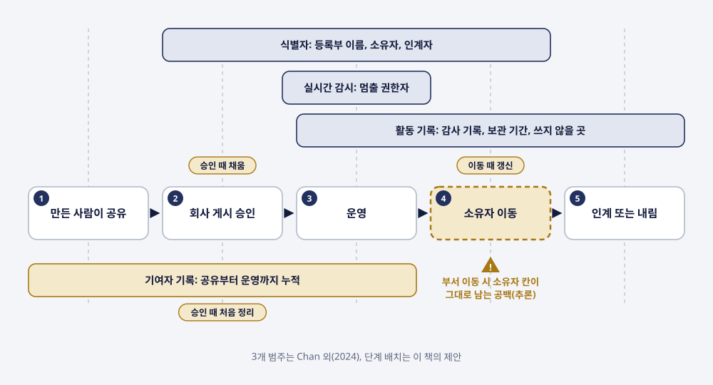
그림 25-1. 조직 에이전트의 수명주기와
단계마다 놓이는 최소 규칙 3개 범주
그림의 띠를 단계와 함께 읽어 보자. 식별자는 회사 게시를 승인할 때
처음 채우고 소유자가 움직일 때 다시 채운다. 가상 사례의 에이전트가
무너진 곳은 그 둘째 시점이었다.
규제는 어디까지 정했을까? EU AI Act 제26조는 고위험 AI 시스템을 쓰는
배치자(deployer)의 의무를 적었다. 2항은 감독 담당자를 “natural persons
who have the necessary competence, training and authority” 가운데서
지정하라고 한다. 필요한 역량과 훈련과 권한을 갖춘 사람이다. 6항은 자동
생성된 로그를 최소 6개월 보관하라고 한다(달리 정한 EU법이나 회원국 법이
없으면). 7항은 고용주인 배치자가 노동자 대표와 영향받는 노동자에게
알리라고 한다. 고용 등 부속서 III의 고위험 범주에 이 의무가 적용되는
날은 디지털 옴니버스(Regulation (EU) 2026/1744, 2026-07-27 발효)로
2027년 12월 2일로 미뤄졌다(2026-11 기준, 법률 자문사 정리 기준). 같은
개정으로 제4조의 AI 리터러시 조항도 바뀌었다. 공급자와 배치자가 충분한
리터러시를 보장하던 의무가 리터러시 개발을 지원하는 조치를 취하는 쪽으로
바뀌었다는 것이 법률 자문사들의 정리다(2026-11 기준, EUR-Lex 원문
미대조).
이 조항을 읽을 때 짚어 둘 것이 2가지 있다. 제26조는 고위험 AI
시스템의 의무라서, 회사 공용 에이전트가 모두 여기에 해당하지는 않는다.
채용이나 평가에 쓰이는 에이전트라면 고용 범주에 들 수 있다. 그리고
이것은 EU의 제도다. 국내 적용은 법무 확인 필요다.
표 25-1은 플랫폼 2곳과 규제·표준이 무엇을 정했고 무엇을 정하지
않았는지 5칸으로 나눠 본 것이다. 빈칸이 가장 많은 열이 회사 규정이 채울
자리다.
표 25-1. 플랫폼과 규제·표준이 정한 것과 정하지 않은
것
출처
소유자
승인자
로그 보관
노동자 통보
기여 인정
Microsoft 365 에이전트 등록부(2026-10 기준 문서)
소유자 칸, 소유자 없는 에이전트 지표
회사 게시는 관리자 승인
이 책이 대조한 문서 범위에 없음
다루지 않음
다루지 않음
Google Gemini Enterprise 등록부(2026-04 발표)
명시 없음(에이전트별 ID는 있음)
파트너 에이전트는 요청 뒤 승인, 승인자 명시 없음
이 책이 대조한 문서 범위에 없음
다루지 않음
다루지 않음
EU AI Act 제26조(고위험 배치자)
감독 담당자 지정(소유자와 같은 개념은 아님)
정하지 않음
최소 6개월(달리 정한 법이 없으면)
고용주인 배치자가 노동자 대표와 노동자에게
다루지 않음
NIST AI RMF 1.0(2023)
자발적 사용 프레임워크, 개정 중. 이 책의 대조 범위에서 5칸에
해당하는 조항은 확인하지 못함
ISO/IEC 42001:2023(2023-12 발행)
원문 미대조로 5칸을 판단하지 않음
감사 기록을 쓰지 않을 곳
감사 기록을 어디에 쓰고 어디에 쓰지 않을지는 이 소절에서 정한다. 23장
평가 항목 교체 선언문의 “에이전트 감사 기록” 칸도 이 규정을 따른다.
감사 기록에는 누가 언제 에이전트에게 무엇을 맡겼고 에이전트가 무엇을
했는지가 남는다. 에이전트의 오류를 추적하는 데 꼭 필요한 기록이다.
동시에 개인의 일하는 방식을 가장 자세히 보여 주는 기록이기도 하다. 이
기록이 개인 평가 자료로 흘러가면 어떻게 될까? 23장에서 평가에서 빼자고
한 사용량 지표가 뒷문으로 돌아온다. 누가 몇 번 맡겼는지, 얼마나 오래
썼는지가 다시 사람을 비교하는 숫자가 되기 때문이다.
사용량 순위를 쓰지 않을 곳에 따로 적는 이유도 같다. 23장에서 본
순위표들은 회사가 공식으로 만든 것이 아니어도 생겼다. 감사 기록은
순위표를 만들기에 가장 좋은 원료다. 누군가 선의로 “이번 달 에이전트를
가장 잘 쓴 팀”을 뽑아 공지하는 순간, 감사 기록은 사람을 비교하는 숫자가
된다. 규정에 개인 평가만 적어 두면 이런 순위는 금지 범위 밖에 있는
것처럼 보인다. 두 곳을 나란히 적는 이유다.
이 책은 감사 기록 사용 범위를 4가지로 정하자고 제안한다. 첫째, 볼
권한이다. 누가 어떤 사유로 볼 수 있는지 적는다. 에이전트 오류의 원인
분석, 보안 사고 조사, 법적 요청 같은 사유를 미리 정하고, 열람할 때마다
사유를 남긴다. 둘째, 쓰지 않을 곳이다. 개인 평가와 사용량 순위에는 쓰지
않는다. 셋째, 예외 절차다. 특정 개인의 기록을 봐야 하는 경우에는 노동자
대표와 법무가 함께 보는 절차를 거친다. 넷째, 보관 기간이다. 기간은 법무
확인 뒤에 정한다. 앞 소절의 EU 고위험 배치자 기준(최소 6개월)은 하나의
참고 사례다.
이 처방에 기대는 근거는 해외 제도 사례다. 17장에서 결정 자리의 사례로
본 Kaiser Permanente와 노조 연합의 AI 합의 부속서에는 이런 문장도 있다.
“The employer will inform the union, per local practice, of any new AI
technology that will be implemented for monitoring productivity and/or
performance.” 생산성이나 성과를 감시하는 데 쓸 새 AI 기술을 도입하면
노조에 알린다는 조항이다. 독일 사업장조직법은 제87조 1항 6호에서 “the
introduction and use of technical devices designed to monitor the
behaviour or performance of the employees”를 사업장평의회의 공동결정
사항으로 둔다(연방법무부 공식 영문 번역 기준, 법적 효력은 독일어 원문).
노동자의 행동이나 성과를 감시하도록 설계된 기술 장치를 들이고 쓰는 일은
노동자 대표와 함께 정한다는 뜻이다.
두 사례 모두 감사 기록을 개인 평가에 쓰지 말라고 직접 말하지는
않는다. 성과를 들여다보는 기술은 노동자 대표와 함께 다룬다는 원칙까지다.
감사 기록의 개인 평가 사용을 금지하거나 허용한 회사 정책을 공개한 사례는
이 책의 리서치가 찾지 못했다. 감사 기록 사용이 직원의 감시 체감이나
에이전트 사용 위축에 어떤 영향을 주는지 측정한 연구도 찾지 못했다.
그러니 “감사 기록은 개인 평가에 쓰지 않는다”는 결정은 이 책의 제안이다.
이 결정은 (다) 임원이 선언해야 효력이 있고, 예외 절차와 보관 기간은 (라)
노동자 대표·법무와 함께 정할 일이다. 국내 적용은 법무 확인 필요다.
규정을 만든 뒤에는 알리는 일이 남는다. 감사 기록이 무엇을 남기는지,
누가 어떤 사유로 볼 수 있는지, 어디에는 쓰지 않는지를 직원에게 공지하자.
쓰지 않겠다는 약속은 알려야 효력이 생긴다. 직원이 자기 기록이 평가에
쓰일지 모른다고 의심하는 한, 회사가 아무리 안 쓴다고 해도 사람들은
에이전트에게 맡길 일을 고르기 시작한다. 그런 위축이 실제로 일어나는지
측정한 연구는 앞에서 말했듯 찾지 못했다. 그러니 이것은 이 책의 추론이고,
공지는 그 추론에 기댄 제안이다.
등록 절차의 무게와 쓰는 팀의 기여
등록 절차는 얼마나 무거워야 할까? 너무 가벼우면 아무 에이전트나 회사
게시로 올라가고, 너무 무거우면 다들 등록을 건너뛴다.
비슷한 고민이 개발 조직의 내부 개발자 포털을 두고 오간 적이 있다.
2022년 Hacker News 토론에서 한 댓글은 대기업에서는 이런 포털이
SharePoint처럼 모든 것을 다스리겠다는 또 하나의 도구로 여겨져 외면받을
수 있다고 꼬집었다. 그 댓글에 단 답글은 그 말에 동의하며 “you definitely
need buy-in on a management level”이라고 했다. 경영진이 밀어 주고 정보의
출처가 하나로 모여야 굴러간다는 경험담이다(커뮤니티 의견). 댓글들은
개발자 포털 이야기만 하고 시점도 2022년이다. 에이전트 등록부에 옮기는
것은 이 책의 추론이지만, 등록부가 또 하나의 거창한 도구로 외면받느냐
실제로 찾는 목록이 되느냐가 경영진의 지원과 단일 출처에 달려 있다는
대목은 그대로 들린다.
무게를 정하는 기준으로 이 책은 되돌릴 수 있는지를 제안한다. 읽기
전용으로 초안을 만들어 주는 에이전트처럼 틀려도 사람이 바로 되돌릴 수
있는 에이전트는 가볍게 등록한다. 고객에게 메일을 보내거나 결재를
올리거나 데이터를 바꾸는 에이전트처럼 권한이 큰 에이전트는 무겁게
등록한다. 되돌릴 수 있는 결정과 되돌리기 어려운 결정의 절차를 달리하자는
생각은 26장에서 임원 결정에 다시 적용한다.
멈출 권한자는 소유자와 따로 적는 편이 낫다. 가상 사례에서 보듯
소유자는 자리를 옮기고, 휴가를 가고, 회의에 들어가 있다. 에이전트가 틀린
답을 내는 동안 소유자를 찾아 헤매면 그 사이 쓰는 부서들은 틀린 결과를
계속 받는다. 멈출 권한자는 소유자보다 넓게, 예를 들어 소유자와 IT 운영
담당, 그리고 권한이 큰 에이전트라면 가장 많이 쓰는 부서의 책임자까지 둘
수 있다. 멈추는 사람이 여럿이면 멈춘 뒤의 절차가 더 중요해진다. 누가
언제 왜 멈췄는지를 등록부에 남기고, 쓰는 부서들에게 멈췄다는 사실과
그동안 손으로 할 일을 알린다. 다시 켜는 결정은 소유자나 인계자가 한다.
멈추는 문턱은 낮게, 다시 켜는 문턱은 높게 두자는 것이 이 책의
제안이다.
이제 쓰는 팀의 기여로 가 보자. 19장에서 본 Wasko·Faraj의 연구는
사람들이 지식을 내놓는 조건으로 평판을 꼽았다. 기여가 자기의 전문가
평판을 높인다고 느낄 때 사람들은 기여했고, 상대에게 돌려받을 기대와는
무관했다. 가상 사례의 부서들이 틀린 조항을 알려 준 일은 바로 이런
기여다. 그런데 그 기여는 만든 사람의 머릿속에만 있었고, 만든 사람이
옮기면서 함께 사라졌다.
이 책은 등록부에 기여자 열을 두자고 제안한다. 지시문을 보탠 팀, 평가
세트를 만든 팀, 오류를 보고한 팀을 적고, 실패 사례가 몇 건 접수되어 몇
건 반영됐는지를 함께 남긴다. 그 기여는 19장의 도운 일 결과 기록 카드로
평가에 잇는다. 회사 공용 에이전트의 경우 카드를 쓰는 받은 팀은 플랫폼
운영 조직이다. 24장이 IT·플랫폼 조직이 반영 결과를 기록하자고 한 처방과
같은 말이다. 평가에 붙는 것은 반영되어 무엇이 나아졌는지이고, 보낸
건수는 붙지 않는다. 보낸 건수를 세기 시작하면 오류 보고가 사용량처럼
부풀 수 있다.
그래서 이 책은 회사 에이전트마다 소유자, 멈출 사람, 기여자를 적자고
제안한다.
이 장이 기댄 자료는 성격이 제각각이다. 플랫폼 문서와 EU 규정은 1차
자료지만 하나는 기능 설명이고 하나는 의무 규정이다. 학술 근거는 개념
논문이다. 2026년 11월 14일까지 이 책의 리서치가 찾지 못한 것은 사내
에이전트 거버넌스의 효과를 측정한 실증, 쓰는 팀의 기여를 평가에 반영한
회사의 공개 사례, 그리고 앞 소절에서 적은 감사 기록 사용의 영향 연구다.
최소 규칙의 3개 범주, 감사 기록 사용 범위, 기여자 열은 모두 효과가
확인되지 않은 설계다.
다음 분기에 쓸 제도 도구: 조직 에이전트 운영 규정 한 장
팀장이 들고 올 것: 24장의 팀 에이전트
목록표(소유자·인계자·내릴 조건이 채워진 줄과 비어 있는 줄).
도구는 한 장짜리 규정이다. 앞쪽은 임원이 승인할 결정 문장 4개이고,
뒤쪽은 HR과 IT가 함께 운영할 등록부 필드 정의와 감사 기록 사용 범위표다.
팀장이 들고 온 목록표의 빈 칸이 이 규정이 먼저 채워야 할 곳을 알려
준다.
시작은 목록 모으기다. 회사 게시 에이전트는 플랫폼 등록부에서 내보낼
수 있다. 문제는 그 밖에 있는 것들이다. 팀장들이 들고 온 팀 에이전트
목록표를 모으면, 만든 사람 공유 단계에 머물러 있지만 여러 부서가 이미
쓰고 있는 에이전트가 드러난다. 가상 사례의 에이전트가 바로 그런 자리에
있었다. 목록을 모으는 첫 달에는 미등록을 문제 삼지 않는다고 공지하는
편이 낫다. 그래야 여러 부서가 이미 기대고 있는 에이전트가 감춰지지 않고
등록부로 들어온다.
임원판의 둘째 문장에 있는 ○일은 회사가 정할 값이다. 너무 짧으면
인계자를 찾지 못한 에이전트가 한꺼번에 내려가고, 너무 길면 가상 사례의
그다음 날이 몇 주씩 이어진다. 되돌릴 수 있는 에이전트와 권한이 큰
에이전트에 다른 기한을 주는 것도 방법이다. 어느 쪽이든 그 값을 정한
이유와 1년 뒤 실제 인계 소요 일수를 나란히 적어 두면, 26장의 사안
목록에서 그 값이 맞았는지 다시 볼 수 있다.
표 25-2. 임원판: 조직 에이전트 결정 문장
결정 문장
누가 정하나
근거 수준
채택·보류와 이유
등록부에 올리지 않은 에이전트는 회사 게시를 허용하지 않는다
(다) 임원, 운영은 IT
제안(플랫폼의 승인 경로는 1차 문서로 확인)
소유자 없는 에이전트는 ○일 안에 인계하거나 내린다. 소유자가 부서를
옮길 때는 옮기기 전에 인계자를 정한다
(다) 임원
제안
감사 기록은 개인 평가와 사용량 순위에 쓰지 않는다
(다) 임원, 예외 절차는 (라) 노동자 대표·법무
제안(해외 제도 사례: KP 부속서, 독일 사업장조직법. 국내 적용은 법무
확인 필요)
쓰는 팀의 기여는 19장 카드로 평가에 잇고, 회사 에이전트의 카드는
플랫폼 운영 조직이 쓴다
(다) 임원
제안(기여 조건은 Wasko·Faraj 2005, 반영 효과 연구 없음)
HR판은 IT와 공동으로 운영한다. 등록부의 필드를 먼저 정의하자. 사람
이름이 들어가는 칸은 실명 대신 팀 코드로 적는다.
표 25-3. HR·IT판: 등록부 필드 정의
필드
적는 것
누가 적나
최소 규칙 범주
근거 수준
이름·하는 일
에이전트 이름과 한 줄 설명
소유자
식별자
제안
소유자
운영 책임자의 팀 코드
소유자, 승인 시 IT 확인
식별자
제안(플랫폼 소유자 칸 활용)
인계자
소유자가 떠나거나 옮길 때 이어받을 사람의 팀 코드
소유자
식별자
제안
멈출 권한자
이상이 보이면 즉시 멈출 수 있는 사람과 멈춘 뒤 알릴 곳
소유자와 IT
실시간 감시
제안
권한 범위
읽기만 하는지, 보내기·결재·변경까지 하는지
소유자, IT 확인
식별자
제안
되돌릴 수 있는지
틀렸을 때 사람이 바로 되돌릴 수 있는지(등록 절차의 무게를
정한다)
IT
식별자
제안
기여자 기록
지시문·평가 세트·오류 보고를 보탠 팀 코드와 반영 여부
플랫폼 운영 조직
활동 기록
제안
실패 사례 접수 건
접수 건수와 반영 건수
플랫폼 운영 조직
활동 기록
제안
다시 볼 날
소유자와 인계자를 다시 확인할 날
IT
식별자
제안
표 25-4. HR판: 감사 기록 사용 범위표
항목
규정
누가 정하나
근거 수준
볼 수 있는 사람
소유자, 멈출 권한자, IT 보안 담당(직책으로 적는다)
(다) 임원, 운영은 (나) HR·IT
제안
사유
에이전트 오류 원인 분석, 보안 사고 조사, 법적 요청. 열람마다 사유
기록
(나) HR·IT
제안
쓰지 않을 곳
개인 평가, 사용량 순위, 승진 심사 자료
(다) 임원
제안(해외 제도 사례가 가장 가까운 근거)
예외 절차
특정 개인의 기록을 봐야 할 때 노동자 대표와 법무가 함께 검토
(라) 노동자 대표·법무
제안(국내 적용은 법무 확인 필요)
보관 기간
법무 확인 뒤 정한다(EU 고위험 배치자 기준 최소 6개월은 참고
사례)
(라) 법무
근거(EU 제26조 6항, 해외) + 제안
표 25-5. 운영 항목
항목
내용
근거 수준
누가 정하나
결정 문장은 (다) 임원, 필드와 점검은 (나) HR·IT, 감사 기록 예외
절차와 보관 기간은 (라) 노동자 대표·법무
제안
1년 뒤 다시 볼 지표
소유자 없는 에이전트 수, 인계 소요 일수, 기여 기록 건수, 감사 기록
열람 사유 건수
제안
시범 범위
회사 게시 에이전트부터(만든 사람 공유 단계는 다음 차례)
제안
운영 부담
IT 플랫폼 담당과 HR 공동, 월 1회 점검, 저장 위치는 등록부
제안
1년 뒤 지표 가운데 감사 기록 열람 사유 건수는 따로 볼 만하다. 열람이
오류 분석으로 몰려 있으면 규정이 의도대로 돈다는 신호이고, 예외 절차
건수가 늘어나면 규정의 선이 어디서 흔들리는지 보여 준다. 이 지표들은
26장에서 다룰 임원 의사결정 사안 목록의 한 행으로 옮겨 간다.
가상 사례의 에이전트를 다시 떠올려 보자. 만든 사람이 옮기기 전에
인계자가 정해져 있었다면, 멈출 권한자가 등록부에 적혀 있었다면, 쓰는
부서들이 알려 준 틀린 조항이 기여자 기록에 남아 있었다면 그다음 날은
달랐을 것이다. 3가지 가운데 어느 것도 새로운 기술이 필요한 일은 아니다.
플랫폼에는 소유자 칸과 승인 경로가 이미 있었다. 누가 그 칸을 채우고,
사람이 옮길 때 누가 다시 채우는지를 정하지 않았을 뿐이다. 그 결정은 IT
혼자 내릴 수도, HR 혼자 내릴 수도 없다. 감사 기록을 개인 평가에 쓰지
않겠다는 약속은 평가 제도를 가진 쪽이 해야 하고, 멈출 권한과 인계 기한은
플랫폼을 가진 쪽이 운영해야 한다. 이 결정을 임원과 HR이 함께 내려야 하는
이유다.
임원이 다음 경영 회의에서 승인할 문장은 이 한 줄이면 된다.
“회사에 게시하는 모든 에이전트는 등록부에 소유자, 인계자, 멈출 사람,
기여자를 적고, 그 감사 기록은 개인 평가에 쓰지 않는다.”
26장. 임원의 결정은 적어 두고 1년 뒤 다시 본다
임원의 자리
“Less than 40% of regulations have a PIR by the required deadline.”
영국 규제정책위원회(RPC) 의장이 2025년 2월 11일 위원회 블로그에 쓴
문장이다. 검토 기한이 정해진 규제 가운데 기한 안에 시행 후 검토(PIR)를
받은 것이 40%가 안 된다는 뜻이다. 다시 볼 날짜는 처음부터 정해져 있었다.
그런데도 10건 가운데 6건 넘게 그날을 넘겼다.
같은 글의 제목은 한 부처가 시행 후 검토 성적을 끌어올렸지만 다른
부처들은 뒤처져 있다는 내용이다. 그 부처(환경식품농촌부)는 원래 밀린
검토로 외부에서 지목된 곳이다. 2023년 3월 환경 감시 기구가 보고서에서 이
부처의 밀린 검토 56건을 따로 지목했고, 당시 장관이 의회에서 2024년
말까지 해소하겠다고 약속했다. 그 뒤 이 부처는 2023년 이후 검토 보고서
64건을 공개하며 밀린 검토 해소에 나섰다. 블로그는 이 경위가 개선의
원인이라고 단정하지 않았고, 다른 부처에는 내부 지침과 정기 보고를
권했다. 다만 날짜를 적어 두는 것만으로는 다시 보는 일이 저절로 일어나지
않는다는 것까지는 이 숫자가 보여 준다.
회사 이야기로 옮겨 보자. 이 책은 임원 자리의 여덟
장(2·3·17·18·19·23·25장과 7부의 29장)에서 도구마다 「1년 뒤 다시 볼
지표」를 두었다. 층을 줄인 결정, 관리 범위의 기준선, 아낀 시간의 사용처,
사내 인재 시장의 규칙, 도운 일의 기록, 평가와 보상의 교체, 승진 기준,
에이전트 운영 규정까지. 그런데 그 1년 뒤는 누가 열까? 법이 날짜를 정해
둔 정부에서도 제때 지켜지는 검토가 절반이 안 되는데, 회사 안의 결정은
무엇으로 다시 보게 만들 수 있을까?
결과를 보고 나면 결정이 달라 보인다
다시 보는 일이 왜 어려운지부터 생각해 보자. 기한을 잊는 것도 이유지만
더 깊은 이유가 있다. 1년 뒤에 결정을 다시 보면, 그때는 이미 결과가 나와
있다. 결과를 안 사람이 결정을 공정하게 다시 볼 수 있을까?
1장은 Gartner가 2024년 10월에 내놓은 관리 층 예측으로 열었고, 그
예측이 정한 시한이 바로 지금이다. 예측이든 결정이든 다시 볼 날은
생각보다 빨리 온다. 그리고 그날 회의실에 앉은 사람들은 결과를 먼저
본다.
Baron과 Hershey(Journal of Personality and Social Psychology, 1988)는
대학생을 대상으로 한 실험 5개에서 같은 결정을 결과만 바꿔 보여 줬다.
결과는 이랬다. “Subjects rated the thinking as better, rated the
decision maker as more competent, or indicated greater willingness to
yield the decision when the outcome was favorable than when it was
unfavorable.” 결과가 좋으면 같은 결정의 사고 과정을 더 좋게 평가했고,
결정한 사람을 더 유능하다고 봤다. 더 불편한 발견은 그다음이다. “Although
subjects who were asked felt that they should not consider outcomes in
making these evaluations, they did so.” 결과를 고려하면 안 된다고 답한
사람들도 실제로는 결과를 고려했다.
결과를 안 뒤에는 그 결과를 처음부터 예측할 수 있었다고 여기기 쉽다는
후판단 편향도 오래 연구된 주제다. 결과에 책임을 지게 하느냐 과정에
책임을 지게 하느냐에 따라 판단이 달라진다는 연구 흐름도 있다. 이 둘은 이
책의 리서치가 원문을 대조하지 못한 통상 인용이라 개념만 적고, 문헌은
부록의 참고문헌에 둔다.
여기서부터는 이 책의 추론이다. 대학생 실험의 결과가 임원 회의에
그대로 옮겨진다는 보장은 없다. 그래도 방향은 같을 가능성이 크다. 1년 뒤
결과가 나쁘게 나온 결정을 놓고 “처음부터 무리한 결정이었다”는 말이
나오면, 결정 당시 무엇을 알았고 무엇을 몰랐는지 증명할 방법이 없다.
결정한 사람에게도, 그 결정을 다시 보려는 사람에게도 난감한 자리다.
결과가 좋게 나온 결정도 마찬가지다. 운이 좋았던 결정이 좋은 판단으로
기록되고, 같은 방식의 결정이 되풀이된다. 이 편향을 줄이려면 결정 당시의
근거와 예상이 결과보다 먼저 적혀 있어야 한다.
결정을 적는 양식의 원형
결정을 짧게 적는 양식에는 이미 원형이 있다. 소프트웨어 설계 쪽에서
나온 것이지만 구조는 어떤 결정에도 쓸 수 있다.
Michael Nygard는 2011년 11월 15일 블로그 글에서 설계 결정 기록(ADR,
Architecture Decision Record)을 이렇게 정의했다. “An architecture
decision record is a short text file in a format similar to an
Alexandrian pattern.” 항목은 5개다. 제목(Title), 맥락(Context),
결정(Decision, “We will …”으로 시작하는 문장), 상태(Status:
제안·채택·폐기·대체됨), 결과(Consequences). Nygard가 이 양식을 만든
이유도 함께 적었다. 기록이 없으면 새로 온 사람은 이유를 모른 채 결정을
그대로 받아들이거나, 모른 채 뒤집는다. “It’s better to avoid either
blind acceptance or blind reversal.” 뒤집힌 결정을 다루는 방식도
눈여겨볼 만하다. “If a decision is reversed, we will keep the old one
around, but mark it as superseded.” 바뀐 결정은 지우지 않고 대체됨으로
표시해 남긴다.
임원의 결정에 옮기면 3가지가 쓸모 있다. 결정을 “우리는 ~한다”라는 한
문장으로 적게 하는 것, 상태를 두어 결정이 아직 살아 있는지 보이게 하는
것, 뒤집힌 결정도 지우지 않는 것이다. 마지막 것이 특히 중요하다. 1년 뒤
결정을 바꾸는 일이 실패를 지우는 일이 되면, 아무도 결정을 바꾸자고
말하지 않는다.
모든 결정을 같은 무게로 적을 필요는 없다. Jeff Bezos는 Amazon의
2015년 주주서한(2016-04 제출)에서 결정을 2가지로 나눴다. 되돌릴 수
없거나 거의 되돌릴 수 없는 결정은 “one-way doors”이고 신중하게, 천천히,
충분히 의논해서 내려야 한다. 대부분의 결정은 되돌릴 수 있는 “two-way
doors”다. 그는 앞의 것을 Type 1, 뒤의 것을 Type 2라고 부르며 이렇게
썼다. “Type 2 decisions can and should be made quickly by high judgment
individuals or small groups.” 조직이 커지면 Type 2 결정에까지 Type 1의
무거운 절차를 쓰는 경향이 생기고, 그 결과는 느림과 실험 부족이라고도
했다.
이듬해 서한(2017-04 제출)은 다시 보는 일과 더 가깝게 닿는다. 대부분의
결정은 원하는 정보의 70% 정도에서 내려야 하고, 어느 쪽이든 “you need to
be good at quickly recognizing and correcting bad decisions.”라고 했다.
나쁜 결정을 빨리 알아채고 고치는 데 능해야 한다는 것이다. 같은 서한에서
반대하더라도 일단 따르기로 하는 “disagree and commit”을 이야기하며
덧붙인 한 줄도 임원에게 닿는다. 상사라면 자신도 그렇게 해야 한다는
것이다(“If you’re the boss, you should do this too.”).
두 문서를 겹쳐 읽는 것은 이 책의 추론이다. 결정을 빨리 알아채고
고치려면 무엇을 기준으로 나쁜 결정이라고 판단할지가 결정 당시에 적혀
있어야 한다. 그리고 Type 1 결정과 Type 2 결정은 다시 보는 무게도 달라야
한다. 되돌리기 어려운 결정일수록 1년 뒤 재검토를 무겁게, 되돌릴 수 있는
결정일수록 분기 점검처럼 가볍게 보는 편이 낫다.
다시 보는 자리가 하는 일
적어 둔 결정을 정해진 자리에서 다시 보면 무엇이 나아질까? 이 질문에
가장 가까운 근거는 사후 검토 연구다.
Tannenbaum과 Cerasoli(Human Factors, 2013)는 일을 마친 뒤 함께
돌아보는 디브리프(debrief) 연구를 모아 분석했다. “Findings from 46
samples (N = 2,136) indicate that on average, debriefs improve
effectiveness over a control group by approximately 25% (d = .67).” 표본
46개, 2,136명을 모아 보니 디브리프를 한 쪽이 하지 않은 쪽보다 평균 약
25% 나았다. 효과 크기는 팀과 개인 사이에서, 시뮬레이션과 실제 현장
사이에서 비슷했다.
Keiser와 Arthur(Journal of Applied Psychology, 2021-07 권호, 온라인
게재 2020-08-27)는 사후 검토(AAR, after-action review) 연구 61편을 모아
훈련 평가 기준 전반에서 d = 0.79의 개선을 보고했다. 이 연구에서 눈여겨볼
것은 효과가 커지는 조건이다. 하나는 검토를 개인이나 팀에 맞추는 것, 다른
하나는 객관적인 성과 기록을 놓고 검토하는 것이다.
다만 이 숫자들을 임원 회의로 그대로 가져오기는 어렵다. 메타분석 2편의
연구는 대부분 훈련과 시뮬레이션 맥락이다. 임원의 결정을 1년 뒤 다시 보는
제도의 효과를 측정한 연구가 아니다. 여기서 이 책이 가져오는 것은 효과의
크기보다 조건이다. 객관적 성과 기록을 놓고 검토할 때 효과가 컸다는
조건을 임원 결정에 옮기면, 1년 뒤 펼칠 기록이 결정 당시에 숫자로 적혀
있어야 한다는 뜻이 된다. 이 연결은 이 책의 추론이다.
결정 당시에 쓸 수 있는 방법도 하나 있다. Gary Klein은 2007년 하버드
비즈니스 리뷰에 프리모템(premortem)을 소개했다. 계획을 실행하기 전에
“team members assume that the project they are planning has just
failed”, 즉 계획한 일이 이미 실패했다고 가정하고 그 이유를 찾는
방법이다. 커뮤니티에는 이런 경험칙도 있다. “focus on the common blunders
and ignore the elaborate what-if scenarios, keep it short.”(흔한 실수에
집중하고 정교한 가정 시나리오는 무시하고, 짧게 하라. Hacker News,
커뮤니티 의견) 프리모템이 실제 프로젝트 성과를 높인다는 동료 심사 연구는
이 책의 리서치가 찾지 못했다. 그래도 결정 당시 예상 옆에 “이 결정이 1년
뒤 실패했다면 가장 흔한 이유” 한 줄을 적게 하는 정도라면 부담이 작다.
1년 뒤 그 한 줄이 맞았는지 보는 것만으로도 회의의 질문이 달라진다.
기록이 몇 주 만에 멈추지 않으려면
양식이 있어도 기록이 이어지지 않으면 소용이 없다. 2026년 3월 Hacker
News에 이런 질문이 올라왔다. 설계 결정 기록을 시도했는데 6주 만에 아무도
관리하지 않게 됐고, 변경 요청 설명 양식도 한 달 만에 외면받았다는
하소연이다(커뮤니티에 올라온 질문, 일화. 한 댓글은 질문 자체가 LLM이 쓴
글이라고 의심했다). 질문의 진위와 별개로 댓글들이 내놓은 해법은 들어 볼
만하다. 그 가운데 하나가 이렇다. “Put the ADR in the PR as a
requirement.”(설계 결정 기록을 변경 요청의 요구 사항으로 넣어라.
커뮤니티 의견) 기록을 따로 쓰는 일로 두지 말고, 이미 거치는 절차를
통과하는 조건으로 만들라는 것이다.
임원의 세계로 옮기면 이렇게 된다. 경영 회의의 안건과 결재 문서는 이미
모두가 거치는 경로다. 의사결정 사안 목록의 항목을 그 경로의 요구
사항으로 두자. 결정 문장, Type 1/2, 결정 당시 근거와 예상, 다시 볼
날짜·자리·여는 사람·공개할 곳이 비어 있으면 결재가 올라가지 않게 하는
것이다. 이 책의 제안이다.
법정 기한만으로는 다시 보는 일이 지켜지지 않았다(영국 RPC 의장
블로그, 2025-02-11). 그래서 이 책의 사안 목록은 다시 볼 날짜와 함께 그
자리를 여는 사람과 결과를 공개할 곳까지 적는다(이 책의 제안).
여는 사람과 공개할 곳이 왜 필요할까? 날짜는 달력에 있지만, 그날
회의를 소집하는 사람이 정해져 있지 않으면 날짜는 지나간다. 결과를 어디에
알릴지 정해져 있지 않으면 재검토는 회의실 안에서 끝나고, 결정의 영향을
받은 사람들은 결정이 다시 검토됐는지조차 모른다. 공개할 곳은 결정의
영향을 받는 사람에게 닿는 곳이어야 한다. 17장의 인력 조정 비사용
약속이라면 전사 공지가, 25장의 감사 기록 규정이라면 등록부 첫 화면이 그
자리다. 이 두 칸이 재검토를 지켜 준다는 효과 연구는 없다. 영국의 숫자가
날짜만으로는 부족했다는 것을 보여 줬기에, 날짜 옆에 사람과 장소를 붙여
보자는 제안이다.
경계도 하나 그어 두자. 사안 목록은 임원의 결정을 적는 문서다. 팀장을
평가하는 문서로 쓰지 않는다. 결정을 맡은 사람의 성적표로 사안 목록을
쓰기 시작하면 2가지 일이 일어날 수 있다. 사람들은 맞히기 쉬운 예상만
적고, 1년 뒤 결과가 나쁘게 나온 결정은 결정한 사람의 무능으로 읽힌다.
앞에서 본 결과 편향이 제도로 굳는다. 이 경고도 이 책의 추론이지만, 사안
목록의 쓰임을 문서 첫 줄에 적어 두는 편이 낫다.
임원 자리 여덟 장의 지표가 표 한 장에 모인다
표 26-1로 가기 전에, 이 여덟 장의 도구가 서로 어떻게 이어지는지만
짚어 두자. 도구들은 따로 떨어져 있지 않다. 결정이 내려지는 순서를 따라
앞 도구의 산출이 뒤 도구의 입력이 되도록 짜여 있다. 그래서 한 결정을 1년
뒤 다시 볼 때 그 결정만 따로 보면 놓치는 것이 생긴다. 예를 들어 29장의
승진 기준이 기대만큼 움직이지 않았다면, 원인이 기준표에 있는지, 기준표에
들어갈 18장 기록과 19장 카드가 애초에 쌓이지 않았는지부터 갈라 봐야
한다.
이 여덟 장의 도구는 모두 결정을 하나씩 남긴다. 그리고 모두 1년 뒤 볼
지표를 달고 있다. 표 26-1은 그 결정과 지표를 한 장에 모은 것이다. 셋째
열의 Type 1/2 분류는 연구가 정해 준 것이 아니라 이 책의 분류다. 되돌리기
어려운 쪽을 Type 1로 두었고, 회사마다 다르게 판단할 수 있다.
표 26-1. 임원 자리 여덟 장 결정의 분류, 1년 뒤 다시 볼 지표,
다시 볼 자리
장
결정
이 책의 분류
1년 뒤 다시 볼 지표
다시 볼 자리
2
관리 층 조정(사전 심사서)
Type 1(사람의 직무와 경로가 바뀐다)
상위 결재 건수, 실무자 1on1 주기, 직함을 내려놓은 사람의 1년
유지
조정 1년 뒤 경영 회의
3
관리 범위 기준선
Type 2
기준선 초과 팀의 관리자 이직, 주니어 1년 유지
분기 경영 회의 안건, 연 1회 재검토
17
아낀 시간 사용처 결정 규정
규정은 Type 2, 제4조 인력 조정 비사용 약속은 Type 1
재투자 시간이 만든 결과, 다른 팀 지원 시간, 기록표 제출률
분기 경영 회의(규정 제1조의 자리)
18
사내 인재 시장 규칙과 시간 상한
Type 2
공개 게시를 거친 이동 비율, 보낸 관리자 기록이 붙은 평가 건수, 상한
초과 건수
HR 월 지표, 연 1회 재검토
19
도운 일 카드와 챔피언 역할 헌장
Type 2
카드 분포(팀 쌍별·분기 시점별), 카드가 붙은 평가 건수, 챔피언
교대율
평가 주기 종료 뒤
23
평가 항목 교체와 보상 연결
평가 항목은 Type 2, 보상 연결은 Type 1에 가깝다
새 항목 분포, 진단 보고 사용률 추이, 평가 이의 건수, 보상 연결
항목의 분포
평가·보상 주기 종료 뒤
29
리더 승진 기준
기준은 Type 2, 그 기준으로 올린 승진은 되돌리기 어렵다
새 기준으로 올린 리더 팀의 1년 이직·사내 이동·상향 설문
승진 심사 1년 뒤
25
조직 에이전트 운영 규정
규정은 Type 2, 감사 기록 비사용 선언은 Type 1에 가깝다
소유자 없는 에이전트 수, 인계 소요 일수, 기여 기록 건수, 감사 기록
열람 사유 건수
월 1회 등록부 점검, 연 1회 재검토
표를 위에서 아래로 읽으면 결정의 순서가 되고, 왼쪽에서 오른쪽으로
읽으면 사안 목록의 한 행이 된다. Type 1에 가까운 결정이 사람의 직무,
약속, 보상, 승진, 감사 기록처럼 신뢰가 걸린 곳에 몰려 있다는 점도
보인다. 한번 깨진 약속은 결정을 되돌려도 원래대로 돌아오기 어렵다(이
책의 추론). 그런 결정일수록 1년 뒤 재검토를 무겁게 보자.
그림 26-1. 결정한 날부터 1년 재검토까지,
임원 자리 여덟 장의 지표가 들어오는 자리
그림은 왼쪽에서 오른쪽으로 읽는다. 아래의 장 번호가 그 시점에 사안
목록으로 들어오는 지표의 출처다. 모든 지표를 1년 뒤에 한꺼번에 보지
않는다는 점이 중요하다. 분기마다 들어오는 지표가 쌓여 있어야 1년
재검토가 결과를 처음 보는 자리가 되지 않는다.
1장이 임원에게 남긴 질문 5개 가운데 마지막 질문은 1년 뒤를 물었다. 이
사안 목록이 그 질문에 대한 이 책의 대답이다.
이 대답의 근거가 어디까지인지도 적어 두자. 결과 편향 실험과 사후 검토
메타분석은 단단하지만 대학생 실험과 훈련 맥락이다. Nygard와 Bezos의
문서는 1차 자료지만 원칙을 적은 글이다. 기업이 임원 결정을 정해진 기간
뒤 공식으로 재검토하는 제도를 공개한 사례, 결정을 적는 일지가 조직
단위에서 효과가 있다는 연구, 그리고 앞에서 적은 프리모템의 실제 성과
연구는 2026년 11월 14일까지 이 책의 리서치가 찾지 못했다. 사안 목록
양식, 재검토 회의, 결재 경로 안에 두는 방식은 모두 효과 연구 없이 내놓는
제안이다.
다음 분기에 쓸 제도 도구: 임원 의사결정 사안 목록
팀장이 들고 올 것: 8장의 결정 기록(결정한 사람,
결정한 날, 다시 볼 날, 결정)이 쌓인 팀의 기록.
도구는 2부분으로 이뤄진다. 임원판은 사안 목록 한 행의 항목이고,
HR판은 1년 뒤 재검토 회의의 진행표와 결재 경로에 사안 목록을 넣는
법이다. 팀장의 결정 기록에 있던 4칸이 사안 목록에서는 10칸 가까이로
늘어난다. 늘어난 칸은 대부분 결과보다 먼저 적어야 하는 것들이다.
표 26-2. 임원판: 사안 목록 한 행의 항목
항목
적는 것
원형과의 대응
근거 수준
결정 제목
짧은 이름
Nygard의 제목
근거(원형)
맥락
왜 지금 이 결정을 하는지, 나온 반대 의견
Nygard의 맥락
근거(원형) + 제안(반대 의견 칸)
결정 문장
“우리는 ~한다” 한 문장
Nygard의 결정
근거(원형)
Type 1/2
되돌리기 어려운지, 되돌릴 수 있는지
Bezos 2015 서한
근거(원칙 문서) + 제안(분류는 회사가 판단)
결정 당시 근거와 근거 수준
기댄 자료와 근거·추론·제안 표시
이 책의 규약
제안
결정 당시 예상
1년 뒤 지표가 어디쯤일지 숫자로, 실패한다면 가장 흔한 이유 한
줄
Klein의 프리모템을 짧게
추론(결과 편향 실험에서) + 제안
다시 볼 날짜·자리·여는 사람·공개할 곳
날짜, 회의 이름, 소집할 사람(직책), 결과를 알릴 곳
이 책의 제안
제안(날짜만으로는 부족했다는 근거는 영국 RPC)
다시 볼 지표
해당 장 도구의 「1년 뒤 다시 볼 지표」
임원 자리 여덟 장의 도구
제안
상태
제안·채택·폐기·대체됨. 대체되면 옛 행을 지우지 않는다
Nygard의 상태
근거(원형)
결정 당시 예상을 숫자로, 결과보다 먼저 적게 하는 것이 이 양식의
중심이다. 1년 뒤 결과를 본 사람이 결정을 다시 볼 때 결정 당시의 판단을
결과와 떼어 놓고 볼 수 있게 하려는 장치다. 결과 편향 실험에서 이 장치를
끌어낸 것은 이 책의 추론이고, 효과는 검증되지 않았다.
삽화. 1년 뒤 재검토 자리에서, 임원들은 결과를 보기 전에 결정
당시 적어 둔 예상부터 펼쳐 본다. 상상으로 그린 장면으로, 특정 인물이나
조직이 아니다.
숫자로 적으라고 하면 곧바로 반문이 나온다. 모르는 것을 어떻게 숫자로
적느냐는 것이다. 범위로 적으면 된다. 기준선을 넘는 팀이 1년 뒤 몇 곳에서
몇 곳 사이일지, 이의 제기가 지난해보다 늘지 줄지 정도면 충분하다. 범위가
넓으면 넓은 대로 결정 당시의 불확실성이 기록된다. 그것도 1년 뒤에 쓸모가
있다. 불확실하다고 적어 둔 결정이 예상 밖으로 흘렀다면 그 불확실성은
결정 당시에 이미 드러나 있던 셈이다. 확신한다고 적어 둔 결정이 크게
빗나갔다면 무엇을 근거로 확신했는지 다시 볼 일이다.
사안 목록은 한 곳에 둔다. 결정마다 다른 회의 자료에 흩어져 있으면 1년
뒤 펼칠 기록을 찾는 데서 재검토가 멈춘다. 경영기획 담당이 사안 목록을
관리하고, 각 행의 지표는 해당 장 도구를 운영하는 담당이 분기마다 채워
넣는 방식이 가장 단순하다.
표 26-3. HR판: 1년 뒤 재검토 회의 진행표
순서
할 일
물을 질문
남길 것
1
예상과 결과 대조
결정 당시 예상한 숫자와 지금 숫자는 얼마나 다른가
차이와 그 크기
2
결과 편향 점검
결과가 나빴다면, 결정 과정도 나빴다고 말할 근거가 결정 당시 기록에
있나? 결과가 좋았다면, 과정도 좋았다고 말할 근거가 있나?
근거가 있는 판단과 결과만 보고 한 판단의 구분
3
실패 이유 한 줄 확인
결정 당시 적은 가장 흔한 실패 이유가 실제로 일어났나
일어남·일어나지 않음·다른 이유
4
상태 결정
유지할까, 고칠까, 다른 결정으로 대체할까
상태 변경. 대체되면 새 행을 만들고 옛 행은 대체됨으로 남김
5
다음 재검토와 공개
다음에 언제, 누가 열고, 어디에 알리나
다음 재검토 날짜, 공개한 날과 곳
진행표의 둘째 줄이 가장 중요하다. 결과가 나쁜 결정에만 이 질문을
던지면 회의는 책임자를 찾는 자리가 된다. 결과가 좋은 결정에도 같은
질문을 던져야 운이 좋았던 결정을 가려낼 수 있다.
결재 경로에 넣는 법은 단순하다. 경영 회의 안건 양식과 임원 결재 문서
양식에 표 26-2의 항목을 첨부 칸으로 둔다. 결정 문장, Type, 결정 당시
예상, 다시 볼 날짜와 여는 사람이 비어 있으면 안건으로 올리지 않는다.
처음에는 번거롭다는 말이 나올 것이다. 그래서 Type 2 결정은 결정 문장과
다시 볼 날짜만 채워도 올라가게 하고, Type 1 결정에만 전체 항목을
요구하는 식으로 무게를 나눠 둔다.
사안 목록의 첫 8개 행은 임원 자리 여덟 장의 도구에서 옮겨 온다. 아래
예시 행의 값은 모두 예시 값이고, 결정 문장은 일반형이다. 실제 회사의
결정이 아니며, ○ 자리는 회사가 채운다. 사람이 들어가는 칸은 실명 대신
직책이나 팀 코드로 적는다.
표 26-4. 사안 목록 예시 8행(예시 값)
장
결정 문장(일반형)
Type
결정 당시 예상(예시 값)
다시 볼 날짜·자리
여는 사람
공개할 곳
상태
2
우리는 ○본부의 관리 층을 ○단계 줄이고, 이관표의 5가지 일을 받을
사람을 정한 뒤 시행한다
1
1년 뒤 상위 결재 건수 ○% 이내 증가, 직함을 내려놓은 사람 ○%
유지
시행 1년 뒤 경영 회의
경영기획 담당
해당 본부 공지
제안
3
우리는 관리 범위 기준선을 ○명으로 두고, 넘는 팀에 육성 시간을 따로
배정한다
2
기준선 초과 팀 ○곳 이하
분기 경영 회의, 연 1회 재검토
HR 분석 담당
관리자 공지
제안
17
우리는 아낀 시간의 사용처를 분기 경영 회의에서 정하고, 인력 조정
근거로 쓰지 않는다는 약속을 ○년까지 지킨다
1(제4조)
기록표 제출률 ○% 이상, 다른 팀 지원 시간 ○시간
분기 경영 회의, 약속 기한
경영기획·HR 공동
전사 공지
제안
18
우리는 사내 인재 시장의 규칙 6개를 채택하고 한 사람의 시간 상한을
○%로 둔다
2
공개 게시를 거친 이동 ○% 이상, 상한 초과 ○건 이하
연 1회 재검토
HR 인재 담당
인재 시장 게시판
제안
19
우리는 도운 일 결과 기록 카드를 평가 자료의 ○항목에 붙인다
2
카드가 특정 팀 쌍에 ○% 이상 몰리지 않음
평가 주기 종료 뒤
HR 평가 담당
평가 안내 문서
제안
23
우리는 평가에서 사용량 지표를 빼고 교체 선언문의 넣을 항목을 쓰며,
보상 연결은 ○로 정한다
2(보상 연결은 1에 가깝다)
평가 이의 건수 ○건 이하
평가·보상 주기 종료 뒤
HR 평가·보상 담당
평가 안내 문서
제안
29
우리는 첫 관리자 승진 심사에 위원회용 평가 기준표를 쓴다
2(승진 자체는 되돌리기 어렵다)
새 기준으로 올린 리더 팀의 1년 이직 ○% 이하
승진 심사 1년 뒤
HR 승진 담당
승진 안내 문서
제안
25
우리는 회사에 게시하는 에이전트마다 소유자·인계자·멈출 사람·기여자를
적고, 감사 기록을 개인 평가에 쓰지 않는다
2(감사 기록 선언은 1에 가깝다)
소유자 없는 에이전트 ○개 이하
월 1회 점검, 연 1회 재검토
IT 플랫폼 담당
등록부 첫 화면
제안
표 26-5. 운영 항목
항목
내용
근거 수준
누가 정하나
사안 목록을 쓰는 결정과 결재 경로 반영은 (다) 임원, 양식과 재검토
회의 운영은 (나) HR·경영기획. 17장 제4조처럼 인력 조정과 이어지는 행의
공개 범위는 (라) 노동자 대표·법무와 함께 정한다(국내 적용은 법무 확인
필요)
제안
1년 뒤 다시 볼 지표
재검토 날짜를 지킨 행의 비율
제안
시범 범위
이번 분기 경영 회의에서 내리는 결정부터
제안
운영 부담
경영기획 담당, 분기 1회 갱신·연 1회 재검토, 결재 시스템 첨부
제안
묻기에서 적기까지
임원의 자리는 2장에서 관리 층을 줄이기 전에 묻자는 데서 출발했다.
줄이는 층이 하던 일은 어디로 가는가. 그 질문은 임원 자리의 장을 지나며
모양을 바꿨다. 남은 관리자는 몇 명을 기르는가, 아낀 시간은 어느 회의에서
정하는가, 보낸 관리자의 평가에는 무엇이 붙는가, 도운 일은 누가 적는가,
평가표에는 무엇을 넣는가, 승진 심사는 무엇을 모으는가(29장), 회사
에이전트는 누가 멈추는가. 그리고 이 장에서 마지막 질문이 됐다. 그 모든
결정은 1년 뒤 누가 다시 보는가.
물을 때는 결정 전이었고, 적을 때는 결정하는 날이었다. 다시 보는 날은
아직 오지 않았다. 사안 목록의 8개 행이 그날을 기다린다. 층 조정, 관리
범위 기준선, 사용처 규정, 인재 시장 규칙, 도운 일 카드, 평가 교체, 승진
기준, 에이전트 운영 규정. 행마다 결정 문장과 예상과 다시 볼 날짜가 적혀
있다면, 1년 뒤 회의실에 앉은 사람은 결과보다 먼저 그 예상을 펼쳐 볼 수
있다.
영국에서 기한 안에 시행 후 검토를 받은 규제는 날짜가 정해져 있어도
40%를 넘기지 못했다. 회사의 사안 목록도 날짜만 적어 두면 같은 길을 갈 수
있다. 이 장이 날짜 옆에 여는 사람과 공개할 곳을 붙인 이유가 거기에 있다.
1년 뒤 그 자리가 실제로 열리는지는 이 책이 정할 수 없다. 사안 목록 첫
행에 이름을 올리는 임원이 정한다.
그 임원 다음에 올 리더는 누구인가. 7부는 다음 리더를 기르는 일로
간다. 출발은 직함 없는 실무자의 자리, 리더 역할 하나에 먼저 손을 드는
일이다. 사안 목록의 일곱째 행인 승진 기준은 7부의 끝, 29장에서
다룬다.
7부. 다음 리더를 기르는 리더
6부는 임원의 결정을 사안 목록에 적고 1년 뒤 다시 보는 데서 끝났다. 그
사안 목록에는 리더 승진 기준도 한 행으로 들어 있다. 7부는 그 행이
가리키는 질문을 세 자리에서 차례로 받는다. 다음 리더는 누가 되고, 누가
어떻게 기르며, 회사는 무엇을 보고 올리는가.
이 질문이 지금 무거운 데는 이유가 있다. 관리 층이 얇아지면 다음
리더가 연습할 자리도 줄어든다. 리더 자리를 원하는 사람이 줄고, 회사가
리더에게 요구하는 일도 바뀌고 있다. 그런데 승진 심사가 현재 실적 하나로
모이면, 잘하는 실무자와 잘 기르는 리더의 차이를 들여다볼 창이 없다.
27장은 실무자 자리에서 시작한다. 직함이 생길 때까지 기다리면 기르는
쪽의 일을 연습할 자리가 없다. 실무자가 정할 것은 직함 없이 맡을 리더
역할 하나다. 팀의 확인 순환 운영이나 없앨 일 심사 회의 진행처럼 4주 뒤
내려놓을 수 있는 작은 역할을 고르고, 기간과 다음 사람, 맡지 않을 것을
먼저 적은 뒤 팀장에게 손을 든다.
28장은 팀장 자리다. 팀장이 정할 것은 누구를 리더로 올리고, 어떻게
기르고, 무엇으로 평가할지다. 이 장은 팀장 자리의 장들에서 만든 실천 아홉
행에 「사람을 기른 증거」 한 행을 더한 리더 평가 기준표를 내놓는다.
기준표는 먼저 리더가 자기를 비춰 보는 자기 점검판으로 쓴다.
29장은 임원 자리다. 임원과 HR이 정할 것은 승진 심사 위원회가 사람을
기른 증거를 어디서, 언제, 누가 모을지, 그리고 그 증거를 승진 기준에
넣을지다. 이때 팀장이 들고 오는 것이 28장의 기준표와 그 증거 열에 쌓인
기록이다.
장의 순서는 증거가 쌓이는 순서와 같다. 실무자가 손을 들어 남긴 기록이
팀장의 기준표로 들어가고, 그 기준표가 위원회의 심사 자료로 올라간다.
미리 밝혀 둘 경계도 있다. 에이전트를 이끌어 본 경험이 리더로 가는 길이
된다는 7부의 중심 제안에는 직접 근거가 없다. 승진과 관리 성과에 대한
연구는 생성형 AI 이전의 자료가 대부분이고, 「사람을 기른 증거」를 승진
심사에 반영했을 때 리더의 행동이 달라졌다는 효과 연구는 이 책의 리서치가
찾지 못했다. 세 장 모두 그 경계를 해당 대목마다 밝힌다.
27장. 직함 없이 맡을 수 있는 리더 역할 하나에 먼저 손을 든다
실무자의 자리
28장은 팀장 승진 심사 면담에서 질문을 바꾸자고 권한다. AI로 무엇을
만들었는지 묻기보다 이렇게 묻는 편이 낫다는 것이다. 「당신의 방식을 보고
일을 바꾼 동료가 있나, 그 사람은 지금 무엇을 다르게 하나」.
그 질문은 심사하는 쪽에 건넨 것이었다. 이제 자리를 바꿔 앉아 보자.
언젠가 그 질문을 받을 사람은 바로 당신이다. 그날 무엇으로 답하겠는가?
기억에 기대면 대답은 흐려진다. “몇 사람 도와준 적이 있다”는 대답은 듣는
사람에게 아무것도 보여 주지 않는다. 누구의 일이 어떻게 바뀌었는지, 그
사람이 지금 무엇을 다르게 하는지를 말하려면 기록이 있어야 한다. 그
질문에 답할 기록을 지금 갖고 있는가? 15장의 돕는 일 기록표를 쓰기
시작했다면 마지막 열이 그 답의 초안이다. 아직 비어 있다면 무엇으로
채울지부터 생각해 보자.
이 질문에 답할 근거는 얇다
먼저 근거의 지도부터 그려 두자. 에이전트에게 일을 맡겨 본 경험이
사람을 이끄는 일로 이어진다는 직접 근거는 이번 조사에서 찾지 못했다. 이
장이 쓰는 승진·관리 연구는 모두 28장이 리더를 고르는 쪽에서 쓰는 것이다.
리더가 되려는 후보 쪽을 다룬 새 연구는 찾지 못했다. 그래서 이 장은
실무자 자리의 장 가운데 제안의 비중이 가장 높은 장이다. 직함 없이 맡을
역할 다섯, 권한 없이 맡을 때의 대비 넷, 장 끝의 체크리스트는 모두 이
책의 제안이다.
에이전트를 이끄는 일과 사람을 이끄는 일이 어디서 겹치는지는 14장의 절
「겹치는 것: 범위·기준·점검」과 「사람에게만 해야 하는 일」이 리더
쪽에서 정리했다. 일의 범위를 정하고 기준을 세우고 점검하는 일은 겹치고,
사람에게만 해야 하는 일이 따로 있다는 정리다. 그 정리를 다시 펼치기보다
실무자 쪽에서 무엇을 이미 연습했는지만 짚어 보자.
여기서부터는 이 책의 추론이다. 4장에서 업무 목록에
맡김·함께·직접·보류를 표시한 일은 누구에게 무엇을 맡길지 고르는 일과
닮았다. 5장 맡김 메모의 끝나는 조건과 멈출 조건은 사람에게 일을 맡길
때도 빠지면 곤란한 줄이다. 10장에서 결과를 받기 전에 확인 기준을 적은
일, 11장에서 넘김 메모에 확인한 것과 확인하지 않은 것을 적은 일은 남의
결과를 반려할 때 기댈 근거가 된다. 20장의 실패 카드는 두 사람이 같은
판정을 내릴 수 있게 적는 연습이었다. 범위, 기준, 점검의 겹치는 부분을
실무자는 이미 손으로 해 봤다.
다른 점은 5장에서 본 대비 그대로다. 그 장의 Yukl과 Fu 조사에서
관리자들은 부하를 기르고 힘을 실어 주는 것을 일을 맡기는 중요한 이유로
꼽았다(Journal of Organizational Behavior 1999). 에이전트에게 맡길 때는
그 이유가 없다. 기르기 위해 맡기는 일, 그것이 실무자가 아직 연습하지
않은 쪽이다.
리더를 고르는 쪽에서 본 연구
승진과 관리 성과에 대한 연구는 28장의 절 「누구를 올리나」가 리더를
고르는 쪽에서 다시 읽는다. 여기서는 후보 쪽에서 알아 둘 것을 추리자.
Benson, Li, Shue는 여러 기업의 영업직 데이터로 승진과 그 뒤의 관리
성과를 봤다. 작업논문 기준으로, 새 관리자의 승진 전 실적이 두 배면 그
관리자 밑에 있는 부하 한 사람의 실적이 7.5% 낮았다. 관리 성과와 양의
관계를 보인 신호는 동료와 실적을 나눠 본 협업 경험이었다. 저자들의
표현으로는 협업 경험이 “positively related to managerial performance but
not consistently correlated with promotions”였다. 관리자로서의 성과와는
양의 관계였는데 승진과는 일관되게 상관되지 않았다는 뜻이다. 저자들은
각주에 경고도 남겼다. 회사가 협업 경험을 승진에 크게 반영하기 시작하면
실적을 나눠 가짜 협업자를 만들 수 있다는 것이다.
18장에서 본 Minni의 연구는 작업논문 판에서 관리자의 시간 사용 자료도
함께 봤다. 승진이 빠른 관리자는 그렇지 않은 관리자보다 부하 직원과의
1on1에 주당 0.63시간, 19% 더 많은 시간을 썼다(한 다국적 기업 관리자
600명의 시간 사용 자료, 2025-09 작업논문). 여기서 좋은 관리자는 승진
속도로 정의됐고, 19%는 두 집단을 나란히 놓은 비교다. 1on1을 늘리면 좋은
관리자가 된다는 인과를 보인 결과는 아니다.
두 연구 모두 사람 사이의 일을, 생성형 AI 이전의 자료로 본 것이다.
후보 쪽에서 읽으면 이렇게 정리된다. 승진에서 눈에 띄는 것과 관리 성과를
예측하는 것이 다를 수 있다. 그리고 좋은 관리자로 분류된 사람들은 사람과
마주 앉는 시간을 더 썼다. 나머지 두 연구는 표 27-1에 모았다.
하위 10% 상사를 상위 10% 상사로 바꾸면 9명 팀에 1명을 더하는 것보다
팀 산출이 더 늘었다
한 기업 자료
Hoffman·Tadelis
대형 하이테크 기업 한 곳
JPE 2021
사람 관리 기술은 이직과 강한 음의 관계, 그런 관리자 본인은
평가·승진·급여가 높았다
이직 외 성과에는 일관된 효과가 없었다
직함 없이 맡을 수 있는 역할 다섯
그렇다면 실무자는 어디서 기르는 쪽의 일을 연습할 수 있을까? 직함이
생길 때까지 기다리면 연습할 자리가 없다. 아래 역할 다섯은 연구가 아닌 이
책의 제안이다. 직속 부하 없이도 맡을 수 있는 역할을 다섯 가지 꼽아
보자.
첫째, 팀의 확인 순환 운영이다. 확인 순환은 팀에서 결과를 확인하는
일을 돌아가며 맡는 운영 방식으로, 13장이 팀장에게 권한 장치다. 누가 이번
주에 무엇을 확인할지 정하고, 한 사람에게 확인이 쏠리지 않는지 살피는
일이다. 둘째, 없앨 일 심사 회의의 진행이다. 9장이 소개한 회의로, 아무도
읽지 않는 것 같은 보고서나 관행을 하나 골라 계속할지 따지는 자리다.
셋째, 신입의 맡김 메모와 확인 기준 봐 주기다. 5장과 10장의 도구를 신입이
처음 쓸 때 옆에서 함께 읽어 주는 일이다. 넷째, 팀의 실패 카드 모으기다.
20장의 카드를 팀원들이 쓰면 한곳에 모으고, 보낼 곳이 있으면 대신 정리해
보낸다. 다섯째, 정기적으로 옆 사람의 일을 함께 보는 시간이다. 15장의
직접 해 보게 나누는 순서를 한 번의 도움으로 끝내지 않고 주기를 두는
것이다.
이 책이 아직 리더가 아닌 실무자에게 권하는 것도 이것이다. 팀의 확인
순환이나 없앨 일 심사 회의에 먼저 손을 들어 보자. 28장은 같은 확인
순환을 팀장 쪽에서, 후임 후보에게 넘길 수 있는 첫 연습으로 본다.
여기서는 손을 드는 사람의 쪽에서 보자.
다섯 가운데 무엇을 고를까? 내 도구에 기록이 가장 많이 쌓인 쪽에서
시작하는 편이 낫다. 10장 작성표를 꾸준히 써 왔다면 확인 순환이, 20장
카드를 여러 장 썼다면 실패 카드 모으기가 손에 맞을 것이다. 비개발 팀으로
옮겨 보면, 고객 응대 팀에서는 답변 초안의 확인 순환이, 영업 지원
팀에서는 제안서에서 나온 실패 카드 모으기가 시작하기 쉬운 역할일 수
있다.
고른 뒤에는 팀장에게 요청한다. 문장은 짧을수록 좋다. “다음 달부터 4주
동안 팀의 확인 순환 운영을 맡아 보고 싶습니다. 시작할 때 팀에 제가 이
역할을 맡는다고 한 문장으로 알려 주실 수 있을까요? 4주가 끝나면 다음
사람에게 넘기고, 반려한 건과 기준을 정리해 드리겠습니다.” 역할, 기간,
팀에 알려 달라는 부탁, 끝나면 무엇을 남길지. 이 네 가지가 들어 있으면
된다.
삽화. 4주 뒤 내려놓을 수 있는 작은 역할 하나를 골라, 맡아
보고 싶다고 팀장에게 짧게 청한다. 상상으로 그린 장면으로, 특정 인물이나
조직이 아니다.
팀장이 바로 답하지 못하거나 지금은 어렵다고 할 수도 있다. 팀에 확인
순환 자체가 없을 수도 있고, 심사 회의를 열 생각이 없을 수도 있다. 그럴
때는 다섯 가운데 팀장의 결정이 덜 필요한 역할로 옮기자. 신입의 메모를 봐
주는 일이나 실패 카드를 모으는 일은 팀의 운영을 바꾸지 않고도 시작할 수
있다. 거절당한 요청도 적어 두자. 언제 무엇을 요청했고 어떤 답을
들었는지가 다음에 다시 손을 들 때의 출발점이 된다. 처음부터 큰 역할을
맡을 필요는 없다. 4주 뒤에 내려놓을 수 있는 작은 역할 하나면
충분하다.
권한 없이 맡을 때 생기는 일
손을 드는 것까지는 어렵지 않다. 어려운 것은 그다음이다. 직함도 권한도
없이 역할을 맡으면 무슨 일이 생길까? 이 질문을 다룬 연구는 이번 조사에서
찾지 못했다. 아래 장면과 대비는 모두 이 책의 제안이다.
가상 사례. 4년 차 실무자가 팀의 확인 순환을 처음
맡았다. 첫 주에는 확인할 사람을 정하고 목록을 돌리는 일이 전부였다. 둘째
주에 동료 한 사람의 보고서 초안을 반려하자 분위기가 달라졌다. 동료는
같은 직급인 사람이 왜 자기 결과를 돌려보내느냐고 물었다. 셋째 주에는
확인 일정을 맞추느라 자기 일이 밀렸다. 넷째 주가 끝나 갈 무렵 그는 이
역할을 언제까지 맡아야 하는지 아무도 정하지 않았다는 것을 알았다.
이 장면에는 권한 없이 역할을 맡을 때 부딪히는 네 가지가 다 들어 있다.
하나씩 대비해 두자.
첫째, 동료의 반발이다. 같은 직급의 사람이 내 결과를 반려하면
받아들이기 어렵다. 당연한 반응이다. 두 가지를 준비해 두자. 하나는 앞의
요청 문장에 넣은 팀장의 한 문장이다. 팀장이 팀에 이 역할을 알려 두면
반려가 개인의 판단으로 보일 여지가 줄어든다. 다른 하나는 반려를 10장의
확인 기준 사전 작성표에 적힌 기준으로만 하는 것이다. “이 결과가 마음에
들지 않는다”고 말하는 대신 “합격 기준 둘째 줄, 수치를 원출처와 대조하는
줄을 통과하지 못했다”고 말하면 같은 직급끼리도 말이 덜 거칠어진다.
기준이 없는 결과라면 반려하기보다 기준을 함께 적자고 제안하는 편이
낫다.
둘째, 내 일과의 균형이다. 역할을 맡았다고 원래 일이 줄지는 않는다.
15장의 돕는 일 기록표 맨 위에 이 역할에 쓸 시간의 상한을 한 줄 더 적자.
넘으면 기록표가 먼저 알려 준다. 상한을 계속 넘는다면 팀장에게 원래 일
가운데 무엇을 덜어 낼 수 있는지 묻는다.
셋째, 언제 내려놓느냐다. 장면 속 실무자가 넷째 주에 깨달은 문제다.
맡을 때 끝나는 조건을 적어 두자. 기간과 다음 사람이다. 5장에서
에이전트에게 적어 준 끝나는 조건을 내 역할에도 적는다. 끝이 정해져
있으면 넘겨줄 때 무엇을 정리할지도 미리 보인다.
넷째, 맡지 않는 것이다. 확인 순환을 운영하는 사람은 결과를 기준에
대어 보고 반려할 수 있다. 그러나 동료의 평가나 보상을 판단하는 일은 맡지
않는다. 그 일은 팀장과 회사 제도의 몫이다. 반려 기록을 누가 볼 수
있는지, 그 기록이 동료의 평가 자료로 쓰이지 않는지도 처음에 팀장과 정해
두자. 이것이 정해져 있지 않으면 첫째 문제인 동료의 반발이 훨씬
커진다.
가상 사례(이어서). 네 가지를 미리 준비했다면 장면은
어떻게 달라졌을까? 첫 주에 팀장이 팀에 역할을 알렸고, 둘째 주의 반려는
작성표의 기준 한 줄을 가리키며 이뤄졌다. 셋째 주에 시간이 밀리자
기록표의 상한이 먼저 알려 줬고, 넷째 주에는 이미 정해 둔 다음 사람에게
뒷면을 넘겼다. 반발이 사라진다는 보장은 없다. 그래도 반발이 생겼을 때
기댈 문장이 하나씩 있다. 권한 없이 맡는 역할에서는 그 문장들이 기댈 곳이
된다.
기록을 부풀리지 않는다
역할을 맡으면 기록이 쌓인다. 반려한 건, 함께 본 시간, 바뀐 일. 이
기록을 어떻게 다룰지도 정해 두자.
앞의 Benson 외 각주가 여기서 다시 쓰인다. 협업 경험이 승진에 크게
반영되기 시작하면 가짜 협업자가 생길 수 있다는 경고는 회사만을 향한 말이
아니다. 기록을 남기는 사람에게도 같은 유혹이 생긴다. 함께 본 사람의 수를
늘리고 싶고, 바뀐 것을 크게 적고 싶어진다. 그래서 15장의 기록표는 바뀐
것을 그 사람의 말로 적고, 바뀐 것이 없으면 없다고 적게 했다. 도운 사람이
5명인 기록표보다 바뀐 일이 2줄 적힌 기록표가 그 질문에 더 잘 답한다.
정직한 한 줄은 이런 모양이다. “옆 팀 신입, 맡김 메모를 함께 고침. 2주 뒤
본인 말로: 끝나는 조건을 먼저 쓰니 다시 맡기는 일이 줄었다. 확인 기준은
아직 내가 써 준 것을 그대로 쓴다.” 바뀐 것과 아직 바뀌지 않은 것이 함께
적혀 있다. 이런 줄은 부풀리기 어렵고, 읽는 사람도 믿기 쉽다. 협업과 육성
기록을 승진 심사에 어떻게 넣을지는 회사 제도가 정할 일이고, 임원 자리의
29장이 그 심사를 다룬다.
14장에서 본 BCG AI at Work 2026으로 돌아가 보자. 이 조사(컨설팅사
자체 조사, 자기 응답)에서 자기 역할이 AI를 관리하고 지시하는 쪽으로 옮겨
갔다는 문항에 47%가 동의했고, 23%는 중립, 30%는 동의하지 않았다. 이
수치는 역할이 옮겨 가고 있다는 신호로는 읽을 수 있다. 그렇다고 승진
기준이 바뀌었다는 근거가 되지는 않는다. 에이전트를 잘 이끄는 실무자가
리더로 뽑힌다는 조사는 아직 없다.
현장의 목소리도 비슷한 쪽을 가리킨다. 시니어 엔지니어의 앞길을 묻는
Hacker News 스레드(2026년 10월)에는 이런 조언이 달렸다. “spend as much
time as you can on your people skills.” 사람과 일하는 기술에 할 수 있는
만큼 시간을 쓰라는 것이다. 주니어 채용을 두고 벌어진 다른 스레드(2025년
12월)에서는 한 사람이 “Now they also dont even have juniors to train up
to senior levels.”라고 걱정했다. 다른 댓글은 “Junior engineers now learn
from AIs.”라고 쓰고, 그 결과 주니어도 시니어도 괴로워졌다고 이었다.
후배를 들이는 일이 즐거움이었는데 그것이 사라졌다는 것이다. 두 댓글 모두
사람을 기르는 기회가 저절로 오지 않는다는 쪽을 가리킨다.
다음 주에 쓸 도구: 첫 리더 역할 체크리스트
이 장의 도구는 앞뒷면으로 된 종이 한 장이다. 앞면은 역할을 맡기 전에,
뒷면은 4주가 지난 뒤에 채운다.
앞면에는 네 가지를 적는다. 다섯 역할 가운데 고른 하나, 팀장에게 보낼
요청 문장, 끝나는 조건(기간과 다음 사람), 맡지 않는 것. 여기에 이 역할에
쓸 주간 시간 상한을 한 줄 더한다. 앞면을 다 채웠다면 요청 문장을 그대로
팀장에게 보내자.
뒷면은 4주 점검이다. 반려한 건과 그때 쓴 기준, 동료와 함께 본 시간,
그 사람의 일에서 바뀐 것, 내 일과의 균형, 반발이 있었다면 무엇이었고
어떻게 했는지를 적는다. 뒷면의 증거 칸은 새로 쓰지 않고 이미 있는
기록에서 옮긴다. 반려 기준은 10장 작성표에서, 바뀐 것은 15장 기록표의
마지막 열에서, 모은 실패 카드는 20장 카드 묶음에서 가져온다.
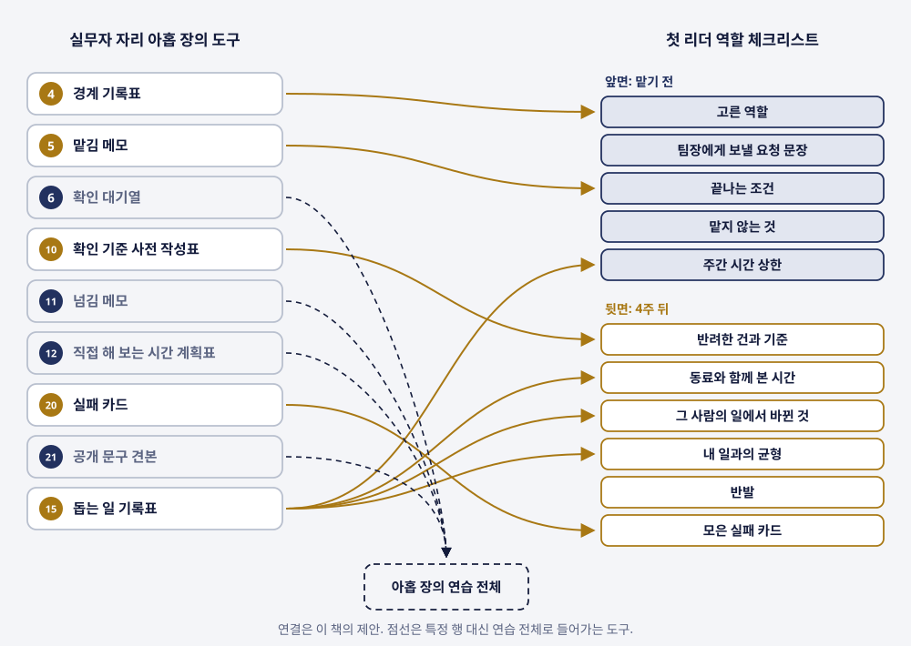
그림 27-1. 실무자 자리 아홉
장(4·5·6·10·11·12·20·21·15장)의 도구가 첫 리더 역할 체크리스트의 어느
행으로 들어가는가
그림은 왼쪽 도구에서 오른쪽 행으로 읽는다. 화살표가 많이 모이는
행일수록 이미 쌓인 기록에서 옮겨 올 것이 많다는 뜻이다.
동료와 함께 본 시간을 적는 칸은 앞의 시간 사용 연구에서 나왔다. 다만
그 연구는 승진이 빠른 관리자와 그렇지 않은 관리자를 나란히 놓은
비교였다. 그 시간을 늘리면 좋은 리더가 된다는 뜻으로 읽지 말자. 이 칸은
내가 사람과 마주 앉은 시간이 얼마나 되는지 스스로 보려는 칸이다.
4주가 끝나면 뒷면을 들고 팀장과 한 번 이야기하자. 다음 사람에게
넘길지, 한 번 더 맡을지, 다른 역할로 옮길지를 그 자리에서 정한다.
넘긴다면 뒷면을 다음 사람에게 함께 넘기자. 다음 사람의 앞면이 조금 더
쉬워진다.
표 27-2. 첫 리더 역할 체크리스트
면
항목
적을 것
옮겨 올 기록
앞면
고른 역할
확인 순환 운영 / 없앨 일 심사 회의 진행 / 신입의 메모·기준 봐 주기 /
실패 카드 모으기 / 옆 사람의 일 함께 보기 가운데 하나
기록이 가장 많이 쌓인 장의 도구
앞면
팀장에게 보낼 요청 문장
역할, 기간, 팀에 알려 달라는 한 문장 부탁, 끝나면 남길 것
앞면
끝나는 조건
기간(예: 4주), 다음 사람(정했으면 이름 대신 역할로)
5장 맡김 메모의 끝나는 조건
앞면
맡지 않는 것
동료의 평가·보상 판단, 반려 기록의 평가 자료 사용
앞면
주간 시간 상한
주 ○시간
15장 기록표 맨 위
뒷면
반려한 건과 기준
건마다 기준의 몇째 줄이었나
10장 확인 기준 사전 작성표
뒷면
동료와 함께 본 시간
주별 합계
15장 기록표의 쓴 시간 열
뒷면
그 사람의 일에서 바뀐 것
그 사람의 말로, 없으면 없다고
15장 기록표의 마지막 열
뒷면
내 일과의 균형
상한을 넘은 주와 이유
15장 기록표의 주간 합계
뒷면
반발
무엇이었고 어떻게 했나
뒷면
모은 실패 카드
장수, 보낸 곳
20장 실패 카드
이 도구의 근거: Benson 외(협업 경험과 관리 성과의 관계, 각주의 게이밍
경고), Minni(1on1 시간의 비교), 13장의 확인 순환, 실무자가 확인 순환이나
심사 회의에 먼저 손을 들자는 이 책의 권고 / 근거 수준: 유비 + 이 책의
제안
이 장은 28장의 면담 질문으로 시작했다. 체크리스트의 오른쪽 열을
위에서부터 읽으면 실무자 자리의 도구가 거의 다 나온다. 4장의 경계
기록표, 5장의 맡김 메모, 10장의 작성표, 20장의 실패 카드, 15장의 기록표.
15장을 뺀 실무자 자리 여덟 장(4·5·6·10·11·12·20·21장)의 기록에는 대개 내
이름만 있다. 맡긴 것도, 확인한 것도, 틀린 것을 적은 것도 나였다. 15장의
기록표에서 처음으로 다른 사람의 이름이 들어오고, 이 체크리스트의 뒷면이
그 이름들을 첫 리더 역할의 증거로 모은다. 그러니 한 가지만 물어 두자. 내
기록에 다른 사람의 이름이 몇 줄 들어 있는가? 그 이름 옆에 그 사람의 말로
적힌 한 줄이 있다면, 언젠가 그 질문을 받는 날 기억 대신 그 줄을 꺼내
읽으면 된다. 아직 한 줄도 없다면 이번 주에 손을 들 역할 하나를 고르는
데서 시작하자. 그 질문을 던지는 쪽의 이야기는 28장에서 팀장 자리로
이어진다.
28장. 맡기고 확인하는 팀의 리더를 기른다
팀장의 자리
팀장 승진 심사에 후보 셋이 올라왔다고 해 보자. 셋 다 AI를 잘 쓴다. 첫
번째 후보는 팀에서 에이전트를 가장 많이 만들었고, 혼자 내는 산출물의
양도 압도적이다. 지난 분기 팀 산출물의 절반이 그의 손을 거쳤다. 두 번째
후보의 개인 산출물은 평범하다. 대신 팀이 매주 쓰던 보고 양식을
에이전트와 함께 다시 짜는 과정을 팀 회의에서 보여 줬고, 다른 팀원 둘이
그 방식을 따라 자기 업무 흐름을 바꿨다. 세 번째 후보는 13장에서 만든
확인 순환을 4개월째 이끌고 있다. 반려를 가장 많이 했고, 그중 한 건은
고객에게 나갈 뻔한 틀린 수치였다. 지난달에는 팀원 한 명이 다른 팀의 더
맞는 자리로 옮기도록 도왔다.
누구를 올려야 할까? 심사표가 지금 모양이라면 대개 첫 번째 후보가
앞선다. 성과가 숫자로 가장 분명하게 보이기 때문이다. 그런데 이 결정이
정말 팀을 위한 것일까?
27장은 언젠가 이런 심사를 받을 실무자 쪽에서 먼저 손을 드는 법을
다뤘다. 이 장은 심사하고 기르는 팀장 쪽에서 본다. 24장에서 본 회사의
창구는 하나여도 고를 일과 없앨 일, 확인 기준을 정하는 사람은 팀마다 따로
있다. 그 사람이 리더다. 그 리더를 누구 중에서 고르고, 어떻게 기르고,
무엇으로 평가할지는 지금까지 15권의 앞 책이 따라가지 못한 질문이다.
현장에서 리더들이 묻는 질문 가운데 “리더십과 조직관리 방식 자체에도
전환이 필요하다”는 말이 있다. 그 전환이 무엇이어야 하는지는 문제에서부터
차례로 짚어야 보인다. 리더를 기를 사다리가 왜 비어 가는지부터 보자.
사다리가 비는 자리
1장에서 이 책은 하나의 모순을 세웠다. 여러 조사가 AI 전환의 변수로
관리자를 꼽는 동안, 기업들은 관리자 층을 얇게 만들고 있다. 이 모순은
리더를 기르는 쪽에서 보면 더 아프다. 층이 얇아지면 다음 리더가 연습할
자리도 줄어든다.
관리자의 시간도 사람을 기르는 데 많이 가지 않는다. 1장에서 본
Deloitte의 2025 Global Human Capital Trends 조사는 관리자가 시간의 상당
부분을 당면 문제 해결과 행정에 쓰고, 부하 직원을 육성하는 데는 13%만
쓴다고 보고했다(Deloitte, 2025-03-24). 기르는 법을 배우는 쪽도 비어
있다. 리더십 컨설팅사 DDI의 Global Leadership Forecast 2025(DDI 자체
조사, 자기 보고)에서 “미래 인재를 찾고 기르는 일”을 개발해야 할 핵심
역량으로 꼽은 리더는 61%였는데, 그 역량에 대한 교육을 받았다는 리더는
32%였다. 모두 응답자의 인식이고 연관일 뿐 인과를 보여 주지는 않는다.
그래도 방향은 한쪽을 가리킨다. 사람을 기르는 일은 중요하다고 말해지지만,
가르치지도 시간을 주지도 않는다.
AI는 이 공백을 한 겹 더 깊게 만들 수 있다. 신입 쪽에서 시작하면
이렇다. Stanford 연구진의 “Canaries in the Coal Mine?”는 AI 노출이 큰
직종에서 22~25세 초기 경력자의 고용이 상대적으로 줄었다고 보고했고,
16장에서 본 Brynjolfsson 외의 고객 상담 연구는 AI가 초보 상담원의 성과를
가장 크게 끌어올렸다고 보고했다(수치와 판본은 표 28-1). 여기서부터는 이
책의 추론이다. 초보가 하던 일을 AI가 대신하거나 초보의 결과를 AI가
끌어올리면, 초보가 판단을 몸으로 배우던 경로가 얇아질 수 있다.
입사 첫해인 팀원을 떠올려 보자. 예전 같으면 그는 회의록을 정리하고,
경쟁사 자료를 모아 표를 만들고, 선배가 고친 보고서 초안을 받아 들고 왜
고쳤는지 물어보며 일을 배웠을 것이다. 지금은 그 일의 상당 부분을
에이전트가 먼저 해 놓는다. 그는 에이전트가 만든 표를 훑어보고 넘긴다.
표가 맞는지 판단할 기준을 아직 배우지 못했는데도 그렇다. 확인하는 법을
모르는 사람이 확인을 맡는 상황, 13장이 경계한 바로 그 모습이다. 이
팀원이 몇 년 뒤 리더가 될 사람이라면, 그가 판단을 배울 기회는 누군가
일부러 만들어 줘야 한다.
두 연구가 측정한 것은 고용과 생산성까지다. 「코드 너머의 조직」 6장은
같은 걱정을 한 문장으로 적었다. 「신입 사다리는 부러진다. 누군가가 그
사다리를 다시 만들어야 한다.」 이 장이 묻는 것은 그 “누군가”가 누구냐는
것이고, 이 책은 그 누군가를 리더로 본다. 다만 리더도 저절로 생기지
않는다. 사다리를 다시 만들 사람을 먼저 길러야 한다.
누구를 올리나
다시 승진 심사로 돌아가자. 가장 일을 잘하는 사람을 관리자로 올리는
관행에 대해서는 꽤 단단한 연구가 있다.
27장에서 후보 쪽으로 본 Benson, Li, Shue의 “Promotions and the Peter
Principle”(QJE 2019)을 이번에는 고르는 쪽에서 읽자. 기업들은 승진에서
현재의 영업 실적에 큰 비중을 뒀다. 그런데 승진 전 실적이 높았던
관리자일수록 부하 직원의 실적을 덜 끌어올렸다(워킹페이퍼 기준 승진 전
실적이 두 배면 부하 실적 7.5% 낮음). 관리자로서의 성과를 더 잘 예측한
신호는 27장에서 본 협업 경험이었다. 논문 초록의 첫 문장은 이렇다. “The
best worker is not always the best candidate for manager.”
이 연구를 “기업이 실수했다”로 읽으면 곤란하다. 저자들은 그렇게
단정하지 않았다. 승진은 잘한 사람에게 주는 보상이기도 해서, 실적 좋은
사람을 올리는 관행이 다른 사람들의 의욕을 북돋우는 효과가 있을 수 있다.
저자들은 기업이 그 효과를 얻으려고 관리자 자리의 불일치 비용을 감수하는
것일 수 있다고 봤다. 승진에는 여러 목적이 섞여 있고, 관리자 자리에 맞는
사람을 고르는 일은 그중 하나라는 이야기다.
여기서부터는 이 책의 추론이다. 이 연구는 AI 이전 영업 조직의
데이터다. 다만 AI를 가장 잘 쓰는 사람을 바로 리더로 올리는 선택에도 같은
함정이 있을 수 있다. 혼자 에이전트를 잘 부려 산출물을 많이 내는 능력과,
다른 사람이 AI로 일을 바꾸도록 돕는 능력은 다를 가능성이 크다. 앞의 것은
첫 번째 후보의 능력이고, 뒤의 것은 두 번째와 세 번째 후보가 보여 준
능력이다. 그래서 이 책은 이렇게 제안한다. 올릴 사람은 AI를 가장 잘 쓰는
사람이 아니라 다른 사람이 AI로 일을 바꾸게 만든 사람이다. 그리고 승진
기준에 협업과 위임의 경험을 묻는 항목을 넣자.
「AX를 만들다」 3장의 문장도 같은 방향을 가리킨다. 「슈퍼워커는 한
명이 열 명만큼 일하는 사람이라기보다, 한 명이 열 명짜리 팀을 지휘하는
사람에 가깝다.」 그 책은 이어서 그런 사람이 직접 하는 일은 줄고,
누구에게 무엇을 맡기고 결과를 어떻게 검증할지 설계하는 일이 는다고 썼다.
지휘하는 사람을 찾으려면 혼자 낸 산출물보다 맡기고 확인한 기록을 봐야
한다. AI를 잘 만드는 사람에게 업무를 바꾸는 교육이 따로 필요한지는
종합편 FAQ가 이미 다뤘다. 만드는 능력과 일을 바꾸는 능력이 다르다는 그
대답이 승진 기준에도 그대로 이어진다.
협업 경험을 승진 심사에서 어떻게 볼 수 있을까? 영업직 연구에서 협업
경험은 동료와 실적을 나눠 본 기록이었다. AI를 쓰는 팀이라면 22장에서 본
관행 공유 기록, 13장의 확인 순환 기록, 9장의 심사 회의 기록이 그 역할을
할 수 있다. 심사 면담에서 묻는 질문도 바꿔 보자. “AI로 무엇을
만들었나”보다 “당신의 방식을 보고 일을 바꾼 동료가 있나, 그 사람은 지금
무엇을 다르게 하나”를 묻는 편이 낫다. 앞의 질문에는 첫 번째 후보가 가장
길게 대답하겠지만, 뒤의 질문에는 두 번째 후보가 할 말이 더 많을 것이다.
세 번째 후보에게는 “반려한 뒤 그 팀원과 무엇을 했나”를 물어볼
만하다.
어떻게 기르나
올릴 사람을 골랐다면, 이제 길러야 한다. 리더십 교육은 효과가 있을까?
교육 담당자라면 “별 효과 없다”는 말을 한 번쯤 들어 봤을 것이다.
Lacerenza 외의 메타분석(Journal of Applied Psychology 2017)은 335개
독립 표본을 묶어 이 질문을 다뤘다. 교육에 대한 반응, 학습, 현업 전이,
성과 네 수준 모두에서 효과가 나타났고, 배운 것이 현업 행동으로 옮겨 가는
전이 효과가 δ = .82로 넷 가운데 가장 컸다(나머지 수치는 표 28-1). 더
쓸모 있는 것은 효과를 키운 조건이다. 교육 전에 무엇이 필요한지 분석하기,
피드백 주기, 여러 방식을 섞되 특히 직접 연습하게 하기, 한 번에 몰아서
하는 대신 간격을 두고 여러 회차로 나누기, 사내에서 진행하기, 혼자 보는
자습형보다 사람을 만나는 방식으로 하기. 연구는 참석 정책과 기간도 효과에
영향을 준다고 했지만, 의무가 나은지 길수록 나은지 같은 방향은 이 책이
확인한 초록에 없어 여기서 단정하지 않는다.
이 조건들은 특별하지 않다. 오히려 리더가 팀 안에서 매일 만들 수 있는
것들이다. 여기서부터는 이 책의 제안이다. 앞 장들에서 만든 실천을 후임
리더를 기르는 연습으로 다시 써 보자.
13장의 확인 순환은 후임 후보에게 넘길 수 있는 첫 연습이다. 몇 주 동안
확인 순환을 맡기면, 후보는 누가 무엇을 확인하는지 정하고 쏠림을 살피고
반려한 팀원을 지키는 일을 직접 해 본다. 9장의 없앨 일 심사 회의는
참관에서 시작해 진행으로 넘어가는 연습이 된다. 처음에는 옆에서 보고,
다음에는 리더가 지켜보는 가운데 진행하고, 끝나면 리더가 피드백을 준다.
연습과 피드백이 한 회의 안에 들어간다. 결정 기록도 피드백 장치로 쓸 수
있다. 중요한 결정 전에 후보가 자기 판단을 먼저 적게 하고, 몇 주 뒤 실제
결과와 대조해 보는 것이다. 판단이 맞았는지보다 왜 그렇게 판단했는지를
함께 들여다보는 시간이 된다. 이 모든 것을 한 번에 하지 말고 4주 간격으로
나눠 반복하자. 간격을 두는 셈이다.
삽화. 후임이 두 선택지를 놓고 회의를 진행한다. 선임은 한쪽에
앉아 듣는다. 상상으로 그린 장면으로, 특정 인물이나 조직이
아니다.
일정으로 옮기면 이런 모양이 된다. 첫 4주에는 후임 후보와 함께 무엇을
배워야 하는지 먼저 이야기한다. 사전 요구 분석을 팀 규모로 줄인 것이다.
그리고 확인 순환을 한 주씩 맡긴다. 다음 4주에는 없앨 일 심사 회의를 한
번 참관하게 하고, 그다음 회의는 직접 진행하게 한 뒤 끝나고 30분 동안
피드백을 준다. 세 번째 4주에는 중요한 결정 하나를 골라 후보가 먼저
판단을 적게 하고, 결과가 나오면 함께 대조한다. 3개월이면 연구가 꼽은
조건 가운데 요구 분석, 연습, 피드백, 간격이 한 번씩 들어간다. 앞에서 본
DDI의 같은 조사는 다섯 가지 이상의 육성 방식을 함께 쓰는 조직이
프로그램이 리더 역량을 높였다고 보고할 가능성이 4.9배 높았다고
적었다(자기 보고, 연관). 한 가지 방식에 기대지 말고 여러 방식을 섞으라는
신호로 읽을 수 있다.
리더를 대상으로 한 AI 교육 프로그램이 실제로 어떻게 운영되고 효과가
어땠는지는 이 책의 리서치에서 공개 사례를 찾지 못했다. 그 공백을 메우는
일은 아직 남의 사례에 기댈 수 없다. 위의 제안을 시도하는 조직이 자기
기록을 쌓는 것이 지금으로서는 가장 정직한 출발점이다.
무엇으로 평가하나
세 번째 후보가 지난달 팀원 한 명을 다른 팀으로 보낸 일은 지금 심사표
어디에 적힐까? 아마 어디에도 적히지 않는다. 오히려 그 팀의 성과표에는 일
잘하던 사람 하나가 빠져나간 숫자로 보인다. 리더를 무엇으로 평가할지
정하기 전에, 평가할 만한 차이가 있는지부터 따져 볼 일이다. 표 27-1에도
적은 Lazear, Shaw, Stanton의 “The Value of Bosses”(Journal of Labor
Economics 2015)는 서비스직 생산성 데이터에서, 상사 품질이 하위 10%인
상사를 상위 10%인 상사로 바꾸면 9명짜리 팀에 1명을 더하는 것보다 팀
산출이 더 늘었다고 보고했다. 리더 한 사람의 차이가 팀원 한 사람보다 클
수 있다는 뜻이다. 평가할 이유는 충분하다.
방법은 Google의 Project Oxygen에서 빌릴 것이 많다. Google은
2008년부터 좋은 관리자의 행동을 연구했고, 2018년 갱신판에서 열 가지
행동을 공개했다(Google re:Work, 2018-02-27). 좋은 코치다, 팀에 권한을
주고 세세하게 간섭하지 않는다, 경력 개발을 돕고 성과를 이야기한다 같은
항목이 이어지고, 팀에 조언할 기술 역량은 그 열 가지 가운데 하나(8번)다.
목록의 다수가 사람을 기르는 행동이다.
그런데 목록보다 쓸모 있는 것은 방법이다. Google은 관리자를 직원이
평가하는 상향 설문으로 이 행동들을 측정했다. 회사가 커지자 직원들이 조직
간 협업과 더 단단한 의사결정을 요구했고, Google은 새 문항을 시험해
목록을 여덟 개에서 열 개로 고쳤다. 그리고 갱신판 끝에 이렇게 적었다.
“determine what makes a great manager in your organization.” 남의 목록을
그대로 가져다 쓰지 말고 자기 조직의 좋은 관리자를 찾으라는 말이다. 이 장
끝의 리더 평가 기준표도 고정된 기준으로 쓰지 말아야 할 이유다.
측정한 점수를 어디에 썼는지도 중요하다. David Garvin이 HBR(2013-12)에
쓴 사례 연구에 따르면 Google은 상향 설문을 인사 평가 시기와
“deliberately out of sync with performance reviews” 하게, 일부러
어긋나게 돌렸다. 점수를 평가에 바로 묶으면 관리자들이 그것을 위에서
내려온 기준으로 받아들이고 저항할 것을 걱정했기 때문이다. 설문은 관리자
스스로 개선하는 데 쓰였다. 2010년부터 2012년 사이 설문의 중앙 호의도는
83%에서 88%로 올랐고, 가장 낮은 점수를 받던 관리자들이 가장 많이
나아졌다. 특히 코칭과 경력 개발에서였다.
팀원이 몇 명뿐인 작은 팀이라면 설문을 같은 리더 아래 여러 팀으로 묶어
돌리거나, 점수 대신 “지난달 리더가 내 경력에 도움이 된 일 하나”처럼
서술형으로 받는 방법도 있다. 어느 쪽이든 그 결과를 인사 평가와 떼어
두라는 Garvin 사례의 교훈은 같다.
이제 세 번째 후보가 팀원을 보낸 일로 돌아가자. 기준표의 마지막 행, 그
리더가 사람을 길렀다는 증거를 무엇으로 채울지가 여기에 걸려 있다. 이
물음에 가장 가까운 연구는 18장에서 본 Virginia Minni의 연구다. 좋은
관리자를 만난 직원이 사내에서 다른 자리로 더 많이 옮겨 갔고 그 덕에
경력과 생산성이 오래 올랐다는 결과다. 시카고대 BFI 워킹페이퍼
2025-09판의 수치로는 7년 뒤 수평 이동이 40%, 연봉이 13% 높았다(2025-09판
수치). 좋은 관리자는 팀원을 붙잡아 두는 대신 더 맞는 자리로 보냈다.
반대 방향의 연구도 있다. 16장과 18장에서 본 Ingrid Haegele의 붙잡아
두기 연구다. 워킹페이퍼(2022-02판) 기준으로, 한 대형 제조 기업에서
관리자가 바뀌어 붙잡아 두기가 잠시 줄었을 때, 직원들의 승진 지원이 123%
늘었다(2022-02판 수치). 팀 성과만으로 관리자를 평가하면, 팀원을 다른
자리로 보내는 관리자는 손해를 본다. 사람을 잘 기른 관리자일수록 평가에서
불리해지는 셈이다.
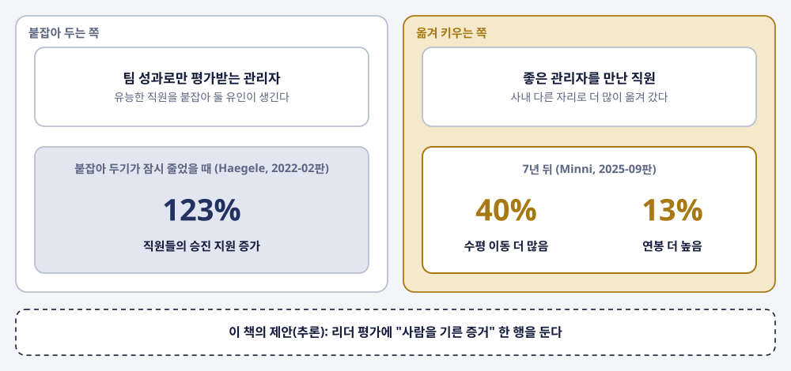
그림 28-1. 팀원을 붙잡아 두는 관리자와
옮겨 키우는 관리자(워킹페이퍼 판본 기준)
두 연구는 표본과 판본이 달라 숫자를 서로 견줄 수 없다. 왼쪽은 붙잡아
두기가 줄었을 때 생긴 변화로, 오른쪽은 좋은 관리자를 만난 직원의 7년 뒤
모습으로 읽자.
직원이 매긴 사람 관리 점수가 이직과 강하게 반대로 움직였다는 연구도
있다(Hoffman과 Tadelis, 표 28-1). 앞에서 본 Oxygen의 코칭과 경력 개발
항목도 같은 쪽을 가리킨다.
여기서부터는 이 책의 추론이다. 이 연구들은 사람 관리가 이직과 이동과
경력에 영향을 준다는 것, 팀 성과만으로 평가하면 붙잡아 두기 유인이
생긴다는 것까지를 받친다. “사람을 기른 증거를 관리자 평가 지표로 쓰면
리더들이 더 잘 기르게 된다”는 것을 직접 검증한 연구는 이 책의 리서치에서
찾지 못했다. 그래도 이 책은 이 행을 기준표에 넣자고 제안한다. 팀 성과만
보는 평가가 붙잡아 두기를 부른다는 근거가 있는 이상, 기른 증거를 적는 행
하나는 그 쏠림을 줄이는 쪽으로 작동할 가능성이 크다고 보기 때문이다. 이
행에 들어갈 증거는 다섯 가지다. 후임 후보에게 확인 순환이나 심사 진행을
맡긴 횟수와 그 결과, 다른 자리로 옮겨 간 팀원과 그 뒤의 모습, 아쉬운
이직, 팀원이 매긴 코칭·경력 개발 점수(상향 설문을 쓰는 조직이라면),
그리고 반려한 팀원이 불이익 없이 다음 일을 맡았는지다.
표 28-1. 근거 지도
질문
연구
판본·확인 수준
이 책이 쓰는 범위
추론 여부
사다리가 비는가
Deloitte, 2025 Global Human Capital Trends
2025-03 보도자료, [1차]
관리자 시간 약 40% 행정·당면 문제, 육성 13%
아님
사다리가 비는가
DDI, Global Leadership Forecast 2025
2025-01, [1차], 컨설팅사 자체 조사·자기 보고
미래 인재 육성 교육 32% vs 핵심 역량 61%, 후계 자신감 20%, 다섯 가지
이상 육성 방식 4.9배(연관)
아님(연관)
사다리가 비는가
Brynjolfsson, Chandar, Chen, “Canaries in the Coal Mine?”
Stanford WP, 초판 2025-08 13% / 이후 판 16%
초기 경력자 고용 상대 감소(판 명시)
견습 경로가 빈다는 연결은 추론
사다리가 비는가
Brynjolfsson, Li, Raymond, “Generative AI at Work”
QJE 2025, 작업논문 기준 평균 14%·초보 34%
AI가 초보 성과를 가장 크게 끌어올림
견습 경로 연결은 추론
누구를 올리나
Benson, Li, Shue, “Promotions and the Peter Principle”
승진 전 실적과 관리 성과의 반대 관계, 협업 경험. 14.3%·7.5%·30%는 WP
기준
AI를 잘 쓰는 사람의 승진으로 옮기는 것은 추론
어떻게 기르나
Lacerenza 외, 리더십 교육 메타분석
J. Applied Psychology 2017, [1차] 초록
335개 표본, 반응 δ .63·학습 .73·전이 .82·성과 .72, 설계 조건
이 책의 실천에 대응시키는 것은 제안
무엇으로 평가하나
Lazear, Shaw, Stanton, “The Value of Bosses”
JOLE 2015, [1차] WP 초록
하위 10% → 상위 10% 상사 교체 효과
아님
무엇으로 평가하나
Google Project Oxygen
re:Work 2018-02-27 갱신, [1차: 원문 사본]
열 가지 행동, 상향 설문, 목록 수정
기준표 적용은 제안
무엇으로 평가하나
Garvin, “How Google Sold Its Engineers on Management”
HBR 2013-12, [1차: 원문 사본]
인사 평가와 분리 운영, 83% → 88%
자기 점검판 우선은 제안
사람을 기른 증거
Minni, “Making the Invisible Hand Visible”
BFI WP 2025-09판, [1차] 초록·서론
수평 이동 40%·연봉 13%, 1on1 시간 19% 더 씀(구판 30%·61%는 쓰지
않음)
평가 지표화는 추론
사람을 기른 증거
Haegele, “Talent Hoarding in Organizations”
WP 2022-02판, [1차] 초록
붙잡아 두기 감소 시 승진 지원 123%(128%는 2022-02판보다 앞선
판)
평가 지표화는 추론
사람을 기른 증거
Hoffman & Tadelis, 사람 관리 역량과 이직
JPE 2021, [1차] WP 본문
사람 관리 점수와 이직의 강한 음의 관계, 10분위 → 90분위 관리자 이직
약 60% 감소(WP 추정), 이직 외 결과는 일관되지 않음
평가 지표화는 추론
표의 마지막 열을 먼저 읽어 보자. “아님”이라고 적힌 행은 연구가 직접
보여 준 범위이고, “추론”과 “제안”이라고 적힌 행은 이 책이 그 연구에서 한
걸음 더 나간 곳이다. 기준표를 회사에 가져갈 때는 이 구분도 함께 보여
주자.
리더의 리더가 정할 것
이 장의 제안 가운데 팀장이 혼자 할 수 있는 것과 임원이 정해야 하는
것은 뚜렷하게 갈린다.
팀장이 할 수 있는 것은 이렇다. 기준표를 자기 점검판으로 써 보는 것,
후임 후보를 눈여겨보고 확인 순환과 심사 진행을 맡겨 보는 것, 그리고
팀원을 다른 자리로 보내는 결정을 내리는 것이다. 마지막 것이 가장 어렵다.
일 잘하는 팀원을 다른 팀에 보내면 당장 팀 성과가 흔들린다. Haegele의
연구가 보여 준 유인이 바로 이것이다.
팀장이 시간을 어디에 쓰는지도 이 결정과 이어져 있다. 27장에서 본 대로
Minni의 같은 연구(2025-09판)에서 좋은 관리자는 부하 직원과의 1on1에 19%
더 많은 시간을 썼다. 팀원이 무엇을 잘하고 어디로 가고 싶은지 알아야 더
맞는 자리로 보낼 수 있고, 그것을 아는 자리가 1on1이다. 14장의 1on1 대화
카드 앞면에 “이번 주 배운 것”과 “막힌 것”을 둔 이유도 여기에 있다. 1장의
시간 점검표에서 사람 육성에 쓴 시간이 얼마였는지 다시 보자. 그 시간이
늘지 않으면 이 장의 제안은 대부분 일정표에 들어갈 자리가 없다.
그래서 임원이 정할 것이 있다. 첫째, 승진 기준에 「사람을 기른
증거」와 협업·위임 경험을 넣을지. 둘째, 리더를 평가하는 상향 설문을
쓴다면 인사 평가와 분리해 돌릴지. 셋째, 지금 관리자를 팀 성과만으로
평가하고 있어서 붙잡아 두기를 부추기고 있지는 않은지. 셋째 질문은 제도를
들여다보지 않으면 보이지 않는다. 다른 팀으로 옮겨 간 팀원의 성과가 원래
리더의 기록에 한 줄이라도 적히는지, 아니면 그 리더의 팀 성과표에서
빠져나간 숫자로만 보이는지 확인해 보자. 뒤쪽이라면 회사는 사람을 기르는
리더에게 벌을 주고 있는 것이다.
이 책은 임원에게 작은 장치 하나를 제안한다. 팀원이 다른 팀으로 옮겨
가면, 옮긴 뒤 1년 동안의 성과 기록 한 줄을 원래 리더의 평가 자료에도
붙이는 것이다. 옮겨 간 사람이 잘하면 보낸 리더도 그 공을 나눠 받는다.
구체적인 방식은 회사마다 다르겠지만, 보내는 일이 손해만은 아니라는
신호를 제도로 주자는 취지다. 이 장치의 효과를 검증한 연구는 없다.
Minni와 Haegele의 연구에서 끌어낸 이 책의 제안이다.
1장에서 관리자 층을 줄이기 전에 물을 질문들을 임원판으로 따로 적었다.
이 장의 세 질문은 그 짝이다. 층을 줄이는 결정과 그 층에서 일할 리더를
무엇으로 평가할지에 대한 결정은 함께 내려야 한다. 층은 줄였는데 평가는
그대로라면, 얇아진 층의 리더들은 더 많은 팀원을 맡으면서도 기른 사람을
보낼 이유는 여전히 없다.
다음 주에 쓸 도구: 리더 평가 기준표
평가 기준표는 평가할 항목을 행으로 두고, 행마다 어떤 상태면 어느
수준인지를 문장으로 미리 적어 둔 표다. 교육 현장에서는 흔히
루브릭(rubric)이라고 부른다. 점수를 매기는 표라기보다 지금 어디쯤 있는지
짚어 보는 표에 가깝다.
이 기준표는 팀장 자리 아홉 장(1·7·8·9·16·13·14·22·24장)의 실천 아홉
행과 「사람을 기른 증거」 한 행으로 이뤄진다. 열은 세 수준과 증거다.
수준은 “시작함”, “자리 잡음”, “넘겨줄 수 있음”으로 나눴다. 마지막 수준을
“잘함”이라고 하지 않은 이유가 있다. 리더의 실천은 다른 사람이 이어받을
수 있을 때 비로소 팀의 것이 된다. 증거 열에는 그 장의 도구에 적힌 기록을
적는다. 기록이 없으면 그 행은 “시작함”보다 위로 매기지 않는다.
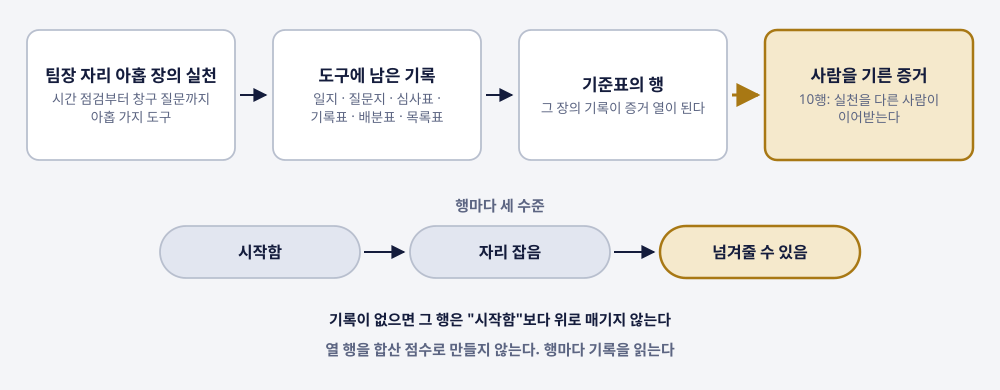
그림 28-2. 팀장 자리 아홉 장의 실천이
기준표를 거쳐 사람을 기른 증거로 이어지는 흐름
왼쪽에서 오른쪽으로 읽는다. 아래 세 수준 가운데 마지막 ’넘겨줄 수
있음’이 맨 오른쪽 상자와 같은 이야기다.
두 판으로 쓴다. 자기 점검판은 리더가 스스로 채우고, 4주마다 한 번
다시 본다. 리더의 리더판은 같은 행과 열을 상위 리더가 채우되, 증거 열은
리더가 제출한 기록으로 채운다. Garvin의 사례는 이 기준표를 어떻게 쓸지
고르는 근거가 된다. 리더 평가 기준표를 처음부터 승진 심사에 쓰면,
리더들은 기준표의 항목을 채우는 데 집중하기 쉽다. 22장에서 본 사용량
순위표가 리더 판으로 되풀이되는 셈이다. 그래서 이 책은 처음 4주는 자기
점검판만 쓰자고 제안한다. 리더의 리더판을 승진 심사에 쓸지는 임원이 따로
정한다. 행은 팀장 자리의 실천이 이어지는 흐름을 따랐지만, Oxygen이
그랬듯 조직에 맞게 고쳐 쓰자.
앞의 승진 심사처럼 후보를 비교할 때도 이 표를 쓸 수 있다. 후보마다
증거 열을 채워 보면, 어느 행에 기록이 몰려 있고 어느 행이 비어 있는지가
한눈에 드러난다. 다만 이것을 합산 점수로 만들지는 말자. 열 행의 점수를
더하는 순간 기준표는 또 하나의 순위표가 된다. 행마다 기록을 읽고, 이
사람에게 맡길 팀에 어떤 행이 가장 필요한지를 따지는 데 쓰는 편이 낫다.
확인 노동이 많은 팀이라면 6행이, 큰 재설계를 앞둔 팀이라면 3행과 4행이
무겁다.
표 28-2. 리더 평가 기준표 (자기 점검판·리더의 리더판
공용)
행
시작함
자리 잡음
넘겨줄 수 있음
증거(그 장의 도구 기록)
1. 시간 점검
한 주 시간을 한 번 기록했다
4주마다 기록하고 육성·재설계 시간을 늘렸다
후임 후보도 자기 시간을 기록한다
1장 리더 시간 점검표
2. 직접 써 보고 공개
2주 일지를 썼다
일지의 경계 안·밖을 팀에 공개했다
팀원이 자기 일지를 공개한다
7장 2주 사용 일지
3. 업무 선택
질문지로 바꿀 일을 하나 골랐다
결정 기록을 적고 다시 볼 날에 다시 봤다
후임 후보가 질문지로 결정을 이끈다
8장 업무 선택 질문지·결정 기록
4. 일 없애기
없앨 후보를 심사표에 올렸다
4주 시험 중단을 하고 결과를 기록했다
후임 후보가 심사 회의를 진행한다
9장 없앨 일 심사표
5. 아낀 시간 기록표
사용처를 선언했다
4주 기록표로 선언이 지켜지는지 봤다
팀원이 기록표를 직접 쓰고 함께 읽는다
16장 선언문·기록표
6. 확인 노동 배분
배분표를 만들었다
쏠림과 반려를 매주 살폈다
후임 후보가 확인 순환을 이끈다
13장 확인 노동 배분표·체크리스트
7. 섞인 팀 1on1
카드로 1on1을 한 번 했다
매주 카드 앞뒷면을 다 다뤘다
팀원끼리도 카드로 서로 묻는다
14장 섞인 팀 1on1 대화 카드
8. 결과 평가
평가 항목 하나를 다시 썼다
팀 평가 의견에 근거 기록을 붙였다
회사 제도 변경을 요구하고 그 결과를 기록했다
22장 평가 항목 다시 쓰기 표
9. 창구 질문과 에이전트 목록
질문 목록을 IT에 보냈다
팀 에이전트 목록표를 만들고 인계자를 채웠다
목록표가 리더 없이도 갱신된다
24장 질문 목록·목록표
10. 사람을 기른 증거
후임 후보를 정하고 연습 기회를 하나 줬다
확인 순환·심사 진행을 맡긴 기록과 피드백이 있다
다른 자리로 옮겨 간 팀원이 있고, 반려한 팀원이 불이익 없이 다음 일을
맡았다
맡긴 횟수와 결과, 옮겨 간 팀원, 아쉬운 이직, 상향 설문의 코칭·경력
개발 점수(쓰는 경우)
처음 채우면 대부분의 행이 “시작함”이거나 비어 있을 것이다. 실망할
일은 아니다. 팀장 자리의 장들을 처음부터 따라왔다면 4주 동안 할 수 있는
것은 각 행의 첫 단계 정도다. 기준표가 보여 주는 것은 점수보다 다음에
어디로 갈지다.
10행의 증거 가운데 “아쉬운 이직”은 따로 설명해 둘 필요가 있다. 모든
이직이 리더의 실패는 아니다. 더 맞는 자리를 찾아 회사 밖으로 나간 사람도
있고, 리더가 그 길을 도왔을 수도 있다. 아쉬운 이직은 팀이 붙잡고 싶었고
본인도 머물고 싶었을 법한데 떠난 경우다. 숫자 하나로 세기보다, 떠난
사람이 왜 떠났는지 리더가 한 줄씩 적어 두자. 그 기록이 쌓이면 리더도
자기 팀에서 무엇이 사람을 밀어내는지 보게 된다.
자기 점검판을 다 채웠다면 팀에 한 번 보여 주는 것도 방법이다. 리더가
자기 기준표에서 어느 행이 비어 있는지 먼저 말하면, 팀원들은 그 행을
채우는 데 무엇이 필요한지 의견을 낼 수 있다. 확인 순환을 맡고 싶은 사람,
심사 회의를 진행해 보고 싶은 사람이 그 자리에서 나오기도 한다. 후임
후보는 리더가 지목하기 전에 스스로 손을 드는 사람 가운데서 찾을 수도
있다. Garvin의 사례에서 상향 설문이 자기 개선에 쓰였듯, 이 기준표도
리더가 먼저 자기를 비춰 보는 데 쓸 때 가장 덜 왜곡된다.
1장의 모순으로 돌아가서
기준표의 열 행을 위에서부터 다시 읽으면 팀장 자리의 장들이 걸어온
길이 보인다. 리더는 먼저 자기 시간을 보고 직접 써 봤다. 경계를 알고 나서
바꿀 일을 골랐고, 고른 목록 맨 위에 없앨 일을 올렸다. 줄이고 없앤 시간이
어디로 가는지 기록표로 지켜봤다. 그 시간의 일부가 확인으로 가자 확인
노동을 나눴고, 사람과 에이전트가 섞인 팀에서 사람에게만 할 일을 1on1에서
챙겼다. 평가표에서 사용량을 빼고 결과와 확인과 재설계를 넣었고, 회사의
창구 앞에서 팀이 정할 것을 따로 적었다. 그리고 마지막 행에서 이 모든
것을 다른 사람에게 넘겨줄 수 있는지 물었다.
1장은 여러 조사가 관리자를 AI 전환의 변수로 꼽는 동안 기업들이 관리자
층을 줄이고 있다는 모순에서 시작했다. 이 책이 내놓는 것은 그 층에서
일하는 리더의 일을 바꾸자는 제안이다. 보고를 모으고 지시를 내려보내는
일은 줄어들 수 있다. 일을 고르고, 확인을 나누고, 사람을 기르는 일은
줄어들지 않는다. 근거 지도가 보여 주듯 마지막 걸음은 이 책의 추론 위에
서 있다. 그 일을 맡을 리더는 다른 사람이 AI로 일을 바꾸도록 도운 사람
가운데서 찾자는 것이 이 장의 제안이다.
승진 심사의 세 후보로 돌아가 보자. 기준표를 들고 다시 보면, 첫 번째
후보의 기록은 대부분 1행과 2행에 몰려 있고 10행은 비어 있다. 두 번째와
세 번째 후보는 개인 산출물은 적지만 6행과 10행에 증거가 있다. 누구를
올릴지는 여전히 심사하는 사람이 정한다. 다만 이제는 첫 번째 후보의 많은
산출물 옆에 비어 있는 10행이 함께 보인다. 사다리를 다시 만드는 사람을
고르는 일은 그 빈 행을 읽는 데서 시작된다. 그 빈 행을 승진 심사 위원회가
어떤 자료로 채울지는 29장이 임원 자리에서 다룬다.
29장. 리더 승진 심사는 사람을 기른 증거를 본다
임원의 자리
팀장으로 승진했다는 소식에 축하보다 위로가 먼저 돌아온다. 국내 한
경제지의 리더십 칼럼이 2026년 8월에 전한 장면이다. 칼럼은 리더 자리를
맡지 않으려는 직장인이 늘고 있다고 썼다. 같은 해 4월, 4년째 팀장이라고
밝힌 국내 블로그 필자는 그 이유를 이렇게 풀었다. 책임은 커지는데 보상은
그만큼 따라오지 않고, 팀장은 위에서 오는 압박과 아래에서 올라오는 요구
사이에 낀다는 것이다. 관리 일을 하다 보면 쌓아 온 기술이 무뎌지고 실무와
멀어지는 느낌이 든다는 말도 덧붙였다(커뮤니티 의견).
영어권 토론에서도 비슷한 공기가 읽힌다. 관리자 자리를 일부러 피하는
직장인을 다룬 기사에 Hacker News 댓글이 길게 달렸고, 그 가운데 이런 한
줄이 있었다. “This comment section is hard to read for someone joining
as middle manager on Monday.”(월요일부터 중간관리자로 일할 사람에게는
읽기 괴로운 댓글창이다. 2025-01, 커뮤니티 의견) 같은 토론에는 기사의
전제를 의심하는 최상위 댓글도 여럿 달렸다. 한 댓글은 스무 살 무렵에
중간관리자가 되고 싶어 한 세대는 원래 없었다고 했고, 다른 두 사람은 각자
따로 단 댓글에서 이전 세대에게 같은 나이에 같은 질문을 한 자료가 없으면
지금 세대가 유난하다고 말할 수 없다고 지적했다(커뮤니티 의견).
어느 쪽이 맞는지는 이 장의 자료로 가릴 수 없다. 기피가 정말 늘었는지
측정했다는 국내 조사들은 원 자료를 확인하지 못해 이 책에서 쓰지 않는다.
그래도 승진 심사 위원회 쪽에서 보면 질문 하나는 또렷하게 남는다. 손을
드는 사람이 줄어드는 자리에, 위원회는 무엇을 보고 사람을 올리고
있나?
리더에게 요구하는 일은 어느 쪽으로 움직이나
공급 쪽 이야기를 잠시 접고 수요 쪽을 보자. 회사가 리더에게 요구하는
일은 줄고 있을까, 늘고 있을까?
미국 노동시장 분석 기업 Revelio Labs의 수석 이코노미스트 Lisa K.
Simon은 2026년 3월에 채용 공고 분석을 내놓고 10월에 갱신했다. 글에는
이런 문장이 있다. “Now over 36% of all job postings require workers to
have leadership skills.” 공고 3개 가운데 1개 이상이 지원자에게 리더십
기술을 요구한다는 뜻이다. 리더십을 요구하는 공고와 요구하지 않는 공고가
모두 줄었는데, 요구하는 쪽은 전년 대비 8% 줄어 요구하지 않는 쪽(20%
감소)보다 덜 줄었다. 중간관리 직급 공고에서 리더십을 요구하는 비중은
3.2%포인트 올랐다. 직급을 통제해도 리더십을 언급한 공고의 제시 연봉이 약
40% 높았다는 분석도 실렸다.
이 숫자를 읽을 때 걸리는 단서가 2가지 있다. 하나는 측정 대상이다.
Revelio가 센 것은 공고 문구에 리더십 기술 언급이 들어간 비중이고, 키워드
목록은 공개되지 않았다. 다른 하나는 해석이다. 글 제목은 AI가 리더십의
가치를 높이고 있다고 말하지만, 공고 문구의 비중 변화는 그 인과를 보여
주지 않는다. 제목의 인과는 필자의 해석으로 읽는 편이 안전하다.
학술 쪽에도 같은 방향의 관찰이 있다. Alekseeva 외(Strategic
Management Journal, 2026-05 온라인 게재)는 2010~2022년 미국 채용 공고를
분석해, AI를 많이 도입한 기업이 관리직 공고를 더 많이, 더 높은 비중으로
냈다고 보고했다. 요구 기술도 달라졌다. 이해관계자 관리, 창의성, 영업
관리 쪽으로 옮겨 가고 예산·계획·인력 관리·고객 서비스 같은 정형 관리
기술에서 멀어졌다. 2022년까지의 공고를 본 관계 분석이라 생성형 AI가 퍼진
뒤의 모습까지 말해 주지는 않는다. 멀어지는 쪽 목록에 인력 관리(staff
management)가 들어 있다는 점도 눈에 걸린다. 공고 속 그 단어가 사람을
기르는 일을 뜻하는지, 일정과 근태 같은 정형 관리를 뜻하는지는 초록만으로
알 수 없다.
여기서부터는 이 책의 추론이다. 리더 자리를 원하는 사람이 줄어드는
흐름과, 리더에게 요구하는 일이 정형 관리에서 사람과 이해관계를 다루는
쪽으로 옮겨 가는 흐름이 함께 오면 승진 후보군은 얇아지고 후보를 거르는
기준은 까다로워진다. 이때 심사가 예전 기준을 그대로 쓰면 어떻게 될까?
얇아진 후보군 안에서도 새 요구에 맞지 않는 사람을 고르게 될 수 있다.
후보가 줄었다고 기준을 낮추고 싶어지는 순간이 위원회에는 가장
위험하다.
HR이 자기 회사에서 먼저 확인해 볼 것이 있다. 사내 관리직 공고나 직무
기술서에 리더에게 요구하는 일이 어떻게 적혀 있는가. 예산, 일정, 근태
같은 정형 관리 항목만 줄지어 있고 사람을 기르고 다른 팀과 조율하는 일은
한 줄도 없다면, 승진 심사가 무엇을 볼지도 그 문서를 따라갈 가능성이
크다. 공고 문구를 고치는 것만으로 리더가 달라질 리는 없다. 그래도 심사
기준을 바꾸려는 위원회가 첫 번째로 맞춰 둘 문서는 그것이다. 이 점검은
연구가 받치는 처방이 아니라 이 책의 제안이다.
현재 실적 하나로 모이는 심사
그렇다면 지금 많은 회사의 승진 심사는 무엇을 보고 있을까? 28장이 본
연구들은 이 질문에 불편한 답을 줬다. 회사는 승진을 정할 때 현재 직무의
실적을 앞세우는 경향이 있고, 그 실적은 관리자가 된 뒤의 성과를 잘
예측하지 못했다(Benson 외, 2019). 리더 교육은 대체로 효과가 있었지만,
사전 요구 분석과 연습과 간격을 둔 회차 같은 설계 조건을 갖췄을 때 효과가
컸다(Lacerenza 외, 2017 메타분석). 28장은 앞의 승진 연구에서 AI를 가장
잘 쓰는 사람을 곧장 리더로 올리는 선택에도 같은 함정이 있을 수 있다는
추론을 끌어냈다. 그 추론은 지금도 추론이다. 다만 위원회가 그 함정을 피할
자료를 따로 모으지 않으면, 함정이 있는지조차 확인할 길이 없다.
승진 심사 자료가 모이는 방식은 크게 2가지로 나눠 볼 수 있다.
첫째는 현재 실적 하나로 모이는 방식이다. 후보의 지난 평가 등급과 개인
성과가 심사 자료의 중심이 되고, 나머지는 면접과 추천 의견으로 채운다.
장점이 분명하다. 자료가 이미 평가 시스템에 있고, 기준이 단순해 이의
제기에 답하기 쉽다. 심사할 후보가 많고 위원회의 시간이 짧은 회사라면 이
방식에 끌리는 것이 자연스럽다. 단점은 앞의 연구가 보여 준 그대로다.
잘하는 실무자와 잘 기르는 리더는 같은 사람일 수도 있고 아닐 수도 있는데,
이 방식에는 그 차이를 들여다볼 창이 없다.
둘째는 여러 출처에서 모이는 방식이다. 후보가 다른 사람을 잘하게 만든
기록이 심사 자료에 들어온다. 다른 팀으로 보낸 사람이 그 뒤 어떻게
됐는지, 도운 일을 받은 팀이 무엇을 적었는지, 후임 후보에게 어떤 일을
맡겨 봤는지 같은 기록이다. 이 방식은 비싸다. 자료가 여러 시스템에 흩어져
있고, 누가 언제 모을지 정하지 않으면 심사 직전에 후보 본인의 자기 서술만
쌓인다. 자기 서술만 남은 심사는 말을 잘하는 후보에게 기울기 쉽다(이 책의
추론).
삽화. 승진 심사 위원회가 후보의 실적 옆에, 그가 사람을 기른
기록을 여러 출처에서 모아 놓고 본다. 상상으로 그린 장면으로, 특정
인물이나 조직이 아니다.
어느 쪽이 나을까? 회사 상황에 따라 다르다. 승진 심사가 1년에 한두
번이고 후보가 많지 않은 회사라면 여러 출처 방식의 비용을 감당할 만하다.
수백 명을 한꺼번에 심사하는 회사라면 모든 후보에게 같은 깊이로 적용하기
어렵다. 그런 회사는 첫 관리자 승진처럼 사람을 처음 맡기는 심사부터
바꾸는 편이 낫다. 이 장 첫머리의 기피 장면이 가리키는 자리도 첫 팀장
자리였다.
흔한 오해도 하나 짚어 두자. 여러 출처 방식은 실적을 무시하자는 말로
들리기 쉽다. 실적은 기준표에 한 행으로 남는다. 달라지는 것은 실적이 심사
자료 전체를 덮지 못한다는 점이다. 그래서 이 책은 리더 승진 심사가 다른
사람이 잘하게 된 기록을 모으자고 제안한다. 연구가 받치는 결론은
아니다.
리더에게 AI를 가르친 회사들이 공개한 것
기르는 쪽은 어떨까? 리더에게 AI를 어떻게 가르쳤는지 공개한 회사는
드물다. 이 책의 리서치가 찾은 것 가운데 가장 가까운 사례는 3곳이다.
IKEA 매장 대부분을 운영하는 Ingka는 2024년 4월 회사 뉴스룸에서, 2024
회계연도부터 직원 약 30,000명과 리더 500명에게 AI 리터러시 교육을
하겠다는 목표를 밝혔다. 리더에게는 AI의 가능성을 사업 우선순위에 맞춰
보는 AI Exploration Days 같은 과정을 따로 두었다. 실적은 2026년 2월에
나온 기고에서 확인된다. Ingka의 최고인사책임자가 공저한 이 글은 2023년
9월 1일부터 2024년 8월 31일까지 직원 약 30,000명과 고위 리더 약
500명에게 책임 있는 AI 교육을 했다고 적었다. 회사 임원이 직접 밝힌
숫자이니 실적으로 쓸 수 있다. 교육 뒤 무엇이 바뀌었는지는 공개되지
않았다.
Citi는 2025년 9~10월 보도(2차, 사내 메모를 전한 보도)에 따르면 사내
AI 도구에 접근할 수 있는 직원 약 180,000명에게 프롬프트 교육을 의무로
했고, 수준에 따라 내용이 달라지는 방식을 썼다. 규모는 크지만 리더 전용
과정은 아니다.
Moderna는 결이 조금 다르다. 2025년 5월 보도(2차)에 따르면 이 회사는
인사 조직과 디지털 기술 조직을 한 임원 아래로 묶었고, 보도에 따르면 그
임원은 사람이 가장 잘하는 일과 기술로 자동화할 수 있는 일을 기준으로
회사 전체의 팀을 다시 짜고 있다고 말했다(기자의 간접 인용). 사람이 할
일과 기술로 자동화할 일을 한 자리에서 나눈다는 뜻이다. 리더가 결정할 일
자체를 바꾼 사례로 읽는 편이 맞다. 인력 계획과 기술 계획을 한 회의에서
보는 이 틀은 임원과 HR이 함께 정할 자리를 설명하는 데 쓸 수 있다. 다만
이것은 이 책의 해석이고, 통합의 효과는 공개되지 않았다.
표 29-1은 사례 3곳을 같은 열로 놓아 본 것이다. 맨 오른쪽 열을 먼저
보자.
표 29-1. 리더 대상 AI 교육에 가까운 공개 사례
3곳
회사
대상
규모
공개된 것
공개되지 않은 것
IKEA(Ingka)
직원 전체와 리더(리더 과정 별도)
직원 약 30,000명, 고위 리더 약 500명(2023-09~2024-08, 회사 임원 공저
기고). 뉴스룸(2024-04)은 같은 규모를 목표로 밝힘
과정 이름, 리더용 AI Exploration Days
교육 뒤 리더의 일과 팀의 변화, 효과 측정
Citi
사내 AI 도구 접근권이 있는 직원
약 180,000명(2025-09~10 보도, 2차)
프롬프트 교육 의무화, 수준별 학습
리더 대상 과정 여부, 효과 측정
Moderna
인사·디지털 기술 조직
조직 통합(2025-05 보도, 2차)
사람이 할 일과 자동화할 일을 나눠 팀을 다시 짠다는 방향
교육 내용, 통합의 효과
3개 회사 모두 몇 명을 교육했는지, 조직을 어떻게 묶었는지는 밝혔다. 그
교육과 통합이 리더의 일을 어떻게 바꿨는지는 어디에도 없다. 리더 대상 AI
교육의 효과 연구는 이 책의 리서치가 찾지 못했다. 위원회 입장에서는
난감한 일이다. 교육 이수를 승진 요건으로 걸고 싶어도, 이수가 무엇을
보장하는지 알 수 없다. 이 책은 교육 뒤에 후보가 다른 사람에게 무엇을
넘겼는지를 심사 자료로 받자고 제안한다. 이수 기록에는 그것이 남지
않는다.
사내에서 리더 대상 AI 교육을 이미 돌리고 있는 회사라면 기록 방식부터
손볼 수 있다. 지금 남는 기록은 대개 누가 어떤 과정을 몇 시간 들었는지다.
여기에 교육을 마친 리더가 석 달 안에 팀의 일하는 방식 가운데 무엇을
바꿨는지, 그 방식을 누구에게 넘겼는지를 한 줄씩 받는 칸을 더하자. 그 한
줄이 쌓이면 교육 효과를 측정한 연구는 아니어도, 적어도 교육 뒤에 무엇이
일어났는지는 회사 안에 남는다. 그리고 그 한 줄은 그대로 승진 심사의
협업·위임 경험 자료가 된다. 교육 담당과 승진 담당이 같은 칸을 함께 쓰게
만드는 것이 이 제안의 요점이다.
위원회가 심사 자료를 모으는 절차
여기부터 소절 끝까지는 이 책이 제안하는 절차다. 근거가 있는 부분은
따로 표시한다.
먼저 자료가 어디서 오는지 정한다. 출처는 4가지다. 첫째는 18장의 보낸
관리자 기록이다. 후보가 다른 팀으로 보낸 사람이 옮긴 뒤 1년 동안 어떤
성과를 냈는지가 한 줄씩 적혀 있다. 둘째는 19장의 도운 일 결과 기록
카드다. 후보가 도운 일을 받은 팀이 무엇이 바뀌었는지 적은 카드라서, 후보
본인의 말보다 무게가 있다. 셋째는 후보가 후임 후보에게 맡긴 역할과 그
결과다. 확인 순환을 맡겼는지, 회의 진행을 넘겼는지, 맡긴 뒤 그 사람이
무엇을 해냈는지를 적는다. 넷째는 협업과 위임 경험이다. 다른 팀과 함께 낸
결과, 자기 손을 떠나 팀원에게 맡긴 일이 여기에 들어간다.
다음은 시점이다. HR이 심사 6주 전에 자료를 요청하고 2주 전에
마감한다. 6주와 2주는 연구가 정한 숫자가 아니다. 카드와 기록이 여러 팀에
흩어져 있고, 받은 팀의 확인을 거쳐야 하는 자료가 있어서 한 달 남짓은
필요하다는 이 책의 판단이다. 회사의 심사 주기에 맞게 조정하자.
누가 모으는가도 정한다. 자료는 HR이 모은다. 후보 본인의 서술은 보조
자료로만 받는다. 후보에게 자료를 모아 오라고 하면, 앞 소절에서 본 대로
자기 서술이 심사를 덮기 쉽다. 그래도 보조 자료의 형식은 정해 두자.
분량을 한 쪽으로 묶고, 행마다 “무엇을 맡겼고, 맡은 사람이 무엇을 해냈고,
그것을 누가 확인할 수 있는가” 3칸으로 쓰게 하자. 마지막 칸이 있으면
위원회는 서술을 다른 자료와 맞춰 볼 수 있다.
증거가 없는 후보를 어떻게 다룰지도 미리 적어 두어야 한다. 팀이 생긴
지 얼마 안 된 후보, 팀원이 한두 명뿐인 후보, 직함 없이 일해 온 후보는
기준표의 여러 행이 비어 있을 수밖에 없다. 이때 빈칸을 낮은 평가로 읽으면
기준표는 이미 큰 팀을 맡아 온 사람에게만 유리해진다. 그래서 증거
없음에는 사유를 함께 적게 한다. 사유가 있는 빈칸과 사유 없는 빈칸은
위원회가 다르게 읽어야 한다.
상향 설문은 따로 다룬다. 28장에서 본 Garvin의 Google 사례(HBR
2013-12)에서 첫 상향 설문은 인사 평가 시기와 일부러 어긋나게 돌았다.
상향 설문을 평가와 분리했을 때와 묶었을 때를 비교한 효과 연구는 찾지
못했으니, 이 사례가 지금으로서는 가장 가까운 근거다. 이 책은 원 응답을
HR의 분리 보관함에 두고, 위원회는 후보가 설문 결과를 받고 무엇을
바꿨는지 적은 한 줄만 보자고 제안한다. 원 점수를 위원회 탁자에 올리는
순간 설문은 평가가 된다.
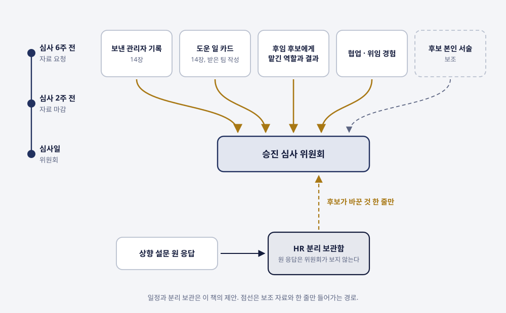
그림 29-1. 심사 6주 전부터 자료가
위원회로 들어오는 경로와 따로 보관하는 상향 설문
그림은 위에서 아래로 읽는다. 위원회로 바로 들어가는 실선은 4갈래이고,
상향 설문은 보관함을 거쳐 한 줄만 들어간다.
하나 더 있다. 2장의 사전 심사서 넷째 질문은 관리자 직함을 내려놓는
사람이 다시 관리자로 돌아올 경로를 물었다. 승진 심사가 그 질문을 받아야
한다. 직함을 내려놓았다가 다시 관리자 자리에 지원하는 사람에게도 같은
기준표를 쓰고, 직함이 없던 기간에 쌓은 기록(맡긴 일, 도운 일, 보낸
사람)을 그대로 증거로 인정하자. 그렇지 않으면 층을 줄일 때 직함을
내려놓은 사람은 승진 심사에서 빈칸으로 남는다.
누가 정하는지도 가른다. 「사람을 기른 증거」를 승진 기준에 넣을지,
상향 설문을 인사 평가와 분리할지는 (다) 임원이 정해야 효력이 있다. 자료
출처, 일정, 보관 방식은 (나) HR이 설계하고 운영한다. (가) 팀장이 할 수
있는 일은 그 증거를 평소에 쌓는 쪽이다.
기준표도 곧 지표가 된다
기준표를 승진 심사에 쓰는 순간, 기준표 자체가 사람들이 맞추려는
목표가 된다. 23장에서 본 다중 과업 연구는 측정하기 쉬운 과업에 강한
보상을 걸면 측정하기 어려운 과업에서 노력이 빠진다고 했다. 이 연구를
승진 기준표에 옮기는 것은 이 책의 추론이지만, 방향은 짐작할 수 있다.
「사람을 기른 증거」 행이 생기면 그 행을 채우기 쉬운 형태의 증거가
늘어난다.
어떤 모습일지 떠올려 보자. 증거 없음으로 표기되는 것을 피하려고
형식적인 역할을 후임 후보에게 맡기고 기록만 남길 수 있다. 큰 프로젝트
하나를 협업 경험에도, 위임 경험에도, 사람을 기른 증거에도 넣어 3개 행을
한꺼번에 채울 수 있다. 19장에서 본 대로 두 팀이 서로 좋은 카드를 써 주는
일도 생길 수 있다. 이런 기록이 쌓인 기준표는 겉으로는 꽉 차 보여도
위원회가 후보를 구별하는 데는 쓸모가 없다.
그래서 기준표에는 점검 질문이 붙어야 한다. 이 책은 2가지를 기본으로
제안한다. 첫째, 증거 없음 표기 비율을 본다. 후보 대부분이 모든 행을
채웠다면 자료가 부풀었는지 의심해 볼 일이다. 반대로 거의 모든 행이 비어
있다면 자료를 모으는 절차가 작동하지 않는 것이다. 둘째, 같은 증거를 여러
행에 쓰는지 본다. 한 증거는 가장 맞는 한 행에만 쓰게 하고, 위원회가
그것을 확인한다. 여기에 19장 카드의 점검 질문(같은 두 팀이 서로만 카드를
주고받는가, 카드가 심사 직전에 몰리는가)을 함께 쓰면 된다.
이 장의 처방 가운데 효과가 확인된 것은 아직 하나도 없다. 「사람을
기른 증거」를 승진 심사에 공식 반영한 회사의 1차 자료, 그렇게 했을 때
리더의 행동이 달라졌다는 효과 연구, 실증된 AI 시대 리더 역량 모델, 앞
소절에서 적은 리더 대상 AI 교육의 효과 연구, 상향 설문을 평가와 분리한
경우와 연결한 경우의 비교 연구는 모두 2026년 11월 14일까지 이 책의
리서치가 찾지 못했다. 기준표의 행, 6주 일정, 분리 보관, 게이밍 점검은
모두 아직 검증되지 않은 제안이다. 그래서 도구의 「1년 뒤 다시 볼
지표」가 중요하다. 새 기준으로 올린 리더의 팀이 1년 뒤 어떤 모습인지
보지 않으면, 이 제안이 맞았는지 틀렸는지 가릴 방법이 없다.
다음 분기에 쓸 제도 도구: 리더 승진 심사 기준표
팀장이 들고 올 것: 28장의 리더 평가 기준표(자기
점검판)와 그 증거 열에 쌓인 기록.
도구는 위원회가 쓰는 평가 기준표와 자료 수집 일정으로 이뤄진다.
28장의 기준표가 리더가 자기를 비춰 보는 표였다면, 이 도구는 위원회가
후보를 심사할 때 무엇을 받고 무엇이 비어 있는지 확인하는 표다. 수준을
나누는 열 대신, 증거가 어디서 왔는지와 증거가 없을 때 어떻게 적는지를
열로 둔다.
임원판은 결정 문장 3개다. 28장의 「리더의 리더가 정할 것」이 임원에게
남긴 질문을 결정 문장으로 바꾼 것이다. 경영 회의에서 채택·보류를 정하고
이유를 한 줄 적는다.
표 29-2. 임원판: 승진 기준 결정 문장
결정 문장
누가 정하나
근거 수준
채택·보류와 이유
리더 승진 기준에 「사람을 기른 증거」와 협업·위임 경험을 넣는다
(다) 임원
제안(현재 실적 승진의 한계는 28장 회상, 반영 효과 연구 없음)
상향 설문의 원 응답은 인사 평가·승진 심사 자료와 분리해 보관하고,
위원회는 후보가 바꾼 것 한 줄만 본다
(다) 임원, 보관은 (나) HR
제안(가장 가까운 사례는 Google, Garvin 2013. 비교 연구 없음)
관리자를 팀 성과만으로 평가하지 않는다(18장 규칙표 다섯째 행을
따른다)
(다) 임원
제안
HR판은 평가 기준표다. 행마다 증거가 어디서 오는지, 증거가 없으면
어떻게 표기하는지, 근거 수준이 무엇인지를 적는다. 후보와 관련자의 이름은
실명 대신 팀 코드로 적는다.
표 29-3. HR판: 위원회용 평가 기준표
행
증거 자료(어디서 오나)
증거 없음 표기
근거 수준
사람을 기른 증거
후임 후보로 지목한 사람과 그 사람이 해낸 일, 팀원의 성장 기록
“증거 없음”과 사유(팀 신설, 팀원 없음 등)
제안
보낸 사람의 1년 성과
18장 보낸 관리자 기록
“보낸 사람 없음” 또는 “1년 미경과”
제안
도운 일
19장 도운 일 결과 기록 카드(받은 팀 작성)
“카드 없음”
제안
협업·위임 경험
다른 팀과 함께 낸 결과, 팀원에게 맡긴 일과 그 결과
“증거 없음”
제안
확인 순환·심사 진행 경험
후임 후보에게 확인 순환이나 회의 진행을 맡긴 기록
“맡긴 기록 없음”
제안
상향 설문
HR 분리 보관함의 원 응답은 보지 않는다. 후보가 설문 뒤에 바꾼 것 한
줄
“설문 미실시”
제안
현재 실적
지난 평가 결과
해당 없음
기존 제도
표 29-4. HR판: 자료 수집 일정
시점
할 일
담당
심사 6주 전
후보 명단 확정, 18장 기록·19장 카드 보유 팀에 자료 요청
HR 승진 담당
심사 4주 전
받은 팀 확인이 필요한 카드의 확인 요청, 후보 본인 서술(보조)
접수
HR 승진 담당
심사 2주 전
자료 마감, 증거 없음 표기 확정, 같은 증거 중복 점검
HR 승진 담당
심사일
위원회 심사(현재 실적 행은 맨 마지막에 본다)
위원회
현재 실적 행을 맨 마지막에 보자는 것은 작은 장치다. 실적을 먼저 보면
나머지 행을 그 인상에 맞춰 읽기 쉽기 때문이다. 이 순서의 효과도 검증되지
않았다. 이 책의 제안이다.
표들을 어떤 순서로 쓰면 될까? 임원판 결정 문장 3개가 먼저다. 3개
가운데 첫째를 채택하지 않으면 평가 기준표는 심사에 쓰이지 않는 서류
작업이 된다. 둘째와 셋째는 첫째를 채택한 뒤 같은 회의에서 함께 정하는
편이 낫다. 상향 설문을 분리하지 않은 채 평가 기준표에 설문 행을 넣으면
설문은 곧바로 평가가 된다. 관리자를 팀 성과만으로 평가하는 제도를 그대로
둔 채 승진 심사에서만 보낸 사람의 성과를 물어도, 보내는 관리자는 평소
평가에서 여전히 손해를 본다.
결정 문장이 채택되면 HR은 평가 기준표와 일정을 첫 관리자 승진 심사 한
차례에 시범으로 쓴다. 이 시범에서 가장 먼저 드러나는 것은 기준표의
결함보다 자료의 결함일 것이다. 18장 기록이나 19장 카드가 아직 쌓이지
않은 회사라면 평가 기준표의 여러 행이 증거 없음으로 채워진다. 그것도
쓸모 있는 결과다. 어느 행의 자료가 회사 안에 없는지가 보이면, 18장과
19장의 도구를 어디부터 돌려야 하는지가 정해진다.
평가 기준표 맞추기(게이밍) 점검은 심사 2주 전 마감 때 HR이
확인한다.
표 29-5. HR판: 평가 기준표 맞추기 점검과 운영
항목
항목
내용
누가 정하나
근거 수준
게이밍 점검 1
증거 없음 표기 비율: 거의 0%면 부풀림을, 거의 100%면 절차 실패를
의심한다
(나) HR
제안
게이밍 점검 2
같은 증거를 여러 행에 썼는가: 한 증거는 가장 맞는 한 행에만
(나) HR
제안
게이밍 점검 3
19장 카드 점검 질문 적용(같은 두 팀의 맞교환, 심사 직전 몰림)
(나) HR
제안
1년 뒤 다시 볼 지표
새 기준으로 올린 리더의 팀: 1년 이직, 사내 이동, 상향 설문(분리 보관
원칙 안에서 집계)
(나) HR, 26장 사안 목록에 기록
제안
시범 범위
첫 관리자 승진 심사 한 차례
(다) 임원
제안
운영 부담
HR 승진 담당, 심사 주기마다, 심사 자료 보관 위치(인사 시스템의 심사
기록)
(나) HR
제안
1년 뒤 다시 볼 지표는 26장에서 본 임원 의사결정 사안 목록의 한 행으로
옮겨 간다. 상향 설문을 지표에 넣을 때도 개인 점수를 꺼내지 말고 팀 단위
집계로만 보자. 분리 보관을 선언해 놓고 1년 뒤 지표에서 원 점수를 꺼내면
선언이 무너진다.
리더 약 500명. 이 장에서 본 숫자 가운데 리더 대상 AI 교육의 실적으로
공개된 것은 사실상 이 하나다. 한 회사가 1년 동안 고위 리더 약 500명에게
책임 있는 AI 교육을 했다고 회사 임원이 직접 밝혔다. 교육한 사람의 수는
셀 수 있었지만, 그 500명이 교육 뒤에 팀을 어떻게 이끌었는지, 그 팀의
사람들이 어디로 옮겨 갔는지를 센 숫자는 아직 공개되지 않았다.
교육 규모와 기간을 함께 밝힌 회사가 드문 만큼, 이 숫자는 그 자체로
흔치 않은 공개다. 위원회가 여기서 배울 점은 그다음 숫자 쪽에 있다. 승진
심사도 사정이 같다. 올린 리더의 수는 해마다 쌓이지만, 그 리더 밑에서
누가 잘하게 됐는지는 따로 모으지 않으면 남지 않는다. 이 장의 기준표가
모으려는 것이 그 두 번째 숫자다.
맺음말. 다음 월요일에 할 일
서문은 AI 없이는 일이 돌지 않는 조직에서 리더는 무엇을 하는가라는
질문으로 시작했다. 29장을 지나고 보면 대답은 세 가지 일로 모인다. 무엇을
AI와 함께 돌릴지 고르는 일, 누가 결과를 확인할지 나누는 일, 그 일을
다음번에 맡을 사람을 기르는 일이다. 실무자는 이 일을 자기 업무 목록에서,
팀장은 팀에서, 임원은 회사의 제도에서 한다. 책을 덮기 전에 어디까지가
단단한 땅이고 어디부터가 아직 다져지지 않은 땅인지 한 번 더 모아 두자.
그래야 각 자리에서 무엇을 약속할지 정할 수 있다.
아직 비어 있는 자리
이 책의 리서치는 직접 실증을 찾지 못한 질문 셋과 찾지 못한 사례
하나를 남겼다. 첫째, AI 시대 리더에게 필요한 역량이 무엇인지를 실증한
역량 모델은 찾지 못했다. 둘째, 일을 없애는 판단을 누가 어떻게 내릴 때
결과가 좋은지를 보여 준 연구도, 업무 재설계가 성과를 낸다는 것을 조직
단위로 입증한 실험도 찾지 못했다. 셋째, 생성형 AI가 관리 계층의 수나
관리자 한 사람이 맡는 인원에 어떤 영향을 주는지를 직접 측정한 연구도
없었다. 리더를 대상으로 한 AI 교육 프로그램이 어떻게 운영되고 효과가
어땠는지도 공개 사례를 찾지 못했다. 표 E-1은 이 빈칸을 2026년 11월
14일에 다시 확인한 상태다.
표 E-1. 빈칸 4가지와 2026년 11월 14일 상태
빈칸
2026-11-14 상태
본문에서 쓸 수 있는 말
이 책의 장
AI 시대 리더 역량 모델의 실증
찾지 못함. AI를 많이 도입한 기업의 관리직 공고에서 요구 기술이 옮겨
갔다는 관찰(Alekseeva 외)이 간접 근거
“실증된 역량 모델은 아직 없다”
29장
일 없애기 결정의 조직 단위 실증
찾지 못함. 개인에게 도구를 나눠 준 것만으로는 과업 구성이 바뀌지
않았다는 실험(Dillon 외), 아낀 시간 대부분이 다른 업무로 갔다는 자기
보고(Humlum·Vestergaard)까지
“사용처를 조직이 정했을 때와 개인에게 맡겼을 때를 비교한 연구는
없다”
17장
생성형 AI가 관리 계층 수와 관리 범위에 주는 영향의 직접 측정
직접 측정은 찾지 못함. 간접 실증 2편(Ewens·Giroud, Alekseeva 외)과
이론 모형 3편(Xu 외, Ide·Talamàs, Farach)
“AI 인력 채용을 늘린 기업이 계층을 줄였다는 실증은 있지만, 생성형
AI와 관리 범위를 직접 측정한 연구는 없다”
2·3장
리더 대상 AI 교육의 공개 사례와 효과
회사 공개 사례는 IKEA 매장 대부분을 운영하는 Ingka의 고위 리더 약
500명 교육 실적(효과 미공개). 효과 연구는 찾지 못함
“공개된 것은 교육한 인원까지다”
29장
4가지 가운데 빈칸이 줄어든 곳은 직접 측정의 주변에 간접 근거가 생긴
곳이고, 빈칸 자체가 닫힌 곳은 없다.
실무자 자리에도 근거가 닿지 않은 질문이 있다. 개인이 작업 기록이나
사용 일지를 남기면 일이 나아지는지 측정한 동료 심사 연구는 없었다.
회사에 알리지 않고 AI를 쓰는 비율은 벤더 자체 조사와 대학 주관 조사(KPMG
협력)의 자기 응답뿐이었고, 공개 정책을 직접 다룬 연구는 동료 심사 전
프리프린트 한 편이었다. 한 사람의 AI 사용 관행이 동료에게 퍼진다는 것을
인과로 보인 연구도, 실무자가 처음 관리자가 되는 전환을 최근 자료로
측정한 연구도 없었다. AI를 썼다고 밝힐 때 생기는 평가 비용을 무엇으로
줄일 수 있는지 검증한 연구도 찾지 못했다. 에이전트와 일하는 지식
노동자의 확인 시간이 얼마나 되는지는 아무도 측정하지 않았다. 11장의
22.4%는 코드 자동완성 시절 21명의 숫자다. 맡길수록 판단력이 녹슨다는
연구는 다른 영역에서 왔고, 반대로 AI를 쓰며 다른 숙련이 자란다는 쪽은
커뮤니티 의견뿐이었다.
자료 쪽의 한계도 세 자리가 같았다. 관리자가 AI 전환의 변수라는 근거는
모두 상관관계이고, 그 가운데 일부는 AI를 파는 회사가 직접 한 조사다.
임원 자리의 장들이 기댄 연구 상당수는 생성형 AI가 퍼지기 전의 자료이고,
회사 사례 상당수는 2차 보도로 확인했다. 현장의 목소리는 대부분 영어권
개발자 커뮤니티에서 왔다. 개발 직군이 아닌 팀장과 임원의 목소리는 언론
인용으로만 얇게 모았고, 영업 지원, 인사, 기획 담당자의 말은 거의 없다.
실무자의 장마다 넣은 비개발 업무 장면은 증언이 아니라 이 책이 만든
예시다. 국내 1차 자료는 얇고, 국내 노동법과 인사 제도는 조사하지 않았다.
이 책의 처방이 개발 조직 밖의 팀과 국내의 노사 관계 안에서도 그대로
통할지는 그 팀과 그 회사가 시범 범위에서 확인할 일이다.
이 책의 제안이 기댄 곳
이 공백 위에 선 제안이 여럿 있다. 실무자 자리에서는
4·11·15·20·21·27장의 제안이 앞의 목록에 기댄다. 확인할 수 있는 일부터
맡기기, 넘김 메모의 확인 시간, 돕는 시간의 상한과 기록표, 실패 카드,
확인 내역과 함께 밝히기, 작은 리더 역할 하나다. 연구가 받친 것은
출발점까지이고, 실무자의 책상으로 옮긴 마지막 걸음은 모두 이 책의
추론이다. 팀장 자리에서는 9장에서 일 없애기의 결정 권한을 요구자와 결과
책임자와 수행자에게 나눠 둔 것, 13장에서 확인 노동의 쏠림에 상한을 두고
확인자를 돌아가며 맡기자고 한 것, 28장에서 기르는 방법을 이 책의 실천에
대응시키고 리더 평가 기준표에 「사람을 기른 증거」 행을 넣은 것이
그렇다. 일반 연구에서 출발했지만 마지막 걸음은 추론이다.
임원 자리의 제도 도구 9개 가운데 효과 연구 위에 선 것은 없다. 근거가
가까운 곳은 몇 군데 있다. 18장의 공개 게시 우선 규칙은 동료 심사를 거친
비교 연구(Keller, AI 이전)에, 23장의 게이밍 점검은 고전 이론과 목표제
연구에, 26장 사안 목록에서 결과보다 먼저 적는 예상 칸은 결과 편향 실험과
사후 검토 메타분석에 기댄다. 거기서 처방으로 건너오는 마지막 걸음은
추론이다. 나머지는 근거가 비어 있는 자리에 이 책이 놓은 제안이다. 17장
제4조의 인력 조정 비사용 약속, 18장의 보낸 관리자 기록과 시간 상한,
19장의 받은 팀 카드와 챔피언 헌장, 29장의 「사람을 기른 증거」 행,
25장의 감사 기록 사용 범위와 기여자 열이 그렇다. 이 구분은 경영 회의에서
바로 쓸 수 있다. 근거가 가까운 도구는 시범에 먼저 올리고, 근거가 빈
도구는 시범 범위를 더 좁게 잡는다.
그렇다면 이 제안들은 무엇으로 검증할 수 있을까? 도구마다 기록할 열을
둔 이유가 여기에 있다. 실무자의 경계 기록표 결과 열과 넘김 메모의 주간
합계, 팀장의 없앨 일 심사표의 4주 시험 중단 결과와 확인 노동 배분표의
반려 사유, 임원의 사안 목록 예상 칸이 쌓이면, 어느 제안이 그 팀과 그
회사에서 맞았고 어느 제안이 틀렸는지 가릴 수 있다. 아직 아무도 측정하지
못한 것을 리더 한 사람이 측정할 수는 없다. 다만 측정하지 못했다는 것을
적어 두는 일은 할 수 있다.
종합편 「코드 너머에서 에이전트 성적표까지」가 적어 둔 두 질문, 일을
아예 하지 않아도 되게 만드는 일과 리더십 자체의 전환 가운데 어느 것도 이
책이 다 채웠다고 말할 수는 없다. 이 책이 한 일은 그 자리에 무엇을 적어
가면 될지 열을 그어 둔 데까지다.
모두가 에이전트를 이끄는 날
조금 먼 이야기를 하나 해 두자. 여기서부터는 이 책의 추론이다.
14장에서 본 BCG 조사에서 응답자의 절반 가까이(47%)가 자기 역할이 일을
직접 하는 쪽에서 AI를 관리하고 지시하는 쪽으로 옮겨 갔다고 답했다. 같은
문항에 23%는 중립, 30%는 동의하지 않았고, 직무가 실제로 바뀌었는지
측정한 것이 아니라 응답자가 그렇게 느낀다고 답한 것이다. 이 흐름이
이어진다면 머지않아 팀원 한 사람 한 사람이 에이전트 여럿을 두고 일하게
된다. 일을 고르는 일과 확인을 나누는 일은 그때 직함과 상관없이 모두의
일이 된다. Microsoft는 Work Trend Index 2025에서 이런 사람을 “agent
boss”라고 부르며 “someone who builds, delegates to, and manages agents
to amplify their impact”라고 적었다. 에이전트 도구를 파는 회사의
전망이라는 점은 기억해 두자.
그렇다면 리더라는 자리는 사라질까? 이 책은 그렇지 않다고 본다. 셋째
일, 사람을 기르는 일은 에이전트를 몇 개 두든 생기지 않는다. 에이전트는
지시문을 고치면 다음 실행에서 달라지지만, 사람은 1on1이 몇 달 이어져야
달라진다. 에이전트는 실패해도 잃을 것이 없지만, 사람은 한 번 실패한 뒤
다시 손을 들지를 스스로 정한다.
사람을 기르는 일은 에이전트에게 넘어가지 않는다
이 추론을 세 문장으로 나눠 어디까지 받쳐지는지 따져 보자.
첫째 문장, 고르고 믿을 범위를 정하는 일이 모두의 일이 된다는 것이
미래에 맞을지는 이 책도 알 수 없다. 다만 고르는 일과 확인하는 일이
저절로 잘되지 않는다는 것은 연구가 받쳐 준다. 그것을 따로 연습할 기술로
보는 것은 이 책의 추론이다.
둘째 문장, 사람을 기르는 일은 에이전트에게 넘어가지 않는다는 것은
일부만 받쳐졌다. 15장에서 본 Anthropic의 면담에는 주니어들이 예전만큼
질문하러 오지 않는다는 시니어 엔지니어의 말이 있었고, 같은 글은 예전에
동료에게 가던 질문이 이제 Claude에게 먼저 간다는 것을 면담의 두드러진
주제로 꼽았다. 한 회사가 자기 직원에게 한 조사이니, 적어도 그 회사에서는
답을 주는 일의 일부가 AI 쪽으로 옮겨 갔다고 읽을 수 있다. 선배가 후배가
어디서 막히는지 보는 일은 옮겨 가지 않는다는 것, 그리고 그 기회가 질문과
함께 줄어든다는 것은 이 책의 추론이다. 에이전트는 맡김 메모를 한 줄
고치면 다음 실행에서 달라진다. 옆 사람의 일이 바뀌었다는 말이 돕는 일
기록표의 마지막 열에 적히기까지는 15장의 순서대로라도 1~2주가 걸린다. 그
시간을 함께 보내는 일은 도구로 줄일 수 있는 몫이 아니라는 것이 이 책의
판단이다.
셋째 문장, 다른 사람이 AI로 일을 바꾸도록 도운 기록이 다음 리더를
가른다는 것은 여전히 제안이다. 27장에서 본 연구는 협업 경험이 관리
성과와 함께 움직였다는 것을 보여 줬지만, 그것은 사람 사이의 협업이었다.
에이전트를 이끈 경험이 사람을 이끄는 일로 이어진다는 직접 근거는 찾지
못했다. 그래도 에이전트 여럿에게 일을 나누고 결과를 확인해 본 실무자는
리더가 하는 일의 절반을 이미 연습한 셈이다. 남은 절반은 사람과 하는
일이다. 누구에게 사람을 맡길지 고를 때는 그 사람이 다른 사람의 일을
얼마나 바꾸도록 도왔는지를 먼저 보자는 것이 이 책의 제안이다. 28장의
평가 기준표와 29장의 승진 심사 기준표가 그 기록을 받는 자리다.
다음 월요일에 할 일
도구를 한꺼번에 꺼내면 아무것도 끝까지 가지 못한다. 자리마다 셋이면
된다. 나머지 순서는 부록의 시작 순서를 따라가자.
실무자라면. 셋 다 팀장의 허락 없이 시작할 수
있다.
4장의 경계 기록표. 지난 2주 동안 한 일을 10줄 적고,
맡김·함께·직접·보류를 표시하고 두 예상 열을 채운다. 신입이나 주니어라면
보류 칸이 크게 나와도 괜찮다.
5장의 맡김 메모. 기록표의 맡김 칸에서 이번 주에 실제로 맡길 일
하나를 골라 9개 항목을 채운다. 끝나는 조건, 멈출 조건, 넣지 않을 정보의
세 칸은 비우지 말자.
11장의 넘김 메모. 맡긴 결과를 넘길 때 붙이는 네 줄이다. 이렇게 만든
이유, 택하지 않은 것, 확인한 것과 확인하지 않은 것, 확인에 든 시간. 넷째
줄에는 0이 아닌 숫자를 적자.
팀장이라면. 셋 다 팀장이 바로 시작할 수 있고, 뒤에
올 도구의 입력이 된다.
1장의 리더 시간 점검표. 한 주 동안 자기 시간을 30분 단위로 적는다.
행정과 당면 문제, 사람을 기르는 데, 일을 다시 짜는 데, 확인과 검토에,
직접 AI를 쓴 데 든 시간으로 나눠 적는다.
7장의 2주 사용 일지. 직접 맡겨 보고, 맡기기 전에 결과를 예상해 적고,
결과가 경계 안이었는지 밖이었는지 적는다.
9장의 없앨 일 심사 회의 하나. 아무도 읽지 않는 것 같은 보고서나 관행
하나를 골라 4주 동안 시험 삼아 멈춰 보고 되돌릴 조건을 적는다. 열기
전에, 없앤 일과 아낀 시간이 인력 조정의 근거로 쓰이지 않는다는 약속이
위에서 나와 있는지부터 알아보자. 그 약속은 팀장이 혼자 할 수 없다.
임원과 HR이라면. 다음 분기 경영 회의에 올릴 셋이다.
시작하기 전에 부록의 「제도 개정 전 확인 목록」을 한 번 거치자.
3장의 관리 범위 분포 점검표. 직속 인원 순으로 정렬한 표 한 장에,
가장 큰 팀 몇 곳의 지난 분기 1on1 횟수를 붙인다.
17장 사용처 결정 규정의 제4조. 인력 조정 비사용 약속의 범위와
기한부터 정한다. 어떤 수치를, 어떤 인력 조정에, 언제까지 쓰지 않는가.
노동자 대표·법무와 함께 정하고, 국내 적용은 법무 확인이 필요하다.
26장 사안 목록의 첫 행. 이번 분기에 이미 내린 결정 하나를 골라, 결정
문장과 결정 당시의 근거와 예상, 다시 볼 날짜와 여는 사람을 지금 적는다.
예상은 범위로 적어도 된다.
임원이 먼저 볼 것이 하나 더 있다. 직원의 평가표에서 사용량을 뺐는데
임원 성과 계약에 도입률 목표가 남아 있거나, 사안 목록에 이름을 올리는
임원이 없다면, 나머지 도구는 23장의 표현대로 아래로만 내려간 문서가
된다. 1년 뒤에 셀 숫자도 미리 정해 두자. 재검토 회의에서 유지, 수정,
대체로 갈린 결정이 각각 몇 건인가. 결정 당시 예상과 1년 뒤 결과가 크게
갈린 결정이 몇 건인가. 사안 목록에 적은 재검토 날짜를 지킨 결정이 몇
%인가. 26장은 영국에서 기한 안에 시행 후 검토를 받은 규제가 40%가 안
됐다는 숫자로 시작했다. 셋째 숫자가 40%를 넘을지는 이 책이 장담할 수
없다.
세 묶음의 첫 줄은 모두 작다. 업무 목록 10줄, 30분 단위로 적은 한 주,
결정 문장 한 줄과 예상 한 줄과 다시 볼 날짜다. 그 기록 가운데 어떤 열은
오래 비어 있을 것이고, 어떤 열은 이 책의 제안이 틀렸다는 것을 보여 줄
것이다. 실무자의 기록에는 언젠가 다른 사람의 이름이 들어오고, 그 이름이
처음 들어올 칸은 15장 돕는 일 기록표의 마지막 열이다. 사안 목록의 첫
행에는 1년 뒤 그 행을 펼칠 사람의 직책도 적어 두자.
부록
부록 A. 자리별 도구 모음
29장의 장마다 끝에 둔 도구를 한곳에 모았다. 먼저 29개 도구를 장
순서로 한 표에 모으고, 이어서 실무자·팀장·임원 자리별로 쓰는 때와 앞뒤
도구의 연결, 근거 수준이나 권한 표시를 적었다. 그다음 자리별 시작 순서
셋과 제도 개정 전 확인 목록을 두고, 마지막에 장별 도구 양식을 장 순서로
실었다.
29개 도구 한눈에
표 A-1. 29개 도구 한눈에
장
자리
도구 이름
한 줄 쓰임
1
팀장
리더 시간 점검표
리더의 한 주가 어디로 가는지 측정한다
2
임원
관리 층 조정 사전 심사서
줄이는 층의 일 5가지와 그 층에 있던 사람의 갈 곳을 결정 전에
적는다
3
임원
관리 범위 분포 점검표
직속 인원 분포의 꼬리와 그 팀의 육성 시간을 본다
4
실무자
경계 기록표
업무 목록 한 줄마다 맡김·함께·직접·보류를 표시하고 예상을
적는다
5
실무자
맡김 메모
끝나는 조건과 멈출 조건, 넣지 않을 정보를 적어 맡긴다
6
실무자
확인 대기열
여러 에이전트의 결과를 확인할 순서대로 줄 세운다
7
팀장
리더 2주 직접 사용 일지
맡기기 전 예상과 결과를 나란히 적어 경계를 안다
8
팀장
업무 선택 질문지와 결정 기록
바꿀 후보를 우선순위로 거르고 결정을 적는다
9
팀장
없앨 일 심사표, 결정 권한 표, 권한 세 줄
자동화 전에 없앨 일을 심사한다
10
실무자
확인 기준 사전 작성표
결과를 받기 전에 합격 기준을 적고 받은 뒤 대조한다
11
실무자
넘김 메모
넘길 때 확인한 것과 확인에 든 시간을 함께 적는다
12
실무자
직접 해 보는 시간 계획표
부하가 낮은 날 내가 확인하는 일 하나를 직접 해 본다
13
팀장
확인 노동 배분표와 체크리스트
확인을 누가 얼마나 하는지 보이게 하고 지킨다
14
팀장
섞인 팀 1on1 대화 카드
사람에게만 해야 하는 일을 1on1에서 챙긴다
15
실무자
돕는 일 기록표
돕는 시간에 상한을 두고, 도운 일을 받은 사람의 말로 적는다
16
팀장
아낀 시간 사용처 선언문과 4주 기록표
아낀 시간이 어디로 가는지 선언하고 지켜본다
17
임원
아낀 시간 사용처 결정 규정
아낀 시간을 재투자·가격·인력·다른 팀 지원 가운데 어디로 보낼지
정해진 회의에서 정한다
18
임원
사내 인재 시장 운영 규칙표
사람이 다른 팀으로 가는 경로와 보낸 관리자의 손익을 규칙으로
적는다
19
임원
도운 일 결과 기록 카드와 챔피언 역할 헌장
받은 팀이 도운 일의 결과를 적어 평가 자료에 붙이고, 챔피언을 공식
역할로 둘 때 헌장을 쓴다
20
실무자
실패 카드
에이전트가 틀린 일 한 건을 다시 볼 수 있게 남긴다
21
실무자
공개 문구 견본
AI를 쓴 범위와 확인한 것·확인하지 않은 것을 자리별로 밝힌다
22
팀장
평가 항목 다시 쓰기 표
투입형 평가 항목을 결과형으로 바꾼다
23
임원
평가 항목 교체 선언문
뺄 것, 넣을 것, 쓰지 않을 데이터, 보상 연결을 한 문서에 적는다
24
팀장
IT·플랫폼에 보낼 질문 목록과 팀 에이전트 목록표
창구 도입 전에 물을 것을 묻고 팀 에이전트를 적는다
25
임원
조직 에이전트 운영 규정 한 장
회사 공용 에이전트마다 소유자·인계자·멈출 사람·기여자를 적고 감사
기록의 쓰임을 정한다
26
임원
임원 의사결정 사안 목록
결정 당시 근거와 예상을 결과보다 먼저 적고 1년 뒤 정해진 자리에서
다시 본다
27
실무자
첫 리더 역할 체크리스트
직함 없이 맡을 역할 하나를 요청하고 4주 뒤 점검한다
28
팀장
리더 평가 기준표
팀장 자리의 다른 아홉 장(1·7·8·9·13·14·16·22·24장)의 실천과 「사람을
기른 증거」로 리더를 본다
29
임원
리더 승진 심사 기준표
위원회가 사람을 기른 증거를 여러 출처에서 모은다
실무자 자리의 도구 열 가지
실무자 자리의 열 장(4·5·6·10·11·12·15·20·21·27장)이 장마다 끝에 둔
도구 열 가지를 쓰는 순서대로 묶었다. 도구마다 한 줄 용도와 쓰는 때, 앞뒤
도구와의 연결, 그리고 그 도구가 무엇에 기대는지를 함께 적었다. 근거
수준은 본문의 「이 도구의 근거」 줄을 옮긴 것이다. “연구 있음”은 도구가
기대는 장치의 효과를 연구가 보였다는 뜻이고, “유비”는 다른 영역의 연구를
비유로 옮겼다는 뜻이고, “이 책의 제안”은 효과를 검증한 연구 없이 이 책이
권한다는 뜻이다. 도구 열 가지 가운데 연구만으로 서 있는 것은 하나도
없다.
양식은 본문의 표를 그대로 옮겼다. 본문에서 양식을 고친 판이 나오면 이
부록도 함께 고친다. 줄 수, 시간 상한, “확인 중 2장” 같은 출발 수치는
검증된 기준이 아니라 이 책의 제안이니 자기 일에 맞게 고쳐 쓰자. 양식의
예시 값은 모두 지어낸 것이다.
웹 도구 후보로 표시한 7가지는 브라우저에서 쓰는 판으로 옮기기 쉬운
도구다. 웹판으로 쓰게 되더라도 입력한 내용은 내 브라우저에만 저장되게
하고, 회사 기밀·고객 정보·개인정보는 넣지 않는다. 종이로 표시한 3가지는
화면 밖에 두는 편이 나은 도구다.
표 A-2. 개인 도구 열 가지
장
도구
한 줄 용도
쓰는 때
앞뒤 도구 연결
근거 수준
웹 도구 후보
4
경계 기록표
업무 목록 한 줄마다 맡김·함께·직접·보류를 표시하고 예상을
적는다
첫 주, 도구가 바뀔 때마다
맡김 칸 → 5장 맡김 메모, 결과 열 → 20장 실패 카드
유비 + 이 책의 제안
웹
5
맡김 메모
끝나는 조건과 멈출 조건, 넣지 않을 정보를 적어 맡긴다
맡기기 직전
확인 수단 → 10장 작성표, 10장을 읽은 뒤 10번째 항목(불확실한 곳
표시) 추가
공식 문서 원칙 + 이 책의 제안
웹
6
확인 대기열
여러 에이전트의 결과를 확인할 순서대로 줄 세운다
에이전트를 둘 이상 돌릴 때
맡김 메모 → 카드, 실제 확인 시간 → 11장 넘김 메모
이 책의 제안
웹
10
확인 기준 사전 작성표
결과를 받기 전에 합격 기준을 적고 받은 뒤 대조한다
남에게 넘어가거나 되돌리기 어려운 결과
기준별 판정 → 11장 넘김 메모 셋째 줄, 기준에 없던 문제 → 20장 실패
카드
연구 있음(장치 효과) + 이 책의 제안(개인 양식)
웹
11
넘김 메모
넘길 때 확인한 것과 확인에 든 시간을 함께 적는다
결과를 남에게 넘길 때, 주말에 합계
확인이 유난히 길었던 일 → 4장 분류 다시 보기, 셋째 줄 → 21장 공개
문구
이 책의 제안
웹
12
직접 해 보는 시간 계획표
부하가 낮은 날 내가 확인하는 일 하나를 직접 해 본다
4주 동안 주 1회
막힌 곳 → 4장 분류 고치기, 두 문장 → 맡김 메모
유비 + 이 책의 제안
종이
20
실패 카드
에이전트가 틀린 일 한 건을 다시 볼 수 있게 남긴다
경계 밖 결과가 나온 주
4장 결과 열·10장 작성표 → 카드, 카드 묶음 → 27장 체크리스트
이 책의 제안
웹
21
공개 문구 견본
AI를 쓴 범위와 확인한 것·확인하지 않은 것을 자리별로 밝힌다
보고서·발표·넘김 메모
넘김 메모 셋째 줄에 넣은 형태
이 책의 제안
종이
15
돕는 일 기록표
돕는 시간에 상한을 두고, 도운 일을 받은 사람의 말로 적는다
매주
나눈 것 ← 5·10·4장 도구, 마지막 열 → 27장 체크리스트
이 책의 제안
웹
27
첫 리더 역할 체크리스트
직함 없이 맡을 역할 하나를 요청하고 4주 뒤 점검한다
4주 시작 순서를 마친 뒤
뒷면 증거 ← 10·20·15장 도구
유비 + 이 책의 제안
종이
팀장 자리의 도구 열 가지
팀장 자리의 열 장(1·7·8·9·13·14·16·22·24·28장)이 장마다 끝에 둔
도구를 모았다. 도구마다 용도와 쓰는 때, 앞뒤 도구와의 연결, 그리고
누구의 권한으로 쓰는 도구인지를 함께 적었다. 팀장 자리 도구의 권한
표시는 본문 9장의 권한 세 줄을 따른다. (가)는 팀장이 직접 약속하거나
혼자 쓸 수 있는 것, (나)는 팀장이 위에 요구해야 하는 것, (다)는 임원이
선언해야 효력이 생기는 것이다.
양식은 본문의 표를 그대로 옮겼다. 본문에서 양식을 고친 판이 나오면 이
부록도 함께 고친다. 질문 수, 점수 기준, 50% 같은 출발 수치는 검증된
척도가 아니라 이 책의 제안이니 팀 사정에 맞게 고쳐 쓰자.
표 A-3. 리더 도구 열 가지
장
도구
한 줄 용도
쓰는 때
이어지는 곳
권한
1
리더 시간 점검표 (+임원판 질문 다섯)
리더의 한 주가 어디로 가는지 측정한다
첫 주, 이후 4주마다
“직접 AI 사용” 범주 → 7장 일지
팀장판 (가) / 관리 층을 줄이는 결정 앞의 질문은 임원판
7
리더 2주 직접 사용 일지
맡기기 전 예상과 결과를 나란히 적어 경계를 안다
첫 2주
경계 안·밖 기록 → 8장 질문지 3번
(가) 누구나 혼자 쓸 수 있다
8
업무 선택 질문지 + 결정 기록
바꿀 후보를 우선순위로 거르고 결정을 적는다
분기 초
질문 7 “아무것도” → 9장 심사표
팀 안의 결정은 (가), 질문 6이 0·1점이면 옆 팀·임원·IT와 함께
9
없앨 일 심사표 + 결정 권한 표 + 권한 세 줄
자동화 전에 없앨 일을 심사한다
2주차부터, 4주 시험 중단
없앤 자리의 새 일 → 16장 선언문, 기록 → 22장 평가
(가)·(나)·(다)를 표에 나눠 적는다
16
아낀 시간 사용처 선언문(팀장판·임원판) + 4주 기록표
아낀 시간이 어디로 가는지 선언하고 지켜본다
3주차부터 4주
확인으로 가는 시간 → 13장 배분표
팀장판 (가)+(나), 인력 조정 근거로 쓰지 않는다는 약속은 임원판
(다)
13
확인 노동 배분표 + 체크리스트
확인을 누가 얼마나 하는지 보이게 하고 지킨다
3주차부터 매주
확인 시간 → 14장 카드, 건수·반려 → 22장 평가
사람 항목 (가), 체계 항목은 위·IT에 요청 (나)
14
섞인 팀 1on1 대화 카드
사람에게만 해야 하는 일을 1on1에서 챙긴다
4주차부터 매주
뒷면의 에이전트 항목 ↔︎ 24장 목록표
(가)
22
평가 항목 다시 쓰기 표
투입형 평가 항목을 결과형으로 바꾼다
4주차, 평가 시즌 한 분기 전
근거 기록 ← 9·13장 도구
팀장 의견 수준은 (가), 회사 제도는 (나)로 요구하고 (다)가
바꾼다
24
IT·플랫폼에 보낼 질문 목록 + 팀 에이전트 목록표
창구 도입 전에 물을 것을 묻고 팀 에이전트를 적는다
4주차, 창구 도입 회의 전
사라질 일 → 9장 심사표
목록표 (가), 질문 5·8의 회사 규칙은 임원과 IT (다)
28
리더 평가 기준표
팀장 자리의 다른 아홉 장(1·7·8·9·13·14·16·22·24장)의 실천과 「사람을
기른 증거」로 리더를 본다
4주 뒤 첫 자기 점검, 이후 4주마다
그 아홉 장 도구의 기록이 증거 열
자기 점검판 (가), 리더의 리더판을 승진 심사에 쓸지는 (다)
임원 자리의 제도 도구 9개
임원 자리의 아홉 장(2·3·17·18·19·23·25·26·29장)이 장마다 끝에 둔 제도
도구를 모았다. 경영 회의 자료나 인사 제도 개정안을 만들 때 이 부분을
펴면 된다. 도구마다 용도와 쓰는 때, 앞뒤 도구와의 연결, 누가 정하는지,
시범 범위와 운영 부담을 함께 적었다. 임원 자리 도구의 권한 표시는
4줄이다. (가)는 팀장이 할 수 있는 것, (나)는 HR이 설계·운영하는 것,
(다)는 임원이 선언·결정해야 효력이 있는 것, (라)는 노동자 대표·법무와
함께 정할 것이다.
양식은 본문의 표를 그대로 옮겼다. 본문에서 양식을 고친 판이 나오면 이
부록도 함께 고친다. 질문 수, 규칙 수, 6주 같은 일정, 비어 있는 ○ 자리는
검증된 값이 아니라 이 책의 제안이니 회사 사정에 맞게 고쳐 쓰자. 양식
예시와 회의 자료의 사람 칸에는 실명 대신 팀 코드나 직책을 적는다.
표 A-4. 제도 도구 9개의 용도와 연결
장
도구
한 줄 용도
쓰는 때
이어지는 곳
누가 정하나
2
관리 층 조정 사전 심사서(질문 5개 + 이관표)
줄이는 층의 일 5가지와 그 층에 있던 사람의 갈 곳을 결정 전에
적는다
층 조정 안건이 경영 회의에 오를 때만
이관표 육성 행 → 3장 점검표, 질문 ④ → 29장 승진 심사, 마지막 열 →
26장 사안 목록
질문은 (다), 이관표는 (나), 해고·재배치와 보상 변경은 (라)
3
관리 범위 분포 점검표
직속 인원 분포의 꼬리와 그 팀의 육성 시간을 본다
분기마다 같은 날
2장 이관표 육성 행에서 받고, 분기 지표 → 26장 사안 목록
기준선 값과 육성 시간 배정은 (다), 표 운영은 (나)
17
아낀 시간 사용처 결정 규정(조항 5개 + 분기 안건지)
아낀 시간을 재투자·가격·인력·다른 팀 지원 가운데 어디로 보낼지
정해진 회의에서 정한다
분기 경영 회의
제3조 다른 팀 지원 → 18장 규칙표, 제4조 → 23장 재설계 기여의 전제,
안건지 → 26장 사안 목록
제1·3·5조는 (다), 제2조 준비는 (나), 제4조와 노동자 대표 참여는
(라)
18
사내 인재 시장 운영 규칙표(규칙 6개 + 지표 정의 + 공급사 질문)
사람이 다른 팀으로 가는 경로와 보낸 관리자의 손익을 규칙으로
적는다
시장을 열거나 고칠 때, 지표는 월 1회
셋째 행(시간 상한) → 19장 카드와 헌장, 보낸 관리자 기록 → 29장 평가
기준표, 다섯째 행 → 29장 결정 문장
채택은 (다), 양식·기록은 (나), 근무 시간 밖·겸직 형태는 (라)
19
도운 일 결과 기록 카드와 챔피언 역할 헌장
받은 팀이 도운 일의 결과를 적어 평가 자료에 붙이고, 챔피언을 공식
역할로 둘 때 헌장을 쓴다
일이 끝난 달, 평가 주기마다 집계
시간은 18장 셋째 행을 따르고, 카드 → 23장 넣을 항목·29장 평가
기준표·25장 기여 기록
18장 보낸 관리자 기록·19장 카드·2장 질문 ④에서 받고, 1년 뒤 지표 →
26장 사안 목록
결정은 (다), 자료·일정·보관은 (나)
25
조직 에이전트 운영 규정 한 장(결정 문장 4개 + 등록부 필드 + 감사
기록 사용 범위표)
회사 공용 에이전트마다 소유자·인계자·멈출 사람·기여자를 적고 감사
기록의 쓰임을 정한다
회사 게시를 승인할 때, 월 점검
감사 기록 사용 범위 → 23장 쓰지 않을 데이터, 기여 → 19장 카드, 지표
→ 26장 사안 목록
결정은 (다), 필드·점검은 (나) HR·IT, 예외 절차·보관 기간은 (라)
26
임원 의사결정 사안 목록(사안 목록 한 행 + 재검토 진행표)
결정 당시 근거와 예상을 결과보다 먼저 적고 1년 뒤 정해진 자리에서
다시 본다
결정하는 날, 분기 갱신, 1년 재검토
임원 자리의 다른 여덟 장(2·3·17·18·19·23·25·29장) 도구의 「1년 뒤
다시 볼 지표」를 받는다
사안 목록 사용과 결재 경로는 (다), 양식·회의 운영은 (나), 인력
조정과 이어지는 행의 공개 범위는 (라)
표 A-5. 제도 도구 9개의 시범 범위와 운영 부담
장
시범 범위
담당
주기
저장 위치
2
조정 대상 본부 하나, 한 분기
HR 조직 설계 담당
조정 1건당 1회
인사 시스템의 조직 변경 기록에 첨부
3
본부 하나, 한 분기
HR 분석 담당
분기 1회
인사 시스템 조직도 추출본과 함께
17
본부 2곳, 2개 분기
경영기획·HR 공동
분기 1회
경영 회의 자료와 함께
18
직군 하나, 두 분기
HR 인재 담당
월 1회 지표 집계
인재 시장 시스템과 인사 시스템
19
본부 하나, 한 평가 주기
HR 평가 담당
평가 주기마다 집계
평가 시스템에 첨부
23
한 평가 주기는 진단만으로 병행, 다음 주기부터 적용
HR 평가·보상 담당
평가 주기마다 점검
평가 시스템과 보상 시스템
29
첫 관리자 승진 심사 한 차례
HR 승진 담당
심사 주기마다
인사 시스템의 심사 기록
25
회사 게시 에이전트부터
IT 플랫폼 담당과 HR 공동
월 1회 점검
등록부
26
이번 분기 경영 회의의 결정부터
경영기획 담당
분기 갱신, 연 1회 재검토
결재 시스템 첨부
시범 범위와 운영 부담은 모두 근거 수준 “제안”이다. 도구를 처음 쓰는
회사라면 표 A-5의 시범 범위보다 더 좁게 시작해도 된다. 범위를 좁히는
것보다 1년 뒤 다시 볼 날짜를 정해 두는 쪽이 중요하다.
시작 순서 셋
도구를 한꺼번에 꺼내지 않도록 자리마다 시작 순서를 하나씩 두었다.
실무자와 팀장은 4주, 임원은 첫 두 분기다.
실무자의 4주
실무자 자리의 장들은 앞 장의 도구가 다음 장의 입력이 되도록 짰다.
아래 순서대로 한 주에 둘 이하씩 시작하는 것이 가장 덜 무겁다. 여러
에이전트에 맡기는 일이 많다면 2주차의 넘김 메모 대신 확인 대기열을 먼저
쓰고, 넘김 메모는 3주차로 미뤄도 된다.
표 A-6. 4주 시작 순서 (실무자 기준)
주
시작할 것
그 주에 끝낼 것
다음 주로 넘기는 것
1주차
경계 기록표(4장), 맡김 메모(5장)
업무 10줄 분류와 두 예상 열, 맡김 메모 한 장으로 맡긴 일 하나
기록표의 결과 열은 계속 채운다
2주차
확인 기준 사전 작성표(10장), 넘김 메모(11장). 여럿에 맡긴다면 확인
대기열(6장)을 넘김 메모 대신
작성표 두세 건, 넘김 메모 주간 합계 한 번
맡김 메모에 10번째 항목을 더해 계속 쓴다
3주차
직접 해 보는 시간 계획표(12장), 실패 카드(20장)
계획표 첫 주 한 줄, 경계 밖 결과가 있었다면 카드 한 장
계획표는 4주 동안 이어 간다
4주차
공개 문구 견본(21장), 돕는 일 기록표(15장)
문구 한 번 써 보기, 기록표 첫 주와 상한 비교
기록표는 매주 쓴다
4주 뒤
첫 리더 역할 체크리스트(27장)
앞면을 채워 팀장에게 요청 문장 보내기
뒷면은 역할을 맡은 4주 뒤에
처음 4주 동안 할 수 있는 것은 도구마다 첫 몇 줄 정도다. 경계 기록표의
결과 열과 돕는 일 기록표의 마지막 열처럼 몇 주가 지나야 채워지는 칸은
4주가 지난 뒤에도 계속 둔다.
팀장의 4주
열 가지를 한꺼번에 꺼내면 아무것도 끝까지 가지 못한다. 팀장 자리의
장들은 앞 장의 도구가 다음 장의 입력이 되도록 짰으니, 아래 순서대로
4주에 나눠 시작하는 것이 가장 덜 무겁다. 아래 순서는 팀장 기준이다.
임원이라면 첫 주의 셋째 자리에 심사 회의 대신 1장의 임원판 질문 다섯과
16장의 임원판 선언문을 두자. 팀장들이 일 없애기를 시작할 수 있느냐는
대개 그 선언이 먼저 나왔느냐에 달려 있다.
표 A-7. 4주 시작 순서 (팀장 기준)
주
시작할 것
그 주에 끝낼 것
다음 주로 넘기는 것
1주차
리더 시간 점검표(1장), 2주 직접 사용 일지(7장), 없앨 일 심사 회의
하나 잡기(9장)
한 주 시간 기록, 심사할 일 하나와 요구자·결과 책임자 적기
일지는 2주차까지 계속
2주차
업무 선택 질문지(8장), 없앨 일 심사표와 4주 시험 중단(9장), 권한 세
줄의 (나) 요구
바꿀 후보의 결정 기록, 시험 중단 시작일
시험 중단은 5주차까지 계속
3주차
아낀 시간 사용처 선언문과 4주 기록표(16장), 확인 노동
배분표(13장)
팀장판 선언문 공유, 첫 주 기록표와 배분표
기록표는 6주차까지, 배분표는 매주
4주차
섞인 팀 1on1 대화 카드(14장), 평가 항목 다시 쓰기(22장), IT 질문
목록과 팀 에이전트 목록표(24장)
1on1 한 바퀴, 다시 쓴 평가 항목 초안, IT에 질문 보내기
1on1 카드는 매주
4주 뒤
리더 평가 기준표 자기 점검판(28장)
열 행을 한 번 채우기
4주마다 다시 보기
처음 기준표를 채우면 대부분의 행이 “시작함”이거나 비어 있을 것이다.
4주 동안 할 수 있는 것은 각 행의 첫 단계 정도다. 기록표와 시험 중단처럼
4주를 넘겨 이어지는 도구는 기준표를 채운 뒤에도 계속 돌린다.
임원의 첫 두 분기
9개를 한 분기에 다 꺼내면 운영 부담이 HR 몇 사람에게 한꺼번에 몰린다.
임원 자리의 장들은 앞 장 도구의 산출이 다음 장 도구의 입력이 되도록
짰으니, 아래 순서대로 나눠 시작하는 것이 가장 덜 무겁다. 아래 순서도 이
책의 제안이다.
표 A-8. 첫 두 분기와 그 뒤의 시작 순서
시기
시작할 것
그 시기에 끝낼 것
다음으로 넘기는 것
1분기: 진단과 약속
3장 분포 점검표, 17장 사용처 결정 규정(제4조 먼저), 26장 사안 목록
개설. 2장 사전 심사서는 층 조정을 앞둔 경우에만
첫 점검표, 제4조의 범위와 기한, 사안 목록 첫 행
17장 안건지는 분기마다, 점검표는 다음 분기 같은 날
2분기: 통로와 평가
18장 인재 시장 운영 규칙표, 19장 카드와 챔피언 헌장, 23장 평가 항목
교체 선언문
채택·보류한 규칙과 사유, 첫 카드 몇 장, 진단만으로 돌릴 새 평가
항목
23장 선언문은 다음 평가 주기에 진단만으로 병행
다음 평가·승진 주기 전
29장 승진 심사 기준표, 25장 조직 에이전트 운영 규정
첫 관리자 승진 심사의 평가 기준표, 회사 게시 에이전트의 등록부
필드
25장 규정이 나오면 23장 선언문의 감사 기록 칸을 그 규정에
맞춘다
1년 뒤
26장 재검토 회의
사안 목록 각 행의 유지·수정·대체
다음 재검토 날짜와 공개할 곳
2분기에 23장 선언문을 낼 때 25장 규정이 아직 없다면, 선언문의 감사
기록 칸에는 “25장 규정이 정해질 때까지 에이전트 감사 기록을 평가와 보상
자료에 쓰지 않는다”는 한 줄을 먼저 둔다. 쓰지 않는다는 쪽으로 먼저 정해
두면, 나중에 규정을 만들 때 예외를 좁히는 일만 남는다.
제도 개정 전 확인 목록
도구 가운데 상당수는 평가, 보상, 인력 계획, 감사 기록처럼 근로 조건과
닿는 제도를 바꾼다. 개정안을 경영 회의에 올리기 전에 아래 6가지를
확인하자. 이 책은 국내 노동법을 조사하지 않았으므로 법령 내용은 적지
않았다. 각 항목의 국내 적용은 법무 확인이 필요하다.
표 A-9. 제도 개정 전 확인 목록
항목
확인할 것
특히 해당하는 도구
누가 정하나
법무 검토
개정안이 근로 조건, 개인정보, 성과 모니터링에 닿는가. 국내 적용은
법무 확인 필요
2·17·23·25장
(라) 법무
노동자 대표 협의 여부
인력 조정과 이어지는 약속, 감사 기록·모니터링 데이터의 사용, 보상
산식 변경이 들어 있는가
17장 제4조, 23장 보상 연결과 쓰지 않을 데이터, 25장 감사 기록 예외
절차
(라) 노동자 대표·법무
공지 기간
효력일 전에 직원이 읽고 물어볼 시간이 있는가
전 도구
(다) 임원 결정, (나) HR 운영
의견 수렴
팀장과 직원이 의견을 낼 경로가 있는가, 받은 의견과 반영 여부를
적는가
18·19·23·29장
(나) HR
시범 범위와 효력일
어느 본부·직군·평가 주기부터인가, 이미 시작된 평가 주기에는 진단만
적용하는가
전 도구
(다) 임원
1년 뒤 재검토일
26장 사안 목록에 다시 볼 날짜, 자리, 여는 사람, 공개할 곳을
적었는가
전 도구
(다) 임원, 사안 목록 관리는 (나)
이 목록의 마지막 줄이 26장 사안 목록으로 이어진다. 개정안마다 사안
목록 한 행을 함께 만들어 두면, 1년 뒤 재검토 회의에서 그 개정이 왜
그렇게 정해졌는지 다시 찾을 수 있다.
1장 도구: 리더 시간 점검표
한 주 동안 30분 단위로 시간을 다섯 범주에 적는다. 첫 주가 버겁다면
1시간 단위로 시작해도 된다. 정확한 숫자보다 기울기를 보는 것이 목적이다.
기준선은 Deloitte 2025 조사의 평균이니 맞히려 하지 말고 거울로 쓰자.
웹판은 리더
시간 점검표에 있다.
표 A-10. 리더 시간 점검표 (팀장판, 1주 기록) (본문
표 1-2)
범주
무엇을 적나
월
화
수
목
금
주간 합계(시간)
비율
참고 기준선
행정·당면 문제
결재, 일정 조율, 보고 취합, 급한 민원
약 40% (Deloitte 2025)
사람 육성
1on1, 피드백, 함께 일하며 가르치기
13% (Deloitte 2025)
일 재설계
업무 흐름을 바꾸거나 없애는 논의·실험
기준선 없음
확인·검토
팀원·AI 산출물을 보고 고치거나 돌려보내기
기준선 없음
직접 AI 사용
리더 자신이 AI에 일을 맡기고 결과를 본 시간
기준선 없음
임원판은 관리 층을 줄이는 결정을 앞둔 임원이 결정 전에 물을 질문
다섯이다.
예외 처리와 품질 확인은 누가 받나? 줄이는 층이 하던 예외 판단을
이어받을 사람과 경로가 정해져 있나? (Xu 외의 병목 경고)
줄인 뒤 관리자 한 사람의 팀은 몇 명이 되나? 평균만 보지 말고 가장
커지는 팀의 인원을 보자. (Gallup 평균 12.1명과 중앙값 5~6명)
사람을 기르는 13%의 시간은 어디서 나오나? 맡는 인원이 늘어난
관리자에게 육성 시간이 줄지 않는다는 근거가 있나? (Deloitte)
줄인 층이 하던 확인은 어디로 가나? 확인하는 일이 몇 사람에게 쏠리지
않는지 볼 장치가 있나? (13장)
1년 뒤 무엇으로 이 결정을 다시 보나? 다시 볼 날짜와 지표를 지금 적어
두었나?
웹판으로 써 본 4주 (가상 사례)
아래는 웹판을 실제로 어떻게 쓰는지 보여 주려고 만든 가상 사례다.
인물과 팀은 지어낸 것이고, 숫자는 모두 예시 값이다.
팀원 여섯과 에이전트 둘을 둔 한 운영팀 팀장이 10월 첫째 주 월요일
아침에 웹판을 연다. “기록하는 주”에 그 주 월요일이 들어가 있다. 오전
일정이 끝난 12시와 퇴근 전 6시에 한 번씩, 그날 쓴 시간을 다섯 칸에 0.5
단위로 넣는다. 한 번에 2분이 걸리지 않는다. 범주가 겹친 시간은 1장의
기준대로 무엇을 얻으려 했는지로 하나만 고른다. 목요일 오후에 에이전트가
만든 주간 보고 초안을 팀원과 함께 고친 1시간은, 팀원이 다음 주에 혼자
고치게 하려던 것이라 사람 육성에 넣었다.
금요일 저녁에 화면을 보면 화면 A-1처럼 나온다.
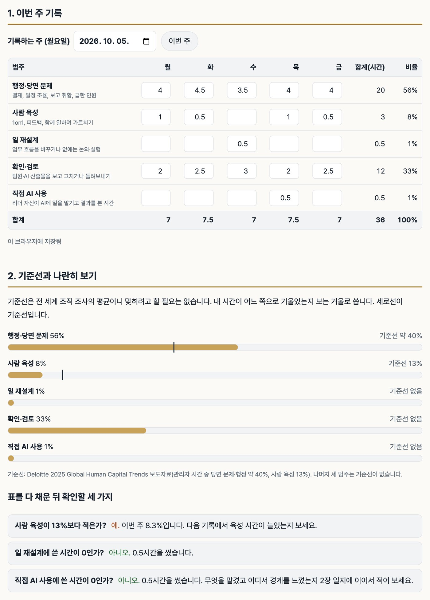
화면 A-1. 리더 시간 점검표 웹판에 가상 사례의 첫 주를 넣은
화면. 숫자는 예시 값이다.
이 팀장이 화면에서 읽은 것은 셋이다. 첫째, 사람 육성이 36시간 가운데
3시간, 8.3%다. 수요일 칸이 비어 있는 것은 그날 1on1 두 개를 “다음 주로”
미뤘기 때문이다. 14장에서 본 장면이 자기 달력에도 있었다. 둘째,
확인·검토가 33%다. 에이전트 둘이 만든 초안을 거의 혼자 보고 있었다.
13장의 확인 노동 배분표를 꺼낼 이유가 생겼다. 셋째, 직접 AI 사용이
0.5시간이다. 세 가지 확인 가운데 마지막이 무엇을 맡겼는지 7장의 일지에
이어서 적어 보라고 알려 준다.
그래서 팀장은 다음 주에 세 가지를 바꾼다. 화요일과 목요일 1on1을
달력에 먼저 고정하고, 에이전트 초안 확인을 팀원 둘과 돌아가며 맡고,
7장의 2주 일지를 시작한다. 시간 점검표는 팀에 공개하지 않는다. 다만
리더가 시간을 기록하고 있다는 사실은 팀 회의에서 말한다.
4주 뒤 11월 첫째 주에 같은 페이지를 다시 연다. 같은 브라우저라 지난
기록이 남아 있고, “지난 기록과 비교” 표에 두 주가 나란히 나온다.
표 A-11. 가상 사례의 두 주 비교 (웹판 “지난 기록과 비교” 표,
예시 값)
주 (월요일)
행정·당면 문제
사람 육성
일 재설계
확인·검토
직접 AI 사용
합계(시간)
2026-11-02
46% (-10)
14% (+6)
5% (+4)
27% (-6)
8% (+7)
37
2026-10-05
56%
8%
1%
33%
1%
36
괄호 안은 앞 기록보다 몇 퍼센트포인트 달라졌는지다. 비교 표는 비율을
정수로 반올림하므로, 첫 주 사람 육성은 확인 문구의 8.3%와 달리 8%로
나온다. 사람 육성은 기준선 13%를 조금 넘었고, 확인·검토는 팀원과 나눈
만큼 줄었다. 행정·당면 문제가 줄어든 것은 이 팀장이 주간 보고 취합을
9장의 심사 회의에 올려 시험 삼아 멈췄기 때문이다. 팀장은 CSV를 내려받아
28장의 리더 평가 기준표 1행 증거 열에 “4주 간격 두 번 기록, 육성 8% →
14%, 재설계 1% → 5%”라고 적는다. 기록이 둘이니 그 행은 “시작함”에서
“자리 잡음”으로 올라갈 근거가 생겼다.
임원이라면 같은 페이지 아래쪽의 임원판 질문 다섯을 쓴다. 관리 층을
줄이는 안건이 올라오기 전에 질문마다 답과 확인할 사람을 적고, 5번 칸에
다시 볼 날짜와 지표를 넣어 두면 된다. 이 기록도 그 브라우저에만 남으니,
회의 자료로 쓰려면 인쇄 버튼으로 한 장 뽑아 가면 된다.
2장 도구: 관리 층 조정 사전 심사서
층 조정 안건이 있을 때만 쓴다. HR이 이관표의 “현재 누가 하나” 칸을
먼저 채우고, 안건을 올리는 임원이 질문 5개에 답한다. “받는 사람” 칸에는
조직 이름 대신 팀 코드와 직책을, “받는 사람의 시간 출처” 칸에는 무엇을
줄여 시간을 낼지를 적는다.
표 A-12. 관리 층 조정 사전 심사서 (임원판: 질문 5개)
(본문 표 2-2)
번호
질문
답을 적는 곳
누가 정하나
근거 수준
①
줄이는 층이 하던 예외 판단은 누가 받나?
이관표 “예외 판단” 행
(다) 임원
추론(Garicano의 정의에서)
②
그 층이 하던 산출물 확인은 어디로 가나?
이관표 “산출물 확인” 행
(다) 임원
추론
③
줄이는 방식은 해고인가 재배치인가? 사내 재지원 기간은 얼마인가?
심사서 본문
(다) 임원, (라) 노동자 대표·법무(국내 적용은 법무 확인 필요)
근거(회사 사례, 방향만) + 제안
④
관리자 직함을 내려놓는 사람의 직급·보상·평가와 다시 관리자로 돌아올
경로는 무엇인가?
이관표 “직함을 내려놓는 사람” 행
(나) HR 설계, (다) 임원 결정, 보상 변경은 (라)
제안(효과 연구 없음)
⑤
줄인 뒤 결정이 위로 몰리는지 무엇으로 볼 것인가?
이관표 “1년 뒤 다시 볼 지표” 열
(다) 임원
근거(Wulf, AI 이전) + 추론
표 A-13. 이관표 (HR판) (본문 표 2-3)
줄이는 층의 일
현재 누가 하나 / 받는 사람·자리 (실명 대신 팀 코드로 적는다)
받는 사람의 시간 출처
누가 정하나
근거 수준
1년 뒤 다시 볼 지표
예외 판단
(다) 임원
추론
상위 결재 건수(조정 전 분기 대비)
산출물 확인
(다) 임원
추론
확인 없이 나간 건수, 확인 담당 한 사람당 건수
육성·1on1
(다) 임원, 운영은 (나) HR
제안
실무자 1on1 주기
위아래 정보 전달
(나) HR
제안
(회사가 정한다)
평가 의견 작성
(나) HR
제안
평가권자 한 사람당 평가 인원
직함을 내려놓는 사람
직급 / 보상 / 평가 기준 / 복귀 경로
해당 없음
(나) 설계, (다) 결정, 보상 변경은 (라)
제안
직함을 내려놓은 사람의 1년 유지
시범 범위
조정 대상 본부 하나에서 한 분기 먼저 쓴다
(다) 임원
제안
운영 부담
담당: HR 조직 설계 담당 / 주기: 조정 1건당 1회 / 저장: 인사 시스템의
조직 변경 기록에 첨부
(나) HR
제안
3장 도구: 관리 범위 분포 점검표
분기마다 같은 날 뽑는다. 관리자 실무 비중 열은 관리자 평가 자료로
쓰지 않는다는 문장을 표 머리에 적어 둔다. 기준선 값은 HR이 직무군별
후보를 내고 임원이 정한다.
표 A-14. 관리 범위 분포 점검표 (임원판: 결정 문장
2개) (본문 표 3-2)
결정 문장
누가 정하나
근거 수준
1년 뒤 다시 볼 지표
“관리 범위 기준선을 ○명으로 두고, 넘는 팀에는 육성 시간을 따로
배정한다.”
(다) 임원 결정, 직무군별 후보 값은 (나) HR
제안(기준선 값을 받치는 연구 없음)
기준선 초과 팀의 관리자 이직
“기준선을 넘는 팀 수를 분기마다 경영 회의 안건으로 올린다.”
(다) 임원
제안
기준선 초과 팀 수의 분기별 추이, 그 팀 주니어의 1년 유지
표 A-15. 관리 범위 분포 점검표 (HR판: 계산표) (본문
표 3-3)
팀 코드(실명 대신 팀 코드로 적는다)
직속 인원
그중 입사 2년 미만 비율
1on1 주기
관리자 실무 비중(자기 보고)
육성 시간 배정 여부
(팀마다 한 행)
집계
중앙값 / 최댓값 / 상위 10% 팀의 평균 / 기준선 초과 팀 수
기준선 초과 팀 안의 평균
기준선 초과 팀 안의 중앙값
기준선 초과 팀 안의 중앙값
배정한 팀 수
누가 정하나
기준선 값은 (다) 임원, 표 운영은 (나) HR
배정은 (다)
근거 수준
제안
제안
제안(커뮤니티 목소리가 가리키는 방향)
제안
제안
1년 뒤 다시 볼 지표
기준선 초과 팀의 관리자 이직
기준선 초과 팀 주니어의 1년 유지
시범 범위
본부 하나, 한 분기
운영 부담
담당: HR 분석 담당 / 주기: 분기 1회 / 저장: 인사 시스템 조직도
추출본과 함께 보관
4장 도구: 경계 기록표
지난 2주 동안 한 일을 10줄쯤 적고, 줄마다 맡김·함께·직접·보류와 네
요인, 두 예상 열을 채운다. 결과 열은 맡겨 본 뒤에, 고친 분류 열은 칸을
옮겼을 때만 채운다.
표 A-16. 경계 기록표
업무
분류
동기·난이도·위험·신뢰
내가 AI보다 잘하는가(예상)
확인 비용 대 만드는 비용(예상)
결과(경계 안·밖)
고친 분류
마지막 표시한 날
예: 지난달 고객 문의를 유형별로 세어 표로 만들기
맡김
하·하·중·중
아니다
확인이 싸다(원본 건수와 합계 대조)
예: 바뀐 함수에 맞춰 테스트 코드 초안 쓰기
함께
중·중·중·중
그렇다
확인이 싸다(직접 돌려 본다)
예: 다음 분기 우선순위를 정하는 메모 쓰기
직접
상·상·상·하
그렇다
확인이 더 비싸다
이 도구의 근거: Lubars·Tan의 맡김 네 요인, Vaccaro 외(사람이 더 잘할
때 조합 이득), Anthropic 조사의 면담 응답(확인 수고 대 만드는 수고) /
근거 수준: 유비 + 이 책의 제안
5장 도구: 맡김 메모
경계 기록표에서 맡김이나 함께로 표시한 일을 맡기기 직전에 쓴다. 넣지
않을 정보, 끝나는 조건, 멈출 조건의 세 칸은 비우지 않는다. 10장을 읽은
뒤에는 맨 아래 10번째 항목(불확실한 곳 표시)을 더한다.
표 A-17. 맡김 메모
항목
적을 것
예: 지난 분기 보도자료 정리
목표(왜)
이 결과를 어디에 쓰는가
다음 주 분기 회고 회의 자료의 한 쪽
출력 형식
어떤 모양으로 돌려받는가
표 하나. 열은 날짜·제목·핵심 수치·원문 위치
쓸 자료
무엇을 보고 하는가
붙인 보도자료 10건, 회의 자료 양식
넣지 않을 정보
넣으면 안 되는 것(범위는 회사 규정)
아직 공개하지 않은 내부 실적 자료
경계
건드리지 말 것
보도자료 문구를 고쳐 쓰지 말 것
끝나는 조건
무엇이 되면 끝인가
10건 모두 네 열이 채워진 표
확인 수단
무엇으로 맞는지 볼 것인가
핵심 수치 열을 원문 위치와 대조
상한
시간·횟수·비용, 되돌릴 수 없는 행동은 내 승인 뒤에만
한 번에 끝내기. 메일 발송·파일 삭제는 하지 않음
멈출 조건
모르면 멈추고 물을 것
원문에 수치가 없으면 비워 두고 알려 줄 것
불확실한 곳 표시 (10장을 읽은 뒤 더함)
확실하지 않은 부분은 그렇다고 표시해 달라는 요청
“확실하지 않은 부분은 그렇다고 표시해 달라.”
점검
맥락 없는 동료가 이 메모만 보고 따라 할 수 있는가
예 / 아니오
이 도구의 근거: Anthropic 공식 글과 문서(목표·출력 형식·도구와
출처·경계, 멈춤 조건과 확인 지점, 끝의 모습·상한·사람의 승인, 맥락 없는
동료 시험), OpenAI 가이드(기존 업무 문서, 고위험 행동의 사람 감독),
Cemri 외(끝을 알아차리지 못한 실패, 묻지 않고 가정한 실패) / 근거 수준:
공식 문서 원칙 + 이 책의 제안
6장 도구: 확인 대기열
에이전트에게 맡길 때마다 카드를 한 장 만들어 기다리는 결과 칸에
붙인다. 되돌리기 어려운 것, 남에게 넘어갈 것과 그것이 기대는 것부터 확인
중으로 옮긴다. 확인 중 칸의 카드가 정한 수(처음에는 2)를 넘으면 새로
맡기지 않는다.
표 A-18. 확인 대기열 카드
카드(맡긴 일)
맡김 메모
되돌리기 어려운가
누구에게 넘어가나
예상 확인 시간
실제 확인 시간
지금 칸
예: 경쟁 서비스 공개 자료 조사
조사 메모
아니다
기획안 초안이 기댄다
30분
기다리는 결과
예: 기획안 초안
초안 메모
아니다
팀장
20분
기다리는 결과
예: 설문 결과 표 정리
표 메모
아니다
나
10분(묶어 볼 것)
기다리는 결과
예: 참가자 안내 메일 발송 목록
발송 메모
그렇다(승인하면 발송)
참가자 전원
15분
확인 중
이 도구의 근거: OpenAI 가이드(에이전트 하나를 먼저), Anthropic 긴
작업 실험 기록(한 번에 기능 하나), Parasuraman·Manzey(여러 과업
부하에서의 안주, 유비), 개발자 커뮤니티의 병렬 운영 논쟁 / 근거 수준: 이
책의 제안
7장 도구: 리더 2주 직접 사용 일지
하루에 하나 이상, 리더 자신의 실제 업무를 맡기고 적는다. “맡기기 전
내가 적은 예상”은 반드시 맡기기 전에 적는다. 2주가 끝나면 예상과 결과가
크게 갈린 날, 경계 밖으로 적은 일의 종류, 공개한 날을 센다.
표 A-19. 리더 2주 직접 사용 일지 (본문 표 7-2)
날짜
맡긴 일
맡기기 전 내가 적은 예상(결과·걸릴 시간)
실제 결과
경계 안·밖
고친 시간
팀에 공개했나
예: 지난달 회의록 다섯 개에서 결정 사항만 모아 표로
15분 안에 쓸 만한 표가 나올 것
8장 도구: 업무 선택 질문지와 결정 기록
후보마다 일곱 질문에 0·1·2점과 근거 한 줄을 적는다. 점수보다 근거와
결정 문장이 중요하다. 질문 7에 “아무것도”가 나오면 합계와 상관없이 9장
심사표로 보낸다.
표 A-20. 업무 선택 질문지 (본문 표 8-3)
번호
질문
점수(0·1·2)
근거 한 줄
1
올해 우리 팀 우선순위 몇 번과 이어지나? (이어지는 우선순위가 없으면
0)
2
이 과업이 팀의 병목인가? 빨라지면 팀이 내놓는 결과가 늘어나나?
3
AI의 경계 안인가? (7장 일지 또는 짧은 시험의 근거)
4
틀렸을 때 비용이 감당할 만한가? (감당하기 어려우면 0)
5
사람만 아는 맥락·책임·되돌리기 어려움 가운데 걸리는 것이 적은가?
(「AX를 만들다」 4장의 세 질문)
6
이 일을 바꿀 결정권이 누구에게 있나? 팀장 권한 안이면 2, 옆
팀·임원과 함께면 1, 회사 시스템 변경이 필요하면 0
7
이 일을 하지 않으면 무엇이 멈추나?
합계
/14
결정 기록: 결정한 사람 ______ / 결정한 날 ______ /
다시 볼 날 ______ / 결정: 바꾼다 · 실험한다 · 보류 · 9장 없앨 후보로
9장 도구: 없앨 일 심사표, 결정 권한 표, 권한 세 줄
“요구한 자리” 열에는 이름 대신 자리를 적는다. “없앤 자리에 생길 새
일”을 적지 못하면 그 행은 아직 없앨 준비가 덜 된 것이다. 결정의 다섯
갈래 가운데 “자동화한다”는 맨 마지막에 고른다.
표 A-21. 없앨 일 심사표 (행별 심사) (본문 표
9-2)
일
이 일의 결과
요구한 자리
요구자는 지금도 그 결과를 쓰나
없애면 누가 무엇을 잃나
4주 시험 중단(시작일)
되돌릴 조건
없앤 자리에 생길 새 일
예: 주간 현황 보고서
팀 진행 상황 요약
상위 조직 리더
일부만(지난주와 달라진 위험 항목)
상위 리더가 회의 전 훑어볼 자료
분기 회의에서 빠진 수치를 찾는 사람이 나오면 재개
반복 문의 유형을 분류해 제품팀에 전달
표 A-22. 결정 권한 표 (본문 표 9-3)
일
요구자(자리)
결과 책임자(자리)
수행자
리더가 소집할 날짜
결정(없앤다 / 합친다 / 줄인다 / 자동화한다 / 그대로 둔다)
표 A-23. 권한 세 줄 (본문 표 9-4)
권한
우리 팀 상황
(가) 팀장이 직접 약속할 수 있는 것
예: 없앤 일의 시간은 팀 안에서 ○○에 쓴다. 평가 의견에 기여를
적는다
(나) 팀장이 위에 요구해야 하는 것
인력 조정 근거로 쓰지 않는다는 약속: 받음(기한 ○○) / 요구 중(요구한
날짜 ○○)
(다) 임원이 선언해야 효력이 있는 것
회사 단위 원칙의 유무: 있음 / 없음
10장 도구: 확인 기준 사전 작성표
위 단은 결과를 받기 전에, 아래 단은 받은 뒤에 채운다. 처음에는 남에게
넘어가거나 되돌리기 어려운 결과 두세 건에만 쓴다.
표 A-24. 확인 기준 사전 작성표
단
항목
적을 내용
받기 전
맡긴 일
한 줄로. 맡김 메모가 있으면 연결
받기 전
합격 기준 (3~5줄)
줄마다 “두 사람이 같은 판정을 내릴 수 있는가”를 통과하게
받기 전
꼭 원출처와 대조할 것
숫자·인용·날짜·고유명사 가운데 무엇을, 어느 원출처와 (원출처는 내가
정한다)
받기 전
내 예상 답 (선택)
결과를 열기 전에 한 줄
받기 전
불확실한 곳 표시를 요청했나
예 / 아니오
받은 뒤
기준별 판정
기준 1 통과·실패 … 기준 5 통과·실패
받은 뒤
처리
통과 / 반려(실패한 기준 번호) / 직접 하기
받은 뒤
기준에 없던 문제
무엇이었나 (20장 실패 카드 후보)
받은 뒤
다음 기준에 더할 줄
다음에 같은 일을 맡길 때 첫 줄로
이 도구의 근거: Kim 외(불확실성 표현), Buçinca 외(먼저 판단하기),
Anthropic 에이전트 평가 안내 글(두 사람 같은 판정), Haynes
외(체크리스트, 연관) / 근거 수준: 연구 있음(장치 효과) + 이 책의
제안(개인 양식).
11장 도구: 넘김 메모
남에게 넘기는 결과 가운데 에이전트가 만든 것에 네 줄을 붙인다. 넷째
줄에는 0이 아닌 숫자를 적고, 한 주가 끝나면 합계 줄을 채운다.
표 A-25. 넘김 메모 견본
줄
항목
견본 문장
1
이렇게 만든 이유
“지난 분기 고객 문의 기록을 유형별로 나눠 증가 원인을 찾았다.”
2
고려했다가 택하지 않은 것
“월별 추이 분석도 고려했지만 자료가 2개월 치뿐이라 택하지
않았다.”
3
확인한 것과 확인하지 않은 것
“유형 분류는 무작위 30건을 직접 대조했다. 원인 해석은 확인하지
못했다.”
4
확인에 든 시간
“약 40분”
표 A-26. 넘김 메모 주간 합계 줄
주
넘긴 건수
확인 시간 합계
내가 느낀 아낀 시간(대략)
확인이 유난히 길었던 일
이 도구의 근거: Mozannar 외(확인은 새 일), METR(체감과 측정의 차이),
국내외 개발자 커뮤니티의 공통 요구 / 근거 수준: 이 책의 제안.
12장 도구: 직접 해 보는 시간 계획표
주마다 부하가 낮은 날 하나와 내가 확인하는 일 가운데 직접 할 과제
하나를 고른다. 마지막 칸에 막힌 곳이 확인할 때 무엇을 놓치게 할 수
있는지 적는다. 배우는 중인 일을 맡길 때는 아래 두 문장을 맡김 메모에
붙인다.
표 A-27. 직접 해 보는 시간 계획표 (4주)
주
부하가 낮은 날
직접 할 과제 하나 (내가 확인하는 일 가운데)
걸린 시간
막힌 곳
그 막힌 곳이 확인할 때 놓치게 할 수 있는 것
1주
2주
3주
4주
배우는 중인 일을 맡길 때 맡김 메모에 넣을 두 문장: 1. “바로 답하지
말고, 다음 단계로 가는 힌트부터 달라.” 2. “내가 설명해 볼 테니, 틀린
곳을 질문으로 짚어 달라.”
이 도구의 근거: FAA SAFO 13002(부하가 낮을 때 수동 비행, 비유),
Bastani 외(튜터형의 안전장치), 개발자 커뮤니티의 습관(질문을 받고
요약하기) / 근거 수준: 유비 + 이 책의 제안.
13장 도구: 확인 노동 배분표와 체크리스트
배분표는 처음 2주는 팀장이, 그다음부터는 팀원이 자기 줄을 채운다.
체크리스트의 사람 항목은 매주, 체계 항목은 한 달에 한 번 본다. 체계
항목에 “아니오”가 나오면 위나 IT에 요청할 목록으로 옮긴다. 2번의 50%는
출발점으로 제안한 수치다.
표 A-28. 확인 노동 주간 배분표 (본문 표 13-2)
확인자
이번 주 확인 건수
반려 건수
확인에 쓴 시간
이번 주 직접 만든 일
다음 순환
표 A-29. 확인 노동 체크리스트 (본문 표 13-3)
구분
항목
예 / 아니오
사람
1. 확인자가 반려 사유를 적을 곳이 있나
사람
2. 확인이 한 사람에게 50% 넘게 쏠렸나
사람
3. 반려가 몇 번 있었고, 반려한 사람이 불이익을 받지 않았나
사람
4. 확인자가 AI 결과를 보기 전에 자기 판단을 적나
사람
5. 확인자에게 직접 만드는 일이 아직 있나
사람
6. 리더가 보낸 초안에 “무엇을 확인했는지” 한 줄이 붙어 있나
체계
7. 산출물마다 위험 등급이 적혀 있나
체계
8. 표본 감사의 비율과 주기가 정해져 있나
체계
9. 확인 결과에 이의를 제기할 경로가 있나
체계
10. 확인 기록을 확인한 사람이 아닌 다른 사람이 읽을 수 있나
14장 도구: 섞인 팀 1on1 대화 카드
앞면은 매번, 뒷면은 격주로 다뤄도 된다. “리더가 막아 줄 것”에 적힌
항목은 다음 1on1 첫머리에서 어떻게 됐는지 리더가 먼저 말한다.
표 A-30. 섞인 팀 1on1 대화 카드 (본문 표 14-2)
면
항목
메모
앞면(사람의 일)
이번 주에 배운 것
앞면(사람의 일)
막힌 것
앞면(사람의 일)
확인에 쓴 시간(13장 배분표)
앞면(사람의 일)
리더가 막아 줄 것
뒷면(에이전트와 일한 사람)
맡겨서 놓친 것
뒷면(에이전트와 일한 사람)
맡겨서 새로 할 수 있게 된 것
뒷면(에이전트와 일한 사람)
다음 주에 다시 손으로 해 볼 일 하나
뒷면(에이전트와 일한 사람)
팀 에이전트 목록(24장)에서 바꿀 것
15장 도구: 돕는 일 기록표
맨 위에 이번 주 상한과 맡지 않는 일 세 줄을 적고, 요청이 들어올
때마다 한 줄을 더한다. 마지막 열은 1~2주 뒤 그 사람에게 물어 그 사람의
말로 채운다.
표 A-31. 돕는 일 기록표 (주간)
맨 위
적을 것
이번 주 상한
주 ○시간
맡지 않는 일 1
계정·권한·설치 같은 IT 지원
맡지 않는 일 2
AI에 넣어도 되는 정보에 대한 판단과 보안 승인
맡지 않는 일 3
정식 교육 과정 운영
날짜
누구(역할로)
들어온 경로
처리
무엇을 나눴나
쓴 시간
그 사람의 일에서 바뀐 것(그 사람의 말로)
예: ○월 ○일
옆 팀 기획 담당
팀장 경유
받음
맡김 메모와 확인 기준(고객 정보 지움)
1시간
(2주 뒤) “주간 보고 초안을 직접 맡기고, 수치는 기준표로
대조한다”
예: ○월 ○일
다른 팀 신입
직접
팀장에게 돌림
예: ○월 ○일
다른 팀 담당
공식 통로
거절(맡지 않는 일 2)
해당 없음
예: ○월 ○일
같은 팀 동료
직접
받음
대신 함
30분
없음
이 도구의 근거: Bergeron 외·Podsakoff 외(돕는 일의 득과 실이 함께
있다), Microsoft 챔피언 헌장 안내(맡지 않는 일과 참여 기대치 항목),
Brynjolfsson 외(관행 확산의 시사적 증거, 작업논문판) / 근거 수준: 이
책의 제안
16장 도구: 아낀 시간 사용처 선언문과 4주 기록표
선언문은 두 판이다. 팀장판은 인력 조정 근거로 쓰지 않는다는 약속을
“위에서 받아 오는 질문”으로 적고 그 상태를 그대로 쓴다. 임원판은 그
약속을 기한과 함께 미리 적는 문서다. 기록표 숫자는 평가에 쓰지 않는다는
문장을 선언문에 넣는다.
표 A-32. 사용처 선언문 (팀장판) (본문 표 16-2)
문단
쓸 내용
예시
1. 팀 안에서 쓰는 곳
아낀 시간을 팀 안에서 어디에 먼저 쓸지
“아낀 시간은 먼저 확인과 학습에 쓴다. 9장 심사표의 새 일 ○○에 주
2시간을 배정한다.”
2. 위에서 받아 올 약속
팀장이 약속할 수 없는 것, 그것을 묻는 질문과 상태
“이 시간을 인력 조정 근거로 쓰지 않는다는 약속을 언제까지 받을 수
있나? (상태: 요구 중, 요구한 날 ○○)”
3. 다시 보는 날
기록표를 함께 보고 선언을 고칠 날짜
“4주 뒤 ○○일 팀 회의. 기록표 숫자는 평가에 쓰지 않는다.”
표 A-33. 사용처 선언문 (임원판) (본문 표 16-3)
문단
쓸 내용
예시
1. 쓰는 곳
조직 단위 기본 용도
“확보한 시간의 기본 용도는 재투자(확인·학습·재설계)다.”
2. 쓰지 않는 곳
인력 조정 근거로 쓰지 않는다는 약속과 기한
“○○년 ○월까지 이 수치를 인력 조정 근거로 쓰지 않는다.”
3. 팀 밖으로 가져가는 결정
기준·시점·결정하는 자리
“가격·인력·다른 팀 지원으로 돌리는 결정은 분기 경영 회의에서, 기록표
4주 이상 누적 후 내린다.”
표 A-34. 4주 기록표 (본문 표 16-4)
주
아낀 시간(자기 보고)
쓴 곳
선언한 곳에 쓰지 못한 이유
팀 밖으로 간 시간과 결정한 자리
1주
2주
3주
4주
17장 도구: 아낀 시간 사용처 결정 규정
규정은 한 번 만들어 해마다 고치고, 안건지는 분기 경영 회의의 정기
안건으로 올린다. 조항 가운데 제4조가 가장 무겁고, 노동자 대표·법무와
함께 정한다. 안건지의 시간 열은 팀 코드별 합계로만 적는다.
표 A-35. 아낀 시간 사용처 결정 규정 (임원판: 조항
5개) (본문 표 17-2)
조항
정할 내용
누가 정하나
근거 수준
1년 뒤 다시 볼 지표
제1조 결정 자리
어느 회의에서 정하나(예: 분기 경영 회의), 누가 참석하나, 노동자
대표가 참여하는가
(다) 임원. 노동자 대표 참여는 (라)(국내 적용은 법무 확인 필요)
제안(해외 노사 합의 사례가 출발점)
규정에 따라 안건이 상정된 분기 수
제2조 근거 자료
팀 기록표를 몇 주 이상 누적한 뒤 쓰나, 과업 이득 대신 볼 최종 산출
지표는 무엇인가
(나) HR·경영기획이 준비, (다) 임원이 승인
추론(과업 이득이 최종 산출로 가며 줄었다는 연구에서)
기록표 제출률
제3조 네 갈래 기준
재투자를 기본값으로 두는가, 가격·인력·다른 팀 지원으로 보낼 때의
조건은 무엇인가. 다른 팀 지원은 18장에서 다룰 규칙표를 따른다
(다) 임원
제안
재투자 시간이 만든 결과, 다른 팀 지원 시간
제4조 인력 조정 비사용 약속
어떤 수치를, 어떤 인력 조정에, 언제까지 쓰지 않는가. 기한 뒤에는
어떻게 하는가
(라) 노동자 대표·법무와 함께(국내 적용은 법무 확인 필요), 선언은
(다)
제안(대체 정보가 도입 의향을 낮춘다는 실험이 출발점, 약속의 효과는
측정되지 않음)
기한 안에 약속과 다른 결정이 있었는가
제5조 결정 결과 알리기
결정의 이유와 기간을 언제, 누구에게, 어떤 형식으로 알리나
(다) 임원이 선언, (나) HR이 운영
제안
결정을 알린 날과 결정한 날 사이의 간격
시범 범위
본부 2곳에서 2개 분기 먼저 운영한다
(다)
제안
운영 부담
담당: 경영기획·HR 공동 / 주기: 분기 1회 / 저장: 경영 회의 자료와
함께 보관
(나)
제안
표 A-36. 분기 안건지 (HR판) (본문 표 17-3)
갈래
이번 분기 시간(팀 기록표 누적, 팀 코드별 합계)
결정
이유
알린 날
1년 뒤 다시 볼 지표
재투자(확인·학습·일 재설계)
재투자 시간이 만든 결과
가격
인력
제4조 약속과의 일치
다른 팀 지원
다른 팀 지원 시간
정하지 못한 시간
다음 분기로 넘김 / 재투자로 둠
기록표 제출
제출 팀 수 / 대상 팀 수
기록표 제출률
18장 도구: 사내 인재 시장 운영 규칙표
규칙 6개를 한꺼번에 채택하지 않아도 된다. 보류한 규칙에는 사유와 다시
볼 날짜를 적어 26장 사안 목록으로 옮긴다. 한 사람의 시간 상한은 이
규칙표 셋째 행 한곳에서만 정하고, 19장의 카드와 헌장은 이 행을
따른다.
표 A-37. 사내 인재 시장 운영 규칙표 (임원판) (본문
표 18-2)
규칙
결정 문장 (예시)
채택·보류·사유
누가 정하나
근거 수준
1년 뒤 다시 볼 지표
1. 공개 게시 우선
“사내 인재 시장의 프로젝트와 빈자리는 공개 게시를 기본으로 하고,
지명 배치는 사유를 적어 HR에 남긴다.”
(다) 임원 결정, (나) HR 운영
근거(Keller 2018, AI 이전). 비율은 제안
공개 게시를 거친 이동 비율
2. 보낸 관리자 기록
“팀원을 보낸 관리자의 평가 자료에 받은 팀의 결과 기록을, 자리를 옮긴
경우 옮긴 뒤 1년의 평가 결과를 붙인다.”
(다) 임원 결정, (나) HR 운영
추론(Minni, Keller·Dlugos), 제도는 제안
보낸 관리자 기록이 붙은 평가 건수
3. 한 사람 시간 상한 (기준 행)
“한 사람이 시장에 내놓는 시간은 주 ○시간(또는 근무 시간의 ○%)을 넘지
않는다. 넘을 때는 보낸 팀장과 받는 팀장이 함께 승인하고 HR이
기록한다.”
(다) 상한 수준 결정, (나) 기록
제안(상한 수준의 근거 없음)
상한 초과 건수, 초과가 몰린 사람 수
4. 불참 불이익 없음
“시장에 참여하지 않은 것을 평가와 배치에서 불리하게 쓰지
않는다.”
(다) 임원 결정
제안
참여한 사람과 참여하지 않은 사람의 평가 분포
5. 팀 성과만으로 관리자를 평가하지 않음
“관리자 평가에는 팀 성과와 함께 보낸 관리자 기록을 본다.”
(다) 임원 결정
근거(Haegele, 붙잡아 둘 유인), 규칙의 효과는 추론
팀 성과 외 항목이 들어간 관리자 평가 비율
6. 공개 지표의 정의 공개
“사내외에 내는 시장 지표에는 무엇을 언제 어떻게 셌는지 함께
적는다.”
(나) HR, 외부 공개는 (다) 임원
근거(회사 3곳 공개 지표 관찰), 규칙은 제안
정의를 함께 낸 지표 비율
표 A-38. 운영 지표 정의표와 도운 시간 기록 (HR판)
(본문 표 18-3)
항목
정의
세지 않는 것
주기
등록률
시장에 등록한 직원 ÷ 대상 직원
등록을 이동으로 세지 않는다
월 1회
이동률
실제로 다른 팀의 일을 맡은 직원 ÷ 대상 직원
신청만 한 경우
월 1회
공개 게시 이동 비율
공개 게시를 거친 배정 ÷ 전체 배정
게시 기간이 형식에 그친 경우는 따로 표시
월 1회
프로젝트 시간 (배정)
배정 당시 약속한 시간
실제 투입으로 보고하지 않는다
월 1회
프로젝트 시간 (실제 투입)
받은 팀이 확인한 실제 투입 시간
배정 시간으로 대신 채우지 않는다
월 1회
도운 시간 기록
사람별로 시장에 내놓은 시간. 셋째 규칙의 상한 관리에만 쓴다
평가 자료에 붙이지 않는다. 저장은 인재 시장 시스템, 평가 시스템과
연결하지 않는다
월 1회
표 A-39. 공급사 수치 검토 질문과 게이밍 점검 (HR판)
(본문 표 18-4)
구분
질문
답을 받지 못하면
공급사 수치 1
그 시간은 배정 시간인가, 실제 투입 시간인가, 아꼈다고 추정한
시간인가?
내부 보고서에 옮기지 않는다
공급사 수치 2
누가 어떤 자료로 셌나? 금액으로 바꿨다면 시간당 얼마로
계산했나?
내부 보고서에 옮기지 않는다
공급사 수치 3
무엇과 비교했나(도입 전, 미도입 부서, 외부 채용)?
비교 없는 수치로 표시한다
공급사 수치 4
어느 회사의 몇 명을 어느 기간에 셌나? 스스로 참여한 사람만
셌나?
표본 미공개로 표시한다
게이밍 점검 1
이동률을 올리려 짧고 형식적인 이동이 늘고 있나?
이동 기간 분포를 함께 본다
게이밍 점검 2
공개 게시가 지명 뒤의 형식 게시로 바뀌고 있나?
게시 기간과 지원자 수 분포를 함께 본다
표 A-40. 공통 행 (본문 표 18-5)
항목
내용
근거 수준
1년 뒤 다시 볼 지표
공개 게시를 거친 이동 비율, 보낸 관리자 기록이 붙은 평가 건수, 상한
초과 건수
제안
시범 범위
직군 하나, 두 분기
제안
운영 부담
HR 인재 담당, 월 1회 지표 집계, 인재 시장 시스템과 인사 시스템에
저장
제안
19장 도구: 도운 일 결과 기록 카드와 챔피언 역할 헌장
카드는 받은 팀이 일이 끝난 달에 쓰고, 시간 칸은 두지 않는다. 카드를
붙일 자리를 정할 때 카드 수를 점수로 바꾸지 않는다는 원칙도 함께
정한다.
표 A-41. 결정 문장 (임원판) (본문 표 19-2)
결정
결정 문장 (예시)
누가 정하나
근거 수준
1년 뒤 다시 볼 지표
카드를 붙일 자리
“도운 일 결과 기록 카드는 평가 자료의 ○○ 항목에 붙이고, 평가자는
카드 수를 점수로 바꾸지 않는다.”
(다) 임원 결정, (나) HR 운영
근거(Wasko·Faraj, 평판과 기여). 카드 제도는 제안
카드가 붙은 평가 건수, 카드 분포
챔피언을 공식 역할로 둘지
“AI 챔피언을 공식 역할로 두고, 헌장 없이 지정하지 않는다.” (또는
“두지 않는다.”)
(다) 임원 결정
벤더 안내(Microsoft 헌장 문서), 역할의 효과 근거 없음
챔피언 수, 교대율
챔피언의 평가 반영
“챔피언의 평가는 받은 팀이 쓴 카드로 하고, 활동 횟수는 세지
않는다.”
(다) 임원 결정, (나) HR 운영
제안
챔피언 평가에 붙은 카드 건수
표 A-42. 도운 일 결과 기록 카드 (HR판) (본문 표
19-3)
항목
쓰는 사람
적는 법
요청한 팀
받은 팀
실명 대신 팀 코드로 적는다
도운 사람
받은 팀
평가 시스템의 대상자 지정으로 연결한다
받은 것
받은 팀
무엇을 받았는지 한 문장
그 결과 바뀐 것
받은 팀
받은 팀의 일에서 바뀐 결과를 주어로 쓴다
다시 요청할지
받은 팀
예 / 아니오 / 조건부, 이유 한 줄
받은 팀 확인자
받은 팀
그 결과를 책임지는 사람
(시간 칸 없음)
시간은 18장의 도운 시간 기록에만 적는다
표 A-43. 카드 점검 질문 (HR판) (본문 표 19-4)
질문
보는 자료
걸리면
특정한 팀 한 쌍이 서로에게만 카드를 써 주고 있는가?
팀 쌍별 카드 분포
두 팀의 팀장과 카드 내용을 함께 확인한다
카드가 평가 직전, 분기 말에 몰리는가?
분기 시점별 카드 분포
카드는 일이 끝난 달에 쓰도록 안내한다
확인자가 요청한 팀의 결과 책임자인가?
확인자 직무
확인자를 바꿔 다시 받는다
표 A-44. 챔피언 역할 헌장 항목 (HR판) (본문 표
19-5)
항목
적을 내용
근거 수준
시간 약속
18장 규칙표 셋째 행의 상한을 따른다. 모임 참여 주기를 적는다
벤더 안내(항목), 수준은 제안
맡지 않는 일
IT 지원 창구, 보안·법무 판단, 공식 교육 과정 운영, 도입 실적
집계
벤더 안내(대신하지 않는 팀), 목록은 제안
임기와 교대
임기, 다음 사람에게 넘기는 시점
제안
평가 반영
받은 팀이 쓴 카드로 한다. 활동 횟수는 세지 않는다
제안
그만둘 때 인계
만든 자료와 운영하던 모임을 넘길 사람
제안
표 A-45. 공통 행 (본문 표 19-6)
항목
내용
근거 수준
1년 뒤 다시 볼 지표
카드 분포(팀 쌍별, 분기 시점별), 카드가 붙은 평가 건수, 챔피언
교대율
제안
시범 범위
본부 하나, 한 평가 주기
제안
운영 부담
HR 평가 담당, 평가 주기마다 집계, 평가 시스템에 첨부해 저장
제안
20장 도구: 실패 카드
경계 기록표의 결과 열과 작성표의 “기준에 없던 문제” 칸에서 경계 밖
결과 한 건을 골라 옮긴다. 실패가 없던 주에는 쓰지 않는다. 입력 칸에는
민감 정보를 지우고 적는다.
표 A-46. 실패 카드
항목
적을 내용
예시
제목 한 줄
무엇이 어떻게 틀렸나
휴가 규정 요약에서 이월 조건 누락
입력 (민감 정보 제거)
맡긴 내용과 넣은 자료
규정 문서의 휴가 조항 부분(사내 고유 정보는 지움)
기대한 결과
맞았다면 나왔어야 할 것
이월 조건 두 가지가 들어간 요약
실제 결과
나온 것, 틀린 곳
이월 조건이 빠진 요약
통과·실패 기준
두 사람이 같은 판정을 내릴 수 있게
이월 조건 두 가지가 모두 요약에 있으면 통과
날짜와 도구 판
언제, 어떤 도구·판에서
(날짜) / (도구 이름과 표시된 판)
출처
경계 기록표 몇째 줄, 또는 작성표
경계 기록표 7번째 줄
보낸 곳·보낸 날·반영 여부
보낼 곳이 없으면 “기록표 고침”
(회사 에이전트 팀 / 날짜 / 반영 확인 전)
이 도구의 근거: Anthropic 에이전트 평가 안내 글(평가셋을 만드는 팀
대상: 실제 실패에서 과제 뽑기, 두 사람 같은 판정, 기록 읽기) / 근거
수준: 이 책의 제안.
21장 도구: 공개 문구 견본
넘길 결과가 가는 자리에 맞는 견본을 꺼내 세 칸을 채우고 2줄 안으로
줄인다. “확인하지 않은 것” 칸은 비우지 않는다.
“자료 요약과 도표 초안은 AI로 만들었다. 도표 숫자는 원자료와
대조했고, 요약에서 빠진 자료가 있는지는 확인하지 못했다.”
동료에게 넘길 때 (넘김 메모 셋째 줄에 넣은 형태)
초안과 표 정리
표의 합계와 날짜를 원본과 대조
부서 이름 표기
“확인한 것과 확인하지 않은 것: 초안과 표 정리는 AI가 했다. 표의
합계와 날짜는 원본과 대조했다. 부서 이름 표기는 확인하지 않았다.”
이 도구의 근거: Schilke·Reimann(스스로 밝힐 때가 제3자에게 들킬
때보다 덜 깎인다) / 근거 수준: 이 책의 제안(확인 내역을 함께 밝히는 것이
평가 비용을 줄이는지는 검증되지 않았다)
22장 도구: 평가 항목 다시 쓰기 표
AI와 관련된 평가 항목을 모두 옮겨 적고, 투입형이면 결과형 문장으로
다시 쓴 뒤 근거 기록을 붙인다. 측정할 수 없으면 「측정하지 못함」과
사유를 적는다. 마지막 열의 “회사 제도” 항목은 위에 가져갈 목록이
된다.
표 A-48. 평가 항목 다시 쓰기 표 (예시) (본문 표
22-2)
현재 항목
투입형인가 결과형인가
다시 쓴 문장
근거 기록
측정하지 못하면 그 사유
이 항목을 바꿀 권한
AI 도구를 주 3회 이상 사용한다
투입형
맡은 업무 가운데 하나 이상의 흐름을 AI와 함께 다시 짜고 그 결과를
보여 준다
9장 없앨 일 심사표, 업무 결과 기록
재설계 효과가 분기 안에 드러나지 않으면 「측정하지 못함」과 예상
시점
회사 제도 (위에 요구)
팀 AI 사용량 순위 상위
투입형
팀이 맡긴 산출물의 품질을 지켰다(확인·반려와 그 사유)
13장 확인 노동 배분표
반려가 막은 문제의 크기는 측정하지 못함, 사유 적기
팀장 의견
AI 교육 과정 이수
투입형
배운 방식을 팀원이 따라 쓸 수 있게 나눴다
공유 기록, 받은 팀원의 의견
효과가 늦게 나타나면 「측정하지 못함」
팀장 의견 (이수 의무 자체는 회사 제도)
23장 도구: 평가 항목 교체 선언문
뺄 것, 넣을 것, 쓰지 않을 데이터, 보상 연결 4열을 한 문서에 적는 것이
요점이다. 새 항목은 첫 주기에 진단만으로 기록하고, 효력일 전에 평가
주기가 시작됐다면 그 주기에는 진단만을 적용한다.
표 A-49. 평가 항목 교체 선언문 (임원판) (본문 표
23-3)
열
적을 내용
결정 문장 (예시)
누가 정하나
근거 수준
1년 뒤 다시 볼 지표
뺄 것
사용량 지표(토큰, 세션, 호출 수, 사용률)
“사용량 지표는 평가 자료에서 빼고 진단 보고로 옮긴다.”
(다) 임원 결정
근거(게이밍·다중 과업 문헌, AI 이전), AI 적용은 추론
진단 보고 사용률 추이
넣을 것
결과, 확인 품질, 재설계 기여, 도운 일(19장 카드), 측정하지 못한
항목의 표기
“평가는 결과, 확인 품질, 재설계 기여, 도운 일로 하고, 측정하지 못한
항목은 사유와 함께 적는다. 재설계 기여는 17장 규정 제4조가 선언된 뒤
적용한다.”
(다) 임원 결정, (나) HR 양식
제안
새 항목 분포, 측정하지 못함 표기 비율
쓰지 않을 데이터
사용량, AI 사용 공개 여부, 에이전트 감사 기록(25장 규정에 따른다),
18장의 도운 시간 기록
“위 데이터는 평가와 보상 자료에 쓰지 않는다.”
(다) 임원 선언. 감사 기록·모니터링 데이터는 (라) 노동자
대표·법무(국내 적용은 법무 확인 필요)
근거(평가자 편향 실험), 정책은 제안
평가 이의 건수
보상에 잇는가
새 항목마다 잇는다 / 진단만 / 보류
“새 항목은 첫 주기에 진단만으로 기록하고, 다음 주기부터 ○○ 항목을
보상 산식에 잇는다.”
(다) 임원 결정, (나) HR 보상 담당 설계
제안
보상 연결 항목의 분포
맨 아래 줄
임원 평가에도 같은 기준
“이 기준은 임원 평가에도 적용한다.”
(다) 임원 선언
제안
임원 평가표의 항목 구성
표 A-50. 새 항목마다 붙이는 게이밍 점검 질문 (HR판)
(본문 표 23-4)
질문
보는 자료
근거
측정하기 쉬운 쪽으로 노력이 빠지고 있는가?
항목별 기록량과 확인·도운 일 기록의 변화
Holmström·Milgrom(통상 요약), 적용은 추론
분포를 보면 공식 수치와 체감이 갈리는가?
항목 점수 분포, 직원 설문, 평가 이의
Bevan·Hood
서로 방해할 유인이 생기는가?
상대 평가 여부, 카드 분포, 협업 요청 거절
Berger 외(실험실)
평가자가 AI 사용 여부를 알고 판단하는가?
평가 자료에 사용 여부 표시가 남아 있는지
평가자 편향 실험, 적용은 추론
표 A-51. AI 사용 공개 정책 문구 (HR판, 예시) (본문
표 23-5)
조항
문구 예시
평가 항목
“AI 사용 여부와 사용 정도는 평가 항목으로 쓰지 않는다.”
공개 형식
“AI에 맡긴 일은 무엇을 맡겼고 무엇을 확인했는지 업무 기록에
적는다.”
평가 자료 분리
“평가 자료에는 확인한 내용과 결과만 옮기고, 사용 여부 표시는 옮기지
않는다.”
적용 범위
“이 정책은 임원 보고서에도 같은 형식으로 적용한다.”
표 A-52. 공통 행 (본문 표 23-6)
항목
내용
근거 수준
1년 뒤 다시 볼 지표
새 항목 분포, 진단 보고 사용률 추이, 평가 이의 건수, 보상 연결
항목의 분포
제안
시범 범위
한 평가 주기는 진단만으로 병행, 다음 주기부터 적용
제안
운영 부담
HR 평가·보상 담당, 평가 주기마다 점검, 평가 시스템과 보상 시스템에
저장
제안
24장 도구: IT·플랫폼에 보낼 질문 목록과 팀 에이전트 목록표
질문은 창구 도입 회의 전에 미리 보낸다. 목록표는 회사 등록부가 없어도
쓸 수 있고, 처음 채울 때는 벌주지 않는다고 먼저 말해 둔다. 인계자와 내릴
조건 열을 비워 두지 않는다.
우리 팀이 창구로 맡긴 일을 에이전트는 누구의 권한으로 처리하는가. 그
권한에 상한이 있는가.
고객 데이터·결재처럼 사람이 반드시 확인해야 하는 행동을 팀이 지정할
수 있는가.
창구나 게이트웨이가 멈추면 어떻게 되는가. 멈춘 시간 동안 팀은 어떻게
일하라는 안내가 있는가.
우리 팀의 사용 방식이면 한 달 비용은 어느 정도인가. 사용량이 늘면
예산은 누가 정하는가.
감사 기록에는 무엇이 기록되고, 팀 리더가 볼 수 있는가. 그 기록을
개인 평가에 쓰는가.
팀이 만든 에이전트를 회사 등록부에 올리는 절차가 있는가. 만든 사람이
떠날 때 인계는 어떻게 처리되는가.
창구는 팀원의 화면에서 일을 돕는가, 뒤쪽에서 일을 대신 처리하는가.
어떤 업무가 뒤쪽으로 옮겨질 예정인가.
어떤 에이전트가 문제를 일으켰을 때 누가 멈출 수 있는가. 팀 리더도
멈출 수 있는가.
표 A-53. 팀 에이전트 목록표 (본문 표 24-2)
에이전트
하는 일
만든 사람·소유자
쓰는 권한
인계자
합격 기준
최근 틀린 사례
내릴 조건
(예) 주간 고객 문의 요약
문의 내역을 묶어 월요일 아침 팀 채널에 올림
담당자 A·팀장
문의 시스템 읽기 전용
담당자 B
상위 다섯 건에 누락 없음
같은 고객 문의를 두 건으로 셈
2주 연속 아무도 읽지 않으면 내림
25장 도구: 조직 에이전트 운영 규정 한 장
목록을 모으는 첫 달에는 미등록을 문제 삼지 않는다고 공지한다. 멈출
권한자는 소유자와 따로 적고, 멈추는 문턱은 낮게, 다시 켜는 문턱은 높게
둔다.
표 A-54. 임원판: 조직 에이전트 결정 문장 (본문 표
25-2)
결정 문장
누가 정하나
근거 수준
채택·보류와 이유
등록부에 올리지 않은 에이전트는 회사 게시를 허용하지 않는다
(다) 임원, 운영은 IT
제안(플랫폼의 승인 경로는 1차 문서로 확인)
소유자 없는 에이전트는 ○일 안에 인계하거나 내린다. 소유자가 부서를
옮길 때는 옮기기 전에 인계자를 정한다
(다) 임원
제안
감사 기록은 개인 평가와 사용량 순위에 쓰지 않는다
(다) 임원, 예외 절차는 (라) 노동자 대표·법무
제안(해외 제도 사례: KP 부속서, 독일 사업장조직법. 국내 적용은 법무
확인 필요)
쓰는 팀의 기여는 19장 카드로 평가에 잇고, 회사 에이전트의 카드는
플랫폼 운영 조직이 쓴다
(다) 임원
제안(기여 조건은 Wasko·Faraj 2005, 반영 효과 연구 없음)
표 A-55. HR·IT판: 등록부 필드 정의 (본문 표
25-3)
필드
적는 것
누가 적나
최소 규칙 범주
근거 수준
이름·하는 일
에이전트 이름과 한 줄 설명
소유자
식별자
제안
소유자
운영 책임자의 팀 코드
소유자, 승인 시 IT 확인
식별자
제안(플랫폼 소유자 칸 활용)
인계자
소유자가 떠나거나 옮길 때 이어받을 사람의 팀 코드
소유자
식별자
제안
멈출 권한자
이상이 보이면 즉시 멈출 수 있는 사람과 멈춘 뒤 알릴 곳
소유자와 IT
실시간 감시
제안
권한 범위
읽기만 하는지, 보내기·결재·변경까지 하는지
소유자, IT 확인
식별자
제안
되돌릴 수 있는지
틀렸을 때 사람이 바로 되돌릴 수 있는지(등록 절차의 무게를
정한다)
IT
식별자
제안
기여자 기록
지시문·평가 세트·오류 보고를 보탠 팀 코드와 반영 여부
플랫폼 운영 조직
활동 기록
제안
실패 사례 접수 건
접수 건수와 반영 건수
플랫폼 운영 조직
활동 기록
제안
다시 볼 날
소유자와 인계자를 다시 확인할 날
IT
식별자
제안
표 A-56. HR판: 감사 기록 사용 범위표 (본문 표
25-4)
항목
규정
누가 정하나
근거 수준
볼 수 있는 사람
소유자, 멈출 권한자, IT 보안 담당(직책으로 적는다)
(다) 임원, 운영은 (나) HR·IT
제안
사유
에이전트 오류 원인 분석, 보안 사고 조사, 법적 요청. 열람마다 사유
기록
(나) HR·IT
제안
쓰지 않을 곳
개인 평가, 사용량 순위, 승진 심사 자료
(다) 임원
제안(해외 제도 사례가 가장 가까운 근거)
예외 절차
특정 개인의 기록을 봐야 할 때 노동자 대표와 법무가 함께 검토
(라) 노동자 대표·법무
제안(국내 적용은 법무 확인 필요)
보관 기간
법무 확인 뒤 정한다(EU 고위험 배치자 기준 최소 6개월은 참고
사례)
(라) 법무
근거(EU 제26조 6항, 해외) + 제안
표 A-57. 운영 항목 (본문 표 25-5)
항목
내용
근거 수준
누가 정하나
결정 문장은 (다) 임원, 필드와 점검은 (나) HR·IT, 감사 기록 예외
절차와 보관 기간은 (라) 노동자 대표·법무
제안
1년 뒤 다시 볼 지표
소유자 없는 에이전트 수, 인계 소요 일수, 기여 기록 건수, 감사 기록
열람 사유 건수
제안
시범 범위
회사 게시 에이전트부터(만든 사람 공유 단계는 다음 차례)
제안
운영 부담
IT 플랫폼 담당과 HR 공동, 월 1회 점검, 저장 위치는 등록부
제안
26장 도구: 임원 의사결정 사안 목록
사안 목록은 한 곳에 두고, 경영 회의 안건과 결재 문서 양식에 첨부
칸으로 넣는다. Type 2 결정은 결정 문장과 다시 볼 날짜만 채워도 올라가게
하고, Type 1 결정에만 전체 항목을 요구한다. 예시 행의 값은 모두 예시
값이다.
표 A-58. 임원판: 사안 목록 한 행의 항목 (본문 표
26-2)
항목
적는 것
원형과의 대응
근거 수준
결정 제목
짧은 이름
Nygard의 제목
근거(원형)
맥락
왜 지금 이 결정을 하는지, 나온 반대 의견
Nygard의 맥락
근거(원형) + 제안(반대 의견 칸)
결정 문장
“우리는 ~한다” 한 문장
Nygard의 결정
근거(원형)
Type 1/2
되돌리기 어려운지, 되돌릴 수 있는지
Bezos 2015 서한
근거(원칙 문서) + 제안(분류는 회사가 판단)
결정 당시 근거와 근거 수준
기댄 자료와 근거·추론·제안 표시
이 책의 규약
제안
결정 당시 예상
1년 뒤 지표가 어디쯤일지 숫자로, 실패한다면 가장 흔한 이유 한
줄
Klein의 프리모템을 짧게
추론(결과 편향 실험에서) + 제안
다시 볼 날짜·자리·여는 사람·공개할 곳
날짜, 회의 이름, 소집할 사람(직책), 결과를 알릴 곳
이 책의 제안
제안(날짜만으로는 부족했다는 근거는 영국 RPC)
다시 볼 지표
해당 장 도구의 「1년 뒤 다시 볼 지표」
임원 자리의 다른 여덟 장(2·3·17·18·19·23·25·29장) 도구
제안
상태
제안·채택·폐기·대체됨. 대체되면 옛 행을 지우지 않는다
Nygard의 상태
근거(원형)
표 A-59. HR판: 1년 뒤 재검토 회의 진행표 (본문 표
26-3)
순서
할 일
물을 질문
남길 것
1
예상과 결과 대조
결정 당시 예상한 숫자와 지금 숫자는 얼마나 다른가
차이와 그 크기
2
결과 편향 점검
결과가 나빴다면, 결정 과정도 나빴다고 말할 근거가 결정 당시 기록에
있나? 결과가 좋았다면, 과정도 좋았다고 말할 근거가 있나?
근거가 있는 판단과 결과만 보고 한 판단의 구분
3
실패 이유 한 줄 확인
결정 당시 적은 가장 흔한 실패 이유가 실제로 일어났나
일어남·일어나지 않음·다른 이유
4
상태 결정
유지할까, 고칠까, 다른 결정으로 대체할까
상태 변경. 대체되면 새 행을 만들고 옛 행은 대체됨으로 남김
5
다음 재검토와 공개
다음에 언제, 누가 열고, 어디에 알리나
다음 재검토 날짜, 공개한 날과 곳
표 A-60. 사안 목록 예시 8행(예시 값) (본문 표
26-4)
장
결정 문장(일반형)
Type
결정 당시 예상(예시 값)
다시 볼 날짜·자리
여는 사람
공개할 곳
상태
2
우리는 ○본부의 관리 층을 ○단계 줄이고, 이관표의 5가지 일을 받을
사람을 정한 뒤 시행한다
1
1년 뒤 상위 결재 건수 ○% 이내 증가, 직함을 내려놓은 사람 ○%
유지
시행 1년 뒤 경영 회의
경영기획 담당
해당 본부 공지
제안
3
우리는 관리 범위 기준선을 ○명으로 두고, 넘는 팀에 육성 시간을 따로
배정한다
2
기준선 초과 팀 ○곳 이하
분기 경영 회의, 연 1회 재검토
HR 분석 담당
관리자 공지
제안
17
우리는 아낀 시간의 사용처를 분기 경영 회의에서 정하고, 인력 조정
근거로 쓰지 않는다는 약속을 ○년까지 지킨다
1(제4조)
기록표 제출률 ○% 이상, 다른 팀 지원 시간 ○시간
분기 경영 회의, 약속 기한
경영기획·HR 공동
전사 공지
제안
18
우리는 사내 인재 시장의 규칙 6개를 채택하고 한 사람의 시간 상한을
○%로 둔다
2
공개 게시를 거친 이동 ○% 이상, 상한 초과 ○건 이하
연 1회 재검토
HR 인재 담당
인재 시장 게시판
제안
19
우리는 도운 일 결과 기록 카드를 평가 자료의 ○항목에 붙인다
2
카드가 특정 팀 쌍에 ○% 이상 몰리지 않음
평가 주기 종료 뒤
HR 평가 담당
평가 안내 문서
제안
23
우리는 평가에서 사용량 지표를 빼고 교체 선언문의 넣을 항목을 쓰며,
보상 연결은 ○로 정한다
2(보상 연결은 1에 가깝다)
평가 이의 건수 ○건 이하
평가·보상 주기 종료 뒤
HR 평가·보상 담당
평가 안내 문서
제안
29
우리는 첫 관리자 승진 심사에 위원회용 평가 기준표를 쓴다
2(승진 자체는 되돌리기 어렵다)
새 기준으로 올린 리더 팀의 1년 이직 ○% 이하
승진 심사 1년 뒤
HR 승진 담당
승진 안내 문서
제안
25
우리는 회사에 게시하는 에이전트마다 소유자·인계자·멈출 사람·기여자를
적고, 감사 기록을 개인 평가에 쓰지 않는다
2(감사 기록 선언은 1에 가깝다)
소유자 없는 에이전트 ○개 이하
월 1회 점검, 연 1회 재검토
IT 플랫폼 담당
등록부 첫 화면
제안
표 A-61. 운영 항목 (본문 표 26-5)
항목
내용
근거 수준
누가 정하나
사안 목록을 쓰는 결정과 결재 경로 반영은 (다) 임원, 양식과 재검토
회의 운영은 (나) HR·경영기획. 17장 제4조처럼 인력 조정과 이어지는 행의
공개 범위는 (라) 노동자 대표·법무와 함께 정한다(국내 적용은 법무 확인
필요)
제안
1년 뒤 다시 볼 지표
재검토 날짜를 지킨 행의 비율
제안
시범 범위
이번 분기 경영 회의에서 내리는 결정부터
제안
운영 부담
경영기획 담당, 분기 1회 갱신·연 1회 재검토, 결재 시스템 첨부
제안
27장 도구: 첫 리더 역할 체크리스트
앞면은 역할을 맡기 전에, 뒷면은 4주가 지난 뒤에 채운다. 뒷면의 증거
칸은 이미 있는 기록에서 옮긴다.
표 A-62. 첫 리더 역할 체크리스트
면
항목
적을 것
옮겨 올 기록
앞면
고른 역할
확인 순환 운영 / 없앨 일 심사 회의 진행 / 신입의 메모·기준 봐 주기 /
실패 카드 모으기 / 옆 사람의 일 함께 보기 가운데 하나
기록이 가장 많이 쌓인 장의 도구
앞면
팀장에게 보낼 요청 문장
역할, 기간, 팀에 알려 달라는 한 문장 부탁, 끝나면 남길 것
앞면
끝나는 조건
기간(예: 4주), 다음 사람(정했으면 이름 대신 역할로)
5장 맡김 메모의 끝나는 조건
앞면
맡지 않는 것
동료의 평가·보상 판단, 반려 기록의 평가 자료 사용
앞면
주간 시간 상한
주 ○시간
15장 기록표 맨 위
뒷면
반려한 건과 기준
건마다 기준의 몇째 줄이었나
10장 확인 기준 사전 작성표
뒷면
동료와 함께 본 시간
주별 합계
15장 기록표의 쓴 시간 열
뒷면
그 사람의 일에서 바뀐 것
그 사람의 말로, 없으면 없다고
15장 기록표의 마지막 열
뒷면
내 일과의 균형
상한을 넘은 주와 이유
15장 기록표의 주간 합계
뒷면
반발
무엇이었고 어떻게 했나
뒷면
모은 실패 카드
장수, 보낸 곳
20장 실패 카드
이 도구의 근거: Benson 외(협업 경험과 관리 성과의 관계, 각주의 게이밍
경고), Minni(1on1 시간의 비교), 13장의 확인 순환과, 아직 리더가 아닌
실무자에게 팀의 확인 순환이나 심사 회의에 먼저 손을 들어 보라는 이 책의
제안 / 근거 수준: 유비 + 이 책의 제안
28장 도구: 리더 평가 기준표
증거 열에 기록이 없으면 그 행은 “시작함”보다 위로 매기지 않는다. 열
행을 합산 점수로 만들지 않는다. 처음 4주는 자기 점검판으로만 쓰고,
리더의 리더판을 승진 심사에 쓸지는 임원이 따로 정한다.
표 A-63. 리더 평가 기준표 (자기 점검판·리더의 리더판
공용) (본문 표 28-2)
행
시작함
자리 잡음
넘겨줄 수 있음
증거(그 장의 도구 기록)
1. 시간 점검
한 주 시간을 한 번 기록했다
4주마다 기록하고 육성·재설계 시간을 늘렸다
후임 후보도 자기 시간을 기록한다
1장 리더 시간 점검표
2. 직접 써 보고 공개
2주 일지를 썼다
일지의 경계 안·밖을 팀에 공개했다
팀원이 자기 일지를 공개한다
7장 2주 사용 일지
3. 업무 선택
질문지로 바꿀 일을 하나 골랐다
결정 기록을 적고 다시 볼 날에 다시 봤다
후임 후보가 질문지로 결정을 이끈다
8장 업무 선택 질문지·결정 기록
4. 일 없애기
없앨 후보를 심사표에 올렸다
4주 시험 중단을 하고 결과를 기록했다
후임 후보가 심사 회의를 진행한다
9장 없앨 일 심사표
5. 아낀 시간 기록표
사용처를 선언했다
4주 기록표로 선언이 지켜지는지 봤다
팀원이 기록표를 직접 쓰고 함께 읽는다
16장 선언문·기록표
6. 확인 노동 배분
배분표를 만들었다
쏠림과 반려를 매주 살폈다
후임 후보가 확인 순환을 이끈다
13장 확인 노동 배분표·체크리스트
7. 섞인 팀 1on1
카드로 1on1을 한 번 했다
매주 카드 앞뒷면을 다 다뤘다
팀원끼리도 카드로 서로 묻는다
14장 섞인 팀 1on1 대화 카드
8. 결과 평가
평가 항목 하나를 다시 썼다
팀 평가 의견에 근거 기록을 붙였다
회사 제도 변경을 요구하고 그 결과를 기록했다
22장 평가 항목 다시 쓰기 표
9. 창구 질문과 에이전트 목록
질문 목록을 IT에 보냈다
팀 에이전트 목록표를 만들고 인계자를 채웠다
목록표가 리더 없이도 갱신된다
24장 질문 목록·목록표
10. 사람을 기른 증거
후임 후보를 정하고 연습 기회를 하나 줬다
확인 순환·심사 진행을 맡긴 기록과 피드백이 있다
다른 자리로 옮겨 간 팀원이 있고, 반려한 팀원이 불이익 없이 다음 일을
맡았다
맡긴 횟수와 결과, 옮겨 간 팀원, 아쉬운 이직, 상향 설문의 코칭·경력
개발 점수(쓰는 경우)
29장 도구: 리더 승진 심사 기준표
임원판 결정 문장 가운데 첫째를 채택해야 평가 기준표가 심사에 쓰인다.
증거 없음에는 사유를 함께 적고, 현재 실적 행은 심사일에 맨 마지막에
본다.
표 A-64. 임원판: 승진 기준 결정 문장 (본문 표
29-2)
결정 문장
누가 정하나
근거 수준
채택·보류와 이유
리더 승진 기준에 「사람을 기른 증거」와 협업·위임 경험을 넣는다
(다) 임원
제안(현재 실적 승진의 한계는 28장 회상, 반영 효과 연구 없음)
상향 설문의 원 응답은 인사 평가·승진 심사 자료와 분리해 보관하고,
위원회는 후보가 바꾼 것 한 줄만 본다
(다) 임원, 보관은 (나) HR
제안(가장 가까운 사례는 Google, Garvin 2013. 비교 연구 없음)
관리자를 팀 성과만으로 평가하지 않는다(18장 규칙표 다섯째 행을
따른다)
(다) 임원
제안
표 A-65. HR판: 위원회용 평가 기준표 (본문 표
29-3)
행
증거 자료(어디서 오나)
증거 없음 표기
근거 수준
사람을 기른 증거
후임 후보로 지목한 사람과 그 사람이 해낸 일, 팀원의 성장 기록
“증거 없음”과 사유(팀 신설, 팀원 없음 등)
제안
보낸 사람의 1년 성과
18장 보낸 관리자 기록
“보낸 사람 없음” 또는 “1년 미경과”
제안
도운 일
19장 도운 일 결과 기록 카드(받은 팀 작성)
“카드 없음”
제안
협업·위임 경험
다른 팀과 함께 낸 결과, 팀원에게 맡긴 일과 그 결과
“증거 없음”
제안
확인 순환·심사 진행 경험
후임 후보에게 확인 순환이나 회의 진행을 맡긴 기록
“맡긴 기록 없음”
제안
상향 설문
HR 분리 보관함의 원 응답은 보지 않는다. 후보가 설문 뒤에 바꾼 것 한
줄
“설문 미실시”
제안
현재 실적
지난 평가 결과
해당 없음
기존 제도
표 A-66. HR판: 자료 수집 일정 (본문 표 29-4)
시점
할 일
담당
심사 6주 전
후보 명단 확정, 18장 기록·19장 카드 보유 팀에 자료 요청
HR 승진 담당
심사 4주 전
받은 팀 확인이 필요한 카드의 확인 요청, 후보 본인 서술(보조)
접수
HR 승진 담당
심사 2주 전
자료 마감, 증거 없음 표기 확정, 같은 증거 중복 점검
HR 승진 담당
심사일
위원회 심사(현재 실적 행은 맨 마지막에 본다)
위원회
표 A-67. HR판: 평가 기준표 맞추기 점검과 운영 항목
(본문 표 29-5)
항목
내용
누가 정하나
근거 수준
게이밍 점검 1
증거 없음 표기 비율: 거의 0%면 부풀림을, 거의 100%면 절차 실패를
의심한다
(나) HR
제안
게이밍 점검 2
같은 증거를 여러 행에 썼는가: 한 증거는 가장 맞는 한 행에만
(나) HR
제안
게이밍 점검 3
19장 카드 점검 질문 적용(같은 두 팀의 맞교환, 심사 직전 몰림)
(나) HR
제안
1년 뒤 다시 볼 지표
새 기준으로 올린 리더의 팀: 1년 이직, 사내 이동, 상향 설문(분리 보관
원칙 안에서 집계)
(나) HR, 26장 사안 목록에 기록
제안
시범 범위
첫 관리자 승진 심사 한 차례
(다) 임원
제안
운영 부담
HR 승진 담당, 심사 주기마다, 심사 자료 보관 위치(인사 시스템의 심사
기록)
(나) HR
제안
부록 B. 근거 지도
이 부록은 2가지를 모은다. 하나는 팀장 자리의 장들이 임원과 회사
제도의 몫으로 넘긴 결정을 임원 자리의 어느 장, 어느 도구가 받는지다.
다른 하나는 임원 자리 장들의 제안 하나하나가 어떤 근거에서 출발했고 어느
공백을 건너는지다. 본문에 들어간 「근거 수준」 열을 장 단위로 펼친
것이라고 보면 된다. 팀장이라면 표 B-1에서 자기가 위에 요구할 결정이
어디서 다뤄지는지 찾고, 표 B-2에서 그 요구가 어떤 근거에 서 있는지
확인하면 된다.
임원 자리의 장들은 장마다 이름을 부르는 출처를 8개 이하로 묶었다.
그래서 본문에 이름 없이 회상하거나 표로만 보낸 연구는 표 B-3에 따로
적었다. 근거 수준은 본문과 같은 표지 3개를 쓴다. 근거는 출처가 받치는
것, 추론은 출처에서 이 책의 맥락으로 건너간 것, 제안은 근거가 없는
자리에 이 책이 놓은 것이다. 공백은 모두 2026년 11월 14일까지 이 책의
리서치가 찾지 못했다는 뜻이다.
팀장 자리가 넘긴 결정과 임원 자리에서 받는 곳
표 B-1. 팀장 자리가 넘긴 결정과 임원 자리의
장·도구
팀장 자리의 장
넘긴 결정
임원 자리의 장
받는 도구와 행
1장 임원판 질문 첫째
예외 처리와 품질 확인은 누가 받나
2장
사전 심사서 질문 ①, 이관표 “예외 판단” 행
1장 임원판 질문 둘째
줄인 뒤 관리자 한 사람의 팀은 몇 명이 되나
3장
관리 범위 분포 점검표
1장 임원판 질문 셋째
사람을 기르는 시간은 어디서 나오나
3장
점검표의 1on1 주기 열, 육성 시간 배정 결정 문장
1장 임원판 질문 넷째
줄인 층이 하던 확인은 어디로 가나
2장
사전 심사서 질문 ②, 이관표 “산출물 확인” 행
1장 임원판 질문 다섯째
1년 뒤 무엇으로 이 결정을 다시 보나
26장
임원 의사결정 사안 목록
(임원 자리에서 새로 연 질문)
직함을 내려놓는 관리자의 직급·보상·평가·복귀 경로
2장, 29장
사전 심사서 질문 ④, 승진 심사에서 직함 없던 기간의 기록 인정
16장 임원판
팀 밖으로 가져가는 결정의 자리, 근거 자료, 결과 알리기
17장
사용처 결정 규정 제1·2·5조
16장 임원판
아낀 시간을 인력 조정 근거로 쓰지 않는다는 약속과 기한
17장, 23장
규정 제4조, 23장 재설계 기여 항목의 전제
16장
사내 스킬 마켓플레이스
18장
사내 인재 시장 운영 규칙표
16장
도운 일은 받은 팀이 결과를 적는다
19장
도운 일 결과 기록 카드(시간 칸 없음)
16장
내준 팀장의 몫을 적는다
18장, 29장
보낸 관리자 기록(18장), 승진 심사 평가 기준표(29장)
16장
한 사람이 내놓는 시간의 상한, 참여하지 않아도 불이익 없음
18장, 19장
규칙표 셋째·넷째 행, 챔피언 헌장의 시간 약속
22장
회사 단위 사용량 지표를 평가에서 뺄지, 무엇을 넣을지
23장
평가 항목 교체 선언문의 “뺄 것”·“넣을 것” 열
22장
임원 자신도 같은 기준으로
23장, 26장
선언문 맨 아래 줄, 사안 목록
24장
감사 기록을 볼 권한과 쓰지 않을 곳
25장, 23장
감사 기록 사용 범위표, 23장 선언문의 감사 기록 칸
24장
등록과 인계, 멈출 권한, 바닥선
25장
등록부 필드, 최소 규칙 3개 범주
24장
쓰는 팀의 기여를 기록한다
25장, 19장
등록부 기여자 열, 회사 에이전트의 카드는 플랫폼 운영 조직이
쓴다
28장
승진 기준에 「사람을 기른 증거」와 협업·위임 경험
29장
리더 승진 심사 기준표
28장
상향 설문을 인사 평가와 분리
29장
결정 문장 둘째, 평가 기준표 상향 설문 행
28장
팀 성과만으로 관리자를 평가하지 않음
18장, 29장
규칙표 다섯째 행, 승진 결정 문장 셋째
28장
옮겨 간 사람의 1년 성과를 보낸 리더의 평가 자료에
18장, 29장
보낸 관리자 기록, 평가 기준표 “보낸 사람의 1년 성과” 행
장별 근거 지도
표 B-2. 이 책의 제안이 기댄 근거와 건너는 공백
장
이 책의 제안
기댄 근거
건너는 공백
근거 수준
2
층 조정 전에 줄이는 층의 일 5가지를 받을 사람과 시간 출처를
적는다
관리자는 예외를 처리하는 사람이라는 이론 모형(Garicano 2000),
평평해진 기업에서 위쪽에 결정이 몰렸다는 관찰(Wulf 2012, AI 이전)
AI 시대에 층을 줄인 뒤 예외 처리와 확인이 어디서 막히는지 측정한
연구
추론 + 제안
2
직함을 내려놓는 사람의 직급·보상·평가·복귀 경로를 문서로 둔다
직함을 내려놓은 관리자 상당수가 실무자로 남았다는 보도(2차), 해고와
재배치의 반응 차이(플랫폼 자체 설문, 방향만)
이중 경력 경로가 사람을 붙잡아 두는지에 대한 효과 연구
제안
3
관리 범위를 평균 대신 분포의 꼬리와 그 팀의 육성 시간으로 본다
관리 범위가 곧게 넓어지지 않는다는 이론 모형(Xu 외 v2), 육성이 먼저
밀린다는 관리자 목소리(커뮤니티 의견)
관리 범위와 코칭의 인과, 기준선이 육성을 지킨다는 효과
제안
17
아낀 시간의 사용처를 분기 경영 회의에서 정해진 자료로 정한다
아낀 시간 대부분이 다른 업무로 갔다는 자기 보고(Humlum·Vestergaard),
개인 배포만으로 과업 구성이 바뀌지 않았다는 실험(Dillon 외), 회사들이
결정의 자리를 공개하지 않았다는 관찰
사용처를 조직이 정했을 때와 개인에게 맡겼을 때의 비교
추론 + 제안
17
인력 결정은 최종 산출 지표로 확인한 뒤 내린다
과업 이득이 출시까지 가며 줄었다는 연구(Demirer 외, 개발 업무)
다른 직무에서 같은 비율로 줄어드는지
추론
17
인력 조정 비사용 약속을 범위와 기한과 함께 규정 조항으로 둔다
대체 가능성 정보가 관리자의 도입 의향을 낮췄다는 설문 실험(Merritt
외, 의도 측정)
약속 자체의 효과
제안
18
공개 게시를 기본으로 하고 지명 배치에는 사유를 남긴다
공개 게시로 들어온 직원의 성과·급여·유지가 나았다는 비교(Keller
2018, AI 이전)
몇 주짜리 프로젝트에도 같은 차이가 나는지, 공개 게시 비율의
적정선
근거 + 제안
18
보낸 관리자의 평가 자료에 받은 팀의 기록과 옮긴 뒤 1년의 성과를
붙인다
좋은 관리자 밑에서 사내 이동이 많았고 그 이득이 오래 남았다는
연구(Minni), 팀 성과 평가가 붙잡아 둘 유인을 만든다는 연구(Haegele)
보낸 관리자에게 보상을 준 제도의 효과
추론 + 제안
18
한 사람의 시간 상한은 규칙표 한곳에서 정하고 평가 자료와 떼어
둔다
없음
상한 수준의 근거
제안
19
도운 일은 받은 팀이 결과를 주어로 적고 시간은 적지 않는다
평판이 쌓일 때 기여가 일어났다는 연구(Wasko·Faraj, AI 이전),
기록되지 않는 도움의 비용(16장이 본 연구들)
도운 일을 평가에 공식 반영한 회사의 규정과 효과, 받은 팀 기록과 자기
서술의 비교
근거 + 제안
19
챔피언을 둘 때 상한·맡지 않는 일·임기와 교대·인계를 헌장에
적는다
헌장 항목을 정리한 벤더 안내(Microsoft), 돕는 일의 피로 연구(Bolino
외)
챔피언 역할의 효과
벤더 안내 + 제안
23
사용량을 빼는 문서에 넣을 항목, 쓰지 않을 데이터, 보상 연결을 함께
적는다
측정하기 쉬운 과업에 걸린 인센티브가 다른 노력을 줄인다는 고전
이론(Holmström·Milgrom), 목표제의 공식 수치와 체감의
간격(Bevan·Hood)
사용량 지표를 넣은 조직과 뺀 조직의 비교, AI 시대 스킬 기반 보상의
실증
근거(AI 이전) + 추론 + 제안
23
새 평가 항목은 첫 주기에 진단만으로 기록한 뒤 보상에 잇는다
분포를 함께 보라는 목표제 연구(Bevan·Hood)
결과 지표로 바꾼 뒤 생기는 게임화 사례
제안
23
AI 사용 공개 여부를 평가 항목과 평가 자료에서 뺀다
AI 사용을 알게 된 평가자가 유능함을 낮게 본다는 실험(22장이 본
연구)
공개 정책의 효과
추론 + 제안
25
최소 규칙을 식별자·실시간 감시·활동 기록 3개 범주로 짠다
AI 에이전트 가시성 장치의 세 범주(Chan 외 2024, 사회 단위 개념
논문), 플랫폼 등록부의 소유자 칸과 승인 경로(1차 문서)
사내 에이전트 거버넌스의 효과
추론 + 제안
25
감사 기록은 개인 평가와 사용량 순위에 쓰지 않는다
성과 모니터링 기술을 노동자 대표와 함께 다루는 해외 제도 사례(독일
사업장조직법, 미국 의료 기업 노사 합의, EU AI Act 제26조)
감사 기록 사용을 금지하거나 허용한 회사 정책, 감시 체감과 사용
위축에 주는 영향
해외 사례 + 제안(국내 적용은 법무 확인 필요)
25
등록부에 기여자 열을 두고 반영된 결과를 19장 카드로 평가에
잇는다
평판과 기여의 연구(Wasko·Faraj)
쓰는 팀의 기여를 평가에 반영한 공개 사례
추론 + 제안
26
결정 당시 근거와 예상을 결과보다 먼저 숫자로 적는다
결과를 알면 같은 결정을 다르게 평가한다는 실험(Baron·Hershey,
대학생), 객관적 기록을 놓고 할 때 사후 검토 효과가 컸다는
메타분석(Keiser·Arthur, 훈련 맥락)
임원 결정을 정해진 기간 뒤 재검토하는 제도의 효과와 공개 사례
추론 + 제안
26
다시 볼 날짜 옆에 여는 사람과 공개할 곳을 적고 사안 목록의 항목을
결재 경로의 요건으로 둔다
법정 기한이 있어도 제때 검토된 규제가 40%가 안 됐다는 기록(영국
RPC), 결정을 되돌릴 수 있는지에 따라 절차 무게를 나눈다는 원칙
문서(Amazon 주주서한)
이 두 칸이 재검토를 지켜 준다는 효과
근거 + 제안
29
승진 심사에 다른 사람이 잘하게 된 기록을 여러 출처에서 모은다
현재 실적이 관리자 성과를 잘 예측하지 못했다는 연구(Benson 외),
관리직 요구 기술이 옮겨 갔다는 관찰(Alekseeva 외, 2022년까지)
「사람을 기른 증거」를 공식 반영한 회사의 자료와 효과, 실증된 AI
시대 리더 역량 모델
추론 + 제안
29
상향 설문 원 응답은 분리 보관하고 위원회는 바꾼 것 한 줄만 본다
첫 상향 설문을 평가 시기와 일부러 어긋나게 돌린 사례(Google, Garvin
2013)
분리한 경우와 묶은 경우의 비교
사례 + 제안
본문에 이름 없이 쓰거나 표로 보낸 연구
표 B-3. 부록에서만 이름을 적는 연구
연구
말하는 것
이 책의 어디와 닿나
근거 수준
Farach(arXiv, v4 2026-10)
AI를 관리자의 조정 비용을 줄이는 자본으로 모형화하고, 중요한 결정에
남는 조정 비용의 바닥이 관리 범위를 제한한다고 본다. 결과는 수치
예시이고 추정치가 아니다
2·3장, 맺음말 표 E-1의 “이론 모형 3편” 가운데 하나
이론 모형(단독 프리프린트)
Acemoglu(Economic Policy, 2025)
AI가 10년 동안 총요소생산성을 0.66% 이하로 높일 것이라는 거시
추정
17장. 과업 이득과 조직·경제 산출 사이의 간격
한 경제학자의 추정, 다른 추정과 크게 다르다
Card 외(JOLE, 2018), Kline 외(QJE, 2019)
기업이 얻은 잉여 가운데 노동자가 임금으로 가져가는 몫이 작다는 AI
이전 실증
17장. 배분을 시장에 맡기면 같은 모양이 되풀이될 수 있으니 정하는
자리가 필요하다는 것은 이 책의 추론
근거(AI 이전) + 추론
ILO(2025)
세계 노동자 4명 가운데 1명이 생성형 AI에 어느 정도 노출된 직업에
있고, 대부분의 일자리는 없어지기보다 바뀐다고 보며, 전환은 사회적 대화로
다루자고 한다
17장, 권한 넷째 줄
국제기구 1차 자료
Vallas·Schor(Annual Review of Sociology, 2020)
외부 노동 플랫폼이 책임은 밖으로 넘기고 통제는 쥔다는 분석
18장. 사내 인재 시장에는 유추로만
근거(외부 플랫폼) + 유추
Campbell(1979), Strathern(1997)
사회 지표가 결정에 쓰일수록 왜곡 압력을 받는다는 법칙, “지표가
목표가 되면”이라는 경구의 정식화
23장. 경구를 Goodhart의 말로 옮기지 않는다
고전(원문 재대조 전)
Murray·Gerhart(AMJ, 1998)
스킬 기반 보상의 고전 실증이 있다는 사실
23장. 결과 수치는 원문 확인 전이라 쓰지 않았다
고전(서지만)
Fischhoff(1975), Lerner·Tetlock(1999)
후판단 편향, 과정 책임과 결과 책임에 따른 판단의 차이
26장. 개념만 적었다
통상 인용(원문 미대조)
부록 C. 참고문헌
본문과 표, 부록에서 인용한 출처만 모았다. 같은 출처(같은 웹 주소나
DOI, 또는 같은 저자·연도·제목)는 한 번만 적었다. 갈래마다 처음 인용한
장의 순서로 적었고, 끝에 인용한 장을 붙였다. 서문과 맺음말에서 인용한
출처는 “서문”, “맺음말”로 적었다. 같은 출처를 자리마다 다른 범위로
대조했으면 확인 수준과 인용한 장을 짝지어 나란히 적었다. 검색 시점은
팀장 자리의 장들이 인용한 항목이 2026-11-08(일부 항목의 정식 게재 정보는
2026-11-13), 실무자와 임원 자리의 장들이 인용한 항목이 2026-11-14다. 웹
주소는 그 시점에 확인한 것이다.
확인 수준은 대괄호로 적었다. [1차]는 원문을 직접 대조한 것, [2차]는
보도나 다른 문헌을 거쳐 확인한 것, [벤더]는 해당 제품이나 서비스를 파는
회사, 또는 그 시장을 상대로 조사를 파는 회사가 직접 한 조사나 자사
데이터, 자사 문서, 안내, 커뮤니티는
커뮤니티 의견이다. [프리프린트]는 동료 심사를 거치기 전의 문서다. 학술
문헌은 대조한 범위(초록, 작업논문 본문 등)를 함께 적었다. 같은 연구라도
작업논문과 게재본, 판본에 따라 수치가 다르면 본문이 쓴 판을 적었다.
발행일이 표기되지 않은 문서는 열람일을 적었다. 원문 주소를 확보하지
못했거나 원문이 유료·비공개·차단이라 주소를 확인하지 못한 항목은 매체와
날짜, 확인에 쓴 재보도만 적었고, 원문 주소를 확인하지 못한 판은 번호와
날짜만 적었다.
국내 기업·서비스·언론·커뮤니티의 실명은 본문에서 업종과 성격으로
일반화했다. 그 출처는 아래에 날짜와 성격만 적고, 회사·서비스 이름이
드러나는 주소와 글·기사 제목은 싣지 않는다(출처 표기 생략: 실명 일반화
원칙). 해외 커뮤니티 댓글을 인용할 때도 작성자의 소속 회사는 적지
않았다.
Xu, F., Hou, J., Chen, W., Xie, K. “Generative AI and Organizational
Structure in the Knowledge Economy”. arXiv 2506.00532, https://arxiv.org/abs/2506.00532, v2 2026-03-24. [1차,
이론 모형] (1장) [1차: v2 초록] (3장)
Garicano, L. “Hierarchies and the Organization of Knowledge in
Production”. Journal of Political Economy 108(5): 874-904, https://doi.org/10.1086/317671, 2000-10. [1차: 초록]
(2장)
Ewens, M., Giroud, X. “Corporate Hierarchy”. NBER Working Paper
34162, https://www.nber.org/papers/w34162, 2025-08(2026-09
개정판). [1차: 작업논문 초록·본문] (2·3장)
Garicano, L., Rossi-Hansberg, E. “Organization and Inequality in a
Knowledge Economy”. Quarterly Journal of Economics 121(4): 1383-1435, https://doi.org/10.1093/qje/121.4.1383, 2006-11. [1차:
초록] (2장)
Rajan, R. G., Wulf, J. “The Flattening Firm”. Review of Economics
and Statistics 88(4): 759-773, https://doi.org/10.1162/rest.88.4.759, 2006-11. [1차:
초록] (2장)
Hoffmann, M., Boysel, S., Nagle, F., Peng, S., Xu, K. “Generative AI
and the Nature of Work”. CESifo Working Paper 11479, https://doi.org/10.2139/ssrn.5046259, 2024-11. [1차:
작업논문] (2장)
Dell’Acqua, F. 외. “The Cybernetic Teammate: A Field Experiment on
Generative AI and Teamwork”. NBER Working Paper 33641, 2025-04.
Organization Science 37(4): 1217–1242, 2026, https://doi.org/10.1287/orsc.2025.20702. [1차: 초록]
(3장) [1차: 작업논문 초록, 게재본 초록은 미대조] (15장 표 15-1)
Ide, E., Talamàs, E. “Artificial Intelligence in the Knowledge
Economy”. Journal of Political Economy 133(12): 3762-3800, https://doi.org/10.1086/737233, 2025-12. [1차: 초록]
(3장)
Dell’Acqua, F. 외. “Navigating the Jagged Technological Frontier:
Field Experimental Evidence of the Effects of Artificial Intelligence on
Knowledge Worker Productivity and Quality”. Organization Science 37(2),
2026, https://doi.org/10.1287/orsc.2025.21838. 작업논문 HBS
Working Paper 24-013, 2023, https://doi.org/10.2139/ssrn.4573321. [1차: 게재본 초록,
수치는 게재본 기준] (4장) [1차: 작업논문 초록 기준] (7장)
Fügener, A., Grahl, J., Gupta, A., Ketter, W. “Cognitive Challenges
in Human–Artificial Intelligence Collaboration: Investigating the Path
Toward Productive Delegation”. Information Systems Research 33(2):
678–696, 2022, https://doi.org/10.1287/isre.2021.1079. [1차: 초록]
(4장) [1차] (7·14장)
Becker, J., Rush, N., Barnes, E., Rein, D.(METR). “Measuring the
Impact of Early-2025 AI on Experienced Open-Source Developer
Productivity”. arXiv 2507.09089, 2025-07. 원 발표 https://metr.org/blog/2025-07-10-early-2025-ai-experienced-os-dev-study/,
2025-07-10. [1차: 초록·원 발표 페이지] [프리프린트] (4·11장) [1차]
(7·16장)
Vaccaro, M., Almaatouq, A., Malone, T. “When combinations of humans
and AI are useful: A systematic review and meta-analysis”. Nature Human
Behaviour 8(12): 2293–2303, 2024, https://doi.org/10.1038/s41562-024-02024-1. [1차: 초록]
(4장) [1차] (13장)
Lubars, B., Tan, C. “Ask Not What AI Can Do, But What AI Should Do:
Towards a Framework of Task Delegability”. NeurIPS 2019, arXiv
1902.03245. [1차: 초록] (4장)
Pinski, M., Adam, M., Benlian, A. “AI Knowledge: Improving AI
Delegation through Human Enablement”. CHI ’23: 1–17, 2023, https://doi.org/10.1145/3544548.3580794. [1차: 초록]
(4장 표 4-1)
Cemri, M. 외. “Why Do Multi-Agent LLM Systems Fail?”. NeurIPS 2025
Track on Datasets and Benchmarks, arXiv 2503.13657(v3 2025-10-26). [1차:
본문(v3), 성공률 향상은 9.4%포인트] (5·6장)
Parasuraman, R., Manzey, D. H. “Complacency and Bias in Human Use of
Automation: An Attentional Integration”. Human Factors 52(3): 381–410,
2010, https://doi.org/10.1177/0018720810376055. [1차: 초록]
(6·10장) [1차] (13장)
Laban, P., Schnabel, T., Neville, J.(Microsoft Research). “LLMs
Corrupt Your Documents When You Delegate”. arXiv 2604.15597, https://arxiv.org/abs/2604.15597, 2026-04-17(v1). [1차:
초록] [프리프린트] (6장, 10장 표 10-1)
Reif, J. A., Larrick, R. P., Soll, J. B. “Evidence of a social
evaluation penalty for using AI”. PNAS 122(19): e2426766122, 2025, https://doi.org/10.1073/pnas.2426766122. [1차]
(7·16·22장) [1차: 초록] (21장)
Schilke, O., Reimann, M. “The transparency dilemma: How AI
disclosure erodes trust”. Organizational Behavior and Human Decision
Processes 188: 104405, 2025, https://doi.org/10.1016/j.obhdp.2025.104405. [1차]
(7·22장) [1차: 초록] (21장)
Davenport, T. H. “The Fad That Forgot People”. Fast Company,
1995-11. [2차: 본문 미확인, 제목과 요지만] (9장)
Acemoglu, D., Restrepo, P. “Automation and New Tasks: How Technology
Displaces and Reinstates Labor”. Journal of Economic Perspectives 33(2),
https://doi.org/10.1257/jep.33.2.3, 2019. [1차]
(9장)
Parker, S. K., Grote, G. “Automation, Algorithms, and Beyond: Why
Work Design Matters More Than Ever in a Digital World”. Applied
Psychology 71(4), https://doi.org/10.1111/apps.12241, 2022. [1차]
(9·13장)
Steyvers, M. 외. “What Large Language Models Know and What People
Think They Know”. Nature Machine Intelligence 7(2): 221–231, 2025, https://doi.org/10.1038/s42256-024-00976-7. [1차: 초록]
(10장)
Buçinca, Z., Malaya, M. B., Gajos, K. Z. “To Trust or to Think:
Cognitive Forcing Functions Can Reduce Overreliance on AI in AI-assisted
Decision-making”. Proceedings of the ACM on Human-Computer Interaction
5(CSCW1): 1–21, 2021, https://doi.org/10.1145/3449287. [1차: 초록] (10장)
[1차] (13장)
Kim, S. S. Y., Liao, Q. V., Vorvoreanu, M., Ballard, S., Vaughan, J.
W. “‘I’m Not Sure, But…’: Examining the Impact of Large Language Models’
Uncertainty Expression on User Reliance and Trust”. FAccT ’24: 822–835,
2024, https://doi.org/10.1145/3630106.3658941. [1차: 초록]
(10장)
Haynes, A. B. 외. “A Surgical Safety Checklist to Reduce Morbidity
and Mortality in a Global Population”. New England Journal of Medicine
360(5): 491–499, 2009, https://doi.org/10.1056/NEJMsa0810119. [1차: 초록]
(10장)
Nosek, B. A., Ebersole, C. R., DeHaven, A. C., Mellor, D. T. “The
Preregistration Revolution”. PNAS 115(11): 2600–2606, 2018, https://doi.org/10.1073/pnas.1708274114. [1차: 초록]
(10장)
Goddard, K., Roudsari, A., Wyatt, J. C. “Automation Bias: A
Systematic Review of Frequency, Effect Mediators, and Mitigators”.
Journal of the American Medical Informatics Association 19(1): 121–127,
2012, https://doi.org/10.1136/amiajnl-2011-000089. [1차: 초록]
(10장 표 10-1)
Lee, J. D., See, K. A. “Trust in Automation: Designing for
Appropriate Reliance”. Human Factors 46(1): 50–80, 2004, https://doi.org/10.1518/hfes.46.1.50.30392. [1차: 초록]
(10장 표 10-1) [1차] (13장)
Parasuraman, R., Riley, V. “Humans and Automation: Use, Misuse,
Disuse, Abuse”. Human Factors 39(2): 230–253, 1997, https://doi.org/10.1518/001872097778543886. [1차: 초록]
(10장 표 10-1)
Mozannar, H., Bansal, G., Fourney, A., Horvitz, E. “Reading Between
the Lines: Modeling User Behavior and Costs in AI-Assisted Programming”.
CHI ’24: 1–16, 2024, https://doi.org/10.1145/3613904.3641936. [1차:
본문(arXiv 2210.14306 v5)] (11장)
Bastani, H. 외. “Generative AI without guardrails can harm learning:
Evidence from high school mathematics”. PNAS 122(26): e2422633122, 2025,
https://doi.org/10.1073/pnas.2422633122. [1차: 초록]
(12장)
Casner, S. M., Geven, R. W., Recker, M. P., Schooler, J. W. “The
Retention of Manual Flying Skills in the Automated Cockpit”. Human
Factors 56(8): 1506–1516, 2014, https://doi.org/10.1177/0018720814535628. [1차: 초록]
(12장)
Budzyń, K. 외. “Endoscopist deskilling risk after exposure to
artificial intelligence in colonoscopy: a multicentre, observational
study”. The Lancet Gastroenterology & Hepatology 10(10): 896–903,
2025, https://doi.org/10.1016/S2468-1253(25)00133-5. [1차:
초록] (12장)
Fügener, A., Grahl, J., Gupta, A., Ketter, W. “Will
Humans-in-the-Loop Become Borgs? Merits and Pitfalls of Working with
AI”. MIS Quarterly 45(3): 1527–1556, 2021, https://doi.org/10.25300/MISQ/2021/16553. [1차: 초록]
(12장 표 12-1)
Green, B. “The flaws of policies requiring human oversight of
government algorithms”. Computer Law & Security Review 45, https://doi.org/10.1016/j.clsr.2022.105681, 2022. [1차]
(13장)
Edmondson, A. “Psychological Safety and Learning Behavior in Work
Teams”. Administrative Science Quarterly 44(2), https://doi.org/10.2307/2666999, 1999. [1차]
(13·14장)
Kellogg, K. C., Valentine, M. A., Christin, A. “Algorithms at Work:
The New Contested Terrain of Control”. Academy of Management Annals
14(1), https://doi.org/10.5465/annals.2018.0174, 2020. [1차]
(14장)
Bergeron, D. M., Shipp, A. J., Rosen, B., Furst, S. A.
“Organizational Citizenship Behavior and Career Outcomes: The Cost of
Being a Good Citizen”. Journal of Management 39(4): 958–984, 2013(온라인
2011), https://doi.org/10.1177/0149206311407508. [1차: 초록]
(15·16·19장)
Podsakoff, N. P., Whiting, S. W., Podsakoff, P. M., Blume, B. D.
“Individual- and Organizational-Level Consequences of Organizational
Citizenship Behaviors: A Meta-Analysis”. Journal of Applied Psychology
94(1): 122–141, 2009, https://doi.org/10.1037/a0013079. [1차: 초록]
(15장)
Bolino, M. C., Hsiung, H.-H., Harvey, J., LePine, J. A. “‘Well, I’m
Tired of Tryin’!’ Organizational Citizenship Behavior and Citizenship
Fatigue”. Journal of Applied Psychology 100(1): 56–74, 2015, https://doi.org/10.1037/a0037583. [1차: 초록] (15장 표
15-1, 16·19장)
Babcock, L., Recalde, M. P., Vesterlund, L., Weingart, L. “Gender
Differences in Accepting and Receiving Requests for Tasks with Low
Promotability”. American Economic Review 107(3): 714–747, 2017, https://www.aeaweb.org/articles?id=10.1257/aer.20141734.
[1차: 초록] (15장 표 15-1, 16·19장)
Brynjolfsson, E., Li, D., Raymond, L. R. “Generative AI at Work”.
NBER Working Paper 31161(2023-04, 2023-11 개정판, 주소 미확인). The
Quarterly Journal of Economics 140(2): 889–942, 2025, https://doi.org/10.1093/qje/qjae044. [1차: 작업논문
초록과 게재본 초록을 판별로 대조, “disseminates the best practices”
문장은 작업논문판에만 있음] (15장) [1차: 수치는 작업논문 기준]
(16·28장)
Dillon, E. W., Jaffe, S., Immorlica, N., Stanton, C. T. “Shifting
Work Patterns with Generative AI”. arXiv 2504.11436, 2025-04(v4
2025-11-13). [1차: 초록, Microsoft 소속 저자 포함] [프리프린트]
(15장)
Benson, A., Li, D., Shue, K. “Promotions and the Peter Principle”.
The Quarterly Journal of Economics 134(4): 2085–2134, 2019, https://doi.org/10.1093/qje/qjz022. NBER Working Paper
24343, 2018-02(주소 미확인). [1차: 수치는 NBER WP 본문, 게재본은 초록.
기업 수는 작업논문 214개·게재본 131개] (15장 표 15-1, 27장) [1차: NBER
WP 본문 / 게재본은 초록] (28장) [1차: 게재본 초록] (29장)
Noy, S., Zhang, W. “Experimental evidence on the productivity
effects of generative artificial intelligence”. Science 381(6654), https://doi.org/10.1126/science.adh2586, 2023. [1차]
(16장)
Humlum, A., Vestergaard, E. “Still Waters, Rapid Currents: Early
Labor Market Transformation under Generative AI”. NBER Working Paper
33777, https://doi.org/10.3386/w33777, 2025-05(2026-03 개정판).
[1차] (16장) [1차: 작업논문 본문] (17장)
Wang, Y.-Y., Wang, Y.-S. “Development and validation of an
artificial intelligence anxiety scale”. Interactive Learning
Environments 30(4), https://doi.org/10.1080/10494820.2019.1674887, 2022.
[1차] (16장)
Vallas, S., Schor, J. B. “What Do Platforms Do? Understanding the
Gig Economy”. Annual Review of Sociology 46: 273–294, 2020, https://doi.org/10.1146/annurev-soc-121919-054857. [1차:
초록] (16장) [1차: 초록, 재대조 전] (부록 B)
Dillon, E. W., Jaffe, S., Immorlica, N., Stanton, C. T. “Shifting
Work Patterns with Generative AI”. NBER Working Paper 33795, https://doi.org/10.3386/w33795, 2025-05(현행판 2025-11
개정). [1차: 현행판 초록] (17장)
Demirer, M., Musolff, L., Yang, L. “Writing Code vs. Shipping Code”.
NBER Working Paper 35275, https://www.nber.org/papers/w35275, 2026-05(2026-09
개정판). [1차: 개정판 초록] (17장)
Cui, Z. K., Demirer, M., Jaffe, S., Musolff, L., Peng, S., Salz, T.
“The Effects of Generative AI on High-Skilled Work”. Management Science
72(11): 9408-9420, https://doi.org/10.1287/mnsc.2025.00535, 2026-11. [1차:
초록] (17장)
Keller, J. R. “Posting and Slotting: How Hiring Processes Shape the
Quality of Hire and Compensation in Internal Labor Markets”.
Administrative Science Quarterly 63(4): 848-878, https://doi.org/10.1177/0001839217736045, 2018-12. [1차:
초록] (18장)
Bidwell, M. “Paying More to Get Less: The Effects of External Hiring
versus Internal Mobility”. Administrative Science Quarterly 56(3):
369-407, https://doi.org/10.1177/0001839211433562, 2011-09. [1차:
초록] (18장)
Keller, J. R., Dlugos, K. “Advance ’Em to Attract ’Em”. Academy of
Management Journal 66(6): 1831-1859, https://doi.org/10.5465/amj.2021.1174, 2023-12. [2차:
원문 미대조, 방향만] (18장)
Minni, V. “Making the Invisible Hand Visible: Managers and the
Allocation of Workers to Jobs”. Quarterly Journal of Economics 141(3):
1871-1920, https://doi.org/10.1093/qje/qjag017, 2026. [1차: 게재본
초록] (18장)
Wasko, M. M., Faraj, S. “Why Should I Share? Examining Social
Capital and Knowledge Contribution in Electronic Networks of Practice”.
MIS Quarterly 29(1): 35-58, https://doi.org/10.2307/25148667, 2005-03. [1차: 초록]
(19·25장)
del Rio-Chanona, R. M., Laurentsyeva, N., Wachs, J. “Large language
models reduce public knowledge sharing on online Q&A platforms”.
PNAS Nexus 3(9), https://doi.org/10.1093/pnasnexus/pgae400, 2024-09.
[1차: 초록] (19장)
Humlum, A., Vestergaard, E. “The Unequal Adoption of ChatGPT
Exacerbates Existing Inequalities among Workers”. PNAS 122(1):
e2414972121, 2025, https://doi.org/10.1073/pnas.2414972121. [1차: 초록]
(21장)
Yang, C., Restrepo Amariles, D., Allen, L., Troussel, A. “GPT
Adoption and the Impact of Disclosure Policies”. arXiv 2504.01566,
2025-04. [1차: 초록, 표본 크기는 보도 경유라 본문에 쓰지 않음]
[프리프린트] (21장)
Kerr, S. “On the Folly of Rewarding A, While Hoping for B”. Academy
of Management Journal 18(4): 769-783, https://doi.org/10.5465/255378, 1975-12. [2차: 통상
인용, 원문 미확인] (23장)
Holmström, B., Milgrom, P. “Multitask Principal-Agent Analyses:
Incentive Contracts, Asset Ownership, and Job Design”. Journal of Law,
Economics, and Organization 7(special issue): 24-52, https://doi.org/10.1093/jleo/7.special_issue.24, 1991.
[2차: 통상 요약, 원문 미확인] (23·29장)
Bevan, G., Hood, C. “What’s measured is what matters: targets and
gaming in the English public health care system”. Public Administration
84(3): 517-538, https://doi.org/10.1111/j.1467-9299.2006.00600.x,
2006-09. [1차: 앞 시리즈 리서치의 본문 발췌 대조, 이번 원문 미열람]
(23장)
Berger, J., Harbring, C., Sliwka, D. “Performance Appraisals and the
Impact of Forced Distribution: An Experimental Investigation”.
Management Science 59(1): 54-68, https://doi.org/10.1287/mnsc.1120.1624, 2013-01. [1차:
초록] (23장)
Baron, J., Hershey, J. C. “Outcome bias in decision evaluation”.
Journal of Personality and Social Psychology 54(4): 569-579, https://doi.org/10.1037/0022-3514.54.4.569, 1988. [1차:
초록] (26장)
Tannenbaum, S. I., Cerasoli, C. P. “Do Team and Individual Debriefs
Enhance Performance? A Meta-Analysis”. Human Factors 55(1): 231-245, https://doi.org/10.1177/0018720812448394, 2013-02. [1차:
초록] (26장)
Keiser, N. L., Arthur, W. “A meta-analysis of the effectiveness of
the after-action review (or debrief) and factors that influence its
effectiveness”. Journal of Applied Psychology 106(7): 1007-1032, https://doi.org/10.1037/apl0000821, 2021-07(온라인
2020-08-27). [1차: 초록] (26장)
Fischhoff, B. “Hindsight is not equal to foresight: The effect of
outcome knowledge on judgment under uncertainty”. Journal of
Experimental Psychology: Human Perception and Performance 1(3): 288-299,
https://doi.org/10.1037/0096-1523.1.3.288, 1975-08.
[2차: 통상 인용] (26장·부록 B)
Lerner, J. S., Tetlock, P. E. “Accounting for the effects of
accountability”. Psychological Bulletin 125(2): 255-275, https://doi.org/10.1037/0033-2909.125.2.255, 1999-03.
[2차: 통상 인용] (26장·부록 B)
Lazear, E. P., Shaw, K. L., Stanton, C. T. “The Value of Bosses”.
Journal of Labor Economics 33(4): 823–861, 2015, https://doi.org/10.1086/681097. [1차: 초록] (27장 표
27-1) [1차: WP 초록] (28장)
Hoffman, M., Tadelis, S. “People Management Skills, Employee
Attrition, and Manager Rewards: An Empirical Analysis”. Journal of
Political Economy 129(1): 243–285, 2021, https://doi.org/10.1086/711409. NBER WP 24360. [1차:
초록] (27장 표 27-1) [1차: WP 본문, 약 60%는 WP 추정] (28장)
Lacerenza, C. N., Reyes, D. L., Marlow, S. L., Joseph, D. L., Salas,
E. “Leadership training design, delivery, and implementation: A
meta-analysis”. Journal of Applied Psychology 102(12): 1686-1718, https://doi.org/10.1037/apl0000241, 2017-12. [1차: 초록]
(28·29장)
Card, D., Cardoso, A. R., Heining, J., Kline, P. “Firms and Labor
Market Inequality: Evidence and Some Theory”. Journal of Labor Economics
36(S1): S13-S70, https://doi.org/10.1086/694153, 2018. [1차: 초록] (부록
B)
Kline, P., Petkova, N., Williams, H., Zidar, O. “Who Profits from
Patents? Rent-Sharing at Innovative Firms”. Quarterly Journal of
Economics 134(3): 1343-1404, https://doi.org/10.1093/qje/qjz011, 2019. [1차: 초록]
(부록 B)
Campbell, D. T. “Assessing the impact of planned social change”.
Evaluation and Program Planning 2(1): 67-90, https://doi.org/10.1016/0149-7189(79)90048-X, 1979-01.
[1차: 재대조 전] (부록 B)
Strathern, M. “‘Improving ratings’: audit in the British University
system”. European Review 5(3): 305-321, 1997. [2차: 원문 재대조 전]
(부록 B)
Murray, B., Gerhart, B. “An Empirical Analysis of a Skill-Based Pay
Program and Plant Performance Outcomes”. Academy of Management Journal
41(1): 68-78, https://doi.org/10.2307/256898, 1998-02. [2차: 서지만]
(부록 B)
커뮤니티
모두 커뮤니티 의견이다. 대표성이 없고, 본문은 개별 댓글을 의견으로만
인용했다. 날짜는 스레드나 글이 올라온 날이다. 인용한 댓글의 번호가
스레드 번호와 다르면 괄호 안에 적었다.
국내 개발자 커뮤니티 게시글, 2025-10-31(출처 표기 생략: 실명 일반화
원칙). 커뮤니티 (6장)
국내 개발자 커뮤니티 게시글, 2026-03-21(출처 표기 생략: 실명 일반화
원칙). 커뮤니티 (11장)
국내 개발자 커뮤니티 게시글, 2026-01-28(출처 표기 생략: 실명 일반화
원칙). 커뮤니티 (12장)
국내 개발자 커뮤니티 게시글, 2026-02-08(출처 표기 생략: 실명 일반화
원칙). 커뮤니티 (12장)
국내 개발자 커뮤니티 게시글, 2025-12-17(출처 표기 생략: 실명 일반화
원칙). 커뮤니티 (12장)
국내 일간지, 직장인 커뮤니티의 검수 책임 공방을 다룬 기사,
2026-06-29(출처 표기 생략: 실명 일반화 원칙). [2차] (13장)
국내 핀테크 기업 뉴스룸, 전사 AI 실습 프로그램 발표, 2026-07-07(출처
표기 생략: 실명 일반화 원칙). [1차: 회사 자체 발표] (15장)
국내 일간지, BBC 2026-09-09 보도를 인용한 기사, 2026-09-10(출처 표기
생략: 실명 일반화 원칙). [2차: BBC 원문 미대조] (16장)
링크드인 글, AI를 잘 쓰게 된 직원을 조직이 어떻게 대해야 하는가,
2026-11-13 게시·확인(출처 표기 생략: 실명 일반화 원칙). [1차]
(22장)
국내 커머스 기업 엔지니어링 블로그, MCP 게이트웨이 도입기,
2026-09-17(출처 표기 생략: 실명 일반화 원칙). [1차] (24장)
국내 경제지 리더십 칼럼, 팀장 승진 기피를 다룬 글, 2026-08-23(출처
표기 생략: 실명 일반화 원칙). [2차] (29장)
국내 개인 블로그, 4년째 팀장이라고 밝힌 필자의 리더 기피 이유,
2026-04-09(출처 표기 생략: 실명 일반화 원칙). 커뮤니티 (29장)
부록 D. 더 읽을 곳
이 책은 앞서 낸 15권과 그 15권을 이어 읽은 종합편으로 이어지는
시리즈에 속한다. 본문은 앞 책을 「책 이름」 n장으로만 가리키고 웹 주소는
여기에 모았다. 장별로 본문이 인용하거나 가리킨 앞 책의 장과 절, 그리고
본문에는 인용하지 않았지만 함께 읽으면 좋은 장을 적었다. 소제목의 장
번호는 이 책의 장 번호이고, 항목 안에서 말하는 n장은 모두 그 앞 책의 장
번호다.
앞 책은 「들이는 사람들」을 빼고 모두 웹에 공개되어 있다. 판은 2026년
11월 7일 기준이다. 「에이전트 편집국」·「조직 에이전트
2027」·「에이전트가 사는 곳」·「에이전트 성적표」 4권과 종합편은 저자가
원고 전문을 검토하기 전의 초안 판본이라고 스스로 밝혔다. 「DevRel
Next」는 판권 면에 하네스로 자동 생성한 책이라고 밝혔다. 「들이는
사람들」은 공개 예정이라 이름만 적는다.
「조직 에이전트 2027」 4장: 만든 사람의 권한과 1:1, 인계해야 떠날 수
있게. 2장: 회사 안에 이미 돌고 있는 에이전트 목록과 운영 관문. 3장: 조직
기억에 기여한 사람의 인정과, 기록이 남지 않으면 인정할 근거도 없다는 점.
ksangki.github.io/org-agent-2027
김상기. 「DevRel Next」 서문의 첫 문장 그대로,
DevRel을 했고 지금은 AX를 한다. 데브챗 커뮤니티 출신 일곱 명이 함께 쓴
『코드 너머, 회사보다 오래 남을 개발자』(한빛미디어, 2025)의 공저자
가운데 한 사람이다. 2026년 4월 말부터 10월 말까지 공개 책 저술
하네스(book-writer) 위에서 에이전트들과 함께 15권을 써서 공개했고,
11월에 그 15권을 이어 읽은 종합편 「코드 너머에서 에이전트
성적표까지」를 냈다. 이 책은 2026년 11월에 썼다.
약 20년 동안 소프트웨어 개발, 프로세스 개선, 품질 보증 분야에서
일했다. 소프트웨어 공학을 전공한 뒤 제품과 프로세스의 품질을 높이는 여러
역할을 맡았고, 2021년부터는 개발자 커뮤니티 플랫폼을 운영하며 개발자
생태계를 넓히고 AI 같은 새 기술을 조직에 들이는 일을 해 왔다. 관심사는
개발 문화, 퍼스널 브랜딩, 소프트 스킬, 그리고 개발자의 긴 경력
성장이다.
판 이력: v1.0.0(2026-11-14) 초판 초안 ·
v1.1.0(2026-11-14) 장 사이에 반복되던 연구 설명을 정리하고 흐름을
다듬음.
제작 고지
저자는 이 책의 주제와 실무자, 팀장, 임원이라는 세 자리의 출발점을
정했다. 리서치, 계획, 저술, 검수는 book-writer 하네스의 에이전트들이
맡았다. 본문에서 「이 책의 제안」과 「이 책의 추론」으로 표시한 판단은
에이전트가 자료에서 끌어낸 것이다. 22장 「잘한다는 이유로 일만 늘지
않게」 절은 저자가 고른 링크드인 글을 에이전트가 요약하고 인용해 쓴
것이다. 가상 사례라고 밝힌 장면과 도구 양식의 예시 값은 실제 회사의
자료가 아니다. 국내 기업·인물·언론의 실명은 업종과 성격으로 일반화했다.
본문 그림은 에이전트가 각 장 본문에 있는 내용만으로 그린 도식이다.
표지와 장마다 둔 삽화 29점은 이미지 생성 모델로 그린 그림이고, 삽화는
상상으로 그린 장면이다. 표지와 삽화 속 인물은 실재하는 사람이 아니고,
그림 어디에도 실재하는 로고나 제품을 그리지 않았다.